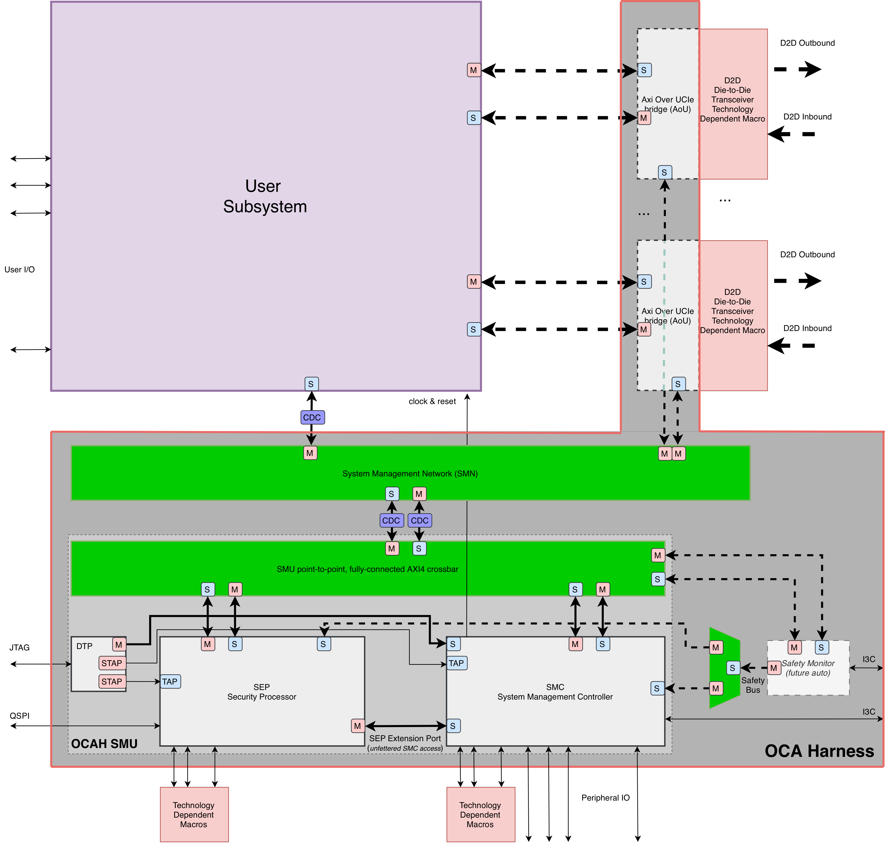
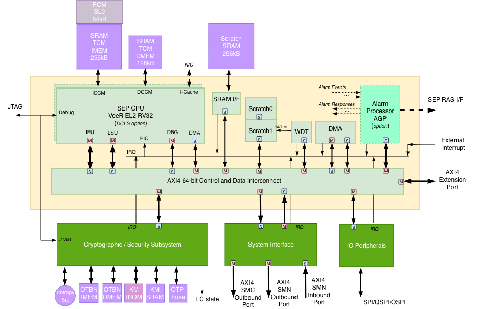
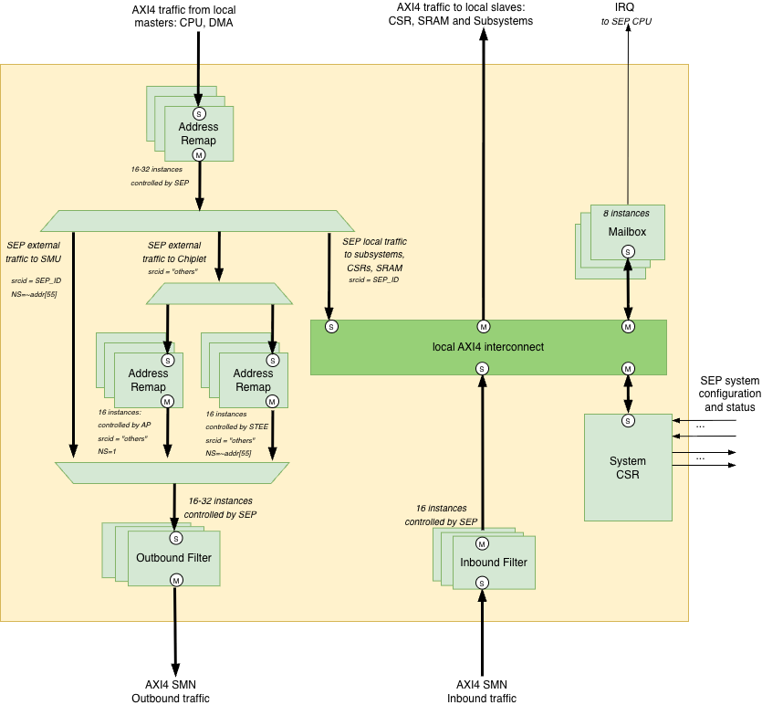
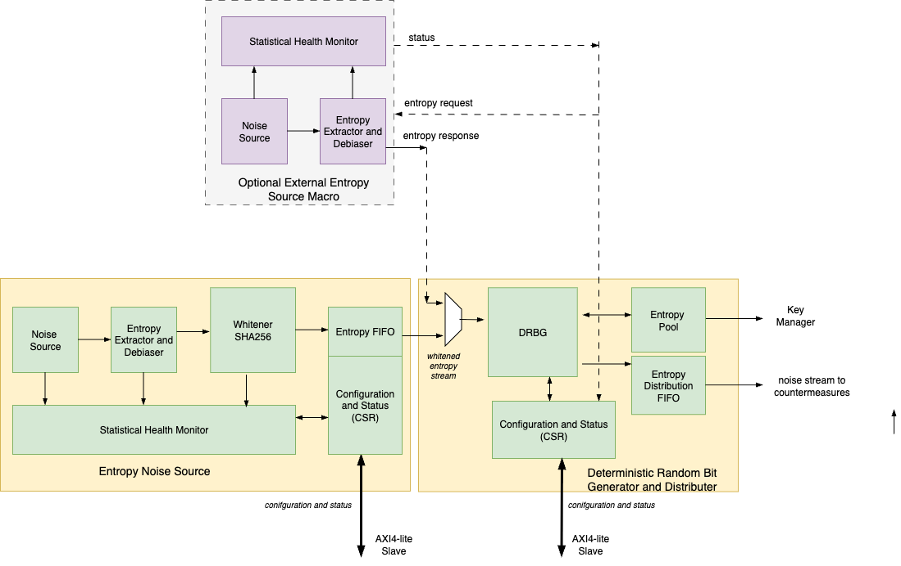
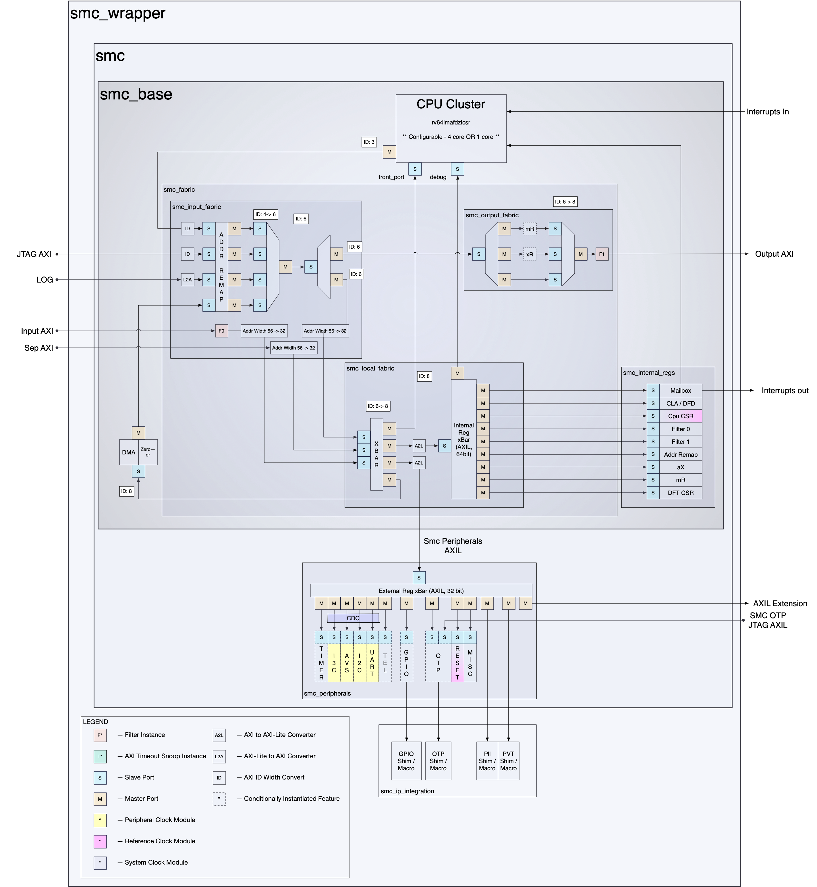
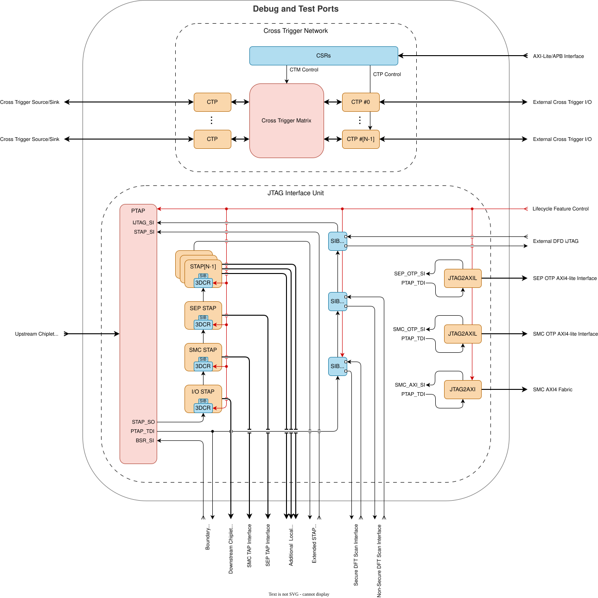
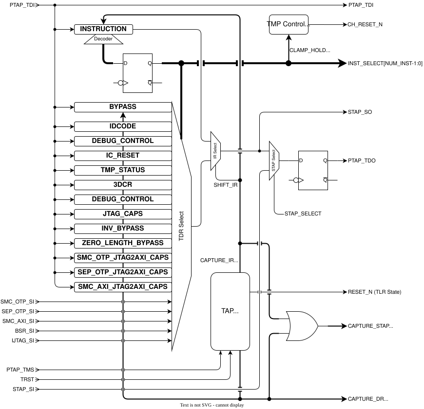
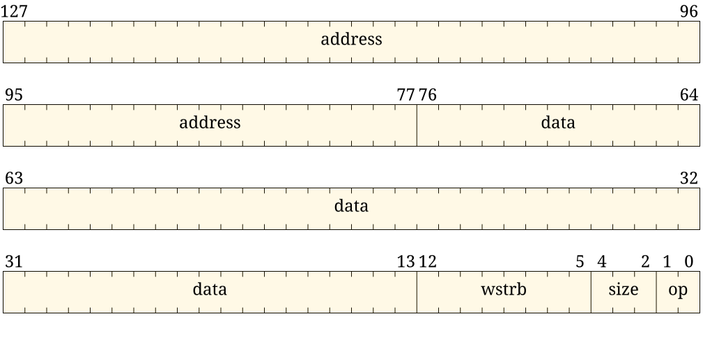
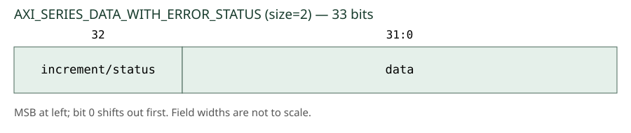
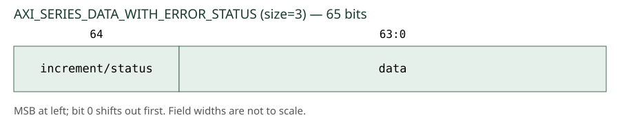

OCAH Architecture & Design
1. OCAH Architecture
This chapter describes the OCAH subsystem composition, power and clock domains, reset hierarchy, and memory map. Subsequent chapters provide detailed microarchitectural documentation for each subsystem.
1.1. OCAH High-Level Features
-
Security Processor (SEP) — Root of Trust (RoT) with the highest security privilege. Provides a physically isolated RISC-V execution environment for secure boot, lifecycle control, device attestation, and hardware-accelerated cryptography (OTBN PKA, AES, HMAC-SHA2, KMAC-SHA3, TRNG, DRBG, Key Manager). A security hierarchy across chiplets enables SiP-wide security management.
-
System Management Controller (SMC) — Firmware-driven orchestration engine responsible for clock, voltage, and reset management, platform bootstrapping, system initialisation, and power/thermal management. Built around a RISC-V micro-controller with hardware accelerators (DMA, memory zeroer) where firmware alone cannot meet timing requirements. Inter-chiplet management hierarchy via I2C/I3C and OCMI channels.
-
Debug & Test Ports (DTP) — Standardised debug and test access across heterogeneous, multi-vendor chiplet systems. Layered architecture separating physical transport from logical access, with cross-chiplet event triggering, synchronised clock control for trace, and coordinated resets.
-
System Management Unit (SMU) — The composite module combining SEP, SMC, and DTP into a single instantiable subsystem.
-
System Management Network (SMN) — Internal communication fabric (point-to-point or packetised) providing the management backbone for configuration, status reporting, and firmware-driven coordination between SMU, user logic, and D2D interfaces.
-
AXI-over-UCIe Bridge (AoU) — Protocol bridge between the AXI-based internal fabric and the UCIe die-to-die physical interface, enabling inter-chiplet system management traffic and application-level transaction forwarding.
-
Application-Specific Logic — OCAH treats the application layer as a black box: the harness services are agnostic to whether the application is a CPU complex, NoC, DSA, memory controller, or high-speed IO. The application logic is outside the scope of OCAH.
-
Safety Monitor (SMO) — External entity that collects error signals and diagnostic logging from OCAH subsystems to implement fault reaction policies. The SMO is outside the scope of OCAH; its interface requirements are specified separately as part of OCAH’s functional safety documentation.
1.2. Top Block Diagram
The figure below presents the OCAH top-level block diagram showing the relationship between the subsystems described above.

1.2.1. SMU AXI Crossbar
Inside the SMU, the smu_axi_xbar module is the system-level
arbitration fabric between SEP, SMC, and the rest of the chiplet
(reached through the smu_axi_in / smu_axi_out boundary pair). It is
a 3x3 AXI4 crossbar with non-reflexive connectivity: each master can
reach the other two subordinates but never its own inbound port.
| Master (from) | Subordinate (to) | Purpose |
|---|---|---|
|
|
SEP-initiated transactions into SMC resources |
|
|
SEP-initiated transactions leaving the SMU |
|
|
SMC-initiated transactions into SEP resources |
|
|
SMC-initiated transactions leaving the SMU |
|
|
External transactions targeting SEP |
|
|
External transactions targeting SMC |
Routing decisions use a runtime address map with two programmable
rules (SEP and SMC apertures) and one static catch-all (ext_out).
See OCAH Memory Map for the fixed-vs-programmable
split and the reference envelope convention, and see the SMU AXI Crossbar
Address Map section in the Integrator Guide for firmware programming order.
1.3. OCAH Memory Map
OCAH separates the chiplet-visible SMU aperture from the internal address maps used by SEP and SMC firmware. The chiplet integrator decides which system address range reaches the SMU external AXI input. Firmware then programs the SEP and SMC global base/size CSRs so the SMU crossbar can route incoming traffic to the correct inbound port.
| Concept | Configured by | Purpose | Example |
|---|---|---|---|
Chiplet NoC envelope |
Integrator / chiplet address map |
Controls which external-master addresses reach SMU |
Example only: 64 MiB total SMU aperture |
SEP global aperture |
SEP firmware via |
Controls SMU |
Example only: 32 MiB SEP slot in a 32 MiB + 32 MiB SEP/SMC partition |
SMC global aperture |
SMC firmware via |
Controls SMU |
Example only: 32 MiB SMC slot in a 32 MiB + 32 MiB SEP/SMC partition |
External masters use chiplet-global addresses and are bounded first by the
chiplet NoC decode. The SMU crossbar applies the firmware-programmed SEP and
SMC global apertures to route those transactions to sep_in or smc_in.
Subsystem-internal CPU maps and local aliases are described in the SEP and SMC
chapters.
The current reset defaults are conservative boot values:
SEP_REGION_SIZE resets to 0x0100_0000 (16 MiB) and SMC REGION_SIZE
resets to 0x0100_0000 (16 MiB). Firmware may reprogram these values during
early boot to match the chiplet address assignment. If the reset values are
changed to a 32 MiB SEP/SMC split, this section should be updated
accordingly.
1.4. Power Domains
The SMU, SMN, and AXI-over-UCIe bridge (AoU) reside in the same always-on power domain. This domain remains powered whenever the chiplet has supply, ensuring that platform management, inter-chiplet communication, and security services are available even when application logic is powered down.
Vendor-specific macros and subsystems that are outside the scope of OCAH — such as OTP/eFuse controllers, PLLs, die-to-die PHYs (e.g. UCIe PHY),
analogue sensors, and application-specific tiles — typically reside in their
own dedicated power and voltage domains defined by the adopter’s power
architecture. OCAH provides the isolation and sequencing infrastructure
(isolate_req_o[31:0], ss_reset_ctrl_o[31:0]) that the SMC firmware uses
to coordinate power transitions for these external domains, but their supply
rail definitions, power gating decisions, and leakage budgets are
adopter-specific.
The SMC provides runtime power management services for the application logic,
including dynamic voltage and frequency scaling (DVFS) through AVSBus-based
voltage regulator control and firmware-driven Performance State (P-State)
management. At the RTL level, the SMU accepts a powergood_i input that
indicates supply stability and exposes isolate_req_o[31:0] to request
isolation of individual subsystem domains before power transitions.
| The figure below will be provided as an annotated version of the top-level block diagram highlighting the power domains. |
1.5. Clock Domains
OCAH distinguishes low-level management timing from functional application
clocks. The SMC receives an always-on reference clock (clk_ref_i) that is
available from power-on, before any PLL is locked. Using this reference clock,
the SMC controls the PLLs during early bring-up and generates the primary
system clock (clk_smu_i) that is then distributed to the SMC itself, the
SEP, and the DTP.
The SMN lives in its own clock domain with respect to the SMU --- as highlighted by the clock domain crossing in the top level diagram --- and with respect to the application logic.
The following table summarises the clock domains present in OCAH.
| Clock | Subsystem | Description |
|---|---|---|
|
SMU (SMC, SEP, DTP) |
Primary system clock, generated by the PLL under SMC control. Distributed internally to the SMC, SEP, and DTP subsystems. Drives the CPU cluster, fabric interconnect, peripheral controllers, and DTP cross-trigger / AXI bridges. |
|
SMN |
System Management Network clock. Independent of |
|
SMC |
Always-on reference clock, available before PLL lock. Used by the SMC for early bring-up, PLL control, reset synchronisation, and peripherals requiring a stable, lower-frequency source. |
|
SMC |
Peripheral clock domain. Drives SMC peripheral subsystems. The reset unit
generates a dedicated synchronised reset ( |
|
SMC |
ATB telemetry clock domain. Separate clock for Advanced Trace Bus data
collection, with its own reset ( |
|
SEP |
Low-frequency watchdog timer clock. Must be independent of the system clock so the WDT can detect system clock failures. |
|
DTP / SEP |
JTAG Test Clock. Drives PTAP, STAP state machines, and all JTAG-domain scan logic inside the DTP/SMC/SEP. |
|
SEP |
Ring-oscillator sample clock for the entropy source (TRNG). Must be
asynchronous to |
| The figure below will be provided as an annotated version of the top-level block diagram highlighting the clock domains. |
1.5.1. Reference Counter
Both the SMC and the SEP expose a free-running 64-bit reference counter in their
CPU control register block (the REFERENCE_COUNTER CSR), clocked by the
always-on reference clock (clk_ref_i). It advances continuously from reset,
independent of the system clock (clk_smu_i) frequency or PLL state. Its value
is synchronised into the CPU clock domain for software reads, and software may
write the CSR to reload the counter, after which it resumes counting from the
loaded value. Both subsystems share the same implementation
(prim_refclk_count_w_cdc) and behave identically.
1.6. Reset
Reset is handled hierarchically so that the management infrastructure comes
out of reset first and then releases dependent domains in a controlled order.
A global power-on reset (rst_cold_ni) establishes a known state for the
entire chiplet, but the always-on domain is intended to be released first so
that early control logic is live immediately. From there, the SMC sequences
reset deassertion for the SMN and for downstream managed blocks according to
platform dependencies, boot policy, and fault conditions. This staged reset
model also supports partial and warm-reset behaviours in which application
domains can be reset or recovered without fully tearing down the always-on
management infrastructure.
The reset hierarchy within the SMU proceeds as follows:
-
Power-on / cold reset. The external
rst_cold_niis asserted during power-up and deasserted synchronously after supply voltages stabilise. Thepowergood_iinput indicates that supplies are stable. -
SMC reset synchronisation. The SMC reset unit (
smc_reset_unit) generates domain-specific synchronised resets from the single cold reset input:-
rst_primary_smc_clk_no— synchronised to the primary SMC clock domain -
rst_primary_ref_clk_no— synchronised to the reference clock domain -
rst_primary_periph_clk_no— synchronised to the peripheral clock domain -
rst_cold_stable_ref_clk_no— stable cold reset in the reference domain
-
-
DTP reset. The DTP is held in reset by the SMC’s primary synchronised reset (
rst_primary_smc_clk_no). In addition, the JTAG state machine requires a power-on reset that remains asserted until supplies are stable; at the SMU level this is thepowergood_stablesignal generated by the SMC. -
SEP reset. The SEP is held in reset by the same SMC primary reset (
rst_primary_smc_clk_no). A separate watchdog reset path (rst_wdt_nat the SMU level, generated by the SMC reset unit) allows the SEP to be independently reset by its watchdog timer. -
Downstream subsystem sequencing. The SMC sequences reset deassertion for up to 32 managed subsystems through
ss_reset_ctrl_o[31:0]and isolation throughisolate_req_o[31:0]. Subsystems report completion viass_reset_complete_i[31:0]. -
Function Level Reset (FLR). Asserting
cfg_flr_pf_active_itriggers a warm reset sequence that isolates subsystems throughisolate_req_oand performs controlled reset propagation without tearing down the always-on infrastructure. -
Debug reset overrides. The DTP provides JTAG IC_RESET controls that can override the fuse, cold, cool, warm, and per-subsystem reset domains independently for debug scenarios. These are wired through the SMU into the SMC reset unit and the SEP reset controller. The DTP JTAG chapter states the programming order these overrides require.
1.6.1. IC_RESET TDR
The primary TAP implements the IEEE 1149.1-2013 §17 IC_RESET TDR as three
slices on the scan chain from TDI to TDO, followed by a single reset_hold
bit nearest TDO:
-
SMC slice (nearest TDI). Fuse, cold, cool, and warm resets, plus cold and warm resets for each of the 32 managed subsystems. The SMU consumes this slice internally.
-
SEP slice. SEP main reset and the Adams Bridge, TRNG, KMAC, HMAC, AES, OTBN, and Key Manager resets. Present when SEP is instantiated; omitted otherwise. The SMU consumes this slice internally.
-
External slice. Reset overrides for logic outside the SMU. The ports in this slice are adopter-defined: the integrator supplies the slice type and routes the SMU output to that logic. OCAH does not name the external bits. The default type is a single-override stub.
Each port carries an override-enable bit and an active-low reset value. The Integrator Guide records the SMU port map, including how to size the external slice.
For the detailed reset controller design, sequencing FSM, reset register interface, and clock-reset interaction, refer to the Clock and Reset Management chapter:
For integration-level reset procedures, refer to the Integrator Guide.
2. Security Processor (SEP)
2.1. Introduction
SEP is the Root of Trust (RoT) of the chiplet with the highest security privilege. SEP provides a physically isolated execution environment for highly sensitive security services. The following are some examples:
-
Secure boot: The SEP ROM BL0 image uses non-volatile public keys to conduct authentication verification on the loaded BL1 software images.
-
Secure lifecycle control: SEP implements a secure lifecycle controller to manage function, debug and test access to the chiplet according to fuse configuration, in-field demotion, and secret token inputs.
-
Device attestation: SEP offers support to device attestation by recording the boot process and device configuration followed attestation using public key infrastructure.
-
Cryptography service: SEP offers secure key services to the rest of the system together with cryptography acceleration. SEP also implements True Random Number Generator (TRNG) to provide random numbers for SEP itself and the rest of the system.
-
User authentication: Similar to secure boot, user authentication is another authentication service SEP offers. Besides feature control that can be tied to the authentication result, SEP software can also tie the authentication result to the secret key derivation to ensure that bypass of the user authentication leads to a useless system.
The SEP is responsible for ensuring that the chiplet and overall packaged system composed of multiple chiplets remains secure from adversaries. This means that SEP ensures the system
-
Runs correctly with the intended firmware and data protected by digital signatures
-
Guards against malicious data input to SEP, SMC and the debug/test infrastructure
-
Prevents exfiltration of private or secret data on all exits, including side channels
-
Prevents privilege escalation which would enable illegal operations
A consolidated description of OCAH use cases is available in Use Cases.
2.1.1. Threat Model
The threat model covers remote software attacks, physical attacks and supply chain attacks. Software attacks are universal and the primary vector against data center implementations while physical attacks are localized and require close proximity. They are relevant for automotive and robotics applications. Supply chain attacks involve modification of chips in production and provisioning.
Software attacks include:
-
Malicious firmware modification in boot, overlay or application loading or updating
-
Modifying or exfiltrating private data e.g. ML model weights, cryptographic keys
-
Providing forged attestation to mimic legal device behavior
Physical attacks include:
-
Fault injection to bypass security checks and differential cryptoanalysis for key recovery. This can include clock and voltage glitching, laser and EM energy injection, and thermal gradients. Logically induced faults such as Row Hammer DRAM attacks are also included in this category.
-
Side channel for key and other secret data extraction
-
We assume that the attacker has full view of SRAM and OTP data state
-
-
Hardware probing to observe or control data within a chiplet or communication between chiplets
Supply chain attacks include:
-
Insider modification of design to disable or weaken security features and insert backdoors. Theft of hardware secrets such as security tokens
-
Modification of IC design masks to modify behavior and insert trojans. For example the BL0 boot ROM contents may be modified to disable secure boot.
-
Corruption of fuse provisioning to enable or disable features illegally and leak device unique secrets
We however limit the scope of physical attacks we defend against and do not explicitly protect against the following:
-
Package internal inter-chiplet communications secure from hardware probing
-
Package internal chiplet hardware probing and certain physical attacks such as bias fault injection
-
Thermal gradients to influence entropy source and induce timing faults
-
Supply chain attacks
2.1.2. Attack Countermeasures
Countermeasures include:
-
Protection of BL0 boot ROM and subsequent secure boot via digital signature verification
-
Glitch and error detection
-
SRAMs and other memory structures such as FIFOs and register files are protected by parity (byte-wise) or SECDED
-
-
Temporal noise injection, masking, secret splitting and obfuscation on sensitive operations
-
Transaction filtering and firewalling
-
Functional and physical isolation of private data assets e.g. cryptographic keys
-
Anti-replay facilities e.g. non-volatile counterj in OTP
-
Obfuscate data stored in SRAM and OTP memories
2.1.3. Debug and DFT Security Considerations
The debug facilities and DFT share the scan chain infrastructure for their respective tasks. This is a security hazard as certain secret values will be resident in the registers: tokens, secrets, cryptographic keys. Unless prevented, an attacker could halt the chip execution and extract the register state containing these secrets. This section describes the countermeasures we take to prevent this from happening.
One debug feature is scandump which provides access to all internal register states. We must ensure that a certain subset of registers holding secrets are never dumped out in this mode.
There are three scenarios of how registers are handled for DFT scan test and debug scandump:
-
Full DFT and Debug access
-
DFT access but no Debug access
-
No DFT and no Debug access
Consequently there will be two discrete scan chains to handle the registers in groups 1 and 2. The register instances (or module instances) will be labelled as belonging to one of the three groups and the DFT scan insertion tool will group the registers into the respective scan chains which will be managed for security in the TAP controller.
These three groups correspond to the SEP asset classes defined authoritatively in the Lifecycle Controller chapter (Asset and Scan-Chain Protection): group 1 = Class 3 (general), group 2 = Class 2 (crypto / KM secret-bearing, plus the fuse program path), group 3 = Class 1 (secrets and integrity-critical control fields).
Debug and Scan Dump
Debug mode is enabled when in-field debug is granted, via demotion (DEMOTE_1 / DEMOTE_2) or an RMA debug state (RMA_SIP / RMA_CHIPLET). In this mode, the user has near full control and observability of the chip state, but we must enforce security restrictions.
General logic (Class 3) scan dump is gated by the *_DBG feature-control
bits (sourced from the OTP DIS vectors; 1’b0 = enabled, 1’b1 = disabled,
irreversible) and the LC state — a scope’s general logic is dumpable only
when its local gate (SEP_DBG / CHIPLET_DBG), the SIP_DBG debug-access
path into the chiplet, and the LC state permit it.
Secret-bearing logic (Class 2) — crypto-engine key / round-key storage and
the Key Manager key vault / shared key storage — is placed on a dedicated
secure scan chain so DFT keeps coverage, but is never scan-dumpable, for any
owner or LC state. The _DBG bits decide whether that chain is reachable, as
they do for any chain; what makes it undumpable is the command class. The DFT
controller admits a *test command on it only when secure_tm = 1, admits
nothing at secure_tm = 0, and never admits a dump command at all. Under
secure_tm = 1 the secret sources (UID / CLASS_KEY) are disconnected from
these consumers, so a permitted test shift moves no real secret.
Secrets and integrity-critical fields (Class 1) are excluded from every scan chain (never scannable):
-
Class 1a (confidentiality): UIDs,
CLASS_KEY, token-plaintext input registers (*_TOKEN_I), raw fuse read-back data. -
Class 1b (integrity):
LOCKS/LOCKS_SPARE,LC_STATE,SIP_DIS,SYS_DIS,*_TOKEN_DIGESTshadow registers.
Class 2 Asset Manifest and Naming
The authoritative class definitions, scan-chain policy, and gating rules are in the Lifecycle Controller chapter (Asset and Scan-Chain Protection); Key Manager specifics are in the Key Manager chapter (Scan and Scan-Dump Protection). This section records the implementation manifest. A complete module instance is classified as Class 2a when it is the Key Manager, a device-secret-consuming cryptographic engine, an entropy engine, or sequential distribution logic that retains key, seed, random, digest-working, or round-key state. Classifying complete instances deliberately includes their control flops and avoids fragile per-register marking.
The current SEP implementation has exactly 10 Class 2a RTL scan roots:
-
sep_crypto.hmac_wrapper_s3c_scan -
sep_crypto.sep_crypto_otbn_wrapper_s3c_scan -
sep_crypto.aes_wrapper_s3c_scan -
sep_crypto.kmac_wrapper_s3c_scan -
sep_crypto.u_sep_crypto_abr_wrapper_s3c_scan -
sep_crypto.u_sep_trng.u_entropy_source_s3c_scan -
sep_crypto.u_sep_trng.u_drbg_s3c_scan -
sep_crypto.u_axis_edn_crypto_s3c_scan -
sep_crypto.u_key_manager_s3c_scan -
u_trng_wrapper_s3c_scan
The _s3c_scan suffix is reserved for Class 2 instance and generate-scope
names. It is not a module-name or per-flop suffix. A nested _n0_scan name
remains Class 1 and takes precedence over an enclosing _s3c_scan hierarchy.
Three writable companion SRAMs are also Class 2a assets:
u_km_sram, u_otbn_imem_sram, and u_otbn_dmem_sram. Their macro instance
names remain unchanged because _s3c_scan identifies RTL scan hierarchies;
the owning memory-DFT/MBIST policy must provide the same never-dump outcome.
u_km_rom is explicitly excluded because immutable executable contents
cannot retain runtime secrets. The vendor TRNG core keeps its delivered DFT
view beneath u_trng_wrapper_s3c_scan.
Class 2b covers the fuse programming control and status MMRs of the SEP
fuse controller. These hold no secret; they are never-dumpable because scan
shifting drives arbitrary transient values through them, and a program-control
register reached during an ordinary dump could burn fuses (see the Lifecycle
Controller chapter, Asset Classes). Class 2b shares the secure chain and the
command-class rule with Class 2a, so the _s3c_scan suffix applies to it as
well. Unlike Class 2a it is not a whole-instance classification: the remainder
of the fuse controller stays Class 3, so the implementation must identify the
program-path scan roots and name them accordingly.
Secure Test Mode (SECURE_TM)
We assert a GPIO pin strap to enable secure test mode. This generates the SECURE_TM signal which is consumed by
-
The DFT controller, which admits a test command on the Class 2 secure chain only while SECURE_TM is asserted. SECURE_TM does not enable scan test and authorizes nothing; it is the condition under which that chain will accept a test command at all.
-
Shadow registers of LOCKS/LOCKS_SPARE, LC_STATE, SIP_DIS, and SYS_DIS are non-scannable registers
-
Any downstream registers in the path from these registers to the feature control outputs or the fuse write-enable signals are also non-scannable, as are the SECURE_TM latch and the command-admission logic that consumes it
-
Dedicated test registers may be inserted in the path while in SECURE_TM mode to enable testing of downstream logic
-
-
During scan test (
secure_tm = 1) the secret-source outputs (UID /CLASS_KEY) are disconnected from the Class 2 consumers, so no real secret is shifted. On the Class 2 secure chain the DFT controller admits a test command only atsecure_tm = 1, admits no command atsecure_tm = 0, and never admits a dump command (never dumpable). See the Lifecycle Controller chapter, `secure_tm` and the Secure Scan Chain. -
Disable writing to any OTP fuse state to prevent updates.
-
-
OTP controller
-
Disable writing of shadow registers: LOCKS/LOCKS_SPARE, LC_STATE, SIP_DIS and SYS_DIS
-
Other shadow register fields may optionally also have write disabled
-
2.2. Hardware Overview
The diagram below shows the top level SEP architecture.

SEP is hierarchically organized as follows:
-
SEP interconnect fabric
-
AXI4 top level for CPU subsystem, its base platform components, System peripherals, Cryptographic/Security peripherals and IO peripherals subsystems
-
-
External IO ports
-
System Interface to SMN NoC
-
Outbound AXI4 system bus master
-
Inbound AXI4 system bus slave
-
-
Low speed IO peripherals AXI4 extension port with peripheral interrupt
-
SPI controller interface (single/quad/octal)
-
Remote peripherals shared with SMC: UART, GPIO
-
-
JTAG for debug and test
-
-
External Macro Interfaces
-
Memories: BL0 ROM, DCCM, ICCM, Scratch SRAM, KM SRAM, KM ROM, OTBN IMEM, OTBN DMEM
-
OTP eFuse
-
Entropy source
-
-
CPU subsystem
-
JTAG interface to CPU debugger and system debug facilities
-
Tightly coupled instruction SRAMs and ROM
-
-
Scratch Register Bank x 2
-
DMA Engine
-
Watchdog Timer (WDT)
-
Alarm aggregation processor (AGP) with Reliability, Availability, and Serviceability (RAS) port - deferred to the next generation
-
Cryptographic subsystem
-
Cryptographic accelerators: Public Key Engine, AES, HMAC-SHA2, KMAC-SHA3
-
Security components: Life Cycle Controller, Key Manager, OTP Fuse Controller
-
Entropy source, DRBG, Entropy Distribution
-
Key Manager (KM)
-
Key and Policy Vault (KPV)
-
Crypto engine key sideload interfaces
-
-
The cryptographic, peripheral IO and systems IO subsystems reside in their own respective hierarchies. These subsystems are connected with the main SEP AXI4 crossconnect fabric. Individual peripherals in the subsystems have AXI4-lite interfaces.
Technology and vendor specific macro blocks such as SRAM, ROM etc. are instantiated outside of SEP and have dedicated SEP interfaces. The goal is to cleanly separate the generic SEP IP from technology specific components in order to make integration and migration easier.
2.3. SEP Interconnect
The interconnect of SEP components and subsystems is done with a hierarchical AXI4 crossbar fabric. Masters drive traffic onto the interconnect fabric and receive responses from the addressed slave. Slave components are directly connected to the AXI4 fabric or via a bridging shim. The shim translates either AXI4-lite or the legacy Tilelink TL-UL used in OpenTitan. The goal is to eventually convert all TL-UL slaves into AXI4-lite slaves.
AXI4-lite slave bridges will need to perform the following tasks in order to mate with AXI4:
-
Bursts are not supported: convert burst transactions to single transactions
-
Write strobe (WSTRB) for partial write is not supported: TBD how to handle
-
Transaction IDs (AxID) handling
2.3.1. Top Level AXI4
C = Connected, N/C = Not Connected.
The table below reflects the generated crossbar connectivity defined in
meta/crossbars/configs/sep_local_axi_xbar.yaml, along with the dedicated
Boot ROM path that lies outside the crossbar. The crossbar has five
initiators (CPU IFI, CPU LSU, CPU DBG, DMA, and the System Interface)
and ten targets.
A few access paths are intentionally outside this crossbar:
-
Boot ROM is accessed by the CPU IFI and LSU through a dedicated point-to-point path, not through this crossbar.
-
The CPU’s own ICCM/DCCM are tightly coupled to the core and are not reached through this crossbar by the IFI/LSU. The CPU TCM target below is a backdoor AXI path into the ICCM/DCCM, used by the DMA engine to preload code/data.
-
The Alarm AGP is a feature deferred to the next generation and is not present.
The System Periph target aggregates the System Bus interface, the dual scratch register bank, the AP/STEE remap regions, and the outbound routing to SMC/SMN resources.
The Entropy Pool target is sep_entropy_fifo (0x1095_0000): a 64-bit
read-only entropy drain aperture, filled autonomously by a native EDN
endpoint on a separate hardware path (not this crossbar). Writes to it
terminate with BRESP=SLVERR.
The System Interface initiator is the external inbound master. It does
not attach to this crossbar directly; it enters SEP through the dedicated
smn_inbound port and the inbound traffic filter (block-by-default), then
through the sep_system_peripherals inner crossbar. That inner crossbar
reaches the mailboxes and system CSRs directly, and loops everything
else back into this crossbar’s System Interface row. The inbound filter
controls which addresses the external master may reach; it is block-by-default
after POR and configured by SEP firmware.
Masters |
Crossbar |
Dedicated Path |
|||||||||
|---|---|---|---|---|---|---|---|---|---|---|---|
CPU TCM |
Scratch SRAM |
DMA CSR |
WDT |
Reset Ctrl |
Crypto Periph |
System Periph |
IO Periph |
Entropy Pool |
AXI Extension |
Boot ROM |
|
CPU IFI |
N/C |
C |
N/C |
N/C |
N/C |
N/C |
N/C |
N/C |
N/C |
N/C |
C |
CPU LSU |
N/C |
C |
C |
C |
C |
C |
C |
C |
C |
C |
C |
CPU DBG |
N/C |
C |
C |
C |
C |
C |
C |
C |
C |
C |
N/C |
DMA |
C |
C |
N/C |
C |
C |
C |
C |
C |
N/C |
C |
N/C |
System I/F |
N/C |
C |
C |
C |
N/C |
C |
N/C |
C |
C |
C |
N/C |
2.3.2. Subsystem External Interfaces
-
Memory interfaces: BL0 ROM, DCCM, ICCM, Scratch SRAM, KM SRAM, KM ROM, OTBN IMEM, OTBN DMEM
-
Fuse controller interface
-
Entropy source interface
-
JTAG interfaces
-
RAS Interface - Alarm Processor is deferred to next generation
2.3.3. Local and External AXI4 Traffic Remapping
The figure below illustrates the AXI4 traffic management performed by the Systems Peripheral block. The AXI4 slave port is driven by one of the local masters from the SEP i.e. the CPU or the DMA controller. Traffic may be local to the SEP or outbound to external resources either within the SMU or beyond the SMU. Traffic beyond the SMU to the rest of the chiplet or remote chiplets will bridge to the system NOC also known as the SMN.
Transaction Routing
Local resources can be addressed by SEP CPU direct internal addresses
or by the SEP CPU local-alias view. Local resources include CSRs in SEP
components and subsystems, SRAM, and the AP- and STEE-controlled
remappers. The local-alias view is an internal CPU-side naming
convention: for example, addresses in the high alias range can be
translated back to the direct internal 0x1000_0000 and 0x2000_0000
regions. This high local-alias window has a fixed SEP-local size of
768 MiB.
External masters use chiplet-global addresses. The SEP_GLOBAL_BASE_ADDR
and SEP_REGION_SIZE CSRs define the global SEP aperture used by the
SMU crossbar and by SEP inbound global-to-local remap. The current SEP_REGION_SIZE reset is 0x0100_0000 (16 MiB); firmware may
program a larger or different aperture during early boot to match the
chiplet address assignment.
Neighboring SMC resources are accessed through the SMC global aperture programmed by SMC firmware and supplied to SEP/SMU integration logic. That aperture is independent from the SEP CPU local-alias range.
As stated earlier, any transaction which is not routed to local SEP resources or to neighboring SMC resources is directly routed out to the SMN system NoC.
SEP’s outbound traffic serves to:
-
Provide security services and
-
extend its protection to the reset of the system
For 1 the outbound traffic traverses the AP controlled remappers and for 2 the traffic goes directly to the SMN system fabric. SEP differentiates between the two scenarios 1 and 2 and enforces that the correct path is used.
When SEP accesses shared resources such as shared memory for example, the traffic goes through the AP or STEE controlled remappers to get the address translation service. These remappers are controlled by external resources such as Ascalon AP. The inbound traffic filter ensures that only STEE has access to the STEE address remapper.
When SEP accesses external private memory or the system’s memory mapped IO, the SEP traffic is directly routed to SMN.
SEP’s outbound traffic carries a source ID. Traffic destined to the SMN
uses SEP’s unique source ID. Traffic that traverses through the AP
controlled remapper uses the regular source ID termed others''.
Traffic then traverses the outbound filter after traversing the
remapper. SEP works with M-mode software to program the outbound filters
so that traffic with source ID others'' cannot access M-mode assets.
The outbound filter enables filtering based on address, NS and source
ID.
The SEP’s inbound traffic filter is configured by default to block all traffic from entering the SEP. Only the SEP CPU can program these filters. Again, these filters enable filtering based on address, NS and source ID.
Traffic Filter Decode
Both SEP filters are instances of the common axi_filter_wrap block. The
inbound filter has 16 entries and the outbound filter has 32; each entry
is one filter_ctrl register triple (FILTER_CONFIG, START_ADDR,
END_ADDR). Both carry 56-bit addresses on a 64-bit data bus, both
enable NS and source ID matching, and both block traffic that matches no
entry.
The inbound filter is bypassed in its entirety, admitting all inbound
traffic, while SEP-scope debug is enabled; see
Disable Vector Format (SIP_DIS / SYS_DIS) for the SEP_DBG control. The
outbound filter has no bypass and is always in effect.
The decode algorithm — entry priority, the match conditions, the address range granule and its widening direction, and the response returned to a blocked initiator — is common to SEP and SMC. It is documented once with the IP in AXI Traffic Filter.
Address Remapping
Sixteen remap regions are available, each supported by an address remapper. Remappers define the following attributes:
-
Input address range
-
Remapped output address offset
-
Cacheable flag
The programmable remap regions accomplish several jobs. First, they expand local 32-bit addresses to the global 56-bit address space. Second, they provide software-programmed translation and cacheability attributes for locally initiated transactions. Out of reset, these programmable remap entries are invalid and therefore behave as transparent pass-through entries until firmware programs them.
After the alias remap, traffic routing is done as follows:
-
External or cross-subsystem traffic reaches SEP through the global aperture described by
SEP_GLOBAL_BASE_ADDRandSEP_REGION_SIZE. The currentSEP_REGION_SIZEreset is0x0100_0000(16 MiB), and firmware programs the runtime value during early boot to match the chiplet map. Barrier is recommended between programming these routing CSRs and issuing later MMIO accesses. -
SEP CPU local-alias traffic is an internal CPU-side view of the SEP map. It exists so software can use high alias addresses such as
0xD000_0000for resources whose direct internal addresses begin at0x1000_0000. This high local alias span has a fixed SEP-local size of 768 MiB. -
Any transaction that doesn’t get routed to local resources is directly routed out to the SMN.
To compute global addresses for external agents, firmware needs the chiplet ID or chiplet BAR for the integration. Both the chiplet ID and chiplet BAR are available in SMC as MMRs.
SEPs outbound traffic to the main fabric serves the purposes of 1) providing services and 2) extending its protection to the rest of the system. For the former purpose, SEP’s outbound traffic goes through an AP-controlled remap logic. For the latter purpose, SEP’s outbound traffic directly goes to the NoC. SEP software shall differentiate these two purposes and choose/enforce the correct traffic path to be used.
-
When SEP accesses shared resources (e.g. shared memory) with the rest of the system, SEP’s traffic goes through the AP-controlled or STEE-controlled remap logic to get address translation. Such remap logic is supposed to be controlled by the rest of the system, like Ascalon. The inbound traffic filter ensures only STEE has access to the STEE-controlled remap logic.
-
When SEP accesses its external private memory or the system’s memory mapped IO, SEP’s traffic directly goes to the system fabric.
Mailboxes
SEP uses mailboxes to communicate with the rest of the system such as AP cores for example. Each different agent has its own private mailbox in order to separate the contexts. Each mailbox resides in its own 4 kB address space. Each mailbox is configured according to the inbound traffic filter and has an inbox and outbox pair. When the inbox is written, an interrupt is sent to the SEP CPU to notify it of an incoming service request. Similarly, when the outbox is written by the SEP, an interrupt is sent out of the SMU to the system’s interrupt controller (APLIC). The outbox is only used for communication with AP cores. For all other resources we only use inboxes on both ends of the transaction.
The SEP mailboxes have 64-bit data registers while SEP is a 32-bit system. Registers sit on an 8-byte stride and are decoded by which 8-byte slot the address falls in, so a register’s low and high halves alias to the same register. The SEP CPU is RV32 and can reach only one half per instruction, which makes every half-word access a full-register access at the mailbox:
-
A read of
READ_DATAat either half pops one FIFO entry. The mailbox drives the whole entry; the CPU keeps the half selected by address bit 2 and discards the other. Reading both halves consumes two entries. -
A write of
WRITE_DATAat either half pushes one entry, with bytes outside the write strobe pushed as zero. A 32-bit store to the low half enqueues{32’h0, data}.
SEP can use either half, but never both halves of one entry, so a SEP-visible payload is 32 bits per entry and both ends must agree on which half carries it. SEP firmware uses the low half at the register base offset.
This depends on the mailbox aperture staying side-effect in mrac.
Clearing side-effect enables the core’s load-to-load forwarding and
speculative accesses, both of which pop entries unpredictably.
|
Mailbox type is a configuration, not a hardware variant. Every mailbox is an identical instance of the same block; what makes one an ISS mailbox and another an STEE or Regular mailbox is the inbound traffic filter entry that covers its 4 kB aperture. The filter blocks by default, so a mailbox with no enabled entry over its aperture is unreachable from the fabric, and reprogramming an entry retypes that mailbox at run time. An entry pairs an address range with the qualification criteria below, plus separate read and write permissions and a write-once lock bit. See Traffic Filter Decode for the SEP filter instances and AXI Traffic Filter for the entry registers and the decode algorithm used to program them.
| Mailbox Type | Description |
|---|---|
ISS |
Uses fabric source ID to qualify incoming transactions. Legal source ID is programmable, lockable and reset by SEP reset. |
STEE |
Relies on STEE indicator in the transactions (NS bit) to qualify incoming transactions. |
DTEE |
Reserved. Would rely on the DTEE indicator in the transactions (confidential bit) to qualify incoming transactions. TODO: Confidential bit will be defined in future revisions, right now there is no hardware to qualify this. |
Regular |
Relies on PMA/PMP or page table for protection. No special action required by SEP. |

2.4. AXI Traffic Filter
The AXI traffic filter (axi_filter_wrap) is the common address and
attribute filter used on the inbound and outbound AXI paths of both SEP
and SMC. This section describes the decode algorithm, which is identical
in every instance; the subsystem chapters describe where each instance
sits in their fabric and how firmware is expected to program it.
A filter holds a configurable number of independent entries. Each entry
is one filter_ctrl register triple — FILTER_CONFIG, START_ADDR,
END_ADDR — and every entry is evaluated against every transaction.
2.4.1. Instances
| Instance | Entries | Address | Data bus | Unmatched traffic | Bypass |
|---|---|---|---|---|---|
SEP inbound |
16 |
56-bit |
64-bit |
Blocked |
While SEP-scope debug is enabled |
SEP outbound |
32 |
56-bit |
64-bit |
Blocked |
None |
SMC inbound |
16 |
56-bit |
64-bit |
Blocked |
None |
SMC outbound |
16 |
56-bit |
64-bit |
Permitted |
None |
NS and source ID matching are enabled on all four instances. Group ID
matching is disabled at build time on all four, so the group_id field
has no effect.
2.4.2. Match, Then Permit
Decode is two distinct steps, and the difference between them governs what happens when entries overlap.
First, every entry is evaluated in parallel to produce a match. An entry matches only when all of the following hold:
-
entry_enabledis 1. A disabled entry never matches. -
The transaction address falls inside the entry’s address range, after the granule widening described below.
-
prot[1]equalsallow_ns. This is an equality test, not a permission grant: an entry withallow_ns = 0matches secure transactions only, and an entry withallow_ns = 1matches non-secure transactions only. -
The transaction’s source ID equals
src_id, orsrc_idis 0, which is a wildcard matching any source ID. -
allow_burstis 1, or the transaction is a single beat (AxLEN= 0).
Second, the lowest-numbered matching entry wins, and only that entry’s
permission bit is consulted: read_allowed for AR, write_allowed for
AW. If the bit is clear, the transaction is blocked. If no entry matches
at all, the outcome is the instance’s unmatched-traffic policy from the
table above.
The two steps therefore fail differently:
-
A transaction that fails a match condition on an entry falls through to the remaining entries, and a higher-numbered entry can still admit it. A non-secure transaction, a burst, or a foreign source ID is not denied by an entry that rejects it; it simply does not select that entry.
-
A transaction that matches the lowest-numbered entry but finds its permission bit clear is blocked outright. Higher-numbered entries are never examined, even if one of them would have permitted the access.
Entry index is thus a strict priority and the first match ends the search, so program the most specific policy at the lowest index and the broader fallback policy above it.
Writes and reads are decoded independently: the AW channel and the AR
channel each run the full decode against their own address, burst
length, prot[1] and source ID, so a write and a read to the same
address may select different entries.
2.4.3. Address Range Granule
Address comparison ignores the low address bits, so a filter range
always covers a whole number of granules. allow_burst selects the
granule:
-
allow_burst = 1: the granule is 4 KB and address bits [11:0] are ignored. -
allow_burst = 0: the granule is the data bus width — 8 bytes on every instance in the table above — and address bits [2:0] are ignored.
START_ADDR consequently widens down to the base of its granule and
END_ADDR widens up to the top of its granule, so a range is never
narrower than one granule. Programming START_ADDR equal to END_ADDR,
or any range shorter than the granule, still admits the whole granule,
and a range that straddles a granule boundary admits both granules.
allow_burst |
START_ADDR |
END_ADDR |
Addresses admitted |
|---|---|---|---|
1 |
|
|
|
1 |
|
|
|
1 |
|
|
|
0 |
|
|
|
Hardware writes the widened values back into START_ADDR and END_ADDR
when both land in the same granule, so reading back the first example
above returns 0x1000 and 0x1FFF. When the programmed range spans more
than one granule the write-back does not fire and read-back returns the
programmed values unchanged, even though address matching still widens
them. Firmware must not treat read-back as the effective range; derive
the effective range from the granule instead.
Widening only ever enlarges a range, so a range programmed tighter than
the granule opens more address space than the programmed numbers
suggest. Size protected regions in whole granules, and prefer
allow_burst = 0 for entries that must guard an object smaller than
4 KB.
2.4.4. Blocked Transactions
A blocked transaction is not dropped. It is steered to an AXI error
subordinate that terminates it with a DECERR response on BRESP or
RRESP, so the initiator always receives a response and the fabric
never stalls on a filter denial.
2.5. Memory Map
SEP uses 32-bit addressing. The following table outlines the SEP CPU’s
logical view of the SEP-local address space. External masters use the
chiplet-global base programmed in SEP_GLOBAL_BASE_ADDR; SEP CPU
software uses either direct internal addresses (0x1000_0000,
0x1080_0000, and so on) or the local alias view described below.
| Base Address | End Address | Size | Unit | Description |
|---|---|---|---|---|
0x0000_0000 |
0x1000_0000 |
256 MB |
External |
External to chiplet, but not in SMU (SMC, DTP, etc). |
0x1000_0000 |
0x2000_0000 |
256 MB |
SEP Local |
SEP Local resources (DMA, Crypto, etc) |
0x2000_0000 |
0x4000_0000 |
512 MB |
SEP External |
Reserved for adopter extension IP |
0x4000_0000 |
0x8000_0000 |
1 GB |
SMC |
SMC Resources |
0x8000_0000 |
0xC000_0000 |
1 GB |
SMU |
SMU Resources (DTP, etc) |
0xC000_0000 |
0xD000_0000 |
256 MB |
SEP CPU Resources |
EL2 Veer Resources (DCCM, ICCM, PIC) |
0xD000_0000 |
0x1_0000_0000 |
768 MB |
SEP Local Alias |
Corresponds to 0x1000_0000 - 0x4000_0000 |
The SEP Local Alias row is an alternate CPU-side name for the same
hardware listed in the SEP Local and SEP External rows. For
example, 0xD000_0000 aliases 0x1000_0000 and 0xD080_2000 aliases
0x1080_2000. This alias range is used by SEP-local masters, while
external masters use chiplet-global addresses.
The EL2 CPU resources are mapped into a separate segment than the SEP
Local resources due to constraints on the CPU memory map. The ICCM,
DCCM, and PIC addresses in the 0xC000_0000 region are statically
configured in the CPU core module and are reached through the CPU’s
internal wiring. The high local-alias mapping covers the 0xD000_0000
and above alias view. CPU CSRs are accessed with dedicated RISC-V
instructions and do not appear in the address map.
The high local alias span has a fixed SEP-local size of 768 MiB
(0xD000_0000 through 0xFFFF_FFFF), corresponding to the direct
internal range 0x1000_0000 through 0x3FFF_FFFF. The
chiplet-global SEP aperture configured by SEP_GLOBAL_BASE_ADDR /
SEP_REGION_SIZE controls the SMU xbar and inbound global-to-local
remap.
| Base Address | End Address | Size | Unit | Description |
|---|---|---|---|---|
0xC000_0000 |
0xC003_FFFF |
256 kB |
ICCM |
Tightly Coupled Instruction SRAM |
0xC004_0000 |
0xC005_FFFF |
128 kB |
DCCM |
Tightly Coupled Data SRAM |
0xC006_0000 |
0xC007_FFFF |
Reserved |
||
0xC008_0000 |
0xC008_7FFF |
32 kB |
PIC |
Interrupt controller for El2 CPU |
0xC008_8000 |
0xCFFF_FFFF |
Reserved |
The remaining subsystems are mapped into regions 1 and 2 for the EL2 CPU.
Each row below is the address aperture reserved for a unit, not the extent that decodes.
The fabric refuses an address that falls between unit windows, or past the extent a unit allocates; such an access never reaches a unit.
Inside a unit’s allocated extent, an offset that owns no register is accepted by the unit: reads return zero and writes are discarded, both with an OKAY response. Software gets no indication that it addressed nothing. Such an offset cannot alias a live register, because register decode is an exact address match rather than a range — not because the access is refused.
The TRNG aperture is forwarded in full to an adopter-defined external IP. SEP does not decode offsets inside that window, so every access reaches the TRNG slave. Intra-aperture decode is an integrator constraint: an address that owns no register must return SLVERR and must not alias onto a live register. See the Integrator Guide.
The crypto region, 0x1090_0000 - 0x1094_FFFF (OTBN through ABR), accepts single-beat transactions only; see Single-Beat Access Only.
| Base Address | End Address | Size | Unit | Description |
|---|---|---|---|---|
0x1000_0000 |
0x1000_FFFF |
64 kB |
SRAM |
Scratch SRAM |
0x1001_0000 |
0x1003_FFFF |
192 kB |
RSV |
Reserved Scratch SRAM expansion |
0x1004_0000 |
0x1004_FFFF |
64 kB |
ROM |
BL0 immutable instruction memory |
0x1005_0000 |
0x107F_FFFF |
7,872 KB |
RSV |
reserved |
0x1080_0000 |
0x1080_0FFF |
4 kB |
DMA |
DMA CSR |
0x1080_1000 |
0x1080_1FFF |
4 kB |
WDT |
Watchdog Timer |
0x1080_2000 |
0x1080_2FFF |
4 kB |
SRB |
Dual Scratch Register Banks |
0x1080_3000 |
0x1080_3007 |
8 B |
RST_CTRL |
SEP Reset Controller (software reset for KM, the crypto accelerators and the TRNG) |
0x1080_3008 |
0x108F_FFFF |
1,043 kB |
RSV |
reserved |
0x1090_0000 |
0x1090_FFFF |
64kB |
OTBN |
Public Key processor memory and CSR |
0x1091_0000 |
0x1091_0FFF |
4 kB |
AES |
Block Cipher |
0x1091_1000 |
0x1091_2FFF |
8 kB |
HMAC-SHA2 |
Hash / MAC |
0x1091_3000 |
0x1091_3FFF |
4 kB |
KMAC-SHA3 |
Hash / MAC |
0x1091_4000 |
0x1091_4FFF |
4 kB |
RSV |
Reserved |
0x1091_5000 |
0x1091_5FFF |
4 kB |
DRBG |
Deterministic Random Bit Generator |
0x1091_6000 |
0x1091_6FFF |
4 kB |
ESRC |
Entropy Source |
0x1091_7000 |
0x1091_7FFF |
4 kB |
TRNG |
External TRNG CSR passthrough |
0x1091_8000 |
0x1091_FFFF |
32 kB |
LC |
Life Cycle Controller |
0x1092_0000 |
0x1092_0FFF |
4 kB |
KM |
Key Manager |
0x1092_1000 |
0x1092_FFFF |
RSV |
Reserved |
|
0x1093_0000 |
0x1093_7FFF |
32 kB |
OTP |
Fuse Control and Shadow Memory |
0x1093_8000 |
0x1093_FFFF |
32 kB |
RSV |
Reserved |
0x1094_0000 |
0x1094_FFFF |
64 kB |
ABR |
Adams Bridge post-quantum accelerator (ML-DSA-87 / ML-KEM-1024) CSR aperture |
0x1095_0000 |
0x1095_FFFF |
64 kB |
EPOOL |
Entropy Pool FIFO (read-only drain; writes return SLVERR). Filled by native EDN. |
0x1096_0000 |
0x109F_FFFF |
RSV |
Reserved |
|
0x10A0_0000 |
0x10A3_FFFF |
256 kB |
SYS |
System Bus I/F |
0x10A4_0000 |
0x10AF_FFFF |
RSV |
Reserved |
|
0x10B0_0000 |
0x10BF_FFFF |
1 MB |
IO |
External IO Peripherals Bridge: UART, GPIO etc. |
0x1100_0000 |
0x117F_FFFF |
8 MB |
AP Remap Region |
Write to this region to be routed to the AP remapper |
0x1180_0000 |
0x11FF_FFFF |
8 MB |
STEE Remap Region |
Write to this region to be routed to the STEE remapper |
0x1200_0000 |
0x1FFF_FFFF |
20 MB |
RSV |
Reserved |
0x2000_0000 |
0x4000_0000 |
512 MB |
SEP External Region |
Reserved for adopter extension IP |
2.6. Detailed Register Map
The following register tables are generated from the SEP register description
(RDL) sub-blocks under hw/sys/sep/regs/, plus the eFuse MMR and Entropy Source
IP blocks under hw/ip/efuse/regs/ and hw/ip/entropy_source/regs/. Each entry
corresponds to a unit in the SEP memory map above.
2.6.1. CPU Control and Interrupts
Address Map: sep_cpu_ctrl
Register List:
| Address | Name | Access | Description |
|---|---|---|---|
| 0x8 | CLOCK_GATE_CTRL | RW | TODO: clock-gate control - placeholder fields, not yet implemented. |
| 0x10 | REFERENCE_COUNTER | RW | - |
| 0x18 | TIMEOUT_INTERRUPT | R | Reserved - per-block timeout interrupt not yet implemented. |
| 0x20 | PKA_CTRL | RW | TODO: PKA control - placeholder fields, not yet implemented. |
| 0x28 | TIMEOUT_COUNT_DMA | RW | Reserved - per-block timeout count/threshold not yet implemented. |
| 0x30 | TIMEOUT_COUNT_SYS_IN | RW | Reserved - per-block timeout count/threshold not yet implemented. |
| 0x38 | TIMEOUT_COUNT_MAILBOX_INBOUND | RW | Reserved - per-block timeout count/threshold not yet implemented. |
| 0x40 | TIMEOUT_COUNT_MAILBOX_OUTBOUND | RW | Reserved - per-block timeout count/threshold not yet implemented. |
| 0x48 | TIMEOUT_COUNT_ENTROPY_WRITE | RW | Reserved - per-block timeout count/threshold not yet implemented. |
| 0x50 | TIMEOUT_COUNT_ENTROPY_READ | RW | Reserved - per-block timeout count/threshold not yet implemented. |
| 0x58 | TIMEOUT_COUNT_FILTER_OUT | RW | Reserved - per-block timeout count/threshold not yet implemented. |
| 0x60 | TIMEOUT_COUNT_ALIAS_REMAP | RW | Reserved - per-block timeout count/threshold not yet implemented. |
| 0x68 | TIMEOUT_ENABLE | RW | Reserved - per-block timeout enable not yet implemented. |
| 0x70 | TIMEOUT_CLEAR | W | Reserved - per-block timeout interrupt-clear not yet implemented. |
| 0x78 | TIMEOUT_MODE | W | Reserved - per-block timeout mode not yet implemented. |
| 0xB0 | SEP_TEST_CTRL | R | - |
| 0xC0 | SEP_GLOBAL_BASE_ADDR | RW | - |
| 0xC8 | SEP_LOCAL_BASE_ADDR | RW | - |
| 0xD0 | SEP_REGION_SIZE | RW | - |
| 0x100 | SMU_GLOBAL_BASE_ADDR | RW | - |
| 0x110 | SMU_REGION_SIZE | RW | - |
| 0x140 | SMC_FUSE_SENSE_STATUS | R | - |
| 0x150 | SEP_FUSE_SENSE_STATUS | R | - |
| 0x178 | SEP_SW_DEBUG | RW | - |
| 0x180 | SEP_NMI_VEC | RW | NMI vector address for VeeR-EL2 CPU. The default value is 0xC000_0100. The NMI interrupt is used for the WDT Bark interrupt. WARNING: the reset value is a placeholder, not a usable handler. Firmware must program this register with the address of its own NMI handler, and then set SEP_NMI_VEC_LOCK, before enabling any NMI source (the WDT bark in particular). If a bark arrives while the reset value is still in place, the CPU jumps to 0xC000_0100 in ICCM and executes whatever is there: arbitrary instructions if the loaded image covers that location, or an uncorrectable ICCM ECC error (which itself re-raises NMI) if it does not. |
| 0x188 | SEP_NMI_VEC_LOCK | RW | Lock the NMI vector address. Once locked, the NMI vector address cannot be changed. The NMI interrupt is used for the WDT Bark interrupt. |
| 0x190 | EXT_TRNG_SRC_SEL | RW | Per-stream external TRNG source selection for crypto subsystem entropy muxes. |
| 0x198 | EXT_TRNG_SRC_SEL_LOCK | RW | Lock the TRNG source selection. Once locked, EXT_TRNG_SRC_SEL cannot be changed until reset. |
| 0x1A0 | KM_WIPE_CTRL | RW | Key Manager emergency wipe control. |
| 0x1A8 | DMA_BUS_ERR_STATUS | R | Secure DMA bridge fault status. Each bit is latched in hardware and held until the corresponding DMA_BUS_ERR_CLEAR write. These bits also drive dedicated PIC sources. Neither bit is cleared by a CPU-only reset (the WDT resets the CPU without resetting the DMA), so a bit read as set immediately after boot may describe a fault from before that reset rather than a new one. |
| 0x1B0 | DMA_BUS_ERR_CLEAR | W | Clear the DMA_BUS_ERR_STATUS bits. Writing 1 emits a single-cycle clear pulse to both latches. A fault arriving in the same cycle as the clear still latches, so acknowledging cannot drop a concurrent fault. |
| 0x1B8 | PERIPH_BUS_ERR_STATUS | R | Peripheral register-bridge fault status, one bit per block. Each bit latches when a CPU access to that block's registers returned a TL-UL error response (unmapped or misaligned offset, or a RACL denial), and is held until the matching PERIPH_BUS_ERR_CLEAR bit is written. The faulting access also received SLVERR synchronously. All bits OR together into a single PIC source, so read this register to identify which block faulted. No bit is cleared by a CPU-only reset (the WDT resets the CPU without resetting the peripherals), so a bit read as set immediately after boot may describe a fault from before that reset rather than a new one. |
| 0x1C0 | PERIPH_BUS_ERR_CLEAR | W | Clear PERIPH_BUS_ERR_STATUS bits. Writing 1 to a bit emits a single-cycle clear pulse to that block's latch; bit order matches PERIPH_BUS_ERR_STATUS. Clears are per-block so acknowledging one block cannot discard a fault another block raised between the status read and this write. A fault arriving in the same cycle as its own clear still latches. |
| 0x1000 | SEP_VERSION_ID | R | - |
Register Details:
CLOCK_GATE_CTRL
| Bits | Field | Access | Reset | Description |
|---|---|---|---|---|
| 63:1 | Reserved | - | - | Reserved |
| 0 | pka_cg_enable | RW | 0x0 | Reserved - PKA clock-gate enable, not yet implemented. |
REFERENCE_COUNTER
| Bits | Field | Access | Reset | Description |
|---|---|---|---|---|
| 63:0 | rc | RW | 0x0 | SEP REFERENCE COUNTER, counting after deassert of cold reset |
TIMEOUT_INTERRUPT
| Bits | Field | Access | Reset | Description |
|---|---|---|---|---|
| 63:1 | Reserved | - | - | Reserved |
| 0 | reserved | R | 0x0 | Reserved - timeout interrupt status not yet implemented. |
PKA_CTRL
| Bits | Field | Access | Reset | Description |
|---|---|---|---|---|
| 63:3 | Reserved | - | - | Reserved |
| 2 | pka_noise_src_valid | RW | 0x0 | Reserved - PKA noise source valid, not yet implemented. |
| 1 | pka_noise_src | RW | 0x0 | Reserved - PKA noise source select, not yet implemented. |
| 0 | pka_dpa_disable | RW | 0x0 | Reserved - disable DPA countermeasures in PKA, not yet implemented. |
TIMEOUT_COUNT_DMA
| Bits | Field | Access | Reset | Description |
|---|---|---|---|---|
| 63:1 | Reserved | - | - | Reserved |
| 0 | reserved | RW | 0x0 | Reserved - timeout count not yet implemented. |
TIMEOUT_COUNT_SYS_IN
| Bits | Field | Access | Reset | Description |
|---|---|---|---|---|
| 63:1 | Reserved | - | - | Reserved |
| 0 | reserved | RW | 0x0 | Reserved - timeout count not yet implemented. |
TIMEOUT_COUNT_MAILBOX_INBOUND
| Bits | Field | Access | Reset | Description |
|---|---|---|---|---|
| 63:1 | Reserved | - | - | Reserved |
| 0 | reserved | RW | 0x0 | Reserved - timeout count not yet implemented. |
TIMEOUT_COUNT_MAILBOX_OUTBOUND
| Bits | Field | Access | Reset | Description |
|---|---|---|---|---|
| 63:1 | Reserved | - | - | Reserved |
| 0 | reserved | RW | 0x0 | Reserved - timeout count not yet implemented. |
TIMEOUT_COUNT_ENTROPY_WRITE
| Bits | Field | Access | Reset | Description |
|---|---|---|---|---|
| 63:1 | Reserved | - | - | Reserved |
| 0 | reserved | RW | 0x0 | Reserved - timeout count not yet implemented. |
TIMEOUT_COUNT_ENTROPY_READ
| Bits | Field | Access | Reset | Description |
|---|---|---|---|---|
| 63:1 | Reserved | - | - | Reserved |
| 0 | reserved | RW | 0x0 | Reserved - timeout count not yet implemented. |
TIMEOUT_COUNT_FILTER_OUT
| Bits | Field | Access | Reset | Description |
|---|---|---|---|---|
| 63:1 | Reserved | - | - | Reserved |
| 0 | reserved | RW | 0x0 | Reserved - timeout count not yet implemented. |
TIMEOUT_COUNT_ALIAS_REMAP
| Bits | Field | Access | Reset | Description |
|---|---|---|---|---|
| 63:1 | Reserved | - | - | Reserved |
| 0 | reserved | RW | 0x0 | Reserved - timeout count not yet implemented. |
TIMEOUT_ENABLE
| Bits | Field | Access | Reset | Description |
|---|---|---|---|---|
| 63:1 | Reserved | - | - | Reserved |
| 0 | reserved | RW | 0x0 | Reserved - timeout monitors not yet implemented. |
TIMEOUT_CLEAR
| Bits | Field | Access | Reset | Description |
|---|---|---|---|---|
| 63:1 | Reserved | - | - | Reserved |
| 0 | reserved | W | 0x0 | Reserved - timeout monitors not yet implemented. |
TIMEOUT_MODE
| Bits | Field | Access | Reset | Description |
|---|---|---|---|---|
| 63:1 | Reserved | - | - | Reserved |
| 0 | reserved | W | 0x0 | Reserved - timeout monitors not yet implemented. |
SEP_TEST_CTRL
| Bits | Field | Access | Reset | Description |
|---|---|---|---|---|
| 31 | fast_spi_en | R | 0x0 | Fast SPI Enable |
| 30 | fast_iccm_en | R | 0x0 | Fast ICCM Enable |
| 29 | fast_dccm_en | R | 0x0 | Fast DCCM Enable |
| 28 | fast_sram_en | R | 0x0 | Fast SRAM Enable |
| 27 | fast_pka_en | R | 0x0 | Fast PKA Enable |
| 26 | sep_standalone | R | 0x0 | SEP is standalone (not part of eg SMU) |
| 25:0 | Reserved | - | - | Reserved |
SEP_GLOBAL_BASE_ADDR
| Bits | Field | Access | Reset | Description |
|---|---|---|---|---|
| 63:56 | Reserved | - | - | Reserved |
| 55:0 | addr | RW | 0x0 | - |
SEP_LOCAL_BASE_ADDR
| Bits | Field | Access | Reset | Description |
|---|---|---|---|---|
| 63:56 | Reserved | - | - | Reserved |
| 55:0 | addr | RW | 0xD0000000 | - |
SEP_REGION_SIZE
| Bits | Field | Access | Reset | Description |
|---|---|---|---|---|
| 63:32 | Reserved | - | - | Reserved |
| 31:0 | size | RW | 0x1000000 | - |
SMU_GLOBAL_BASE_ADDR
| Bits | Field | Access | Reset | Description |
|---|---|---|---|---|
| 63:56 | Reserved | - | - | Reserved |
| 55:0 | addr | RW | 0x80000000 | - |
SMU_REGION_SIZE
| Bits | Field | Access | Reset | Description |
|---|---|---|---|---|
| 63:32 | Reserved | - | - | Reserved |
| 31:0 | size | RW | 0x40000000 | - |
SMC_FUSE_SENSE_STATUS
| Bits | Field | Access | Reset | Description |
|---|---|---|---|---|
| 63:1 | Reserved | - | - | Reserved |
| 0 | smc_fuse_sense_done | R | 0x0 | This bit indicates when SMC's fuse sense is completed. While fuse sense if ongoing, SMC fabric will be in reset. Any requests to the SMC will hang. When this is 1, it is safe to send requests to the SMC. |
SEP_FUSE_SENSE_STATUS
| Bits | Field | Access | Reset | Description |
|---|---|---|---|---|
| 63:1 | Reserved | - | - | Reserved |
| 0 | sep_fuse_sense_done | R | 0x0 | This reg is used to indicate the fuse sense status of SEP. |
SEP_SW_DEBUG
| Bits | Field | Access | Reset | Description |
|---|---|---|---|---|
| 63:32 | Reserved | - | - | Reserved |
| 31:0 | sep_sw_debug | RW | 0x0 | software writtable debug information. This reg is routed to CLA |
SEP_NMI_VEC
| Bits | Field | Access | Reset | Description |
|---|---|---|---|---|
| 63:32 | Reserved | - | - | Reserved |
| 31:1 | nmi_vec | RW | 0x60000080 | NMI vector address [31:1] for VeeR-EL2 CPU. Bit 0 is always 0 (aligned). Address where CPU jumps on Non-Maskable Interrupt. This is used for the WDT Bark interrupt. The reset value does not point at a valid handler -- see the register description for the required programming order. |
| 0 | rsvd | R | 0x0 | Reserved, bit 0 is always 0 (aligned) |
SEP_NMI_VEC_LOCK
| Bits | Field | Access | Reset | Description |
|---|---|---|---|---|
| 63:1 | Reserved | - | - | Reserved |
| 0 | lock | RW | 0x0 | Lock the NMI vector address. Once locked, the NMI vector address cannot be changed. The NMI interrupt is used for the WDT Bark interrupt. |
EXT_TRNG_SRC_SEL
| Bits | Field | Access | Reset | Description |
|---|---|---|---|---|
| 63:3 | Reserved | - | - | Reserved |
| 2:0 | sel | RW | 0x7 | TRNG source select per stream. Bit N selects the source for stream N (bit0 = Key Manager, bit1 = crypto blocks, bit2 = entropy pool). 0 = internal DRBG output, 1 = external TRNG (default). |
EXT_TRNG_SRC_SEL_LOCK
| Bits | Field | Access | Reset | Description |
|---|---|---|---|---|
| 63:1 | Reserved | - | - | Reserved |
| 0 | lock | RW | 0x0 | Lock TRNG source selection. Once set, cannot be cleared by software. |
KM_WIPE_CTRL
| Bits | Field | Access | Reset | Description |
|---|---|---|---|---|
| 63:1 | Reserved | - | - | Reserved |
| 0 | wipe_state | RW | 0x0 | Key Manager wipe state. A rising edge zeroes all KPV entries and sets the WIPE_STATE interrupt status. |
DMA_BUS_ERR_STATUS
| Bits | Field | Access | Reset | Description |
|---|---|---|---|---|
| 63:2 | Reserved | - | - | Reserved |
| 1 | host_path_err | R | 0x0 | DMA-master-path fault: either the fabric returned a non-OKAY AXI response to a DMA transfer, or a TL-UL command-integrity check failed on a command issued by the DMA. The latter is a fault-detection event with no other reporting path. |
| 0 | reg_path_err | R | 0x0 | Register-path bus error: a CPU access to a Secure DMA register returned a TL-UL error response (unmapped or misaligned offset, or a RACL denial). The faulting access also received SLVERR synchronously. |
DMA_BUS_ERR_CLEAR
| Bits | Field | Access | Reset | Description |
|---|---|---|---|---|
| 63:1 | Reserved | - | - | Reserved |
| 0 | clr | W | 0x0 | Write 1 to clear both DMA_BUS_ERR_STATUS bits. Always reads 0. |
PERIPH_BUS_ERR_STATUS
| Bits | Field | Access | Reset | Description |
|---|---|---|---|---|
| 63:7 | Reserved | - | - | Reserved |
| 6 | wdt | R | 0x0 | Watchdog timer register bridge error. |
| 5 | edn | R | 0x0 | EDN register bridge error (DRBG EDN path). |
| 4 | csrng | R | 0x0 | CSRNG register bridge error (DRBG CSRNG path). |
| 3 | otbn | R | 0x0 | OTBN register bridge error. |
| 2 | kmac | R | 0x0 | KMAC register bridge error. |
| 1 | hmac | R | 0x0 | HMAC register bridge error. |
| 0 | aes | R | 0x0 | AES register bridge error. |
PERIPH_BUS_ERR_CLEAR
| Bits | Field | Access | Reset | Description |
|---|---|---|---|---|
| 63:7 | Reserved | - | - | Reserved |
| 6 | wdt | W | 0x0 | Write 1 to clear PERIPH_BUS_ERR_STATUS.wdt. Always reads 0. |
| 5 | edn | W | 0x0 | Write 1 to clear PERIPH_BUS_ERR_STATUS.edn. Always reads 0. |
| 4 | csrng | W | 0x0 | Write 1 to clear PERIPH_BUS_ERR_STATUS.csrng. Always reads 0. |
| 3 | otbn | W | 0x0 | Write 1 to clear PERIPH_BUS_ERR_STATUS.otbn. Always reads 0. |
| 2 | kmac | W | 0x0 | Write 1 to clear PERIPH_BUS_ERR_STATUS.kmac. Always reads 0. |
| 1 | hmac | W | 0x0 | Write 1 to clear PERIPH_BUS_ERR_STATUS.hmac. Always reads 0. |
| 0 | aes | W | 0x0 | Write 1 to clear PERIPH_BUS_ERR_STATUS.aes. Always reads 0. |
SEP_VERSION_ID
| Bits | Field | Access | Reset | Description |
|---|---|---|---|---|
| 63:32 | Reserved | - | - | Reserved |
| 31:0 | version_id | R | 0xDEADBEEF | Version ID for the CPU |
Address Map: el2_pic
Register Arrays:
- meipl[256]: 256 registers, base 0x0, stride 0x4
- meip[8]: 8 registers, base 0x1000, stride 0x4
- meie[256]: 256 registers, base 0x2000, stride 0x4
- meigwctrl[256]: 256 registers, base 0x4000, stride 0x4
- meigwclr[256]: 256 registers, base 0x5000, stride 0x4
Register List:
| Address | Name | Access | Description |
|---|---|---|---|
| 0x0 - 0x3FC | meipl[256] | RW | External Interrupt Priority Level Register. Sets the priority level for an interrupt source. |
| 0x1000 - 0x101C | meip[8] | R | External Interrupt Pending Register. Reports pending status of up to 32 interrupt sources. |
| 0x2000 - 0x23FC | meie[256] | RW | External Interrupt Enable Register. Controls interrupt enable for a single source. |
| 0x3000 | mpiccfg | RW | PIC Configuration Register. Used to select the operational parameters of the PIC. |
| 0x4000 - 0x43FC | meigwctrl[256] | RW | External Interrupt Gateway Configuration Register. Controls interrupt type and polarity. |
| 0x5000 - 0x53FC | meigwclr[256] | W | External Interrupt Gateway Clear Register. Writing any value clears the gateway's interrupt pending (IP) bit for edge-triggered interrupts. |
Register Details:
meipl[256]
| Bits | Field | Access | Reset | Description |
|---|---|---|---|---|
| 31:4 | Reserved | - | - | Reserved |
| 3:0 | intpriority | RW | 0x0 | External interrupt priority level: RISC-V standard order: 0=Never interrupt, 1..15=Priority (1 lowest, 15 highest) Reverse order: 15=Never interrupt, 14..0=Priority (14 lowest, 0 highest) |
meip[8]
| Bits | Field | Access | Reset | Description |
|---|---|---|---|---|
| 31:0 | intpend | R | 0x0 | External interrupt pending bits. Bit Y indicates pending status for source X*32+Y. 0: Interrupt not pending 1: Interrupt pending |
meie[256]
| Bits | Field | Access | Reset | Description |
|---|---|---|---|---|
| 31:1 | Reserved | - | - | Reserved |
| 0 | inten | RW | 0x0 | External interrupt enable: 0: Interrupt disabled 1: Interrupt enabled |
mpiccfg
| Bits | Field | Access | Reset | Description |
|---|---|---|---|---|
| 31:1 | Reserved | - | - | Reserved |
| 0 | priord | RW | 0x0 | Priority order: 0: RISC-V standard compliant priority order (0=lowest to 15=highest) 1: Reverse priority order (15=lowest to 0=highest) |
meigwctrl[256]
| Bits | Field | Access | Reset | Description |
|---|---|---|---|---|
| 31:2 | Reserved | - | - | Reserved |
| 1 | irq_type | RW | 0x0 | External interrupt type: 0: Level-triggered interrupt 1: Edge-triggered interrupt |
| 0 | polarity | RW | 0x0 | External interrupt polarity: 0: Active-high interrupt 1: Active-low interrupt |
meigwclr[256]
| Bits | Field | Access | Reset | Description |
|---|---|---|---|---|
| 31:1 | Reserved | - | - | Reserved |
| 0 | clear | W | 0x0 | Write any value to clear the interrupt pending bit in the gateway. This register is write-only; reads return 0. |
2.6.2. Reset and Lifecycle
Address Map: sep_reset_ctrl
Register List:
| Address | Name | Access | Description |
|---|---|---|---|
| 0x0 | SW_RESET_N | RW | - |
Register Details:
SW_RESET_N
| Bits | Field | Access | Reset | Description |
|---|---|---|---|---|
| 63:7 | Reserved | - | - | Reserved |
| 6 | abr_sw_rst_n | RW | 0x1 | Adams Bridge reset (0=assert, 1=release) |
| 5 | trng_sw_rst_n | RW | 0x1 | Internal TRNG reset request (0=assert, 1=release). Hardware drains and isolates the entropy-source, CSRNG, and EDN AXI ports before asserting the shared TRNG reset. |
| 4 | kmac_sw_rst_n | RW | 0x1 | KMAC reset (0=assert, 1=release) |
| 3 | hmac_sw_rst_n | RW | 0x1 | HMAC reset (0=assert, 1=release) |
| 2 | aes_sw_rst_n | RW | 0x1 | AES reset (0=assert, 1=release) |
| 1 | otbn_sw_rst_n | RW | 0x1 | OTBN reset (0=assert, 1=release) |
| 0 | km_sw_rst_n | RW | 0x0 | KM reset (0=assert, 1=release) |
Address Map: sep_lifecycle_ctrl
Register List:
| Address | Name | Access | Description |
|---|---|---|---|
| 0x0 | FEAT_CTRL | R | - |
| 0x8 | DEMOTE_1 | RW | - |
| 0x10 | DEMOTE_2 | RW | - |
Register Details:
FEAT_CTRL
| Bits | Field | Access | Reset | Description |
|---|---|---|---|---|
| 63:0 | feature_control | R | 0x0 | Lifecycle feature control bits, |
DEMOTE_1
| Bits | Field | Access | Reset | Description |
|---|---|---|---|---|
| 63:2 | rsvd | RW | 0x0 | Not used |
| 1 | lock | RW | 0x0 | Demote lock bit. Once locked, demote can no longer be changed |
| 0 | demote | RW | 0x0 | Demote bit to enter PROD_DBG state |
DEMOTE_2
| Bits | Field | Access | Reset | Description |
|---|---|---|---|---|
| 63:2 | rsvd | RW | 0x0 | Not used |
| 1 | lock | RW | 0x0 | Demote lock bit. Once locked, demote can no longer be changed |
| 0 | demote | RW | 0x0 | Demote bit to enter PROD_DBG state |
2.6.3. Scratch and eFuse
The eFuse MMR block is an IP-level block (hw/ip/efuse/regs/); its register map
is generated from the IP RDL rather than the SEP aggregate.
Address Map: sep_scratch
Register Arrays:
- SCRATCH[8]: 8 registers, base 0x0, stride 0x8
Register List:
| Address | Name | Access | Description |
|---|---|---|---|
| 0x0 - 0x38 | SCRATCH[8] | RW | - |
Register Details:
SCRATCH[8]
| Bits | Field | Access | Reset | Description |
|---|---|---|---|---|
| 63:32 | Reserved | - | - | Reserved |
| 31:0 | data | RW | 0x0 | Scratch register for the CPU |
Address Map: sep_efuse_map
Register List:
| Address | Name | Access | Description |
|---|---|---|---|
| 0x0 | LOCKS | RW | - |
| 0x8 | LOCKS_SPARE | RW | - |
| 0xC | LC_STATE | R | - |
| 0x10 | SBOOT_DIS | R | - |
| 0x14 | TRANSIENT_RMA_EN | R | - |
| 0x18 | SIP_DIS | RW | An owner's feature control vector. When set (1'b1), the corresponding feature is disabled. Layout: see the Disable Vector Format section of lifecycle_controller.adoc. |
| 0x20 | SYS_DIS | RW | An owner's feature control vector. When set (1'b1), the corresponding feature is disabled. Layout: see the Disable Vector Format section of lifecycle_controller.adoc. |
| 0x28 | RMA_SIP_TOKEN_DIGEST | R | - |
| 0x48 | RMA_CHIPLET_TOKEN_DIGEST | R | - |
| 0x68 | CLASS_KEY | R | - |
| 0x88 | CHIPLET_PUBK_REVOKE | R | - |
| 0x8C | BL1_VERSION | R | - |
| 0xAC | BL2_VERSION | R | - |
| 0xCC | CHIPLET_UID | R | - |
| 0xEC | SIP_PUBK_HASH0 | R | - |
| 0x10C | SIP_UID | R | - |
| 0x12C | SYS_PUBK_HASH | R | - |
| 0x14C | SYS_UID | R | - |
| 0x16C | STATUS_RPT | R | - |
| 0x170 | ROM_CTL | R | - |
| 0x174 | SYSCLK_FREQ_MHZ | R | - |
| 0x178 | CHIPLET_PUBK_HASH0 | R | - |
| 0x198 | CHIPLET_PUBK_HASH1 | R | - |
| 0x1B8 | REQUIRED_SIGNERS | RW | - |
| 0x1BC | REQUIRED_ALGS | RW | - |
| 0x1C0 | CHIPLET_PUBK_PQC_HASH0 | R | - |
| 0x1E0 | CHIPLET_PUBK_PQC_HASH1 | R | - |
| 0x200 | SIP_PUBK_PQC_HASH0 | R | - |
| 0x220 | SYS_PUBK_PQC_HASH | R | - |
| 0x240 | SIP_PUBK_HASH1 | R | - |
| 0x260 | SIP_PUBK_PQC_HASH1 | R | - |
| 0x280 | SEP_CHIPLET_ID | R | - |
| 0x2A0 | SEP_SIP_ID | R | - |
| 0x2C0 | SEP_SYS_ID | R | - |
| 0x2E0 | spare0 | R | - |
| 0x300 | spare1 | R | - |
| 0x320 | spare2 | R | - |
| 0x340 | spare3 | R | - |
| 0x360 | spare4 | R | - |
| 0x380 | spare5 | R | - |
| 0x3A0 | spare6 | R | - |
| 0x3C0 | spare7 | R | - |
| 0x3E0 | spare8 | R | - |
Register Details:
LOCKS
| Bits | Field | Access | Reset | Description |
|---|---|---|---|---|
| 63 | SEP_SYS_ID_READ_LOCK | RW | 0x0 | sep_sys_id_read_lock (slot 31): when set, SEP_SYS_ID is not read-able. |
| 62 | SEP_SYS_ID_WRITE_LOCK | RW | 0x0 | sep_sys_id_write_lock (slot 31): when set, SEP_SYS_ID is not write-able. |
| 61 | SEP_SIP_ID_READ_LOCK | RW | 0x0 | sep_sip_id_read_lock (slot 30): when set, SEP_SIP_ID is not read-able. |
| 60 | SEP_SIP_ID_WRITE_LOCK | RW | 0x0 | sep_sip_id_write_lock (slot 30): when set, SEP_SIP_ID is not write-able. |
| 59 | SEP_CHIPLET_ID_READ_LOCK | RW | 0x0 | sep_chiplet_id_read_lock (slot 29): when set, SEP_CHIPLET_ID is not read-able. |
| 58 | SEP_CHIPLET_ID_WRITE_LOCK | RW | 0x0 | sep_chiplet_id_write_lock (slot 29): when set, SEP_CHIPLET_ID is not write-able. |
| 57 | SIP_PUBK_PQC_HASH1_READ_LOCK | RW | 0x0 | sip_pubk_pqc_hash1_read_lock, when set, this field is not read-able (neither the eFuse nor the shadow register) |
| 56 | SIP_PUBK_PQC_HASH1_WRITE_LOCK | RW | 0x0 | sip_pubk_pqc_hash1_write_lock, when set, this field is not write-able (neither the eFuse nor the shadow register) |
| 55 | SIP_PUBK_HASH1_READ_LOCK | RW | 0x0 | sip_pubk_hash1_read_lock, when set, this field is not read-able (neither the eFuse nor the shadow register) |
| 54 | SIP_PUBK_HASH1_WRITE_LOCK | RW | 0x0 | sip_pubk_hash1_write_lock, when set, this field is not write-able (neither the eFuse nor the shadow register) |
| 53 | SYS_PUBK_PQC_HASH_READ_LOCK | RW | 0x0 | sys_pubk_pqc_hash_read_lock, when set, this field is not read-able (neither the eFuse nor the shadow register) |
| 52 | SYS_PUBK_PQC_HASH_WRITE_LOCK | RW | 0x0 | sys_pubk_pqc_hash_write_lock, when set, this field is not write-able (neither the eFuse nor the shadow register) |
| 51 | SIP_PUBK_PQC_HASH0_READ_LOCK | RW | 0x0 | sip_pubk_pqc_hash0_read_lock, when set, this field is not read-able (neither the eFuse nor the shadow register) |
| 50 | SIP_PUBK_PQC_HASH0_WRITE_LOCK | RW | 0x0 | sip_pubk_pqc_hash0_write_lock, when set, this field is not write-able (neither the eFuse nor the shadow register) |
| 49 | CHIPLET_PUBK_PQC_HASH1_READ_LOCK | RW | 0x0 | chiplet_pubk_pqc_hash1_read_lock, when set, this field is not read-able (neither the eFuse nor the shadow register) |
| 48 | CHIPLET_PUBK_PQC_HASH1_WRITE_LOCK | RW | 0x0 | chiplet_pubk_pqc_hash1_write_lock, when set, this field is not write-able (neither the eFuse nor the shadow register) |
| 47 | CHIPLET_PUBK_PQC_HASH0_READ_LOCK | RW | 0x0 | chiplet_pubk_pqc_hash0_read_lock, when set, this field is not read-able (neither the eFuse nor the shadow register) |
| 46 | CHIPLET_PUBK_PQC_HASH0_WRITE_LOCK | RW | 0x0 | chiplet_pubk_pqc_hash0_write_lock, when set, this field is not write-able (neither the eFuse nor the shadow register) |
| 45 | REQUIRED_ALGS_READ_LOCK | RW | 0x0 | required_algs_read_lock, when set, this field is not read-able (neither the eFuse nor the shadow register) |
| 44 | REQUIRED_ALGS_WRITE_LOCK | RW | 0x0 | required_algs_write_lock, when set, this field is not write-able (neither the eFuse nor the shadow register) |
| 43 | REQUIRED_SIGNERS_READ_LOCK | RW | 0x0 | required_signers_read_lock, when set, this field is not read-able (neither the eFuse nor the shadow register) |
| 42 | REQUIRED_SIGNERS_WRITE_LOCK | RW | 0x0 | required_signers_write_lock, when set, this field is not write-able (neither the eFuse nor the shadow register) |
| 41 | CHIPLET_PUBK_HASH1_READ_LOCK | RW | 0x0 | chiplet_pubk_hash1_read_lock, when set, this field is not read-able (neither the eFuse nor the shadow register) |
| 40 | CHIPLET_PUBK_HASH1_WRITE_LOCK | RW | 0x0 | chiplet_pubk_hash1_write_lock, when set, this field is not write-able (neither the eFuse nor the shadow register) |
| 39 | CHIPLET_PUBK_HASH0_READ_LOCK | RW | 0x0 | chiplet_pubk_hash0_read_lock, when set, this field is not read-able (neither the eFuse nor the shadow register) |
| 38 | CHIPLET_PUBK_HASH0_WRITE_LOCK | RW | 0x0 | chiplet_pubk_hash0_write_lock, when set, this field is not write-able (neither the eFuse nor the shadow register) |
| 37 | SYSCLK_FREQ_MHZ_READ_LOCK | RW | 0x0 | sysclk_freq_mhz_read_lock, when set, this field is not read-able (neither the eFuse nor the shadow register) |
| 36 | SYSCLK_FREQ_MHZ_WRITE_LOCK | RW | 0x0 | sysclk_freq_mhz_write_lock, when set, this field is not write-able (neither the eFuse nor the shadow register) |
| 35 | ROM_CTL_READ_LOCK | RW | 0x0 | rom_ctl_read_lock, when set, this field is not read-able (neither the eFuse nor the shadow register) |
| 34 | ROM_CTL_WRITE_LOCK | RW | 0x0 | rom_ctl_write_lock, when set, this field is not write-able (neither the eFuse nor the shadow register) |
| 33 | STATUS_RPT_READ_LOCK | RW | 0x0 | status_rpt_read_lock, when set, this field is not read-able (neither the eFuse nor the shadow register) |
| 32 | STATUS_RPT_WRITE_LOCK | RW | 0x0 | status_rpt_write_lock, when set, this field is not write-able (neither the eFuse nor the shadow register) |
| 31 | SYS_UID_READ_LOCK | RW | 0x0 | sys_uid_read_lock, when set, this field is not read-able (neither the eFuse nor the shadow register) |
| 30 | SYS_UID_WRITE_LOCK | RW | 0x0 | sys_uid_write_lock, when set, this field is not write-able (neither the eFuse nor the shadow register) |
| 29 | SYS_PUBK_HASH_READ_LOCK | RW | 0x0 | sys_pubk_hash_read_lock, when set, this field is not read-able (neither the eFuse nor the shadow register) |
| 28 | SYS_PUBK_HASH_WRITE_LOCK | RW | 0x0 | sys_pubk_hash_write_lock, when set, this field is not write-able (neither the eFuse nor the shadow register) |
| 27 | SIP_UID_READ_LOCK | RW | 0x0 | sip_uid_read_lock, when set, this field is not read-able (neither the eFuse nor the shadow register) |
| 26 | SIP_UID_WRITE_LOCK | RW | 0x0 | sip_uid_write_lock, when set, this field is not write-able (neither the eFuse nor the shadow register) |
| 25 | SIP_PUBK_HASH0_READ_LOCK | RW | 0x0 | sip_pubk_hash0_read_lock, when set, this field is not read-able (neither the eFuse nor the shadow register) |
| 24 | SIP_PUBK_HASH0_WRITE_LOCK | RW | 0x0 | sip_pubk_hash0_write_lock, when set, this field is not write-able (neither the eFuse nor the shadow register) |
| 23 | CHIPLET_UID_READ_LOCK | RW | 0x0 | chiplet_uid_read_lock, when set, this field is not read-able (neither the eFuse nor the shadow register) |
| 22 | CHIPLET_UID_WRITE_LOCK | RW | 0x0 | chiplet_uid_write_lock, when set, this field is not write-able (neither the eFuse nor the shadow register) |
| 21 | BL2_VERSION_READ_LOCK | RW | 0x0 | bl2_version_read_lock, when set, this field is not read-able (neither the eFuse nor the shadow register) |
| 20 | BL2_VERSION_WRITE_LOCK | RW | 0x0 | bl2_version_write_lock, when set, this field is not write-able (neither the eFuse nor the shadow register) |
| 19 | BL1_VERSION_READ_LOCK | RW | 0x0 | bl1_version_read_lock, when set, this field is not read-able (neither the eFuse nor the shadow register) |
| 18 | BL1_VERSION_WRITE_LOCK | RW | 0x0 | bl1_version_write_lock, when set, this field is not write-able (neither the eFuse nor the shadow register) |
| 17 | CHIPLET_PUBK_REVOKE_READ_LOCK | RW | 0x0 | chiplet_pubk_revoke_read_lock, when set, this field is not read-able (neither the eFuse nor the shadow register) |
| 16 | CHIPLET_PUBK_REVOKE_WRITE_LOCK | RW | 0x0 | chiplet_pubk_revoke_write_lock, when set, this field is not write-able (neither the eFuse nor the shadow register) |
| 15 | CLASS_KEY_READ_LOCK | RW | 0x0 | class_key_read_lock, when set, this field is not read-able (neither the eFuse nor the shadow register) |
| 14 | CLASS_KEY_WRITE_LOCK | RW | 0x0 | class_key_write_lock, when set, this field is not write-able (neither the eFuse nor the shadow register) |
| 13 | RMA_CHIPLET_TOKEN_DIGEST_READ_LOCK | RW | 0x0 | rma_chiplet_token_digest_read_lock, when set, this field is not read-able (neither the eFuse nor the shadow register) |
| 12 | RMA_CHIPLET_TOKEN_DIGEST_WRITE_LOCK | RW | 0x0 | rma_chiplet_token_digest_write_lock, when set, this field is not write-able (neither the eFuse nor the shadow register) |
| 11 | RMA_SIP_TOKEN_DIGEST_READ_LOCK | RW | 0x0 | rma_sip_token_digest_read_lock, when set, this field is not read-able (neither the eFuse nor the shadow register) |
| 10 | RMA_SIP_TOKEN_DIGEST_WRITE_LOCK | RW | 0x0 | rma_sip_token_digest_write_lock, when set, this field is not write-able (neither the eFuse nor the shadow register) |
| 9 | SYS_DIS_READ_LOCK | RW | 0x0 | sys_dis_read_lock, when set, this field is not read-able (neither the eFuse nor the shadow register) |
| 8 | SYS_DIS_WRITE_LOCK | RW | 0x0 | sys_dis_write_lock, when set, this field is not write-able (neither the eFuse nor the shadow register) |
| 7 | SIP_DIS_READ_LOCK | RW | 0x0 | sip_dis_read_lock, when set, this field is not read-able (neither the eFuse nor the shadow register) |
| 6 | SIP_DIS_WRITE_LOCK | RW | 0x0 | sip_dis_write_lock, when set, this field is not write-able (neither the eFuse nor the shadow register) |
| 5 | TRANSIENT_RMA_EN_READ_LOCK | RW | 0x0 | TRANSIENT_RMA_EN_READ_LOCK, when set, this field is not read-able (neither the eFuse nor the shadow register) |
| 4 | TRANSIENT_RMA_EN_WRITE_LOCK | RW | 0x0 | TRANSIENT_RMA_EN_WRITE_LOCK, when set, this field is not write-able (neither the eFuse nor the shadow register) |
| 3 | SBOOT_DIS_READ_LOCK | RW | 0x0 | sboot_dis_read_lock, when set, this field is not read-able (neither the eFuse nor the shadow register) |
| 2 | SBOOT_DIS_WRITE_LOCK | RW | 0x0 | sboot_dis_write_lock, when set, this field is not write-able (neither the eFuse nor the shadow register) |
| 1 | LC_STATE_READ_LOCK | RW | 0x0 | lc_state_read_lock, when set, this field is not read-able (neither the eFuse nor the shadow register) |
| 0 | LC_STATE_WRITE_LOCK | RW | 0x0 | lc_state_write_lock, when set, this field is not write-able (neither the eFuse nor the shadow register) |
LOCKS_SPARE
| Bits | Field | Access | Reset | Description |
|---|---|---|---|---|
| 31:18 | SPARE_LOCK_RSVD | RW | 0x0 | Unassigned lock slots 41-47. Reserved for future field lock assignments. |
| 17 | SPARE8_READ_LOCK | RW | 0x0 | spare8_read_lock (slot 40): when set, spare8 is not read-able. |
| 16 | SPARE8_WRITE_LOCK | RW | 0x0 | spare8_write_lock (slot 40): when set, spare8 is not write-able. |
| 15 | SPARE7_READ_LOCK | RW | 0x0 | spare7_read_lock (slot 39): when set, spare7 is not read-able. |
| 14 | SPARE7_WRITE_LOCK | RW | 0x0 | spare7_write_lock (slot 39): when set, spare7 is not write-able. |
| 13 | SPARE6_READ_LOCK | RW | 0x0 | spare6_read_lock (slot 38): when set, spare6 is not read-able. |
| 12 | SPARE6_WRITE_LOCK | RW | 0x0 | spare6_write_lock (slot 38): when set, spare6 is not write-able. |
| 11 | SPARE5_READ_LOCK | RW | 0x0 | spare5_read_lock (slot 37): when set, spare5 is not read-able. |
| 10 | SPARE5_WRITE_LOCK | RW | 0x0 | spare5_write_lock (slot 37): when set, spare5 is not write-able. |
| 9 | SPARE4_READ_LOCK | RW | 0x0 | spare4_read_lock (slot 36): when set, spare4 is not read-able. |
| 8 | SPARE4_WRITE_LOCK | RW | 0x0 | spare4_write_lock (slot 36): when set, spare4 is not write-able. |
| 7 | SPARE3_READ_LOCK | RW | 0x0 | spare3_read_lock (slot 35): when set, spare3 is not read-able. |
| 6 | SPARE3_WRITE_LOCK | RW | 0x0 | spare3_write_lock (slot 35): when set, spare3 is not write-able. |
| 5 | SPARE2_READ_LOCK | RW | 0x0 | spare2_read_lock (slot 34): when set, spare2 is not read-able. |
| 4 | SPARE2_WRITE_LOCK | RW | 0x0 | spare2_write_lock (slot 34): when set, spare2 is not write-able. |
| 3 | SPARE1_READ_LOCK | RW | 0x0 | spare1_read_lock (slot 33): when set, spare1 is not read-able. |
| 2 | SPARE1_WRITE_LOCK | RW | 0x0 | spare1_write_lock (slot 33): when set, spare1 is not write-able. |
| 1 | SPARE0_READ_LOCK | RW | 0x0 | spare0_read_lock (slot 32): when set, spare0 is not read-able. |
| 0 | SPARE0_WRITE_LOCK | RW | 0x0 | spare0_write_lock (slot 32): when set, spare0 is not write-able. |
LC_STATE
| Bits | Field | Access | Reset | Description |
|---|---|---|---|---|
| 31:8 | rsvd | R | 0x0 | Unused |
| 7:0 | lc_state | R | 0xF0 | Life cycle manufacturing state, differentially encoded: {~raw[3:0], raw[3:0]} |
SBOOT_DIS
| Bits | Field | Access | Reset | Description |
|---|---|---|---|---|
| 31:1 | rsvd | R | 0x0 | Unused |
| 0 | disable_secure_boot | R | 0x0 | Chicken bit to disable secure boot in SEP ROM. |
TRANSIENT_RMA_EN
| Bits | Field | Access | Reset | Description |
|---|---|---|---|---|
| 31:1 | rsvd | R | 0x0 | Unused |
| 0 | transient_rma_en | R | 0x0 | When Transient RMA EN is 1, matching on corresponding *_Tokens will automatically transfer the chip to the corresponding RMA state by setting the LC_STATE reg |
SIP_DIS
| Bits | Field | Access | Reset | Description |
|---|---|---|---|---|
| 63:48 | func_reserved | RW | 0x0 | Reserved for adopter-defined functional feature gating (bits 63:48). |
| 47:25 | debug_reserved_dbg2 | RW | 0x0 | Reserved for adopter-defined inter-chiplet-bypass (DBG_2) debug scan chains (bits 47:25). |
| 24 | sip_debug | RW | 0x0 | SIP_DBG (bit 24): Coarse-grained debug enable for the SiP scope: the inter-chiplet debug-bypass gate that admits external (PTAP) debug traffic into this chiplet and forwards it onward to the next chiplet via the outbound JTAG PTAP. 1'b1: disabled. 1'b0: enabled. |
| 23:4 | debug_reserved_dbg1 | RW | 0x0 | Reserved for adopter-defined local (DBG_1) debug scan chains (bits 23:4). |
| 3 | smc_fuse_dbg | RW | 0x0 | SMC_FUSE_DBG (bit 3): 1'b1: the DFT-inserted access path into the SMC OTP is disabled. 1'b0: enabled. Produced by SEP-LCC feat_ctrl_o, exported on the SEP boundary, and consumed by SMC to gate its own inserted fuse path. |
| 2 | sep_fuse_dbg | RW | 0x0 | SEP_FUSE_DBG (bit 2): 1'b1: the DFT-inserted access path into the SEP OTP is disabled. 1'b0: enabled. Also covers the OTP IP-vendor test and calibration interface, which is reachable only over that inserted path. The functional JTAG2AXIL path to the OTP is always available and is not gated by this bit. |
| 1 | chiplet_dbg | RW | 0x0 | CHIPLET_DBG (bit 1): Coarse-grained debug enable for the chiplet scope. 1'b1: chiplet-scope debug/scan-dump access disabled. 1'b0: enabled. Never acts alone: an external debugger reaches chiplet-internal resources only when SIP_DBG is open as well. Contributes to the reachability of the crypto/KM secure chain but never authorizes a dump from it. |
| 0 | sep_debug | RW | 0x0 | SEP_DBG (bit 0): Coarse-grained debug enable for the SEP scope. 1'b1: SEP-scope debug/scan-dump access disabled and external inbound traffic is filtered. 1'b0: enabled. A local gate only: reaching SEP internal state from an external debugger additionally requires SIP_DBG and CHIPLET_DBG. |
SYS_DIS
| Bits | Field | Access | Reset | Description |
|---|---|---|---|---|
| 63:48 | func_reserved | RW | 0x0 | Reserved for adopter-defined functional feature gating (bits 63:48). |
| 47:25 | debug_reserved_dbg2 | RW | 0x0 | Reserved for adopter-defined inter-chiplet-bypass (DBG_2) debug scan chains (bits 47:25). |
| 24 | sip_debug | RW | 0x0 | SIP_DBG (bit 24): Coarse-grained debug enable for the SiP scope: the inter-chiplet debug-bypass gate that admits external (PTAP) debug traffic into this chiplet and forwards it onward to the next chiplet via the outbound JTAG PTAP. 1'b1: disabled. 1'b0: enabled. |
| 23:4 | debug_reserved_dbg1 | RW | 0x0 | Reserved for adopter-defined local (DBG_1) debug scan chains (bits 23:4). |
| 3 | smc_fuse_dbg | RW | 0x0 | SMC_FUSE_DBG (bit 3): 1'b1: the DFT-inserted access path into the SMC OTP is disabled. 1'b0: enabled. Produced by SEP-LCC feat_ctrl_o, exported on the SEP boundary, and consumed by SMC to gate its own inserted fuse path. |
| 2 | sep_fuse_dbg | RW | 0x0 | SEP_FUSE_DBG (bit 2): 1'b1: the DFT-inserted access path into the SEP OTP is disabled. 1'b0: enabled. Also covers the OTP IP-vendor test and calibration interface, which is reachable only over that inserted path. The functional JTAG2AXIL path to the OTP is always available and is not gated by this bit. |
| 1 | chiplet_dbg | RW | 0x0 | CHIPLET_DBG (bit 1): Coarse-grained debug enable for the chiplet scope. 1'b1: chiplet-scope debug/scan-dump access disabled. 1'b0: enabled. Never acts alone: an external debugger reaches chiplet-internal resources only when SIP_DBG is open as well. Contributes to the reachability of the crypto/KM secure chain but never authorizes a dump from it. |
| 0 | sep_debug | RW | 0x0 | SEP_DBG (bit 0): Coarse-grained debug enable for the SEP scope. 1'b1: SEP-scope debug/scan-dump access disabled and external inbound traffic is filtered. 1'b0: enabled. A local gate only: reaching SEP internal state from an external debugger additionally requires SIP_DBG and CHIPLET_DBG. |
RMA_SIP_TOKEN_DIGEST
| Bits | Field | Access | Reset | Description |
|---|---|---|---|---|
| 255:0 | token_digest | R | 0x0 | Hash digest of life cycle secret that allows entering RMA_SIP state / Note this is a 256 bit field |
RMA_CHIPLET_TOKEN_DIGEST
| Bits | Field | Access | Reset | Description |
|---|---|---|---|---|
| 255:0 | token_digest | R | 0x0 | Hash digest of life cycle secret that allows entering RMA_CHIPLET state/ Note this is a 256 bit field |
CLASS_KEY
| Bits | Field | Access | Reset | Description |
|---|---|---|---|---|
| 255:0 | key | R | 0x0 | Class key that could be used for FW encryption/decryption |
CHIPLET_PUBK_REVOKE
| Bits | Field | Access | Reset | Description |
|---|---|---|---|---|
| 31:0 | select | R | 0x0 | Global public-key revocation vector covering every boot-verification key of every owner (classical and PQC). SEP ROM embeds a set of public-key hash digests and accesses additional fused key hashes; each key entry maps to one bit here. Once set, SEP ROM rejects the corresponding key. Bit map: [7:0] ROM chiplet-creator classical keys (bits 0,1 are development keys); [15:8] ROM chiplet-creator PQC keys; [16]/[17] CHIPLET_PUBK_HASH0/1; [18]/[19] CHIPLET_PUBK_PQC_HASH0/1; [20]/[21] SIP_PUBK_HASH0 / SIP_PUBK_PQC_HASH0; [22]/[23] SYS_PUBK_HASH / SYS_PUBK_PQC_HASH; [24]/[25] SIP_PUBK_HASH1 / SIP_PUBK_PQC_HASH1; [31:26] reserved. Before the chiplet owner transfers a part to the customer, the development-key bits shall be set (revoked). |
BL1_VERSION
| Bits | Field | Access | Reset | Description |
|---|---|---|---|---|
| 255:0 | version | R | 0x0 | Minimum BL1 version that can be loaded by SEPROM |
BL2_VERSION
| Bits | Field | Access | Reset | Description |
|---|---|---|---|---|
| 255:0 | version | R | 0x0 | Minimum BL2 version that can be loaded by BL1. If more boot stages exist, rollback protection can be implemented by BL2. |
CHIPLET_UID
| Bits | Field | Access | Reset | Description |
|---|---|---|---|---|
| 255:0 | uid | R | 0x0 | Silicon creator's secret device unique ID (also referred to as UDS - Unique Device Secret). The chiplet creator is responsible for CHIPLET_UID provisioning and public identity enrollment. When read-locked, both writability and software visibility are disabled. |
SIP_PUBK_HASH0
| Bits | Field | Access | Reset | Description |
|---|---|---|---|---|
| 255:0 | key_hash | R | 0x0 | Hash digest of SiP owner's root public key for secure boot. The chiplet creator's actual root public key is embedded in the SEPROM; this digest is used to validate that public key. |
SIP_UID
| Bits | Field | Access | Reset | Description |
|---|---|---|---|---|
| 255:0 | uid | R | 0x0 | SiP owner's secret device unique ID. The SiP owner is responsible for SIP_UID provisioning and public identity enrollment. When read-locked, both writability and software visibility are disabled. |
SYS_PUBK_HASH
| Bits | Field | Access | Reset | Description |
|---|---|---|---|---|
| 255:0 | key_hash | R | 0x0 | Hash digest of system owner's root public key for secure boot. |
SYS_UID
| Bits | Field | Access | Reset | Description |
|---|---|---|---|---|
| 255:0 | uid | R | 0x0 | System owner's secret device unique ID. The system owner is responsible for SYS_UID provisioning and public identity enrollment. When read-locked, both writability and software visibility are disabled. |
STATUS_RPT
| Bits | Field | Access | Reset | Description |
|---|---|---|---|---|
| 31:2 | reserved | R | 0x0 | reserved |
| 1:0 | rpt | R | 0x0 | BOOTROM report status based on the bit. 2'b00-> bootrom report status based on GPIO; 2'b01->bootrom report status;otherwise, bootrom does not report status |
ROM_CTL
| Bits | Field | Access | Reset | Description |
|---|---|---|---|---|
| 31:6 | reserved | R | 0x0 | reserved |
| 5:1 | rom_swap_ctrl | R | 0x0 | controls how the rom slices are swapped |
| 0 | rom_endianness_ctrl | R | 0x0 | controls the endianness of the rom data out. 0->little endian; 1->big endian |
SYSCLK_FREQ_MHZ
| Bits | Field | Access | Reset | Description |
|---|---|---|---|---|
| 31:11 | rsvd | R | 0x0 | Reserved |
| 10:0 | sysclk_freq_mhz | R | 0x0 | Configured sysclk PLL frequency in MHz; ignored if 0. Consumed by boot ROM clock math. |
CHIPLET_PUBK_HASH0
| Bits | Field | Access | Reset | Description |
|---|---|---|---|---|
| 255:0 | key_hash | R | 0x0 | Chiplet owner authentication key hash digest, fused. These chiplet owner fused key hashes can be used in addition to the hashes in the ROM itself to authenticate manifests. |
CHIPLET_PUBK_HASH1
| Bits | Field | Access | Reset | Description |
|---|---|---|---|---|
| 255:0 | key_hash | R | 0x0 | Chiplet owner authentication key hash digest, fused. These chiplet owner fused key hashes can be used in addition to the hashes in the ROM itself to authenticate manifests. |
REQUIRED_SIGNERS
| Bits | Field | Access | Reset | Description |
|---|---|---|---|---|
| 31:2 | reserved | R | 0x0 | Reserved |
| 1:0 | required_signers | RW | 0x0 | Owners whose signature is required to authenticate any image loadable by SEP ROM. Per owner, 1 = required, 0 = not-required; the default all-zero value requires no additional owner. [0] SiP owner, [1] system owner. The chiplet creator is the root of trust and always authenticates BL1, so it has no bit here. |
REQUIRED_ALGS
| Bits | Field | Access | Reset | Description |
|---|---|---|---|---|
| 31:12 | reserved | R | 0x0 | Reserved |
| 11:8 | sys_algs | RW | 0x0 | Per-owner required signature algorithms for system owner. bit 0 = classical, bit 1 = post-quantum (ML-DSA), bits 3:2 reserved. |
| 7:4 | sip_algs | RW | 0x0 | Per-owner required signature algorithms for SiP owner. bit 0 = classical, bit 1 = post-quantum (ML-DSA), bits 3:2 reserved. |
| 3:0 | chiplet_algs | RW | 0x0 | Per-owner required signature algorithms for chiplet. Each nibble: bit 0 = classical (ECDSA P-384 or RSA), bit 1 = post-quantum (ML-DSA), bits 3:2 reserved. |
CHIPLET_PUBK_PQC_HASH0
| Bits | Field | Access | Reset | Description |
|---|---|---|---|---|
| 255:0 | key_hash | R | 0x0 | Chiplet owner ML-DSA PQC authentication key hash digest, fused. PQC counterpart of the corresponding CHIPLET_PUBK_HASH. |
CHIPLET_PUBK_PQC_HASH1
| Bits | Field | Access | Reset | Description |
|---|---|---|---|---|
| 255:0 | key_hash | R | 0x0 | Chiplet owner ML-DSA PQC authentication key hash digest, fused. PQC counterpart of the corresponding CHIPLET_PUBK_HASH. |
SIP_PUBK_PQC_HASH0
| Bits | Field | Access | Reset | Description |
|---|---|---|---|---|
| 255:0 | key_hash | R | 0x0 | Hash digest of the SiP owner's ML-DSA PQC root public key for secure boot. PQC counterpart of SIP_PUBK_HASH. |
SYS_PUBK_PQC_HASH
| Bits | Field | Access | Reset | Description |
|---|---|---|---|---|
| 255:0 | key_hash | R | 0x0 | Hash digest of the system owner's ML-DSA PQC root public key for secure boot. PQC counterpart of SYS_PUBK_HASH. |
SIP_PUBK_HASH1
| Bits | Field | Access | Reset | Description |
|---|---|---|---|---|
| 255:0 | key_hash | R | 0x0 | Hash digest of SiP owner's root public key for secure boot. The chiplet creator's actual root public key is embedded in the SEPROM; this digest is used to validate that public key. |
SIP_PUBK_PQC_HASH1
| Bits | Field | Access | Reset | Description |
|---|---|---|---|---|
| 255:0 | key_hash | R | 0x0 | Hash digest of the SiP owner's ML-DSA PQC root public key for secure boot. PQC counterpart of SIP_PUBK_HASH. |
SEP_CHIPLET_ID
| Bits | Field | Access | Reset | Description |
|---|---|---|---|---|
| 255:0 | id | R | 0x0 | Per-owner public identity fuse. Personalization input for the Key Manager identity root. Being public, no read protection is required. Individually lockable via LOCKS[58:63] (slots 29-31). |
SEP_SIP_ID
| Bits | Field | Access | Reset | Description |
|---|---|---|---|---|
| 255:0 | id | R | 0x0 | Per-owner public identity fuse. Personalization input for the Key Manager identity root. Being public, no read protection is required. Individually lockable via LOCKS[58:63] (slots 29-31). |
SEP_SYS_ID
| Bits | Field | Access | Reset | Description |
|---|---|---|---|---|
| 255:0 | id | R | 0x0 | Per-owner public identity fuse. Personalization input for the Key Manager identity root. Being public, no read protection is required. Individually lockable via LOCKS[58:63] (slots 29-31). |
spare0
| Bits | Field | Access | Reset | Description |
|---|---|---|---|---|
| 255:0 | rsvd | R | 0x0 | Spare region for future use. Individually lockable via LOCKS_SPARE (slots 32-40). |
spare1
| Bits | Field | Access | Reset | Description |
|---|---|---|---|---|
| 255:0 | rsvd | R | 0x0 | Spare region for future use. Individually lockable via LOCKS_SPARE (slots 32-40). |
spare2
| Bits | Field | Access | Reset | Description |
|---|---|---|---|---|
| 255:0 | rsvd | R | 0x0 | Spare region for future use. Individually lockable via LOCKS_SPARE (slots 32-40). |
spare3
| Bits | Field | Access | Reset | Description |
|---|---|---|---|---|
| 255:0 | rsvd | R | 0x0 | Spare region for future use. Individually lockable via LOCKS_SPARE (slots 32-40). |
spare4
| Bits | Field | Access | Reset | Description |
|---|---|---|---|---|
| 255:0 | rsvd | R | 0x0 | Spare region for future use. Individually lockable via LOCKS_SPARE (slots 32-40). |
spare5
| Bits | Field | Access | Reset | Description |
|---|---|---|---|---|
| 255:0 | rsvd | R | 0x0 | Spare region for future use. Individually lockable via LOCKS_SPARE (slots 32-40). |
spare6
| Bits | Field | Access | Reset | Description |
|---|---|---|---|---|
| 255:0 | rsvd | R | 0x0 | Spare region for future use. Individually lockable via LOCKS_SPARE (slots 32-40). |
spare7
| Bits | Field | Access | Reset | Description |
|---|---|---|---|---|
| 255:0 | rsvd | R | 0x0 | Spare region for future use. Individually lockable via LOCKS_SPARE (slots 32-40). |
spare8
| Bits | Field | Access | Reset | Description |
|---|---|---|---|---|
| 255:0 | rsvd | R | 0x0 | Spare region for future use. Individually lockable via LOCKS_SPARE (slots 32-40). |
Address Map: efuse_mmr
Register Arrays:
- RMA_SIP_TOKEN_I[8]: 8 registers, base 0x0, stride 0x4
- RMA_CHIPLET_TOKEN_I[8]: 8 registers, base 0x20, stride 0x4
- SEC_DISABLE_TOKEN_I[8]: 8 registers, base 0x40, stride 0x4
Register List:
| Address | Name | Access | Description |
|---|---|---|---|
| 0x0 - 0x1C | RMA_SIP_TOKEN_I[8] | RW | Software-writeable RMA token word. The assembled token is hashed and compared against the fused value to authorize lifecycle (LC) state transitions. |
| 0x20 - 0x3C | RMA_CHIPLET_TOKEN_I[8] | RW | Software-writeable RMA token word. The assembled token is hashed and compared against the fused value to authorize lifecycle (LC) state transitions. |
| 0x40 - 0x5C | SEC_DISABLE_TOKEN_I[8] | RW | Software-writeable security-disable token word. The assembled token is hashed and compared against the post-silicon injected value to authorize security_disable. |
| 0x60 | TOKEN_EOP | W | Token end-of-packet control. Writing the per-token go bit signals that all token words have been written and triggers a pulse to begin token hashing. |
| 0x64 | RMA_SIP_TOKEN_MATCH | R | Token match status. Reports the result of the token hash comparison (match, mismatch, or error). |
| 0x68 | RMA_CHIPLET_TOKEN_MATCH | R | Token match status. Reports the result of the token hash comparison (match, mismatch, or error). |
| 0x6C | SEC_DISABLE_TOKEN_MATCH | R | Token match status. Reports the result of the token hash comparison (match, mismatch, or error). |
| 0x70 | TOKEN_MATCH_FAULT | R | Token comparator redundancy fault status. The token match logic is triple redundant and is not a majority vote: all three comparators must agree and each must drive a legal differential pair. A bit sets when the comparators for that token disagree, which may indicate a fault injection or FIB attack. The corresponding token_match_status then reads the error code 6'b111111 and an interrupt is raised to the SEP CPU. Bits are sticky until reset. |
Register Details:
RMA_SIP_TOKEN_I[8]
| Bits | Field | Access | Reset | Description |
|---|---|---|---|---|
| 31:0 | token | RW | - | Portion of writeable version of RMA_*_TOKEN, hashed, and compared with fused value to allow LC to change states. |
RMA_CHIPLET_TOKEN_I[8]
| Bits | Field | Access | Reset | Description |
|---|---|---|---|---|
| 31:0 | token | RW | - | Portion of writeable version of RMA_*_TOKEN, hashed, and compared with fused value to allow LC to change states. |
SEC_DISABLE_TOKEN_I[8]
| Bits | Field | Access | Reset | Description |
|---|---|---|---|---|
| 31:0 | token | RW | - | Portion of writeable version of SEC_DISABLE_TOKEN, hashed, and compared with the post silicon injected values to allow security_disable. |
TOKEN_EOP
| Bits | Field | Access | Reset | Description |
|---|---|---|---|---|
| 31:17 | Reserved | - | - | Reserved |
| 16 | secure_disable_token_go | W | 0x0 | Write 1 to indicate that all token data has been written; this generates a pulse to begin token hashing. |
| 15:9 | Reserved | - | - | Reserved |
| 8 | rma_chiplet_token_go | W | 0x0 | Write 1 to indicate that all token data has been written; this generates a pulse to begin token hashing. |
| 7:1 | Reserved | - | - | Reserved |
| 0 | rma_sip_token_go | W | 0x0 | Write 1 to indicate that all token data has been written; this generates a pulse to begin token hashing. |
RMA_SIP_TOKEN_MATCH
| Bits | Field | Access | Reset | Description |
|---|---|---|---|---|
| 31:6 | Reserved | - | - | Reserved |
| 5:0 | token_match_status | R | 0x0 | Store the status of the token match. Match = 6'b010101, Mismatch = 6'b101010, Error = 6'b111111 |
RMA_CHIPLET_TOKEN_MATCH
| Bits | Field | Access | Reset | Description |
|---|---|---|---|---|
| 31:6 | Reserved | - | - | Reserved |
| 5:0 | token_match_status | R | 0x0 | Store the status of the token match. Match = 6'b010101, Mismatch = 6'b101010, Error = 6'b111111 |
SEC_DISABLE_TOKEN_MATCH
| Bits | Field | Access | Reset | Description |
|---|---|---|---|---|
| 31:6 | Reserved | - | - | Reserved |
| 5:0 | token_match_status | R | 0x0 | Store the status of the token match. Match = 6'b010101, Mismatch = 6'b101010, Error = 6'b111111 |
TOKEN_MATCH_FAULT
| Bits | Field | Access | Reset | Description |
|---|---|---|---|---|
| 31:17 | Reserved | - | - | Reserved |
| 16 | secure_disable_token_fault | R | 0x0 | A redundancy fault was detected in the SEC_DISABLE_TOKEN comparators. |
| 15:9 | Reserved | - | - | Reserved |
| 8 | rma_chiplet_token_fault | R | 0x0 | A redundancy fault was detected in the RMA_CHIPLET_TOKEN comparators. |
| 7:1 | Reserved | - | - | Reserved |
| 0 | rma_sip_token_fault | R | 0x0 | A redundancy fault was detected in the RMA_SIP_TOKEN comparators. |
2.6.4. Timers
Address Map: aon_timer
Register List:
| Address | Name | Access | Description |
|---|---|---|---|
| 0x0 | ALERT_TEST | W | Alert Test Register |
| 0x4 | WKUP_CTRL | RW | Wakeup Timer Control register. Each write to the register resets the internal prescaler count. |
| 0x8 | WKUP_THOLD_HI | RW | Wakeup Timer Threshold Register (bits 63 - 32) |
| 0xC | WKUP_THOLD_LO | RW | Wakeup Timer Threshold Register (bits 31 - 0) |
| 0x10 | WKUP_COUNT_HI | RW | Wakeup Timer Count Register (bits 63 - 32) |
| 0x14 | WKUP_COUNT_LO | RW | Wakeup Timer Count Register (bits 31 - 0) |
| 0x18 | WDOG_REGWEN | RW | Watchdog Timer Write Enable Register |
| 0x1C | WDOG_CTRL | RW | Watchdog Timer Control register |
| 0x20 | WDOG_BARK_THOLD | RW | Watchdog Timer Bark Threshold Register |
| 0x24 | WDOG_BITE_THOLD | RW | Watchdog Timer Bite Threshold Register |
| 0x28 | WDOG_COUNT | RW | Watchdog Timer Count Register |
| 0x2C | INTR_STATE | RW | Interrupt State Register |
| 0x30 | INTR_TEST | W | Interrupt Test Register |
| 0x34 | WKUP_CAUSE | RW | Wakeup request status |
Register Details:
ALERT_TEST
| Bits | Field | Access | Reset | Description |
|---|---|---|---|---|
| 31:1 | Reserved | - | - | Reserved |
| 0 | fatal_fault | W | 0x0 | Write 1 to trigger one alert event of this kind. |
WKUP_CTRL
| Bits | Field | Access | Reset | Description |
|---|---|---|---|---|
| 31:13 | Reserved | - | - | Reserved |
| 12:1 | prescaler | RW | 0x0 | Pre-scaler value for wakeup timer count. |
| 0 | enable | RW | 0x0 | When set to 1, the wakeup timer will count. |
WKUP_THOLD_HI
| Bits | Field | Access | Reset | Description |
|---|---|---|---|---|
| 31:0 | threshold_hi | RW | 0x0 | The count at which a wakeup interrupt should be generated, top 32 bits. |
WKUP_THOLD_LO
| Bits | Field | Access | Reset | Description |
|---|---|---|---|---|
| 31:0 | threshold_lo | RW | 0x0 | The count at which a wakeup interrupt should be generated, bottom 32 bits. |
WKUP_COUNT_HI
| Bits | Field | Access | Reset | Description |
|---|---|---|---|---|
| 31:0 | count_hi | RW | 0x0 | The current wakeup counter value, top 32 bits. |
WKUP_COUNT_LO
| Bits | Field | Access | Reset | Description |
|---|---|---|---|---|
| 31:0 | count_lo | RW | 0x0 | The current wakeup counter value, bottom 32 bits. |
WDOG_REGWEN
| Bits | Field | Access | Reset | Description |
|---|---|---|---|---|
| 31:1 | Reserved | - | - | Reserved |
| 0 | regwen | RW | 0x1 | Once cleared, the watchdog configuration will be locked until the next reset. |
WDOG_CTRL
| Bits | Field | Access | Reset | Description |
|---|---|---|---|---|
| 31:2 | Reserved | - | - | Reserved |
| 1 | pause_in_sleep | RW | 0x0 | When set to 1, the watchdog timer will not count during sleep. |
| 0 | enable | RW | 0x0 | When set to 1, the watchdog timer will count. |
WDOG_BARK_THOLD
| Bits | Field | Access | Reset | Description |
|---|---|---|---|---|
| 31:0 | threshold | RW | 0x0 | The count at which a watchdog bark interrupt should be generated. |
WDOG_BITE_THOLD
| Bits | Field | Access | Reset | Description |
|---|---|---|---|---|
| 31:0 | threshold | RW | 0x0 | The count at which a watchdog bite reset should be generated. |
WDOG_COUNT
| Bits | Field | Access | Reset | Description |
|---|---|---|---|---|
| 31:0 | count | RW | 0x0 | The current watchdog counter value. |
INTR_STATE
| Bits | Field | Access | Reset | Description |
|---|---|---|---|---|
| 31:2 | Reserved | - | - | Reserved |
| 1 | wdog_timer_bark | RW | 0x0 | Raised if the watchdog timer has hit the bark threshold. |
| 0 | wkup_timer_expired | RW | 0x0 | Raised if the wakeup timer has hit the specified threshold. |
INTR_TEST
| Bits | Field | Access | Reset | Description |
|---|---|---|---|---|
| 31:2 | Reserved | - | - | Reserved |
| 1 | wdog_timer_bark | W | 0x0 | Write 1 to force wdog_timer_bark interrupt. |
| 0 | wkup_timer_expired | W | 0x0 | Write 1 to force wkup_timer_expired interrupt. |
WKUP_CAUSE
| Bits | Field | Access | Reset | Description |
|---|---|---|---|---|
| 31:1 | Reserved | - | - | Reserved |
| 0 | cause | RW | 0x0 | AON timer requested wakeup, write 0 to clear. |
2.6.5. Cryptographic Accelerators
Address Map: aes
Register Arrays:
- KEY_SHARE0[8]: 8 registers, base 0x4, stride 0x4
- KEY_SHARE1[8]: 8 registers, base 0x24, stride 0x4
- IV[4]: 4 registers, base 0x44, stride 0x4
- DATA_IN[4]: 4 registers, base 0x54, stride 0x4
- DATA_OUT[4]: 4 registers, base 0x64, stride 0x4
Register List:
| Address | Name | Access | Description |
|---|---|---|---|
| 0x0 | ALERT_TEST | W | - |
| 0x4 - 0x20 | KEY_SHARE0[8] | W | - |
| 0x24 - 0x40 | KEY_SHARE1[8] | W | - |
| 0x44 - 0x50 | IV[4] | RW | - |
| 0x54 - 0x60 | DATA_IN[4] | W | - |
| 0x64 - 0x70 | DATA_OUT[4] | R | - |
| 0x74 | CTRL_SHADOWED | RW | - |
| 0x78 | CTRL_AUX_SHADOWED | RW | - |
| 0x7C | CTRL_AUX_REGWEN | RW | - |
| 0x80 | TRIGGER | W | - |
| 0x84 | STATUS | R | - |
| 0x88 | CTRL_GCM_SHADOWED | RW | - |
Register Details:
ALERT_TEST
| Bits | Field | Access | Reset | Description |
|---|---|---|---|---|
| 31:2 | Reserved | - | - | Reserved |
| 1 | fatal_fault | W | 0x0 | Write 1 to trigger one alert event of this kind. |
| 0 | recov_ctrl_update_err | W | 0x0 | Write 1 to trigger one alert event of this kind. |
KEY_SHARE0[8]
| Bits | Field | Access | Reset | Description |
|---|---|---|---|---|
| 31:0 | KEY_SHARE0 | W | 0x0 | Initial Key Registers Share 0. The actual initial key corresponds to Initial Key Registers Share 0 XORed with Initial Key Registers Share 1. Loaded into the internal Full Key register upon starting encryption/decryption of the next block. All key registers (Share 0 and Share 1) must be written at least once when the key is changed, regardless of key length (write random data for unused bits). The order in which the registers are updated does not matter. Can only be updated when the AES unit is idle. If the AES unit is non-idle, writes to these registers are ignored. Upon reset, these registers are cleared with pseudo-random data. |
KEY_SHARE1[8]
| Bits | Field | Access | Reset | Description |
|---|---|---|---|---|
| 31:0 | KEY_SHARE1 | W | 0x0 | Initial Key Registers Share 1. The actual initial key corresponds to Initial Key Registers Share 0 XORed with Initial Key Registers Share 1. Loaded into the internal Full Key register upon starting encryption/decryption of the next block. All key registers (Share 0 and Share 1) must be written at least once when the key is changed, regardless of key length (write random data for unused bits). The order in which the registers are updated does not matter. Can only be updated when the AES unit is idle. If the AES unit is non-idle, writes to these registers are ignored. Upon reset, these registers are cleared with pseudo-random data. |
IV[4]
| Bits | Field | Access | Reset | Description |
|---|---|---|---|---|
| 31:0 | IV | RW | 0x0 | Initialization Vector Registers. The initialization vector (IV) or initial counter value must be written to these registers when starting a new message in CBC or CTR mode (see Control Register), respectively. In CBC and CTR modes, the AES unit does not start encryption/decryption with a partially updated IV. Each register has to be written at least once. The order in which the registers are written does not matter. If the AES unit is non-idle, writes to these registers are ignored. Whenever starting a new message, the corresponding IV value must be provided by the processor. Once started, the AES unit automatically updates the contents of these registers. In ECB mode, the IV registers are not used and do not need to be configured. Upon reset, these registers are cleared with pseudo-random data. |
DATA_IN[4]
| Bits | Field | Access | Reset | Description |
|---|---|---|---|---|
| 31:0 | DATA_IN | W | 0x0 | Input Data Registers. If MANUAL_OPERATION=0 (see Control Register), the AES unit automatically starts encryption/decryption after all Input Data registers have been written. Each register has to be written at least once. The order in which the registers are written does not matter. Loaded into the internal State register upon starting encryption/decryption of the next block. After that, the processor can update the Input Data registers (See INPUT_READY field of Status Register). Upon reset, these registers are cleared with pseudo-random data. |
DATA_OUT[4]
| Bits | Field | Access | Reset | Description |
|---|---|---|---|---|
| 31:0 | DATA_OUT | R | 0x0 | Output Data Register. Holds the output data produced by the AES unit during the last encryption/decryption operation. If MANUAL_OPERATION=0 (see Control Register), the AES unit is stalled when the previous output data has not yet been read and is about to be overwritten. Each register has to be read at least once. The order in which the registers are read does not matter. Upon reset, these registers are cleared with pseudo-random data. |
CTRL_SHADOWED
| Bits | Field | Access | Reset | Description |
|---|---|---|---|---|
| 31:16 | Reserved | - | - | Reserved |
| 15 | MANUAL_OPERATION | RW | 0x0 | Controls whether the AES unit is operated in normal/automatic mode (0) or fully manual mode (1). In automatic mode (0), the AES unit automatically i) starts to encrypt/decrypt when it receives new input data, and ii) stalls during the last encryption/decryption cycle if the previous output data has not yet been read. This is the most efficient mode to operate in. Note that the corresponding status tracking is automatically cleared upon a write to the Control Register. In manual mode (1), the AES unit i) only starts to encrypt/decrypt after receiving a start trigger (see Trigger Register), and ii) overwrites previous output data irrespective of whether it has been read out or not. This mode is useful if software needs full control over the AES unit. |
| 14:12 | PRNG_RESEED_RATE | RW | 0x1 | 3-bit one-hot field to control the reseeding rate of the internal pseudo-random number generator (PRNG) used for masking. Invalid input values, i.e., values with multiple bits set and value 3'b000 are mapped to the highest reseeding rate PER_1 (3'b001). |
| 11 | SIDELOAD | RW | 0x0 | Controls whether the AES unit uses the key provided by the key manager via key sideload interface (1) or the key provided by software via Initial Key Registers KEY_SHARE1_0 - KEY_SHARE1_7 (0). |
| 10:8 | KEY_LEN | RW | 0x1 | 3-bit one-hot field to select AES key length. Invalid input values, i.e., values with multiple bits set, value 3'b000, and value 3'b010 in case 192-bit keys are not supported (because disabled at compile time) are mapped to AES_256 (3'b100). |
| 7:2 | MODE | RW | 0x3F | 6-bit one-hot field to select AES block cipher mode. Invalid input values, i.e., values with multiple bits set and value 6'b00_0000, are mapped to AES_NONE (6'b11_1111). |
| 1:0 | OPERATION | RW | 0x1 | 2-bit one-hot field to select the operation of AES unit. Invalid input values, i.e., values with multiple bits set and value 2'b00, are mapped to AES_ENC (2'b01). |
CTRL_AUX_SHADOWED
| Bits | Field | Access | Reset | Description |
|---|---|---|---|---|
| 31:2 | Reserved | - | - | Reserved |
| 1 | FORCE_MASKS | RW | 0x0 | Allow the internal masking PRNG to advance (0) or force its internal state (1) leading to constant masks. Setting all masks to constant value can be useful when performing SCA. To completely disable the masking, the second key share (KEY_SHARE1_0 - KEY_SHARE1_7) must be zero as well. In addition, a special seed needs to be loaded into the masking PRNG using the EDN interface. Only applicable if both the Masking parameter and the SecAllowForcingMasks parameter are set to one. |
| 0 | KEY_TOUCH_FORCES_RESEED | RW | 0x1 | Controls whether providing a new key triggers the reseeding of internal pseudo-random number generators used for clearing and masking (1) or not (0). |
CTRL_AUX_REGWEN
| Bits | Field | Access | Reset | Description |
|---|---|---|---|---|
| 31:1 | Reserved | - | - | Reserved |
| 0 | CTRL_AUX_REGWEN | RW | 0x1 | Auxiliary Control Register configuration enable bit. If this is cleared to 0, the Auxiliary Control Register cannot be written anymore. |
TRIGGER
| Bits | Field | Access | Reset | Description |
|---|---|---|---|---|
| 31:4 | Reserved | - | - | Reserved |
| 3 | PRNG_RESEED | W | 0x1 | Keep continuing with the current states of the internal pseudo-random number generators used for register clearing and masking (0) or perform a reseed of the internal states from the connected entropy source (1). If the KEY_TOUCH_FORCES_RESEED bit in the Auxiliary Control Register is set to one, this trigger will automatically get set after providing a new initial key. |
| 2 | DATA_OUT_CLEAR | W | 0x1 | Keep current values in Output Data registers (0) or clear those registers with pseudo-random data (1). |
| 1 | KEY_IV_DATA_IN_CLEAR | W | 0x1 | Keep current values in Initial Key, internal Full Key and Decryption Key registers, IV registers and Input Data registers (0) or clear all those registers with pseudo-random data (1). |
| 0 | START | W | 0x0 | Keep AES unit paused (0) or trigger the encryption/decryption of one data block (1). This trigger is cleared to `0` if MANUAL_OPERATION=0 or if MODE=AES_NONE (see Control Register). |
STATUS
| Bits | Field | Access | Reset | Description |
|---|---|---|---|---|
| 31:7 | Reserved | - | - | Reserved |
| 6 | ALERT_FATAL_FAULT | R | 0x0 | No fatal fault has occurred inside the AES unit (0). A fatal fault has occurred and the AES unit needs to be reset (1). Examples for fatal faults include i) storage errors in the Control Register, ii) if any internal FSM enters an invalid state, iii) if any sparsely encoded signal takes on an invalid value, iv) errors in the internal round counter, v) escalations triggered by the life cycle controller, and vi) fatal integrity failures on the TL-UL bus. |
| 5 | ALERT_RECOV_CTRL_UPDATE_ERR | R | 0x0 | An update error has not occurred (0) or has occurred (1) in the shadowed Control Register. AES operation needs to be restarted by re-writing the Control Register. |
| 4 | INPUT_READY | R | 0x0 | The AES unit is ready (1) or not ready (0) to receive new data input via the DATA_IN registers. If the present values in the DATA_IN registers have not yet been loaded into the module this flag is `0` (not ready). |
| 3 | OUTPUT_VALID | R | 0x0 | The AES unit has no valid output (0) or has valid output data (1). |
| 2 | OUTPUT_LOST | R | 0x0 | All previous output data has been fully read by the processor (0) or at least one previous output data block has been lost (1). It has been overwritten by the AES unit before the processor could fully read it. Once set to `1`, this flag remains set until AES operation is restarted by re-writing the Control Register. The primary use of this flag is for design verification. This flag is not meaningful if MANUAL_OPERATION=0 (see Control Register). |
| 1 | STALL | R | 0x0 | The AES unit is not stalled (0) or stalled (1) because there is previous output data that must be read by the processor before the AES unit can overwrite this data. This flag is not meaningful if MANUAL_OPERATION=1 (see Control Register). |
| 0 | IDLE | R | 0x0 | The AES unit is idle (1) or busy (0). This flag is `0` if one of the following operations is currently running: i) encryption/decryption, ii) register clearing or iii) PRNG reseeding. This flag is also `0` if an encryption/decryption is running but the AES unit is stalled. |
CTRL_GCM_SHADOWED
| Bits | Field | Access | Reset | Description |
|---|---|---|---|---|
| 31:11 | Reserved | - | - | Reserved |
| 10:6 | NUM_VALID_BYTES | RW | 0x10 | Number of valid bytes of the current input block. Only the last block in the GCM_AAD and GCM_TEXT phases are expected to have not all bytes marked as valid. For all other blocks, the number of valid bytes should be set to 16. Invalid input values, i.e., the value 5'b0_0000, and all other values different from 5'b1_0000 in case GCM is not supported (because disabled at compile time) are mapped to 5'b1_0000. |
| 5:0 | PHASE | RW | 0x1 | 6-bit one-hot field to select the phase of the Galois/Counter Mode (GCM) of operation. Invalid input values, i.e., values with multiple bits set and value 6'b00_0000, are mapped to GCM_INIT (6'b00_0001). In case support for GCM has been disabled at compile time, this field is not writable and always reads as GCM_INIT (6'b00_0001). |
Address Map: hmac
Register Arrays:
- KEY[32]: 32 registers, base 0x24, stride 0x4
- DIGEST[16]: 16 registers, base 0xA4, stride 0x4
Register List:
| Address | Name | Access | Description |
|---|---|---|---|
| 0x0 | INTR_STATE | RW | - |
| 0x4 | INTR_ENABLE | RW | - |
| 0x8 | INTR_TEST | W | - |
| 0xC | ALERT_TEST | W | - |
| 0x10 | CFG | RW | - |
| 0x14 | CMD | W | - |
| 0x18 | STATUS | R | - |
| 0x1C | ERR_CODE | R | - |
| 0x20 | WIPE_SECRET | W | - |
| 0x24 - 0xA0 | KEY[32] | W | - |
| 0xA4 - 0xE0 | DIGEST[16] | RW | - |
| 0xE4 | MSG_LENGTH_LOWER | RW | - |
| 0xE8 | MSG_LENGTH_UPPER | RW | - |
Register Details:
INTR_STATE
| Bits | Field | Access | Reset | Description |
|---|---|---|---|---|
| 31:3 | Reserved | - | - | Reserved |
| 2 | hmac_err | RW | 0x0 | HMAC error has occurred. ERR_CODE register shows which error occurred. |
| 1 | fifo_empty | R | 0x0 | The message FIFO is empty. This interrupt is raised only if the message FIFO is actually writable by software, i.e., if all of the following conditions are met: i) The HMAC block is not running in HMAC mode and performing the second round of computing the final hash of the outer key as well as the result of the first round using the inner key. ii) Software has not yet written the Process or Stop command to finish the hashing operation. For the interrupt to be raised, the message FIFO must also have been full previously. Otherwise, the hardware empties the FIFO faster than software can fill it and there is no point in interrupting the software to inform it about the message FIFO being empty. |
| 0 | hmac_done | RW | 0x0 | HMAC/SHA-2 has completed. |
INTR_ENABLE
| Bits | Field | Access | Reset | Description |
|---|---|---|---|---|
| 31:3 | Reserved | - | - | Reserved |
| 2 | hmac_err | RW | 0x0 | Enable interrupt when !!INTR_STATE.hmac_err is set. |
| 1 | fifo_empty | RW | 0x0 | Enable interrupt when !!INTR_STATE.fifo_empty is set. |
| 0 | hmac_done | RW | 0x0 | Enable interrupt when !!INTR_STATE.hmac_done is set. |
INTR_TEST
| Bits | Field | Access | Reset | Description |
|---|---|---|---|---|
| 31:3 | Reserved | - | - | Reserved |
| 2 | hmac_err | W | 0x0 | Write 1 to force !!INTR_STATE.hmac_err to 1. |
| 1 | fifo_empty | W | 0x0 | Write 1 to force !!INTR_STATE.fifo_empty to 1. |
| 0 | hmac_done | W | 0x0 | Write 1 to force !!INTR_STATE.hmac_done to 1. |
ALERT_TEST
| Bits | Field | Access | Reset | Description |
|---|---|---|---|---|
| 31:1 | Reserved | - | - | Reserved |
| 0 | fatal_fault | W | 0x0 | Write 1 to trigger one alert event of this kind. |
CFG
| Bits | Field | Access | Reset | Description |
|---|---|---|---|---|
| 31:15 | Reserved | - | - | Reserved |
| 14:9 | key_length | RW | 0x20 | Key length configuration. This is a 6-bit one-hot encoded field to configure the key length for HMAC. The HMAC can be programmed with the following key lengths: 128-bit, 256-bit, 384-bit, 512-bit and 1024-bit. But the HMAC supports any arbitrary key length: the software should configure the HMAC with the next largest supported key length and concatenate zeros to reach the programmed key length. The position of these zeros depends on the endianness, thus on the programmed [`CFG.key_swap`](registers.md#cfg--key_swap). For example, for an 80-bit key, HMAC should be configured with an 128-bit key length, fed with the 80-bit key and with 48 zero-bits. Note that the key length cannot be greater than the block size: up to 1024-bit for SHA-2 384/512 and up to 512-bit for SHA-2 256. The value of this register is irrelevant when only SHA-2 (not keyed HMAC) is configured. However, for HMAC mode (`hmac_en == 1`), when HMAC is triggered to start while !!KEY_LENGTH holds `Key_None` or !!KEY_LENGTH holds `Key_1024` for !!DIGEST_SIZE = `SHA2_256`, starting is blocked and an error is signalled to SW. |
| 8:5 | digest_size | RW | 0x8 | Digest size configuration. This is a 4-bit one-hot encoded field to select digest size for either HMAC or SHA-2. Invalid/unsupported values, i.e., values that don't correspond to SHA2_256, SHA2_384, or SHA2_512, are mapped to SHA2_None. |
| 4 | key_swap | RW | 0x0 | Key register byte swap (deprecated: KEY path is for DV only; production uses key manager sideload). If 1 the endianness of each KEY_* register is swapped. Default value (value 0) is big endian representation of the KEY_* CSRs. |
| 3 | digest_swap | RW | 0x0 | Digest register byte swap. If 1 the value in each digest output register is converted to big-endian byte order. This setting does not affect the order of the digest output registers, !!DIGEST_0 still contains the first 4 bytes of the digest. |
| 2 | endian_swap | RW | 0x0 | Endian swap. If 0, each value will be added to the message in little-endian byte order. The value is written to MSG_FIFO same to the SW writes. If 1, then each individual multi-byte value, regardless of its alignment, written to !!MSG_FIFO will be added to the message in big-endian byte order. A message written to !!MSG_FIFO one byte at a time will not be affected by this setting. From a hardware perspective byte swaps are performed on a TL-UL word granularity. |
| 1 | sha_en | RW | - | SHA-2 enable. If 0, the SHA engine will not initiate compression, this is used to stop operation of the SHA-2 engine until configuration has been done. When the SHA-2 engine is disabled the digest is cleared. |
| 0 | hmac_en | RW | - | HMAC datapath enable. If this bit is 1, HMAC operates when `hash_start` toggles. |
CMD
| Bits | Field | Access | Reset | Description |
|---|---|---|---|---|
| 31:4 | Reserved | - | - | Reserved |
| 3 | hash_continue | W | - | When 1 is written to this field, SHA-2 or HMAC will continue hashing based on the current hash in the digest registers and the message length, which both have to be restored to switch context. |
| 2 | hash_stop | W | - | When 1 is written to this field, SHA-2 or HMAC will afterwards set the `hmac_done` interrupt as soon as the current block has been hashed. The hash can then be read from the registers !!DIGEST_0 to !!DIGEST_15. Together with the message length in !!MSG_LENGTH_LOWER and !!MSG_LENGTH_UPPER, this forms the information that has to be saved before switching context. |
| 1 | hash_process | W | - | If 1 is written to this field, SHA-2 or HMAC calculates the digest or signing based on currently received message. |
| 0 | hash_start | W | - | If 1 is written into this field, SHA-2 or HMAC begins its operation. CPU must configure relative information first, such as the digest size, secret key and the key length. |
STATUS
| Bits | Field | Access | Reset | Description |
|---|---|---|---|---|
| 31:10 | Reserved | - | - | Reserved |
| 9:4 | fifo_depth | R | - | FIFO entry count. |
| 3 | Reserved | - | - | Reserved |
| 2 | fifo_full | R | - | FIFO full. Data written to the FIFO whilst it is full will cause back-pressure on the interconnect |
| 1 | fifo_empty | R | 0x1 | FIFO empty |
| 0 | hmac_idle | R | 0x1 | HMAC idle status. When IDLE, the `DIGEST` and the `MSG_LENGTH_LOWER`/`MSG_LENGTH_UPPER` can be written to from SW which enables restoring context (to support context switching). |
ERR_CODE
| Bits | Field | Access | Reset | Description |
|---|---|---|---|---|
| 31:0 | err_code | R | 0x0 | If an error interrupt occurs, this register has information of error cause. Please take a look at `hw/ip/prim/rtl/prim_sha2_pkg.sv:err_code_e enum type. |
WIPE_SECRET
| Bits | Field | Access | Reset | Description |
|---|---|---|---|---|
| 31:0 | secret | W | - | Secret value |
KEY[32]
| Bits | Field | Access | Reset | Description |
|---|---|---|---|---|
| 31:0 | key_0 | W | - | 32-bit chunk of 1024-bit secret key |
DIGEST[16]
| Bits | Field | Access | Reset | Description |
|---|---|---|---|---|
| 31:0 | digest_0 | RW | - | 32-bit chunk of 512-bit digest |
MSG_LENGTH_LOWER
| Bits | Field | Access | Reset | Description |
|---|---|---|---|---|
| 31:0 | v | RW | - | Message Length [31:0] |
MSG_LENGTH_UPPER
| Bits | Field | Access | Reset | Description |
|---|---|---|---|---|
| 31:0 | v | RW | - | Message Length [63:32] |
Address Map: kmac
Register Arrays:
- KEY_SHARE0[16]: 16 registers, base 0x30, stride 0x4
- KEY_SHARE1[16]: 16 registers, base 0x70, stride 0x4
- PREFIX[11]: 11 registers, base 0xB4, stride 0x4
Register List:
| Address | Name | Access | Description |
|---|---|---|---|
| 0x0 | INTR_STATE | RW | - |
| 0x4 | INTR_ENABLE | RW | - |
| 0x8 | INTR_TEST | W | - |
| 0xC | ALERT_TEST | W | - |
| 0x10 | CFG_REGWEN | R | - |
| 0x14 | CFG_SHADOWED | RW | - |
| 0x18 | CMD | W | - |
| 0x1C | STATUS | R | - |
| 0x20 | ENTROPY_PERIOD | RW | - |
| 0x24 | ENTROPY_REFRESH_HASH_CNT | R | - |
| 0x28 | ENTROPY_REFRESH_THRESHOLD_SHADOWED | RW | - |
| 0x2C | ENTROPY_SEED | W | - |
| 0x30 - 0x6C | KEY_SHARE0[16] | W | - |
| 0x70 - 0xAC | KEY_SHARE1[16] | W | - |
| 0xB0 | KEY_LEN | W | - |
| 0xB4 - 0xDC | PREFIX[11] | RW | - |
| 0xE0 | ERR_CODE | R | - |
Register Details:
INTR_STATE
| Bits | Field | Access | Reset | Description |
|---|---|---|---|---|
| 31:3 | Reserved | - | - | Reserved |
| 2 | kmac_err | RW | 0x0 | KMAC/SHA3 error occurred. ERR_CODE register shows the details |
| 1 | fifo_empty | R | 0x0 | The message FIFO is empty. This interrupt is raised only if the message FIFO is actually writable by software, i.e., if all of the following conditions are met: i) The KMAC block is not exercised by a hardware application interface. ii) The SHA3 block is in the Absorb state. iii) Software has not yet written the Process command to finish the absorption process. For the interrupt to be raised, the message FIFO must also have been full previously. Otherwise, the hardware empties the FIFO faster than software can fill it and there is no point in interrupting the software to inform it about the message FIFO being empty. |
| 0 | kmac_done | RW | 0x0 | KMAC/SHA3 absorbing has been completed |
INTR_ENABLE
| Bits | Field | Access | Reset | Description |
|---|---|---|---|---|
| 31:3 | Reserved | - | - | Reserved |
| 2 | kmac_err | RW | 0x0 | Enable interrupt when !!INTR_STATE.kmac_err is set. |
| 1 | fifo_empty | RW | 0x0 | Enable interrupt when !!INTR_STATE.fifo_empty is set. |
| 0 | kmac_done | RW | 0x0 | Enable interrupt when !!INTR_STATE.kmac_done is set. |
INTR_TEST
| Bits | Field | Access | Reset | Description |
|---|---|---|---|---|
| 31:3 | Reserved | - | - | Reserved |
| 2 | kmac_err | W | 0x0 | Write 1 to force !!INTR_STATE.kmac_err to 1. |
| 1 | fifo_empty | W | 0x0 | Write 1 to force !!INTR_STATE.fifo_empty to 1. |
| 0 | kmac_done | W | 0x0 | Write 1 to force !!INTR_STATE.kmac_done to 1. |
ALERT_TEST
| Bits | Field | Access | Reset | Description |
|---|---|---|---|---|
| 31:2 | Reserved | - | - | Reserved |
| 1 | fatal_fault_err | W | 0x0 | Write 1 to trigger one alert event of this kind. |
| 0 | recov_operation_err | W | 0x0 | Write 1 to trigger one alert event of this kind. |
CFG_REGWEN
| Bits | Field | Access | Reset | Description |
|---|---|---|---|---|
| 31:1 | Reserved | - | - | Reserved |
| 0 | en | R | 0x1 | Configuration enable. |
CFG_SHADOWED
| Bits | Field | Access | Reset | Description |
|---|---|---|---|---|
| 31:27 | Reserved | - | - | Reserved |
| 26 | en_unsupported_modestrength | RW | 0x0 | Enable Unsupported Mode and Strength configs. SW may set this field for KMAC to move forward with unsupported Keccak Mode and Strength configurations, such as cSHAKE512. If not set, KMAC won't propagate the SW command (CmdStart) to the rest of the blocks (AppIntf, KMAC Core, SHA3). |
| 25 | Reserved | - | - | Reserved |
| 24 | entropy_ready | RW | 0x0 | Entropy Ready status. Software sets this field to allow the entropy generator in KMAC to fetch the entropy and run. |
| 23:21 | Reserved | - | - | Reserved |
| 20 | msg_mask | RW | 0x0 | Message Masking with PRNG. If 1, KMAC applies PRNG to the input messages to the Keccak module when KMAC mode is on. |
| 19 | entropy_fast_process | RW | 0x0 | Entropy Fast process mode. If 1, entropy logic uses garbage data while not processing the KMAC key block. It will re-use previous entropy value and will not expand the entropy when it is consumed. Only it refreshes the entropy while processing the secret key block. This process should not be used if SCA resistance is required because it may cause side channel leakage. |
| 18 | Reserved | - | - | Reserved |
| 17:16 | entropy_mode | RW | 0x0 | Entropy Mode Using this field, software can configure mode of operation of the internal pseudo-random number generator (PRNG). Note that once software has configured a value different from `idle_mode` after reset, and set the !!CFG_SHADOWED.entropy_ready bit afterwards, the PRNG configuration cannot be changed anymore (unless an EDN request timeout occurs when running in EDN mode). Further writes to this field will change the value received upon reading the register, but they will be ignored by the internal hardware. |
| 15:13 | Reserved | - | - | Reserved |
| 12 | sideload | RW | 0x1 | Sideloaded Key. Deprecated: defaults to 1 (sideload). Set to 0 for DV testing with SW key path only. If 1, KMAC uses KeyMgr sideloaded key for SW initiated KMAC operation. KMAC uses the sideloaded key regardless of this configuration when KeyMgr initiates the KMAC operation for Key Derivation Function (KDF). |
| 11:10 | Reserved | - | - | Reserved |
| 9 | state_endianness | RW | 0x0 | State Endianness. If 1 then each individual word in the !!STATE output register is converted to big-endian byte order. The order of the words in relation to one another is not changed. This setting does not affect how the state is interpreted during computation. |
| 8 | msg_endianness | RW | 0x0 | Message Endianness. If 1 then each individual multi-byte value, regardless of its alignment, written to !!MSG_FIFO will be added to the message in big-endian byte order. If 0, each value will be added to the message in little-endian byte order. A message written to !!MSG_FIFO one byte at a time will not be affected by this setting. From a hardware perspective byte swaps are performed on a TL-UL word granularity. |
| 7:6 | Reserved | - | - | Reserved |
| 5:4 | mode | RW | 0x0 | Keccak hashing mode. This module supports SHA3 main hashing algorithm and the part of its derived functions, SHAKE and cSHAKE with limitations. This field is to select the mode. |
| 3:1 | kstrength | RW | 0x0 | Hashing Strength 3 bit field to select the security strength of SHA3 hashing engine. If mode field is set to SHAKE or cSHAKE, only 128 and 256 strength can be selected. Other value will result error when hashing starts. |
| 0 | kmac_en | RW | 0x0 | KMAC datapath enable. If this bit is 1, the incoming message is processed in KMAC with the secret key. |
CMD
| Bits | Field | Access | Reset | Description |
|---|---|---|---|---|
| 31:11 | Reserved | - | - | Reserved |
| 10 | err_processed | W | - | When error occurs and one of the state machine stays at Error handling state, SW may process the error based on ERR_CODE, then let FSM back to the reset state |
| 9 | hash_cnt_clr | W | - | Software can set this bit to 1 to manually clear !!ENTROPY_REFRESH_HASH_CNT. |
| 8 | entropy_req | W | - | Software can set this bit to 1 to manually trigger the reseeding of the internal PRNG when running in EDN mode. This will also clear !!ENTROPY_REFRESH_HASH_CNT. Note that the hardware may miss the trigger pulse if the module is not idle, or if the module is currently performing a reseed operation. |
| 7:6 | Reserved | - | - | Reserved |
| 5:0 | cmd | W | - | Issue a command to the KMAC/SHA3 IP. The command is sparse encoded. To prevent sw from writing multiple commands at once, the field is defined as enum. |
STATUS
| Bits | Field | Access | Reset | Description |
|---|---|---|---|---|
| 31:18 | Reserved | - | - | Reserved |
| 17 | ALERT_RECOV_CTRL_UPDATE_ERR | R | 0x0 | An update error has not occurred (0) or has occurred (1) in the shadowed Control Register. KMAC operation needs to be restarted by re-writing the Control Register. |
| 16 | ALERT_FATAL_FAULT | R | 0x0 | No fatal fault has occurred inside the KMAC unit (0). A fatal fault has occurred and the KMAC unit needs to be reset (1), Examples for such faults include i) TL-UL bus integrity fault ii) storage errors in the shadow registers iii) errors in the message, round, or key counter iv) any internal FSM entering an invalid state v) an error in the redundant lfsr |
| 15 | fifo_full | R | - | Message FIFO Full indicator |
| 14 | fifo_empty | R | 0x1 | Message FIFO Empty indicator. The FIFO's `Pass` parameter is set to `1'b 1`. So, by default, if the SHA engine is ready, the write data to FIFO just passes through. In this case, `fifo_depth` remains **0**. `fifo_empty`, however, lowers the value to **0** for a cycle, then goes back to the empty state, **1**. See the "Message FIFO" section in the spec for the reason. |
| 13 | Reserved | - | - | Reserved |
| 12:8 | fifo_depth | R | - | Count of occupied entries in the message FIFO. |
| 7:3 | Reserved | - | - | Reserved |
| 2 | sha3_squeeze | R | - | If 1, SHA3 completes sponge absorbing stage. In this stage, SW can manually run the hashing engine. |
| 1 | sha3_absorb | R | - | If 1, SHA3 is receiving message stream and processing it |
| 0 | sha3_idle | R | 0x1 | If 1, SHA3 hashing engine is in idle state. |
ENTROPY_PERIOD
| Bits | Field | Access | Reset | Description |
|---|---|---|---|---|
| 31:16 | wait_timer | RW | 0x0 | EDN request wait timer. The entropy module in KMAC waits up to this field in the timer pulse after it sends request to EDN module. If the timer expires, the entropy module moves to an error state and notifies to the system. If there is a pending EDN request during wait timer update, then this update is delayed until the EDN request is complete. If 0, the entropy module waits the EDN response always. If EDN does not respond in this configuration, the software shall reset the IP. |
| 15:10 | Reserved | - | - | Reserved |
| 9:0 | prescaler | RW | 0x0 | EDN Wait timer prescaler. EDN Wait timer has 16 bit value. The timer value is increased when the timer pulse is generated. Timer pulse is raises when the number of the clock cycles hit this prescaler value. The exact period of the timer pulse is unknown as the KMAC input clock may contain jitters. |
ENTROPY_REFRESH_HASH_CNT
| Bits | Field | Access | Reset | Description |
|---|---|---|---|---|
| 31:10 | Reserved | - | - | Reserved |
| 9:0 | hash_cnt | R | 0x0 | Hash (KMAC) counter |
ENTROPY_REFRESH_THRESHOLD_SHADOWED
| Bits | Field | Access | Reset | Description |
|---|---|---|---|---|
| 31:10 | Reserved | - | - | Reserved |
| 9:0 | threshold | RW | 0x0 | Hash Threshold |
ENTROPY_SEED
| Bits | Field | Access | Reset | Description |
|---|---|---|---|---|
| 31:0 | seed | W | - | 32-bit chunk of the entropy generator seed |
KEY_SHARE0[16]
| Bits | Field | Access | Reset | Description |
|---|---|---|---|---|
| 31:0 | key_0 | W | - | 32-bit chunk of up-to 512-bit Secret Key |
KEY_SHARE1[16]
| Bits | Field | Access | Reset | Description |
|---|---|---|---|---|
| 31:0 | key_0 | W | - | 32-bit chunk of up-to 512-bit Secret Key |
KEY_LEN
| Bits | Field | Access | Reset | Description |
|---|---|---|---|---|
| 31:3 | Reserved | - | - | Reserved |
| 2:0 | len | W | 0x0 | Key length choice |
PREFIX[11]
| Bits | Field | Access | Reset | Description |
|---|---|---|---|---|
| 31:0 | prefix_0 | RW | 0x0 | 32-bit chunk of Encoded NS Prefix |
ERR_CODE
| Bits | Field | Access | Reset | Description |
|---|---|---|---|---|
| 31:0 | err_code | R | 0x0 | If the `kmac_err` interrupt occurs, this register has information on the error cause. Bits 31:24 contain the error code (please refer to `err_code_e` in `hw/ip/kmac/rtl/kmac_pkg.sv`) for the encoding, and bits 23:0 contain additional debug information. This register does *not* get cleared when the `kmac_err` interrupt state gets cleared. |
Address Map: otbn
Register List:
| Address | Name | Access | Description |
|---|---|---|---|
| 0x0 | INTR_STATE | RW | - |
| 0x4 | INTR_ENABLE | RW | - |
| 0x8 | INTR_TEST | W | - |
| 0xC | ALERT_TEST | W | - |
| 0x10 | CMD | W | - |
| 0x14 | CTRL | RW | - |
| 0x18 | STATUS | R | - |
| 0x1C | ERR_BITS | RW | - |
| 0x20 | FATAL_ALERT_CAUSE | R | - |
| 0x24 | INSN_CNT | RW | - |
| 0x28 | LOAD_CHECKSUM | RW | - |
Register Details:
INTR_STATE
| Bits | Field | Access | Reset | Description |
|---|---|---|---|---|
| 31:1 | Reserved | - | - | Reserved |
| 0 | done | RW | 0x0 | OTBN has completed the operation. |
INTR_ENABLE
| Bits | Field | Access | Reset | Description |
|---|---|---|---|---|
| 31:1 | Reserved | - | - | Reserved |
| 0 | done | RW | 0x0 | Enable interrupt when !!INTR_STATE.done is set. |
INTR_TEST
| Bits | Field | Access | Reset | Description |
|---|---|---|---|---|
| 31:1 | Reserved | - | - | Reserved |
| 0 | done | W | 0x0 | Write 1 to force !!INTR_STATE.done to 1. |
ALERT_TEST
| Bits | Field | Access | Reset | Description |
|---|---|---|---|---|
| 31:2 | Reserved | - | - | Reserved |
| 1 | recov | W | 0x0 | Write 1 to trigger one alert event of this kind. |
| 0 | fatal | W | 0x0 | Write 1 to trigger one alert event of this kind. |
CMD
| Bits | Field | Access | Reset | Description |
|---|---|---|---|---|
| 31:8 | Reserved | - | - | Reserved |
| 7:0 | cmd | W | 0x0 | The operation to perform. | Value | Name | Description | |:------|:--------------|:------------| | 0xd8 | EXECUTE | Starts the execution of the program stored in the instruction memory, starting at address zero. | | 0xc3 | SEC_WIPE_DMEM | Securely removes all contents from the data memory. | | 0x1e | SEC_WIPE_IMEM | Securely removes all contents from the instruction memory. | |
CTRL
| Bits | Field | Access | Reset | Description |
|---|---|---|---|---|
| 31:1 | Reserved | - | - | Reserved |
| 0 | software_errs_fatal | RW | 0x0 | Controls the reaction to software errors. When set software errors produce fatal errors, rather than recoverable errors. Writes are ignored if OTBN is not idle. |
STATUS
| Bits | Field | Access | Reset | Description |
|---|---|---|---|---|
| 31:8 | Reserved | - | - | Reserved |
| 7:0 | status | R | 0x4 | Indicates the current operational state OTBN is in. All BUSY values represent an operation started by a write to the !!CMD register. | Value | Name | Description | |:------|:-------------------|:------------------------------------------------------| | 0x00 | IDLE | OTBN is idle: it is not performing any action. | | 0x01 | BUSY_EXECUTE | OTBN is busy executing software. | | 0x02 | BUSY_SEC_WIPE_DMEM | OTBN is busy securely wiping the data memory. | | 0x03 | BUSY_SEC_WIPE_IMEM | OTBN is busy securely wiping the instruction memory. | | 0x04 | BUSY_SEC_WIPE_INT | OTBN is busy securely wiping the internal state. | | 0xFF | LOCKED | OTBN is locked as reaction to a fatal error, and must be reset to unlock it again. See also the section "Reaction to Fatal Errors". | |
ERR_BITS
| Bits | Field | Access | Reset | Description |
|---|---|---|---|---|
| 31:24 | Reserved | - | - | Reserved |
| 23 | fatal_software | RW | 0x0 | A `FATAL_SOFTWARE` error was observed. |
| 22 | lifecycle_escalation | RW | 0x0 | A `LIFECYCLE_ESCALATION` error was observed. |
| 21 | illegal_bus_access | RW | 0x0 | An `ILLEGAL_BUS_ACCESS` error was observed. |
| 20 | bad_internal_state | RW | 0x0 | A `BAD_INTERNAL_STATE` error was observed. |
| 19 | bus_intg_violation | RW | 0x0 | A `BUS_INTG_VIOLATION` error was observed. |
| 18 | reg_intg_violation | RW | 0x0 | A `REG_INTG_VIOLATION` error was observed. |
| 17 | dmem_intg_violation | RW | 0x0 | A `DMEM_INTG_VIOLATION` error was observed. |
| 16 | imem_intg_violation | RW | 0x0 | A `IMEM_INTG_VIOLATION` error was observed. |
| 15:8 | Reserved | - | - | Reserved |
| 7 | rnd_fips_chk_fail | RW | 0x0 | An `RND_FIPS_CHK_FAIL` error was observed. |
| 6 | rnd_rep_chk_fail | RW | 0x0 | An `RND_REP_CHK_FAIL` error was observed. |
| 5 | key_invalid | RW | 0x0 | A `KEY_INVALID` error was observed. |
| 4 | loop | RW | 0x0 | A `LOOP` error was observed. |
| 3 | illegal_insn | RW | 0x0 | An `ILLEGAL_INSN` error was observed. |
| 2 | call_stack | RW | 0x0 | A `CALL_STACK` error was observed. |
| 1 | bad_insn_addr | RW | 0x0 | A `BAD_INSN_ADDR` error was observed. |
| 0 | bad_data_addr | RW | 0x0 | A `BAD_DATA_ADDR` error was observed. |
FATAL_ALERT_CAUSE
| Bits | Field | Access | Reset | Description |
|---|---|---|---|---|
| 31:8 | Reserved | - | - | Reserved |
| 7 | fatal_software | R | 0x0 | A `FATAL_SOFTWARE` error was observed. |
| 6 | lifecycle_escalation | R | 0x0 | A `LIFECYCLE_ESCALATION` error was observed. |
| 5 | illegal_bus_access | R | 0x0 | A `ILLEGAL_BUS_ACCESS` error was observed. |
| 4 | bad_internal_state | R | 0x0 | A `BAD_INTERNAL_STATE` error was observed. |
| 3 | bus_intg_violation | R | 0x0 | A `BUS_INTG_VIOLATION` error was observed. |
| 2 | reg_intg_violation | R | 0x0 | A `REG_INTG_VIOLATION` error was observed. |
| 1 | dmem_intg_violation | R | 0x0 | A `DMEM_INTG_VIOLATION` error was observed. |
| 0 | imem_intg_violation | R | 0x0 | A `IMEM_INTG_VIOLATION` error was observed. |
INSN_CNT
| Bits | Field | Access | Reset | Description |
|---|---|---|---|---|
| 31:0 | insn_cnt | RW | 0x0 | The number of executed instructions. |
LOAD_CHECKSUM
| Bits | Field | Access | Reset | Description |
|---|---|---|---|---|
| 31:0 | checksum | RW | 0x0 | Checksum accumulator |
2.6.6. Entropy Source
The entropy source is an IP-level block (hw/ip/entropy_source/regs/) that
feeds the DRBG. Its register map is generated from the IP RDL rather than the
SEP aggregate.
Address Map: entropy_source
Register List:
| Address | Name | Access | Description |
|---|---|---|---|
| 0x0 | COMPONENT_ID | R | Identifies the entropy-source register interface. |
| 0x4 | CTRL | RW | Controls entropy generation and conditioning. |
| 0xC | DEBUG_CTRL | RW | Controls the external debug observation pin. These fields remain writable after FIPS_LOCK.LOCK; system integration controls access to exposed pre-conditioning entropy. |
| 0x10 | INTR_STATUS | RW | Reports latched interrupt status; write one to clear a bit. |
| 0x14 | INTR_ENABLE | RW | Enables individual interrupt sources. |
| 0x18 | INTR_TEST | W | Triggers individual interrupt sources for testing. |
| 0x1C | SHA256_STATUS | R | Reports SHA-256 conditioner progress. |
| 0x20 | FIFO_CTRL | RW | Controls the 64-entry main entropy FIFO. |
| 0x24 | FIFO_STATUS | R | Reports main FIFO occupancy and pointers. |
| 0x28 | FIFO_RDATA | R | Provides the next main FIFO word. |
| 0x30 | HEALTH_TEST_CTRL | RW | Controls continuous entropy health tests. |
| 0x34 | HEALTH_TEST_WINDOW_SIZE | RW | Sets the APT and Markov window length. |
| 0x38 | MARKOV_TEST_PROB_THRESHOLDS | RW | Sets high and low Markov alternation-count thresholds. |
| 0x40 | HEALTH_TEST_STATUS | RW | Latches 32-bit stream health-test failures: repetition [0], APT high or low [3], Markov high [4], and Markov low [5]. Write one to clear. |
| 0x44 | REPETITION_TEST_COUNT | R | Reports the highest current repetition count. |
| 0x50 | APT_PATTERN_COUNT_1BIT | R | Reports the highest per-lane APT one-count in the current window. |
| 0x54 | APT_PATTERN_COUNT_2BIT | R | Reports the lowest per-lane APT one-count in the current window. |
| 0x60 | APT_PROPORTION_1BIT | RW | Sets the APT high one-count threshold. |
| 0x70 | APT_PROPORTION_LO | RW | Sets the APT low one-count threshold. |
| 0x80 | MARKOV_TEST_COUNTS_0 | R | Reports the highest and lowest per-lane alternation counts in the current Markov window. |
| 0x90 | RING_OSC_ENABLE | RW | Controls noise and sample-clock ring oscillators. |
| 0x94 | RING_OSC_TUNE | RW | Selects detuned ring-oscillator tap points. |
| 0x98 | RING_OSC_CTRL | RW | Selects each generator sample-clock source. |
| 0xA0 | DECORRELATOR_CTRL | RW | Controls generator decorrelation and byte cadence. |
| 0xA4 | DECORRELATOR_MASK | RW | Masks bits in every generator entropy byte. |
| 0xB4 | MAIN_SM_STATUS | RW | Reports the startup health-test gate state machine. |
| 0xC0 | GENERATOR_0_HEALTH_STATUS | RW | Latches generator 0 health-test failures; write one to clear. |
| 0xC4 | GENERATOR_1_HEALTH_STATUS | RW | Latches generator 1 health-test failures; write one to clear. |
| 0xC8 | GENERATOR_2_HEALTH_STATUS | RW | Latches generator 2 health-test failures; write one to clear. |
| 0xCC | GENERATOR_3_HEALTH_STATUS | RW | Latches generator 3 health-test failures; write one to clear. |
| 0xD0 | GENERATOR_4_HEALTH_STATUS | RW | Latches generator 4 health-test failures; write one to clear. |
| 0xD4 | GENERATOR_5_HEALTH_STATUS | RW | Latches generator 5 health-test failures; write one to clear. |
| 0xD8 | GENERATOR_6_HEALTH_STATUS | RW | Latches generator 6 health-test failures; write one to clear. |
| 0xDC | GENERATOR_7_HEALTH_STATUS | RW | Latches generator 7 health-test failures; write one to clear. |
| 0xE0 | GENERATOR_8_HEALTH_STATUS | RW | Latches generator 8 health-test failures; write one to clear. |
| 0xE4 | GENERATOR_9_HEALTH_STATUS | RW | Latches generator 9 health-test failures; write one to clear. |
| 0xE8 | GENERATOR_10_HEALTH_STATUS | RW | Latches generator 10 health-test failures; write one to clear. |
| 0xEC | GENERATOR_11_HEALTH_STATUS | RW | Latches generator 11 health-test failures; write one to clear. |
| 0x100 | GENERATOR_0_SAMPLE_CLK_CONFIG | RW | Controls generator 0 sample-clock division. |
| 0x104 | GENERATOR_1_SAMPLE_CLK_CONFIG | RW | Controls generator 1 sample-clock division. |
| 0x108 | GENERATOR_2_SAMPLE_CLK_CONFIG | RW | Controls generator 2 sample-clock division. |
| 0x10C | GENERATOR_3_SAMPLE_CLK_CONFIG | RW | Controls generator 3 sample-clock division. |
| 0x110 | GENERATOR_4_SAMPLE_CLK_CONFIG | RW | Controls generator 4 sample-clock division. |
| 0x114 | GENERATOR_5_SAMPLE_CLK_CONFIG | RW | Controls generator 5 sample-clock division. |
| 0x118 | GENERATOR_6_SAMPLE_CLK_CONFIG | RW | Controls generator 6 sample-clock division. |
| 0x11C | GENERATOR_7_SAMPLE_CLK_CONFIG | RW | Controls generator 7 sample-clock division. |
| 0x120 | GENERATOR_8_SAMPLE_CLK_CONFIG | RW | Controls generator 8 sample-clock division. |
| 0x124 | GENERATOR_9_SAMPLE_CLK_CONFIG | RW | Controls generator 9 sample-clock division. |
| 0x128 | GENERATOR_10_SAMPLE_CLK_CONFIG | RW | Controls generator 10 sample-clock division. |
| 0x12C | GENERATOR_11_SAMPLE_CLK_CONFIG | RW | Controls generator 11 sample-clock division. |
| 0x130 | HT_WATERMARK_NUM | RW | Selects the counter and direction for the shared health-test watermark. Changing the selection preserves the current watermark. |
| 0x134 | HT_WATERMARK | R | Reports one selector-dependent watermark. A CTRL.MODULE_ENABLE rising edge arms high modes to zero and low modes to 0xFFFF. |
| 0x138 | REPCNT_TOTAL_FAILS | R | Counts repetition-test failures since the last CTRL.MODULE_ENABLE rising edge. |
| 0x13C | APT_HI_TOTAL_FAILS | R | Counts APT high-threshold failures since the last CTRL.MODULE_ENABLE rising edge. |
| 0x140 | APT_LO_TOTAL_FAILS | R | Counts APT low-threshold failures since the last CTRL.MODULE_ENABLE rising edge. |
| 0x144 | MARKOV_HI_TOTAL_FAILS | R | Counts Markov high-threshold failures since the last CTRL.MODULE_ENABLE rising edge. |
| 0x148 | MARKOV_LO_TOTAL_FAILS | R | Counts Markov low-threshold failures since the last CTRL.MODULE_ENABLE rising edge. |
| 0x14C | ALERT_SUMMARY_FAIL_COUNTS | R | Counts consecutive health-test windows containing any failure and clears after an accepted passing window. |
| 0x150 | ALERT_FAIL_COUNTS | R | Reports saturating per-test failure counts for the current alert sequence. |
| 0x154 | FIPS_LOCK | RW | Locks entropy generation, conditioning, and health-test configuration against software writes until hardware reset. |
| 0x158 | ALERT_THRESHOLD | RW | Sets the failing-window count that enters the persistent-failure alert path. |
| 0x15C | MIN_ENTROPY_H | RW | Stores assessed per-sample min-entropy in unsigned Q4.4 format for advisory threshold calculation. |
| 0x160 | RECOMMENDED_THRESHOLDS | R | Reports advisory repetition and APT thresholds derived from MIN_ENTROPY_H. |
| 0x164 | BIW_OBS_CTRL | RW | Controls copy-only capture of the post-BIW, pre-SHA stream. |
| 0x168 | BIW_OBS_STATUS | R | Reports BIW observe FIFO occupancy and pointers. |
| 0x16C | BIW_OBS_RDATA | R | Provides the next post-BIW, pre-SHA observe word. |
| 0x170 | NOISE_OBS_CTRL | RW | Controls copy-only capture of one pre-decorrelator generator lane. |
| 0x174 | NOISE_OBS_STATUS | R | Reports raw-noise observe FIFO occupancy and pointers. |
| 0x178 | NOISE_OBS_RDATA | R | Provides the next packed raw-noise observe word. |
Register Details:
COMPONENT_ID
| Bits | Field | Access | Reset | Description |
|---|---|---|---|---|
| 31:28 | MAJOR_VERSION | R | 0x0 | Major interface version. |
| 27:24 | MINOR_VERSION | R | 0x1 | Minor interface version. |
| 23:16 | Reserved | - | - | Reserved |
| 15:0 | NAME | R | 0x1 | Entropy-source component identifier. |
CTRL
| Bits | Field | Access | Reset | Description |
|---|---|---|---|---|
| 31:29 | Reserved | - | - | Reserved |
| 28 | SHA256_WHITENING_ENABLE | RW | 0x1 | Enables SHA-256 conditioning of each 512-bit BIW input block into a 256-bit digest. When clear, BIW words pass directly to the FIFO. FIPS_LOCK.LOCK prevents software changes. |
| 27:26 | Reserved | - | - | Reserved |
| 25:16 | DOWNSAMPLE_RATE | RW | 0x0 | Selects every (N+1)th decorrelator output while BIW extraction is bypassed. FIPS_LOCK.LOCK prevents software changes. |
| 15:9 | Reserved | - | - | Reserved |
| 8 | BYPASS_ENTROPY_COMPRESSOR | RW | 0x0 | Bypasses BIW extraction and writes the twelve generator bytes to the FIFO as three 32-bit words. FIPS_LOCK.LOCK prevents software changes. |
| 7:5 | Reserved | - | - | Reserved |
| 4 | AUTOTUNE_ENABLE | RW | 0x0 | Enables per-generator automatic detuning after a lane health-test failure. FIPS_LOCK.LOCK prevents software changes. |
| 3:2 | Reserved | - | - | Reserved |
| 1 | MODULE_ENABLE | RW | 0x1 | Enables startup health testing and entropy output. Clearing this field holds the main state machine idle. FIPS_LOCK.LOCK prevents software changes. |
| 0 | RSVD0 | R | 0x0 | Reserved; reads zero and ignores writes. |
DEBUG_CTRL
| Bits | Field | Access | Reset | Description |
|---|---|---|---|---|
| 31:11 | Reserved | - | - | Reserved |
| 10:8 | SELECT_FREQ_DIV | RW | 0x0 | Selects observation division by 1, 2, 4, 8, 16, 32, 64, or 128. |
| 7:0 | SELECT_SIGNAL | RW | 0x0 | Selects the observed signal: generator noise bits [11:0], sample clocks [27:16], BIW data [63:32], FIFO input [95:64], or generator bytes [223:128]. Other selections drive the divider input low. |
INTR_STATUS
| Bits | Field | Access | Reset | Description |
|---|---|---|---|---|
| 31:29 | Reserved | - | - | Reserved |
| 28 | NOISE_OBS_OVERFLOW | RW | 0x0 | Indicates that a raw-noise observe FIFO word was discarded while full. Write one to clear. |
| 27:25 | Reserved | - | - | Reserved |
| 24 | BIW_OBS_OVERFLOW | RW | 0x0 | Indicates that a BIW observe FIFO word was discarded while full. Write one to clear. |
| 23:21 | Reserved | - | - | Reserved |
| 20 | AUTOTUNE_FAIL | RW | 0x0 | Indicates a per-generator health-test failure while automatic detuning is enabled. Write one to clear. |
| 19:17 | Reserved | - | - | Reserved |
| 16 | PERSISTENT_FAILURE | RW | 0x0 | Indicates a persistent health-test failure or health-test counter error. Write one to clear. |
| 15:13 | Reserved | - | - | Reserved |
| 12 | FIFO_UNDERFLOW | RW | 0x0 | Indicates that software read the empty main FIFO. Write one to clear. |
| 11:9 | Reserved | - | - | Reserved |
| 8 | FIFO_OVERFLOW | RW | 0x0 | Indicates that a main FIFO write was discarded while full. Write one to clear. |
| 7:5 | Reserved | - | - | Reserved |
| 4 | FIFO_ERROR | RW | 0x0 | Indicates a FIFO integrity error. Write one to clear. |
| 3:1 | Reserved | - | - | Reserved |
| 0 | HEALTH_TEST_FAILED | RW | 0x0 | Indicates a failure in the 32-bit entropy-stream health tests. Write one to clear. |
INTR_ENABLE
| Bits | Field | Access | Reset | Description |
|---|---|---|---|---|
| 31:29 | Reserved | - | - | Reserved |
| 28 | NOISE_OBS_OVERFLOW | RW | 0x0 | Enables the raw-noise observe FIFO overflow interrupt. |
| 27:25 | Reserved | - | - | Reserved |
| 24 | BIW_OBS_OVERFLOW | RW | 0x0 | Enables the BIW observe FIFO overflow interrupt. |
| 23:21 | Reserved | - | - | Reserved |
| 20 | AUTOTUNE_FAIL | RW | 0x0 | Enables the automatic-detuning failure interrupt. |
| 19:17 | Reserved | - | - | Reserved |
| 16 | PERSISTENT_FAILURE | RW | 0x0 | Enables the persistent-failure interrupt. |
| 15:13 | Reserved | - | - | Reserved |
| 12 | FIFO_UNDERFLOW | RW | 0x0 | Enables the main FIFO underflow interrupt. |
| 11:9 | Reserved | - | - | Reserved |
| 8 | FIFO_OVERFLOW | RW | 0x0 | Enables the main FIFO overflow interrupt. |
| 7:5 | Reserved | - | - | Reserved |
| 4 | FIFO_ERROR | RW | 0x0 | Enables the FIFO integrity-error interrupt. |
| 3:1 | Reserved | - | - | Reserved |
| 0 | HEALTH_TEST_FAILED | RW | 0x0 | Enables the health-test failure interrupt. |
INTR_TEST
| Bits | Field | Access | Reset | Description |
|---|---|---|---|---|
| 31:29 | Reserved | - | - | Reserved |
| 28 | NOISE_OBS_OVERFLOW | W | 0x0 | Write one to pulse the raw-noise observe FIFO overflow interrupt source. |
| 27:25 | Reserved | - | - | Reserved |
| 24 | BIW_OBS_OVERFLOW | W | 0x0 | Write one to pulse the BIW observe FIFO overflow interrupt source. |
| 23:21 | Reserved | - | - | Reserved |
| 20 | AUTOTUNE_FAIL | W | 0x0 | Write one to pulse the automatic-detuning failure interrupt source. |
| 19:17 | Reserved | - | - | Reserved |
| 16 | PERSISTENT_FAILURE | W | 0x0 | Write one to pulse the persistent-failure interrupt source. |
| 15:13 | Reserved | - | - | Reserved |
| 12 | FIFO_UNDERFLOW | W | 0x0 | Write one to pulse the main FIFO underflow interrupt source. |
| 11:9 | Reserved | - | - | Reserved |
| 8 | FIFO_OVERFLOW | W | 0x0 | Write one to pulse the main FIFO overflow interrupt source. |
| 7:5 | Reserved | - | - | Reserved |
| 4 | FIFO_ERROR | W | 0x0 | Write one to pulse the FIFO integrity-error interrupt source. |
| 3:1 | Reserved | - | - | Reserved |
| 0 | HEALTH_TEST_FAILED | W | 0x0 | Write one to pulse the health-test failure interrupt source. |
SHA256_STATUS
| Bits | Field | Access | Reset | Description |
|---|---|---|---|---|
| 31:12 | Reserved | - | - | Reserved |
| 11:8 | OUTPUT_COUNT | R | 0x0 | Number of 32-bit digest words remaining for output. Reports 8 when a digest becomes available, decrements through 0 as words are accepted, and remains 0 while idle or bypassed. |
| 7:4 | INPUT_COUNT | R | 0x0 | Number of 32-bit words currently accumulated in the 512-bit input block. |
| 3:1 | Reserved | - | - | Reserved |
| 0 | BUSY | R | 0x0 | Indicates that SHA-256 processing or digest output is active. |
FIFO_CTRL
| Bits | Field | Access | Reset | Description |
|---|---|---|---|---|
| 31:5 | Reserved | - | - | Reserved |
| 4 | ENTROPY_CHURN_ENABLE | RW | 0x0 | XORs each incoming word with the FIFO entry 32 positions ahead of the write pointer. FIPS_LOCK.LOCK prevents software changes. |
| 3:1 | Reserved | - | - | Reserved |
| 0 | ENABLE | RW | 0x1 | Enables FIFO writes. Reads remain available while writes are disabled. |
FIFO_STATUS
| Bits | Field | Access | Reset | Description |
|---|---|---|---|---|
| 31:22 | Reserved | - | - | Reserved |
| 21:16 | RPTR | R | 0x0 | Current FIFO read pointer. |
| 15:14 | Reserved | - | - | Reserved |
| 13:8 | WPTR | R | 0x0 | Current FIFO write pointer. |
| 7 | Reserved | - | - | Reserved |
| 6:0 | LEVEL | R | 0x0 | Number of valid 32-bit words in the FIFO. |
FIFO_RDATA
| Bits | Field | Access | Reset | Description |
|---|---|---|---|---|
| 31:0 | RDATA | R | 0x0 | Returns and removes the next FIFO word. Reading an empty FIFO sets INTR_STATUS.FIFO_UNDERFLOW and returns undefined data. |
HEALTH_TEST_CTRL
| Bits | Field | Access | Reset | Description |
|---|---|---|---|---|
| 31:16 | Reserved | - | - | Reserved |
| 15:8 | REPETITION_LIMIT | RW | 0x19 | Maximum allowed per-lane repetition count before the test fails. FIPS_LOCK.LOCK prevents software changes. |
| 7:3 | Reserved | - | - | Reserved |
| 2:0 | ENABLE | RW | 0x7 | Enables the repetition-count, adaptive-proportion, and Markov tests in bits 0, 1, and 2. Disabling a test clears its state. |
HEALTH_TEST_WINDOW_SIZE
| Bits | Field | Access | Reset | Description |
|---|---|---|---|---|
| 31:16 | Reserved | - | - | Reserved |
| 15:0 | SIZE | RW | 0x800 | Number of valid entropy words per APT and Markov window. FIPS_LOCK.LOCK requires a value of at least 1024 and prevents software changes. |
MARKOV_TEST_PROB_THRESHOLDS
| Bits | Field | Access | Reset | Description |
|---|---|---|---|---|
| 31:16 | PROB_10_THRESHOLD | RW | 0x64 | Minimum allowed per-lane alternation count at the window boundary. FIPS_LOCK.LOCK prevents software changes. |
| 15:0 | PROB_01_THRESHOLD | RW | 0x4B0 | Maximum allowed per-lane alternation count at the window boundary. FIPS_LOCK.LOCK prevents software changes. |
HEALTH_TEST_STATUS
| Bits | Field | Access | Reset | Description |
|---|---|---|---|---|
| 31:8 | Reserved | - | - | Reserved |
| 7:0 | HEALTH_STATUS | RW | 0x0 | Latched health-test failure bits; write one to clear. |
REPETITION_TEST_COUNT
| Bits | Field | Access | Reset | Description |
|---|---|---|---|---|
| 31:16 | Reserved | - | - | Reserved |
| 15:0 | REPETITION_COUNT | R | 0x0 | Highest current repetition count among the 32 entropy lanes. |
APT_PATTERN_COUNT_1BIT
| Bits | Field | Access | Reset | Description |
|---|---|---|---|---|
| 31:16 | Reserved | - | - | Reserved |
| 15:0 | PATTERN_COUNT | R | 0x0 | Highest current one-count among the 32 entropy lanes. |
APT_PATTERN_COUNT_2BIT
| Bits | Field | Access | Reset | Description |
|---|---|---|---|---|
| 31:16 | Reserved | - | - | Reserved |
| 15:0 | PATTERN_COUNT | R | 0x0 | Lowest current one-count among the 32 entropy lanes. |
APT_PROPORTION_1BIT
| Bits | Field | Access | Reset | Description |
|---|---|---|---|---|
| 31:16 | Reserved | - | - | Reserved |
| 15:0 | LIMIT | RW | 0x4B0 | Maximum allowed per-lane one-count at the window boundary. FIPS_LOCK.LOCK prevents software changes. |
APT_PROPORTION_LO
| Bits | Field | Access | Reset | Description |
|---|---|---|---|---|
| 31:16 | Reserved | - | - | Reserved |
| 15:0 | LIMIT | RW | 0x350 | Minimum allowed per-lane one-count at the window boundary. Zero disables the low-side test. FIPS_LOCK.LOCK prevents software changes. |
MARKOV_TEST_COUNTS_0
| Bits | Field | Access | Reset | Description |
|---|---|---|---|---|
| 31:16 | COUNT_10 | R | 0x0 | Lowest current per-lane alternation count. |
| 15:0 | COUNT_01 | R | 0x0 | Highest current per-lane alternation count. |
RING_OSC_ENABLE
| Bits | Field | Access | Reset | Description |
|---|---|---|---|---|
| 31:24 | Reserved | - | - | Reserved |
| 23:12 | SAMPLE_CLK_ENABLE | RW | 0xFFF | Enables the shared sample-clock ring oscillator when any bit is set. FIPS_LOCK.LOCK prevents software changes. |
| 11:0 | ENABLE | RW | 0xFFF | Enables each generator noise ring oscillator. FIPS_LOCK.LOCK prevents software changes. |
RING_OSC_TUNE
| Bits | Field | Access | Reset | Description |
|---|---|---|---|---|
| 31:24 | Reserved | - | - | Reserved |
| 23:12 | SAMPLE_CLK_DETUNE | RW | 0x0 | Selects the shorter shared sample-clock oscillator tap when any bit is set. FIPS_LOCK.LOCK prevents software changes. |
| 11:0 | DETUNE | RW | 0x0 | Selects the shorter tap for each noise ring oscillator while automatic tuning is disabled. FIPS_LOCK.LOCK prevents software changes. |
RING_OSC_CTRL
| Bits | Field | Access | Reset | Description |
|---|---|---|---|---|
| 31:12 | Reserved | - | - | Reserved |
| 11:0 | SAMPLE_CLK_SELECT | RW | 0xFFF | Selects the shared internal sample clock when set and the external sample clock when clear. FIPS_LOCK.LOCK prevents software changes. |
DECORRELATOR_CTRL
| Bits | Field | Access | Reset | Description |
|---|---|---|---|---|
| 31:12 | SAMPLE_CLK_DIV | RW | 0x3F | Sets the generator byte-output period to this value plus one sample-clock cycles. FIPS_LOCK.LOCK prevents software changes. |
| 11:0 | BYPASS | RW | 0x0 | Bypasses the LFSR feedback path independently for each generator. FIPS_LOCK.LOCK prevents software changes. |
DECORRELATOR_MASK
| Bits | Field | Access | Reset | Description |
|---|---|---|---|---|
| 31:8 | Reserved | - | - | Reserved |
| 7:0 | ENTROPY_BYTE_MASK | RW | 0xFF | Enables corresponding entropy-byte bits when set. FIPS_LOCK.LOCK prevents software changes. |
MAIN_SM_STATUS
| Bits | Field | Access | Reset | Description |
|---|---|---|---|---|
| 31:14 | Reserved | - | - | Reserved |
| 13 | ALERT_CNTR_CLR_OK | R | 0x0 | Indicates that a passing window may clear alert failure counters. |
| 12 | BOOT_PHASE_DONE | R | 0x0 | Indicates successful completion of startup health testing and permits entropy output. |
| 11 | ERR | RW | 0x0 | Latches an illegal state or health-test counter integrity error. Write one or reset the block to clear. |
| 10 | ALERT | RW | 0x0 | Latches entry into the persistent-failure alert path, which halts entropy output. Write one or reset the block to clear. |
| 9 | IDLE | R | 0x0 | Indicates that the state machine is idle. |
| 8:0 | STATE | R | 0x0 | Current sparse-encoded state-machine state. |
GENERATOR_0_HEALTH_STATUS
| Bits | Field | Access | Reset | Description |
|---|---|---|---|---|
| 31:8 | Reserved | - | - | Reserved |
| 7:0 | STATUS | RW | 0x0 | Generator 0 failure bits use the HEALTH_TEST_STATUS allocation. |
GENERATOR_1_HEALTH_STATUS
| Bits | Field | Access | Reset | Description |
|---|---|---|---|---|
| 31:8 | Reserved | - | - | Reserved |
| 7:0 | STATUS | RW | 0x0 | Generator 1 failure bits use the HEALTH_TEST_STATUS allocation. |
GENERATOR_2_HEALTH_STATUS
| Bits | Field | Access | Reset | Description |
|---|---|---|---|---|
| 31:8 | Reserved | - | - | Reserved |
| 7:0 | STATUS | RW | 0x0 | Generator 2 failure bits use the HEALTH_TEST_STATUS allocation. |
GENERATOR_3_HEALTH_STATUS
| Bits | Field | Access | Reset | Description |
|---|---|---|---|---|
| 31:8 | Reserved | - | - | Reserved |
| 7:0 | STATUS | RW | 0x0 | Generator 3 failure bits use the HEALTH_TEST_STATUS allocation. |
GENERATOR_4_HEALTH_STATUS
| Bits | Field | Access | Reset | Description |
|---|---|---|---|---|
| 31:8 | Reserved | - | - | Reserved |
| 7:0 | STATUS | RW | 0x0 | Generator 4 failure bits use the HEALTH_TEST_STATUS allocation. |
GENERATOR_5_HEALTH_STATUS
| Bits | Field | Access | Reset | Description |
|---|---|---|---|---|
| 31:8 | Reserved | - | - | Reserved |
| 7:0 | STATUS | RW | 0x0 | Generator 5 failure bits use the HEALTH_TEST_STATUS allocation. |
GENERATOR_6_HEALTH_STATUS
| Bits | Field | Access | Reset | Description |
|---|---|---|---|---|
| 31:8 | Reserved | - | - | Reserved |
| 7:0 | STATUS | RW | 0x0 | Generator 6 failure bits use the HEALTH_TEST_STATUS allocation. |
GENERATOR_7_HEALTH_STATUS
| Bits | Field | Access | Reset | Description |
|---|---|---|---|---|
| 31:8 | Reserved | - | - | Reserved |
| 7:0 | STATUS | RW | 0x0 | Generator 7 failure bits use the HEALTH_TEST_STATUS allocation. |
GENERATOR_8_HEALTH_STATUS
| Bits | Field | Access | Reset | Description |
|---|---|---|---|---|
| 31:8 | Reserved | - | - | Reserved |
| 7:0 | STATUS | RW | 0x0 | Generator 8 failure bits use the HEALTH_TEST_STATUS allocation. |
GENERATOR_9_HEALTH_STATUS
| Bits | Field | Access | Reset | Description |
|---|---|---|---|---|
| 31:8 | Reserved | - | - | Reserved |
| 7:0 | STATUS | RW | 0x0 | Generator 9 failure bits use the HEALTH_TEST_STATUS allocation. |
GENERATOR_10_HEALTH_STATUS
| Bits | Field | Access | Reset | Description |
|---|---|---|---|---|
| 31:8 | Reserved | - | - | Reserved |
| 7:0 | STATUS | RW | 0x0 | Generator 10 failure bits use the HEALTH_TEST_STATUS allocation. |
GENERATOR_11_HEALTH_STATUS
| Bits | Field | Access | Reset | Description |
|---|---|---|---|---|
| 31:8 | Reserved | - | - | Reserved |
| 7:0 | STATUS | RW | 0x0 | Generator 11 failure bits use the HEALTH_TEST_STATUS allocation. |
GENERATOR_0_SAMPLE_CLK_CONFIG
| Bits | Field | Access | Reset | Description |
|---|---|---|---|---|
| 31:5 | Reserved | - | - | Reserved |
| 4:0 | SAMPLE_CLK_DIVIDE | RW | 0x0 | Selects division by 1, 2, 4, 8, 16, or 32. FIPS_LOCK.LOCK prevents software changes. |
GENERATOR_1_SAMPLE_CLK_CONFIG
| Bits | Field | Access | Reset | Description |
|---|---|---|---|---|
| 31:5 | Reserved | - | - | Reserved |
| 4:0 | SAMPLE_CLK_DIVIDE | RW | 0x0 | Selects division by 1, 2, 4, 8, 16, or 32. FIPS_LOCK.LOCK prevents software changes. |
GENERATOR_2_SAMPLE_CLK_CONFIG
| Bits | Field | Access | Reset | Description |
|---|---|---|---|---|
| 31:5 | Reserved | - | - | Reserved |
| 4:0 | SAMPLE_CLK_DIVIDE | RW | 0x1 | Selects division by 1, 2, 4, 8, 16, or 32. FIPS_LOCK.LOCK prevents software changes. |
GENERATOR_3_SAMPLE_CLK_CONFIG
| Bits | Field | Access | Reset | Description |
|---|---|---|---|---|
| 31:5 | Reserved | - | - | Reserved |
| 4:0 | SAMPLE_CLK_DIVIDE | RW | 0x1 | Selects division by 1, 2, 4, 8, 16, or 32. FIPS_LOCK.LOCK prevents software changes. |
GENERATOR_4_SAMPLE_CLK_CONFIG
| Bits | Field | Access | Reset | Description |
|---|---|---|---|---|
| 31:5 | Reserved | - | - | Reserved |
| 4:0 | SAMPLE_CLK_DIVIDE | RW | 0x2 | Selects division by 1, 2, 4, 8, 16, or 32. FIPS_LOCK.LOCK prevents software changes. |
GENERATOR_5_SAMPLE_CLK_CONFIG
| Bits | Field | Access | Reset | Description |
|---|---|---|---|---|
| 31:5 | Reserved | - | - | Reserved |
| 4:0 | SAMPLE_CLK_DIVIDE | RW | 0x2 | Selects division by 1, 2, 4, 8, 16, or 32. FIPS_LOCK.LOCK prevents software changes. |
GENERATOR_6_SAMPLE_CLK_CONFIG
| Bits | Field | Access | Reset | Description |
|---|---|---|---|---|
| 31:5 | Reserved | - | - | Reserved |
| 4:0 | SAMPLE_CLK_DIVIDE | RW | 0x0 | Selects division by 1, 2, 4, 8, 16, or 32. FIPS_LOCK.LOCK prevents software changes. |
GENERATOR_7_SAMPLE_CLK_CONFIG
| Bits | Field | Access | Reset | Description |
|---|---|---|---|---|
| 31:5 | Reserved | - | - | Reserved |
| 4:0 | SAMPLE_CLK_DIVIDE | RW | 0x0 | Selects division by 1, 2, 4, 8, 16, or 32. FIPS_LOCK.LOCK prevents software changes. |
GENERATOR_8_SAMPLE_CLK_CONFIG
| Bits | Field | Access | Reset | Description |
|---|---|---|---|---|
| 31:5 | Reserved | - | - | Reserved |
| 4:0 | SAMPLE_CLK_DIVIDE | RW | 0x1 | Selects division by 1, 2, 4, 8, 16, or 32. FIPS_LOCK.LOCK prevents software changes. |
GENERATOR_9_SAMPLE_CLK_CONFIG
| Bits | Field | Access | Reset | Description |
|---|---|---|---|---|
| 31:5 | Reserved | - | - | Reserved |
| 4:0 | SAMPLE_CLK_DIVIDE | RW | 0x1 | Selects division by 1, 2, 4, 8, 16, or 32. FIPS_LOCK.LOCK prevents software changes. |
GENERATOR_10_SAMPLE_CLK_CONFIG
| Bits | Field | Access | Reset | Description |
|---|---|---|---|---|
| 31:5 | Reserved | - | - | Reserved |
| 4:0 | SAMPLE_CLK_DIVIDE | RW | 0x2 | Selects division by 1, 2, 4, 8, 16, or 32. FIPS_LOCK.LOCK prevents software changes. |
GENERATOR_11_SAMPLE_CLK_CONFIG
| Bits | Field | Access | Reset | Description |
|---|---|---|---|---|
| 31:5 | Reserved | - | - | Reserved |
| 4:0 | SAMPLE_CLK_DIVIDE | RW | 0x2 | Selects division by 1, 2, 4, 8, 16, or 32. FIPS_LOCK.LOCK prevents software changes. |
HT_WATERMARK_NUM
| Bits | Field | Access | Reset | Description |
|---|---|---|---|---|
| 31:4 | Reserved | - | - | Reserved |
| 3:0 | WATERMARK_NUM | RW | 0x0 | Selects the watermark source. Unsupported values select REPCNT_HI. |
HT_WATERMARK
| Bits | Field | Access | Reset | Description |
|---|---|---|---|---|
| 31:16 | Reserved | - | - | Reserved |
| 15:0 | WATERMARK_VALUE | R | 0x0 | Current shared watermark value. |
REPCNT_TOTAL_FAILS
| Bits | Field | Access | Reset | Description |
|---|---|---|---|---|
| 31:0 | FAIL_COUNT | R | 0x0 | Total repetition-test failure pulses. |
APT_HI_TOTAL_FAILS
| Bits | Field | Access | Reset | Description |
|---|---|---|---|---|
| 31:0 | FAIL_COUNT | R | 0x0 | Total APT high-threshold failure pulses. |
APT_LO_TOTAL_FAILS
| Bits | Field | Access | Reset | Description |
|---|---|---|---|---|
| 31:0 | FAIL_COUNT | R | 0x0 | Total APT low-threshold failure pulses. |
MARKOV_HI_TOTAL_FAILS
| Bits | Field | Access | Reset | Description |
|---|---|---|---|---|
| 31:0 | FAIL_COUNT | R | 0x0 | Total Markov high-threshold failure pulses. |
MARKOV_LO_TOTAL_FAILS
| Bits | Field | Access | Reset | Description |
|---|---|---|---|---|
| 31:0 | FAIL_COUNT | R | 0x0 | Total Markov low-threshold failure pulses. |
ALERT_SUMMARY_FAIL_COUNTS
| Bits | Field | Access | Reset | Description |
|---|---|---|---|---|
| 31:16 | Reserved | - | - | Reserved |
| 15:0 | ANY_FAIL_COUNT | R | 0x0 | Number of consecutive failing health-test windows. |
ALERT_FAIL_COUNTS
| Bits | Field | Access | Reset | Description |
|---|---|---|---|---|
| 31:20 | Reserved | - | - | Reserved |
| 19:16 | REPCNT_FAIL_COUNT | R | 0x0 | Saturating repetition-test failure count. |
| 15:12 | MARKOV_HI_FAIL_COUNT | R | 0x0 | Saturating Markov high-threshold failure count. |
| 11:8 | MARKOV_LO_FAIL_COUNT | R | 0x0 | Saturating Markov low-threshold failure count. |
| 7:4 | APT_HI_FAIL_COUNT | R | 0x0 | Saturating APT high-threshold failure count. |
| 3:0 | APT_LO_FAIL_COUNT | R | 0x0 | Saturating APT low-threshold failure count. |
FIPS_LOCK
| Bits | Field | Access | Reset | Description |
|---|---|---|---|---|
| 31:1 | Reserved | - | - | Reserved |
| 0 | LOCK | RW | 0x0 | Write one to set the configuration lock. Only hardware reset clears it. |
ALERT_THRESHOLD
| Bits | Field | Access | Reset | Description |
|---|---|---|---|---|
| 31:16 | Reserved | - | - | Reserved |
| 15:0 | THRESHOLD | RW | 0x4 | Number of consecutive failing windows that triggers the alert; zero disables this trigger. FIPS_LOCK.LOCK prevents software changes. |
MIN_ENTROPY_H
| Bits | Field | Access | Reset | Description |
|---|---|---|---|---|
| 31:8 | Reserved | - | - | Reserved |
| 7:0 | H | RW | 0xC | Assessed min-entropy in bits per sample. FIPS_LOCK.LOCK prevents software changes. |
RECOMMENDED_THRESHOLDS
| Bits | Field | Access | Reset | Description |
|---|---|---|---|---|
| 31:16 | APT_LIMIT | R | 0x0 | Advisory APT high cutoff derived for a 1024-sample window. |
| 15:0 | RCT_LIMIT | R | 0x0 | Advisory repetition-count cutoff C = 1 + ceil(20 / H). |
BIW_OBS_CTRL
| Bits | Field | Access | Reset | Description |
|---|---|---|---|---|
| 31:1 | Reserved | - | - | Reserved |
| 0 | RAW_ENABLE | RW | 0x0 | Enables capture after startup health testing completes. This copy-only control remains writable after FIPS_LOCK.LOCK. |
BIW_OBS_STATUS
| Bits | Field | Access | Reset | Description |
|---|---|---|---|---|
| 31:22 | Reserved | - | - | Reserved |
| 21:16 | RPTR | R | 0x0 | Current BIW observe FIFO read pointer. |
| 15:14 | Reserved | - | - | Reserved |
| 13:8 | WPTR | R | 0x0 | Current BIW observe FIFO write pointer. |
| 7 | Reserved | - | - | Reserved |
| 6:0 | LEVEL | R | 0x0 | Number of valid 32-bit words in the BIW observe FIFO. |
BIW_OBS_RDATA
| Bits | Field | Access | Reset | Description |
|---|---|---|---|---|
| 31:0 | RDATA | R | 0x0 | Returns and removes the next BIW observe FIFO word. |
NOISE_OBS_CTRL
| Bits | Field | Access | Reset | Description |
|---|---|---|---|---|
| 31:8 | Reserved | - | - | Reserved |
| 7:4 | LANE_SEL | RW | 0x0 | Selects generator lane 0 through 11; other values select lane 0. Changing lanes restarts packing and flushes buffered words. |
| 3:2 | Reserved | - | - | Reserved |
| 1 | FLUSH | W | 0x0 | Write one to discard buffered raw-noise words. Changing LANE_SEL also flushes the FIFO. |
| 0 | RAW_ENABLE | RW | 0x0 | Enables LSB-first packing of selected-lane samples into 32-bit observe words. This copy-only control remains writable after FIPS_LOCK.LOCK. |
NOISE_OBS_STATUS
| Bits | Field | Access | Reset | Description |
|---|---|---|---|---|
| 31:22 | Reserved | - | - | Reserved |
| 21:16 | RPTR | R | 0x0 | Current raw-noise observe FIFO read pointer. |
| 15:14 | Reserved | - | - | Reserved |
| 13:8 | WPTR | R | 0x0 | Current raw-noise observe FIFO write pointer. |
| 7 | Reserved | - | - | Reserved |
| 6:0 | LEVEL | R | 0x0 | Number of valid 32-bit words in the raw-noise observe FIFO. |
NOISE_OBS_RDATA
| Bits | Field | Access | Reset | Description |
|---|---|---|---|---|
| 31:0 | RDATA | R | 0x0 | Returns and removes 32 LSB-first pre-decorrelator samples from the selected lane. |
2.6.7. DRBG
The DRBG wraps a CSRNG (AES-CTR-DRBG per NIST SP 800-90A) and an EDN (see Architecture). Their register maps are reported here.
Address Map: csrng
Register List:
| Address | Name | Access | Description |
|---|---|---|---|
| 0x0 | INTR_STATE | RW | - |
| 0x4 | INTR_ENABLE | RW | - |
| 0x8 | INTR_TEST | W | - |
| 0xC | ALERT_TEST | W | - |
| 0x10 | REGWEN | RW | - |
| 0x14 | CTRL | RW | - |
| 0x18 | CMD_REQ | W | - |
| 0x1C | RESEED_INTERVAL | RW | - |
| 0x20 | RESEED_COUNTER_0 | R | - |
| 0x24 | RESEED_COUNTER_1 | R | - |
| 0x28 | RESEED_COUNTER_2 | R | - |
| 0x2C | SW_CMD_STS | R | - |
| 0x30 | GENBITS_VLD | R | - |
| 0x34 | GENBITS | R | - |
| 0x38 | INT_STATE_READ_ENABLE | RW | - |
| 0x3C | INT_STATE_READ_ENABLE_REGWEN | RW | - |
| 0x40 | INT_STATE_NUM | RW | - |
| 0x44 | INT_STATE_VAL | R | - |
| 0x48 | FIPS_FORCE | RW | - |
| 0x4C | HW_EXC_STS | RW | - |
| 0x50 | RECOV_ALERT_STS | RW | - |
| 0x54 | ERR_CODE | R | - |
| 0x58 | ERR_CODE_TEST | RW | - |
| 0x5C | MAIN_SM_STATE | R | - |
Register Details:
INTR_STATE
| Bits | Field | Access | Reset | Description |
|---|---|---|---|---|
| 31:4 | Reserved | - | - | Reserved |
| 3 | CS_FATAL_ERR | RW | 0x0 | Asserted when a FIFO error or a fatal alert occurs. Check the !!ERR_CODE register to get more information. |
| 2 | CS_HW_INST_EXC | RW | 0x0 | Asserted when a hardware-attached CSRNG instance encounters a command exception |
| 1 | CS_ENTROPY_REQ | RW | 0x0 | Asserted when a request for entropy has been made. |
| 0 | CS_CMD_REQ_DONE | RW | 0x0 | Asserted when a command request is completed. |
INTR_ENABLE
| Bits | Field | Access | Reset | Description |
|---|---|---|---|---|
| 31:4 | Reserved | - | - | Reserved |
| 3 | CS_FATAL_ERR | RW | 0x0 | Enable interrupt when cs_fatal_err is set. |
| 2 | CS_HW_INST_EXC | RW | 0x0 | Enable interrupt when cs_hw_inst_exc is set. |
| 1 | CS_ENTROPY_REQ | RW | 0x0 | Enable interrupt when cs_entropy_req is set. |
| 0 | CS_CMD_REQ_DONE | RW | 0x0 | Enable interrupt when cs_cmd_req_done is set. |
INTR_TEST
| Bits | Field | Access | Reset | Description |
|---|---|---|---|---|
| 31:4 | Reserved | - | - | Reserved |
| 3 | CS_FATAL_ERR | W | 0x0 | Write 1 to force cs_fatal_err to 1. |
| 2 | CS_HW_INST_EXC | W | 0x0 | Write 1 to force cs_hw_inst_exc to 1. |
| 1 | CS_ENTROPY_REQ | W | 0x0 | Write 1 to force cs_entropy_req to 1. |
| 0 | CS_CMD_REQ_DONE | W | 0x0 | Write 1 to force cs_cmd_req_done to 1. |
ALERT_TEST
| Bits | Field | Access | Reset | Description |
|---|---|---|---|---|
| 31:2 | Reserved | - | - | Reserved |
| 1 | FATAL_ALERT | W | 0x0 | Write 1 to trigger one alert event of this kind. |
| 0 | RECOV_ALERT | W | 0x0 | Write 1 to trigger one alert event of this kind. |
REGWEN
| Bits | Field | Access | Reset | Description |
|---|---|---|---|---|
| 31:1 | Reserved | - | - | Reserved |
| 0 | REGWEN | RW | 0x1 | When true, all writeable registers can be modified. When false, they become read-only. |
CTRL
| Bits | Field | Access | Reset | Description |
|---|---|---|---|---|
| 31:16 | Reserved | - | - | Reserved |
| 15:12 | FIPS_FORCE_ENABLE | RW | 0x9 | Setting this field to kMultiBitBool4True enables forcing the FIPS/CC compliance flag to true via the !!FIPS_FORCE register. |
| 11:8 | READ_INT_STATE | RW | 0x9 | Setting this field to kMultiBitBool4True will enable reading from the !!INT_STATE_VAL register. Reading the internal state of the enable instances will be enabled only if the otp_en_csrng_sw_app_read input vector is set to the enable encoding. Also, the !!INT_STATE_READ_ENABLE bit of the selected instance needs to be set to true for this to work. |
| 7:4 | SW_APP_ENABLE | RW | 0x9 | Setting this field to kMultiBitBool4True will enable reading from the !!GENBITS register. This application interface for software (register based) will be enabled only if the otp_en_csrng_sw_app_read input vector is set to the enable encoding. |
| 3:0 | ENABLE | RW | 0x9 | Setting this field to kMultiBitBool4True will enable the CSRNG module. The modules of the entropy complex may only be enabled and disabled in a specific order, see Programmers Guide for details. |
CMD_REQ
| Bits | Field | Access | Reset | Description |
|---|---|---|---|---|
| 31:25 | Reserved | - | - | Reserved |
| 24:12 | glen | W | 0x0 | Generate Length: Only defined for the generate command, this field is the total number of cryptographic entropy blocks requested. Each unit represents 128 bits of entropy returned. The NIST reference name is max_number_of_bit_per_request, and this field size supports the maximum size of 219 bits. For the maximum size, this field should be set to 4096, resulting in a max_number_of_bit_per_request value of 4096 x 128 bits. For a smaller example, a value of 8 would return a total of 1024 bits. |
| 11:8 | flag0 | W | 0x0 | Command Flag0: flag0 is associated with current command. Setting this field to kMultiBitBool4True will enable flag0 to be enabled. Note that flag0 is used for the instantiate and reseed commands only, for all other commands its value is ignored. |
| 7:4 | clen | W | 0x0 | Command Length: Number of 32-bit words that can optionally be appended to the command. A value of zero will only transfer the command header. A value of 4'hc will transfer the header plus an additional twelve 32-bit words of data. |
| 3:0 | acmd | W | 0x0 | Application Command: Selects one of five operations to perform. The commands supported are instantiate, reseed, generate, update, and uninstantiate. Each application interface port used by peripheral hardware commands a unique instance number in CSRNG. |
RESEED_INTERVAL
| Bits | Field | Access | Reset | Description |
|---|---|---|---|---|
| 31:0 | RESEED_INTERVAL | RW | 0xFFFFFFFF | Setting this field will set the number of generate requests that can be made to CSRNG before a reseed request needs to be made. This register supports a maximum of 2^32 requests between reseeds. This register will be compared to a counter, which counts the number of generate commands between reseed or instantiate commands. If the counter reaches the value of this register, the violating command will be acknowledged with a status error. If the violating command was issued by a HW instance, an interrupt will be triggered. |
RESEED_COUNTER_0
| Bits | Field | Access | Reset | Description |
|---|---|---|---|---|
| 31:0 | RESEED_COUNTER_0 | R | 0x0 | Reseed Counter indicating the number of completed Generate requests since the last Instantiate or Reseed command. |
RESEED_COUNTER_1
| Bits | Field | Access | Reset | Description |
|---|---|---|---|---|
| 31:0 | RESEED_COUNTER_0 | R | 0x0 | Reseed Counter indicating the number of completed Generate requests since the last Instantiate or Reseed command. |
RESEED_COUNTER_2
| Bits | Field | Access | Reset | Description |
|---|---|---|---|---|
| 31:0 | RESEED_COUNTER_0 | R | 0x0 | Reseed Counter indicating the number of completed Generate requests since the last Instantiate or Reseed command. |
SW_CMD_STS
| Bits | Field | Access | Reset | Description |
|---|---|---|---|---|
| 31:6 | Reserved | - | - | Reserved |
| 5:3 | CMD_STS | R | 0x0 | This field represents the status code returned with the application command ack. It is updated each time a command ack is asserted on the internal application interface for software use. To check whether a command was successful, wait for !!INTR_STATE.CS_CMD_REQ_DONE or !!SW_CMD_STS.CMD_ACK to be high and then check the value of this field. |
| 2 | CMD_ACK | R | 0x0 | This one bit field indicates when a SW command has been acknowledged by the CSRNG. It is set to low each time a new command is written to !!CMD_REQ. The field is set to high once a SW command request has been acknowledged by the CSRNG. 0b0: The last SW command has not been acknowledged yet. 0b1: The last SW command has been acknowledged. |
| 1 | CMD_RDY | R | 0x0 | This bit indicates when the command interface is ready to accept commands. Before starting to write a new command to !!SW_CMD_REQ, this field needs to be polled. 0b0: CSRNG is not ready to accept commands or the last command hasn't been acked yet. 0b1: CSRNG is ready to accept the next command. |
| 0 | Reserved | - | - | Reserved |
GENBITS_VLD
| Bits | Field | Access | Reset | Description |
|---|---|---|---|---|
| 31:2 | Reserved | - | - | Reserved |
| 1 | GENBITS_FIPS | R | 0x0 | This bit is set when genbits are FIPS/CC compliant. |
| 0 | GENBITS_VLD | R | 0x0 | This bit is set when genbits are available on this application interface. |
GENBITS
| Bits | Field | Access | Reset | Description |
|---|---|---|---|---|
| 31:0 | GENBITS | R | 0x0 | Reading this register will get the generated bits that were requested with the generate request. This register must be read four times for each request made. For example, an application command generate request with a `clen` value of 4 requires this register to be read 16 times to get all of the data out of the FIFO path. Note that for !!GENBITS to be able to deliver random numbers, also !!CTRL.SW_APP_ENABLE needs to be set to `kMultiBitBool4True`. In addition, the otp_en_csrng_sw_app_read input needs to be set to `kMultiBitBool8True`. Otherwise, the register reads as 0. |
INT_STATE_READ_ENABLE
| Bits | Field | Access | Reset | Description |
|---|---|---|---|---|
| 31:3 | Reserved | - | - | Reserved |
| 2:0 | INT_STATE_READ_ENABLE | RW | 0x7 | Per-instance internal state read enable. Defines whether the internal state of the corresponding instance is readable via !!INT_STATE_VAL. Note that for !!INT_STATE_VAL to provide read access to the internal state, also !!CTRL.READ_INT_STATE needs to be set to `kMultiBitBool4True`. In addition, the otp_en_csrng_sw_app_read input needs to be set to `kMultiBitBool8True`. |
INT_STATE_READ_ENABLE_REGWEN
| Bits | Field | Access | Reset | Description |
|---|---|---|---|---|
| 31:1 | Reserved | - | - | Reserved |
| 0 | INT_STATE_READ_ENABLE_REGWEN | RW | 0x1 | INT_STATE_READ_ENABLE register configuration enable bit. If this is cleared to 0, the INT_STATE_READ_ENABLE register cannot be written anymore. |
INT_STATE_NUM
| Bits | Field | Access | Reset | Description |
|---|---|---|---|---|
| 31:4 | Reserved | - | - | Reserved |
| 3:0 | INT_STATE_NUM | RW | 0x0 | Setting this field will set the number for which internal state can be selected for a read access. Up to 16 internal state values can be chosen from this register. The actual number of valid internal state fields is set by parameter NHwApps plus 1 software app. For those selections that point to reserved locations (greater than NHwApps plus 1), the returned value will be zero. Writing this register will also reset the internal read pointer for the !!INT_STATE_VAL register. Note: This register should be read back after being written to ensure that the !!INT_STATE_VAL read back is accurate. |
INT_STATE_VAL
| Bits | Field | Access | Reset | Description |
|---|---|---|---|---|
| 31:0 | INT_STATE_VAL | R | 0x0 | Reading this register will dump out the contents of the selected internal state field. Since the internal state field is 448 bits wide, it will require 14 reads from this register to gather the entire field. Once 14 reads have been done, the internal read pointer (selects 32 bits of the 448 bit field) will reset to zero. The !!INT_STATE_NUM can be re-written at this time (internal read pointer is also reset), and then another internal state field can be read. Note that for !!INT_STATE_VAL to provide read access to the internal state, also !!CTRL.READ_INT_STATE needs to be set to `kMultiBitBool4True`. In addition, the otp_en_csrng_sw_app_read input needs to be set to `kMultiBitBool8True`. Also, the !!INT_STATE_READ_ENABLE bit of the selected instance needs to be set to true for this to work. Otherwise, the register reads as 0. |
FIPS_FORCE
| Bits | Field | Access | Reset | Description |
|---|---|---|---|---|
| 31:3 | Reserved | - | - | Reserved |
| 2:0 | FIPS_FORCE | RW | 0x0 | Force the FIPS/CC compliance flag of individual instances to true. This allows CSRNG to set the output FIPS/CC compliance flag to true despite running in fully deterministic mode (flag0 being true). This can be useful e.g. for known-answer testing through entropy consumers accepting FIPS/CC compliant entropy only, or when firmware is used to derive FIPS/CC compliant entropy seeds. After setting a particular bit to 1, the FIPS/CC compliance flag of the corresponding instance will be forced to true upon the next Instantiate or Reseed command. Note that for this to work, !!CTRL.FIPS_FORCE_ENABLE needs to be set to kMultiBitBool4True. |
HW_EXC_STS
| Bits | Field | Access | Reset | Description |
|---|---|---|---|---|
| 31:16 | Reserved | - | - | Reserved |
| 15:0 | HW_EXC_STS | RW | 0x0 | Reading this register indicates whether one of the CSRNG HW instances has encountered an exception. Each bit corresponds to a particular hardware instance, with bit 0 corresponding to instance HW0, bit 1 corresponding to instance HW1, and so forth. (To monitor the status of requests made to the SW instance, check the !!SW_CMD_STS register). Writing a zero to this register resets the status bits. |
RECOV_ALERT_STS
| Bits | Field | Access | Reset | Description |
|---|---|---|---|---|
| 31:16 | Reserved | - | - | Reserved |
| 15 | CMD_STAGE_RESEED_CNT_ALERT | RW | 0x0 | This bit is set when the maximum number of generate requests between reseeds is exceeded. The invalid generate command is ignored and CSRNG continues to operate. Writing a zero resets this status bit. |
| 14 | CMD_STAGE_INVALID_CMD_SEQ_ALERT | RW | 0x0 | This bit is set when an out of order command is received by the main state machine. This happens when an instantiate command is sent for a state that was already instantiated or when any command other than instantiate is sent for a state that wasn't instantiated yet. The invalid command is ignored and CSRNG continues to operate. Writing a zero resets this status bit. |
| 13 | CMD_STAGE_INVALID_ACMD_ALERT | RW | 0x0 | This bit is set when an unsupported/illegal CSRNG command is received by the main state machine. The invalid command is ignored and CSRNG continues to operate. Writing a zero resets this status bit. |
| 12 | CS_BUS_CMP_ALERT | RW | 0x0 | This bit is set when the software application port genbits bus value is equal to the prior valid value on the bus, indicating a possible attack. Writing a zero resets this status bit. |
| 11:5 | Reserved | - | - | Reserved |
| 4 | ACMD_FLAG0_FIELD_ALERT | RW | 0x0 | This bit is set when the FLAG0 field in the Application Command is set to a value other than kMultiBitBool4True or kMultiBitBool4False. Writing a zero resets this status bit. |
| 3 | FIPS_FORCE_ENABLE_FIELD_ALERT | RW | 0x0 | This bit is set when the FIPS_FORCE_ENABLE field in the !!CTRL register is set to a value other than kMultiBitBool4True or kMultiBitBool4False. Writing a zero resets this status bit. |
| 2 | READ_INT_STATE_FIELD_ALERT | RW | 0x0 | This bit is set when the READ_INT_STATE field in the !!CTRL register is set to a value other than kMultiBitBool4True or kMultiBitBool4False. Writing a zero resets this status bit. |
| 1 | SW_APP_ENABLE_FIELD_ALERT | RW | 0x0 | This bit is set when the SW_APP_ENABLE field in the !!CTRL register is set to a value other than kMultiBitBool4True or kMultiBitBool4False. Writing a zero resets this status bit. |
| 0 | ENABLE_FIELD_ALERT | RW | 0x0 | This bit is set when the ENABLE field in the !!CTRL register is set to a value other than kMultiBitBool4True or kMultiBitBool4False. Writing a zero resets this status bit. |
ERR_CODE
| Bits | Field | Access | Reset | Description |
|---|---|---|---|---|
| 31 | Reserved | - | - | Reserved |
| 30 | FIFO_STATE_ERR | R | 0x0 | This bit will be set to one when any of the source bits (bits 0 through 15 of this this register) are asserted as a result of an error pulse generated from any FIFO where both the empty and full status bits are set. This bit will stay set until the next reset. |
| 29 | FIFO_READ_ERR | R | 0x0 | This bit will be set to one when any of the source bits (bits 0 through 15 of this this register) are asserted as a result of an error pulse generated from any empty FIFO that has recieved a read pulse. This bit will stay set until the next reset. |
| 28 | FIFO_WRITE_ERR | R | 0x0 | This bit will be set to one when any of the source bits (bits 0 through 15 of this this register) are asserted as a result of an error pulse generated from any full FIFO that has been recieved a write pulse. This bit will stay set until the next reset. |
| 27 | Reserved | - | - | Reserved |
| 26 | CTR_ERR | R | 0x0 | This bit will be set to one when a mismatch in any of the hardened counters has been detected. This error will signal a fatal alert, and also an interrupt if enabled. This bit will stay set until the next reset. |
| 25 | AES_CIPHER_SM_ERR | R | 0x0 | This bit will be set to one when an AES fatal error has been detected. This error will signal a fatal alert, and also an interrupt if enabled. This bit will stay set until the next reset. |
| 24:23 | Reserved | - | - | Reserved |
| 22 | CTR_DRBG_SM_ERR | R | 0x0 | This bit will be set to one when an illegal state has been detected for the ctr_drbg gen state machine. This error will signal a fatal alert, and also an interrupt if enabled. This bit will stay set until the next reset. |
| 21 | MAIN_SM_ERR | R | 0x0 | This bit will be set to one when an illegal state has been detected for the main state machine. This error will signal a fatal alert, and also an interrupt if enabled. This bit will stay set until the next reset. |
| 20 | CMD_STAGE_SM_ERR | R | 0x0 | This bit will be set to one when an illegal state has been detected for the command stage state machine. This error will signal a fatal alert, and also an interrupt if enabled. This bit will stay set until the next reset. |
| 19:2 | Reserved | - | - | Reserved |
| 1 | SFIFO_GENBITS_ERR | R | 0x0 | This bit will be set to one when an error has been detected for the command stage genbits FIFO. The type of error is reflected in the type status bits (bits 28 through 30 of this register). This bit will stay set until the next reset. |
| 0 | SFIFO_CMD_ERR | R | 0x0 | This bit will be set to one when an error has been detected for the command stage command FIFO. The type of error is reflected in the type status bits (bits 28 through 30 of this register). This bit will stay set until the next reset. |
ERR_CODE_TEST
| Bits | Field | Access | Reset | Description |
|---|---|---|---|---|
| 31:5 | Reserved | - | - | Reserved |
| 4:0 | ERR_CODE_TEST | RW | 0x0 | Setting this field will set the bit number for which an error will be forced in the hardware. This bit number is that same one found in the !!ERR_CODE register. The action of writing this register will force an error pulse. The sole purpose of this register is to test that any error properly propagates to either an interrupt or an alert. |
MAIN_SM_STATE
| Bits | Field | Access | Reset | Description |
|---|---|---|---|---|
| 31:6 | Reserved | - | - | Reserved |
| 5:0 | MAIN_SM_STATE | R | 0x37 | This is the state of the CSRNG main state machine. See the RTL file `csrng_main_sm` for the meaning of the values. |
Address Map: edn
Register List:
| Address | Name | Access | Description |
|---|---|---|---|
| 0x0 | INTR_STATE | RW | - |
| 0x4 | INTR_ENABLE | RW | - |
| 0x8 | INTR_TEST | W | - |
| 0xC | ALERT_TEST | W | - |
| 0x10 | REGWEN | RW | - |
| 0x14 | CTRL | RW | - |
| 0x18 | BOOT_INS_CMD | RW | - |
| 0x1C | BOOT_GEN_CMD | RW | - |
| 0x20 | SW_CMD_REQ | W | - |
| 0x24 | SW_CMD_STS | R | - |
| 0x28 | HW_CMD_STS | R | - |
| 0x2C | RESEED_CMD | W | - |
| 0x30 | GENERATE_CMD | W | - |
| 0x34 | MAX_NUM_REQS_BETWEEN_RESEEDS | RW | - |
| 0x38 | RECOV_ALERT_STS | RW | - |
| 0x3C | ERR_CODE | R | - |
| 0x40 | ERR_CODE_TEST | RW | - |
| 0x44 | MAIN_SM_STATE | R | - |
Register Details:
INTR_STATE
| Bits | Field | Access | Reset | Description |
|---|---|---|---|---|
| 31:2 | Reserved | - | - | Reserved |
| 1 | edn_fatal_err | RW | 0x0 | Asserted when a FIFO error occurs. |
| 0 | edn_cmd_req_done | RW | 0x0 | Asserted when a software CSRNG request has completed. |
INTR_ENABLE
| Bits | Field | Access | Reset | Description |
|---|---|---|---|---|
| 31:2 | Reserved | - | - | Reserved |
| 1 | edn_fatal_err | RW | 0x0 | Enable interrupt when !!INTR_STATE.edn_fatal_err is set. |
| 0 | edn_cmd_req_done | RW | 0x0 | Enable interrupt when !!INTR_STATE.edn_cmd_req_done is set. |
INTR_TEST
| Bits | Field | Access | Reset | Description |
|---|---|---|---|---|
| 31:2 | Reserved | - | - | Reserved |
| 1 | edn_fatal_err | W | 0x0 | Write 1 to force !!INTR_STATE.edn_fatal_err to 1. |
| 0 | edn_cmd_req_done | W | 0x0 | Write 1 to force !!INTR_STATE.edn_cmd_req_done to 1. |
ALERT_TEST
| Bits | Field | Access | Reset | Description |
|---|---|---|---|---|
| 31:2 | Reserved | - | - | Reserved |
| 1 | fatal_alert | W | 0x0 | Write 1 to trigger one alert event of this kind. |
| 0 | recov_alert | W | 0x0 | Write 1 to trigger one alert event of this kind. |
REGWEN
| Bits | Field | Access | Reset | Description |
|---|---|---|---|---|
| 31:1 | Reserved | - | - | Reserved |
| 0 | REGWEN | RW | 0x1 | When true, the CTRL can be written by software. When false, this field read-only. Defaults true, write zero to clear. Note that this needs to be cleared after initial configuration at boot in order to lock in the listed register settings. |
CTRL
| Bits | Field | Access | Reset | Description |
|---|---|---|---|---|
| 31:16 | Reserved | - | - | Reserved |
| 15:12 | CMD_FIFO_RST | RW | 0x9 | Setting this field to kMultiBitBool4True clears the two command FIFOs: the RESEED_CMD FIFO and the GENERATE_CMD FIFO. This field must be set to the reset state by software before any further commands can be issued to these FIFOs. |
| 11:8 | AUTO_REQ_MODE | RW | 0x9 | Setting this field to kMultiBitBool4True enables auto request mode. In this mode, EDN automatically sends `generate` and `reseed` command requests to the CSRNG application interface. The purpose of this mode is to continuously deliver entropy to endpoints without firmware intervention. For this to work, firmware has to 1) configure the !!GENERATE_CMD, !!RESEED_CMD, and !!MAX_NUM_REQS_BETWEEN_RESEEDS registers, and 2) to issue the first `instantiate` command via the !!SW_CMD_REQ register. Once this command has been acknowledged by CSRNG, the first `generate` command is sent out automatically, and a `reseed` command is sent after every MAX_NUM_REQS_BETWEEN_RESEEDS number of `generate` commands. Note that the BOOT_REQ_MODE field takes precedence over this field: If both fields are set, EDN enters boot-time request mode. If none of the fields are set, EDN enters Software Port Mode upon enabling. |
| 7:4 | BOOT_REQ_MODE | RW | 0x9 | Setting this field to kMultiBitBool4True enables the boot-time request mode. In this mode, EDN automatically sends a boot-time request to the CSRNG application interface. The purpose of this mode is to request entropy as fast as possible after reset, and during chip boot time. Note that this takes precedence over the AUTO_REQ_MODE field: If both fields are set, EDN enters boot-time request mode. If none of the fields are set, EDN enters Software Port Mode upon enabling. |
| 3:0 | EDN_ENABLE | RW | 0x9 | Setting this field to kMultiBitBool4True enables the EDN module. The modules of the entropy complex may only be enabled and disabled in a specific order, see Programmers Guide for details. |
BOOT_INS_CMD
| Bits | Field | Access | Reset | Description |
|---|---|---|---|---|
| 31:0 | BOOT_INS_CMD | RW | 0x901 | This field is used as the value for the `instantiate` command at boot time. See [Command Header](../../csrng/doc/theory_of_operation.md#command-header) for the meaning of the individual bits. Note that the hardware only supports a value of 0 for the `clen` field. If `clen` has a different value, EDN will hang. Fixing this requires disabling and restarting both EDN and CSRNG. |
BOOT_GEN_CMD
| Bits | Field | Access | Reset | Description |
|---|---|---|---|---|
| 31:0 | BOOT_GEN_CMD | RW | 0xFFF003 | This field is used as the value for the `generate` command at boot time. See [Command Header](../../csrng/doc/theory_of_operation.md#command-header) for the meaning of the individual bits. Note that the hardware only supports a value of 0 for the `clen` field. If `clen` has a different value, EDN will hang. Fixing this requires disabling and restarting both EDN and CSRNG. |
SW_CMD_REQ
| Bits | Field | Access | Reset | Description |
|---|---|---|---|---|
| 31:0 | SW_CMD_REQ | W | - | Any CSRNG action can be initiated by writing a CSRNG command to this register. Before any write operation to this register, firmware must read !!SW_CMD_STS to check whether EDN is ready to receive a new command or the next word of a previously started command. While !!CTRL.AUTO_REQ_MODE is set, only the first instantiate command has any effect. After that command has been processed, writes to this register will have no effect on operation, until !!CTRL.AUTO_REQ_MODE is de-asserted and the state machine of EDN enters the `SwPortMode` state. Refer to the [CSRNG documentation](../../csrng/doc/theory_of_operation.md#general-command-format) for details on the command format. |
SW_CMD_STS
| Bits | Field | Access | Reset | Description |
|---|---|---|---|---|
| 31:6 | Reserved | - | - | Reserved |
| 5:3 | CMD_STS | R | 0x0 | This field represents the status code returned with the CSRNG application command ack. It is updated each time a SW command is acknowledged by CSRNG. To check whether a command was successful, wait for !!INTR_STATE.EDN_CMD_REQ_DONE or !!SW_CMD_STS.CMD_ACK to be high and then check the value of this field. A description of the command status types can be found [here](../../csrng/doc/registers.md#sw_cmd_sts--cmd_sts). |
| 2 | CMD_ACK | R | 0x0 | This one bit field indicates when a SW command has been acknowledged by the CSRNG. It is set to low each time a new command is written to !!SW_CMD_REQ. The field is set to high once a SW command request has been acknowledged by the CSRNG. 0b0: The last SW command has not been acknowledged yet. 0b1: The last SW command has been acknowledged. |
| 1 | CMD_RDY | R | 0x0 | This bit indicates when the EDN is ready to accept the next command. Before starting to write a new command to !!SW_CMD_REQ, this field needs to be polled. 0b0: The EDN is not ready to accept commands or the last command hasn't been acked yet. 0b1: The EDN is ready to accept the next command. |
| 0 | CMD_REG_RDY | R | 0x0 | This bit indicates when !!SW_CMD_REQ is ready to accept the next word. This bit has to be polled before each word of a command is written to !!SW_CMD_REQ. 0b0: The EDN is not ready to accept the next word yet. 0b1: The EDN is ready to accept the next word. |
HW_CMD_STS
| Bits | Field | Access | Reset | Description |
|---|---|---|---|---|
| 31:10 | Reserved | - | - | Reserved |
| 9:7 | CMD_STS | R | 0x0 | This field represents the status code returned with the CSRNG application command ack. It is updated each time a HW command is acknowledged by CSRNG. A description of the command status types can be found [here](../../csrng/doc/registers.md#sw_cmd_sts--cmd_sts). |
| 6 | CMD_ACK | R | 0x0 | This one bit field indicates when a HW command has been acknowledged by the CSRNG. It is set to low each time a new command is sent to the CSRNG. The field is set to high once a HW command request has been acknowledged by the CSRNG. 0b0: The last HW command has not been acknowledged yet. 0b1: The last HW command has been acknowledged. |
| 5:2 | CMD_TYPE | R | 0x0 | This field contains the application command type of the hardware controlled command issued last. The application command selects one of five operations to perform. A description of the application command types can be found [here](../../csrng/doc/theory_of_operation.md#command-description). |
| 1 | AUTO_MODE | R | 0x0 | This one bit field indicates whether the EDN is in the hardware controlled part of auto mode. The instantiate command is issued via SW interface and is thus not part of the hardware controlled part of auto mode. 0b0: The EDN is not in the hardware controlled part of auto mode. 0b1: The EDN is in the hardware controlled part of auto mode. |
| 0 | BOOT_MODE | R | 0x0 | This one bit field indicates whether the EDN is in the hardware controlled boot mode. 0b0: The EDN is not in boot mode. 0b1: The EDN is in boot mode. |
RESEED_CMD
| Bits | Field | Access | Reset | Description |
|---|---|---|---|---|
| 31:0 | RESEED_CMD | W | - | Writing this register will fill a FIFO with up to 13 command words (32b words). When running in auto request mode, this FIFO is used to automatically send out a `reseed` command to the CSRNG application interface after every MAX_NUM_REQS_BETWEEN_RESEEDS number of `generate` commands. See [General Command Format](../../csrng/doc/theory_of_operation.md#general-command-format) for details about the command format. Note that the number of additional data words provided must match the value of the `clen` field of the first word. Otherwise, undefined behavior may result. If more than 13 entries are written to the FIFO, they are ignored and EDN signals an `edn_fatal_err` interrupt as well as a fatal alert. |
GENERATE_CMD
| Bits | Field | Access | Reset | Description |
|---|---|---|---|---|
| 31:0 | GENERATE_CMD | W | - | Writing this register will fill a FIFO with up to 13 command words (32b words). When running auto request mode, this FIFO is used to automatically send out `generate` commands to the CSRNG application interface. See [General Command Format](../../csrng/doc/theory_of_operation.md#general-command-format) for details about the command format. Note that the number of additional data words provided must match the value of the `clen` field of the first word. Otherwise, undefined behavior may result. If more than 13 entries are written to the FIFO, they are ignored and EDN signals an `edn_fatal_err` interrupt as well as a fatal alert. |
MAX_NUM_REQS_BETWEEN_RESEEDS
| Bits | Field | Access | Reset | Description |
|---|---|---|---|---|
| 31:0 | MAX_NUM_REQS_BETWEEN_RESEEDS | RW | 0x0 | Setting this field will set the number of `generate` command requests that are made to CSRNG before a reseed request is made. This value only has meaning when running in auto request mode. This register supports a maximum of 2^32 `generate` requests between reseeds. This register will be used by a counter that counts down, triggering an automatic `reseed` request when it reaches zero. Note that this value must be chosen smaller than or equal to the value configured in the [`RESEED_INTERVAL` register of CSRNG](../../csrng/doc/registers.md#reseed-interval). |
RECOV_ALERT_STS
| Bits | Field | Access | Reset | Description |
|---|---|---|---|---|
| 31:14 | Reserved | - | - | Reserved |
| 13 | CSRNG_ACK_ERR | RW | 0x0 | This bit is set when the CSRNG returns an acknowledgement where the status signal is non-zero. Writing a zero resets this status bit. |
| 12 | EDN_BUS_CMP_ALERT | RW | 0x0 | This bit is set when the interal entropy bus value is equal to the prior valid value on the bus, indicating a possible attack. Writing a zero resets this status bit. |
| 11:4 | Reserved | - | - | Reserved |
| 3 | CMD_FIFO_RST_FIELD_ALERT | RW | 0x0 | This bit is set when the CMD_FIFO_RST field is set to an illegal value, something other than kMultiBitBool4True or kMultiBitBool4False. Writing a zero resets this status bit. |
| 2 | AUTO_REQ_MODE_FIELD_ALERT | RW | 0x0 | This bit is set when the !!CTRL.AUTO_REQ_MODE field is set to an illegal value, something other than kMultiBitBool4True or kMultiBitBool4False. Writing a zero resets this status bit. |
| 1 | BOOT_REQ_MODE_FIELD_ALERT | RW | 0x0 | This bit is set when the BOOT_REQ_MODE field is set to an illegal value, something other than kMultiBitBool4True or kMultiBitBool4False. Writing a zero resets this status bit. |
| 0 | EDN_ENABLE_FIELD_ALERT | RW | 0x0 | This bit is set when the EDN_ENABLE field is set to an illegal value, something other than kMultiBitBool4True or kMultiBitBool4False. Writing a zero resets this status bit. |
ERR_CODE
| Bits | Field | Access | Reset | Description |
|---|---|---|---|---|
| 31 | Reserved | - | - | Reserved |
| 30 | FIFO_STATE_ERR | R | 0x0 | This bit will be set to one when any of the source bits (bits 0 through 1 of this register) are asserted as a result of an error pulse generated from any FIFO where both the empty and full status bits are set or in case of error conditions inside the hardened counters. This bit will stay set until the next reset. |
| 29 | FIFO_READ_ERR | R | 0x0 | This bit will be set to one when any of the source bits (bits 0 through 1 of this register) are asserted as a result of an error pulse generated from any empty FIFO that has received a read pulse. This bit will stay set until the next reset. |
| 28 | FIFO_WRITE_ERR | R | 0x0 | This bit will be set to one when any of the source bits (bits 0 through 1 of this register) are asserted as a result of an error pulse generated from any full FIFO that has received a write pulse. This bit will stay set until the next reset. |
| 27:23 | Reserved | - | - | Reserved |
| 22 | EDN_CNTR_ERR | R | 0x0 | This bit will be set to one when a hardened counter has detected an error condition. This error will signal a fatal alert. This bit will stay set until the next reset. |
| 21 | EDN_MAIN_SM_ERR | R | 0x0 | This bit will be set to one when an illegal state has been detected for the EDN main stage state machine. This error will signal a fatal alert. This bit will stay set until the next reset. |
| 20 | EDN_ACK_SM_ERR | R | 0x0 | This bit will be set to one when an illegal state has been detected for the EDN ack stage state machine. This error will signal a fatal alert. This bit will stay set until the next reset. |
| 19:2 | Reserved | - | - | Reserved |
| 1 | SFIFO_GENCMD_ERR | R | 0x0 | This bit will be set to one when an error has been detected for the generate command FIFO. The type of error is reflected in the type status bits (bits 28 through 30 of this register). When this bit is set, a fatal error condition will result. This bit will stay set until the next reset. |
| 0 | SFIFO_RESCMD_ERR | R | 0x0 | This bit will be set to one when an error has been detected for the reseed command FIFO. The type of error is reflected in the type status bits (bits 28 through 30 of this register). When this bit is set, a fatal error condition will result. |
ERR_CODE_TEST
| Bits | Field | Access | Reset | Description |
|---|---|---|---|---|
| 31:5 | Reserved | - | - | Reserved |
| 4:0 | ERR_CODE_TEST | RW | 0x0 | Setting this field will set the bit number for which an error will be forced in the hardware. This bit number is that same one found in the !!ERR_CODE register. The action of writing this register will force an error pulse. The sole purpose of this register is to test that any error properly propagates to either an interrupt or an alert. |
MAIN_SM_STATE
| Bits | Field | Access | Reset | Description |
|---|---|---|---|---|
| 31:9 | Reserved | - | - | Reserved |
| 8:0 | MAIN_SM_STATE | R | 0xC1 | This is the state of the EDN main state machine. See the RTL file `edn_main_sm` for the meaning of the values. |
2.6.8. Key Manager
The generated maps live with the IP.
Address Map: key_manager
Register Arrays:
- RMA_SIP_TOKEN_I[8]: 8 registers, base 0x11500, stride 0x4
- RMA_CHIPLET_TOKEN_I[8]: 8 registers, base 0x11520, stride 0x4
- SEC_DISABLE_TOKEN_I[8]: 8 registers, base 0x11540, stride 0x4
- WORD[16]: 16 registers, base 0x12000, stride 0x4
- CTRL[64]: 64 registers, base 0x13000, stride 0x4
- KEY_SHARE0[12]: 12 registers, base 0x18000, stride 0x4
- KEY_SHARE1[12]: 12 registers, base 0x18030, stride 0x4
- KEY_SHARE0[8]: 8 registers, base 0x19000, stride 0x4
- KEY_SHARE1[8]: 8 registers, base 0x19020, stride 0x4
- KEY[8]: 8 registers, base 0x1C400, stride 0x4
Register List:
| Address | Name | Access | Description |
|---|---|---|---|
| 0x10000 | KM_WRITE_DATA | W | Write data to outbound FIFO (KM→SEP messages) |
| 0x10004 | KM_WRITE_SEPARATOR | RW | Write 1 to set message separator on next outbound (KM→SEP) write. Cleared by hardware when that write completes. |
| 0x10008 | KM_READ_DATA | R | Read data from inbound FIFO (SEP→KM messages) |
| 0x1000C | KM_STATUS | RW | FIFO status information |
| 0x10010 | KM_IRQ_STATUS | RW | Interrupt status register |
| 0x10014 | KM_IRQ_ENABLE | RW | Interrupt enable register for KM CPU |
| 0x10018 | KM_CTRL | RW | Control register for mailbox behavior configuration |
| 0x11000 | LOCKS | RW | - |
| 0x11008 | LOCKS_SPARE | RW | - |
| 0x1100C | LC_STATE | R | - |
| 0x11010 | SBOOT_DIS | R | - |
| 0x11014 | TRANSIENT_RMA_EN | R | - |
| 0x11018 | SIP_DIS | RW | An owner's feature control vector. When set (1'b1), the corresponding feature is disabled. Layout: see the Disable Vector Format section of lifecycle_controller.adoc. |
| 0x11020 | SYS_DIS | RW | An owner's feature control vector. When set (1'b1), the corresponding feature is disabled. Layout: see the Disable Vector Format section of lifecycle_controller.adoc. |
| 0x11028 | RMA_SIP_TOKEN_DIGEST | R | - |
| 0x11048 | RMA_CHIPLET_TOKEN_DIGEST | R | - |
| 0x11068 | CLASS_KEY | R | - |
| 0x11088 | CHIPLET_PUBK_REVOKE | R | - |
| 0x1108C | BL1_VERSION | R | - |
| 0x110AC | BL2_VERSION | R | - |
| 0x110CC | CHIPLET_UID | R | - |
| 0x110EC | SIP_PUBK_HASH0 | R | - |
| 0x1110C | SIP_UID | R | - |
| 0x1112C | SYS_PUBK_HASH | R | - |
| 0x1114C | SYS_UID | R | - |
| 0x1116C | STATUS_RPT | R | - |
| 0x11170 | ROM_CTL | R | - |
| 0x11174 | SYSCLK_FREQ_MHZ | R | - |
| 0x11178 | CHIPLET_PUBK_HASH0 | R | - |
| 0x11198 | CHIPLET_PUBK_HASH1 | R | - |
| 0x111B8 | REQUIRED_SIGNERS | RW | - |
| 0x111BC | REQUIRED_ALGS | RW | - |
| 0x111C0 | CHIPLET_PUBK_PQC_HASH0 | R | - |
| 0x111E0 | CHIPLET_PUBK_PQC_HASH1 | R | - |
| 0x11200 | SIP_PUBK_PQC_HASH0 | R | - |
| 0x11220 | SYS_PUBK_PQC_HASH | R | - |
| 0x11240 | SIP_PUBK_HASH1 | R | - |
| 0x11260 | SIP_PUBK_PQC_HASH1 | R | - |
| 0x11280 | SEP_CHIPLET_ID | R | - |
| 0x112A0 | SEP_SIP_ID | R | - |
| 0x112C0 | SEP_SYS_ID | R | - |
| 0x112E0 | spare0 | R | - |
| 0x11300 | spare1 | R | - |
| 0x11320 | spare2 | R | - |
| 0x11340 | spare3 | R | - |
| 0x11360 | spare4 | R | - |
| 0x11380 | spare5 | R | - |
| 0x113A0 | spare6 | R | - |
| 0x113C0 | spare7 | R | - |
| 0x113E0 | spare8 | R | - |
| 0x11400 | EFUSE_INTERFACE_CTRL_STATUS | RW | eFuse interface status and error-clear register. Reports the sense-done flag and request/address error conditions, and provides write-1 strobes to clear those errors. |
| 0x11404 | EFUSE_PROGRAM_CTRL | RW | eFuse program control and status. Configures the program address and data, triggers a program (optionally with read-back), and reports program progress and completion status. |
| 0x11408 | EFUSE_READ_CTRL | RW | eFuse read control and status. Configures the read address, triggers a read, and reports read progress and completion status. |
| 0x1140C | EFUSE_PROGRAM_INTERFACE_READ_DATA | R | Read data captured through the program interface. Hardware debug only; valid only while the program interface state machine is in its capture-data state. |
| 0x11410 | EFUSE_READ_INTERFACE_READ_DATA | R | Read data returned through the eFuse read interface. |
| 0x11414 | EFUSE_READ_REQ_TIMEOUT | RW | Read interface timeout configuration. Sets the number of cycles the read interface waits for a SHIM response and enables the read timeout. |
| 0x11418 | EFUSE_PROGRAM_REQ_TIMEOUT | RW | Program interface timeout configuration. Sets the number of cycles the program interface waits for a SHIM response and enables the program timeout. |
| 0x11500 - 0x1151C | RMA_SIP_TOKEN_I[8] | RW | Software-writeable RMA token word. The assembled token is hashed and compared against the fused value to authorize lifecycle (LC) state transitions. |
| 0x11520 - 0x1153C | RMA_CHIPLET_TOKEN_I[8] | RW | Software-writeable RMA token word. The assembled token is hashed and compared against the fused value to authorize lifecycle (LC) state transitions. |
| 0x11540 - 0x1155C | SEC_DISABLE_TOKEN_I[8] | RW | Software-writeable security-disable token word. The assembled token is hashed and compared against the post-silicon injected value to authorize security_disable. |
| 0x11560 | TOKEN_EOP | W | Token end-of-packet control. Writing the per-token go bit signals that all token words have been written and triggers a pulse to begin token hashing. |
| 0x11564 | RMA_SIP_TOKEN_MATCH | R | Token match status. Reports the result of the token hash comparison (match, mismatch, or error). |
| 0x11568 | RMA_CHIPLET_TOKEN_MATCH | R | Token match status. Reports the result of the token hash comparison (match, mismatch, or error). |
| 0x1156C | SEC_DISABLE_TOKEN_MATCH | R | Token match status. Reports the result of the token hash comparison (match, mismatch, or error). |
| 0x11570 | TOKEN_MATCH_FAULT | R | Token comparator redundancy fault status. The token match logic is triple redundant and is not a majority vote: all three comparators must agree and each must drive a legal differential pair. A bit sets when the comparators for that token disagree, which may indicate a fault injection or FIB attack. The corresponding token_match_status then reads the error code 6'b111111 and an interrupt is raised to the SEP CPU. Bits are sticky until reset. |
| 0x12000 - 0x1203C | WORD[16] | RW | One 32-bit word of a key entry (512-bit key = 16 words). No reset; powers up random. |
| 0x13000 - 0x130FC | CTRL[64] | RW | Per-slot control: lock bits (W1S) and the erase trigger |
| 0x13100 | KPV_SCRAMBLER_KEY | RW | 32-bit key for KPV key entry scrambling. No reset; powers up random. Locked when KPV_SCRAMBLER_CTRL.LOCK=1. |
| 0x13104 | KPV_SCRAMBLER_CTRL | RW | KPV scrambler enable and lock. Reset to 0 on KM reset. LOCK is write-one-only. |
| 0x14000 | VERSION | R | Hardware version register (semantic versioning: major.minor.patch) |
| 0x14004 | CTRL | R | Control register (reserved for future use) |
| 0x14008 | SOFT_RST_CODE | RW | Software reset code register. Write 0x53525354 ('SRST') to trigger soft reset. Any other value has no effect. |
| 0x1400C | IRQ_STATUS | RW | Interrupt status register. Sticky bits cleared by writing 1. |
| 0x14010 | IRQ_ENABLE | RW | Interrupt enable/mask register |
| 0x14014 | SCRAMBLER_KEY | RW | 32-bit scrambler key for SRAM address/data scrambling. When locked: writes ignored, reads return 0. No reset; powers up random. |
| 0x14018 | SCRAMBLER_CTRL | RW | Scrambler control register |
| 0x1401C | SRAM_LOCK | RW | SRAM write-lock bits. Bit[i]=1 locks region i (1 KB each, 32 regions). Write-1-only: writing 1 sets the bit, writing 0 has no effect. Cleared by warm or cold reset (warm reset domain); ROM re-applies the lock policy on every boot before handover to mutable firmware. |
| 0x14020 | IRQ_SET | W | Interrupt set register. Write 1 to trigger corresponding interrupt (for ISR testing). Write-only, reads return 0. |
| 0x14024 | SRAM_WRITE_LOCK_VIOLATION | RW | Which SRAM region(s) had write attempts while locked. Bit[i]=region i. Sticky, write 1 to clear each bit. |
| 0x14028 | RECOVERABLE_ERR | RW | Recoverable error status. Firmware writes 1 to set (after recovering in ISR), writes 0 to clear (e.g. when SEP requests clear). Drives recoverable error event output. |
| 0x1402C | BOOT_STATUS | RW | Boot status. Firmware writes 1 to COLD_BOOT_DONE after cold-boot init completes; bit remains set until next cold reset. |
| 0x14030 | OTP_LIFE_CYCLE | R | Life cycle state. 8-bit (4-bit value differentially encoded). Read-through from OTP port; no reset. |
| 0x14034 | OTP_DEMOTION_STATE | R | Demotion state. 2-bit, differentially encoded. Read-through from OTP port; no reset. |
| 0x14038 | SRAM_EXEC_MODE | RW | Execute-permission whitelist mode. Write-1-only (woset); cleared by warm or cold reset. 0=ROM executable; 1=write-locked SRAM regions executable, and the ROM lockout is armed. Set by ROM stack-less handover immediately before jumping to mutable firmware. |
| 0x140B8 | IRQ_ENTRY_ADDR | RW | Effective IRQ entry address for subsequent interrupts. Writable while unlocked; any 32-bit value accepted. |
| 0x140BC | IRQ_ENTRY_LOCK | RW | Write-one-only lock for IRQ_ENTRY_ADDR. Separate readable register; cleared only on KM reset. |
| 0x14100 | VUART_TX | RW | Virtual UART transmit register. Write a byte to send to testbench. DATA_VALID is set on write and self-clears. |
| 0x14104 | VUART_RX | R | Virtual UART receive register. Testbench writes bytes here for firmware to read. |
| 0x14108 | VUART_STATUS | R | Virtual UART status register for flow control |
| 0x14110 | TB_RESULT | RW | Test result register. Firmware writes 0=fail, 1=pass. |
| 0x14114 | TB_SIGNATURE | RW | Test completion signature. Firmware writes 0x600D600D (pass) or 0xBADBADBA (fail). |
| 0x14118 | TB_ERRCODE | RW | Test error code register. Firmware writes optional error code for debugging. |
| 0x1411C | TB_SUBTEST | RW | Current subtest number register. Firmware increments for each subtest. |
| 0x14120 | TB_CMD | RW | Testbench command register. Firmware writes command, testbench reads and clears. |
| 0x14124 | TB_CMD_ARG | RW | Testbench command argument register. Firmware writes optional argument. |
| 0x14128 | TB_CMD_STATUS | RW | Testbench command status register. Testbench writes status, firmware reads. |
| 0x1412C | TB_CMD_RESULT | R | Testbench command result register. Testbench writes result value. |
| 0x141FC | DEBUG | R | Debug register with known constant value for verification |
| 0x14200 | OTP_CHIPLET_UID_VAL_0 | R | Dual-rail OTP readout word (value or complement half). Read-through from OTP port; no reset. Returns zero when the field's bit is set in either OTP_READ_LOCK or OTP_READ_LOCK_COLD. |
| 0x14204 | OTP_CHIPLET_UID_VAL_1 | R | Dual-rail OTP readout word (value or complement half). Read-through from OTP port; no reset. Returns zero when the field's bit is set in either OTP_READ_LOCK or OTP_READ_LOCK_COLD. |
| 0x14208 | OTP_CHIPLET_UID_VAL_2 | R | Dual-rail OTP readout word (value or complement half). Read-through from OTP port; no reset. Returns zero when the field's bit is set in either OTP_READ_LOCK or OTP_READ_LOCK_COLD. |
| 0x1420C | OTP_CHIPLET_UID_VAL_3 | R | Dual-rail OTP readout word (value or complement half). Read-through from OTP port; no reset. Returns zero when the field's bit is set in either OTP_READ_LOCK or OTP_READ_LOCK_COLD. |
| 0x14210 | OTP_CHIPLET_UID_VAL_4 | R | Dual-rail OTP readout word (value or complement half). Read-through from OTP port; no reset. Returns zero when the field's bit is set in either OTP_READ_LOCK or OTP_READ_LOCK_COLD. |
| 0x14214 | OTP_CHIPLET_UID_VAL_5 | R | Dual-rail OTP readout word (value or complement half). Read-through from OTP port; no reset. Returns zero when the field's bit is set in either OTP_READ_LOCK or OTP_READ_LOCK_COLD. |
| 0x14218 | OTP_CHIPLET_UID_VAL_6 | R | Dual-rail OTP readout word (value or complement half). Read-through from OTP port; no reset. Returns zero when the field's bit is set in either OTP_READ_LOCK or OTP_READ_LOCK_COLD. |
| 0x1421C | OTP_CHIPLET_UID_VAL_7 | R | Dual-rail OTP readout word (value or complement half). Read-through from OTP port; no reset. Returns zero when the field's bit is set in either OTP_READ_LOCK or OTP_READ_LOCK_COLD. |
| 0x14220 | OTP_CHIPLET_UID_CPL_0 | R | Dual-rail OTP readout word (value or complement half). Read-through from OTP port; no reset. Returns zero when the field's bit is set in either OTP_READ_LOCK or OTP_READ_LOCK_COLD. |
| 0x14224 | OTP_CHIPLET_UID_CPL_1 | R | Dual-rail OTP readout word (value or complement half). Read-through from OTP port; no reset. Returns zero when the field's bit is set in either OTP_READ_LOCK or OTP_READ_LOCK_COLD. |
| 0x14228 | OTP_CHIPLET_UID_CPL_2 | R | Dual-rail OTP readout word (value or complement half). Read-through from OTP port; no reset. Returns zero when the field's bit is set in either OTP_READ_LOCK or OTP_READ_LOCK_COLD. |
| 0x1422C | OTP_CHIPLET_UID_CPL_3 | R | Dual-rail OTP readout word (value or complement half). Read-through from OTP port; no reset. Returns zero when the field's bit is set in either OTP_READ_LOCK or OTP_READ_LOCK_COLD. |
| 0x14230 | OTP_CHIPLET_UID_CPL_4 | R | Dual-rail OTP readout word (value or complement half). Read-through from OTP port; no reset. Returns zero when the field's bit is set in either OTP_READ_LOCK or OTP_READ_LOCK_COLD. |
| 0x14234 | OTP_CHIPLET_UID_CPL_5 | R | Dual-rail OTP readout word (value or complement half). Read-through from OTP port; no reset. Returns zero when the field's bit is set in either OTP_READ_LOCK or OTP_READ_LOCK_COLD. |
| 0x14238 | OTP_CHIPLET_UID_CPL_6 | R | Dual-rail OTP readout word (value or complement half). Read-through from OTP port; no reset. Returns zero when the field's bit is set in either OTP_READ_LOCK or OTP_READ_LOCK_COLD. |
| 0x1423C | OTP_CHIPLET_UID_CPL_7 | R | Dual-rail OTP readout word (value or complement half). Read-through from OTP port; no reset. Returns zero when the field's bit is set in either OTP_READ_LOCK or OTP_READ_LOCK_COLD. |
| 0x14240 | OTP_SIP_UID_VAL_0 | R | Dual-rail OTP readout word (value or complement half). Read-through from OTP port; no reset. Returns zero when the field's bit is set in either OTP_READ_LOCK or OTP_READ_LOCK_COLD. |
| 0x14244 | OTP_SIP_UID_VAL_1 | R | Dual-rail OTP readout word (value or complement half). Read-through from OTP port; no reset. Returns zero when the field's bit is set in either OTP_READ_LOCK or OTP_READ_LOCK_COLD. |
| 0x14248 | OTP_SIP_UID_VAL_2 | R | Dual-rail OTP readout word (value or complement half). Read-through from OTP port; no reset. Returns zero when the field's bit is set in either OTP_READ_LOCK or OTP_READ_LOCK_COLD. |
| 0x1424C | OTP_SIP_UID_VAL_3 | R | Dual-rail OTP readout word (value or complement half). Read-through from OTP port; no reset. Returns zero when the field's bit is set in either OTP_READ_LOCK or OTP_READ_LOCK_COLD. |
| 0x14250 | OTP_SIP_UID_VAL_4 | R | Dual-rail OTP readout word (value or complement half). Read-through from OTP port; no reset. Returns zero when the field's bit is set in either OTP_READ_LOCK or OTP_READ_LOCK_COLD. |
| 0x14254 | OTP_SIP_UID_VAL_5 | R | Dual-rail OTP readout word (value or complement half). Read-through from OTP port; no reset. Returns zero when the field's bit is set in either OTP_READ_LOCK or OTP_READ_LOCK_COLD. |
| 0x14258 | OTP_SIP_UID_VAL_6 | R | Dual-rail OTP readout word (value or complement half). Read-through from OTP port; no reset. Returns zero when the field's bit is set in either OTP_READ_LOCK or OTP_READ_LOCK_COLD. |
| 0x1425C | OTP_SIP_UID_VAL_7 | R | Dual-rail OTP readout word (value or complement half). Read-through from OTP port; no reset. Returns zero when the field's bit is set in either OTP_READ_LOCK or OTP_READ_LOCK_COLD. |
| 0x14260 | OTP_SIP_UID_CPL_0 | R | Dual-rail OTP readout word (value or complement half). Read-through from OTP port; no reset. Returns zero when the field's bit is set in either OTP_READ_LOCK or OTP_READ_LOCK_COLD. |
| 0x14264 | OTP_SIP_UID_CPL_1 | R | Dual-rail OTP readout word (value or complement half). Read-through from OTP port; no reset. Returns zero when the field's bit is set in either OTP_READ_LOCK or OTP_READ_LOCK_COLD. |
| 0x14268 | OTP_SIP_UID_CPL_2 | R | Dual-rail OTP readout word (value or complement half). Read-through from OTP port; no reset. Returns zero when the field's bit is set in either OTP_READ_LOCK or OTP_READ_LOCK_COLD. |
| 0x1426C | OTP_SIP_UID_CPL_3 | R | Dual-rail OTP readout word (value or complement half). Read-through from OTP port; no reset. Returns zero when the field's bit is set in either OTP_READ_LOCK or OTP_READ_LOCK_COLD. |
| 0x14270 | OTP_SIP_UID_CPL_4 | R | Dual-rail OTP readout word (value or complement half). Read-through from OTP port; no reset. Returns zero when the field's bit is set in either OTP_READ_LOCK or OTP_READ_LOCK_COLD. |
| 0x14274 | OTP_SIP_UID_CPL_5 | R | Dual-rail OTP readout word (value or complement half). Read-through from OTP port; no reset. Returns zero when the field's bit is set in either OTP_READ_LOCK or OTP_READ_LOCK_COLD. |
| 0x14278 | OTP_SIP_UID_CPL_6 | R | Dual-rail OTP readout word (value or complement half). Read-through from OTP port; no reset. Returns zero when the field's bit is set in either OTP_READ_LOCK or OTP_READ_LOCK_COLD. |
| 0x1427C | OTP_SIP_UID_CPL_7 | R | Dual-rail OTP readout word (value or complement half). Read-through from OTP port; no reset. Returns zero when the field's bit is set in either OTP_READ_LOCK or OTP_READ_LOCK_COLD. |
| 0x14280 | OTP_SYS_UID_VAL_0 | R | Dual-rail OTP readout word (value or complement half). Read-through from OTP port; no reset. Returns zero when the field's bit is set in either OTP_READ_LOCK or OTP_READ_LOCK_COLD. |
| 0x14284 | OTP_SYS_UID_VAL_1 | R | Dual-rail OTP readout word (value or complement half). Read-through from OTP port; no reset. Returns zero when the field's bit is set in either OTP_READ_LOCK or OTP_READ_LOCK_COLD. |
| 0x14288 | OTP_SYS_UID_VAL_2 | R | Dual-rail OTP readout word (value or complement half). Read-through from OTP port; no reset. Returns zero when the field's bit is set in either OTP_READ_LOCK or OTP_READ_LOCK_COLD. |
| 0x1428C | OTP_SYS_UID_VAL_3 | R | Dual-rail OTP readout word (value or complement half). Read-through from OTP port; no reset. Returns zero when the field's bit is set in either OTP_READ_LOCK or OTP_READ_LOCK_COLD. |
| 0x14290 | OTP_SYS_UID_VAL_4 | R | Dual-rail OTP readout word (value or complement half). Read-through from OTP port; no reset. Returns zero when the field's bit is set in either OTP_READ_LOCK or OTP_READ_LOCK_COLD. |
| 0x14294 | OTP_SYS_UID_VAL_5 | R | Dual-rail OTP readout word (value or complement half). Read-through from OTP port; no reset. Returns zero when the field's bit is set in either OTP_READ_LOCK or OTP_READ_LOCK_COLD. |
| 0x14298 | OTP_SYS_UID_VAL_6 | R | Dual-rail OTP readout word (value or complement half). Read-through from OTP port; no reset. Returns zero when the field's bit is set in either OTP_READ_LOCK or OTP_READ_LOCK_COLD. |
| 0x1429C | OTP_SYS_UID_VAL_7 | R | Dual-rail OTP readout word (value or complement half). Read-through from OTP port; no reset. Returns zero when the field's bit is set in either OTP_READ_LOCK or OTP_READ_LOCK_COLD. |
| 0x142A0 | OTP_SYS_UID_CPL_0 | R | Dual-rail OTP readout word (value or complement half). Read-through from OTP port; no reset. Returns zero when the field's bit is set in either OTP_READ_LOCK or OTP_READ_LOCK_COLD. |
| 0x142A4 | OTP_SYS_UID_CPL_1 | R | Dual-rail OTP readout word (value or complement half). Read-through from OTP port; no reset. Returns zero when the field's bit is set in either OTP_READ_LOCK or OTP_READ_LOCK_COLD. |
| 0x142A8 | OTP_SYS_UID_CPL_2 | R | Dual-rail OTP readout word (value or complement half). Read-through from OTP port; no reset. Returns zero when the field's bit is set in either OTP_READ_LOCK or OTP_READ_LOCK_COLD. |
| 0x142AC | OTP_SYS_UID_CPL_3 | R | Dual-rail OTP readout word (value or complement half). Read-through from OTP port; no reset. Returns zero when the field's bit is set in either OTP_READ_LOCK or OTP_READ_LOCK_COLD. |
| 0x142B0 | OTP_SYS_UID_CPL_4 | R | Dual-rail OTP readout word (value or complement half). Read-through from OTP port; no reset. Returns zero when the field's bit is set in either OTP_READ_LOCK or OTP_READ_LOCK_COLD. |
| 0x142B4 | OTP_SYS_UID_CPL_5 | R | Dual-rail OTP readout word (value or complement half). Read-through from OTP port; no reset. Returns zero when the field's bit is set in either OTP_READ_LOCK or OTP_READ_LOCK_COLD. |
| 0x142B8 | OTP_SYS_UID_CPL_6 | R | Dual-rail OTP readout word (value or complement half). Read-through from OTP port; no reset. Returns zero when the field's bit is set in either OTP_READ_LOCK or OTP_READ_LOCK_COLD. |
| 0x142BC | OTP_SYS_UID_CPL_7 | R | Dual-rail OTP readout word (value or complement half). Read-through from OTP port; no reset. Returns zero when the field's bit is set in either OTP_READ_LOCK or OTP_READ_LOCK_COLD. |
| 0x142C0 | OTP_CLASS_KEY_VAL_0 | R | Dual-rail OTP readout word (value or complement half). Read-through from OTP port; no reset. Returns zero when the field's bit is set in either OTP_READ_LOCK or OTP_READ_LOCK_COLD. |
| 0x142C4 | OTP_CLASS_KEY_VAL_1 | R | Dual-rail OTP readout word (value or complement half). Read-through from OTP port; no reset. Returns zero when the field's bit is set in either OTP_READ_LOCK or OTP_READ_LOCK_COLD. |
| 0x142C8 | OTP_CLASS_KEY_VAL_2 | R | Dual-rail OTP readout word (value or complement half). Read-through from OTP port; no reset. Returns zero when the field's bit is set in either OTP_READ_LOCK or OTP_READ_LOCK_COLD. |
| 0x142CC | OTP_CLASS_KEY_VAL_3 | R | Dual-rail OTP readout word (value or complement half). Read-through from OTP port; no reset. Returns zero when the field's bit is set in either OTP_READ_LOCK or OTP_READ_LOCK_COLD. |
| 0x142D0 | OTP_CLASS_KEY_VAL_4 | R | Dual-rail OTP readout word (value or complement half). Read-through from OTP port; no reset. Returns zero when the field's bit is set in either OTP_READ_LOCK or OTP_READ_LOCK_COLD. |
| 0x142D4 | OTP_CLASS_KEY_VAL_5 | R | Dual-rail OTP readout word (value or complement half). Read-through from OTP port; no reset. Returns zero when the field's bit is set in either OTP_READ_LOCK or OTP_READ_LOCK_COLD. |
| 0x142D8 | OTP_CLASS_KEY_VAL_6 | R | Dual-rail OTP readout word (value or complement half). Read-through from OTP port; no reset. Returns zero when the field's bit is set in either OTP_READ_LOCK or OTP_READ_LOCK_COLD. |
| 0x142DC | OTP_CLASS_KEY_VAL_7 | R | Dual-rail OTP readout word (value or complement half). Read-through from OTP port; no reset. Returns zero when the field's bit is set in either OTP_READ_LOCK or OTP_READ_LOCK_COLD. |
| 0x142E0 | OTP_CLASS_KEY_CPL_0 | R | Dual-rail OTP readout word (value or complement half). Read-through from OTP port; no reset. Returns zero when the field's bit is set in either OTP_READ_LOCK or OTP_READ_LOCK_COLD. |
| 0x142E4 | OTP_CLASS_KEY_CPL_1 | R | Dual-rail OTP readout word (value or complement half). Read-through from OTP port; no reset. Returns zero when the field's bit is set in either OTP_READ_LOCK or OTP_READ_LOCK_COLD. |
| 0x142E8 | OTP_CLASS_KEY_CPL_2 | R | Dual-rail OTP readout word (value or complement half). Read-through from OTP port; no reset. Returns zero when the field's bit is set in either OTP_READ_LOCK or OTP_READ_LOCK_COLD. |
| 0x142EC | OTP_CLASS_KEY_CPL_3 | R | Dual-rail OTP readout word (value or complement half). Read-through from OTP port; no reset. Returns zero when the field's bit is set in either OTP_READ_LOCK or OTP_READ_LOCK_COLD. |
| 0x142F0 | OTP_CLASS_KEY_CPL_4 | R | Dual-rail OTP readout word (value or complement half). Read-through from OTP port; no reset. Returns zero when the field's bit is set in either OTP_READ_LOCK or OTP_READ_LOCK_COLD. |
| 0x142F4 | OTP_CLASS_KEY_CPL_5 | R | Dual-rail OTP readout word (value or complement half). Read-through from OTP port; no reset. Returns zero when the field's bit is set in either OTP_READ_LOCK or OTP_READ_LOCK_COLD. |
| 0x142F8 | OTP_CLASS_KEY_CPL_6 | R | Dual-rail OTP readout word (value or complement half). Read-through from OTP port; no reset. Returns zero when the field's bit is set in either OTP_READ_LOCK or OTP_READ_LOCK_COLD. |
| 0x142FC | OTP_CLASS_KEY_CPL_7 | R | Dual-rail OTP readout word (value or complement half). Read-through from OTP port; no reset. Returns zero when the field's bit is set in either OTP_READ_LOCK or OTP_READ_LOCK_COLD. |
| 0x14300 | OTP_READ_LOCK | RW | OTP field warm-reset-domain read-lock bits. Write 1 to set; writing 0 has no effect. Locked reads of the corresponding OTP field return zero (effective lock = OTP_READ_LOCK | OTP_READ_LOCK_COLD). Warm-reset domain: cleared by warm or cold reset. |
| 0x14304 | OTP_CHANGE_STATUS | RW | OTP field change status. A bit is set when the corresponding field's decoded value changes. Sticky, write 1 to clear. Valid after IRQ_STATUS.OTP_CHANGE fires. |
| 0x14308 | OTP_READ_LOCK_COLD | RW | OTP field cold-reset-domain read-lock bits. Write 1 to set; writing 0 has no effect. Locked reads of the corresponding OTP field return zero (effective lock = OTP_READ_LOCK | OTP_READ_LOCK_COLD). Cold-reset domain: survives warm reset. |
| 0x14400 | OTP_SEP_CHIPLET_ID_VAL_0 | R | Dual-rail OTP readout word (value or complement half). Read-through from OTP port; no reset. Returns zero when the field's bit is set in either OTP_READ_LOCK or OTP_READ_LOCK_COLD. |
| 0x14404 | OTP_SEP_CHIPLET_ID_VAL_1 | R | Dual-rail OTP readout word (value or complement half). Read-through from OTP port; no reset. Returns zero when the field's bit is set in either OTP_READ_LOCK or OTP_READ_LOCK_COLD. |
| 0x14408 | OTP_SEP_CHIPLET_ID_VAL_2 | R | Dual-rail OTP readout word (value or complement half). Read-through from OTP port; no reset. Returns zero when the field's bit is set in either OTP_READ_LOCK or OTP_READ_LOCK_COLD. |
| 0x1440C | OTP_SEP_CHIPLET_ID_VAL_3 | R | Dual-rail OTP readout word (value or complement half). Read-through from OTP port; no reset. Returns zero when the field's bit is set in either OTP_READ_LOCK or OTP_READ_LOCK_COLD. |
| 0x14410 | OTP_SEP_CHIPLET_ID_VAL_4 | R | Dual-rail OTP readout word (value or complement half). Read-through from OTP port; no reset. Returns zero when the field's bit is set in either OTP_READ_LOCK or OTP_READ_LOCK_COLD. |
| 0x14414 | OTP_SEP_CHIPLET_ID_VAL_5 | R | Dual-rail OTP readout word (value or complement half). Read-through from OTP port; no reset. Returns zero when the field's bit is set in either OTP_READ_LOCK or OTP_READ_LOCK_COLD. |
| 0x14418 | OTP_SEP_CHIPLET_ID_VAL_6 | R | Dual-rail OTP readout word (value or complement half). Read-through from OTP port; no reset. Returns zero when the field's bit is set in either OTP_READ_LOCK or OTP_READ_LOCK_COLD. |
| 0x1441C | OTP_SEP_CHIPLET_ID_VAL_7 | R | Dual-rail OTP readout word (value or complement half). Read-through from OTP port; no reset. Returns zero when the field's bit is set in either OTP_READ_LOCK or OTP_READ_LOCK_COLD. |
| 0x14420 | OTP_SEP_CHIPLET_ID_CPL_0 | R | Dual-rail OTP readout word (value or complement half). Read-through from OTP port; no reset. Returns zero when the field's bit is set in either OTP_READ_LOCK or OTP_READ_LOCK_COLD. |
| 0x14424 | OTP_SEP_CHIPLET_ID_CPL_1 | R | Dual-rail OTP readout word (value or complement half). Read-through from OTP port; no reset. Returns zero when the field's bit is set in either OTP_READ_LOCK or OTP_READ_LOCK_COLD. |
| 0x14428 | OTP_SEP_CHIPLET_ID_CPL_2 | R | Dual-rail OTP readout word (value or complement half). Read-through from OTP port; no reset. Returns zero when the field's bit is set in either OTP_READ_LOCK or OTP_READ_LOCK_COLD. |
| 0x1442C | OTP_SEP_CHIPLET_ID_CPL_3 | R | Dual-rail OTP readout word (value or complement half). Read-through from OTP port; no reset. Returns zero when the field's bit is set in either OTP_READ_LOCK or OTP_READ_LOCK_COLD. |
| 0x14430 | OTP_SEP_CHIPLET_ID_CPL_4 | R | Dual-rail OTP readout word (value or complement half). Read-through from OTP port; no reset. Returns zero when the field's bit is set in either OTP_READ_LOCK or OTP_READ_LOCK_COLD. |
| 0x14434 | OTP_SEP_CHIPLET_ID_CPL_5 | R | Dual-rail OTP readout word (value or complement half). Read-through from OTP port; no reset. Returns zero when the field's bit is set in either OTP_READ_LOCK or OTP_READ_LOCK_COLD. |
| 0x14438 | OTP_SEP_CHIPLET_ID_CPL_6 | R | Dual-rail OTP readout word (value or complement half). Read-through from OTP port; no reset. Returns zero when the field's bit is set in either OTP_READ_LOCK or OTP_READ_LOCK_COLD. |
| 0x1443C | OTP_SEP_CHIPLET_ID_CPL_7 | R | Dual-rail OTP readout word (value or complement half). Read-through from OTP port; no reset. Returns zero when the field's bit is set in either OTP_READ_LOCK or OTP_READ_LOCK_COLD. |
| 0x14440 | OTP_SEP_SIP_ID_VAL_0 | R | Dual-rail OTP readout word (value or complement half). Read-through from OTP port; no reset. Returns zero when the field's bit is set in either OTP_READ_LOCK or OTP_READ_LOCK_COLD. |
| 0x14444 | OTP_SEP_SIP_ID_VAL_1 | R | Dual-rail OTP readout word (value or complement half). Read-through from OTP port; no reset. Returns zero when the field's bit is set in either OTP_READ_LOCK or OTP_READ_LOCK_COLD. |
| 0x14448 | OTP_SEP_SIP_ID_VAL_2 | R | Dual-rail OTP readout word (value or complement half). Read-through from OTP port; no reset. Returns zero when the field's bit is set in either OTP_READ_LOCK or OTP_READ_LOCK_COLD. |
| 0x1444C | OTP_SEP_SIP_ID_VAL_3 | R | Dual-rail OTP readout word (value or complement half). Read-through from OTP port; no reset. Returns zero when the field's bit is set in either OTP_READ_LOCK or OTP_READ_LOCK_COLD. |
| 0x14450 | OTP_SEP_SIP_ID_VAL_4 | R | Dual-rail OTP readout word (value or complement half). Read-through from OTP port; no reset. Returns zero when the field's bit is set in either OTP_READ_LOCK or OTP_READ_LOCK_COLD. |
| 0x14454 | OTP_SEP_SIP_ID_VAL_5 | R | Dual-rail OTP readout word (value or complement half). Read-through from OTP port; no reset. Returns zero when the field's bit is set in either OTP_READ_LOCK or OTP_READ_LOCK_COLD. |
| 0x14458 | OTP_SEP_SIP_ID_VAL_6 | R | Dual-rail OTP readout word (value or complement half). Read-through from OTP port; no reset. Returns zero when the field's bit is set in either OTP_READ_LOCK or OTP_READ_LOCK_COLD. |
| 0x1445C | OTP_SEP_SIP_ID_VAL_7 | R | Dual-rail OTP readout word (value or complement half). Read-through from OTP port; no reset. Returns zero when the field's bit is set in either OTP_READ_LOCK or OTP_READ_LOCK_COLD. |
| 0x14460 | OTP_SEP_SIP_ID_CPL_0 | R | Dual-rail OTP readout word (value or complement half). Read-through from OTP port; no reset. Returns zero when the field's bit is set in either OTP_READ_LOCK or OTP_READ_LOCK_COLD. |
| 0x14464 | OTP_SEP_SIP_ID_CPL_1 | R | Dual-rail OTP readout word (value or complement half). Read-through from OTP port; no reset. Returns zero when the field's bit is set in either OTP_READ_LOCK or OTP_READ_LOCK_COLD. |
| 0x14468 | OTP_SEP_SIP_ID_CPL_2 | R | Dual-rail OTP readout word (value or complement half). Read-through from OTP port; no reset. Returns zero when the field's bit is set in either OTP_READ_LOCK or OTP_READ_LOCK_COLD. |
| 0x1446C | OTP_SEP_SIP_ID_CPL_3 | R | Dual-rail OTP readout word (value or complement half). Read-through from OTP port; no reset. Returns zero when the field's bit is set in either OTP_READ_LOCK or OTP_READ_LOCK_COLD. |
| 0x14470 | OTP_SEP_SIP_ID_CPL_4 | R | Dual-rail OTP readout word (value or complement half). Read-through from OTP port; no reset. Returns zero when the field's bit is set in either OTP_READ_LOCK or OTP_READ_LOCK_COLD. |
| 0x14474 | OTP_SEP_SIP_ID_CPL_5 | R | Dual-rail OTP readout word (value or complement half). Read-through from OTP port; no reset. Returns zero when the field's bit is set in either OTP_READ_LOCK or OTP_READ_LOCK_COLD. |
| 0x14478 | OTP_SEP_SIP_ID_CPL_6 | R | Dual-rail OTP readout word (value or complement half). Read-through from OTP port; no reset. Returns zero when the field's bit is set in either OTP_READ_LOCK or OTP_READ_LOCK_COLD. |
| 0x1447C | OTP_SEP_SIP_ID_CPL_7 | R | Dual-rail OTP readout word (value or complement half). Read-through from OTP port; no reset. Returns zero when the field's bit is set in either OTP_READ_LOCK or OTP_READ_LOCK_COLD. |
| 0x14480 | OTP_SEP_SYS_ID_VAL_0 | R | Dual-rail OTP readout word (value or complement half). Read-through from OTP port; no reset. Returns zero when the field's bit is set in either OTP_READ_LOCK or OTP_READ_LOCK_COLD. |
| 0x14484 | OTP_SEP_SYS_ID_VAL_1 | R | Dual-rail OTP readout word (value or complement half). Read-through from OTP port; no reset. Returns zero when the field's bit is set in either OTP_READ_LOCK or OTP_READ_LOCK_COLD. |
| 0x14488 | OTP_SEP_SYS_ID_VAL_2 | R | Dual-rail OTP readout word (value or complement half). Read-through from OTP port; no reset. Returns zero when the field's bit is set in either OTP_READ_LOCK or OTP_READ_LOCK_COLD. |
| 0x1448C | OTP_SEP_SYS_ID_VAL_3 | R | Dual-rail OTP readout word (value or complement half). Read-through from OTP port; no reset. Returns zero when the field's bit is set in either OTP_READ_LOCK or OTP_READ_LOCK_COLD. |
| 0x14490 | OTP_SEP_SYS_ID_VAL_4 | R | Dual-rail OTP readout word (value or complement half). Read-through from OTP port; no reset. Returns zero when the field's bit is set in either OTP_READ_LOCK or OTP_READ_LOCK_COLD. |
| 0x14494 | OTP_SEP_SYS_ID_VAL_5 | R | Dual-rail OTP readout word (value or complement half). Read-through from OTP port; no reset. Returns zero when the field's bit is set in either OTP_READ_LOCK or OTP_READ_LOCK_COLD. |
| 0x14498 | OTP_SEP_SYS_ID_VAL_6 | R | Dual-rail OTP readout word (value or complement half). Read-through from OTP port; no reset. Returns zero when the field's bit is set in either OTP_READ_LOCK or OTP_READ_LOCK_COLD. |
| 0x1449C | OTP_SEP_SYS_ID_VAL_7 | R | Dual-rail OTP readout word (value or complement half). Read-through from OTP port; no reset. Returns zero when the field's bit is set in either OTP_READ_LOCK or OTP_READ_LOCK_COLD. |
| 0x144A0 | OTP_SEP_SYS_ID_CPL_0 | R | Dual-rail OTP readout word (value or complement half). Read-through from OTP port; no reset. Returns zero when the field's bit is set in either OTP_READ_LOCK or OTP_READ_LOCK_COLD. |
| 0x144A4 | OTP_SEP_SYS_ID_CPL_1 | R | Dual-rail OTP readout word (value or complement half). Read-through from OTP port; no reset. Returns zero when the field's bit is set in either OTP_READ_LOCK or OTP_READ_LOCK_COLD. |
| 0x144A8 | OTP_SEP_SYS_ID_CPL_2 | R | Dual-rail OTP readout word (value or complement half). Read-through from OTP port; no reset. Returns zero when the field's bit is set in either OTP_READ_LOCK or OTP_READ_LOCK_COLD. |
| 0x144AC | OTP_SEP_SYS_ID_CPL_3 | R | Dual-rail OTP readout word (value or complement half). Read-through from OTP port; no reset. Returns zero when the field's bit is set in either OTP_READ_LOCK or OTP_READ_LOCK_COLD. |
| 0x144B0 | OTP_SEP_SYS_ID_CPL_4 | R | Dual-rail OTP readout word (value or complement half). Read-through from OTP port; no reset. Returns zero when the field's bit is set in either OTP_READ_LOCK or OTP_READ_LOCK_COLD. |
| 0x144B4 | OTP_SEP_SYS_ID_CPL_5 | R | Dual-rail OTP readout word (value or complement half). Read-through from OTP port; no reset. Returns zero when the field's bit is set in either OTP_READ_LOCK or OTP_READ_LOCK_COLD. |
| 0x144B8 | OTP_SEP_SYS_ID_CPL_6 | R | Dual-rail OTP readout word (value or complement half). Read-through from OTP port; no reset. Returns zero when the field's bit is set in either OTP_READ_LOCK or OTP_READ_LOCK_COLD. |
| 0x144BC | OTP_SEP_SYS_ID_CPL_7 | R | Dual-rail OTP readout word (value or complement half). Read-through from OTP port; no reset. Returns zero when the field's bit is set in either OTP_READ_LOCK or OTP_READ_LOCK_COLD. |
| 0x15000 | DATA | R | One word of random data. Read triggers request or returns prefetch. Writes return SLVERR. No reset. |
| 0x15004 | CFG | RW | Configuration: PREFETCH enable, TIMEOUT cycles for active CPU read. |
| 0x15008 | STATUS | RW | Status: DRBG_READY, PREFETCHED, TIMEOUT_ERR (W1C), STREAM_ERR (W1C), COUNT_BAD, COUNT_GOOD. |
| 0x1500C | PREFETCH_DATA | R | Prefetched word (read-only, for debugging). Cleared when PREFETCH=0. No reset; power-up undefined. |
| 0x18000 - 0x1802C | KEY_SHARE0[12] | W | One 32-bit word of key data. Write-only; reads return 0. No reset; powers up with undefined value. |
| 0x18030 - 0x1805C | KEY_SHARE1[12] | W | One 32-bit word of key data. Write-only; reads return 0. No reset; powers up with undefined value. |
| 0x18060 | KEY_CTRL | RW | Key control register. Writing KEY_VALID=1 asserts the sideload valid signal to the OTBN core. |
| 0x19000 - 0x1901C | KEY_SHARE0[8] | W | One 32-bit word of key data. Write-only; reads return 0. No reset; powers up with undefined value. |
| 0x19020 - 0x1903C | KEY_SHARE1[8] | W | One 32-bit word of key data. Write-only; reads return 0. No reset; powers up with undefined value. |
| 0x1C400 - 0x1C41C | KEY[8] | R | One 32-bit word of ML-KEM shared key output. Written by hardware when key is ready; read by KM firmware to consume. Hardware clears all words to 0 when KEY_CTRL.KEY_VALID is cleared (via hwclr). |
Register Details:
KM_WRITE_DATA
| Bits | Field | Access | Reset | Description |
|---|---|---|---|---|
| 31:0 | data | W | 0x0 | 32-bit data word to write to outbound FIFO |
KM_WRITE_SEPARATOR
| Bits | Field | Access | Reset | Description |
|---|---|---|---|---|
| 31:1 | rsvd | R | 0x0 | Reserved |
| 0 | set | RW | 0x0 | Write 1 to set message separator on next outbound write. Cleared by hardware when that write completes. |
KM_READ_DATA
| Bits | Field | Access | Reset | Description |
|---|---|---|---|---|
| 31:0 | data | R | 0x0 | 32-bit data word read from inbound FIFO |
KM_STATUS
| Bits | Field | Access | Reset | Description |
|---|---|---|---|---|
| 31:26 | rsvd | R | 0x0 | Reserved |
| 25 | outbound_separator | R | 0x0 | Message separator: 1 if the last word read from outbound FIFO had the separator bit set (last word of message). Read-only, not sticky. |
| 24 | inbound_separator | R | 0x0 | Message separator: 1 if the last word read from inbound FIFO had the separator bit set (last word of message). Read-only, not sticky. |
| 23 | outbound_underflow | RW | 0x0 | Outbound FIFO underflow detected (read attempted when empty). Sticky, write 1 to clear. |
| 22 | inbound_underflow | RW | 0x0 | Inbound FIFO underflow detected (read attempted when empty). Sticky, write 1 to clear. |
| 21 | outbound_overflow | RW | 0x0 | Outbound FIFO overflow detected (write attempted when full). Sticky, write 1 to clear. |
| 20 | inbound_overflow | RW | 0x0 | Inbound FIFO overflow detected (write attempted when full). Sticky, write 1 to clear. |
| 19:12 | outbound_depth | R | 0x0 | Outbound FIFO fill level (number of words in FIFO) |
| 11:4 | inbound_depth | R | 0x0 | Inbound FIFO fill level (number of words in FIFO) |
| 3 | outbound_full | R | 0x0 | Outbound FIFO is full (cannot write more data) |
| 2 | outbound_empty | R | 0x1 | Outbound FIFO is empty (no data available for SEP to read) |
| 1 | inbound_full | R | 0x0 | Inbound FIFO is full |
| 0 | inbound_empty | R | 0x1 | Inbound FIFO is empty (no data available for KM to read) |
KM_IRQ_STATUS
| Bits | Field | Access | Reset | Description |
|---|---|---|---|---|
| 31:5 | rsvd | R | 0x0 | Reserved |
| 4 | flushed_by_sep | RW | 0x0 | SEP performed a mailbox flush. Sticky, write 1 to clear. |
| 3 | inbound_underflow | RW | 0x0 | Inbound FIFO underflow detected. Sticky, write 1 to clear. |
| 2 | outbound_overflow | RW | 0x0 | Outbound FIFO overflow detected. Sticky, write 1 to clear. |
| 1 | outbound_write_space_avail | R | 0x0 | Outbound FIFO has space available for KM to write (level-sensitive). 1 = space available, 0 = full. |
| 0 | inbound_read_data_avail | R | 0x0 | Inbound FIFO has data available for KM to read (level-sensitive). 1 = data available, 0 = empty. |
KM_IRQ_ENABLE
| Bits | Field | Access | Reset | Description |
|---|---|---|---|---|
| 31:5 | rsvd | R | 0x0 | Reserved |
| 4 | flushed_by_sep_en | RW | 0x0 | Enable interrupt to KM when SEP performs a mailbox flush |
| 3 | inbound_underflow_en | RW | 0x0 | Enable interrupt to KM when inbound FIFO underflow is detected |
| 2 | outbound_overflow_en | RW | 0x0 | Enable interrupt to KM when outbound FIFO overflow is detected |
| 1 | outbound_write_space_avail_en | RW | 0x0 | Enable interrupt to KM when outbound FIFO has space available (KM->SEP messages) |
| 0 | inbound_read_data_avail_en | RW | 0x0 | Enable interrupt to KM when inbound FIFO has data available (SEP->KM messages) |
KM_CTRL
| Bits | Field | Access | Reset | Description |
|---|---|---|---|---|
| 31:3 | rsvd | R | 0x0 | Reserved |
| 2 | flush | RW | 0x0 | Write 1 to flush all mailbox FIFOs (inbound and outbound). Cleared by hardware when flush completes. |
| 1 | inbound_underflow_resp | RW | 0x0 | Response type for inbound FIFO underflow: 0=SLVERR (default), 1=OKAY |
| 0 | outbound_overflow_resp | RW | 0x0 | Response type for outbound FIFO overflow: 0=SLVERR (default), 1=OKAY |
LOCKS
| Bits | Field | Access | Reset | Description |
|---|---|---|---|---|
| 63 | SEP_SYS_ID_READ_LOCK | RW | 0x0 | sep_sys_id_read_lock (slot 31): when set, SEP_SYS_ID is not read-able. |
| 62 | SEP_SYS_ID_WRITE_LOCK | RW | 0x0 | sep_sys_id_write_lock (slot 31): when set, SEP_SYS_ID is not write-able. |
| 61 | SEP_SIP_ID_READ_LOCK | RW | 0x0 | sep_sip_id_read_lock (slot 30): when set, SEP_SIP_ID is not read-able. |
| 60 | SEP_SIP_ID_WRITE_LOCK | RW | 0x0 | sep_sip_id_write_lock (slot 30): when set, SEP_SIP_ID is not write-able. |
| 59 | SEP_CHIPLET_ID_READ_LOCK | RW | 0x0 | sep_chiplet_id_read_lock (slot 29): when set, SEP_CHIPLET_ID is not read-able. |
| 58 | SEP_CHIPLET_ID_WRITE_LOCK | RW | 0x0 | sep_chiplet_id_write_lock (slot 29): when set, SEP_CHIPLET_ID is not write-able. |
| 57 | SIP_PUBK_PQC_HASH1_READ_LOCK | RW | 0x0 | sip_pubk_pqc_hash1_read_lock, when set, this field is not read-able (neither the eFuse nor the shadow register) |
| 56 | SIP_PUBK_PQC_HASH1_WRITE_LOCK | RW | 0x0 | sip_pubk_pqc_hash1_write_lock, when set, this field is not write-able (neither the eFuse nor the shadow register) |
| 55 | SIP_PUBK_HASH1_READ_LOCK | RW | 0x0 | sip_pubk_hash1_read_lock, when set, this field is not read-able (neither the eFuse nor the shadow register) |
| 54 | SIP_PUBK_HASH1_WRITE_LOCK | RW | 0x0 | sip_pubk_hash1_write_lock, when set, this field is not write-able (neither the eFuse nor the shadow register) |
| 53 | SYS_PUBK_PQC_HASH_READ_LOCK | RW | 0x0 | sys_pubk_pqc_hash_read_lock, when set, this field is not read-able (neither the eFuse nor the shadow register) |
| 52 | SYS_PUBK_PQC_HASH_WRITE_LOCK | RW | 0x0 | sys_pubk_pqc_hash_write_lock, when set, this field is not write-able (neither the eFuse nor the shadow register) |
| 51 | SIP_PUBK_PQC_HASH0_READ_LOCK | RW | 0x0 | sip_pubk_pqc_hash0_read_lock, when set, this field is not read-able (neither the eFuse nor the shadow register) |
| 50 | SIP_PUBK_PQC_HASH0_WRITE_LOCK | RW | 0x0 | sip_pubk_pqc_hash0_write_lock, when set, this field is not write-able (neither the eFuse nor the shadow register) |
| 49 | CHIPLET_PUBK_PQC_HASH1_READ_LOCK | RW | 0x0 | chiplet_pubk_pqc_hash1_read_lock, when set, this field is not read-able (neither the eFuse nor the shadow register) |
| 48 | CHIPLET_PUBK_PQC_HASH1_WRITE_LOCK | RW | 0x0 | chiplet_pubk_pqc_hash1_write_lock, when set, this field is not write-able (neither the eFuse nor the shadow register) |
| 47 | CHIPLET_PUBK_PQC_HASH0_READ_LOCK | RW | 0x0 | chiplet_pubk_pqc_hash0_read_lock, when set, this field is not read-able (neither the eFuse nor the shadow register) |
| 46 | CHIPLET_PUBK_PQC_HASH0_WRITE_LOCK | RW | 0x0 | chiplet_pubk_pqc_hash0_write_lock, when set, this field is not write-able (neither the eFuse nor the shadow register) |
| 45 | REQUIRED_ALGS_READ_LOCK | RW | 0x0 | required_algs_read_lock, when set, this field is not read-able (neither the eFuse nor the shadow register) |
| 44 | REQUIRED_ALGS_WRITE_LOCK | RW | 0x0 | required_algs_write_lock, when set, this field is not write-able (neither the eFuse nor the shadow register) |
| 43 | REQUIRED_SIGNERS_READ_LOCK | RW | 0x0 | required_signers_read_lock, when set, this field is not read-able (neither the eFuse nor the shadow register) |
| 42 | REQUIRED_SIGNERS_WRITE_LOCK | RW | 0x0 | required_signers_write_lock, when set, this field is not write-able (neither the eFuse nor the shadow register) |
| 41 | CHIPLET_PUBK_HASH1_READ_LOCK | RW | 0x0 | chiplet_pubk_hash1_read_lock, when set, this field is not read-able (neither the eFuse nor the shadow register) |
| 40 | CHIPLET_PUBK_HASH1_WRITE_LOCK | RW | 0x0 | chiplet_pubk_hash1_write_lock, when set, this field is not write-able (neither the eFuse nor the shadow register) |
| 39 | CHIPLET_PUBK_HASH0_READ_LOCK | RW | 0x0 | chiplet_pubk_hash0_read_lock, when set, this field is not read-able (neither the eFuse nor the shadow register) |
| 38 | CHIPLET_PUBK_HASH0_WRITE_LOCK | RW | 0x0 | chiplet_pubk_hash0_write_lock, when set, this field is not write-able (neither the eFuse nor the shadow register) |
| 37 | SYSCLK_FREQ_MHZ_READ_LOCK | RW | 0x0 | sysclk_freq_mhz_read_lock, when set, this field is not read-able (neither the eFuse nor the shadow register) |
| 36 | SYSCLK_FREQ_MHZ_WRITE_LOCK | RW | 0x0 | sysclk_freq_mhz_write_lock, when set, this field is not write-able (neither the eFuse nor the shadow register) |
| 35 | ROM_CTL_READ_LOCK | RW | 0x0 | rom_ctl_read_lock, when set, this field is not read-able (neither the eFuse nor the shadow register) |
| 34 | ROM_CTL_WRITE_LOCK | RW | 0x0 | rom_ctl_write_lock, when set, this field is not write-able (neither the eFuse nor the shadow register) |
| 33 | STATUS_RPT_READ_LOCK | RW | 0x0 | status_rpt_read_lock, when set, this field is not read-able (neither the eFuse nor the shadow register) |
| 32 | STATUS_RPT_WRITE_LOCK | RW | 0x0 | status_rpt_write_lock, when set, this field is not write-able (neither the eFuse nor the shadow register) |
| 31 | SYS_UID_READ_LOCK | RW | 0x0 | sys_uid_read_lock, when set, this field is not read-able (neither the eFuse nor the shadow register) |
| 30 | SYS_UID_WRITE_LOCK | RW | 0x0 | sys_uid_write_lock, when set, this field is not write-able (neither the eFuse nor the shadow register) |
| 29 | SYS_PUBK_HASH_READ_LOCK | RW | 0x0 | sys_pubk_hash_read_lock, when set, this field is not read-able (neither the eFuse nor the shadow register) |
| 28 | SYS_PUBK_HASH_WRITE_LOCK | RW | 0x0 | sys_pubk_hash_write_lock, when set, this field is not write-able (neither the eFuse nor the shadow register) |
| 27 | SIP_UID_READ_LOCK | RW | 0x0 | sip_uid_read_lock, when set, this field is not read-able (neither the eFuse nor the shadow register) |
| 26 | SIP_UID_WRITE_LOCK | RW | 0x0 | sip_uid_write_lock, when set, this field is not write-able (neither the eFuse nor the shadow register) |
| 25 | SIP_PUBK_HASH0_READ_LOCK | RW | 0x0 | sip_pubk_hash0_read_lock, when set, this field is not read-able (neither the eFuse nor the shadow register) |
| 24 | SIP_PUBK_HASH0_WRITE_LOCK | RW | 0x0 | sip_pubk_hash0_write_lock, when set, this field is not write-able (neither the eFuse nor the shadow register) |
| 23 | CHIPLET_UID_READ_LOCK | RW | 0x0 | chiplet_uid_read_lock, when set, this field is not read-able (neither the eFuse nor the shadow register) |
| 22 | CHIPLET_UID_WRITE_LOCK | RW | 0x0 | chiplet_uid_write_lock, when set, this field is not write-able (neither the eFuse nor the shadow register) |
| 21 | BL2_VERSION_READ_LOCK | RW | 0x0 | bl2_version_read_lock, when set, this field is not read-able (neither the eFuse nor the shadow register) |
| 20 | BL2_VERSION_WRITE_LOCK | RW | 0x0 | bl2_version_write_lock, when set, this field is not write-able (neither the eFuse nor the shadow register) |
| 19 | BL1_VERSION_READ_LOCK | RW | 0x0 | bl1_version_read_lock, when set, this field is not read-able (neither the eFuse nor the shadow register) |
| 18 | BL1_VERSION_WRITE_LOCK | RW | 0x0 | bl1_version_write_lock, when set, this field is not write-able (neither the eFuse nor the shadow register) |
| 17 | CHIPLET_PUBK_REVOKE_READ_LOCK | RW | 0x0 | chiplet_pubk_revoke_read_lock, when set, this field is not read-able (neither the eFuse nor the shadow register) |
| 16 | CHIPLET_PUBK_REVOKE_WRITE_LOCK | RW | 0x0 | chiplet_pubk_revoke_write_lock, when set, this field is not write-able (neither the eFuse nor the shadow register) |
| 15 | CLASS_KEY_READ_LOCK | RW | 0x0 | class_key_read_lock, when set, this field is not read-able (neither the eFuse nor the shadow register) |
| 14 | CLASS_KEY_WRITE_LOCK | RW | 0x0 | class_key_write_lock, when set, this field is not write-able (neither the eFuse nor the shadow register) |
| 13 | RMA_CHIPLET_TOKEN_DIGEST_READ_LOCK | RW | 0x0 | rma_chiplet_token_digest_read_lock, when set, this field is not read-able (neither the eFuse nor the shadow register) |
| 12 | RMA_CHIPLET_TOKEN_DIGEST_WRITE_LOCK | RW | 0x0 | rma_chiplet_token_digest_write_lock, when set, this field is not write-able (neither the eFuse nor the shadow register) |
| 11 | RMA_SIP_TOKEN_DIGEST_READ_LOCK | RW | 0x0 | rma_sip_token_digest_read_lock, when set, this field is not read-able (neither the eFuse nor the shadow register) |
| 10 | RMA_SIP_TOKEN_DIGEST_WRITE_LOCK | RW | 0x0 | rma_sip_token_digest_write_lock, when set, this field is not write-able (neither the eFuse nor the shadow register) |
| 9 | SYS_DIS_READ_LOCK | RW | 0x0 | sys_dis_read_lock, when set, this field is not read-able (neither the eFuse nor the shadow register) |
| 8 | SYS_DIS_WRITE_LOCK | RW | 0x0 | sys_dis_write_lock, when set, this field is not write-able (neither the eFuse nor the shadow register) |
| 7 | SIP_DIS_READ_LOCK | RW | 0x0 | sip_dis_read_lock, when set, this field is not read-able (neither the eFuse nor the shadow register) |
| 6 | SIP_DIS_WRITE_LOCK | RW | 0x0 | sip_dis_write_lock, when set, this field is not write-able (neither the eFuse nor the shadow register) |
| 5 | TRANSIENT_RMA_EN_READ_LOCK | RW | 0x0 | TRANSIENT_RMA_EN_READ_LOCK, when set, this field is not read-able (neither the eFuse nor the shadow register) |
| 4 | TRANSIENT_RMA_EN_WRITE_LOCK | RW | 0x0 | TRANSIENT_RMA_EN_WRITE_LOCK, when set, this field is not write-able (neither the eFuse nor the shadow register) |
| 3 | SBOOT_DIS_READ_LOCK | RW | 0x0 | sboot_dis_read_lock, when set, this field is not read-able (neither the eFuse nor the shadow register) |
| 2 | SBOOT_DIS_WRITE_LOCK | RW | 0x0 | sboot_dis_write_lock, when set, this field is not write-able (neither the eFuse nor the shadow register) |
| 1 | LC_STATE_READ_LOCK | RW | 0x0 | lc_state_read_lock, when set, this field is not read-able (neither the eFuse nor the shadow register) |
| 0 | LC_STATE_WRITE_LOCK | RW | 0x0 | lc_state_write_lock, when set, this field is not write-able (neither the eFuse nor the shadow register) |
LOCKS_SPARE
| Bits | Field | Access | Reset | Description |
|---|---|---|---|---|
| 31:18 | SPARE_LOCK_RSVD | RW | 0x0 | Unassigned lock slots 41-47. Reserved for future field lock assignments. |
| 17 | SPARE8_READ_LOCK | RW | 0x0 | spare8_read_lock (slot 40): when set, spare8 is not read-able. |
| 16 | SPARE8_WRITE_LOCK | RW | 0x0 | spare8_write_lock (slot 40): when set, spare8 is not write-able. |
| 15 | SPARE7_READ_LOCK | RW | 0x0 | spare7_read_lock (slot 39): when set, spare7 is not read-able. |
| 14 | SPARE7_WRITE_LOCK | RW | 0x0 | spare7_write_lock (slot 39): when set, spare7 is not write-able. |
| 13 | SPARE6_READ_LOCK | RW | 0x0 | spare6_read_lock (slot 38): when set, spare6 is not read-able. |
| 12 | SPARE6_WRITE_LOCK | RW | 0x0 | spare6_write_lock (slot 38): when set, spare6 is not write-able. |
| 11 | SPARE5_READ_LOCK | RW | 0x0 | spare5_read_lock (slot 37): when set, spare5 is not read-able. |
| 10 | SPARE5_WRITE_LOCK | RW | 0x0 | spare5_write_lock (slot 37): when set, spare5 is not write-able. |
| 9 | SPARE4_READ_LOCK | RW | 0x0 | spare4_read_lock (slot 36): when set, spare4 is not read-able. |
| 8 | SPARE4_WRITE_LOCK | RW | 0x0 | spare4_write_lock (slot 36): when set, spare4 is not write-able. |
| 7 | SPARE3_READ_LOCK | RW | 0x0 | spare3_read_lock (slot 35): when set, spare3 is not read-able. |
| 6 | SPARE3_WRITE_LOCK | RW | 0x0 | spare3_write_lock (slot 35): when set, spare3 is not write-able. |
| 5 | SPARE2_READ_LOCK | RW | 0x0 | spare2_read_lock (slot 34): when set, spare2 is not read-able. |
| 4 | SPARE2_WRITE_LOCK | RW | 0x0 | spare2_write_lock (slot 34): when set, spare2 is not write-able. |
| 3 | SPARE1_READ_LOCK | RW | 0x0 | spare1_read_lock (slot 33): when set, spare1 is not read-able. |
| 2 | SPARE1_WRITE_LOCK | RW | 0x0 | spare1_write_lock (slot 33): when set, spare1 is not write-able. |
| 1 | SPARE0_READ_LOCK | RW | 0x0 | spare0_read_lock (slot 32): when set, spare0 is not read-able. |
| 0 | SPARE0_WRITE_LOCK | RW | 0x0 | spare0_write_lock (slot 32): when set, spare0 is not write-able. |
LC_STATE
| Bits | Field | Access | Reset | Description |
|---|---|---|---|---|
| 31:8 | rsvd | R | 0x0 | Unused |
| 7:0 | lc_state | R | 0xF0 | Life cycle manufacturing state, differentially encoded: {~raw[3:0], raw[3:0]} |
SBOOT_DIS
| Bits | Field | Access | Reset | Description |
|---|---|---|---|---|
| 31:1 | rsvd | R | 0x0 | Unused |
| 0 | disable_secure_boot | R | 0x0 | Chicken bit to disable secure boot in SEP ROM. |
TRANSIENT_RMA_EN
| Bits | Field | Access | Reset | Description |
|---|---|---|---|---|
| 31:1 | rsvd | R | 0x0 | Unused |
| 0 | transient_rma_en | R | 0x0 | When Transient RMA EN is 1, matching on corresponding *_Tokens will automatically transfer the chip to the corresponding RMA state by setting the LC_STATE reg |
SIP_DIS
| Bits | Field | Access | Reset | Description |
|---|---|---|---|---|
| 63:48 | func_reserved | RW | 0x0 | Reserved for adopter-defined functional feature gating (bits 63:48). |
| 47:25 | debug_reserved_dbg2 | RW | 0x0 | Reserved for adopter-defined inter-chiplet-bypass (DBG_2) debug scan chains (bits 47:25). |
| 24 | sip_debug | RW | 0x0 | SIP_DBG (bit 24): Coarse-grained debug enable for the SiP scope: the inter-chiplet debug-bypass gate that admits external (PTAP) debug traffic into this chiplet and forwards it onward to the next chiplet via the outbound JTAG PTAP. 1'b1: disabled. 1'b0: enabled. |
| 23:4 | debug_reserved_dbg1 | RW | 0x0 | Reserved for adopter-defined local (DBG_1) debug scan chains (bits 23:4). |
| 3 | smc_fuse_dbg | RW | 0x0 | SMC_FUSE_DBG (bit 3): 1'b1: the DFT-inserted access path into the SMC OTP is disabled. 1'b0: enabled. Produced by SEP-LCC feat_ctrl_o, exported on the SEP boundary, and consumed by SMC to gate its own inserted fuse path. |
| 2 | sep_fuse_dbg | RW | 0x0 | SEP_FUSE_DBG (bit 2): 1'b1: the DFT-inserted access path into the SEP OTP is disabled. 1'b0: enabled. Also covers the OTP IP-vendor test and calibration interface, which is reachable only over that inserted path. The functional JTAG2AXIL path to the OTP is always available and is not gated by this bit. |
| 1 | chiplet_dbg | RW | 0x0 | CHIPLET_DBG (bit 1): Coarse-grained debug enable for the chiplet scope. 1'b1: chiplet-scope debug/scan-dump access disabled. 1'b0: enabled. Never acts alone: an external debugger reaches chiplet-internal resources only when SIP_DBG is open as well. Contributes to the reachability of the crypto/KM secure chain but never authorizes a dump from it. |
| 0 | sep_debug | RW | 0x0 | SEP_DBG (bit 0): Coarse-grained debug enable for the SEP scope. 1'b1: SEP-scope debug/scan-dump access disabled and external inbound traffic is filtered. 1'b0: enabled. A local gate only: reaching SEP internal state from an external debugger additionally requires SIP_DBG and CHIPLET_DBG. |
SYS_DIS
| Bits | Field | Access | Reset | Description |
|---|---|---|---|---|
| 63:48 | func_reserved | RW | 0x0 | Reserved for adopter-defined functional feature gating (bits 63:48). |
| 47:25 | debug_reserved_dbg2 | RW | 0x0 | Reserved for adopter-defined inter-chiplet-bypass (DBG_2) debug scan chains (bits 47:25). |
| 24 | sip_debug | RW | 0x0 | SIP_DBG (bit 24): Coarse-grained debug enable for the SiP scope: the inter-chiplet debug-bypass gate that admits external (PTAP) debug traffic into this chiplet and forwards it onward to the next chiplet via the outbound JTAG PTAP. 1'b1: disabled. 1'b0: enabled. |
| 23:4 | debug_reserved_dbg1 | RW | 0x0 | Reserved for adopter-defined local (DBG_1) debug scan chains (bits 23:4). |
| 3 | smc_fuse_dbg | RW | 0x0 | SMC_FUSE_DBG (bit 3): 1'b1: the DFT-inserted access path into the SMC OTP is disabled. 1'b0: enabled. Produced by SEP-LCC feat_ctrl_o, exported on the SEP boundary, and consumed by SMC to gate its own inserted fuse path. |
| 2 | sep_fuse_dbg | RW | 0x0 | SEP_FUSE_DBG (bit 2): 1'b1: the DFT-inserted access path into the SEP OTP is disabled. 1'b0: enabled. Also covers the OTP IP-vendor test and calibration interface, which is reachable only over that inserted path. The functional JTAG2AXIL path to the OTP is always available and is not gated by this bit. |
| 1 | chiplet_dbg | RW | 0x0 | CHIPLET_DBG (bit 1): Coarse-grained debug enable for the chiplet scope. 1'b1: chiplet-scope debug/scan-dump access disabled. 1'b0: enabled. Never acts alone: an external debugger reaches chiplet-internal resources only when SIP_DBG is open as well. Contributes to the reachability of the crypto/KM secure chain but never authorizes a dump from it. |
| 0 | sep_debug | RW | 0x0 | SEP_DBG (bit 0): Coarse-grained debug enable for the SEP scope. 1'b1: SEP-scope debug/scan-dump access disabled and external inbound traffic is filtered. 1'b0: enabled. A local gate only: reaching SEP internal state from an external debugger additionally requires SIP_DBG and CHIPLET_DBG. |
RMA_SIP_TOKEN_DIGEST
| Bits | Field | Access | Reset | Description |
|---|---|---|---|---|
| 255:0 | token_digest | R | 0x0 | Hash digest of life cycle secret that allows entering RMA_SIP state / Note this is a 256 bit field |
RMA_CHIPLET_TOKEN_DIGEST
| Bits | Field | Access | Reset | Description |
|---|---|---|---|---|
| 255:0 | token_digest | R | 0x0 | Hash digest of life cycle secret that allows entering RMA_CHIPLET state/ Note this is a 256 bit field |
CLASS_KEY
| Bits | Field | Access | Reset | Description |
|---|---|---|---|---|
| 255:0 | key | R | 0x0 | Class key that could be used for FW encryption/decryption |
CHIPLET_PUBK_REVOKE
| Bits | Field | Access | Reset | Description |
|---|---|---|---|---|
| 31:0 | select | R | 0x0 | Global public-key revocation vector covering every boot-verification key of every owner (classical and PQC). SEP ROM embeds a set of public-key hash digests and accesses additional fused key hashes; each key entry maps to one bit here. Once set, SEP ROM rejects the corresponding key. Bit map: [7:0] ROM chiplet-creator classical keys (bits 0,1 are development keys); [15:8] ROM chiplet-creator PQC keys; [16]/[17] CHIPLET_PUBK_HASH0/1; [18]/[19] CHIPLET_PUBK_PQC_HASH0/1; [20]/[21] SIP_PUBK_HASH0 / SIP_PUBK_PQC_HASH0; [22]/[23] SYS_PUBK_HASH / SYS_PUBK_PQC_HASH; [24]/[25] SIP_PUBK_HASH1 / SIP_PUBK_PQC_HASH1; [31:26] reserved. Before the chiplet owner transfers a part to the customer, the development-key bits shall be set (revoked). |
BL1_VERSION
| Bits | Field | Access | Reset | Description |
|---|---|---|---|---|
| 255:0 | version | R | 0x0 | Minimum BL1 version that can be loaded by SEPROM |
BL2_VERSION
| Bits | Field | Access | Reset | Description |
|---|---|---|---|---|
| 255:0 | version | R | 0x0 | Minimum BL2 version that can be loaded by BL1. If more boot stages exist, rollback protection can be implemented by BL2. |
CHIPLET_UID
| Bits | Field | Access | Reset | Description |
|---|---|---|---|---|
| 255:0 | uid | R | 0x0 | Silicon creator's secret device unique ID (also referred to as UDS - Unique Device Secret). The chiplet creator is responsible for CHIPLET_UID provisioning and public identity enrollment. When read-locked, both writability and software visibility are disabled. |
SIP_PUBK_HASH0
| Bits | Field | Access | Reset | Description |
|---|---|---|---|---|
| 255:0 | key_hash | R | 0x0 | Hash digest of SiP owner's root public key for secure boot. The chiplet creator's actual root public key is embedded in the SEPROM; this digest is used to validate that public key. |
SIP_UID
| Bits | Field | Access | Reset | Description |
|---|---|---|---|---|
| 255:0 | uid | R | 0x0 | SiP owner's secret device unique ID. The SiP owner is responsible for SIP_UID provisioning and public identity enrollment. When read-locked, both writability and software visibility are disabled. |
SYS_PUBK_HASH
| Bits | Field | Access | Reset | Description |
|---|---|---|---|---|
| 255:0 | key_hash | R | 0x0 | Hash digest of system owner's root public key for secure boot. |
SYS_UID
| Bits | Field | Access | Reset | Description |
|---|---|---|---|---|
| 255:0 | uid | R | 0x0 | System owner's secret device unique ID. The system owner is responsible for SYS_UID provisioning and public identity enrollment. When read-locked, both writability and software visibility are disabled. |
STATUS_RPT
| Bits | Field | Access | Reset | Description |
|---|---|---|---|---|
| 31:2 | reserved | R | 0x0 | reserved |
| 1:0 | rpt | R | 0x0 | BOOTROM report status based on the bit. 2'b00-> bootrom report status based on GPIO; 2'b01->bootrom report status;otherwise, bootrom does not report status |
ROM_CTL
| Bits | Field | Access | Reset | Description |
|---|---|---|---|---|
| 31:6 | reserved | R | 0x0 | reserved |
| 5:1 | rom_swap_ctrl | R | 0x0 | controls how the rom slices are swapped |
| 0 | rom_endianness_ctrl | R | 0x0 | controls the endianness of the rom data out. 0->little endian; 1->big endian |
SYSCLK_FREQ_MHZ
| Bits | Field | Access | Reset | Description |
|---|---|---|---|---|
| 31:11 | rsvd | R | 0x0 | Reserved |
| 10:0 | sysclk_freq_mhz | R | 0x0 | Configured sysclk PLL frequency in MHz; ignored if 0. Consumed by boot ROM clock math. |
CHIPLET_PUBK_HASH0
| Bits | Field | Access | Reset | Description |
|---|---|---|---|---|
| 255:0 | key_hash | R | 0x0 | Chiplet owner authentication key hash digest, fused. These chiplet owner fused key hashes can be used in addition to the hashes in the ROM itself to authenticate manifests. |
CHIPLET_PUBK_HASH1
| Bits | Field | Access | Reset | Description |
|---|---|---|---|---|
| 255:0 | key_hash | R | 0x0 | Chiplet owner authentication key hash digest, fused. These chiplet owner fused key hashes can be used in addition to the hashes in the ROM itself to authenticate manifests. |
REQUIRED_SIGNERS
| Bits | Field | Access | Reset | Description |
|---|---|---|---|---|
| 31:2 | reserved | R | 0x0 | Reserved |
| 1:0 | required_signers | RW | 0x0 | Owners whose signature is required to authenticate any image loadable by SEP ROM. Per owner, 1 = required, 0 = not-required; the default all-zero value requires no additional owner. [0] SiP owner, [1] system owner. The chiplet creator is the root of trust and always authenticates BL1, so it has no bit here. |
REQUIRED_ALGS
| Bits | Field | Access | Reset | Description |
|---|---|---|---|---|
| 31:12 | reserved | R | 0x0 | Reserved |
| 11:8 | sys_algs | RW | 0x0 | Per-owner required signature algorithms for system owner. bit 0 = classical, bit 1 = post-quantum (ML-DSA), bits 3:2 reserved. |
| 7:4 | sip_algs | RW | 0x0 | Per-owner required signature algorithms for SiP owner. bit 0 = classical, bit 1 = post-quantum (ML-DSA), bits 3:2 reserved. |
| 3:0 | chiplet_algs | RW | 0x0 | Per-owner required signature algorithms for chiplet. Each nibble: bit 0 = classical (ECDSA P-384 or RSA), bit 1 = post-quantum (ML-DSA), bits 3:2 reserved. |
CHIPLET_PUBK_PQC_HASH0
| Bits | Field | Access | Reset | Description |
|---|---|---|---|---|
| 255:0 | key_hash | R | 0x0 | Chiplet owner ML-DSA PQC authentication key hash digest, fused. PQC counterpart of the corresponding CHIPLET_PUBK_HASH. |
CHIPLET_PUBK_PQC_HASH1
| Bits | Field | Access | Reset | Description |
|---|---|---|---|---|
| 255:0 | key_hash | R | 0x0 | Chiplet owner ML-DSA PQC authentication key hash digest, fused. PQC counterpart of the corresponding CHIPLET_PUBK_HASH. |
SIP_PUBK_PQC_HASH0
| Bits | Field | Access | Reset | Description |
|---|---|---|---|---|
| 255:0 | key_hash | R | 0x0 | Hash digest of the SiP owner's ML-DSA PQC root public key for secure boot. PQC counterpart of SIP_PUBK_HASH. |
SYS_PUBK_PQC_HASH
| Bits | Field | Access | Reset | Description |
|---|---|---|---|---|
| 255:0 | key_hash | R | 0x0 | Hash digest of the system owner's ML-DSA PQC root public key for secure boot. PQC counterpart of SYS_PUBK_HASH. |
SIP_PUBK_HASH1
| Bits | Field | Access | Reset | Description |
|---|---|---|---|---|
| 255:0 | key_hash | R | 0x0 | Hash digest of SiP owner's root public key for secure boot. The chiplet creator's actual root public key is embedded in the SEPROM; this digest is used to validate that public key. |
SIP_PUBK_PQC_HASH1
| Bits | Field | Access | Reset | Description |
|---|---|---|---|---|
| 255:0 | key_hash | R | 0x0 | Hash digest of the SiP owner's ML-DSA PQC root public key for secure boot. PQC counterpart of SIP_PUBK_HASH. |
SEP_CHIPLET_ID
| Bits | Field | Access | Reset | Description |
|---|---|---|---|---|
| 255:0 | id | R | 0x0 | Per-owner public identity fuse. Personalization input for the Key Manager identity root. Being public, no read protection is required. Individually lockable via LOCKS[58:63] (slots 29-31). |
SEP_SIP_ID
| Bits | Field | Access | Reset | Description |
|---|---|---|---|---|
| 255:0 | id | R | 0x0 | Per-owner public identity fuse. Personalization input for the Key Manager identity root. Being public, no read protection is required. Individually lockable via LOCKS[58:63] (slots 29-31). |
SEP_SYS_ID
| Bits | Field | Access | Reset | Description |
|---|---|---|---|---|
| 255:0 | id | R | 0x0 | Per-owner public identity fuse. Personalization input for the Key Manager identity root. Being public, no read protection is required. Individually lockable via LOCKS[58:63] (slots 29-31). |
spare0
| Bits | Field | Access | Reset | Description |
|---|---|---|---|---|
| 255:0 | rsvd | R | 0x0 | Spare region for future use. Individually lockable via LOCKS_SPARE (slots 32-40). |
spare1
| Bits | Field | Access | Reset | Description |
|---|---|---|---|---|
| 255:0 | rsvd | R | 0x0 | Spare region for future use. Individually lockable via LOCKS_SPARE (slots 32-40). |
spare2
| Bits | Field | Access | Reset | Description |
|---|---|---|---|---|
| 255:0 | rsvd | R | 0x0 | Spare region for future use. Individually lockable via LOCKS_SPARE (slots 32-40). |
spare3
| Bits | Field | Access | Reset | Description |
|---|---|---|---|---|
| 255:0 | rsvd | R | 0x0 | Spare region for future use. Individually lockable via LOCKS_SPARE (slots 32-40). |
spare4
| Bits | Field | Access | Reset | Description |
|---|---|---|---|---|
| 255:0 | rsvd | R | 0x0 | Spare region for future use. Individually lockable via LOCKS_SPARE (slots 32-40). |
spare5
| Bits | Field | Access | Reset | Description |
|---|---|---|---|---|
| 255:0 | rsvd | R | 0x0 | Spare region for future use. Individually lockable via LOCKS_SPARE (slots 32-40). |
spare6
| Bits | Field | Access | Reset | Description |
|---|---|---|---|---|
| 255:0 | rsvd | R | 0x0 | Spare region for future use. Individually lockable via LOCKS_SPARE (slots 32-40). |
spare7
| Bits | Field | Access | Reset | Description |
|---|---|---|---|---|
| 255:0 | rsvd | R | 0x0 | Spare region for future use. Individually lockable via LOCKS_SPARE (slots 32-40). |
spare8
| Bits | Field | Access | Reset | Description |
|---|---|---|---|---|
| 255:0 | rsvd | R | 0x0 | Spare region for future use. Individually lockable via LOCKS_SPARE (slots 32-40). |
EFUSE_INTERFACE_CTRL_STATUS
| Bits | Field | Access | Reset | Description |
|---|---|---|---|---|
| 31:11 | Reserved | - | - | Reserved |
| 10 | efuse_read_addr_error_clear | W | 0x0 | Clears the read out of bounds error bit (efuse_read_addr_error) in efuse_ctrl_status |
| 9 | efuse_program_addr_error_clear | W | 0x0 | Clears the program out of bounds error bit (efuse_program_addr_error) in efuse_ctrl_status |
| 8 | efuse_req_error_clear | W | 0x0 | Clears the blocked request error bit in efuse_ctrl_status |
| 7 | Reserved | - | - | Reserved |
| 6 | efuse_read_addr_error | R | 0x0 | Indicates that an invalid eFuse read address was used (address exceeds the implemented eFuse size). The error must be cleared by writing 1 to efuse_read_addr_error_clear. |
| 5 | efuse_program_addr_error | R | 0x0 | Indicates that an invalid eFuse program address was used (address exceeds the implemented eFuse size). The error must be cleared by writing 1 to efuse_program_addr_error_clear. |
| 4 | efuse_req_error | R | 0x0 | Indicates that the eFuse was blocked because of either read or a program lock. The error must be cleared by writing 1 to efuse_req_error_clear to this register |
| 3:1 | Reserved | - | - | Reserved |
| 0 | efuse_sense_done | R | - | Indicates if the eFuse state machine has completed |
EFUSE_PROGRAM_CTRL
| Bits | Field | Access | Reset | Description |
|---|---|---|---|---|
| 31:28 | Reserved | - | - | Reserved |
| 27 | program_enable | RW | 0x0 | When set, enables the program request |
| 26 | program_status | R | 0x0 | 0: No Error. 1: Error |
| 25 | program_done | R | 0x0 | When set, the program has completed, the status of which is in program_status |
| 24 | program_busy | R | 0x0 | When set, the program is in progress |
| 23:19 | Reserved | - | - | Reserved |
| 18 | efuse_program_read_back | RW | 0x0 | When set, trigger a read back after a program |
| 17 | efuse_program_go | RW | 0x0 | When set, triggers a program to the eFuse. This will be ignored if the lock bit is set |
| 16 | efuse_data | RW | 0x0 | Data to program to eFuse. If this bit is 0, the program request will be ignored |
| 15:0 | efuse_addr | RW | 0x0 | Bit address to program |
EFUSE_READ_CTRL
| Bits | Field | Access | Reset | Description |
|---|---|---|---|---|
| 31:29 | Reserved | - | - | Reserved |
| 28 | read_enable | RW | 0x0 | When set, enables the read request |
| 27 | Reserved | - | - | Reserved |
| 26 | read_status | R | 0x0 | 0: No Error. 1: Logic error, assert read_go when read is not enabled |
| 25 | read_done | R | 0x0 | When set, the read has completed, the status of which is in read_status |
| 24 | read_busy | R | 0x0 | When set, the read is in progress |
| 23:17 | Reserved | - | - | Reserved |
| 16 | efuse_read_go | RW | 0x0 | When set, triggers a read to efuse. |
| 15:0 | efuse_addr | RW | 0x0 | Bit address to read |
EFUSE_PROGRAM_INTERFACE_READ_DATA
| Bits | Field | Access | Reset | Description |
|---|---|---|---|---|
| 31:0 | dout | R | 0x0 | Read Data from eFuse through program interface. This field is only valid when the efuse programming interface is utilized to burn the efuse IP and only when the state machine is during ST_CAPTUER_DATA state. Hardware debug only |
EFUSE_READ_INTERFACE_READ_DATA
| Bits | Field | Access | Reset | Description |
|---|---|---|---|---|
| 31:0 | dout | R | 0x0 | Read Data from eFuse through READ interface. |
EFUSE_READ_REQ_TIMEOUT
| Bits | Field | Access | Reset | Description |
|---|---|---|---|---|
| 31:29 | Reserved | - | - | Reserved |
| 28 | read_req_timout_enable | RW | 0x0 | Enable timeout on read interface |
| 27:0 | read_req_timeout_cycles | RW | 0x800000 | Number of cycles the read interface will wait for a response from the shim. At 100MHz this can count ~= 2.5 seconds. |
EFUSE_PROGRAM_REQ_TIMEOUT
| Bits | Field | Access | Reset | Description |
|---|---|---|---|---|
| 31:29 | Reserved | - | - | Reserved |
| 28 | program_req_timeout_enable | RW | 0x0 | Enable timeout on program interface. |
| 27:0 | program_req_timeout_cycles | RW | 0x800000 | Number of cycles the program interface will wait for a response from the shim. At 100MHz this can count ~= 2.5 seconds. |
RMA_SIP_TOKEN_I[8]
| Bits | Field | Access | Reset | Description |
|---|---|---|---|---|
| 31:0 | token | RW | - | Portion of writeable version of RMA_*_TOKEN, hashed, and compared with fused value to allow LC to change states. |
RMA_CHIPLET_TOKEN_I[8]
| Bits | Field | Access | Reset | Description |
|---|---|---|---|---|
| 31:0 | token | RW | - | Portion of writeable version of RMA_*_TOKEN, hashed, and compared with fused value to allow LC to change states. |
SEC_DISABLE_TOKEN_I[8]
| Bits | Field | Access | Reset | Description |
|---|---|---|---|---|
| 31:0 | token | RW | - | Portion of writeable version of SEC_DISABLE_TOKEN, hashed, and compared with the post silicon injected values to allow security_disable. |
TOKEN_EOP
| Bits | Field | Access | Reset | Description |
|---|---|---|---|---|
| 31:17 | Reserved | - | - | Reserved |
| 16 | secure_disable_token_go | W | 0x0 | Write 1 to indicate that all token data has been written; this generates a pulse to begin token hashing. |
| 15:9 | Reserved | - | - | Reserved |
| 8 | rma_chiplet_token_go | W | 0x0 | Write 1 to indicate that all token data has been written; this generates a pulse to begin token hashing. |
| 7:1 | Reserved | - | - | Reserved |
| 0 | rma_sip_token_go | W | 0x0 | Write 1 to indicate that all token data has been written; this generates a pulse to begin token hashing. |
RMA_SIP_TOKEN_MATCH
| Bits | Field | Access | Reset | Description |
|---|---|---|---|---|
| 31:6 | Reserved | - | - | Reserved |
| 5:0 | token_match_status | R | 0x0 | Store the status of the token match. Match = 6'b010101, Mismatch = 6'b101010, Error = 6'b111111 |
RMA_CHIPLET_TOKEN_MATCH
| Bits | Field | Access | Reset | Description |
|---|---|---|---|---|
| 31:6 | Reserved | - | - | Reserved |
| 5:0 | token_match_status | R | 0x0 | Store the status of the token match. Match = 6'b010101, Mismatch = 6'b101010, Error = 6'b111111 |
SEC_DISABLE_TOKEN_MATCH
| Bits | Field | Access | Reset | Description |
|---|---|---|---|---|
| 31:6 | Reserved | - | - | Reserved |
| 5:0 | token_match_status | R | 0x0 | Store the status of the token match. Match = 6'b010101, Mismatch = 6'b101010, Error = 6'b111111 |
TOKEN_MATCH_FAULT
| Bits | Field | Access | Reset | Description |
|---|---|---|---|---|
| 31:17 | Reserved | - | - | Reserved |
| 16 | secure_disable_token_fault | R | 0x0 | A redundancy fault was detected in the SEC_DISABLE_TOKEN comparators. |
| 15:9 | Reserved | - | - | Reserved |
| 8 | rma_chiplet_token_fault | R | 0x0 | A redundancy fault was detected in the RMA_CHIPLET_TOKEN comparators. |
| 7:1 | Reserved | - | - | Reserved |
| 0 | rma_sip_token_fault | R | 0x0 | A redundancy fault was detected in the RMA_SIP_TOKEN comparators. |
WORD[16]
| Bits | Field | Access | Reset | Description |
|---|---|---|---|---|
| 31:0 | data | RW | - | 32-bit key data word. No reset for security; power-up value undefined. Actual storage is in km_kpv_regfile; CSR field is a protocol placeholder. |
CTRL[64]
| Bits | Field | Access | Reset | Description |
|---|---|---|---|---|
| 31:4 | rsvd_31_4 | R | 0x0 | Reserved |
| 3 | seal | RW | 0x0 | Seals this key entry until warm reset. Read-any, write-1-only. Setting this bit also sets lock_write in hardware, so a single write seals the slot: its data can be read but not overwritten. Erase remains available, and erasing a sealed slot retires it rather than freeing it (see ERASE), so a sealed slot's material can be destroyed but its slot never reused. |
| 2 | erase | RW | 0x0 | Write-1 to start hardware erase of this slot: an LFSR fills all 16 key words (through the KPV scrambler). Hardware self-clears this bit when the erase completes. Never blocked: neither lock_write, lock_use nor seal prevents an erase. The slot's seal state when the erase completes decides the outcome. Unsealed, the slot CTRL register is cleared and the slot is reusable. Sealed, lock_write stays set and lock_use is set, retiring the slot: its data is destroyed and it can be neither read, rewritten nor reused until warm reset. A seal taken while an erase is already in flight therefore still retires the slot. |
| 1 | lock_use | RW | 0x0 | Prevents KM read of this key entry data until reset. Read-any, write-1-only. Hardware sets this bit when an erase of a sealed slot completes, retiring the slot: its destroyed contents cannot be read back. |
| 0 | lock_write | RW | 0x0 | Prevents KM write to this key entry data until reset; this register stays writable so that a locked slot can still be read-locked and erased. Read-any, write-1-only. Hardware holds this bit set for as long as SEAL is set, so sealing a slot write-locks it without a separate write here. |
KPV_SCRAMBLER_KEY
| Bits | Field | Access | Reset | Description |
|---|---|---|---|---|
| 31:0 | key | RW | - | Scrambler key. No reset for security. HW clears to 0 on wipe via hwclr. |
KPV_SCRAMBLER_CTRL
| Bits | Field | Access | Reset | Description |
|---|---|---|---|---|
| 31:2 | rsvd | R | 0x0 | Reserved |
| 1 | lock | RW | 0x0 | Write-one-only. When 1, key and ENABLE cannot be modified until KM reset. |
| 0 | enable | RW | 0x0 | 1 = scramble key entry data on write, descramble on read; 0 = passthrough. |
VERSION
| Bits | Field | Access | Reset | Description |
|---|---|---|---|---|
| 31:24 | rsvd | R | 0x0 | Reserved; must read as zero |
| 23:16 | major | R | 0x1 | Major version number |
| 15:8 | minor | R | 0x0 | Minor version number |
| 7:0 | patch | R | 0x0 | Patch version number |
CTRL
| Bits | Field | Access | Reset | Description |
|---|---|---|---|---|
| 31:0 | rsvd | R | 0x0 | Reserved |
SOFT_RST_CODE
| Bits | Field | Access | Reset | Description |
|---|---|---|---|---|
| 31:0 | code | RW | 0x0 | 32-bit reset code. Write 0x53525354 to trigger soft reset. |
IRQ_STATUS
| Bits | Field | Access | Reset | Description |
|---|---|---|---|---|
| 31:12 | rsvd | R | 0x0 | Reserved |
| 11 | rom_access_violation | RW | 0x0 | KM ROM instruction fetch or data read attempted after the ROM lockout engaged. The lockout engages on the first committed instruction fetch from write-locked SRAM once SRAM_EXEC_MODE.enable is set, and clears only on warm or cold reset. Sticky, write 1 to clear. |
| 10 | exec_violation | RW | 0x0 | Instruction fetch from a non-whitelisted (non-executable) memory region detected, excluding the KM ROM. Sticky, write 1 to clear. |
| 9 | otp_sigint | RW | 0x0 | OTP dual-rail encoding integrity violation: value and complement are not complementary on at least one field. Sticky, write 1 to clear. |
| 8 | otp_change | RW | 0x0 | An OTP readout field value changed (decoded value differs from prior cycle). Sticky, write 1 to clear. Check OTP_CHANGE_STATUS for the specific field(s). |
| 7 | wipe_state | RW | 0x0 | Wipe state event (rising edge of wipe_state input). Sticky, write 1 to clear. |
| 6 | drbg_err | RW | 0x0 | DRBG Sampler error (timeout or AXI-Stream error). Sticky, write 1 to clear. |
| 5 | axi_decerr | RW | 0x0 | AXI DECERR (decode error) response detected on CPU bus transaction. Sticky, write 1 to clear. |
| 4 | axi_slverr | RW | 0x0 | AXI SLVERR (slave error) response detected on CPU bus transaction. Sticky, write 1 to clear. |
| 3 | sram_write_lock_err | RW | 0x0 | SRAM write attempt to a write-locked region detected. Sticky, write 1 to clear. |
| 2 | rom_write_err | RW | 0x0 | ROM write attempt detected (ROM is read-only). Sticky, write 1 to clear. |
| 1 | sram_parity_err | RW | 0x0 | SRAM parity error detected. Sticky, write 1 to clear. |
| 0 | rom_parity_err | RW | 0x0 | ROM parity error detected. Sticky, write 1 to clear. |
IRQ_ENABLE
| Bits | Field | Access | Reset | Description |
|---|---|---|---|---|
| 31:12 | rsvd | R | 0x0 | Reserved |
| 11 | rom_access_violation_en | RW | 0x0 | Enable ROM lockout violation interrupt |
| 10 | exec_violation_en | RW | 0x0 | Enable execute-permission whitelist violation interrupt |
| 9 | otp_sigint_en | RW | 0x0 | Enable OTP dual-rail integrity violation interrupt |
| 8 | otp_change_en | RW | 0x0 | Enable OTP field change interrupt |
| 7 | wipe_state_en | RW | 0x0 | Enable wipe state interrupt |
| 6 | drbg_err_en | RW | 0x0 | Enable DRBG Sampler error interrupt |
| 5 | axi_decerr_en | RW | 0x0 | Enable AXI DECERR error interrupt |
| 4 | axi_slverr_en | RW | 0x0 | Enable AXI SLVERR error interrupt |
| 3 | sram_write_lock_en | RW | 0x0 | Enable SRAM write-lock violation interrupt |
| 2 | rom_write_en | RW | 0x0 | Enable ROM write error interrupt |
| 1 | sram_parity_en | RW | 0x0 | Enable SRAM parity error interrupt |
| 0 | rom_parity_en | RW | 0x0 | Enable ROM parity error interrupt |
SCRAMBLER_KEY
| Bits | Field | Access | Reset | Description |
|---|---|---|---|---|
| 31:0 | key | RW | - | Scrambler key value. Not readable when SCRAMBLER_CTRL.LOCK=1 (returns 0). No reset for security; power-up value undefined. |
SCRAMBLER_CTRL
| Bits | Field | Access | Reset | Description |
|---|---|---|---|---|
| 31:2 | rsvd | R | 0x0 | Reserved |
| 1 | lock | RW | 0x0 | Lock scrambler key and enable bit. Once set, key and enable cannot be modified until reset. Write-once (0->1 only). Security requirement: prevents disabling scrambling after key provisioning. |
| 0 | enable | RW | 0x0 | Enable SRAM scrambling. When 0, data passes through unmodified. Locked when LOCK=1 (security requirement). |
SRAM_LOCK
| Bits | Field | Access | Reset | Description |
|---|---|---|---|---|
| 31:0 | lock_bits | RW | 0x0 | One bit per 1 KB SRAM region. Region 0 = 0x8000-0x83FF, region 31 = 0xFC00-0xFFFF. Write 1 to lock; 0 has no effect. Warm reset domain: cleared by warm or cold reset. |
IRQ_SET
| Bits | Field | Access | Reset | Description |
|---|---|---|---|---|
| 31:12 | rsvd | W | 0x0 | Reserved (write-only; reads trigger SLVERR via err_if_bad_rw) |
| 11 | rom_access_violation_set | W | 0x0 | Write 1 to set IRQ_STATUS.ROM_ACCESS_VIOLATION (triggers ROM lockout violation interrupt for testing) |
| 10 | exec_violation_set | W | 0x0 | Write 1 to set IRQ_STATUS.EXEC_VIOLATION (triggers exec-permission violation interrupt for testing) |
| 9 | otp_sigint_set | W | 0x0 | Write 1 to set IRQ_STATUS.OTP_SIGINT (triggers OTP sigint interrupt for testing) |
| 8 | otp_change_set | W | 0x0 | Write 1 to set IRQ_STATUS.OTP_CHANGE (triggers OTP change interrupt for testing) |
| 7 | wipe_state_set | W | 0x0 | Write 1 to set IRQ_STATUS.WIPE_STATE (triggers wipe state interrupt for testing) |
| 6 | drbg_err_set | W | 0x0 | Write 1 to set IRQ_STATUS.DRBG_ERR (triggers DRBG Sampler interrupt for testing) |
| 5 | axi_decerr_set | W | 0x0 | Write 1 to set IRQ_STATUS.AXI_DECERR (triggers AXI DECERR interrupt for testing) |
| 4 | axi_slverr_set | W | 0x0 | Write 1 to set IRQ_STATUS.AXI_SLVERR (triggers AXI SLVERR interrupt for testing) |
| 3 | sram_write_lock_err_set | W | 0x0 | Write 1 to set IRQ_STATUS.SRAM_WRITE_LOCK_ERR (triggers SRAM write-lock interrupt for testing) |
| 2 | rom_write_err_set | W | 0x0 | Write 1 to set IRQ_STATUS.ROM_WRITE_ERR (triggers ROM write interrupt for testing) |
| 1 | sram_parity_err_set | W | 0x0 | Write 1 to set IRQ_STATUS.SRAM_PARITY_ERR (triggers SRAM parity interrupt for testing) |
| 0 | rom_parity_err_set | W | 0x0 | Write 1 to set IRQ_STATUS.ROM_PARITY_ERR (triggers ROM parity interrupt for testing) |
SRAM_WRITE_LOCK_VIOLATION
| Bits | Field | Access | Reset | Description |
|---|---|---|---|---|
| 31:0 | violation_bits | RW | 0x0 | Bit[i]=1 if region i had attempted write while locked. Sticky, write 1 to clear each bit. |
RECOVERABLE_ERR
| Bits | Field | Access | Reset | Description |
|---|---|---|---|---|
| 31:1 | rsvd | R | 0x0 | Reserved |
| 0 | recoverable_err | RW | 0x0 | 1 = recoverable fault occurred and was handled by ISR; 0 = clear. Write 1 to set, write 0 to clear. |
BOOT_STATUS
| Bits | Field | Access | Reset | Description |
|---|---|---|---|---|
| 31:1 | rsvd | R | 0x0 | Reserved |
| 0 | cold_boot_done | RW | 0x0 | Write-1-only: set by ROM firmware at end of cold boot. Reads 0 after cold reset; reads 1 after firmware sets it. Sticky until next cold reset (preserved across warm resets). |
OTP_LIFE_CYCLE
| Bits | Field | Access | Reset | Description |
|---|---|---|---|---|
| 31:8 | rsvd | R | 0x0 | Reserved |
| 7:0 | value | R | - | 8-bit life cycle state from OTP. No reset; power-up value undefined. |
OTP_DEMOTION_STATE
| Bits | Field | Access | Reset | Description |
|---|---|---|---|---|
| 31:4 | rsvd | R | 0x0 | Reserved |
| 3:2 | demote_2_value | R | - | 2-bit demotion 2 state from OTP. No reset; power-up value undefined. |
| 1:0 | demote_1_value | R | - | 2-bit demotion 1 state from OTP. No reset; power-up value undefined. |
SRAM_EXEC_MODE
| Bits | Field | Access | Reset | Description |
|---|---|---|---|---|
| 31:1 | rsvd | R | 0x0 | Reserved |
| 0 | enable | RW | 0x0 | Execute-permission mode: 0=ROM-only whitelist; 1=write-locked SRAM whitelist, arming the ROM lockout. Write 1 to set; write 0 has no effect. Warm reset domain: cleared by warm or cold reset. |
IRQ_ENTRY_ADDR
| Bits | Field | Access | Reset | Description |
|---|---|---|---|---|
| 31:0 | addr | RW | 0x10 | IRQ handler entry PC. Reset matches ROM vector at 0x10. When locked, SW writes do not update storage. |
IRQ_ENTRY_LOCK
| Bits | Field | Access | Reset | Description |
|---|---|---|---|---|
| 31:1 | rsvd | R | 0x0 | Reserved; reads as zero. |
| 0 | lock | RW | 0x0 | Write 1 to set; write 0 has no effect; sticky until reset. |
VUART_TX
| Bits | Field | Access | Reset | Description |
|---|---|---|---|---|
| 31 | data_valid | RW | 0x0 | Data valid strobe. Set by firmware on write, cleared by hardware after one cycle. |
| 30:8 | rsvd0 | R | 0x0 | Reserved |
| 7:0 | tx_byte | RW | 0x0 | Byte to transmit (write to send character to testbench) |
VUART_RX
| Bits | Field | Access | Reset | Description |
|---|---|---|---|---|
| 31 | data_valid | R | 0x0 | RX data valid. Set by testbench, cleared by firmware read. |
| 30:8 | rsvd0 | R | 0x0 | Reserved |
| 7:0 | rx_byte | R | 0x0 | Received byte from testbench |
VUART_STATUS
| Bits | Field | Access | Reset | Description |
|---|---|---|---|---|
| 31:3 | rsvd | R | 0x0 | Reserved |
| 2 | print_enable | R | 0x0 | Enable VUART printing. Set by testbench to enable printf output. Disabled by default to save simulation time. |
| 1 | rx_valid | R | 0x0 | RX has valid data available |
| 0 | tx_ready | R | 0x1 | TX ready to accept data (always 1 in simulation) |
TB_RESULT
| Bits | Field | Access | Reset | Description |
|---|---|---|---|---|
| 31:0 | result | RW | 0x0 | Test result: 0=fail, 1=pass |
TB_SIGNATURE
| Bits | Field | Access | Reset | Description |
|---|---|---|---|---|
| 31:0 | signature | RW | 0x0 | Completion signature value |
TB_ERRCODE
| Bits | Field | Access | Reset | Description |
|---|---|---|---|---|
| 31:0 | errcode | RW | 0x0 | Error code value |
TB_SUBTEST
| Bits | Field | Access | Reset | Description |
|---|---|---|---|---|
| 31:0 | subtest | RW | 0x0 | Current subtest number |
TB_CMD
| Bits | Field | Access | Reset | Description |
|---|---|---|---|---|
| 31:0 | cmd | RW | 0x0 | Command code (0=NOP, 1=ROM_PARITY_EN, 2=ROM_PARITY_DIS, 3=SRAM_PARITY_EN, 4=SRAM_PARITY_DIS) |
TB_CMD_ARG
| Bits | Field | Access | Reset | Description |
|---|---|---|---|---|
| 31:0 | arg | RW | 0x0 | Command argument value |
TB_CMD_STATUS
| Bits | Field | Access | Reset | Description |
|---|---|---|---|---|
| 31:0 | status | RW | 0x0 | Command status: 0=IDLE, 1=ACK, 0xFFFFFFFF=ERR |
TB_CMD_RESULT
| Bits | Field | Access | Reset | Description |
|---|---|---|---|---|
| 31:0 | result | R | 0x0 | Command result value |
DEBUG
| Bits | Field | Access | Reset | Description |
|---|---|---|---|---|
| 31:0 | magic | R | 0xCAFEBEEF | Magic constant: 0xCAFEBEEF |
OTP_CHIPLET_UID_VAL_0
| Bits | Field | Access | Reset | Description |
|---|---|---|---|---|
| 31:0 | value | R | - | 32-bit OTP word. No reset; power-up value undefined. |
OTP_CHIPLET_UID_VAL_1
| Bits | Field | Access | Reset | Description |
|---|---|---|---|---|
| 31:0 | value | R | - | 32-bit OTP word. No reset; power-up value undefined. |
OTP_CHIPLET_UID_VAL_2
| Bits | Field | Access | Reset | Description |
|---|---|---|---|---|
| 31:0 | value | R | - | 32-bit OTP word. No reset; power-up value undefined. |
OTP_CHIPLET_UID_VAL_3
| Bits | Field | Access | Reset | Description |
|---|---|---|---|---|
| 31:0 | value | R | - | 32-bit OTP word. No reset; power-up value undefined. |
OTP_CHIPLET_UID_VAL_4
| Bits | Field | Access | Reset | Description |
|---|---|---|---|---|
| 31:0 | value | R | - | 32-bit OTP word. No reset; power-up value undefined. |
OTP_CHIPLET_UID_VAL_5
| Bits | Field | Access | Reset | Description |
|---|---|---|---|---|
| 31:0 | value | R | - | 32-bit OTP word. No reset; power-up value undefined. |
OTP_CHIPLET_UID_VAL_6
| Bits | Field | Access | Reset | Description |
|---|---|---|---|---|
| 31:0 | value | R | - | 32-bit OTP word. No reset; power-up value undefined. |
OTP_CHIPLET_UID_VAL_7
| Bits | Field | Access | Reset | Description |
|---|---|---|---|---|
| 31:0 | value | R | - | 32-bit OTP word. No reset; power-up value undefined. |
OTP_CHIPLET_UID_CPL_0
| Bits | Field | Access | Reset | Description |
|---|---|---|---|---|
| 31:0 | value | R | - | 32-bit OTP word. No reset; power-up value undefined. |
OTP_CHIPLET_UID_CPL_1
| Bits | Field | Access | Reset | Description |
|---|---|---|---|---|
| 31:0 | value | R | - | 32-bit OTP word. No reset; power-up value undefined. |
OTP_CHIPLET_UID_CPL_2
| Bits | Field | Access | Reset | Description |
|---|---|---|---|---|
| 31:0 | value | R | - | 32-bit OTP word. No reset; power-up value undefined. |
OTP_CHIPLET_UID_CPL_3
| Bits | Field | Access | Reset | Description |
|---|---|---|---|---|
| 31:0 | value | R | - | 32-bit OTP word. No reset; power-up value undefined. |
OTP_CHIPLET_UID_CPL_4
| Bits | Field | Access | Reset | Description |
|---|---|---|---|---|
| 31:0 | value | R | - | 32-bit OTP word. No reset; power-up value undefined. |
OTP_CHIPLET_UID_CPL_5
| Bits | Field | Access | Reset | Description |
|---|---|---|---|---|
| 31:0 | value | R | - | 32-bit OTP word. No reset; power-up value undefined. |
OTP_CHIPLET_UID_CPL_6
| Bits | Field | Access | Reset | Description |
|---|---|---|---|---|
| 31:0 | value | R | - | 32-bit OTP word. No reset; power-up value undefined. |
OTP_CHIPLET_UID_CPL_7
| Bits | Field | Access | Reset | Description |
|---|---|---|---|---|
| 31:0 | value | R | - | 32-bit OTP word. No reset; power-up value undefined. |
OTP_SIP_UID_VAL_0
| Bits | Field | Access | Reset | Description |
|---|---|---|---|---|
| 31:0 | value | R | - | 32-bit OTP word. No reset; power-up value undefined. |
OTP_SIP_UID_VAL_1
| Bits | Field | Access | Reset | Description |
|---|---|---|---|---|
| 31:0 | value | R | - | 32-bit OTP word. No reset; power-up value undefined. |
OTP_SIP_UID_VAL_2
| Bits | Field | Access | Reset | Description |
|---|---|---|---|---|
| 31:0 | value | R | - | 32-bit OTP word. No reset; power-up value undefined. |
OTP_SIP_UID_VAL_3
| Bits | Field | Access | Reset | Description |
|---|---|---|---|---|
| 31:0 | value | R | - | 32-bit OTP word. No reset; power-up value undefined. |
OTP_SIP_UID_VAL_4
| Bits | Field | Access | Reset | Description |
|---|---|---|---|---|
| 31:0 | value | R | - | 32-bit OTP word. No reset; power-up value undefined. |
OTP_SIP_UID_VAL_5
| Bits | Field | Access | Reset | Description |
|---|---|---|---|---|
| 31:0 | value | R | - | 32-bit OTP word. No reset; power-up value undefined. |
OTP_SIP_UID_VAL_6
| Bits | Field | Access | Reset | Description |
|---|---|---|---|---|
| 31:0 | value | R | - | 32-bit OTP word. No reset; power-up value undefined. |
OTP_SIP_UID_VAL_7
| Bits | Field | Access | Reset | Description |
|---|---|---|---|---|
| 31:0 | value | R | - | 32-bit OTP word. No reset; power-up value undefined. |
OTP_SIP_UID_CPL_0
| Bits | Field | Access | Reset | Description |
|---|---|---|---|---|
| 31:0 | value | R | - | 32-bit OTP word. No reset; power-up value undefined. |
OTP_SIP_UID_CPL_1
| Bits | Field | Access | Reset | Description |
|---|---|---|---|---|
| 31:0 | value | R | - | 32-bit OTP word. No reset; power-up value undefined. |
OTP_SIP_UID_CPL_2
| Bits | Field | Access | Reset | Description |
|---|---|---|---|---|
| 31:0 | value | R | - | 32-bit OTP word. No reset; power-up value undefined. |
OTP_SIP_UID_CPL_3
| Bits | Field | Access | Reset | Description |
|---|---|---|---|---|
| 31:0 | value | R | - | 32-bit OTP word. No reset; power-up value undefined. |
OTP_SIP_UID_CPL_4
| Bits | Field | Access | Reset | Description |
|---|---|---|---|---|
| 31:0 | value | R | - | 32-bit OTP word. No reset; power-up value undefined. |
OTP_SIP_UID_CPL_5
| Bits | Field | Access | Reset | Description |
|---|---|---|---|---|
| 31:0 | value | R | - | 32-bit OTP word. No reset; power-up value undefined. |
OTP_SIP_UID_CPL_6
| Bits | Field | Access | Reset | Description |
|---|---|---|---|---|
| 31:0 | value | R | - | 32-bit OTP word. No reset; power-up value undefined. |
OTP_SIP_UID_CPL_7
| Bits | Field | Access | Reset | Description |
|---|---|---|---|---|
| 31:0 | value | R | - | 32-bit OTP word. No reset; power-up value undefined. |
OTP_SYS_UID_VAL_0
| Bits | Field | Access | Reset | Description |
|---|---|---|---|---|
| 31:0 | value | R | - | 32-bit OTP word. No reset; power-up value undefined. |
OTP_SYS_UID_VAL_1
| Bits | Field | Access | Reset | Description |
|---|---|---|---|---|
| 31:0 | value | R | - | 32-bit OTP word. No reset; power-up value undefined. |
OTP_SYS_UID_VAL_2
| Bits | Field | Access | Reset | Description |
|---|---|---|---|---|
| 31:0 | value | R | - | 32-bit OTP word. No reset; power-up value undefined. |
OTP_SYS_UID_VAL_3
| Bits | Field | Access | Reset | Description |
|---|---|---|---|---|
| 31:0 | value | R | - | 32-bit OTP word. No reset; power-up value undefined. |
OTP_SYS_UID_VAL_4
| Bits | Field | Access | Reset | Description |
|---|---|---|---|---|
| 31:0 | value | R | - | 32-bit OTP word. No reset; power-up value undefined. |
OTP_SYS_UID_VAL_5
| Bits | Field | Access | Reset | Description |
|---|---|---|---|---|
| 31:0 | value | R | - | 32-bit OTP word. No reset; power-up value undefined. |
OTP_SYS_UID_VAL_6
| Bits | Field | Access | Reset | Description |
|---|---|---|---|---|
| 31:0 | value | R | - | 32-bit OTP word. No reset; power-up value undefined. |
OTP_SYS_UID_VAL_7
| Bits | Field | Access | Reset | Description |
|---|---|---|---|---|
| 31:0 | value | R | - | 32-bit OTP word. No reset; power-up value undefined. |
OTP_SYS_UID_CPL_0
| Bits | Field | Access | Reset | Description |
|---|---|---|---|---|
| 31:0 | value | R | - | 32-bit OTP word. No reset; power-up value undefined. |
OTP_SYS_UID_CPL_1
| Bits | Field | Access | Reset | Description |
|---|---|---|---|---|
| 31:0 | value | R | - | 32-bit OTP word. No reset; power-up value undefined. |
OTP_SYS_UID_CPL_2
| Bits | Field | Access | Reset | Description |
|---|---|---|---|---|
| 31:0 | value | R | - | 32-bit OTP word. No reset; power-up value undefined. |
OTP_SYS_UID_CPL_3
| Bits | Field | Access | Reset | Description |
|---|---|---|---|---|
| 31:0 | value | R | - | 32-bit OTP word. No reset; power-up value undefined. |
OTP_SYS_UID_CPL_4
| Bits | Field | Access | Reset | Description |
|---|---|---|---|---|
| 31:0 | value | R | - | 32-bit OTP word. No reset; power-up value undefined. |
OTP_SYS_UID_CPL_5
| Bits | Field | Access | Reset | Description |
|---|---|---|---|---|
| 31:0 | value | R | - | 32-bit OTP word. No reset; power-up value undefined. |
OTP_SYS_UID_CPL_6
| Bits | Field | Access | Reset | Description |
|---|---|---|---|---|
| 31:0 | value | R | - | 32-bit OTP word. No reset; power-up value undefined. |
OTP_SYS_UID_CPL_7
| Bits | Field | Access | Reset | Description |
|---|---|---|---|---|
| 31:0 | value | R | - | 32-bit OTP word. No reset; power-up value undefined. |
OTP_CLASS_KEY_VAL_0
| Bits | Field | Access | Reset | Description |
|---|---|---|---|---|
| 31:0 | value | R | - | 32-bit OTP word. No reset; power-up value undefined. |
OTP_CLASS_KEY_VAL_1
| Bits | Field | Access | Reset | Description |
|---|---|---|---|---|
| 31:0 | value | R | - | 32-bit OTP word. No reset; power-up value undefined. |
OTP_CLASS_KEY_VAL_2
| Bits | Field | Access | Reset | Description |
|---|---|---|---|---|
| 31:0 | value | R | - | 32-bit OTP word. No reset; power-up value undefined. |
OTP_CLASS_KEY_VAL_3
| Bits | Field | Access | Reset | Description |
|---|---|---|---|---|
| 31:0 | value | R | - | 32-bit OTP word. No reset; power-up value undefined. |
OTP_CLASS_KEY_VAL_4
| Bits | Field | Access | Reset | Description |
|---|---|---|---|---|
| 31:0 | value | R | - | 32-bit OTP word. No reset; power-up value undefined. |
OTP_CLASS_KEY_VAL_5
| Bits | Field | Access | Reset | Description |
|---|---|---|---|---|
| 31:0 | value | R | - | 32-bit OTP word. No reset; power-up value undefined. |
OTP_CLASS_KEY_VAL_6
| Bits | Field | Access | Reset | Description |
|---|---|---|---|---|
| 31:0 | value | R | - | 32-bit OTP word. No reset; power-up value undefined. |
OTP_CLASS_KEY_VAL_7
| Bits | Field | Access | Reset | Description |
|---|---|---|---|---|
| 31:0 | value | R | - | 32-bit OTP word. No reset; power-up value undefined. |
OTP_CLASS_KEY_CPL_0
| Bits | Field | Access | Reset | Description |
|---|---|---|---|---|
| 31:0 | value | R | - | 32-bit OTP word. No reset; power-up value undefined. |
OTP_CLASS_KEY_CPL_1
| Bits | Field | Access | Reset | Description |
|---|---|---|---|---|
| 31:0 | value | R | - | 32-bit OTP word. No reset; power-up value undefined. |
OTP_CLASS_KEY_CPL_2
| Bits | Field | Access | Reset | Description |
|---|---|---|---|---|
| 31:0 | value | R | - | 32-bit OTP word. No reset; power-up value undefined. |
OTP_CLASS_KEY_CPL_3
| Bits | Field | Access | Reset | Description |
|---|---|---|---|---|
| 31:0 | value | R | - | 32-bit OTP word. No reset; power-up value undefined. |
OTP_CLASS_KEY_CPL_4
| Bits | Field | Access | Reset | Description |
|---|---|---|---|---|
| 31:0 | value | R | - | 32-bit OTP word. No reset; power-up value undefined. |
OTP_CLASS_KEY_CPL_5
| Bits | Field | Access | Reset | Description |
|---|---|---|---|---|
| 31:0 | value | R | - | 32-bit OTP word. No reset; power-up value undefined. |
OTP_CLASS_KEY_CPL_6
| Bits | Field | Access | Reset | Description |
|---|---|---|---|---|
| 31:0 | value | R | - | 32-bit OTP word. No reset; power-up value undefined. |
OTP_CLASS_KEY_CPL_7
| Bits | Field | Access | Reset | Description |
|---|---|---|---|---|
| 31:0 | value | R | - | 32-bit OTP word. No reset; power-up value undefined. |
OTP_READ_LOCK
| Bits | Field | Access | Reset | Description |
|---|---|---|---|---|
| 31:9 | rsvd | R | 0x0 | Reserved |
| 8 | sep_sys_id | RW | 0x0 | Lock OTP_SEP_SYS_ID_VAL/CPL reads (returns zero when locked) |
| 7 | sep_sip_id | RW | 0x0 | Lock OTP_SEP_SIP_ID_VAL/CPL reads (returns zero when locked) |
| 6 | sep_chiplet_id | RW | 0x0 | Lock OTP_SEP_CHIPLET_ID_VAL/CPL reads (returns zero when locked) |
| 5 | class_key | RW | 0x0 | Lock OTP_CLASS_KEY_VAL/CPL reads (returns zero when locked) |
| 4 | sys_uid | RW | 0x0 | Lock OTP_SYS_UID_VAL/CPL reads (returns zero when locked) |
| 3 | sip_uid | RW | 0x0 | Lock OTP_SIP_UID_VAL/CPL reads (returns zero when locked) |
| 2 | chiplet_uid | RW | 0x0 | Lock OTP_CHIPLET_UID_VAL/CPL reads (returns zero when locked) |
| 1 | demotion | RW | 0x0 | Lock OTP_DEMOTION_STATE reads (returns zero when locked) |
| 0 | life_cycle | RW | 0x0 | Lock OTP_LIFE_CYCLE reads (returns zero when locked) |
OTP_CHANGE_STATUS
| Bits | Field | Access | Reset | Description |
|---|---|---|---|---|
| 31:9 | rsvd | R | 0x0 | Reserved |
| 8 | sep_sys_id | RW | 0x0 | OTP_SEP_SYS_ID value changed since last cycle. Sticky, write 1 to clear. |
| 7 | sep_sip_id | RW | 0x0 | OTP_SEP_SIP_ID value changed since last cycle. Sticky, write 1 to clear. |
| 6 | sep_chiplet_id | RW | 0x0 | OTP_SEP_CHIPLET_ID value changed since last cycle. Sticky, write 1 to clear. |
| 5 | class_key | RW | 0x0 | OTP_CLASS_KEY value changed since last cycle. Sticky, write 1 to clear. |
| 4 | sys_uid | RW | 0x0 | OTP_SYS_UID value changed since last cycle. Sticky, write 1 to clear. |
| 3 | sip_uid | RW | 0x0 | OTP_SIP_UID value changed since last cycle. Sticky, write 1 to clear. |
| 2 | chiplet_uid | RW | 0x0 | OTP_CHIPLET_UID value changed since last cycle. Sticky, write 1 to clear. |
| 1 | demotion | RW | 0x0 | OTP_DEMOTION_STATE value changed since last cycle. Sticky, write 1 to clear. |
| 0 | life_cycle | RW | 0x0 | OTP_LIFE_CYCLE value changed since last cycle. Sticky, write 1 to clear. |
OTP_READ_LOCK_COLD
| Bits | Field | Access | Reset | Description |
|---|---|---|---|---|
| 31:9 | rsvd | R | 0x0 | Reserved |
| 8 | sep_sys_id | RW | 0x0 | Cold-reset read-lock for OTP_SEP_SYS_ID_VAL/CPL. Effective lock = OTP_READ_LOCK.sep_sys_id | OTP_READ_LOCK_COLD.sep_sys_id. |
| 7 | sep_sip_id | RW | 0x0 | Cold-reset read-lock for OTP_SEP_SIP_ID_VAL/CPL. Effective lock = OTP_READ_LOCK.sep_sip_id | OTP_READ_LOCK_COLD.sep_sip_id. |
| 6 | sep_chiplet_id | RW | 0x0 | Cold-reset read-lock for OTP_SEP_CHIPLET_ID_VAL/CPL. Effective lock = OTP_READ_LOCK.sep_chiplet_id | OTP_READ_LOCK_COLD.sep_chiplet_id. |
| 5 | class_key | RW | 0x0 | Cold-reset read-lock for OTP_CLASS_KEY_VAL/CPL. Effective lock = OTP_READ_LOCK.class_key | OTP_READ_LOCK_COLD.class_key. |
| 4 | sys_uid | RW | 0x0 | Cold-reset read-lock for OTP_SYS_UID_VAL/CPL. Effective lock = OTP_READ_LOCK.sys_uid | OTP_READ_LOCK_COLD.sys_uid. |
| 3 | sip_uid | RW | 0x0 | Cold-reset read-lock for OTP_SIP_UID_VAL/CPL. Effective lock = OTP_READ_LOCK.sip_uid | OTP_READ_LOCK_COLD.sip_uid. |
| 2 | chiplet_uid | RW | 0x0 | Cold-reset read-lock for OTP_CHIPLET_UID_VAL/CPL. Effective lock = OTP_READ_LOCK.chiplet_uid | OTP_READ_LOCK_COLD.chiplet_uid. |
| 1 | demotion | RW | 0x0 | Cold-reset read-lock for OTP_DEMOTION_STATE. Effective lock = OTP_READ_LOCK.demotion | OTP_READ_LOCK_COLD.demotion. |
| 0 | life_cycle | RW | 0x0 | Cold-reset read-lock for OTP_LIFE_CYCLE. Effective lock = OTP_READ_LOCK.life_cycle | OTP_READ_LOCK_COLD.life_cycle. |
OTP_SEP_CHIPLET_ID_VAL_0
| Bits | Field | Access | Reset | Description |
|---|---|---|---|---|
| 31:0 | value | R | - | 32-bit OTP word. No reset; power-up value undefined. |
OTP_SEP_CHIPLET_ID_VAL_1
| Bits | Field | Access | Reset | Description |
|---|---|---|---|---|
| 31:0 | value | R | - | 32-bit OTP word. No reset; power-up value undefined. |
OTP_SEP_CHIPLET_ID_VAL_2
| Bits | Field | Access | Reset | Description |
|---|---|---|---|---|
| 31:0 | value | R | - | 32-bit OTP word. No reset; power-up value undefined. |
OTP_SEP_CHIPLET_ID_VAL_3
| Bits | Field | Access | Reset | Description |
|---|---|---|---|---|
| 31:0 | value | R | - | 32-bit OTP word. No reset; power-up value undefined. |
OTP_SEP_CHIPLET_ID_VAL_4
| Bits | Field | Access | Reset | Description |
|---|---|---|---|---|
| 31:0 | value | R | - | 32-bit OTP word. No reset; power-up value undefined. |
OTP_SEP_CHIPLET_ID_VAL_5
| Bits | Field | Access | Reset | Description |
|---|---|---|---|---|
| 31:0 | value | R | - | 32-bit OTP word. No reset; power-up value undefined. |
OTP_SEP_CHIPLET_ID_VAL_6
| Bits | Field | Access | Reset | Description |
|---|---|---|---|---|
| 31:0 | value | R | - | 32-bit OTP word. No reset; power-up value undefined. |
OTP_SEP_CHIPLET_ID_VAL_7
| Bits | Field | Access | Reset | Description |
|---|---|---|---|---|
| 31:0 | value | R | - | 32-bit OTP word. No reset; power-up value undefined. |
OTP_SEP_CHIPLET_ID_CPL_0
| Bits | Field | Access | Reset | Description |
|---|---|---|---|---|
| 31:0 | value | R | - | 32-bit OTP word. No reset; power-up value undefined. |
OTP_SEP_CHIPLET_ID_CPL_1
| Bits | Field | Access | Reset | Description |
|---|---|---|---|---|
| 31:0 | value | R | - | 32-bit OTP word. No reset; power-up value undefined. |
OTP_SEP_CHIPLET_ID_CPL_2
| Bits | Field | Access | Reset | Description |
|---|---|---|---|---|
| 31:0 | value | R | - | 32-bit OTP word. No reset; power-up value undefined. |
OTP_SEP_CHIPLET_ID_CPL_3
| Bits | Field | Access | Reset | Description |
|---|---|---|---|---|
| 31:0 | value | R | - | 32-bit OTP word. No reset; power-up value undefined. |
OTP_SEP_CHIPLET_ID_CPL_4
| Bits | Field | Access | Reset | Description |
|---|---|---|---|---|
| 31:0 | value | R | - | 32-bit OTP word. No reset; power-up value undefined. |
OTP_SEP_CHIPLET_ID_CPL_5
| Bits | Field | Access | Reset | Description |
|---|---|---|---|---|
| 31:0 | value | R | - | 32-bit OTP word. No reset; power-up value undefined. |
OTP_SEP_CHIPLET_ID_CPL_6
| Bits | Field | Access | Reset | Description |
|---|---|---|---|---|
| 31:0 | value | R | - | 32-bit OTP word. No reset; power-up value undefined. |
OTP_SEP_CHIPLET_ID_CPL_7
| Bits | Field | Access | Reset | Description |
|---|---|---|---|---|
| 31:0 | value | R | - | 32-bit OTP word. No reset; power-up value undefined. |
OTP_SEP_SIP_ID_VAL_0
| Bits | Field | Access | Reset | Description |
|---|---|---|---|---|
| 31:0 | value | R | - | 32-bit OTP word. No reset; power-up value undefined. |
OTP_SEP_SIP_ID_VAL_1
| Bits | Field | Access | Reset | Description |
|---|---|---|---|---|
| 31:0 | value | R | - | 32-bit OTP word. No reset; power-up value undefined. |
OTP_SEP_SIP_ID_VAL_2
| Bits | Field | Access | Reset | Description |
|---|---|---|---|---|
| 31:0 | value | R | - | 32-bit OTP word. No reset; power-up value undefined. |
OTP_SEP_SIP_ID_VAL_3
| Bits | Field | Access | Reset | Description |
|---|---|---|---|---|
| 31:0 | value | R | - | 32-bit OTP word. No reset; power-up value undefined. |
OTP_SEP_SIP_ID_VAL_4
| Bits | Field | Access | Reset | Description |
|---|---|---|---|---|
| 31:0 | value | R | - | 32-bit OTP word. No reset; power-up value undefined. |
OTP_SEP_SIP_ID_VAL_5
| Bits | Field | Access | Reset | Description |
|---|---|---|---|---|
| 31:0 | value | R | - | 32-bit OTP word. No reset; power-up value undefined. |
OTP_SEP_SIP_ID_VAL_6
| Bits | Field | Access | Reset | Description |
|---|---|---|---|---|
| 31:0 | value | R | - | 32-bit OTP word. No reset; power-up value undefined. |
OTP_SEP_SIP_ID_VAL_7
| Bits | Field | Access | Reset | Description |
|---|---|---|---|---|
| 31:0 | value | R | - | 32-bit OTP word. No reset; power-up value undefined. |
OTP_SEP_SIP_ID_CPL_0
| Bits | Field | Access | Reset | Description |
|---|---|---|---|---|
| 31:0 | value | R | - | 32-bit OTP word. No reset; power-up value undefined. |
OTP_SEP_SIP_ID_CPL_1
| Bits | Field | Access | Reset | Description |
|---|---|---|---|---|
| 31:0 | value | R | - | 32-bit OTP word. No reset; power-up value undefined. |
OTP_SEP_SIP_ID_CPL_2
| Bits | Field | Access | Reset | Description |
|---|---|---|---|---|
| 31:0 | value | R | - | 32-bit OTP word. No reset; power-up value undefined. |
OTP_SEP_SIP_ID_CPL_3
| Bits | Field | Access | Reset | Description |
|---|---|---|---|---|
| 31:0 | value | R | - | 32-bit OTP word. No reset; power-up value undefined. |
OTP_SEP_SIP_ID_CPL_4
| Bits | Field | Access | Reset | Description |
|---|---|---|---|---|
| 31:0 | value | R | - | 32-bit OTP word. No reset; power-up value undefined. |
OTP_SEP_SIP_ID_CPL_5
| Bits | Field | Access | Reset | Description |
|---|---|---|---|---|
| 31:0 | value | R | - | 32-bit OTP word. No reset; power-up value undefined. |
OTP_SEP_SIP_ID_CPL_6
| Bits | Field | Access | Reset | Description |
|---|---|---|---|---|
| 31:0 | value | R | - | 32-bit OTP word. No reset; power-up value undefined. |
OTP_SEP_SIP_ID_CPL_7
| Bits | Field | Access | Reset | Description |
|---|---|---|---|---|
| 31:0 | value | R | - | 32-bit OTP word. No reset; power-up value undefined. |
OTP_SEP_SYS_ID_VAL_0
| Bits | Field | Access | Reset | Description |
|---|---|---|---|---|
| 31:0 | value | R | - | 32-bit OTP word. No reset; power-up value undefined. |
OTP_SEP_SYS_ID_VAL_1
| Bits | Field | Access | Reset | Description |
|---|---|---|---|---|
| 31:0 | value | R | - | 32-bit OTP word. No reset; power-up value undefined. |
OTP_SEP_SYS_ID_VAL_2
| Bits | Field | Access | Reset | Description |
|---|---|---|---|---|
| 31:0 | value | R | - | 32-bit OTP word. No reset; power-up value undefined. |
OTP_SEP_SYS_ID_VAL_3
| Bits | Field | Access | Reset | Description |
|---|---|---|---|---|
| 31:0 | value | R | - | 32-bit OTP word. No reset; power-up value undefined. |
OTP_SEP_SYS_ID_VAL_4
| Bits | Field | Access | Reset | Description |
|---|---|---|---|---|
| 31:0 | value | R | - | 32-bit OTP word. No reset; power-up value undefined. |
OTP_SEP_SYS_ID_VAL_5
| Bits | Field | Access | Reset | Description |
|---|---|---|---|---|
| 31:0 | value | R | - | 32-bit OTP word. No reset; power-up value undefined. |
OTP_SEP_SYS_ID_VAL_6
| Bits | Field | Access | Reset | Description |
|---|---|---|---|---|
| 31:0 | value | R | - | 32-bit OTP word. No reset; power-up value undefined. |
OTP_SEP_SYS_ID_VAL_7
| Bits | Field | Access | Reset | Description |
|---|---|---|---|---|
| 31:0 | value | R | - | 32-bit OTP word. No reset; power-up value undefined. |
OTP_SEP_SYS_ID_CPL_0
| Bits | Field | Access | Reset | Description |
|---|---|---|---|---|
| 31:0 | value | R | - | 32-bit OTP word. No reset; power-up value undefined. |
OTP_SEP_SYS_ID_CPL_1
| Bits | Field | Access | Reset | Description |
|---|---|---|---|---|
| 31:0 | value | R | - | 32-bit OTP word. No reset; power-up value undefined. |
OTP_SEP_SYS_ID_CPL_2
| Bits | Field | Access | Reset | Description |
|---|---|---|---|---|
| 31:0 | value | R | - | 32-bit OTP word. No reset; power-up value undefined. |
OTP_SEP_SYS_ID_CPL_3
| Bits | Field | Access | Reset | Description |
|---|---|---|---|---|
| 31:0 | value | R | - | 32-bit OTP word. No reset; power-up value undefined. |
OTP_SEP_SYS_ID_CPL_4
| Bits | Field | Access | Reset | Description |
|---|---|---|---|---|
| 31:0 | value | R | - | 32-bit OTP word. No reset; power-up value undefined. |
OTP_SEP_SYS_ID_CPL_5
| Bits | Field | Access | Reset | Description |
|---|---|---|---|---|
| 31:0 | value | R | - | 32-bit OTP word. No reset; power-up value undefined. |
OTP_SEP_SYS_ID_CPL_6
| Bits | Field | Access | Reset | Description |
|---|---|---|---|---|
| 31:0 | value | R | - | 32-bit OTP word. No reset; power-up value undefined. |
OTP_SEP_SYS_ID_CPL_7
| Bits | Field | Access | Reset | Description |
|---|---|---|---|---|
| 31:0 | value | R | - | 32-bit OTP word. No reset; power-up value undefined. |
DATA
| Bits | Field | Access | Reset | Description |
|---|---|---|---|---|
| 31:0 | data | R | - | 32-bit random data from DRBG. No reset for security; power-up value undefined. |
CFG
| Bits | Field | Access | Reset | Description |
|---|---|---|---|---|
| 31:16 | timeout | RW | 0x100 | Cycles to wait for DRBG on active CPU read; 0 = disable. Default 256. |
| 15:1 | rsvd | RW | 0x0 | Reserved |
| 0 | prefetch | RW | 0x0 | Enable prefetch. When 0, prefetch data register is cleared. |
STATUS
| Bits | Field | Access | Reset | Description |
|---|---|---|---|---|
| 31:16 | count_good | RW | 0x0 | Successful words transferred to CPU. Saturates at 0xFFFF. Writing any non-zero value clears the field to 0; writing 0 has no effect. |
| 15:8 | count_bad | RW | 0x0 | Failed transactions (timeout or error). Saturates at 0xFF. Writing any non-zero value clears the field to 0; writing 0 has no effect. |
| 7:4 | rsvd | R | 0x0 | Reserved |
| 3 | stream_err | RW | 0x0 | Set when there is an error on the DRBG AXI-Stream interface (e.g. TVALID deasserted before TREADY). Write 1 to clear. |
| 2 | timeout_err | RW | 0x0 | Set when a DRBG read from the KM CPU times out. Write 1 to clear. |
| 1 | prefetched | R | 0x0 | Prefetched data available |
| 0 | drbg_ready | R | 0x0 | TVALID asserted from DRBG |
PREFETCH_DATA
| Bits | Field | Access | Reset | Description |
|---|---|---|---|---|
| 31:0 | data | R | - | Prefetched 32-bit random data. No reset for security; power-up value undefined. |
KEY_SHARE0[12]
| Bits | Field | Access | Reset | Description |
|---|---|---|---|---|
| 31:0 | data | W | - | 32-bit key data word. Write-only for security. |
KEY_SHARE1[12]
| Bits | Field | Access | Reset | Description |
|---|---|---|---|---|
| 31:0 | data | W | - | 32-bit key data word. Write-only for security. |
KEY_CTRL
| Bits | Field | Access | Reset | Description |
|---|---|---|---|---|
| 31:1 | rsvd | R | 0x0 | Reserved |
| 0 | key_valid | RW | 0x0 | When 1, asserts keymgr_key_i.valid to indicate key is loaded. Write 0 to invalidate the current key. |
KEY_SHARE0[8]
| Bits | Field | Access | Reset | Description |
|---|---|---|---|---|
| 31:0 | data | W | - | 32-bit key data word. Write-only for security. |
KEY_SHARE1[8]
| Bits | Field | Access | Reset | Description |
|---|---|---|---|---|
| 31:0 | data | W | - | 32-bit key data word. Write-only for security. |
KEY[8]
| Bits | Field | Access | Reset | Description |
|---|---|---|---|---|
| 31:0 | data | R | 0x0 | 32-bit shared-key word. Hardware writes on key-ready event; hardware clears to 0 on key-consume event (KEY_VALID cleared). |
Address Map: km_csr
Register List:
| Address | Name | Access | Description |
|---|---|---|---|
| 0x0 | VERSION | R | Hardware version register (semantic versioning: major.minor.patch) |
| 0x4 | CTRL | R | Control register (reserved for future use) |
| 0x8 | SOFT_RST_CODE | RW | Software reset code register. Write 0x53525354 ('SRST') to trigger soft reset. Any other value has no effect. |
| 0xC | IRQ_STATUS | RW | Interrupt status register. Sticky bits cleared by writing 1. |
| 0x10 | IRQ_ENABLE | RW | Interrupt enable/mask register |
| 0x14 | SCRAMBLER_KEY | RW | 32-bit scrambler key for SRAM address/data scrambling. When locked: writes ignored, reads return 0. No reset; powers up random. |
| 0x18 | SCRAMBLER_CTRL | RW | Scrambler control register |
| 0x1C | SRAM_LOCK | RW | SRAM write-lock bits. Bit[i]=1 locks region i (1 KB each, 32 regions). Write-1-only: writing 1 sets the bit, writing 0 has no effect. Cleared by warm or cold reset (warm reset domain); ROM re-applies the lock policy on every boot before handover to mutable firmware. |
| 0x20 | IRQ_SET | W | Interrupt set register. Write 1 to trigger corresponding interrupt (for ISR testing). Write-only, reads return 0. |
| 0x24 | SRAM_WRITE_LOCK_VIOLATION | RW | Which SRAM region(s) had write attempts while locked. Bit[i]=region i. Sticky, write 1 to clear each bit. |
| 0x28 | RECOVERABLE_ERR | RW | Recoverable error status. Firmware writes 1 to set (after recovering in ISR), writes 0 to clear (e.g. when SEP requests clear). Drives recoverable error event output. |
| 0x2C | BOOT_STATUS | RW | Boot status. Firmware writes 1 to COLD_BOOT_DONE after cold-boot init completes; bit remains set until next cold reset. |
| 0x30 | OTP_LIFE_CYCLE | R | Life cycle state. 8-bit (4-bit value differentially encoded). Read-through from OTP port; no reset. |
| 0x34 | OTP_DEMOTION_STATE | R | Demotion state. 2-bit, differentially encoded. Read-through from OTP port; no reset. |
| 0x38 | SRAM_EXEC_MODE | RW | Execute-permission whitelist mode. Write-1-only (woset); cleared by warm or cold reset. 0=ROM executable; 1=write-locked SRAM regions executable, and the ROM lockout is armed. Set by ROM stack-less handover immediately before jumping to mutable firmware. |
| 0xB8 | IRQ_ENTRY_ADDR | RW | Effective IRQ entry address for subsequent interrupts. Writable while unlocked; any 32-bit value accepted. |
| 0xBC | IRQ_ENTRY_LOCK | RW | Write-one-only lock for IRQ_ENTRY_ADDR. Separate readable register; cleared only on KM reset. |
| 0x100 | VUART_TX | RW | Virtual UART transmit register. Write a byte to send to testbench. DATA_VALID is set on write and self-clears. |
| 0x104 | VUART_RX | R | Virtual UART receive register. Testbench writes bytes here for firmware to read. |
| 0x108 | VUART_STATUS | R | Virtual UART status register for flow control |
| 0x110 | TB_RESULT | RW | Test result register. Firmware writes 0=fail, 1=pass. |
| 0x114 | TB_SIGNATURE | RW | Test completion signature. Firmware writes 0x600D600D (pass) or 0xBADBADBA (fail). |
| 0x118 | TB_ERRCODE | RW | Test error code register. Firmware writes optional error code for debugging. |
| 0x11C | TB_SUBTEST | RW | Current subtest number register. Firmware increments for each subtest. |
| 0x120 | TB_CMD | RW | Testbench command register. Firmware writes command, testbench reads and clears. |
| 0x124 | TB_CMD_ARG | RW | Testbench command argument register. Firmware writes optional argument. |
| 0x128 | TB_CMD_STATUS | RW | Testbench command status register. Testbench writes status, firmware reads. |
| 0x12C | TB_CMD_RESULT | R | Testbench command result register. Testbench writes result value. |
| 0x1FC | DEBUG | R | Debug register with known constant value for verification |
| 0x200 | OTP_CHIPLET_UID_VAL_0 | R | Dual-rail OTP readout word (value or complement half). Read-through from OTP port; no reset. Returns zero when the field's bit is set in either OTP_READ_LOCK or OTP_READ_LOCK_COLD. |
| 0x204 | OTP_CHIPLET_UID_VAL_1 | R | Dual-rail OTP readout word (value or complement half). Read-through from OTP port; no reset. Returns zero when the field's bit is set in either OTP_READ_LOCK or OTP_READ_LOCK_COLD. |
| 0x208 | OTP_CHIPLET_UID_VAL_2 | R | Dual-rail OTP readout word (value or complement half). Read-through from OTP port; no reset. Returns zero when the field's bit is set in either OTP_READ_LOCK or OTP_READ_LOCK_COLD. |
| 0x20C | OTP_CHIPLET_UID_VAL_3 | R | Dual-rail OTP readout word (value or complement half). Read-through from OTP port; no reset. Returns zero when the field's bit is set in either OTP_READ_LOCK or OTP_READ_LOCK_COLD. |
| 0x210 | OTP_CHIPLET_UID_VAL_4 | R | Dual-rail OTP readout word (value or complement half). Read-through from OTP port; no reset. Returns zero when the field's bit is set in either OTP_READ_LOCK or OTP_READ_LOCK_COLD. |
| 0x214 | OTP_CHIPLET_UID_VAL_5 | R | Dual-rail OTP readout word (value or complement half). Read-through from OTP port; no reset. Returns zero when the field's bit is set in either OTP_READ_LOCK or OTP_READ_LOCK_COLD. |
| 0x218 | OTP_CHIPLET_UID_VAL_6 | R | Dual-rail OTP readout word (value or complement half). Read-through from OTP port; no reset. Returns zero when the field's bit is set in either OTP_READ_LOCK or OTP_READ_LOCK_COLD. |
| 0x21C | OTP_CHIPLET_UID_VAL_7 | R | Dual-rail OTP readout word (value or complement half). Read-through from OTP port; no reset. Returns zero when the field's bit is set in either OTP_READ_LOCK or OTP_READ_LOCK_COLD. |
| 0x220 | OTP_CHIPLET_UID_CPL_0 | R | Dual-rail OTP readout word (value or complement half). Read-through from OTP port; no reset. Returns zero when the field's bit is set in either OTP_READ_LOCK or OTP_READ_LOCK_COLD. |
| 0x224 | OTP_CHIPLET_UID_CPL_1 | R | Dual-rail OTP readout word (value or complement half). Read-through from OTP port; no reset. Returns zero when the field's bit is set in either OTP_READ_LOCK or OTP_READ_LOCK_COLD. |
| 0x228 | OTP_CHIPLET_UID_CPL_2 | R | Dual-rail OTP readout word (value or complement half). Read-through from OTP port; no reset. Returns zero when the field's bit is set in either OTP_READ_LOCK or OTP_READ_LOCK_COLD. |
| 0x22C | OTP_CHIPLET_UID_CPL_3 | R | Dual-rail OTP readout word (value or complement half). Read-through from OTP port; no reset. Returns zero when the field's bit is set in either OTP_READ_LOCK or OTP_READ_LOCK_COLD. |
| 0x230 | OTP_CHIPLET_UID_CPL_4 | R | Dual-rail OTP readout word (value or complement half). Read-through from OTP port; no reset. Returns zero when the field's bit is set in either OTP_READ_LOCK or OTP_READ_LOCK_COLD. |
| 0x234 | OTP_CHIPLET_UID_CPL_5 | R | Dual-rail OTP readout word (value or complement half). Read-through from OTP port; no reset. Returns zero when the field's bit is set in either OTP_READ_LOCK or OTP_READ_LOCK_COLD. |
| 0x238 | OTP_CHIPLET_UID_CPL_6 | R | Dual-rail OTP readout word (value or complement half). Read-through from OTP port; no reset. Returns zero when the field's bit is set in either OTP_READ_LOCK or OTP_READ_LOCK_COLD. |
| 0x23C | OTP_CHIPLET_UID_CPL_7 | R | Dual-rail OTP readout word (value or complement half). Read-through from OTP port; no reset. Returns zero when the field's bit is set in either OTP_READ_LOCK or OTP_READ_LOCK_COLD. |
| 0x240 | OTP_SIP_UID_VAL_0 | R | Dual-rail OTP readout word (value or complement half). Read-through from OTP port; no reset. Returns zero when the field's bit is set in either OTP_READ_LOCK or OTP_READ_LOCK_COLD. |
| 0x244 | OTP_SIP_UID_VAL_1 | R | Dual-rail OTP readout word (value or complement half). Read-through from OTP port; no reset. Returns zero when the field's bit is set in either OTP_READ_LOCK or OTP_READ_LOCK_COLD. |
| 0x248 | OTP_SIP_UID_VAL_2 | R | Dual-rail OTP readout word (value or complement half). Read-through from OTP port; no reset. Returns zero when the field's bit is set in either OTP_READ_LOCK or OTP_READ_LOCK_COLD. |
| 0x24C | OTP_SIP_UID_VAL_3 | R | Dual-rail OTP readout word (value or complement half). Read-through from OTP port; no reset. Returns zero when the field's bit is set in either OTP_READ_LOCK or OTP_READ_LOCK_COLD. |
| 0x250 | OTP_SIP_UID_VAL_4 | R | Dual-rail OTP readout word (value or complement half). Read-through from OTP port; no reset. Returns zero when the field's bit is set in either OTP_READ_LOCK or OTP_READ_LOCK_COLD. |
| 0x254 | OTP_SIP_UID_VAL_5 | R | Dual-rail OTP readout word (value or complement half). Read-through from OTP port; no reset. Returns zero when the field's bit is set in either OTP_READ_LOCK or OTP_READ_LOCK_COLD. |
| 0x258 | OTP_SIP_UID_VAL_6 | R | Dual-rail OTP readout word (value or complement half). Read-through from OTP port; no reset. Returns zero when the field's bit is set in either OTP_READ_LOCK or OTP_READ_LOCK_COLD. |
| 0x25C | OTP_SIP_UID_VAL_7 | R | Dual-rail OTP readout word (value or complement half). Read-through from OTP port; no reset. Returns zero when the field's bit is set in either OTP_READ_LOCK or OTP_READ_LOCK_COLD. |
| 0x260 | OTP_SIP_UID_CPL_0 | R | Dual-rail OTP readout word (value or complement half). Read-through from OTP port; no reset. Returns zero when the field's bit is set in either OTP_READ_LOCK or OTP_READ_LOCK_COLD. |
| 0x264 | OTP_SIP_UID_CPL_1 | R | Dual-rail OTP readout word (value or complement half). Read-through from OTP port; no reset. Returns zero when the field's bit is set in either OTP_READ_LOCK or OTP_READ_LOCK_COLD. |
| 0x268 | OTP_SIP_UID_CPL_2 | R | Dual-rail OTP readout word (value or complement half). Read-through from OTP port; no reset. Returns zero when the field's bit is set in either OTP_READ_LOCK or OTP_READ_LOCK_COLD. |
| 0x26C | OTP_SIP_UID_CPL_3 | R | Dual-rail OTP readout word (value or complement half). Read-through from OTP port; no reset. Returns zero when the field's bit is set in either OTP_READ_LOCK or OTP_READ_LOCK_COLD. |
| 0x270 | OTP_SIP_UID_CPL_4 | R | Dual-rail OTP readout word (value or complement half). Read-through from OTP port; no reset. Returns zero when the field's bit is set in either OTP_READ_LOCK or OTP_READ_LOCK_COLD. |
| 0x274 | OTP_SIP_UID_CPL_5 | R | Dual-rail OTP readout word (value or complement half). Read-through from OTP port; no reset. Returns zero when the field's bit is set in either OTP_READ_LOCK or OTP_READ_LOCK_COLD. |
| 0x278 | OTP_SIP_UID_CPL_6 | R | Dual-rail OTP readout word (value or complement half). Read-through from OTP port; no reset. Returns zero when the field's bit is set in either OTP_READ_LOCK or OTP_READ_LOCK_COLD. |
| 0x27C | OTP_SIP_UID_CPL_7 | R | Dual-rail OTP readout word (value or complement half). Read-through from OTP port; no reset. Returns zero when the field's bit is set in either OTP_READ_LOCK or OTP_READ_LOCK_COLD. |
| 0x280 | OTP_SYS_UID_VAL_0 | R | Dual-rail OTP readout word (value or complement half). Read-through from OTP port; no reset. Returns zero when the field's bit is set in either OTP_READ_LOCK or OTP_READ_LOCK_COLD. |
| 0x284 | OTP_SYS_UID_VAL_1 | R | Dual-rail OTP readout word (value or complement half). Read-through from OTP port; no reset. Returns zero when the field's bit is set in either OTP_READ_LOCK or OTP_READ_LOCK_COLD. |
| 0x288 | OTP_SYS_UID_VAL_2 | R | Dual-rail OTP readout word (value or complement half). Read-through from OTP port; no reset. Returns zero when the field's bit is set in either OTP_READ_LOCK or OTP_READ_LOCK_COLD. |
| 0x28C | OTP_SYS_UID_VAL_3 | R | Dual-rail OTP readout word (value or complement half). Read-through from OTP port; no reset. Returns zero when the field's bit is set in either OTP_READ_LOCK or OTP_READ_LOCK_COLD. |
| 0x290 | OTP_SYS_UID_VAL_4 | R | Dual-rail OTP readout word (value or complement half). Read-through from OTP port; no reset. Returns zero when the field's bit is set in either OTP_READ_LOCK or OTP_READ_LOCK_COLD. |
| 0x294 | OTP_SYS_UID_VAL_5 | R | Dual-rail OTP readout word (value or complement half). Read-through from OTP port; no reset. Returns zero when the field's bit is set in either OTP_READ_LOCK or OTP_READ_LOCK_COLD. |
| 0x298 | OTP_SYS_UID_VAL_6 | R | Dual-rail OTP readout word (value or complement half). Read-through from OTP port; no reset. Returns zero when the field's bit is set in either OTP_READ_LOCK or OTP_READ_LOCK_COLD. |
| 0x29C | OTP_SYS_UID_VAL_7 | R | Dual-rail OTP readout word (value or complement half). Read-through from OTP port; no reset. Returns zero when the field's bit is set in either OTP_READ_LOCK or OTP_READ_LOCK_COLD. |
| 0x2A0 | OTP_SYS_UID_CPL_0 | R | Dual-rail OTP readout word (value or complement half). Read-through from OTP port; no reset. Returns zero when the field's bit is set in either OTP_READ_LOCK or OTP_READ_LOCK_COLD. |
| 0x2A4 | OTP_SYS_UID_CPL_1 | R | Dual-rail OTP readout word (value or complement half). Read-through from OTP port; no reset. Returns zero when the field's bit is set in either OTP_READ_LOCK or OTP_READ_LOCK_COLD. |
| 0x2A8 | OTP_SYS_UID_CPL_2 | R | Dual-rail OTP readout word (value or complement half). Read-through from OTP port; no reset. Returns zero when the field's bit is set in either OTP_READ_LOCK or OTP_READ_LOCK_COLD. |
| 0x2AC | OTP_SYS_UID_CPL_3 | R | Dual-rail OTP readout word (value or complement half). Read-through from OTP port; no reset. Returns zero when the field's bit is set in either OTP_READ_LOCK or OTP_READ_LOCK_COLD. |
| 0x2B0 | OTP_SYS_UID_CPL_4 | R | Dual-rail OTP readout word (value or complement half). Read-through from OTP port; no reset. Returns zero when the field's bit is set in either OTP_READ_LOCK or OTP_READ_LOCK_COLD. |
| 0x2B4 | OTP_SYS_UID_CPL_5 | R | Dual-rail OTP readout word (value or complement half). Read-through from OTP port; no reset. Returns zero when the field's bit is set in either OTP_READ_LOCK or OTP_READ_LOCK_COLD. |
| 0x2B8 | OTP_SYS_UID_CPL_6 | R | Dual-rail OTP readout word (value or complement half). Read-through from OTP port; no reset. Returns zero when the field's bit is set in either OTP_READ_LOCK or OTP_READ_LOCK_COLD. |
| 0x2BC | OTP_SYS_UID_CPL_7 | R | Dual-rail OTP readout word (value or complement half). Read-through from OTP port; no reset. Returns zero when the field's bit is set in either OTP_READ_LOCK or OTP_READ_LOCK_COLD. |
| 0x2C0 | OTP_CLASS_KEY_VAL_0 | R | Dual-rail OTP readout word (value or complement half). Read-through from OTP port; no reset. Returns zero when the field's bit is set in either OTP_READ_LOCK or OTP_READ_LOCK_COLD. |
| 0x2C4 | OTP_CLASS_KEY_VAL_1 | R | Dual-rail OTP readout word (value or complement half). Read-through from OTP port; no reset. Returns zero when the field's bit is set in either OTP_READ_LOCK or OTP_READ_LOCK_COLD. |
| 0x2C8 | OTP_CLASS_KEY_VAL_2 | R | Dual-rail OTP readout word (value or complement half). Read-through from OTP port; no reset. Returns zero when the field's bit is set in either OTP_READ_LOCK or OTP_READ_LOCK_COLD. |
| 0x2CC | OTP_CLASS_KEY_VAL_3 | R | Dual-rail OTP readout word (value or complement half). Read-through from OTP port; no reset. Returns zero when the field's bit is set in either OTP_READ_LOCK or OTP_READ_LOCK_COLD. |
| 0x2D0 | OTP_CLASS_KEY_VAL_4 | R | Dual-rail OTP readout word (value or complement half). Read-through from OTP port; no reset. Returns zero when the field's bit is set in either OTP_READ_LOCK or OTP_READ_LOCK_COLD. |
| 0x2D4 | OTP_CLASS_KEY_VAL_5 | R | Dual-rail OTP readout word (value or complement half). Read-through from OTP port; no reset. Returns zero when the field's bit is set in either OTP_READ_LOCK or OTP_READ_LOCK_COLD. |
| 0x2D8 | OTP_CLASS_KEY_VAL_6 | R | Dual-rail OTP readout word (value or complement half). Read-through from OTP port; no reset. Returns zero when the field's bit is set in either OTP_READ_LOCK or OTP_READ_LOCK_COLD. |
| 0x2DC | OTP_CLASS_KEY_VAL_7 | R | Dual-rail OTP readout word (value or complement half). Read-through from OTP port; no reset. Returns zero when the field's bit is set in either OTP_READ_LOCK or OTP_READ_LOCK_COLD. |
| 0x2E0 | OTP_CLASS_KEY_CPL_0 | R | Dual-rail OTP readout word (value or complement half). Read-through from OTP port; no reset. Returns zero when the field's bit is set in either OTP_READ_LOCK or OTP_READ_LOCK_COLD. |
| 0x2E4 | OTP_CLASS_KEY_CPL_1 | R | Dual-rail OTP readout word (value or complement half). Read-through from OTP port; no reset. Returns zero when the field's bit is set in either OTP_READ_LOCK or OTP_READ_LOCK_COLD. |
| 0x2E8 | OTP_CLASS_KEY_CPL_2 | R | Dual-rail OTP readout word (value or complement half). Read-through from OTP port; no reset. Returns zero when the field's bit is set in either OTP_READ_LOCK or OTP_READ_LOCK_COLD. |
| 0x2EC | OTP_CLASS_KEY_CPL_3 | R | Dual-rail OTP readout word (value or complement half). Read-through from OTP port; no reset. Returns zero when the field's bit is set in either OTP_READ_LOCK or OTP_READ_LOCK_COLD. |
| 0x2F0 | OTP_CLASS_KEY_CPL_4 | R | Dual-rail OTP readout word (value or complement half). Read-through from OTP port; no reset. Returns zero when the field's bit is set in either OTP_READ_LOCK or OTP_READ_LOCK_COLD. |
| 0x2F4 | OTP_CLASS_KEY_CPL_5 | R | Dual-rail OTP readout word (value or complement half). Read-through from OTP port; no reset. Returns zero when the field's bit is set in either OTP_READ_LOCK or OTP_READ_LOCK_COLD. |
| 0x2F8 | OTP_CLASS_KEY_CPL_6 | R | Dual-rail OTP readout word (value or complement half). Read-through from OTP port; no reset. Returns zero when the field's bit is set in either OTP_READ_LOCK or OTP_READ_LOCK_COLD. |
| 0x2FC | OTP_CLASS_KEY_CPL_7 | R | Dual-rail OTP readout word (value or complement half). Read-through from OTP port; no reset. Returns zero when the field's bit is set in either OTP_READ_LOCK or OTP_READ_LOCK_COLD. |
| 0x300 | OTP_READ_LOCK | RW | OTP field warm-reset-domain read-lock bits. Write 1 to set; writing 0 has no effect. Locked reads of the corresponding OTP field return zero (effective lock = OTP_READ_LOCK | OTP_READ_LOCK_COLD). Warm-reset domain: cleared by warm or cold reset. |
| 0x304 | OTP_CHANGE_STATUS | RW | OTP field change status. A bit is set when the corresponding field's decoded value changes. Sticky, write 1 to clear. Valid after IRQ_STATUS.OTP_CHANGE fires. |
| 0x308 | OTP_READ_LOCK_COLD | RW | OTP field cold-reset-domain read-lock bits. Write 1 to set; writing 0 has no effect. Locked reads of the corresponding OTP field return zero (effective lock = OTP_READ_LOCK | OTP_READ_LOCK_COLD). Cold-reset domain: survives warm reset. |
| 0x400 | OTP_SEP_CHIPLET_ID_VAL_0 | R | Dual-rail OTP readout word (value or complement half). Read-through from OTP port; no reset. Returns zero when the field's bit is set in either OTP_READ_LOCK or OTP_READ_LOCK_COLD. |
| 0x404 | OTP_SEP_CHIPLET_ID_VAL_1 | R | Dual-rail OTP readout word (value or complement half). Read-through from OTP port; no reset. Returns zero when the field's bit is set in either OTP_READ_LOCK or OTP_READ_LOCK_COLD. |
| 0x408 | OTP_SEP_CHIPLET_ID_VAL_2 | R | Dual-rail OTP readout word (value or complement half). Read-through from OTP port; no reset. Returns zero when the field's bit is set in either OTP_READ_LOCK or OTP_READ_LOCK_COLD. |
| 0x40C | OTP_SEP_CHIPLET_ID_VAL_3 | R | Dual-rail OTP readout word (value or complement half). Read-through from OTP port; no reset. Returns zero when the field's bit is set in either OTP_READ_LOCK or OTP_READ_LOCK_COLD. |
| 0x410 | OTP_SEP_CHIPLET_ID_VAL_4 | R | Dual-rail OTP readout word (value or complement half). Read-through from OTP port; no reset. Returns zero when the field's bit is set in either OTP_READ_LOCK or OTP_READ_LOCK_COLD. |
| 0x414 | OTP_SEP_CHIPLET_ID_VAL_5 | R | Dual-rail OTP readout word (value or complement half). Read-through from OTP port; no reset. Returns zero when the field's bit is set in either OTP_READ_LOCK or OTP_READ_LOCK_COLD. |
| 0x418 | OTP_SEP_CHIPLET_ID_VAL_6 | R | Dual-rail OTP readout word (value or complement half). Read-through from OTP port; no reset. Returns zero when the field's bit is set in either OTP_READ_LOCK or OTP_READ_LOCK_COLD. |
| 0x41C | OTP_SEP_CHIPLET_ID_VAL_7 | R | Dual-rail OTP readout word (value or complement half). Read-through from OTP port; no reset. Returns zero when the field's bit is set in either OTP_READ_LOCK or OTP_READ_LOCK_COLD. |
| 0x420 | OTP_SEP_CHIPLET_ID_CPL_0 | R | Dual-rail OTP readout word (value or complement half). Read-through from OTP port; no reset. Returns zero when the field's bit is set in either OTP_READ_LOCK or OTP_READ_LOCK_COLD. |
| 0x424 | OTP_SEP_CHIPLET_ID_CPL_1 | R | Dual-rail OTP readout word (value or complement half). Read-through from OTP port; no reset. Returns zero when the field's bit is set in either OTP_READ_LOCK or OTP_READ_LOCK_COLD. |
| 0x428 | OTP_SEP_CHIPLET_ID_CPL_2 | R | Dual-rail OTP readout word (value or complement half). Read-through from OTP port; no reset. Returns zero when the field's bit is set in either OTP_READ_LOCK or OTP_READ_LOCK_COLD. |
| 0x42C | OTP_SEP_CHIPLET_ID_CPL_3 | R | Dual-rail OTP readout word (value or complement half). Read-through from OTP port; no reset. Returns zero when the field's bit is set in either OTP_READ_LOCK or OTP_READ_LOCK_COLD. |
| 0x430 | OTP_SEP_CHIPLET_ID_CPL_4 | R | Dual-rail OTP readout word (value or complement half). Read-through from OTP port; no reset. Returns zero when the field's bit is set in either OTP_READ_LOCK or OTP_READ_LOCK_COLD. |
| 0x434 | OTP_SEP_CHIPLET_ID_CPL_5 | R | Dual-rail OTP readout word (value or complement half). Read-through from OTP port; no reset. Returns zero when the field's bit is set in either OTP_READ_LOCK or OTP_READ_LOCK_COLD. |
| 0x438 | OTP_SEP_CHIPLET_ID_CPL_6 | R | Dual-rail OTP readout word (value or complement half). Read-through from OTP port; no reset. Returns zero when the field's bit is set in either OTP_READ_LOCK or OTP_READ_LOCK_COLD. |
| 0x43C | OTP_SEP_CHIPLET_ID_CPL_7 | R | Dual-rail OTP readout word (value or complement half). Read-through from OTP port; no reset. Returns zero when the field's bit is set in either OTP_READ_LOCK or OTP_READ_LOCK_COLD. |
| 0x440 | OTP_SEP_SIP_ID_VAL_0 | R | Dual-rail OTP readout word (value or complement half). Read-through from OTP port; no reset. Returns zero when the field's bit is set in either OTP_READ_LOCK or OTP_READ_LOCK_COLD. |
| 0x444 | OTP_SEP_SIP_ID_VAL_1 | R | Dual-rail OTP readout word (value or complement half). Read-through from OTP port; no reset. Returns zero when the field's bit is set in either OTP_READ_LOCK or OTP_READ_LOCK_COLD. |
| 0x448 | OTP_SEP_SIP_ID_VAL_2 | R | Dual-rail OTP readout word (value or complement half). Read-through from OTP port; no reset. Returns zero when the field's bit is set in either OTP_READ_LOCK or OTP_READ_LOCK_COLD. |
| 0x44C | OTP_SEP_SIP_ID_VAL_3 | R | Dual-rail OTP readout word (value or complement half). Read-through from OTP port; no reset. Returns zero when the field's bit is set in either OTP_READ_LOCK or OTP_READ_LOCK_COLD. |
| 0x450 | OTP_SEP_SIP_ID_VAL_4 | R | Dual-rail OTP readout word (value or complement half). Read-through from OTP port; no reset. Returns zero when the field's bit is set in either OTP_READ_LOCK or OTP_READ_LOCK_COLD. |
| 0x454 | OTP_SEP_SIP_ID_VAL_5 | R | Dual-rail OTP readout word (value or complement half). Read-through from OTP port; no reset. Returns zero when the field's bit is set in either OTP_READ_LOCK or OTP_READ_LOCK_COLD. |
| 0x458 | OTP_SEP_SIP_ID_VAL_6 | R | Dual-rail OTP readout word (value or complement half). Read-through from OTP port; no reset. Returns zero when the field's bit is set in either OTP_READ_LOCK or OTP_READ_LOCK_COLD. |
| 0x45C | OTP_SEP_SIP_ID_VAL_7 | R | Dual-rail OTP readout word (value or complement half). Read-through from OTP port; no reset. Returns zero when the field's bit is set in either OTP_READ_LOCK or OTP_READ_LOCK_COLD. |
| 0x460 | OTP_SEP_SIP_ID_CPL_0 | R | Dual-rail OTP readout word (value or complement half). Read-through from OTP port; no reset. Returns zero when the field's bit is set in either OTP_READ_LOCK or OTP_READ_LOCK_COLD. |
| 0x464 | OTP_SEP_SIP_ID_CPL_1 | R | Dual-rail OTP readout word (value or complement half). Read-through from OTP port; no reset. Returns zero when the field's bit is set in either OTP_READ_LOCK or OTP_READ_LOCK_COLD. |
| 0x468 | OTP_SEP_SIP_ID_CPL_2 | R | Dual-rail OTP readout word (value or complement half). Read-through from OTP port; no reset. Returns zero when the field's bit is set in either OTP_READ_LOCK or OTP_READ_LOCK_COLD. |
| 0x46C | OTP_SEP_SIP_ID_CPL_3 | R | Dual-rail OTP readout word (value or complement half). Read-through from OTP port; no reset. Returns zero when the field's bit is set in either OTP_READ_LOCK or OTP_READ_LOCK_COLD. |
| 0x470 | OTP_SEP_SIP_ID_CPL_4 | R | Dual-rail OTP readout word (value or complement half). Read-through from OTP port; no reset. Returns zero when the field's bit is set in either OTP_READ_LOCK or OTP_READ_LOCK_COLD. |
| 0x474 | OTP_SEP_SIP_ID_CPL_5 | R | Dual-rail OTP readout word (value or complement half). Read-through from OTP port; no reset. Returns zero when the field's bit is set in either OTP_READ_LOCK or OTP_READ_LOCK_COLD. |
| 0x478 | OTP_SEP_SIP_ID_CPL_6 | R | Dual-rail OTP readout word (value or complement half). Read-through from OTP port; no reset. Returns zero when the field's bit is set in either OTP_READ_LOCK or OTP_READ_LOCK_COLD. |
| 0x47C | OTP_SEP_SIP_ID_CPL_7 | R | Dual-rail OTP readout word (value or complement half). Read-through from OTP port; no reset. Returns zero when the field's bit is set in either OTP_READ_LOCK or OTP_READ_LOCK_COLD. |
| 0x480 | OTP_SEP_SYS_ID_VAL_0 | R | Dual-rail OTP readout word (value or complement half). Read-through from OTP port; no reset. Returns zero when the field's bit is set in either OTP_READ_LOCK or OTP_READ_LOCK_COLD. |
| 0x484 | OTP_SEP_SYS_ID_VAL_1 | R | Dual-rail OTP readout word (value or complement half). Read-through from OTP port; no reset. Returns zero when the field's bit is set in either OTP_READ_LOCK or OTP_READ_LOCK_COLD. |
| 0x488 | OTP_SEP_SYS_ID_VAL_2 | R | Dual-rail OTP readout word (value or complement half). Read-through from OTP port; no reset. Returns zero when the field's bit is set in either OTP_READ_LOCK or OTP_READ_LOCK_COLD. |
| 0x48C | OTP_SEP_SYS_ID_VAL_3 | R | Dual-rail OTP readout word (value or complement half). Read-through from OTP port; no reset. Returns zero when the field's bit is set in either OTP_READ_LOCK or OTP_READ_LOCK_COLD. |
| 0x490 | OTP_SEP_SYS_ID_VAL_4 | R | Dual-rail OTP readout word (value or complement half). Read-through from OTP port; no reset. Returns zero when the field's bit is set in either OTP_READ_LOCK or OTP_READ_LOCK_COLD. |
| 0x494 | OTP_SEP_SYS_ID_VAL_5 | R | Dual-rail OTP readout word (value or complement half). Read-through from OTP port; no reset. Returns zero when the field's bit is set in either OTP_READ_LOCK or OTP_READ_LOCK_COLD. |
| 0x498 | OTP_SEP_SYS_ID_VAL_6 | R | Dual-rail OTP readout word (value or complement half). Read-through from OTP port; no reset. Returns zero when the field's bit is set in either OTP_READ_LOCK or OTP_READ_LOCK_COLD. |
| 0x49C | OTP_SEP_SYS_ID_VAL_7 | R | Dual-rail OTP readout word (value or complement half). Read-through from OTP port; no reset. Returns zero when the field's bit is set in either OTP_READ_LOCK or OTP_READ_LOCK_COLD. |
| 0x4A0 | OTP_SEP_SYS_ID_CPL_0 | R | Dual-rail OTP readout word (value or complement half). Read-through from OTP port; no reset. Returns zero when the field's bit is set in either OTP_READ_LOCK or OTP_READ_LOCK_COLD. |
| 0x4A4 | OTP_SEP_SYS_ID_CPL_1 | R | Dual-rail OTP readout word (value or complement half). Read-through from OTP port; no reset. Returns zero when the field's bit is set in either OTP_READ_LOCK or OTP_READ_LOCK_COLD. |
| 0x4A8 | OTP_SEP_SYS_ID_CPL_2 | R | Dual-rail OTP readout word (value or complement half). Read-through from OTP port; no reset. Returns zero when the field's bit is set in either OTP_READ_LOCK or OTP_READ_LOCK_COLD. |
| 0x4AC | OTP_SEP_SYS_ID_CPL_3 | R | Dual-rail OTP readout word (value or complement half). Read-through from OTP port; no reset. Returns zero when the field's bit is set in either OTP_READ_LOCK or OTP_READ_LOCK_COLD. |
| 0x4B0 | OTP_SEP_SYS_ID_CPL_4 | R | Dual-rail OTP readout word (value or complement half). Read-through from OTP port; no reset. Returns zero when the field's bit is set in either OTP_READ_LOCK or OTP_READ_LOCK_COLD. |
| 0x4B4 | OTP_SEP_SYS_ID_CPL_5 | R | Dual-rail OTP readout word (value or complement half). Read-through from OTP port; no reset. Returns zero when the field's bit is set in either OTP_READ_LOCK or OTP_READ_LOCK_COLD. |
| 0x4B8 | OTP_SEP_SYS_ID_CPL_6 | R | Dual-rail OTP readout word (value or complement half). Read-through from OTP port; no reset. Returns zero when the field's bit is set in either OTP_READ_LOCK or OTP_READ_LOCK_COLD. |
| 0x4BC | OTP_SEP_SYS_ID_CPL_7 | R | Dual-rail OTP readout word (value or complement half). Read-through from OTP port; no reset. Returns zero when the field's bit is set in either OTP_READ_LOCK or OTP_READ_LOCK_COLD. |
Register Details:
VERSION
| Bits | Field | Access | Reset | Description |
|---|---|---|---|---|
| 31:24 | rsvd | R | 0x0 | Reserved; must read as zero |
| 23:16 | major | R | 0x1 | Major version number |
| 15:8 | minor | R | 0x0 | Minor version number |
| 7:0 | patch | R | 0x0 | Patch version number |
CTRL
| Bits | Field | Access | Reset | Description |
|---|---|---|---|---|
| 31:0 | rsvd | R | 0x0 | Reserved |
SOFT_RST_CODE
| Bits | Field | Access | Reset | Description |
|---|---|---|---|---|
| 31:0 | code | RW | 0x0 | 32-bit reset code. Write 0x53525354 to trigger soft reset. |
IRQ_STATUS
| Bits | Field | Access | Reset | Description |
|---|---|---|---|---|
| 31:12 | rsvd | R | 0x0 | Reserved |
| 11 | rom_access_violation | RW | 0x0 | KM ROM instruction fetch or data read attempted after the ROM lockout engaged. The lockout engages on the first committed instruction fetch from write-locked SRAM once SRAM_EXEC_MODE.enable is set, and clears only on warm or cold reset. Sticky, write 1 to clear. |
| 10 | exec_violation | RW | 0x0 | Instruction fetch from a non-whitelisted (non-executable) memory region detected, excluding the KM ROM. Sticky, write 1 to clear. |
| 9 | otp_sigint | RW | 0x0 | OTP dual-rail encoding integrity violation: value and complement are not complementary on at least one field. Sticky, write 1 to clear. |
| 8 | otp_change | RW | 0x0 | An OTP readout field value changed (decoded value differs from prior cycle). Sticky, write 1 to clear. Check OTP_CHANGE_STATUS for the specific field(s). |
| 7 | wipe_state | RW | 0x0 | Wipe state event (rising edge of wipe_state input). Sticky, write 1 to clear. |
| 6 | drbg_err | RW | 0x0 | DRBG Sampler error (timeout or AXI-Stream error). Sticky, write 1 to clear. |
| 5 | axi_decerr | RW | 0x0 | AXI DECERR (decode error) response detected on CPU bus transaction. Sticky, write 1 to clear. |
| 4 | axi_slverr | RW | 0x0 | AXI SLVERR (slave error) response detected on CPU bus transaction. Sticky, write 1 to clear. |
| 3 | sram_write_lock_err | RW | 0x0 | SRAM write attempt to a write-locked region detected. Sticky, write 1 to clear. |
| 2 | rom_write_err | RW | 0x0 | ROM write attempt detected (ROM is read-only). Sticky, write 1 to clear. |
| 1 | sram_parity_err | RW | 0x0 | SRAM parity error detected. Sticky, write 1 to clear. |
| 0 | rom_parity_err | RW | 0x0 | ROM parity error detected. Sticky, write 1 to clear. |
IRQ_ENABLE
| Bits | Field | Access | Reset | Description |
|---|---|---|---|---|
| 31:12 | rsvd | R | 0x0 | Reserved |
| 11 | rom_access_violation_en | RW | 0x0 | Enable ROM lockout violation interrupt |
| 10 | exec_violation_en | RW | 0x0 | Enable execute-permission whitelist violation interrupt |
| 9 | otp_sigint_en | RW | 0x0 | Enable OTP dual-rail integrity violation interrupt |
| 8 | otp_change_en | RW | 0x0 | Enable OTP field change interrupt |
| 7 | wipe_state_en | RW | 0x0 | Enable wipe state interrupt |
| 6 | drbg_err_en | RW | 0x0 | Enable DRBG Sampler error interrupt |
| 5 | axi_decerr_en | RW | 0x0 | Enable AXI DECERR error interrupt |
| 4 | axi_slverr_en | RW | 0x0 | Enable AXI SLVERR error interrupt |
| 3 | sram_write_lock_en | RW | 0x0 | Enable SRAM write-lock violation interrupt |
| 2 | rom_write_en | RW | 0x0 | Enable ROM write error interrupt |
| 1 | sram_parity_en | RW | 0x0 | Enable SRAM parity error interrupt |
| 0 | rom_parity_en | RW | 0x0 | Enable ROM parity error interrupt |
SCRAMBLER_KEY
| Bits | Field | Access | Reset | Description |
|---|---|---|---|---|
| 31:0 | key | RW | - | Scrambler key value. Not readable when SCRAMBLER_CTRL.LOCK=1 (returns 0). No reset for security; power-up value undefined. |
SCRAMBLER_CTRL
| Bits | Field | Access | Reset | Description |
|---|---|---|---|---|
| 31:2 | rsvd | R | 0x0 | Reserved |
| 1 | lock | RW | 0x0 | Lock scrambler key and enable bit. Once set, key and enable cannot be modified until reset. Write-once (0->1 only). Security requirement: prevents disabling scrambling after key provisioning. |
| 0 | enable | RW | 0x0 | Enable SRAM scrambling. When 0, data passes through unmodified. Locked when LOCK=1 (security requirement). |
SRAM_LOCK
| Bits | Field | Access | Reset | Description |
|---|---|---|---|---|
| 31:0 | lock_bits | RW | 0x0 | One bit per 1 KB SRAM region. Region 0 = 0x8000-0x83FF, region 31 = 0xFC00-0xFFFF. Write 1 to lock; 0 has no effect. Warm reset domain: cleared by warm or cold reset. |
IRQ_SET
| Bits | Field | Access | Reset | Description |
|---|---|---|---|---|
| 31:12 | rsvd | W | 0x0 | Reserved (write-only; reads trigger SLVERR via err_if_bad_rw) |
| 11 | rom_access_violation_set | W | 0x0 | Write 1 to set IRQ_STATUS.ROM_ACCESS_VIOLATION (triggers ROM lockout violation interrupt for testing) |
| 10 | exec_violation_set | W | 0x0 | Write 1 to set IRQ_STATUS.EXEC_VIOLATION (triggers exec-permission violation interrupt for testing) |
| 9 | otp_sigint_set | W | 0x0 | Write 1 to set IRQ_STATUS.OTP_SIGINT (triggers OTP sigint interrupt for testing) |
| 8 | otp_change_set | W | 0x0 | Write 1 to set IRQ_STATUS.OTP_CHANGE (triggers OTP change interrupt for testing) |
| 7 | wipe_state_set | W | 0x0 | Write 1 to set IRQ_STATUS.WIPE_STATE (triggers wipe state interrupt for testing) |
| 6 | drbg_err_set | W | 0x0 | Write 1 to set IRQ_STATUS.DRBG_ERR (triggers DRBG Sampler interrupt for testing) |
| 5 | axi_decerr_set | W | 0x0 | Write 1 to set IRQ_STATUS.AXI_DECERR (triggers AXI DECERR interrupt for testing) |
| 4 | axi_slverr_set | W | 0x0 | Write 1 to set IRQ_STATUS.AXI_SLVERR (triggers AXI SLVERR interrupt for testing) |
| 3 | sram_write_lock_err_set | W | 0x0 | Write 1 to set IRQ_STATUS.SRAM_WRITE_LOCK_ERR (triggers SRAM write-lock interrupt for testing) |
| 2 | rom_write_err_set | W | 0x0 | Write 1 to set IRQ_STATUS.ROM_WRITE_ERR (triggers ROM write interrupt for testing) |
| 1 | sram_parity_err_set | W | 0x0 | Write 1 to set IRQ_STATUS.SRAM_PARITY_ERR (triggers SRAM parity interrupt for testing) |
| 0 | rom_parity_err_set | W | 0x0 | Write 1 to set IRQ_STATUS.ROM_PARITY_ERR (triggers ROM parity interrupt for testing) |
SRAM_WRITE_LOCK_VIOLATION
| Bits | Field | Access | Reset | Description |
|---|---|---|---|---|
| 31:0 | violation_bits | RW | 0x0 | Bit[i]=1 if region i had attempted write while locked. Sticky, write 1 to clear each bit. |
RECOVERABLE_ERR
| Bits | Field | Access | Reset | Description |
|---|---|---|---|---|
| 31:1 | rsvd | R | 0x0 | Reserved |
| 0 | recoverable_err | RW | 0x0 | 1 = recoverable fault occurred and was handled by ISR; 0 = clear. Write 1 to set, write 0 to clear. |
BOOT_STATUS
| Bits | Field | Access | Reset | Description |
|---|---|---|---|---|
| 31:1 | rsvd | R | 0x0 | Reserved |
| 0 | cold_boot_done | RW | 0x0 | Write-1-only: set by ROM firmware at end of cold boot. Reads 0 after cold reset; reads 1 after firmware sets it. Sticky until next cold reset (preserved across warm resets). |
OTP_LIFE_CYCLE
| Bits | Field | Access | Reset | Description |
|---|---|---|---|---|
| 31:8 | rsvd | R | 0x0 | Reserved |
| 7:0 | value | R | - | 8-bit life cycle state from OTP. No reset; power-up value undefined. |
OTP_DEMOTION_STATE
| Bits | Field | Access | Reset | Description |
|---|---|---|---|---|
| 31:4 | rsvd | R | 0x0 | Reserved |
| 3:2 | demote_2_value | R | - | 2-bit demotion 2 state from OTP. No reset; power-up value undefined. |
| 1:0 | demote_1_value | R | - | 2-bit demotion 1 state from OTP. No reset; power-up value undefined. |
SRAM_EXEC_MODE
| Bits | Field | Access | Reset | Description |
|---|---|---|---|---|
| 31:1 | rsvd | R | 0x0 | Reserved |
| 0 | enable | RW | 0x0 | Execute-permission mode: 0=ROM-only whitelist; 1=write-locked SRAM whitelist, arming the ROM lockout. Write 1 to set; write 0 has no effect. Warm reset domain: cleared by warm or cold reset. |
IRQ_ENTRY_ADDR
| Bits | Field | Access | Reset | Description |
|---|---|---|---|---|
| 31:0 | addr | RW | 0x10 | IRQ handler entry PC. Reset matches ROM vector at 0x10. When locked, SW writes do not update storage. |
IRQ_ENTRY_LOCK
| Bits | Field | Access | Reset | Description |
|---|---|---|---|---|
| 31:1 | rsvd | R | 0x0 | Reserved; reads as zero. |
| 0 | lock | RW | 0x0 | Write 1 to set; write 0 has no effect; sticky until reset. |
VUART_TX
| Bits | Field | Access | Reset | Description |
|---|---|---|---|---|
| 31 | data_valid | RW | 0x0 | Data valid strobe. Set by firmware on write, cleared by hardware after one cycle. |
| 30:8 | rsvd0 | R | 0x0 | Reserved |
| 7:0 | tx_byte | RW | 0x0 | Byte to transmit (write to send character to testbench) |
VUART_RX
| Bits | Field | Access | Reset | Description |
|---|---|---|---|---|
| 31 | data_valid | R | 0x0 | RX data valid. Set by testbench, cleared by firmware read. |
| 30:8 | rsvd0 | R | 0x0 | Reserved |
| 7:0 | rx_byte | R | 0x0 | Received byte from testbench |
VUART_STATUS
| Bits | Field | Access | Reset | Description |
|---|---|---|---|---|
| 31:3 | rsvd | R | 0x0 | Reserved |
| 2 | print_enable | R | 0x0 | Enable VUART printing. Set by testbench to enable printf output. Disabled by default to save simulation time. |
| 1 | rx_valid | R | 0x0 | RX has valid data available |
| 0 | tx_ready | R | 0x1 | TX ready to accept data (always 1 in simulation) |
TB_RESULT
| Bits | Field | Access | Reset | Description |
|---|---|---|---|---|
| 31:0 | result | RW | 0x0 | Test result: 0=fail, 1=pass |
TB_SIGNATURE
| Bits | Field | Access | Reset | Description |
|---|---|---|---|---|
| 31:0 | signature | RW | 0x0 | Completion signature value |
TB_ERRCODE
| Bits | Field | Access | Reset | Description |
|---|---|---|---|---|
| 31:0 | errcode | RW | 0x0 | Error code value |
TB_SUBTEST
| Bits | Field | Access | Reset | Description |
|---|---|---|---|---|
| 31:0 | subtest | RW | 0x0 | Current subtest number |
TB_CMD
| Bits | Field | Access | Reset | Description |
|---|---|---|---|---|
| 31:0 | cmd | RW | 0x0 | Command code (0=NOP, 1=ROM_PARITY_EN, 2=ROM_PARITY_DIS, 3=SRAM_PARITY_EN, 4=SRAM_PARITY_DIS) |
TB_CMD_ARG
| Bits | Field | Access | Reset | Description |
|---|---|---|---|---|
| 31:0 | arg | RW | 0x0 | Command argument value |
TB_CMD_STATUS
| Bits | Field | Access | Reset | Description |
|---|---|---|---|---|
| 31:0 | status | RW | 0x0 | Command status: 0=IDLE, 1=ACK, 0xFFFFFFFF=ERR |
TB_CMD_RESULT
| Bits | Field | Access | Reset | Description |
|---|---|---|---|---|
| 31:0 | result | R | 0x0 | Command result value |
DEBUG
| Bits | Field | Access | Reset | Description |
|---|---|---|---|---|
| 31:0 | magic | R | 0xCAFEBEEF | Magic constant: 0xCAFEBEEF |
OTP_CHIPLET_UID_VAL_0
| Bits | Field | Access | Reset | Description |
|---|---|---|---|---|
| 31:0 | value | R | - | 32-bit OTP word. No reset; power-up value undefined. |
OTP_CHIPLET_UID_VAL_1
| Bits | Field | Access | Reset | Description |
|---|---|---|---|---|
| 31:0 | value | R | - | 32-bit OTP word. No reset; power-up value undefined. |
OTP_CHIPLET_UID_VAL_2
| Bits | Field | Access | Reset | Description |
|---|---|---|---|---|
| 31:0 | value | R | - | 32-bit OTP word. No reset; power-up value undefined. |
OTP_CHIPLET_UID_VAL_3
| Bits | Field | Access | Reset | Description |
|---|---|---|---|---|
| 31:0 | value | R | - | 32-bit OTP word. No reset; power-up value undefined. |
OTP_CHIPLET_UID_VAL_4
| Bits | Field | Access | Reset | Description |
|---|---|---|---|---|
| 31:0 | value | R | - | 32-bit OTP word. No reset; power-up value undefined. |
OTP_CHIPLET_UID_VAL_5
| Bits | Field | Access | Reset | Description |
|---|---|---|---|---|
| 31:0 | value | R | - | 32-bit OTP word. No reset; power-up value undefined. |
OTP_CHIPLET_UID_VAL_6
| Bits | Field | Access | Reset | Description |
|---|---|---|---|---|
| 31:0 | value | R | - | 32-bit OTP word. No reset; power-up value undefined. |
OTP_CHIPLET_UID_VAL_7
| Bits | Field | Access | Reset | Description |
|---|---|---|---|---|
| 31:0 | value | R | - | 32-bit OTP word. No reset; power-up value undefined. |
OTP_CHIPLET_UID_CPL_0
| Bits | Field | Access | Reset | Description |
|---|---|---|---|---|
| 31:0 | value | R | - | 32-bit OTP word. No reset; power-up value undefined. |
OTP_CHIPLET_UID_CPL_1
| Bits | Field | Access | Reset | Description |
|---|---|---|---|---|
| 31:0 | value | R | - | 32-bit OTP word. No reset; power-up value undefined. |
OTP_CHIPLET_UID_CPL_2
| Bits | Field | Access | Reset | Description |
|---|---|---|---|---|
| 31:0 | value | R | - | 32-bit OTP word. No reset; power-up value undefined. |
OTP_CHIPLET_UID_CPL_3
| Bits | Field | Access | Reset | Description |
|---|---|---|---|---|
| 31:0 | value | R | - | 32-bit OTP word. No reset; power-up value undefined. |
OTP_CHIPLET_UID_CPL_4
| Bits | Field | Access | Reset | Description |
|---|---|---|---|---|
| 31:0 | value | R | - | 32-bit OTP word. No reset; power-up value undefined. |
OTP_CHIPLET_UID_CPL_5
| Bits | Field | Access | Reset | Description |
|---|---|---|---|---|
| 31:0 | value | R | - | 32-bit OTP word. No reset; power-up value undefined. |
OTP_CHIPLET_UID_CPL_6
| Bits | Field | Access | Reset | Description |
|---|---|---|---|---|
| 31:0 | value | R | - | 32-bit OTP word. No reset; power-up value undefined. |
OTP_CHIPLET_UID_CPL_7
| Bits | Field | Access | Reset | Description |
|---|---|---|---|---|
| 31:0 | value | R | - | 32-bit OTP word. No reset; power-up value undefined. |
OTP_SIP_UID_VAL_0
| Bits | Field | Access | Reset | Description |
|---|---|---|---|---|
| 31:0 | value | R | - | 32-bit OTP word. No reset; power-up value undefined. |
OTP_SIP_UID_VAL_1
| Bits | Field | Access | Reset | Description |
|---|---|---|---|---|
| 31:0 | value | R | - | 32-bit OTP word. No reset; power-up value undefined. |
OTP_SIP_UID_VAL_2
| Bits | Field | Access | Reset | Description |
|---|---|---|---|---|
| 31:0 | value | R | - | 32-bit OTP word. No reset; power-up value undefined. |
OTP_SIP_UID_VAL_3
| Bits | Field | Access | Reset | Description |
|---|---|---|---|---|
| 31:0 | value | R | - | 32-bit OTP word. No reset; power-up value undefined. |
OTP_SIP_UID_VAL_4
| Bits | Field | Access | Reset | Description |
|---|---|---|---|---|
| 31:0 | value | R | - | 32-bit OTP word. No reset; power-up value undefined. |
OTP_SIP_UID_VAL_5
| Bits | Field | Access | Reset | Description |
|---|---|---|---|---|
| 31:0 | value | R | - | 32-bit OTP word. No reset; power-up value undefined. |
OTP_SIP_UID_VAL_6
| Bits | Field | Access | Reset | Description |
|---|---|---|---|---|
| 31:0 | value | R | - | 32-bit OTP word. No reset; power-up value undefined. |
OTP_SIP_UID_VAL_7
| Bits | Field | Access | Reset | Description |
|---|---|---|---|---|
| 31:0 | value | R | - | 32-bit OTP word. No reset; power-up value undefined. |
OTP_SIP_UID_CPL_0
| Bits | Field | Access | Reset | Description |
|---|---|---|---|---|
| 31:0 | value | R | - | 32-bit OTP word. No reset; power-up value undefined. |
OTP_SIP_UID_CPL_1
| Bits | Field | Access | Reset | Description |
|---|---|---|---|---|
| 31:0 | value | R | - | 32-bit OTP word. No reset; power-up value undefined. |
OTP_SIP_UID_CPL_2
| Bits | Field | Access | Reset | Description |
|---|---|---|---|---|
| 31:0 | value | R | - | 32-bit OTP word. No reset; power-up value undefined. |
OTP_SIP_UID_CPL_3
| Bits | Field | Access | Reset | Description |
|---|---|---|---|---|
| 31:0 | value | R | - | 32-bit OTP word. No reset; power-up value undefined. |
OTP_SIP_UID_CPL_4
| Bits | Field | Access | Reset | Description |
|---|---|---|---|---|
| 31:0 | value | R | - | 32-bit OTP word. No reset; power-up value undefined. |
OTP_SIP_UID_CPL_5
| Bits | Field | Access | Reset | Description |
|---|---|---|---|---|
| 31:0 | value | R | - | 32-bit OTP word. No reset; power-up value undefined. |
OTP_SIP_UID_CPL_6
| Bits | Field | Access | Reset | Description |
|---|---|---|---|---|
| 31:0 | value | R | - | 32-bit OTP word. No reset; power-up value undefined. |
OTP_SIP_UID_CPL_7
| Bits | Field | Access | Reset | Description |
|---|---|---|---|---|
| 31:0 | value | R | - | 32-bit OTP word. No reset; power-up value undefined. |
OTP_SYS_UID_VAL_0
| Bits | Field | Access | Reset | Description |
|---|---|---|---|---|
| 31:0 | value | R | - | 32-bit OTP word. No reset; power-up value undefined. |
OTP_SYS_UID_VAL_1
| Bits | Field | Access | Reset | Description |
|---|---|---|---|---|
| 31:0 | value | R | - | 32-bit OTP word. No reset; power-up value undefined. |
OTP_SYS_UID_VAL_2
| Bits | Field | Access | Reset | Description |
|---|---|---|---|---|
| 31:0 | value | R | - | 32-bit OTP word. No reset; power-up value undefined. |
OTP_SYS_UID_VAL_3
| Bits | Field | Access | Reset | Description |
|---|---|---|---|---|
| 31:0 | value | R | - | 32-bit OTP word. No reset; power-up value undefined. |
OTP_SYS_UID_VAL_4
| Bits | Field | Access | Reset | Description |
|---|---|---|---|---|
| 31:0 | value | R | - | 32-bit OTP word. No reset; power-up value undefined. |
OTP_SYS_UID_VAL_5
| Bits | Field | Access | Reset | Description |
|---|---|---|---|---|
| 31:0 | value | R | - | 32-bit OTP word. No reset; power-up value undefined. |
OTP_SYS_UID_VAL_6
| Bits | Field | Access | Reset | Description |
|---|---|---|---|---|
| 31:0 | value | R | - | 32-bit OTP word. No reset; power-up value undefined. |
OTP_SYS_UID_VAL_7
| Bits | Field | Access | Reset | Description |
|---|---|---|---|---|
| 31:0 | value | R | - | 32-bit OTP word. No reset; power-up value undefined. |
OTP_SYS_UID_CPL_0
| Bits | Field | Access | Reset | Description |
|---|---|---|---|---|
| 31:0 | value | R | - | 32-bit OTP word. No reset; power-up value undefined. |
OTP_SYS_UID_CPL_1
| Bits | Field | Access | Reset | Description |
|---|---|---|---|---|
| 31:0 | value | R | - | 32-bit OTP word. No reset; power-up value undefined. |
OTP_SYS_UID_CPL_2
| Bits | Field | Access | Reset | Description |
|---|---|---|---|---|
| 31:0 | value | R | - | 32-bit OTP word. No reset; power-up value undefined. |
OTP_SYS_UID_CPL_3
| Bits | Field | Access | Reset | Description |
|---|---|---|---|---|
| 31:0 | value | R | - | 32-bit OTP word. No reset; power-up value undefined. |
OTP_SYS_UID_CPL_4
| Bits | Field | Access | Reset | Description |
|---|---|---|---|---|
| 31:0 | value | R | - | 32-bit OTP word. No reset; power-up value undefined. |
OTP_SYS_UID_CPL_5
| Bits | Field | Access | Reset | Description |
|---|---|---|---|---|
| 31:0 | value | R | - | 32-bit OTP word. No reset; power-up value undefined. |
OTP_SYS_UID_CPL_6
| Bits | Field | Access | Reset | Description |
|---|---|---|---|---|
| 31:0 | value | R | - | 32-bit OTP word. No reset; power-up value undefined. |
OTP_SYS_UID_CPL_7
| Bits | Field | Access | Reset | Description |
|---|---|---|---|---|
| 31:0 | value | R | - | 32-bit OTP word. No reset; power-up value undefined. |
OTP_CLASS_KEY_VAL_0
| Bits | Field | Access | Reset | Description |
|---|---|---|---|---|
| 31:0 | value | R | - | 32-bit OTP word. No reset; power-up value undefined. |
OTP_CLASS_KEY_VAL_1
| Bits | Field | Access | Reset | Description |
|---|---|---|---|---|
| 31:0 | value | R | - | 32-bit OTP word. No reset; power-up value undefined. |
OTP_CLASS_KEY_VAL_2
| Bits | Field | Access | Reset | Description |
|---|---|---|---|---|
| 31:0 | value | R | - | 32-bit OTP word. No reset; power-up value undefined. |
OTP_CLASS_KEY_VAL_3
| Bits | Field | Access | Reset | Description |
|---|---|---|---|---|
| 31:0 | value | R | - | 32-bit OTP word. No reset; power-up value undefined. |
OTP_CLASS_KEY_VAL_4
| Bits | Field | Access | Reset | Description |
|---|---|---|---|---|
| 31:0 | value | R | - | 32-bit OTP word. No reset; power-up value undefined. |
OTP_CLASS_KEY_VAL_5
| Bits | Field | Access | Reset | Description |
|---|---|---|---|---|
| 31:0 | value | R | - | 32-bit OTP word. No reset; power-up value undefined. |
OTP_CLASS_KEY_VAL_6
| Bits | Field | Access | Reset | Description |
|---|---|---|---|---|
| 31:0 | value | R | - | 32-bit OTP word. No reset; power-up value undefined. |
OTP_CLASS_KEY_VAL_7
| Bits | Field | Access | Reset | Description |
|---|---|---|---|---|
| 31:0 | value | R | - | 32-bit OTP word. No reset; power-up value undefined. |
OTP_CLASS_KEY_CPL_0
| Bits | Field | Access | Reset | Description |
|---|---|---|---|---|
| 31:0 | value | R | - | 32-bit OTP word. No reset; power-up value undefined. |
OTP_CLASS_KEY_CPL_1
| Bits | Field | Access | Reset | Description |
|---|---|---|---|---|
| 31:0 | value | R | - | 32-bit OTP word. No reset; power-up value undefined. |
OTP_CLASS_KEY_CPL_2
| Bits | Field | Access | Reset | Description |
|---|---|---|---|---|
| 31:0 | value | R | - | 32-bit OTP word. No reset; power-up value undefined. |
OTP_CLASS_KEY_CPL_3
| Bits | Field | Access | Reset | Description |
|---|---|---|---|---|
| 31:0 | value | R | - | 32-bit OTP word. No reset; power-up value undefined. |
OTP_CLASS_KEY_CPL_4
| Bits | Field | Access | Reset | Description |
|---|---|---|---|---|
| 31:0 | value | R | - | 32-bit OTP word. No reset; power-up value undefined. |
OTP_CLASS_KEY_CPL_5
| Bits | Field | Access | Reset | Description |
|---|---|---|---|---|
| 31:0 | value | R | - | 32-bit OTP word. No reset; power-up value undefined. |
OTP_CLASS_KEY_CPL_6
| Bits | Field | Access | Reset | Description |
|---|---|---|---|---|
| 31:0 | value | R | - | 32-bit OTP word. No reset; power-up value undefined. |
OTP_CLASS_KEY_CPL_7
| Bits | Field | Access | Reset | Description |
|---|---|---|---|---|
| 31:0 | value | R | - | 32-bit OTP word. No reset; power-up value undefined. |
OTP_READ_LOCK
| Bits | Field | Access | Reset | Description |
|---|---|---|---|---|
| 31:9 | rsvd | R | 0x0 | Reserved |
| 8 | sep_sys_id | RW | 0x0 | Lock OTP_SEP_SYS_ID_VAL/CPL reads (returns zero when locked) |
| 7 | sep_sip_id | RW | 0x0 | Lock OTP_SEP_SIP_ID_VAL/CPL reads (returns zero when locked) |
| 6 | sep_chiplet_id | RW | 0x0 | Lock OTP_SEP_CHIPLET_ID_VAL/CPL reads (returns zero when locked) |
| 5 | class_key | RW | 0x0 | Lock OTP_CLASS_KEY_VAL/CPL reads (returns zero when locked) |
| 4 | sys_uid | RW | 0x0 | Lock OTP_SYS_UID_VAL/CPL reads (returns zero when locked) |
| 3 | sip_uid | RW | 0x0 | Lock OTP_SIP_UID_VAL/CPL reads (returns zero when locked) |
| 2 | chiplet_uid | RW | 0x0 | Lock OTP_CHIPLET_UID_VAL/CPL reads (returns zero when locked) |
| 1 | demotion | RW | 0x0 | Lock OTP_DEMOTION_STATE reads (returns zero when locked) |
| 0 | life_cycle | RW | 0x0 | Lock OTP_LIFE_CYCLE reads (returns zero when locked) |
OTP_CHANGE_STATUS
| Bits | Field | Access | Reset | Description |
|---|---|---|---|---|
| 31:9 | rsvd | R | 0x0 | Reserved |
| 8 | sep_sys_id | RW | 0x0 | OTP_SEP_SYS_ID value changed since last cycle. Sticky, write 1 to clear. |
| 7 | sep_sip_id | RW | 0x0 | OTP_SEP_SIP_ID value changed since last cycle. Sticky, write 1 to clear. |
| 6 | sep_chiplet_id | RW | 0x0 | OTP_SEP_CHIPLET_ID value changed since last cycle. Sticky, write 1 to clear. |
| 5 | class_key | RW | 0x0 | OTP_CLASS_KEY value changed since last cycle. Sticky, write 1 to clear. |
| 4 | sys_uid | RW | 0x0 | OTP_SYS_UID value changed since last cycle. Sticky, write 1 to clear. |
| 3 | sip_uid | RW | 0x0 | OTP_SIP_UID value changed since last cycle. Sticky, write 1 to clear. |
| 2 | chiplet_uid | RW | 0x0 | OTP_CHIPLET_UID value changed since last cycle. Sticky, write 1 to clear. |
| 1 | demotion | RW | 0x0 | OTP_DEMOTION_STATE value changed since last cycle. Sticky, write 1 to clear. |
| 0 | life_cycle | RW | 0x0 | OTP_LIFE_CYCLE value changed since last cycle. Sticky, write 1 to clear. |
OTP_READ_LOCK_COLD
| Bits | Field | Access | Reset | Description |
|---|---|---|---|---|
| 31:9 | rsvd | R | 0x0 | Reserved |
| 8 | sep_sys_id | RW | 0x0 | Cold-reset read-lock for OTP_SEP_SYS_ID_VAL/CPL. Effective lock = OTP_READ_LOCK.sep_sys_id | OTP_READ_LOCK_COLD.sep_sys_id. |
| 7 | sep_sip_id | RW | 0x0 | Cold-reset read-lock for OTP_SEP_SIP_ID_VAL/CPL. Effective lock = OTP_READ_LOCK.sep_sip_id | OTP_READ_LOCK_COLD.sep_sip_id. |
| 6 | sep_chiplet_id | RW | 0x0 | Cold-reset read-lock for OTP_SEP_CHIPLET_ID_VAL/CPL. Effective lock = OTP_READ_LOCK.sep_chiplet_id | OTP_READ_LOCK_COLD.sep_chiplet_id. |
| 5 | class_key | RW | 0x0 | Cold-reset read-lock for OTP_CLASS_KEY_VAL/CPL. Effective lock = OTP_READ_LOCK.class_key | OTP_READ_LOCK_COLD.class_key. |
| 4 | sys_uid | RW | 0x0 | Cold-reset read-lock for OTP_SYS_UID_VAL/CPL. Effective lock = OTP_READ_LOCK.sys_uid | OTP_READ_LOCK_COLD.sys_uid. |
| 3 | sip_uid | RW | 0x0 | Cold-reset read-lock for OTP_SIP_UID_VAL/CPL. Effective lock = OTP_READ_LOCK.sip_uid | OTP_READ_LOCK_COLD.sip_uid. |
| 2 | chiplet_uid | RW | 0x0 | Cold-reset read-lock for OTP_CHIPLET_UID_VAL/CPL. Effective lock = OTP_READ_LOCK.chiplet_uid | OTP_READ_LOCK_COLD.chiplet_uid. |
| 1 | demotion | RW | 0x0 | Cold-reset read-lock for OTP_DEMOTION_STATE. Effective lock = OTP_READ_LOCK.demotion | OTP_READ_LOCK_COLD.demotion. |
| 0 | life_cycle | RW | 0x0 | Cold-reset read-lock for OTP_LIFE_CYCLE. Effective lock = OTP_READ_LOCK.life_cycle | OTP_READ_LOCK_COLD.life_cycle. |
OTP_SEP_CHIPLET_ID_VAL_0
| Bits | Field | Access | Reset | Description |
|---|---|---|---|---|
| 31:0 | value | R | - | 32-bit OTP word. No reset; power-up value undefined. |
OTP_SEP_CHIPLET_ID_VAL_1
| Bits | Field | Access | Reset | Description |
|---|---|---|---|---|
| 31:0 | value | R | - | 32-bit OTP word. No reset; power-up value undefined. |
OTP_SEP_CHIPLET_ID_VAL_2
| Bits | Field | Access | Reset | Description |
|---|---|---|---|---|
| 31:0 | value | R | - | 32-bit OTP word. No reset; power-up value undefined. |
OTP_SEP_CHIPLET_ID_VAL_3
| Bits | Field | Access | Reset | Description |
|---|---|---|---|---|
| 31:0 | value | R | - | 32-bit OTP word. No reset; power-up value undefined. |
OTP_SEP_CHIPLET_ID_VAL_4
| Bits | Field | Access | Reset | Description |
|---|---|---|---|---|
| 31:0 | value | R | - | 32-bit OTP word. No reset; power-up value undefined. |
OTP_SEP_CHIPLET_ID_VAL_5
| Bits | Field | Access | Reset | Description |
|---|---|---|---|---|
| 31:0 | value | R | - | 32-bit OTP word. No reset; power-up value undefined. |
OTP_SEP_CHIPLET_ID_VAL_6
| Bits | Field | Access | Reset | Description |
|---|---|---|---|---|
| 31:0 | value | R | - | 32-bit OTP word. No reset; power-up value undefined. |
OTP_SEP_CHIPLET_ID_VAL_7
| Bits | Field | Access | Reset | Description |
|---|---|---|---|---|
| 31:0 | value | R | - | 32-bit OTP word. No reset; power-up value undefined. |
OTP_SEP_CHIPLET_ID_CPL_0
| Bits | Field | Access | Reset | Description |
|---|---|---|---|---|
| 31:0 | value | R | - | 32-bit OTP word. No reset; power-up value undefined. |
OTP_SEP_CHIPLET_ID_CPL_1
| Bits | Field | Access | Reset | Description |
|---|---|---|---|---|
| 31:0 | value | R | - | 32-bit OTP word. No reset; power-up value undefined. |
OTP_SEP_CHIPLET_ID_CPL_2
| Bits | Field | Access | Reset | Description |
|---|---|---|---|---|
| 31:0 | value | R | - | 32-bit OTP word. No reset; power-up value undefined. |
OTP_SEP_CHIPLET_ID_CPL_3
| Bits | Field | Access | Reset | Description |
|---|---|---|---|---|
| 31:0 | value | R | - | 32-bit OTP word. No reset; power-up value undefined. |
OTP_SEP_CHIPLET_ID_CPL_4
| Bits | Field | Access | Reset | Description |
|---|---|---|---|---|
| 31:0 | value | R | - | 32-bit OTP word. No reset; power-up value undefined. |
OTP_SEP_CHIPLET_ID_CPL_5
| Bits | Field | Access | Reset | Description |
|---|---|---|---|---|
| 31:0 | value | R | - | 32-bit OTP word. No reset; power-up value undefined. |
OTP_SEP_CHIPLET_ID_CPL_6
| Bits | Field | Access | Reset | Description |
|---|---|---|---|---|
| 31:0 | value | R | - | 32-bit OTP word. No reset; power-up value undefined. |
OTP_SEP_CHIPLET_ID_CPL_7
| Bits | Field | Access | Reset | Description |
|---|---|---|---|---|
| 31:0 | value | R | - | 32-bit OTP word. No reset; power-up value undefined. |
OTP_SEP_SIP_ID_VAL_0
| Bits | Field | Access | Reset | Description |
|---|---|---|---|---|
| 31:0 | value | R | - | 32-bit OTP word. No reset; power-up value undefined. |
OTP_SEP_SIP_ID_VAL_1
| Bits | Field | Access | Reset | Description |
|---|---|---|---|---|
| 31:0 | value | R | - | 32-bit OTP word. No reset; power-up value undefined. |
OTP_SEP_SIP_ID_VAL_2
| Bits | Field | Access | Reset | Description |
|---|---|---|---|---|
| 31:0 | value | R | - | 32-bit OTP word. No reset; power-up value undefined. |
OTP_SEP_SIP_ID_VAL_3
| Bits | Field | Access | Reset | Description |
|---|---|---|---|---|
| 31:0 | value | R | - | 32-bit OTP word. No reset; power-up value undefined. |
OTP_SEP_SIP_ID_VAL_4
| Bits | Field | Access | Reset | Description |
|---|---|---|---|---|
| 31:0 | value | R | - | 32-bit OTP word. No reset; power-up value undefined. |
OTP_SEP_SIP_ID_VAL_5
| Bits | Field | Access | Reset | Description |
|---|---|---|---|---|
| 31:0 | value | R | - | 32-bit OTP word. No reset; power-up value undefined. |
OTP_SEP_SIP_ID_VAL_6
| Bits | Field | Access | Reset | Description |
|---|---|---|---|---|
| 31:0 | value | R | - | 32-bit OTP word. No reset; power-up value undefined. |
OTP_SEP_SIP_ID_VAL_7
| Bits | Field | Access | Reset | Description |
|---|---|---|---|---|
| 31:0 | value | R | - | 32-bit OTP word. No reset; power-up value undefined. |
OTP_SEP_SIP_ID_CPL_0
| Bits | Field | Access | Reset | Description |
|---|---|---|---|---|
| 31:0 | value | R | - | 32-bit OTP word. No reset; power-up value undefined. |
OTP_SEP_SIP_ID_CPL_1
| Bits | Field | Access | Reset | Description |
|---|---|---|---|---|
| 31:0 | value | R | - | 32-bit OTP word. No reset; power-up value undefined. |
OTP_SEP_SIP_ID_CPL_2
| Bits | Field | Access | Reset | Description |
|---|---|---|---|---|
| 31:0 | value | R | - | 32-bit OTP word. No reset; power-up value undefined. |
OTP_SEP_SIP_ID_CPL_3
| Bits | Field | Access | Reset | Description |
|---|---|---|---|---|
| 31:0 | value | R | - | 32-bit OTP word. No reset; power-up value undefined. |
OTP_SEP_SIP_ID_CPL_4
| Bits | Field | Access | Reset | Description |
|---|---|---|---|---|
| 31:0 | value | R | - | 32-bit OTP word. No reset; power-up value undefined. |
OTP_SEP_SIP_ID_CPL_5
| Bits | Field | Access | Reset | Description |
|---|---|---|---|---|
| 31:0 | value | R | - | 32-bit OTP word. No reset; power-up value undefined. |
OTP_SEP_SIP_ID_CPL_6
| Bits | Field | Access | Reset | Description |
|---|---|---|---|---|
| 31:0 | value | R | - | 32-bit OTP word. No reset; power-up value undefined. |
OTP_SEP_SIP_ID_CPL_7
| Bits | Field | Access | Reset | Description |
|---|---|---|---|---|
| 31:0 | value | R | - | 32-bit OTP word. No reset; power-up value undefined. |
OTP_SEP_SYS_ID_VAL_0
| Bits | Field | Access | Reset | Description |
|---|---|---|---|---|
| 31:0 | value | R | - | 32-bit OTP word. No reset; power-up value undefined. |
OTP_SEP_SYS_ID_VAL_1
| Bits | Field | Access | Reset | Description |
|---|---|---|---|---|
| 31:0 | value | R | - | 32-bit OTP word. No reset; power-up value undefined. |
OTP_SEP_SYS_ID_VAL_2
| Bits | Field | Access | Reset | Description |
|---|---|---|---|---|
| 31:0 | value | R | - | 32-bit OTP word. No reset; power-up value undefined. |
OTP_SEP_SYS_ID_VAL_3
| Bits | Field | Access | Reset | Description |
|---|---|---|---|---|
| 31:0 | value | R | - | 32-bit OTP word. No reset; power-up value undefined. |
OTP_SEP_SYS_ID_VAL_4
| Bits | Field | Access | Reset | Description |
|---|---|---|---|---|
| 31:0 | value | R | - | 32-bit OTP word. No reset; power-up value undefined. |
OTP_SEP_SYS_ID_VAL_5
| Bits | Field | Access | Reset | Description |
|---|---|---|---|---|
| 31:0 | value | R | - | 32-bit OTP word. No reset; power-up value undefined. |
OTP_SEP_SYS_ID_VAL_6
| Bits | Field | Access | Reset | Description |
|---|---|---|---|---|
| 31:0 | value | R | - | 32-bit OTP word. No reset; power-up value undefined. |
OTP_SEP_SYS_ID_VAL_7
| Bits | Field | Access | Reset | Description |
|---|---|---|---|---|
| 31:0 | value | R | - | 32-bit OTP word. No reset; power-up value undefined. |
OTP_SEP_SYS_ID_CPL_0
| Bits | Field | Access | Reset | Description |
|---|---|---|---|---|
| 31:0 | value | R | - | 32-bit OTP word. No reset; power-up value undefined. |
OTP_SEP_SYS_ID_CPL_1
| Bits | Field | Access | Reset | Description |
|---|---|---|---|---|
| 31:0 | value | R | - | 32-bit OTP word. No reset; power-up value undefined. |
OTP_SEP_SYS_ID_CPL_2
| Bits | Field | Access | Reset | Description |
|---|---|---|---|---|
| 31:0 | value | R | - | 32-bit OTP word. No reset; power-up value undefined. |
OTP_SEP_SYS_ID_CPL_3
| Bits | Field | Access | Reset | Description |
|---|---|---|---|---|
| 31:0 | value | R | - | 32-bit OTP word. No reset; power-up value undefined. |
OTP_SEP_SYS_ID_CPL_4
| Bits | Field | Access | Reset | Description |
|---|---|---|---|---|
| 31:0 | value | R | - | 32-bit OTP word. No reset; power-up value undefined. |
OTP_SEP_SYS_ID_CPL_5
| Bits | Field | Access | Reset | Description |
|---|---|---|---|---|
| 31:0 | value | R | - | 32-bit OTP word. No reset; power-up value undefined. |
OTP_SEP_SYS_ID_CPL_6
| Bits | Field | Access | Reset | Description |
|---|---|---|---|---|
| 31:0 | value | R | - | 32-bit OTP word. No reset; power-up value undefined. |
OTP_SEP_SYS_ID_CPL_7
| Bits | Field | Access | Reset | Description |
|---|---|---|---|---|
| 31:0 | value | R | - | 32-bit OTP word. No reset; power-up value undefined. |
2.6.9. Secure DMA
The secure DMA controller register map follows.
Address Map: secure_dma
Register Arrays:
- SHA2_DIGEST_0[16]: 16 registers, base 0x58, stride 0x4
- INTR_SRC_ADDR_0[11]: 11 registers, base 0xA4, stride 0x4
- INTR_SRC_WR_VAL_0[11]: 11 registers, base 0x124, stride 0x4
Register List:
| Address | Name | Access | Description |
|---|---|---|---|
| 0x0 | INTR_STATE | R | - |
| 0x4 | INTR_ENABLE | RW | - |
| 0x8 | INTR_TEST | W | - |
| 0xC | ALERT_TEST | W | - |
| 0x10 | SRC_ADDR_LO | RW | - |
| 0x14 | SRC_ADDR_HI | RW | - |
| 0x18 | DST_ADDR_LO | RW | - |
| 0x1C | DST_ADDR_HI | RW | - |
| 0x20 | ADDR_SPACE_ID | RW | - |
| 0x24 | ENABLED_MEMORY_RANGE_BASE | RW | - |
| 0x28 | ENABLED_MEMORY_RANGE_LIMIT | RW | - |
| 0x2C | RANGE_VALID | RW | - |
| 0x30 | RANGE_REGWEN | RW | - |
| 0x34 | CFG_REGWEN | R | - |
| 0x38 | TOTAL_DATA_SIZE | RW | - |
| 0x3C | CHUNK_DATA_SIZE | RW | - |
| 0x40 | TRANSFER_WIDTH | RW | - |
| 0x44 | CONTROL | RW | - |
| 0x48 | SRC_CONFIG | RW | - |
| 0x4C | DST_CONFIG | RW | - |
| 0x50 | STATUS | RW | - |
| 0x54 | ERROR_CODE | R | - |
| 0x58 - 0x94 | SHA2_DIGEST_0[16] | R | - |
| 0x98 | HANDSHAKE_INTR_ENABLE | RW | - |
| 0x9C | CLEAR_INTR_SRC | RW | - |
| 0xA0 | CLEAR_INTR_BUS | RW | - |
| 0xA4 - 0xCC | INTR_SRC_ADDR_0[11] | RW | - |
| 0x124 - 0x14C | INTR_SRC_WR_VAL_0[11] | RW | - |
Register Details:
INTR_STATE
| Bits | Field | Access | Reset | Description |
|---|---|---|---|---|
| 31:3 | Reserved | - | - | Reserved |
| 2 | DMA_ERROR | R | 0x0 | DMA error has occurred. DMA_STATUS.error_code register shows the details. |
| 1 | DMA_CHUNK_DONE | R | 0x0 | Indicates the transfer of a single chunk has been completed. |
| 0 | DMA_DONE | R | 0x0 | DMA operation has been completed. |
INTR_ENABLE
| Bits | Field | Access | Reset | Description |
|---|---|---|---|---|
| 31:3 | Reserved | - | - | Reserved |
| 2 | DMA_ERROR | RW | 0x0 | Enable interrupt when !!INTR_STATE.dma_error is set. |
| 1 | DMA_CHUNK_DONE | RW | 0x0 | Enable interrupt when !!INTR_STATE.dma_chunk_done is set. |
| 0 | DMA_DONE | RW | 0x0 | Enable interrupt when !!INTR_STATE.dma_done is set. |
INTR_TEST
| Bits | Field | Access | Reset | Description |
|---|---|---|---|---|
| 31:3 | Reserved | - | - | Reserved |
| 2 | DMA_ERROR | W | 0x0 | Write 1 to force !!INTR_STATE.dma_error to 1. |
| 1 | DMA_CHUNK_DONE | W | 0x0 | Write 1 to force !!INTR_STATE.dma_chunk_done to 1. |
| 0 | DMA_DONE | W | 0x0 | Write 1 to force !!INTR_STATE.dma_done to 1. |
ALERT_TEST
| Bits | Field | Access | Reset | Description |
|---|---|---|---|---|
| 31:1 | Reserved | - | - | Reserved |
| 0 | FATAL_FAULT | W | 0x0 | Write 1 to trigger one alert event of this kind. |
SRC_ADDR_LO
| Bits | Field | Access | Reset | Description |
|---|---|---|---|---|
| 31:0 | SRC_ADDR_LO | RW | 0x0 | Lower 32 bits of the source address. Must be aligned to the transfer width. |
SRC_ADDR_HI
| Bits | Field | Access | Reset | Description |
|---|---|---|---|---|
| 31:0 | SRC_ADDR_HI | RW | 0x0 | Upper 32 bits of the physical or virtual address of memory location within SoC memory address map or physical address within OT non-secure memory space. Must be aligned to the transfer width. Source and destination address must have the same alignment. |
DST_ADDR_LO
| Bits | Field | Access | Reset | Description |
|---|---|---|---|---|
| 31:0 | DST_ADDR_LO | RW | 0x0 | Lower 32 bits of the destination address. Must be aligned to the transfer width. Source and destination address must have the same alignment. |
DST_ADDR_HI
| Bits | Field | Access | Reset | Description |
|---|---|---|---|---|
| 31:0 | DST_ADDR_HI | RW | 0x0 | Upper 32 bits of the physical or virtual address of memory location within SoC memory address map or physical address within OT non-secure memory space. Must be aligned to the transfer width. Source and destination address must have the same alignment. |
ADDR_SPACE_ID
| Bits | Field | Access | Reset | Description |
|---|---|---|---|---|
| 31:8 | Reserved | - | - | Reserved |
| 7:4 | DST_ASID | RW | 0x7 | Target address space that the destination address pointer refers to. |
| 3:0 | SRC_ASID | RW | 0x7 | Target address space that the source address pointer refers to. |
ENABLED_MEMORY_RANGE_BASE
| Bits | Field | Access | Reset | Description |
|---|---|---|---|---|
| 31:0 | BASE | RW | 0x0 | Base Address to mark the start of the DMA enabled memory range within the OT internal memory space. |
ENABLED_MEMORY_RANGE_LIMIT
| Bits | Field | Access | Reset | Description |
|---|---|---|---|---|
| 31:0 | LIMIT | RW | 0x0 | Limit Address to mark the end of the DMA enabled memory range within the OT internal memory space; inclusive. |
RANGE_VALID
| Bits | Field | Access | Reset | Description |
|---|---|---|---|---|
| 31:1 | Reserved | - | - | Reserved |
| 0 | RANGE_VALID | RW | 0x0 | Once set the enabled memory base and limit registers are valid. |
RANGE_REGWEN
| Bits | Field | Access | Reset | Description |
|---|---|---|---|---|
| 31:4 | Reserved | - | - | Reserved |
| 3:0 | REGWEN | RW | 0x6 | Used by firmware to lock the DMA enabled memory range configuration registers from further modification. Once this register is set to kMultiBitBool4False, it can only be set to kMultiBitBool4True through a reset event. Default Value = kMultiBitBool4True -> Unlocked at reset. |
CFG_REGWEN
| Bits | Field | Access | Reset | Description |
|---|---|---|---|---|
| 31:4 | Reserved | - | - | Reserved |
| 3:0 | REGWEN | R | 0x6 | Used by hardware to lock the DMA configuration registers. This register is purely managed by hardware and only software readable. |
TOTAL_DATA_SIZE
| Bits | Field | Access | Reset | Description |
|---|---|---|---|---|
| 31:0 | DATA_SIZE | RW | 0x0 | Total size (in bytes) of the data to be transferred. The complete transfer operation may consist of multiple chunks of data as specified by the CHUNK_DATA_SIZE register. Minimum: 1 byte. Maximum: May be restricted to a maximum pre-defined size based on OT DMA enabled memory space allocation. Works in conjunction with the TRANSFER_WIDTH register. |
CHUNK_DATA_SIZE
| Bits | Field | Access | Reset | Description |
|---|---|---|---|---|
| 31:0 | DATA_SIZE | RW | 0x0 | Size (in bytes) for a single DMA transfer. In hardware handshake mode, the DMA reads in chunks of CHUNK_DATA_SIZE from the peripheral. For a single memory transfer CHUNK_DATA_SIZE and TOTAL_DATA_SIZE are set to the same value. Minimum: 1 byte. Maximum: May be restricted to a maximum pre-defined size based on OT DMA enabled memory space allocation. Works in conjunction with the TRANSFER_WIDTH register. |
TRANSFER_WIDTH
| Bits | Field | Access | Reset | Description |
|---|---|---|---|---|
| 31:2 | Reserved | - | - | Reserved |
| 1:0 | TRANSACTION_WIDTH | RW | 0x2 | Denotes the width of each transaction that the DMA shall issue during the data movement. Multiple transactions of this width will be issued until TOTAL_DATA_SIZE bytes have been transferred. Note that firmware may need to set a different value if a receiving IP supports a read / write transaction width that is less than 1 DWORD. This does not affect the wrap-around mechanism. Note that the value 3 for this register represents an invalid configuration that leads to an error. |
CONTROL
| Bits | Field | Access | Reset | Description |
|---|---|---|---|---|
| 31 | GO | RW | 0x0 | Setting this bit triggers the DMA operation. For normal operation, the DMA engine clears the `go` bit automatically after the configured operation is complete. For Hardware handshake operation, DMA engine does not auto clear the Go bit. Firmware shall clear the Go bit when it intends to stop the hardware handshake operation. |
| 30:28 | Reserved | - | - | Reserved |
| 27 | ABORT | W | 0x0 | Aborts the DMA operation if this bit is set. Sets the corresponding bit in the status register once abort operation is complete. Any OpenTitan-internal transactions are guaranteed to complete, but there are no guarantees on the SoC interface. |
| 26:9 | Reserved | - | - | Reserved |
| 8 | INITIAL_TRANSFER | RW | 0x0 | Marks the initial transfer to initialize the DMA and SHA engine for one transfer that can span over multiple single DMA transfers. Used for hardware handshake and ordinary transfers, in which multiple transfers contribute to a final digest. Note, for non-handshake transfers with inline hashing mode enabled, this bit must be set to also mark the first transfer. |
| 7:6 | Reserved | - | - | Reserved |
| 5 | DIGEST_SWAP | RW | 0x0 | Digest register byte swap. If 1 the value in each digest output register is converted to big-endian byte order. This setting does not affect the order of the digest output registers, !!SHA2_DIGEST_0 still contains the first 4 bytes of the digest. |
| 4 | HARDWARE_HANDSHAKE_ENABLE | RW | 0x0 | Enable hardware handshake mode. Used to clear FIFOs from low speed IO peripherals receiving data, e.g., I3C receive buffer. Listen to an input trigger signal. Read data from source address location. Copy to destination address. Number of bytes specified in size register. Note assumption is the peripheral lowers input once FIFO is cleared. No explicit clearing necessary. |
| 3:0 | OPCODE | RW | 0x0 | Defines the type of DMA operations. |
SRC_CONFIG
| Bits | Field | Access | Reset | Description |
|---|---|---|---|---|
| 31:2 | Reserved | - | - | Reserved |
| 1 | WRAP | RW | 0x0 | When 0: Chunks occupy contiguous ascending addresses. When 1: Source address wraps back to the starting address when finishing a chunk. |
| 0 | INCREMENT | RW | 0x0 | Defines the increment behavior after every DMA read. When 0: Source address is not changed. All reads are done from the same address. When 1: Source address is incremented by transfer_width after each read. |
DST_CONFIG
| Bits | Field | Access | Reset | Description |
|---|---|---|---|---|
| 31:2 | Reserved | - | - | Reserved |
| 1 | WRAP | RW | 0x0 | When 0: Chunks occupy contiguous ascending addresses. When 1: Destination address wraps back to the starting address when finishing a chunk. |
| 0 | INCREMENT | RW | 0x0 | Defines the increment behavior after every DMA write. When 0: Destination address is not changed. All writes are done to the same address. When 1: Destination address is incremented by transfer_width after each write. |
STATUS
| Bits | Field | Access | Reset | Description |
|---|---|---|---|---|
| 31:6 | Reserved | - | - | Reserved |
| 5 | CHUNK_DONE | RW | 0x0 | Transfer of a single chunk is complete. Only raised for multi-chunk memory-to-memory transfers. Cleared automatically by the hardware when starting the transfer of a new chunk. |
| 4 | SHA2_DIGEST_VALID | R | 0x0 | Indicates whether the SHA2_DIGEST register contains a valid digest. This value is cleared on the initial transfer and set when the digest is written. |
| 3 | ERROR | RW | 0x0 | Error occurred during the operation. ERROR_CODE register denotes the source of the error. |
| 2 | ABORTED | RW | 0x0 | Set once aborted operation drains. |
| 1 | DONE | RW | 0x0 | Configured DMA operation is complete. Cleared automatically by the hardware when starting a new transfer. |
| 0 | BUSY | R | 0x0 | DMA operation is active if this bit is set. DMA engine clears this bit when operation is complete. This bit may be set as long as hardware handshake mode is active and triggered. |
ERROR_CODE
| Bits | Field | Access | Reset | Description |
|---|---|---|---|---|
| 31:8 | Reserved | - | - | Reserved |
| 7 | ASID_ERROR | R | 0x0 | The source or destination ASID contains an invalid value. |
| 6 | RANGE_VALID_ERROR | R | 0x0 | The DMA enabled memory range is not configured. |
| 5 | BASE_LIMIT_ERROR | R | 0x0 | The base and limit addresses contain an invalid value. |
| 4 | BUS_ERROR | R | 0x0 | The bus transfer returned an error. |
| 3 | SIZE_ERROR | R | 0x0 | TRANSFER_WIDTH encodes an invalid value, TOTAL_DATA_SIZE or CHUNK_SIZE are zero, or inline hashing is not using 32-bit transfer width |
| 2 | OPCODE_ERROR | R | 0x0 | Opcode is invalid. |
| 1 | DST_ADDR_ERROR | R | 0x0 | Destination address is invalid. |
| 0 | SRC_ADDR_ERROR | R | 0x0 | Source address is invalid. |
SHA2_DIGEST_0[16]
| Bits | Field | Access | Reset | Description |
|---|---|---|---|---|
| 31:0 | DATA_0 | R | 0x0 | SHA2 digest data |
HANDSHAKE_INTR_ENABLE
| Bits | Field | Access | Reset | Description |
|---|---|---|---|---|
| 31:11 | Reserved | - | - | Reserved |
| 10:0 | MASK | RW | 0x7FF | Enable bits for incoming handshake interrupt wires. |
CLEAR_INTR_SRC
| Bits | Field | Access | Reset | Description |
|---|---|---|---|---|
| 31:11 | Reserved | - | - | Reserved |
| 10:0 | SOURCE | RW | 0x0 | Source N needs interrupt cleared |
CLEAR_INTR_BUS
| Bits | Field | Access | Reset | Description |
|---|---|---|---|---|
| 31:11 | Reserved | - | - | Reserved |
| 10:0 | BUS | RW | 0x0 | Bus selection bit for source N. |
INTR_SRC_ADDR_0[11]
| Bits | Field | Access | Reset | Description |
|---|---|---|---|---|
| 31:0 | ADDR_0 | RW | 0x0 | Destination address for interrupt source clearing write. |
INTR_SRC_WR_VAL_0[11]
| Bits | Field | Access | Reset | Description |
|---|---|---|---|---|
| 31:0 | WR_VAL_0 | RW | 0x0 | Write value for interrupt clearing write. |
2.6.10. SPI Controller
Consult the OpenTitan SPI Host documentation for the authoritative core functionality of the IP. The register map follows.
Address Map: spi_controller
Register List:
| Address | Name | Access | Description |
|---|---|---|---|
| 0x0 | INTR_STATUS | R | Interrupt Status Register |
| 0x4 | INTR_ENABLE | RW | Interrupt Enable Register |
| 0x8 | INTR_TEST | RW | Interrupt Test Register |
| 0x10 | CTRL | RW | Control Register |
| 0x14 | STATUS | R | Status Register |
| 0x18 | CFG | RW | Configuration Register |
| 0x1C | CSID | RW | Chip Select ID Register |
| 0x20 | CMD | W | Command Register |
| 0x24 | RXDATA | R | Received Data Register |
| 0x28 | TXDATA | W | Transmit Data Register |
| 0x2C | ERROR_ENABLE | RW | - |
| 0x30 | ERROR_STATUS | RW | - |
| 0x34 | EVENT_ENABLE | RW | - |
Register Details:
INTR_STATUS
| Bits | Field | Access | Reset | Description |
|---|---|---|---|---|
| 31:5 | Reserved | - | - | Reserved |
| 4 | SPI_EVENT | R | 0x0 | SPI Event Interrupt. Asserted when any event associated with a bit in the EVENT_ENABLE register occurs. |
| 3:1 | Reserved | - | - | Reserved |
| 0 | ERROR | R | 0x0 | Error Interrupt. Asserted when any bit in the ERROR_STATUS register is set. |
INTR_ENABLE
| Bits | Field | Access | Reset | Description |
|---|---|---|---|---|
| 31:5 | Reserved | - | - | Reserved |
| 4 | SPI_EVENT | RW | 0x0 | SPI Event Interrupt Enable. |
| 3:1 | Reserved | - | - | Reserved |
| 0 | ERROR | RW | 0x0 | Error Interrupt Enable. |
INTR_TEST
| Bits | Field | Access | Reset | Description |
|---|---|---|---|---|
| 31:5 | Reserved | - | - | Reserved |
| 4 | SPI_EVENT | RW | 0x0 | SPI Event Interrupt Test. Writing `1` to this bit forces the SPI Event Interrupt and writing `0` releases it. |
| 3:1 | Reserved | - | - | Reserved |
| 0 | ERROR | RW | 0x0 | Error Interrupt Test. Writing `1` to this bit forces the Error Interrupt and writing `0` releases it. |
CTRL
| Bits | Field | Access | Reset | Description |
|---|---|---|---|---|
| 31 | SPIEN | RW | 0x0 | Enables the SPI Controller. On reset, this field is 0, meaning that no transactions can proceed. |
| 30 | SW_RST | W | 0x0 | Clears the entire IP to the reset state when set to 1, including the FIFOs, the CDC's, the core state machine and the shift register. In the current implementation, the CDC FIFOs are drained not reset. Therefore software must confirm that both FIFO's empty before releasing the IP from reset. |
| 29 | OUTPUT_EN | RW | 0x0 | Enable the SPI host output buffers for the sck, csb, and sd lines. This allows the SPI_HOST IP to connect to the same bus as other SPI controllers without interference. |
| 28:16 | Reserved | - | - | Reserved |
| 15:8 | TX_WATERMARK | RW | 0x0 | If !!EVENT_ENABLE.TXWM is set, the IP will send an interrupt when the depth of the TX FIFO drops below TX_WATERMARK words (32b each). |
| 7:0 | RX_WATERMARK | RW | 0x7F | If !!EVENT_ENABLE.RXWM is set, the IP will send an interrupt when the depth of the RX FIFO reaches RX_WATERMARK words (32b each). |
STATUS
| Bits | Field | Access | Reset | Description |
|---|---|---|---|---|
| 31 | READY | R | 0x0 | When high, indicates the SPI host is ready to receive commands. Writing to COMMAND when READY is low is an error, and will trigger an interrupt. |
| 30 | ACTIVE | R | 0x0 | When high, indicates the SPI host is processing a previously issued command. |
| 29 | TXFULL | R | 0x0 | When high, indicates that the transmit data fifo is full. Any further writes to !!RXDATA will create an error interrupt. |
| 28 | TXEMPTY | R | 0x0 | When high, indicates that the transmit data fifo is empty. |
| 27 | TXSTALL | R | 0x0 | If high, signifies that an ongoing transaction has stalled due to lack of data in the TX FIFO |
| 26 | TXWM | R | 0x0 | If high, the amount of data in the TX FIFO has fallen below the level of !!CONTROL.TX_WATERMARK words (32b each). |
| 25 | RXFULL | R | 0x0 | When high, indicates that the receive fifo is full. Any ongoing transactions will stall until firmware reads some data from !!RXDATA. |
| 24 | RXEMPTY | R | 0x0 | When high, indicates that the receive fifo is empty. Any reads from RX FIFO will cause an error interrupt. |
| 23 | RXSTALL | R | 0x0 | If high, signifies that an ongoing transaction has stalled due to lack of available space in the RX FIFO |
| 22 | BYTEORDER | R | 0x0 | The value of the ByteOrder parameter, provided so that firmware can confirm proper IP configuration. |
| 21 | Reserved | - | - | Reserved |
| 20 | RXWM | R | 0x0 | If high, the number of 32-bits in the RX FIFO now exceeds the !!CONTROL.RX_WATERMARK entries (32b each). |
| 19:16 | CMDQD | R | 0x0 | Command queue depth. Indicates how many unread 32-bit words are currently in the command segment queue. |
| 15:8 | RXQD | R | 0x0 | Receive queue depth. Indicates how many unread 32-bit words are currently in the RX FIFO. When active, this result may an underestimate due to synchronization delays. |
| 7:0 | TXQD | R | 0x0 | Transmit queue depth. Indicates how many unsent 32-bit words are currently in the TX FIFO. When active, this result may be an overestimate due to synchronization delays. |
CFG
| Bits | Field | Access | Reset | Description |
|---|---|---|---|---|
| 31 | CPOL | RW | 0x0 | The polarity of the sck clock signal. When CPOL is 0, sck is low when idle, and emits high pulses. When CPOL is low, sck is high when idle, and emits a series of low pulses. |
| 30 | CPHA | RW | 0x0 | The phase of the sck clock signal relative to the data. When CPHA = 0, the data changes on the trailing edge of sck and is typically sampled on the leading edge. Conversely if CPHA = 1 high, data lines change on the leading edge of sck and are typically sampled on the trailing edge. CPHA should be chosen to match the phase of the selected device. The sampling behavior is modified by the !!CONFIGOPTS.FULLCYC bit. |
| 29 | FULLCYC | RW | 0x0 | Full cycle. Modifies the CPHA sampling behaviour to allow for longer device logic setup times. Rather than sampling the SD bus a half cycle after shifting out data, the data is sampled a full cycle after shifting data out. This means that if CPHA = 0, data is shifted out on the trailing edge, and sampled a full cycle later. If CPHA = 1, data is shifted and sampled with the trailing edge, also separated by a full cycle. |
| 28 | Reserved | - | - | Reserved |
| 27:24 | CSNLEAD | RW | 0x0 | CS_N Leading Time. Indicates the number of half sck cycles, CSNLEAD+1, to leave between the falling edge of cs_n and the first edge of sck. Setting this register to zero corresponds to the minimum delay of one-half sck cycle |
| 23:20 | CSNTRAIL | RW | 0x0 | CS_N Trailing Time. Indicates the number of half sck cycles, CSNTRAIL+1, to leave between last edge of sck and the rising edge of cs_n. Setting this register to zero corresponds to the minimum delay of one-half sck cycle. |
| 19:16 | CSNIDLE | RW | 0x0 | Minimum idle time between commands. Indicates the minimum number of sck half-cycles to hold cs_n high between commands. Setting this register to zero creates a minimally-wide CS_N-high pulse of one-half sck cycle. |
| 15:0 | CLKDIV | RW | 0x0 | Core clock divider. Slows down subsequent SPI transactions by a factor of (CLKDIV+1) relative to the core clock frequency. The period of sck, T(sck) then becomes `2*(CLK_DIV+1)*T(core)` |
CSID
| Bits | Field | Access | Reset | Description |
|---|---|---|---|---|
| 31:0 | CSID | RW | 0x0 | Chip Select ID |
CMD
| Bits | Field | Access | Reset | Description |
|---|---|---|---|---|
| 31:14 | Reserved | - | - | Reserved |
| 13:12 | DIRECTION | W | 0x0 | The direction for the following command: "0" = Dummy cycles (no TX/RX). "1" = Rx only, "2" = Tx only, "3" = Bidirectional Tx/Rx (Standard SPI mode only). |
| 11:10 | SPEED | W | 0x0 | The speed for this command segment: "0" = Standard SPI. "1" = Dual SPI. "2"=Quad SPI, "3": RESERVED. |
| 9 | CSAAT | W | 0x0 | Chip select active after transaction. If CSAAT = 0, the chip select line is raised immediately at the end of the command segment. If !!COMMAND.CSAAT = 1, the chip select line is left low at the end of the current transaction segment. This allows the creation longer, more complete SPI transactions, consisting of several separate segments for issuing instructions, pausing for dummy cycles, and transmitting or receiving data from the device. |
| 8:0 | LEN | W | 0x0 | Segment Length. For read or write segments, this field controls the number of 1-byte bursts to transmit and or receive in this command segment. The number of cycles required to send or received a byte will depend on !!COMMAND.SPEED. For dummy segments, (!!COMMAND.DIRECTION == 0), this register controls the number of dummy cycles to issue. The number of bytes (or dummy cycles) in the segment will be equal to !!COMMAND.LEN + 1. |
RXDATA
| Bits | Field | Access | Reset | Description |
|---|---|---|---|---|
| 31:0 | RXDATA | R | 0x0 | SPI Received Data. |
TXDATA
| Bits | Field | Access | Reset | Description |
|---|---|---|---|---|
| 31:0 | TXDATA | W | 0x0 | SPI Transmit Data. |
ERROR_ENABLE
| Bits | Field | Access | Reset | Description |
|---|---|---|---|---|
| 31:17 | Reserved | - | - | Reserved |
| 16 | CSIDINVAL | RW | 0x1 | Invalid CSID: If this bit is set, the block sends an error interrupt whenever a command is submitted, but CSID exceeds NumCS. |
| 15:13 | Reserved | - | - | Reserved |
| 12 | CMDINVAL | RW | 0x1 | Invalid Command Errors: If this bit is set, the block sends an error interrupt whenever a command is sent with invalid values for !!COMMAND.SPEED or !!COMMAND.DIRECTION. |
| 11:9 | Reserved | - | - | Reserved |
| 8 | UNDERFLOW | RW | 0x1 | Underflow Errors: If this bit is set, the block sends an error interrupt whenever there is a read from !!RXDATA but the RX FIFO is empty. |
| 7:5 | Reserved | - | - | Reserved |
| 4 | OVERFLOW | RW | 0x1 | Overflow Errors: If this bit is set, the block sends an error interrupt whenever the TX FIFO overflows. |
| 3:1 | Reserved | - | - | Reserved |
| 0 | CMDBUSY | RW | 0x1 | Command Error: If this bit is set, the block sends an error interrupt whenever a command is issued while busy (i.e. a 1 is when !!STATUS.READY is not asserted.) |
ERROR_STATUS
| Bits | Field | Access | Reset | Description |
|---|---|---|---|---|
| 31:21 | Reserved | - | - | Reserved |
| 20 | ACCESSINVAL | RW | 0x0 | Indicates that TLUL attempted to write to TXDATA with no bytes enabled. Such 'zero byte' writes are not supported. |
| 19:17 | Reserved | - | - | Reserved |
| 16 | CSIDINVAL | RW | 0x0 | Indicates a command was attempted with an invalid value for !!CSID. |
| 15:13 | Reserved | - | - | Reserved |
| 12 | CMDINVAL | RW | 0x0 | Indicates an invalid command segment, meaning either an invalid value of !!COMMAND.SPEED or a request for bidirectional data transfer at dual or quad speed |
| 11:9 | Reserved | - | - | Reserved |
| 8 | UNDERFLOW | RW | 0x0 | Indicates that firmware has attempted to read from !!RXDATA when the RX FIFO is empty. |
| 7:5 | Reserved | - | - | Reserved |
| 4 | OVERFLOW | RW | 0x0 | Indicates that firmware has overflowed the TX FIFO |
| 3:1 | Reserved | - | - | Reserved |
| 0 | CMDBUSY | RW | 0x0 | Indicates a write to !!COMMAND when !!STATUS.READY = 0. |
EVENT_ENABLE
| Bits | Field | Access | Reset | Description |
|---|---|---|---|---|
| 31:21 | Reserved | - | - | Reserved |
| 20 | IDLE | RW | 0x0 | Assert to send a spi_event interrupt whenever !!STATUS.ACTIVE goes low |
| 19:17 | Reserved | - | - | Reserved |
| 16 | READY | RW | 0x0 | Assert to send a spi_event interrupt whenever !!STATUS.READY goes high |
| 15:13 | Reserved | - | - | Reserved |
| 12 | TXWM | RW | 0x0 | Assert to send a spi_event interrupt whenever the number of 32-bit words in the TX FIFO is less than !!CONTROL.TX_WATERMARK. To prevent the reassertion of this interrupt add more data to the TX FIFO, or reduce !!CONTROL.TX_WATERMARK. |
| 11:9 | Reserved | - | - | Reserved |
| 8 | RXWM | RW | 0x0 | Assert to send a spi_event interrupt whenever the number of 32-bit words in the RX FIFO is greater than !!CONTROL.RX_WATERMARK. To prevent the reassertion of this interrupt, read more data from the RX FIFO, or increase !!CONTROL.RX_WATERMARK. |
| 7:5 | Reserved | - | - | Reserved |
| 4 | TXEMPTY | RW | 0x0 | Assert to send a spi_event interrupt whenever !!STATUS.TXEMPTY goes high |
| 3:1 | Reserved | - | - | Reserved |
| 0 | RXFULL | RW | 0x0 | Assert to send a spi_event interrupt whenever !!STATUS.RXFULL goes high |
2.7. CPU Subsystem
SEP uses the 32-bit RISC-V VeeR EL2 CPU as its host. The core has been silicon proven by Western Digital and others. The EL2 Programmer’s Reference Manual provides the details required for programming the CPU.
2.7.1. CPU Feature Summary
-
RV32IMC including bit manipulation extensions Zb(abcsefbr)
-
4-stage pipeline
-
DCLS (Dual Core Lock Step) option required for automotive applications for FUSA compliance
-
Cores are replicated, but ICCM and DCCM are not
-
Configurable, constant delay between the two cores
-
-
Closely coupled instruction and data memory
-
Parity and ECC (32+7)
-
-
RISC-V PMP (Physical Memory Protection) - Privileged Architecture standard
-
32-bit address space divided into 16 regions of 256 MB fixed size
-
Each region has execute, write and read permissions controlled by the Region Access Control Register (mrac)
-
Precisely trapped exception on usage violation
-
-
PIC (Programmable Interrupt Controller) is integrated supporting up to 255 external interrupts; see SEP CPU Interrupt Vector Map for the complete source-by-source mapping
-
Two independent or linked internal timers with standard RV mip interrupts
-
Debug unit with JTAG interface and internal AXI4 Debug Master
-
Hardware Secure Boot Unlock
2.7.2. Configuration Straps
There shall be a minimum of 8 static configuration straps (preferably 16) which are associated with the GPIO interface pins. Note that the GPIO interface is shared with the SMC and resides in the SMC complex. GPIO pin states are sampled upon power up and state is stored in memory mapped registers associated with the GPIO interface. In a system context, the initial GPIO states can be driven either by static high-impledance pull-up or pull-down resistors or dynamically driven by the board controller hardware. The configuration values are read by the BL0 ROM code during the boot process to determine startup execution options. Examples would be configuring the device as a primary versus secondary chiplet and recovery mode versus normal mode.
2.7.3. Reset Vector
The SEP CPU wrapper sets the VeeR EL2 RESET_VEC parameter to the Boot ROM
base address, SEP_BOOT_ROM_MEM_BASE_ADDR. The current CPU therefore fetches
BL0 from that address after reset. The vendored VeeR EL2 debug TAP has no
reset-vector test data register, so JTAG cannot redirect the reset vector in
the current integration.
2.7.4. Debug Module
The VeeR EL2 debug module is reached from the DTP SEP debug STAP through the core’s JTAG TAP. TAP access is already gated by lifecycle state, so the DMI core aperture is left enabled at the SMU and does not take a second lifecycle check. The DMI uncore aperture is unused: the debug module’s AXI master already reaches the rest of the SEP fabric.
2.7.5. Boot ROM
The Boot ROM holds the BL0 immutable Root-of-Trust code which is the first code running on the SEP host upon power on. It has the following features:
-
64 KiB CPU-visible address aperture
-
Dedicated CPU memory path outside the SEP local AXI crossbar
-
Read-only behavior; stores receive a response but do not modify the ROM
The open integration uses a 64-bit generic ROM without an ECC error sideband. See Boot ROM for the hardware and firmware-image layout.
There is no ROM patching facility in the first generation implementation. This feature is planned for the second generation design and will use OTP as the backup storage.
2.7.6. BL0 Secure Boot and BL1 Execution Unlock
The SEP CPU Boot ROM firmware, BL0, establishes the execution environment, selects a boot source, validates a manifest and its payload, and transfers control to SEP BL1. A primary chiplet normally reads from SPI flash; recovery and secondary-chiplet boots wait for an image staged by the SMC.
Secure boot binds the manifest public key to a ROM or eFuse digest, checks key revocation and the BL1 security version, verifies the RSA-3072 signature with OTBN, and verifies the payload before execution. The validated BL1 image is copied to ICCM with the secure DMA and entered at its manifest-specified entry point. A failed check either selects the other SPI slot or terminates in a reset-only failure loop.
The complete hardware contract is in Boot ROM. Detailed firmware ordering,
manifest processing, lifecycle policy, and BL1 handoff are in the production
ROM firmware documentation under hw/sys/sep/bootrom/prod/doc/.
Future versions of the SEP will also have additional hardware redundancy by running the CPU in Dual Core Lock Step. This will further protect against fault attacks.
2.7.7. Dual Scratch Register Banks
There shall be two sets of 16 x 32-bit scratch register banks instantiated at the SEP top level. Both are designed as simple SystemRDL defined configuration registers with AXI4-lite slave interfaces. The configuration registers have the following properties:
-
Software read and write access
-
No hardware read access - they are only intended as a software register
The two sets are distinguished by their different reset properties.
Scratch register set 0 has the default cold reset behavior. This means that its state is only changed by either a software write operation or a power-on-reset event.
Scratch register set 1 has additional warm reset behavior. It can be reset by a signal from the Watchdog Timer (WDT).
2.7.8. Direct Memory Access (DMA)
The module is based on the OpenTitan DMA Controller design. Its primary purpose is to offload the SEP CPU from the overhead of large or slow data copying operations. The DMA has a built-in SHA2 engine for inline hashing.
Consult the OpenTitan DMA Controller documentation for the authoritative core functionality of the IP. The register map is reported in Detailed Register Map.
Transfers operate on a word by word basis. This is because the TL-UL bus, used in the OpenTitan implementation, does not support burst transfers. AXI4-lite also does not support bursts.
Features:
-
Transfer modes
-
Memory to memory
-
e.g. Scratch SRAM to CPU ICCM SRAM
-
-
Memory to peripheral
-
e.g. Scratch SRAM to I3C
-
-
Peripheral to memory
-
e.g. SPI to Scratch SRAM
-
-
-
Addressing modes
-
Autoincrementing source and/or destination address for memories
-
Fixed address for peripherals
-
Circular (wrapping) address range for buffers and queues in memories
-
-
Inline hashing during data transfer
-
SHA2-256 or SHA2-384
-
Digest stored in DMA CSR
-
-
Interrupt Outputs: full transaction done, chunk transaction done, error
-
Hardware handshake via interrupt inputs
-
Interrupts from IP peripherals enable streaming data transfers: UART, SPI
-
Peripheral signals read FIFO data available and transmit FIFO space available to DMA for automatic flow control
-
OCAH Modifications
-
64-bit AXI4-lite slave interface (replaces or translates the 32-bit TL-UL bus protocol)
Future Enhancements
The following feature enhancements will be considered for the next generation implementation:
-
Inline AES encryption or decryption (with/without inline hashing)
-
Inline hashing with only digest written to target slave
-
Optimize implementation by using cryptographic resources (AES, HMAC-SHA2) engines inside the cryptographic subsystem and adding streaming interfaces
Replace the FSM based controller with microsequencer or simple CPU (potentially the same one as used in the Key Manager)

2.7.9. Alarm Aggregation Processor (AGP)
Note that this module will not be implemented in the first generation SEP and will be deferred to the second generation. The AGP use case is primarily for edge device implementations such as automotive and robotics where fault attacks are in scope.
The AGP module is a hardware component responsible for collection and monitoring alarm event signals throughout the SEP. It is programmed to detect abnormalities and to initiate rapid countermeasures when an attack is deemed to be underway.
The AGP is configured by the SEP CPU to monitor input events, filter them and issue response actions. Response actions include:
-
Force wipe of all sensitive state
-
Initiate reset sequence on local components, subsystems or the entire SEP
2.8. Boot ROM
The SEP maps a 64 KiB immutable Boot ROM aperture at 0x1004_0000 through
0x1004_FFFF. The SEP CPU wrapper sets the VeeR EL2 RESET_VEC parameter to
the base of this region, so a cold boot begins in the BL0 Root-of-Trust
firmware.
2.8.1. ROM architecture
The CPU instruction-fetch and load/store interfaces reach the Boot ROM over a dedicated path outside the SEP local AXI crossbar. The SEP ROM interface shim converts the CPU memory request into the request, 64-bit word address, and read-data signals used by the ROM macro. Stores receive a response but are not forwarded to the macro and do not modify the ROM.
The open integration instantiates a 16K-by-64-bit generic ROM, a physical 128 KiB array. The generated SEP address map and production linker expose only the first 64 KiB. The unused physical capacity is not part of the BL0 software address contract.
The ROM stores executable code, immutable metadata, read-only data, and the
initial image of writable data. The production linker script,
hw/sys/sep/bootrom/prod/link/rom.ld, places .text, .metadata, and
.rodata in the ROM. It gives .data a runtime address in the 128 KiB DCCM at
0xC004_0000, with its initial image in ROM; reset code copies that image and
clears .bss before entering C. The stack also occupies DCCM, below a reserved
BL0-to-BL1 state block at the top of the memory.
BL0 stages the selected manifest and payload in SEP SRAM beginning at
0x1000_0000. A validated SEP BL1 image is copied by the secure DMA to the
256 KiB ICCM at 0xC000_0000, where the instruction-fetch unit executes it.
The CPU load/store unit cannot access ICCM, so BL0 cannot populate it with an
ordinary software copy.
2.8.2. Integrity features
The open generic ROM model has a 64-bit data path and no ECC or integrity-error sideband. Technology-specific integrity behavior is therefore outside this integration’s visible hardware contract. The first-generation SEP has no ROM patching facility.
2.8.3. Firmware behavior
The production BL0 firmware selects SPI flash or an SMC-staged image from the
captured boot straps. It validates the manifest, applies the lifecycle and
secure-boot policy, checks the payload, locks sensitive fuse reads, and
transfers control to BL1. The production ROM firmware documentation under
hw/sys/sep/bootrom/prod/doc/ describes that behavior and its build artifacts
in detail.
2.9. Interrupts
The SEP integrates a VeeR EL2 core with a built-in
Programmable Interrupt Controller (PIC). All maskable external interrupt
sources feed a single extintsrc_req bus; the memory-mapped meipl, meie,
and meigwctrl registers configure priority, enable, and gateway polarity per
source.
The PIC base address is 0xC008_0000; its register layout is described in the
Register Interfaces section below.
Interrupt source IDs are 1-based inside the PIC. Source 0 is permanently
tied to zero inside the core. Firmware programs source N through the
per-source arrays, each indexed at an offset of N * 4 from its region base:
meipl at PIC base +0x0000, meie at +0x2000, meigwctrl at +0x4000
and meigwclr at +0x5000. Pending status is the exception — meip at
+0x1000 is a bitmap rather than a per-source array, so source N is bit
N % 32 of meip[N / 32].
Each per-source array carries an entry 0, so that the array index is the source
ID and no off-by-one applies: meipl[7] is source 7. That entry is reserved and
has no hardware behind it — the PIC decodes the address but ties the register
off, so +0x0000, +0x2000, +0x4000 and +0x5000 read as zero and discard
writes. It appears in the RDL, the generated headers and the UVM RAL only to
preserve the indexing; firmware must never program it.
Register tests that walk the whole PIC map must skip index 0 of meipl,
meie, meigwctrl and meigwclr. The register model declares those entries
read-write like every other element, but the hardware treats them as reserved,
so a read-write check on them fails.
|
2.9.1. SEP CPU Interrupt Vector Map
The PIC supports 255 external sources. Slots 1–43 are individually assigned to specific peripherals and subsystems connected to the SEP, including both SEP-internal blocks (crypto engines, DMA, entropy) and cross-block sources (SMC mailboxes, SPI). Slots 44–255 are reserved for chip-level external inputs passed in at the SEP block boundary.
| PIC source | Source | Description |
|---|---|---|
|
Mailbox interrupt 0 |
SMC-to-SEP mailbox channel 0 interrupt |
|
Mailbox interrupt 1 |
SMC-to-SEP mailbox channel 1 interrupt |
|
Mailbox interrupt 2 |
SMC-to-SEP mailbox channel 2 interrupt |
|
Mailbox interrupt 3 |
SMC-to-SEP mailbox channel 3 interrupt |
|
Mailbox interrupt 4 |
SMC-to-SEP mailbox channel 4 interrupt |
|
Mailbox interrupt 5 |
SMC-to-SEP mailbox channel 5 interrupt |
|
Mailbox interrupt 6 |
SMC-to-SEP mailbox channel 6 interrupt |
|
Mailbox interrupt 7 |
SMC-to-SEP mailbox channel 7 interrupt |
|
DMA transfer done |
Secure DMA full-transfer-complete interrupt |
|
DMA chunk done |
Secure DMA chunk-transfer-complete interrupt |
|
DMA error |
Secure DMA error interrupt |
|
DMA alert |
Secure DMA aggregated alert (fault) |
|
WDT alert |
Watchdog timer aggregated alert. Note: the WDT bark goes to the NMI pin, not here; see Non-PIC Interrupt Paths. |
|
SPI IRQ |
SPI host controller interrupt |
|
KM mailbox IRQ |
Key Manager-to-SEP mailbox interrupt |
|
Entropy source IRQ |
OpenTitan entropy source interrupt |
|
External TRNG IRQ |
External TRNG interrupt; driven to zero in the current OSS integration |
|
HMAC done |
HMAC operation complete interrupt |
|
HMAC FIFO empty |
HMAC message FIFO empty interrupt |
|
HMAC error |
HMAC error interrupt |
|
KMAC done |
KMAC operation complete interrupt |
|
KMAC FIFO empty |
KMAC message FIFO empty interrupt |
|
KMAC error |
KMAC error interrupt |
|
CSRNG command request done |
CSRNG command request complete interrupt |
|
CSRNG entropy request |
CSRNG entropy request interrupt |
|
CSRNG HW instance exception |
CSRNG hardware instance exception interrupt |
|
CSRNG fatal error |
CSRNG fatal error interrupt |
|
EDN command request done |
Entropy Distribution Network command request complete interrupt |
|
EDN fatal error |
Entropy Distribution Network fatal error interrupt |
|
OTBN done |
OpenTitan Big Number Accelerator operation complete interrupt |
|
KM unrecoverable error |
Key Manager unrecoverable error interrupt; also exported as a SEP output port |
|
KM recoverable error |
Key Manager recoverable error interrupt; also exported as a SEP output port |
|
Crypto alert |
Combined OpenTitan crypto alert. SEP has no |
|
Locked field access |
eFuse locked-field access violation interrupt |
|
Adams Bridge error |
Adams Bridge (post-quantum accelerator) error interrupt |
|
Adams Bridge notification |
Adams Bridge (post-quantum accelerator) operation notification interrupt |
|
Entropy pool low |
Entropy pool FIFO low-water condition (informational: pool draining faster than filling) |
|
Entropy pool fill stall |
Entropy pool FIFO fill-path stall (fault: EDN not making progress) |
|
Entropy pool pointer fault |
Entropy pool FIFO read/write pointer integrity fault (fault). The pool’s
pointer-integrity check is not built in the current configuration, so this
source is tied to zero and never asserts; the slot is assigned anyway so that
enabling the check later does not renumber the map. When live it is
level-sensitive and holds until a |
|
Token match fault |
eFuse token comparator redundancy fault (fault). The OR of the three sticky
|
|
DMA register-path bus error |
A CPU access to a Secure DMA register returned a TL-UL error response
(unmapped or misaligned offset, or a RACL denial). The faulting access also
received SLVERR synchronously. Latched and held until firmware writes
|
|
DMA host-path integrity/bus fault |
Either the fabric returned a non-OKAY AXI response to a DMA transfer, or a
TL-UL command-integrity check failed on a command issued by the DMA. The
integrity case is a fault-detection event with no other reporting path.
Cleared by the same |
|
Peripheral register-bridge fault |
The OR of the per-block register-bridge error bits for AES, HMAC, KMAC, OTBN,
CSRNG, EDN and the watchdog timer. Read |
|
Reserved (external band) |
Chip-level external interrupt inputs |
2.9.2. Non-PIC Interrupt Paths
Three CPU interrupt pins bypass the EL2 PIC entirely. The core also reports its own memory errors through a path that is neither a pin nor a PIC source; see Memory ECC Errors.
NMI — Watchdog Timer Bark
The VeeR EL2 nmi_int pin is wired to the watchdog timer bark signal from
sep_wdt_wrap. When the bark fires, the CPU jumps to the NMI vector address
held in the SEP_NMI_VEC register. The SEP_NMI_VEC_LOCK register prevents
runtime modification of the vector once locked.
The NMI is non-maskable: it cannot be suppressed by mstatus.MIE or any PIC
configuration register.
Timer and Software Interrupts
The timer_int and soft_int pins of the VeeR EL2 core are tied to zero at
the SMU integration boundary. There is no external CLINT-style delivery path.
The VeeR core contains independent internal timers that generate standard RISC-V
mip.MTIP and mip.MSIP interrupts without requiring an external signal.
Memory ECC Errors
The ICCM and DCCM are SECDED-protected. Neither reaches the PIC: the core reports these errors itself, correctable ones as a local interrupt and uncorrectable ones as a synchronous trap. No PIC register affects either, and there is no PIC source to enable or mask.
The SEP core is configured without an I-cache, so the I-cache parity counter
MICECT (0x7F0) never increments. Only the two tightly-coupled-memory
counters below are live.
Correctable (single-bit) errors
Hardware corrects the data and the access is retried, so no data is lost and no trap is taken. Each protected memory has a counter CSR:
| CSR | Address | Counts |
|---|---|---|
|
|
ICCM single-bit corrections |
|
|
DCCM single-bit corrections |
Bits [26:0] are the running count. Bits [31:27] hold a threshold exponent:
the counter raises a request once the count reaches 2threshold. A written
threshold above 26 is clamped to 26. The requests from both counters are ORed
into mip[30] (MCEIP) and delivered when mie[30] (MCEIE) and
mstatus.MIE are both set, with mcause = 0x8000_001E.
Firmware is expected to:
-
Program a threshold before enabling the interrupt. Counters and thresholds both reset to zero, and a zero threshold raises the request on the very first corrected error, so enabling
MCEIEwithout programming a threshold delivers an interrupt on error one. -
Enable
mie[30]. It is clear at reset. Until firmware sets it, corrected errors are counted silently and nothing is delivered — which is the state today, as no SEP firmware enables it. -
Clear the counter in the handler. Read both counters to attribute the error, then write the one that tripped.
MCEIPis level-held and has no write-one-to-clear: it follows the threshold comparator directly, so returning without dropping the count below the threshold re-enters the handler immediately. To clear the count while keeping thresholdN, writeN << 27.
The threshold trades interrupt rate against detection latency. A low threshold reports a degrading SRAM early at the cost of an interrupt per error; a high one lets transient flips accumulate before firmware is told.
Uncorrectable (double-bit) errors
These cannot be masked and have no enable bit. The access returned no valid data, so the core traps on the instruction that hit the error:
| Access | mcause |
Trap |
|---|---|---|
Instruction fetch from ICCM |
|
Instruction access fault |
Load from DCCM |
|
Load access fault |
Store to DCCM |
|
Store access fault |
DCCM access on the fast-interrupt path |
|
NMI, taken through |
mcause alone does not identify these as memory failures — a bad pointer and a
failing SRAM both raise a load access fault. MSCAUSE (0x7FF) is what
separates them: on an access fault, mscause = 1 means uncorrectable ECC.
A handler that does not read MSCAUSE cannot distinguish a software bug from
failing hardware.
Firmware is expected to treat these as fatal for the affected context. The faulting access cannot be completed, and retrying it re-reads the same corrupted location, so the handler must not resume the trapping instruction. Reset or quarantine the affected memory rather than attempting recovery in place.
An uncorrectable error on an externally initiated (DMA) access to either memory is not a CPU trap at all. It is returned as an error response on that transaction, and the initiator is responsible for reporting it.
Debug bus mirror
The ICCM and DCCM single- and double-bit error signals are also mirrored onto
ext_debug_bus_o[367:364], most significant first: ICCM single, ICCM double,
DCCM single, DCCM double. These are single-cycle pulses with no latch and no
handshake, provided for external trace and bring-up observability. They are not
a delivery path, so software must not rely on sampling them; use the CSRs above.
2.9.3. Register Interfaces
The EL2 PIC register block (meipl, meie, meigwctrl, meigwclr, and
related registers) is documented with the full SEP address map in
Memory Map — Detailed Register Map.
The per-source arrays in that table are listed from index 0. Index 0 is the reserved entry described in Interrupts: it exists so the array index equals the interrupt source ID, and the first programmable source is index 1.
2.10. Cryptographic Subsystem
The cryptographic subsystem is composed of hardware and software. The hardware subsystem has a number of accelerators interconnected by two distinct buses:
-
AXI4 data and CSR bus
-
Mastered by the SEP system fabric
-
-
AXI4-lite secret key buses
-
Mastered by Key Manager
-
Apart from the Adams Bridge, a Post-Quantum Cryptography (PQC) accelerator vendored from Caliptra, the subsystem’s hardware components are modified versions of the OpenTitan components, and the firmware is also based on the OpenTitan cryptographic library. Generated PeakRDL maps for the Key Manager, entropy source, and the other crypto CSRs are included in Detailed Register Map.
The primary modifications to the hardware is the separation of the key and data bus interfaces and the switch from TL-UL interface protocol to AXI4-lite. In OpenTitan, keys are transferred from the Key Manager to the Cryptographic accelerators via dedicated ``side loading'' interfaces. While this does physically separate key and data transport it is not scalable and requires modifications to the Key Manager whenever a new accelerator is added to the subsystem.

The sep_crypto module implements the integration layer, with
sep_crypto_axi_interconnect centralizing its bus infrastructure. A single
64-bit AXI slave port from the SEP system fabric is decoded to the accelerators
and internal peripherals. The host paths to OTBN, HMAC, AES, KMAC, ESRC, CSRNG,
and EDN are converted to AXI4-Lite before isolation, with data-width conversion
where required by the endpoint. The OpenTitan wrappers then bridge the isolated
AXI4-Lite paths to TL-UL.
The Key Manager drives private AXI4-Lite key buses to the accelerator wrappers, which map key words into the sideload structures expected by the OpenTitan cores. These buses are independently isolated so that they drain before either the Key Manager or the destination accelerator enters software reset.
Each accelerator has its own software-controllable reset. The SEP Reset Controller drains and isolates both its host and Key Manager paths before asserting reset; a Key Manager reset similarly drains all of its key paths. The entropy source, CSRNG, and EDN share one coordinated reset. See SEP Reset Controller and Resetting the TRNG.
2.10.1. OpenTitan Alert Termination
SEP does not instantiate OpenTitan’s alert_handler. Each OpenTitan crypto
alert channel is terminated locally by a prim_alert_receiver in sep_crypto.
That primitive decodes the sender’s differential alert_p/alert_n handshake
and pulses alert_o when the handshake starts; a malformed encoding raises
integ_fail_o. Alert ping is disabled (ping_req_i tied 0); ping_ok_o is
unused.
PIC sources are in SEP CPU Interrupt Vector Map. A receiver’s pulse and integrity-fail stay per-block at the receiver. The table shows which of those, the native error IRQs, and the bridge faults are OR’d onto a PIC source and which are not.
| Block | OT alert channels | Alert PIC | Native error IRQ | Bridge err_o |
|---|---|---|---|---|
HMAC |
|
OR into Crypto alert |
dedicated PIC |
STATUS bit; OR into Peripheral register-bridge fault |
OTBN |
|
OR into Crypto alert |
none |
STATUS bit; OR into Peripheral register-bridge fault |
AES |
|
OR into Crypto alert |
none |
STATUS bit; OR into Peripheral register-bridge fault |
KMAC |
|
OR into Crypto alert |
dedicated PIC |
STATUS bit; OR into Peripheral register-bridge fault |
CSRNG |
|
OR into Crypto alert |
dedicated PIC |
STATUS bit; OR into Peripheral register-bridge fault |
EDN |
|
OR into Crypto alert |
dedicated PIC |
STATUS bit; OR into Peripheral register-bridge fault |
Adams Bridge and the entropy source do not go through this conversion.
The Crypto alert source is the OR of every receiver pulse and integrity-fail, so
that interrupt does not name the block. Native error IRQs are not OR’d. HMAC,
AES, KMAC, OTBN, CSRNG, and EDN convert isolated AXI4-Lite to TL-UL through
axi_lite_to_tlul; each bridge’s sticky err_o is that wrapper’s bus_err_o,
visible as one bit in PERIPH_BUS_ERR_STATUS and cleared with the matching
PERIPH_BUS_ERR_CLEAR bit. The Peripheral register-bridge fault source is the OR
of those bits and the watchdog timer’s bridge fault. Acknowledging one STATUS
bit cannot discard another.
The crypto complex uses whole-instance Class 2 scan boundaries so all
sequential key, round-key, digest-working, seed, and random-distribution state
is covered without per-register marking. The marked roots in sep_crypto are
hmac_wrapper_s3c_scan, sep_crypto_otbn_wrapper_s3c_scan,
aes_wrapper_s3c_scan, kmac_wrapper_s3c_scan,
u_sep_crypto_abr_wrapper_s3c_scan, u_entropy_source_s3c_scan,
u_drbg_s3c_scan, u_axis_edn_crypto_s3c_scan, and
u_key_manager_s3c_scan. The integration module itself, public bus
infrastructure, and combinational entropy muxes are not Class 2 roots.
2.10.2. Single-Beat Access Only
The sep_crypto demux accepts single-beat transactions only. Any access whose
AxLEN is non-zero is routed to the internal error slave and answered with
DECERR on every beat, whatever its address; no beat reaches an accelerator.
Software must access the whole crypto region with single-beat transactions.
2.10.3. HMAC-SHA2
The HMAC component is based on the OpenTitan HMAC design.
OCAH Modifications
-
AXI4-lite key bus slave interface replaces side loading interface
-
AXI4-lite control/status bus slave interface
The crypto interconnect narrows HMAC’s host path from 64-bit AXI to 32-bit AXI,
converts and isolates it as AXI-Lite, then hmac_wrapper bridges it to TL-UL
for the tt_hmac core. The address path subtracts the HMAC base address and
masks to a 13-bit window (8 KB), accommodating both the register space and the
message FIFO window at offset 0x1000. The Key Manager provides an
8-word-per-share key through the hmac_wrapper_key_reg block, which maps
directly to the keymgr_key_i sideload input. HMAC exposes a single fatal
alert channel (index [0] in OpenTitan Alert Termination), three interrupts
(done, fifo_empty, err), and an idle_o status output. Unlike the other
crypto wrappers, HMAC has no EDN connection.
Consult the OpenTitan HMAC documentation for the authoritative core functionality of the IP. The register map is reported in Detailed Register Map.
2.10.4. OTBN PKA Public Key Accelerator
The module is based on the OpenTitan OTBN design.
Features:
-
Fully programmable big integer processor
-
256-bit data path with 32 entry register file
-
32-bit control path with 32 entry register file
-
Complex flow control: conditional branching, loops, call/return with optimized hardware for performance
-
Dual status control bits to assist in big integer computation
-
Optimized modular arithmetic on big integers
-
-
Access to entropy noise stream from the TRNG
The OTBN is programmed in assembly and its runtime driver library currently supports the following algorithms:
-
ECDSA P256, P384
-
ECDH P256, P384
-
Ed25519
-
X25519
-
RSA 2k, 3k, 4k
-
Key generation, signature generation and signature verification
-
-
SHA256, SHA-512
Since the OTBN is programmable, more algorithms can easily be developed at a later time. The microcode is loaded into SRAM based instruction memory allowing firmware updates to be made in the field.
OCAH Modifications
-
AXI4-lite key bus slave interface replaces side loading interface
-
AXI4-lite control/status bus slave interface
The OTBN host path is the most complex OpenTitan path. The crypto interconnect
applies a CACHE_MODIFIABLE bit fix before the axi_dw_converter, because the
VeeR CPU may emit non-modifiable cache attributes for MMIO accesses that would
be rejected by the AXI-to-AXI-Lite converter. After data-width conversion and
AXI-Lite isolation, sep_crypto_otbn_wrapper bridges the request to TL-UL and
drives the standard otbn core configured with Stub = 0 and
RegFile = RegFileFF.
OTBN’s instruction and data memories are external SRAM macros; the IMEM and
DMEM prim_ram_1p_scr ports are brought out of the wrapper to the sep_crypto
top level. The key bus is wider than other accelerators: the
otbn_wrapper_key_reg block maps 12 words per share to the
keymgr_pkg::otbn_key_req_t structure. The two random-number request ports
(edn_rnd, edn_urnd) are served over native-protocol EDN by the shared
drbg_axis_edn_adapter instance u_axis_edn_crypto_s3c_scan in sep_crypto,
which converts the post-CSRNG DRBG AXI-Stream feed assigned to the crypto sink
domain into per-client EDN responses. The adapter forwards the per-beat FIPS
provenance through a generic AXI-Stream tuser sideband so OTBN RND observes
compliant entropy and does not assert rnd_fips_chk_fail. The OTP scramble key
handshake is tied to fixed values. Life-cycle escalation and RMA request
signals are tied to their inactive state. OTBN occupies alert indices [2:1]
in OpenTitan Alert Termination and exports a single intr_done_o interrupt.
Consult the OpenTitan OTBN documentation for the authoritative core functionality of the IP. The register map is reported in Detailed Register Map.
2.10.5. AES Cipher
The module is based on the OpenTitan AES design.
Key sizes: 128, 192 and 256 Modes: ECB, CBC, CFB, OFB, CTR, CTR-GCM
The accelerator consumes 128-bit data blocks written into its CSR memory space and produces 128-bit output blocks round number of cycles. The round value depends on the key size used.
-
128 bit key: 10 rounds
-
192 bit key: 12 rounds
-
256 bit key: 14 rounds
OCAH Modifications
-
AXI4-lite key bus slave interface replaces side loading interface
-
AXI4-lite control/status bus slave interface
The AES host path follows the standard conversion and isolation sequence in the
crypto interconnect (64-bit AXI → 32-bit AXI → AXI-Lite → isolate), without
address adjustment or cache-attribute patching. aes_wrapper bridges the
isolated path to TL-UL. The aes_wrapper_key_reg block provides an
8-word-per-share key mapping to the keymgr_pkg::hw_key_req_t sideload input.
EDN requests are served by the shared drbg_axis_edn_adapter instance
u_axis_edn_crypto_s3c_scan, which converts the post-CSRNG DRBG AXI-Stream feed
for the crypto sink domain into AES’s native-protocol EDN response. The adapter
forwards the per-beat FIPS bit from the stream’s tuser sideband into
edn_fips; AES itself does not consume the flag. The AES core uses rst_ni for
both the main and shadow reset domains. Life-cycle escalation is tied to its
inactive state. AES occupies alert indices [4:3] in
OpenTitan Alert Termination and exports an idle_o status output but no
interrupt.
Consult the OpenTitan AES documentation for the authoritative core functionality of the IP. The register map is reported in Detailed Register Map.
2.10.6. KMAC-SHA3
The module is based on the OpenTitan KMAC design.
OCAH Modifications
-
AXI4-lite key bus slave interface replaces side loading interface
-
AXI4-lite control/status bus slave interface
The KMAC host path uses the same conversion and isolation sequence as AES. The
address path subtracts the KMAC base address and masks to a 12-bit window
(4 KB) before the axi_to_axi_lite stage, aligning the internal decoder with
the OpenTitan register block. kmac_wrapper bridges the isolated AXI-Lite path
to TL-UL. The kmac_wrapper_key_reg block provides the same 8-word-per-share
key mapping. EDN is handled identically to AES: KMAC is one of the four clients
arbitrated by u_axis_edn_crypto_s3c_scan (the shared
drbg_axis_edn_adapter), served from the same post-CSRNG DRBG AXI-Stream feed.
The app_i application interface is tied off since the SEP does not use the
KMAC hardware application path. Life-cycle escalation is inactive. KMAC
occupies alert indices [6:5] in OpenTitan Alert Termination and exports three
interrupts: done, fifo_empty, and err.
Consult the OpenTitan KMAC documentation for the authoritative core functionality of the IP. The register map is reported in Detailed Register Map.
2.10.7. Adams Bridge (ABR)
The module is a post-quantum accelerator based on the Caliptra Adams Bridge design.
Algorithms:
-
ML-DSA-87 (FIPS 204) — key generation, signature generation and verification
-
ML-KEM-1024 (FIPS 203) — key generation, encapsulation and decapsulation
ML-DSA is the post-quantum signature path used by secure boot: each owner may be
provisioned with an ML-DSA root public key alongside its classical key, and
REQUIRED_SIGNERS selects which of the two must sign (see
Life Cycle Controller (LCC)).
OCAH Modifications
-
AXI4-lite key bus slave interface replaces the Caliptra Key Vault
-
AXI4 control/status bus slave interface, bridged to the core’s native AHB-lite
ABR is the one accelerator in the subsystem that is not an OpenTitan TL-UL
design, so it does not use the standard three-stage bus pipeline.
sep_crypto_abr_wrapper bridges its 64-bit AXI4 slave port straight to AHB-lite
with the same axi4_to_ahb bridge that sep_cpu instantiates, and drives
abr_top. The wrapper occupies a 64 kB aperture at 0x1094_0000, decoded as
port SepCryptoAxiAbr of the crypto demux.
Upstream, Adams Bridge draws its secrets from the Caliptra Key Vault. OCAH does
not instantiate that vault. The Key Manager’s private AXI4-Lite key bus
terminates inside the wrapper at the abr_wrapper_key_reg CSR block — the same
convention as the AES and OTBN wrappers — and sep_abr_kv_shim presents the
recovered dual-share secrets to abr_top over the Caliptra kv_read / kv_write
port protocol. Only the Key Vault client helpers are vendored; the vault storage
block is not compiled. This leaves the vendored core unmodified while giving ABR
the same kind of key path as every other accelerator, one mastered by the Key
Manager.
The working SRAM is brought out of the wrapper as packed
abr_mem_req_t / abr_mem_rsp_t structs. Word-write channels are we / re /
address / data; sig_z and pk also carry one-bit-per-byte wstrobe.
SEP_ABR_SRAM_LATENCY is the macros' native registered-read latency (default 1).
SEP_ABR_MASKING_EN (default 1) selects Adams Bridge 2-share DOM: thirteen 1R1W
macros versus nine, plus a second NTT. That choice changes ABR internal behavior
(sequencing, SCA, memory topology), not merely throughput.
ABR has no alert channel — it is the only crypto accelerator that reports faults
solely by interrupt (Adams Bridge error and notification in
SEP CPU Interrupt Vector Map), plus a gated ML-KEM shared-key interrupt
consumed directly by the Key Manager. Whether the block is present in a build is
controlled by SEP_ABR_EN, which always implies the vendored RTL’s CALIPTRA
define; when it is absent, both the crypto crossbar port and the Key Manager key
bus are terminated with AXI4-Lite error slaves.
Adams Bridge does not auto-return to its RESET state when an operation
finishes. The sequencer parks at the operation’s end state with STATUS.VALID
set, and STATUS.READY re-asserts only after a zeroize or a reset. Firmware
therefore detects completion from VALID, and must issue a zeroize between
back-to-back operations.
|
Consult the Adams Bridge documentation for the authoritative core functionality of the IP. Its CSRs are defined by the vendored Caliptra register package rather than by an OCAH PeakRDL source, so unlike the other accelerators they do not appear in Detailed Register Map.
2.10.8. True Random Number Generator (TRNG)
Entropy bits are fundamental data for key generation as well as for attack countermeasure implementations. The entropy source must be high quality, meaning that it meets the NIST SP 800-90B statistical requirements for a cryptographic source.
The True Random Number Generator subsystem consists of the following elements:
-
Entropy source
-
Entropy extractor, debiaser and whitener
-
Statistical health online testing and reporting
-
Entropy distributor
The entropy source is typically a digital circuit employing ring oscillators which produces the random bit stream. Random bits are generated based on metastable sampling effects resulting from process, voltage and temperature variations in the delay of the asynchronous oscillator sampling. Once the entropy source is enabled it generates a continuous stream of random bits. The raw entropy stream will usually exhibit statistical biases. Debiasing is done with an LFSR like circuit which combines bits at a distance and down samples the stream. The debiaser is followed by a whitener which is most often implemented using a cryptographic hash function such as SHA256. Acceptable choices are listed in the NIST specification. The debiaser and whitener will improve the statistical properties of the stream, increasing the entropy rate, while reducing the actual bit stream rate.
The online health tester monitors statistical metrics on both the raw entropy stream as well as the post-processed, whitened entropy stream on the TRNG output. Health monitoring tests include repetition count and markov tests, specified by NIST in addition to other tests such as bucket and Markov tests. The goal of the health monitor is to detect any measurable degradation in entropy quality due to external effects such as environment or active attack and to alert the security system of the degradation via alarm interrupts. Metrics can be queried by software via the CSRs.

In OCAH the whitened entropy stream from the noise source is not routed
directly to the cryptographic accelerators. Instead it seeds the DRBG,
and the post-CSRNG output of the DRBG (NIST SP 800-90A; HMAC-SHA2 or
AES-CTR construction) is what fans out to the rest of the crypto
subsystem. The DRBG exposes three AXI-Stream EDN endpoints
(u_drbg_s3c_scan.edn_axis_o[2:0]) that carry conditioned, DRBG-generated bits,
one per sink domain:
-
endpoint
[0]feeds the Key Manager sink domain; -
endpoint
[1]feeds the four native-EDN crypto clients (AES, KMAC, OTBN edn_rnd, OTBN edn_urnd) throughu_axis_edn_crypto_s3c_scan— thedrbg_axis_edn_adapterthat converts the 32-bit AXI-Stream feed into a small round-robin native-protocol EDN fan-out; -
endpoint
[2]feeds the fabric-level entropy-pool FIFO (u_entropy_fifoinsep.sv) throughu_axis_edn_pool_s3c_scan. The pool generates three dedicated interrupts (entropy_pool_low,entropy_pool_fill_stall, andentropy_pool_err) listed in SEP CPU Interrupt Vector Map.
FIPS provenance is carried per-beat on a generic AXI-Stream tuser
sideband. The adapter forwards this bit into each client’s edn_fips so
that FIPS-aware consumers such as OTBN RND — which latches the bit and
raises rnd_fips_chk_fail on a non-FIPS ack — observe the correct
provenance of the bits they are receiving.
The internal entropy complex uses one software-reset request,
SEP_RESET_CTRL.SW_RESET_N.TRNG_SW_RST_N. It resets ESRC, CSRNG, EDN, and the
DRBG endpoint queues. A coordinator drains and isolates their three converted
AXI4-Lite CSR paths before asserting the shared reset. While reset is active,
the two post-mux EDN adapters and the fabric entropy pool synchronously clear
their pending and buffered state; the pool remains AXI-accessible.
There is no atomic reset boundary across the entropy consumers. Alarm recovery stops new TRNG CSR traffic before asserting the TRNG reset. A native EDN request already in flight stalls while the adapter clears and resumes with fresh entropy after reinitialization. Firmware may wait for AES, KMAC, or OTBN to become idle and reset them when policy requires aborting their operations, but that is not required by the TRNG reset coordinator.
The Key Manager stream is not behind a post-mux adapter and is not scrubbed. The SEP host must keep the Key Manager idle before asserting the TRNG reset; see Resetting the TRNG. After release, firmware fully reinitializes ESRC, CSRNG, and EDN and waits for fresh entropy progress before releasing consumers. The post-mux adapters reset even when an external source is selected, so an external stream is interrupted and cleanly restarted; the external TRNG CSR passthrough itself is unaffected.
The Class 2 entropy boundary starts at
u_trng_wrapper_s3c_scan, whose sequencer, 128-bit release stage, and stream
FIFOs retain seed material. Its vendor core remains covered by its delivered
DFT view. In sep_crypto.u_sep_trng, u_entropy_source_s3c_scan covers the
entropy FIFO and SHA-256 whitener, u_drbg_s3c_scan covers CSRNG/EDN and endpoint state,
and u_axis_edn_crypto_s3c_scan covers staging outside the DRBG root. The
combinational source-selection muxes are not scan assets.
The noise is distributed via streaming interfaces. The stream interface is generic and compatible with AXI-Stream and TLUL-Stream. The following table describes the stream interface. Source is the generator of the signal. Sink is the consumer. The entropy streaming interface will not require address or mask signals.
| Signal | Polarity | Width Range | Description |
|---|---|---|---|
valid |
source |
1 |
Active high indicates that the streaming data beat is valid. |
ready |
sink |
1 |
Backpressure from the receiver. Active high indicates the sink can accept new data. Low informs the transmitter that it should hold off sending more data until the sink is ready again. |
data |
source |
[1,N] |
Streaming payload data can be any width 1 to N bits. If the mask signal is used its width must be a multiple of bytes. |
address |
source |
[0,M] |
Optional. Used when multiple sink endpoints are available. M can be any integer width |
mask |
source |
Optional. Byte mask if only a subset of the data is consumed by the sink |
2.10.9. OTP Fuse Controller

The One-Time Programmable (OTP) fuse controller stores persistent chiplet policy.
When SEP is released from reset (chiplet_cold_reset), the sensing FSM automatically copies each fuse field into its dedicated memory-mapped shadow register.
The output of the LC_STATE shadow register shall remain 4’b1111 until fuse sensing completes; only then is the LC_STATE value sensed from the fuses driven to downstream logic such as the lifecycle controller. The fuse-field table below defines whether software can read and write the shadow register of each fuse field. Shadow registers that are not software-visible drive their fuse values directly to downstream hardware. All fuse fields other than LOCKS and LC_STATE are made available to downstream logic as soon as they are ready.
After the fuses have been read into their shadow registers, a sense-completion indicator is generated. This triggers the DFT-based memory-repair machine for the SEP SRAMs. Once memory repair completes or is bypassed, the SEP CPU is enabled and fetches its first instruction from the SEP ROM.
Every fuse field has two lock bits in the LOCKS field: one write-lock bit and one read-lock bit. When the write-lock bit is set to 1, the corresponding fuse field can no longer be programmed, and its shadow register is no longer writable. When the read-lock bit is set to 1, neither the shadow register nor the corresponding OTP field is readable by software or by JTAG. The lock field is itself the exception: LOCK has no lock-bit pair, and no lock bit may write-lock or read-lock LOCKS or LOCKS_SPARE.
The fuse block’s internal space, including the fuse-programming configuration space, is accessible through both a JTAG interface and an AXI interface, as shown in the figure, and each interface has its own access control. In addition to the shadow-register access control defined by the fuse-field table below, the JTAG port shall be further restricted: in the PROD and RMA_SIP states it may reach only the eFuse MMR token block. That block is the three token-input arrays (RMA_SIP_TOKEN_I, RMA_CHIPLET_TOKEN_I and SEC_DISABLE_TOKEN_I), the TOKEN_EOP register that triggers a match, and the three match-status registers. Every other JTAG access to the fuse block — the shadow registers, the interface control registers and the SHIM — shall complete with an error response.
The fuse-programming protection shall enable the fuse-programming function only after the LOCKS field has been sensed, and shall honor the write-lock value of each field. Programming LC_STATE is subject to additional restrictions: LC_STATE[2:1] indicate whether the chiplet is in an RMA state (see the LC State Machine section of the Life Cycle Controller). The SEP fuse controller implements two 256-bit registers, RMA_SIP_TOKEN_I and RMA_CHIPLET_TOKEN_I.
These two registers can be populated by both SEP software and JTAG. Each input is hashed (SHA-256) and compared with the stored RMA_SIP_TOKEN_DIGEST and RMA_CHIPLET_TOKEN_DIGEST, respectively. Only on a match can LC_STATE[1] and LC_STATE[2] be programmed. This is described in more detail in the next section.
The fuse bank shall support keeping the programming-voltage rail active for an unlimited lifetime. This is achieved by using only the internal charge-pump-generated programming voltage rather than the external programming voltage.
The charge pump is calibrated early in wafer test, and its calibration values are burned into the corresponding fuse bits; this is the only time the external fuse-programming voltage is used. Consequently, software-initiated fuse programming never needs to configure the programming voltage.
-
Programming a fuse does not update its shadow register until the next fuse sensing occurs.
-
The shadow registers of LOCK (both the LOCKS and LOCKS_SPARE windows), LC_STATE, SIP_DIS, and SYS_DIS are non-scannable. Any register on the path from these registers to the feature control outputs or the fuse write-enable signals is likewise non-scannable.
-
When SECURE_TM is 1 (see the Test Mode section), the shadow registers of LOCK (both the LOCKS and LOCKS_SPARE windows), LC_STATE, SIP_DIS, and SYS_DIS shall be blocked from any update, from every source — software, JTAG, and TRoot. This list is normative and exhaustive: these are the fields whose perturbation could enable a feature that a DIS vector or the lifecycle state has disabled. An implementation may block further fields, but no other requirement in this specification depends on it.
To prevent test patterns from accidentally or maliciously changing or reading out the fuse values:
-
When SECURE_TM is 1, the fuse write-enable inputs to the fuse IP block are tied inactive, and the fuse-bank outputs are disconnected from downstream logic. If needed, dedicated test registers can be added to drive the downstream logic during test.
Fuse Fields
| Field | Field index | Size (bits) | SW writable | SW readable | Description |
|---|---|---|---|---|---|
LOCK |
0 |
96 |
set-only |
true |
Lock control for each fuse field. The 96-bit lock
field is split across two RDL registers because PeakRDL requires power-of-2
* Firmware reads the complete 96-bit lock state as three consecutive 32-bit APB words.
There are 41 lockable fields (slots 0–40). LOCK is not one of them: the 96-bit
lock field has no lock-bit pair of its own, and no lock bit may write-lock or
read-lock |
LC_STATE |
1 |
32 (use only 4 bits) |
set-only |
true |
Life-cycle state of the chiplet. LC_STATE shall never be write-locked or read-locked by the corresponding LOCKS bits. LC_STATE[3] and LC_STATE[0] are set-only. LC_STATE[2:1] shall be set-only when the corresponding *_TOKEN has a match. Otherwise, LC_STATE[2:1] cannot be updated. |
SBOOT_DIS |
2 |
32 (use only 1 bit) |
true |
true |
Disables secure boot when set to 1, in any lifecycle state (global override, including the otherwise-mandatory enforcement in PROD and PROD_END); see Secure-Boot Enforcement in the Life Cycle Controller section. |
TRANS_RMA_EN |
3 |
32 (use only 1 bit) |
true |
true |
When TRANS_RMA_EN == 1, token-matching operations are permitted. On a token match, the chip is automatically placed into the corresponding RMA state by updating the LC_STATE shadow-register bits, with no chip reset required. A match on RMA_CHIPLET_TOKEN takes priority. The user decides whether to reset the chip before entering the RMA state. When TRANS_RMA_EN == 0, a match on the *_TOKENs does not automatically change the LC_STATE shadow register. |
SIP_DIS |
4 |
64 |
set-only |
true |
SiP owner’s feature-control disable vector, provisioned by the chiplet owner. A bit set to 1 disables the corresponding feature. |
SYS_DIS |
5 |
64 |
set-only |
true |
System owner’s feature-control disable vector, provisioned by the SiP owner. A bit set to 1 disables the corresponding feature. |
RMA_SIP_TOKEN_DIGEST |
6 |
256 |
true |
true |
Hash digest of the secret RMA_SIP_TOKEN, that enables entering RMA_SIP Life Cycle state |
RMA_CHIPLET_TOKEN_DIGEST |
7 |
256 |
true |
true |
Hash digest of the secret RMA_CHIPLET_TOKEN that enables entering RMA_CHIPLET Life Cycle state |
CLASS_KEY |
8 |
256 |
true |
true |
Can be used for firmware encryption and decryption. |
CHIPLET_PUBK_REVOKE |
9 |
32 |
set-only |
true |
Global public-key revocation vector covering every boot-verification key of every owner (classical and PQC). SEP ROM embeds a set of public-key hash digests and accesses additional fused key hashes; each key entry maps to one bit here. Once set, SEP ROM rejects the corresponding key. Bit map: [7:0] ROM chiplet-creator classical keys (bits 0,1 are development keys); [15:8] ROM chiplet-creator PQC keys; [16]/[17] CHIPLET_PUBK_HASH0/1; [18]/[19] CHIPLET_PUBK_PQC_HASH0/1; [20]/[21] SIP_PUBK_HASH0 / SIP_PUBK_PQC_HASH0; [22]/[23] SYS_PUBK_HASH / SYS_PUBK_PQC_HASH; [24]/[25] SIP_PUBK_HASH1 / SIP_PUBK_PQC_HASH1; [31:26] reserved. Before the chiplet owner transfers a part to the customer, the development-key bits shall be set (revoked). (Name retained for compatibility; scope is now all owners.) |
BL1_VERSION |
10 |
256 |
set-only |
true |
Anti-Rollback Counter (ARBC) for BL1: the minimum BL1 version that SEP ROM will load. The version is encoded as the population count of 1 bits in this field. The maximum version is 240 (TBD), which leaves redundancy for any fuses that fail to blow. |
BL2_VERSION |
11 |
256 |
set-only |
true |
Anti-Rollback Counter (ARBC) for BL2: the minimum BL2 version that can be loaded. The version is encoded as the population count of 1 bits in this field. The maximum version is 240 (TBD), which leaves redundancy for any fuses that fail to blow. |
CHIPLET_UID |
12 |
256 |
true |
true |
Silicon creator’s secret device unique ID (also referred to as the UDS, Unique Device Secret). The chiplet creator is responsible for CHIPLET_UID provisioning and public identity enrollment. FUTURE IMPROVEMENT: HW enforced key provisioning measurement recording. When locked, both writability and software visibility are disabled. |
SIP_PUBK_HASH0 |
13 |
256 |
true |
true |
Hash digest of SiP owner’s root public key for secure boot (slot 0). Note: The chiplet creator’s actual root public key is embedded in the SEPROM. The digest is used to validate that public key. |
SIP_UID |
14 |
256 |
true |
true |
SiP owner’s secret device unique ID. The SiP owner is responsible for SIP_UID provisioning and public identity enrollment. When locked, both writability and software visibility are disabled. FUTURE IMPROVEMENT: HW enforced key provisioning measurement recording; keep previous owners’ PUBK and UID pair(s) still valid but reflected in the key derivation hierarchy. |
SYS_PUBK_HASH |
15 |
256 |
true |
true |
Hash digest of system owner’s root public key for secure boot. |
SYS_UID |
16 |
256 |
true |
true |
System owner’s secret device unique ID. The system owner is responsible for SYS_UID provisioning and public identity enrollment. When locked, both writability and software visibility are disabled. |
STATUS_RPT |
17 |
32 (2 used) |
true |
true |
When STATUS_RPT[1:0] == 2’b00, the boot ROM samples an SMC GPIO (STATUS_RPT) to determine whether to report status. When STATUS_RPT[1:0] == 2’b01, the boot ROM reports status; otherwise, it does not. |
ROM_CTL |
18 |
32 |
true |
true |
ROM_CTL[0]: 0 = little-endian, 1 = big-endian. ROM_CTL[5:1]: row-swap control; swaps ROM slices when set. ROM_CTL[31:6]: reserved. |
SYSCLK_FREQ_MHZ |
19 |
32 (11 used) |
true |
true |
Configured sysclk PLL frequency
in MHz ( |
CHIPLET_PUBK_HASH0 |
20 |
256 |
true |
true |
Hash of chiplet-owner authentication key 0, fused. These fused chiplet-owner key hashes can be used in addition to the hashes embedded in the ROM to authenticate manifests. |
CHIPLET_PUBK_HASH1 |
21 |
256 |
true |
true |
Hash of chiplet-owner authentication key 1, fused. |
REQUIRED_SIGNERS |
22 |
32 (use only 2 bits) |
true |
true |
Owners whose signature a manifest must carry to be authenticated by SEP ROM. Per owner, 1 = required, 0 = not-required; the default all-zero value requires no additional owner. [0] SiP owner, [1] system owner, [31:2] reserved. The chiplet creator is the root of trust — its classical and PQC root digests are embedded in SEP ROM and always authenticate BL1 — so it has no bit here. Burning a fuse bit only ever adds a required signer, so the fuse is monotonic: the standard LOCK bits exist but locking this field is unnecessary, since a later burn can never weaken security. The value is applied via the shadow register (loaded from the fuse at cold reset, SW-writable): firmware may update the shadow to set the required signers for each manifest it verifies (BL1, BL2, runtime, …). See Secure-Boot Signing Model in the Life Cycle Controller section. |
REQUIRED_ALGS |
23 |
32 (use only 12 bits) |
set-only |
true |
Per-owner required signature algorithms, applied only when that owner is required. Each owner has a 4-bit nibble; bit 0 = classical (ECDSA P-384 or RSA), bit 1 = post-quantum (ML-DSA), bits 3:2 reserved. The specific classical scheme and ML-DSA parameter set (e.g., ML-DSA-44/65/87) are set by the owner’s provisioned keys, not mandated here. [3:0] chiplet, [7:4] SiP owner, [11:8] system owner, [31:12] reserved. For each required (owner, algorithm) the manifest must carry a signature verified against that owner’s burned, non-revoked key of that type; all required pairs must verify, and any signature from a non-required owner is ignored. |
CHIPLET_PUBK_PQC_HASH0 |
24 |
256 |
true |
true |
Chiplet owner ML-DSA PQC authentication key 0 hash, fused. PQC counterpart of CHIPLET_PUBK_HASH0. |
CHIPLET_PUBK_PQC_HASH1 |
25 |
256 |
true |
true |
Chiplet owner ML-DSA PQC authentication key 1 hash, fused. PQC counterpart of CHIPLET_PUBK_HASH1. |
SIP_PUBK_PQC_HASH0 |
26 |
256 |
true |
true |
Hash digest of the SiP owner’s ML-DSA PQC root public key for secure boot (slot 0). PQC counterpart of SIP_PUBK_HASH0. |
SYS_PUBK_PQC_HASH |
27 |
256 |
true |
true |
Hash digest of the system owner’s ML-DSA PQC root public key for secure boot. PQC counterpart of SYS_PUBK_HASH. |
SIP_PUBK_HASH1 |
28 |
256 |
true |
true |
Hash digest of the SiP owner’s root public key for secure boot, slot 1. Second slot so the SiP owner retains a usable root key after revoking slot 0 via CHIPLET_PUBK_REVOKE[24]. |
SIP_PUBK_PQC_HASH1 |
29 |
256 |
true |
true |
Hash digest of the SiP owner’s ML-DSA PQC root public key for secure boot, slot 1. PQC counterpart of SIP_PUBK_HASH1; revocable via CHIPLET_PUBK_REVOKE[25]. |
SEP_CHIPLET_ID |
30 |
256 |
true |
true |
Per-owner chiplet public identity fuse (v0.5.22). Personalization input for the Key Manager identity root. Public; no read protection required. Lock slot 29 in LOCKS. |
SEP_SIP_ID |
31 |
256 |
true |
true |
SiP-owner public identity fuse (v0.5.22). Personalization input for the Key Manager identity root. Public; no read protection required. Lock slot 30 in LOCKS. |
SEP_SYS_ID |
32 |
256 |
true |
true |
System-owner public identity fuse (v0.5.22). Personalization input for the Key Manager identity root. Public; no read protection required. Lock slot 31 in LOCKS. |
spare0 |
33 |
256 |
true |
true |
Spare field 0 for future use. |
spare1 |
34 |
256 |
true |
true |
Spare field 1 for future use. |
spare2 |
35 |
256 |
true |
true |
Spare field 2 for future use. |
spare3 |
36 |
256 |
true |
true |
Spare field 3 for future use. |
spare4 |
37 |
256 |
true |
true |
Spare field 4 for future use. |
spare5 |
38 |
256 |
true |
true |
Spare field 5 for future use. |
spare6 |
39 |
256 |
true |
true |
Spare field 6 for future use. |
spare7 |
40 |
256 |
true |
true |
Spare field 7 for future use. |
spare8 |
41 |
256 |
true |
true |
Spare field 8 for future use. |
The fuse map is exactly 8192 bits ending at 0x400 (1024 bytes, 256 × 32-bit words).
The JTAG_ID field has been removed from the fuse map and will be implemented as a top-level port.
Anti-Rollback Counter (ARBC)
The counter is implemented as a ``population count'' in fuses instead of a binary counter. Each 256-bit counter field allocates 240 fuse bits for counting, with 16 spares as redundancy for fuses that fail to blow. Every counter increment blows one additional fuse bit, and the counter state equals the fuse population count — the number of fuses (out of 256) that have been blown.
A new device starts with an ARBC state of zero fuse bits blown. Each time the required production firmware version is incremented, one more fuse bit is blown as described above. Firmware signature verification includes the ARBC state along with the firmware version, ensuring that older firmware versions fail signature verification and cannot be loaded.
RTL Integration
The eFuse subsystem in the SEP is implemented by sep_efuse_wrapper, which is instantiated inside sep_crypto. The wrapper converts the SEP-side AXI bus (64-bit) to AXI-Lite (32-bit) through an axi_dw_converter and axi_to_axi_lite bridge, and then connects to the shared efuse_interface_controller IP from hw/ip/efuse/. A separate JTAG AXI-Lite port provides debug and manufacturing access.
The efuse_interface_controller is instantiated with the HAS_LC_STATE parameter set to 1’b1. When this parameter is asserted, the controller implements special handling for the LC_STATE fuse field: the shadow register output for LC_STATE is driven to 4’b1111 (invalid) until fuse sensing completes, preventing downstream logic from acting on an incorrect life-cycle state during the boot sequence. The life-cycle state width is 4 bits (sep_pkg::LC_STATE_BIT_WIDTH), starting at bit position 96 in the shadow register map (sep_pkg::LC_STATE_BIT_POSITION).
After sensing, the shadow register map (sep_efuse_pkg::efuse_map_t) is exposed to the sep_lifecycle_ctrl module. The lifecycle controller decodes the differentially-encoded LC_STATE field using prim_diff_decode_multi and derives feature control vectors from the SIP_DIS and SYS_DIS fields. It also generates two demotion state outputs (lcc_demote_state_1_o, lcc_demote_state_2_o) through differential encoders.
The Key Manager receives a subset of the OTP data through the km_otp_data_t structure, which is assembled in sep_crypto.sv. The life_cycle field comes from the differentially-encoded LC_STATE shadow register, the demotion_state_* fields come from the lifecycle controller outputs (not directly from fuses), the four secret fields (chiplet_uid, sip_uid, sys_uid, class_key) come from the corresponding shadow registers, and the three public identity fields (sep_chiplet_id, sep_sip_id, sep_sys_id) come from SEP_CHIPLET_ID, SEP_SIP_ID, and SEP_SYS_ID. The ARBC fields (BL1_VERSION, BL2_VERSION), RMA tokens, and public key hashes are not wired into the Key Manager; they remain accessible only through the eFuse shadow register interface and are consumed by the SEP boot firmware.
For simulation, adopters need to provide an external eFuse macro model behind the shim interface. Only the generic controller and the shim interfaces are defined here.
For the canonical eFuse IP documentation covering the efuse_interface_controller internals, sensing FSM, and programming protocol, see hw/ip/efuse/doc/index.adoc (included in the SMC documentation via hw/sys/smc/doc/periphs.adoc).
2.11. Peripheral Subsystem
SEP will primarily rely on external serial IO peripherals resident in the SMC complex. SEP has an AXI4 extension port which has unfettered access to the SMC. Any peripherals in SMC will thus also be available for use by SEP.
The exception to this will be the SPI host controller which is required for SEP booting. It will for now be the only peripheral unit which is locally instantiated.
_The requirement for SEP accessible GPIO straps was stated earlier in the Boot BL0 section of this document. We must ensure we have the minimum set of straps available on the SMC GPIO port which are dedicated to the SEP BL0 functionality.

2.11.1. Serial Peripheral Interface (SPI)
SEP will have one SPI host to support access to external NOR flash devices which are the primary BL1 image source. Modern devices are MT35 type and have octal x8 DDR interfaces. We will also support the older MT25 category devices using x4 and x1 channels SPI as these are less expensive.
Use Cases
-
BL1 boot image access from external flash device
-
Sensor interfaces (automotive primarily)
Features
The component will be based on the OpenTitan SPI Host design and support the following features:
-
All channel types are supported:
-
Single channel (x1) mode, clock frequency up to 80 MHz
-
QSPI (x4), quad channel mode, clock frequency up to 166 MHz
-
Octal (x8) in DDR mode, clock frequency up to 200 MHz
-
-
DQS read data strobe input
-
Separate FIFOs for transmit and receive. Each can be parameterized for distinct depth.
-
AXI4-lite slave port for system interconnect
The SPI pass-through mode supported by OpenTitan is used on discrete secure element designs as a security bridge to filter, modify or otherwise modify traffic coming from a separate SPI slave device. We do not support this feature and will leave this interface on the component unconnected or terminated. Furthermore, there is no SPI Slave device present in the SEP peripheral subsystem.
The SEP instantiates a SPI host controller for boot. The sep_ot_spi_wrap module wraps the modified OpenTitan-derived spi_controller with a native AXI4-Lite slave interface (no TL-UL conversion required). It exposes the standard SPI pad signals (SCK, CS, 4-bit bidirectional I/O), an interrupt output, a busy indicator, and a DMA trigger (lsio_trigger_o). The NUM_CS parameter controls the number of chip-select outputs. Because this controller is software-driven rather than memory-mapped, an integrator wanting XIP flash access can substitute their own controller at the sep_io_spi boundary. The controller’s interrupt is consumed internally: it feeds the SEP PIC via sep_internal_interrupts (through the irq field of sep_io_spi_req_t).
Consult the OpenTitan SPI Host documentation for the authoritative core functionality of the IP. The register map is reported in Detailed Register Map.
2.11.2. Watchdog Timer (WDT)
The Watchdog timer is a component used to enhance reliability and ensure that the system is notified if the SEP subsystem is ``hanging''. The SEP CPU must periodically visit the WDT and reset its counter, proving that the CPU is still alive and well i.e. not hanging. If the WDT timer reaches zero in its countdown, it fires an external interrupt indicating that its timeout has expired and there is a problem within the SEP.
The sep_wdt_wrap module integrates the OpenTitan aon_timer IP as the watchdog timer. The 64-bit AXI slave port from the system crossbar is narrowed to 32-bit AXI through an axi_dw_converter. The address path subtracts the WDT base address so that the internal TL-UL decoder sees zero-based offsets. After axi_to_axi_lite and axi_lite_to_tlul conversion, the TL-UL bus drives the standard aon_timer register block.
The wrapper provides a dedicated watchdog clock input (clk_wdt_i) that is synchronized through a prim_sync_reset to produce the rst_aon_ni reset for the always-on timer domain. The wdt_debug_sleep_mode_i input controls whether the timer continues to count during debug halt. Life-cycle escalation is tied to its inactive state. Alert receivers are initialized to the idle encoding to avoid spurious integrity errors; alert outputs are left unconnected since the SEP aggregates watchdog events through the interrupt path.
The wrapper exports two signals: intr_wdog_timer_bark_o, the watchdog bark interrupt that fires when the first timeout stage expires, and wdt_timer_rst_req_o, the bite reset request that fires when the second timeout stage expires and the system failed to respond to the bark.
Consult the OpenTitan Always-On Timer documentation for the authoritative core functionality of the IP. The register map is reported in Detailed Register Map.
2.11.3. SEP Reset Controller
The SEP Reset Controller provides software-controllable resets for the Key Manager, crypto accelerators, and internal TRNG complex. It is accessible via AXI4 at generated base address 0x1080_3000.
The controller contains a single 64-bit register SW_RESET_N at offset 0x0 with the following fields:
| Bit | Field | Access | Default | Description |
|---|---|---|---|---|
0 |
km_sw_rst_n |
RW |
0 |
KM reset (0=assert, 1=release) |
1 |
otbn_sw_rst_n |
RW |
1 |
OTBN reset (0=assert, 1=release) |
2 |
aes_sw_rst_n |
RW |
1 |
AES reset (0=assert, 1=release) |
3 |
hmac_sw_rst_n |
RW |
1 |
HMAC reset (0=assert, 1=release) |
4 |
kmac_sw_rst_n |
RW |
1 |
KMAC reset (0=assert, 1=release) |
5 |
trng_sw_rst_n |
RW |
1 |
Shared ESRC + CSRNG + EDN reset request (0=assert, 1=release) |
6 |
abr_sw_rst_n |
RW |
1 |
Adams Bridge reset (0=assert, 1=release) |
On power-up, SW_RESET_N resets to 0x7E: KM is held in reset, while OTBN,
AES, HMAC, KMAC, the TRNG, and Adams Bridge are released. The SEP host firmware
writes 1 to release an IP from reset and writes 0 to request its software
reset.
Each SW_RESET_N bit is a request to a per-domain sequencer. The sequencer
isolates the domain’s AXI paths, waits for outstanding transactions to drain,
and then asserts reset. New transactions presented while isolated terminate
with SLVERR. Isolation remains asserted for the duration of reset and is
released with reset when software removes the request.
An accelerator reset waits for both its host CSR path and Key Manager key path to isolate. A Key Manager reset waits for all of its outgoing accelerator and eFuse key paths. This prevents either endpoint of a key path from entering reset with a transaction in flight.
The sequenced resets are ANDed with sep_reset_n, which holds every IP in reset
until eFuse sensing completes during boot. The per-IP JTAG override muxes are
applied last, allowing debug to force reset without waiting for isolation.
Resetting the TRNG
The TRNG reset bit controls one reset domain containing the entropy source, CSRNG, EDN, and DRBG endpoint state. Because ESRC, CSRNG, and EDN occupy three independent demux ports, a shared coordinator requests isolation on all three converted AXI4-Lite paths and does not assert the TRNG reset until all three report isolated. Reset and isolation are released together.
The fabric entropy-pool AXI responder is not reset, so accesses remain responsive. While the TRNG reset is active, both post-mux EDN adapters and the pool synchronously clear their pending and buffered state, including the pool’s half-packed word, FIFO contents, and fill-stall state.
Consumers are not part of the reset coordinator. Native EDN requests from AES, KMAC, and OTBN receive no acknowledgement while the post-mux adapter is clearing, remain asserted, and are serviced with fresh entropy after the chain restarts. Software may wait for those consumers to become idle and hold them in reset when policy requires aborting in-flight operations, but that is not required to assert the TRNG reset.
The Key Manager stream has no post-mux adapter, so TRNG reset does not scrub it. If the DRBG sampler is requesting or assembling a word when the reset asserts, the next DATA read can mix leftover bytes with new beats, or the sampler can flag a stream error. The SEP host must keep the Key Manager idle before asserting the TRNG reset. Holding KM in software reset is sufficient; hardware does not enforce the ordering.
Following reset release, software reprograms ESRC, waits for startup health testing, locks the certified configuration, instantiates CSRNG, and enables EDN. Consumers are released only after fresh endpoint/pool progress is observed.
2.11.4. Token Processing
Maintaining a known, measurable state of the SEP system is a core requirement to ensure trust and security. Consequently, changing the security state of SEP is a very high security operation that must be protected. Tokens are high security password strings which are used to alter the security state of SEP. They are used to initiate RMA LC state transitions as well as disable security features. Tokens are:
-
Security Disable (SEC_DIS) bypasses fuse sensing
-
Package RMA (RMA_SIP) used in LC state machine
-
Chiplet RMA (RMA_CHIPLET) used in LC state machine
The tokens directly affect the life cycle state machine processing and fuse sensing. so token processing is naturally done in the OTP Controller. Tokens are entered via the JTAG port into a dedicated eight-word register array per token, held in the eFuse MMR block, for match processing described in the next section. Those arrays have the following important properties:
-
Non-scannable
-
Non-resetable
Token Generation, Storage and Provisioning
All token processing besides final provisioning takes place within the confines of an HSM, a very high security environment. RTL constant tokens are embedded into the design database very late in the development process to ensure minimal exposure while OTP fuse tokens are provisioned at manufacturing test time. All tokens are under tight security control.
Token values are initially generated within the HSM using a secure TRNG, KDF and other facilities. Values to keep track of are the token itself and any encoded value such as the SHA256 hash value of it for example.
All token values are securely stored in the HSM and securely transmitted to the remote tester which programs any OTP fuse values. In the case of SEP tokens, we provision the 256-bit hash digest values into the OTP fuse bank. Values could be global or unique per device. Examples of unique values are the UID, private ECDSA signing keys, and special purpose tokens, granting special TBD privileges on a per device basis. Processing at the device level can handle each scenario.
Token Matching Mechanism and Attack Countermeasures
The tokens are 256-bit values which are processed in an analogous manner as passwords. We have tokens:
-
RMA_SIP_TOKEN
-
LC state
-
Digest RMA_SIP_TOKEN_DIGEST in OTP
-
-
RMA_CHIPLET_TOKEN
-
LC state
-
Digest RMA_CHIPLET_TOKEN_DIGEST in OTP
-
-
SEC_DIS_TOKEN
-
Security disable
-
Digest SEC_DIS_TOKEN_DIGEST in hardware gates (global)
-
The separate security disable token SEC_DIS_TOKEN overrides the entire LC control mechanism; the resulting feature control follows the SEC_DIS rules in the Lifecycle Controller chapter. This feature is an emergency fallback intended to enable A0 silicon debugging and shall be permanently disabled in subsequent A1/B0 revisions via metal mask only ECO.
The tokens are not directly compared with an internal value stored in OTP but instead first hashed using the SHA2-256 cryptographic hash algorithm. OTP holds the hash value, also known as the TOKEN_DIGEST. The OTP controller has a local, dedicated SHA256 hardware accelerator unit per token to perform the hashing of the input token.
token_match = (SHA256(token[255:0]) == <NAME>_TOKEN_DIGEST[255:0])
The comparison itself is purely combinational, and neither the presented token nor the expected digest is ever stored in a scannable register. The SHA256 engine ahead of it is sequential and holds the computed digest until the next hash is started; see Token Match Sequence.
The stored secrets are very security sensitive so special care must be taken when provisioning them in the chiplet. OTP_secret[255:0] is a SHA256[token] which is stored in the OTP. The SEC_DIS token is handled differently with its SHA256[token] value stored in hardware gates. (aka RTL secret) rather than in OTP. It is global to all devices by its nature. In both cases, the hash preimage attack to deduce the input token value is considered practically infeasible so even if the secret digest is extracted from OTP or gates, the token will remain unknown to the attacker.
As just stated, the SEC_DIS secret is stored only in gates, not in OTP. The reason for this is that SEC_DIS is an emergency feature used to unlock the chip when the OTP fuse sensing logic is non-functional but we still need to unlock the chip. If we were to rely on the non-functioning OTP, we would be unable to unlock the chip.
Token Match Sequence
Each token has its own eight-word array in the eFuse MMR block, its own SHA256 engine and its own set of comparators. JTAG:
-
writes the 256-bit token as eight 32-bit words to
RMA_SIP_TOKEN_I,RMA_CHIPLET_TOKEN_IorSEC_DISABLE_TOKEN_I -
writes the matching go bit in
TOKEN_EOP, which pulses the hash start -
polls
RMA_SIP_TOKEN_MATCH,RMA_CHIPLET_TOKEN_MATCHorSEC_DISABLE_TOKEN_MATCHfor the 6-bit result
Starting a hash clears that token’s digest-valid bit, so the comparators report idle rather than a stale result while a digest is in flight.
The two RMA comparisons additionally wait for fuse sensing to complete, because their expected digests come from the OTP shadow registers. The SEC_DIS comparison does not, because its expected digest comes from gates. That is what lets SEC_DIS unlock a part whose fuse sensing is broken.
Matching Logic Countermeasures
The actual matching logic is a vulnerable attack point via FIB or fault injection. We protect this by using triple-redundant matching logic on fully differential signals resulting in a 6-bit output as illustrated below.
This is not a majority vote scheme. While a comparison is in flight two invariants must both hold: every comparator must drive a genuine differential pair, and all three comparators must agree with each other. Together these admit only the match and mismatch codes, so a fault manifests as one of two conditions:
-
a comparator whose differential pair collapsed, both rails at the same value
-
comparators that disagree with each other, which is the case a majority vote would wave through as a match
Either one raises a redundancy fault, which may indicate a tampering
attack. The fault forces the error code onto all six output bits, so
every downstream feature gate fails closed, and it sets the sticky bit
for that token in the TOKEN_MATCH_FAULT register. The three sticky bits are
combined into a single interrupt to the SEP CPU on PIC source 40; see
SEP CPU Interrupt Vector Map
for the full slot map. Firmware reads the register to identify which
comparators faulted. The fault bits are software-read-only and clear only on
reset, so a fault cannot be hidden by retrying with a valid token and the PIC
source stays asserted. Firmware must mask PIC source 40 after it has observed
the fault; there is no write-one-to-clear that drops the line, and an unmasked
handler re-enters.
The detector does not catch a common-mode fault. If all three comparators flip the same way they still agree and each still drives a legal differential pair, so the output is a legal match or mismatch code and no sticky bit is set. Invert of a match is a legal mismatch; invert of a mismatch is a legal match (fail-open). "Any deviation" here means a collapsed pair or a disagreement between instances, not full coverage of every possible fault.

The 6-bit matching signal is distributed as is to each individual point of use i.e. logic where individual features are enabled or disabled. Distributing the final enable logic to each feature diversifies the gate keeping and helps prevent global unlocking.
Match = token_match[5:0] = 6’b010101 Mismatch = 6’b101010 Error = 6’b111111
Post Token Matching Handling
A token match does not by itself change the life cycle state. It authorizes a change, and the state is then updated by one of two paths described in OTP fuse controller in this chapter.
2.11.5. Security Disable (SEC_DIS)
Security Disable (SEC_DIS) is an emergency bring-up bypass for early (A0) silicon. On deassertion of power-on reset, the fuse sense logic runs before anything else, and a malfunction there — the fuse state machine hanging, or invalid values being written into the shadow register bank — would leave the life-cycle control closed and turn the chiplet into a disabled ``brick''. SEC_DIS provides a secure unlock mechanism to recover such a part for debug: it overrides the life-cycle control, forcing all feature-control bits on regardless of the LC state and the SIP_DIS / SYS_DIS disables.
SECURE_TM is not a term in the feature-control computation, so SEC_DIS neither
qualifies nor overrides it. In particular, SEC_DIS does not open the secure scan
chain to a dump: that chain admits only test commands, and only at
secure_tm = 1, independently of the feature-control bits (see the Life Cycle
Controller chapter, `secure_tm` and the Secure Scan Chain).
SEC_DIS is activated by presenting a secret token: SEC_DIS_TOKEN_I is passed into the SEP via the JTAG port, hashed, and redundantly compared against an embedded hash constant. On a match, i.e. hash(SEC_DIS_TOKEN_I) == SEP_SEC_DISABLE_TOKEN_DIGEST, the life-cycle control is overridden to open debug access, and the feature-control output follows the SEC_DIS rules in the Life Cycle Controller chapter. Once SEC_DIS is active, the SEP can boot even if the fuse sense logic never completes.
SEC_DIS is intended for A0 silicon only and is removed in later revisions (A1/B0) by a simple metal-mask ECO: the token comparator’s enable is implemented in a metal-programmable revision cell, strapped to 1 (comparator enabled) in A0 silicon and re-strapped to 0 at top metal in later revisions, so the feature is killed without a re-spin.
Implementation requirements:
-
The token secret itself is never stored in RTL; the RTL stores only the token hash value, and the hardware forces every presented token through the hash engine before the digest comparison — there is no path that presents a digest to the comparator directly. The 256-bit SEP_SEC_DISABLE_TOKEN_DIGEST constant is therefore not itself a secret (recovering the token from it requires a SHA-256 preimage): it may be publicly known and may be carried in plain RTL. It resides in the fuse controller component hardware gates (not the OTP fuse bank).
-
The comparison logic must be purely combinational, and the SEP_SEC_DISABLE_TOKEN_DIGEST constant must never be latched into any potentially scannable register. This is an integrity requirement, not confidentiality: the expected digest must not be perturbable — for example scan-shifted — into a value whose preimage an attacker knows.
-
The JTAG-accessible register holding the token input values (SEC_DIS_TOKEN_I, RMA_SIP_TOKEN_I, and RMA_CHIPLET_TOKEN_I) shall not have a reset, so that the SEC_DIS state is retained across reset for early-event debug. That register must also not be scannable: DFT scan tests may be running while SEC_DIS is asserted, and a scan pattern must not inadvertently overwrite the register — dropping the security unlock and stopping the test.
-
The secrecy of the scheme rests entirely on the SEC_DIS_TOKEN value, never on the hash. The token shall be a full-entropy 256-bit random value, and knowledge of it shall be strictly controlled: it shall be generated and stored in a secure database (HSM). Because only its integrity matters, the SEP_SEC_DISABLE_TOKEN_DIGEST may be bound at any convenient point in the implementation flow — for example as an RTL parameter passed down the instance hierarchy (chiplet top to SMU to SEP to fuse controller). One member of the DV team shall perform final verification of the SEC_DIS_TOKEN functionality on the post-layout extracted netlist with gate-level simulation.
2.11.6. Life Cycle Controller (LCC)
The Life Cycle Controller (LCC) supports multiple security domains in chiplet-based systems. It manages the device life cycle: it decodes the life-cycle state and generates the debug/test/function feature control vector that corresponds to that state.
The LCC performs the following actions to support life cycle management:
-
Receive inputs from the SEP OTP (fuse) shadow registers (populated by the OTP sense FSM at power-on)
-
LC_STATE[3:0]
-
Disable vectors: SIP_DIS and SYS_DIS
-
-
Generate the per-LC-state debug/test/function feature control vector (
feat_ctrl_o) and send it to its downstream destinations (TAP, DAP, DFT, peripherals, Key Manager). -
Maintain volatile in-field debug demotion state via the DEMOTE_1, DEMOTE_2, DEMOTE_LOCK_1, and DEMOTE_LOCK_2 CSRs, and apply the resulting demotion feature-control profile to
feat_ctrl_o. See Demotion 1 and Demotion 2 — In-Field Debug Demotion. -
Detect signal-integrity errors on the differentially encoded LC_STATE input arriving from the OTP shadow register; fail closed (force
feat_ctrl_o = 0) on detection.
The block diagram below shows a high-level view of the Life Cycle Controller components.

Demotion 1 and Demotion 2 — In-Field Debug Demotion
In addition to the LC state stored in OTP, SEP implements two volatile demotion CSRs (DEMOTE_1, DEMOTE_2) and two companion lock CSRs (DEMOTE_LOCK_1, DEMOTE_LOCK_2). When asserted, the demotion CSRs grant additional in-field debug access without changing the OTP-stored LC state. SEP cold reset clears all four registers, restoring the device to its OTP-stored LC state.
Demotion 1 and Demotion 2 are two independent controls that differ only in which feature-control bits they gate. Demotion 1 (DEMOTE_1) gates the local debug group (DBG_1) — debug of the chiplet’s own logic. Demotion 2 (DEMOTE_2) gates the inter-chiplet debug-bypass group (DBG_2) — the SiP-owner debug-access path at this chiplet, which admits external (PTAP) debug traffic into the chiplet and forwards it onward to the next chiplet in the chain (see Multiple Security Domains). There is no ordering or dependency between the two demotion bits: either may be asserted without the other. The controls are independent even though their effects compose: opening the local debug group (DBG_1) alone does not make local debug externally reachable until the SIP_DBG access path (DBG_2) is also open. Each control selects a per-LC-state feature-control profile (see Per-LC-state feature control profile), and its authorization is governed by the Secure-Boot Signing Model.
Secure-Boot Enforcement
Whether SEP enforces secure boot — that is, whether a manifest must be verified before its image is allowed to run — is decided by the lifecycle state and two fuse controls. This decision is separate from the signing model described below, which governs who must sign once enforcement applies.
-
PROD and PROD_END: secure boot is enforced, unless it has been explicitly disabled by the SBOOT_DIS fuse (below).
-
TEST_DEV: secure boot is not enforced by default, so unsigned development images can be loaded during bring-up and firmware development. It is enforced, however, when chiplet-scope debug is disabled (CHIPLET_DBG set in SIP_DIS or SYS_DIS), so a locked-down debug posture cannot be bypassed by loading unsigned code.
-
SBOOT_DIS: a global secure-boot disable. Burning SBOOT_DIS to 1 disables secure boot in every lifecycle state, overriding the otherwise-mandatory enforcement in PROD and PROD_END. An owner that relies on secure boot must therefore leave SBOOT_DIS unburned and write-lock it via the LOCK field.
Secure-Boot Signing Model
SEP secure boot decides, for each manifest it verifies, which owners must sign it and with which algorithms. Enforcement — including the demotion authorization that rides on it — is delegated to the SEP boot firmware; the LCC hardware does not check signing authority or inspect manifest contents. The one hardware-rooted anchor is SEP ROM, which reads the fuse-provided requirement to verify the first manifest (BL1). Up to three owners participate: the chiplet creator (root of trust; its classical and PQC root digests are embedded in SEP ROM), the SiP owner, and the system owner.
Two eFuse policy fields govern the model (see the OTP fuse controller fuse-field table for field details):
-
REQUIRED_SIGNERS— owners whose signature a manifest must carry, one bit each for the SiP owner and the system owner. Per owner, 1 = required, 0 = not-required; the default all-zero value requires no additional owner. The chiplet creator is the root of trust and always authenticates BL1, so it has no bit — it is implicitly always required. Burning a bit only ever adds a required signer (the fuse is monotonic), so the standard LOCK bits exist but are not needed here. -
REQUIRED_ALGS— per owner, which algorithms (classical: ECDSA P-384 or RSA; post-quantum: ML-DSA) that owner must sign with, applied only when the owner is required.
Key provisioning is implicit: there is no separate provisioning fuse. If an
owner’s key is not provisioned, its REQUIRED_SIGNERS bit is simply left
unburned so that owner is not required.
Requirement rule. For the manifest being verified, an owner must sign if it is
marked required in the shadow — the chiplet creator always, and the SiP or
system owner when its REQUIRED_SIGNERS bit is set. If so, the manifest must
carry a valid signature for each REQUIRED_ALGS-selected algorithm, verified
against that owner’s burned, non-revoked key of that type. Signatures from
non-required owners are ignored.
Propagation. SEP ROM verifies the BL1 manifest against the shadow value loaded from the fuse at cold reset. Thereafter, each successfully verified — and therefore trusted — boot stage sets the required signers for the next manifest by writing the shadow: because a stage runs only once it has been authenticated, it is by definition authorized to make the change, and may freely add or drop owners. Because verification is performed by firmware, this propagation is enforced by the authenticated firmware itself — a chain of trust rooted in SEP ROM and the fuse-provided requirement that ROM uses to admit BL1; no additional hardware gate is required, since a compromised stage would bypass its own verification regardless.
Like the SiP owner, the system owner is required exactly when its
REQUIRED_SIGNERS bit is set: if the bit is burned, the shadow register reloads that
requirement at every cold reset and BL1 — and each later stage — must carry the
system-owner signature; if that is not wanted, the bit is left unburned.
Post-quantum signing. Motivated by the NIST standardization of post-quantum
signatures (FIPS 204, ML-DSA), each owner may be provisioned with both a
classical and a post-quantum root key, and REQUIRED_ALGS selects, per owner,
whether one or both must sign. Requiring both yields a combined
classical-plus-post-quantum signature for that owner, neither part of which
alone is sufficient.
Demotion authorization. Demotion is carried in a boot manifest and is
authorized by this same signing model rather than by a hardware-ordered
transition. Demotion 1 and Demotion 2 are authorized identically; Demotion 2 also
drives the dedicated inter-chiplet debug-bypass field, but this adds no special
policy. By default — with no REQUIRED_SIGNERS bit burned — any boot stage
whose manifest authenticates under the current required-signer set may assert a
demotion, so a later, already-authenticated stage that asserts one is implicitly
authorized through the chain of trust. Because the inter-chiplet bypass is a
SiP-owner concern, the SiP owner is given the option to gate Demotion 2: by
burning its own REQUIRED_SIGNERS bit it forces every demotion-asserting
manifest to carry the SiP-owner signature, and it can then lock Demotion 2 (see
Lock Behavior) to prevent demotion outright. This is distinct from RMA,
whose state transitions are hardware-ordered. The LCC
hardware does not check any of this; it simply applies the feature control
profile that corresponds to the DEMOTE_1 / DEMOTE_2 register bits. The demotion
assertion is not tied to a specific boot stage: any bootloader stage may carry
it, because what authorizes it is the set of signing authorities on the manifest,
not which stage performs the write.
Public keys themselves are never stored in eFuse — only their hash
digests are. The chiplet creator’s root public-key digests (classical and PQC)
are embedded in SEP ROM; SIP_PUBK_HASH0/1 / SIP_PUBK_PQC_HASH0/1 (two
slots, so the SiP owner retains a usable root after revoking one) and
SYS_PUBK_HASH / SYS_PUBK_PQC_HASH hold the SiP- and system-owner digests in
eFuse; and CHIPLET_PUBK_HASH0/1 / CHIPLET_PUBK_PQC_HASH0/1 hold additional
chiplet-owner authentication-key hashes that supplement the chiplet-creator
digests in SEP ROM. Every such key entry can be revoked individually through
CHIPLET_PUBK_REVOKE (see the OTP fuse controller fuse-field table in this
chapter).
|
Signing-Model Examples
These examples show which signers are required when secure boot is enforced for a manifest. Whether it is enforced at all is a separate decision, governed by the rules in Secure-Boot Enforcement; the signing model governs only the required-signer set once enforcement applies.
No REQUIRED_SIGNERS bits burned. BL1 requires the chiplet-creator signature only (the chiplet creator is always required; no additional owner is).
SiP owner required. REQUIRED_SIGNERS[SiP] is burned, typically at ownership
transfer. BL1 requires the chiplet creator and the SiP owner. BL1, having been
signed by both, may drop the chiplet requirement for BL2 (handoff), so BL2
requires only the SiP owner.
System owner added downstream. With the SiP owner required, a downstream stage adds the system owner in the shadow for its successor, so that manifest requires the system owner (or the SiP owner plus the system owner, if the SiP owner co-signs it).
In every case the shadow register reloads from the REQUIRED_SIGNERS fuse at the
next cold reset, so the chain restarts from the fuse-provided requirement.
Lock Behavior
-
When DEMOTE_LOCK_1/2 = 0, firmware can assert DEMOTE_1/2 = 1.
-
Once DEMOTE_LOCK_1/2 = 1, DEMOTE_1/2 can no longer be changed until SEP cold reset clears both registers.
-
A signed boot image whose manifest takes ownership of the demotion decision for this boot programs
DEMOTE_LOCK_1/2 = 1as part of committing the decision. The locked value may beDEMOTE_1/2 = 0(commit non-demoted state) orDEMOTE_1/2 = 1(commit demoted state) — in either case, locking commits the decision and prevents any later boot stage from modifying it until cold reset. -
If the manifest instead defers the demotion decision to a later boot stage, it leaves
DEMOTE_LOCK_1/2 = 0so the next stage can complete the programming. The demotion-decision protocol a manifest uses across boot stages (selector / value / deferral hint) is described in the OCAH SEP boot specification.
Reset Behavior
SEP cold reset clears all four demote registers (DEMOTE_1, DEMOTE_2, DEMOTE_LOCK_1, DEMOTE_LOCK_2), restoring the device to its OTP-stored LC state.
Multiple Security Domains
OCAH defines two types of security domain, distinguished by which owner controls debug/test access to the assets in that domain:
-
SiP-owner domain — controlled by the SiP owner. Governs debug access to SiP-owned assets and the debug-access path into every chiplet (the PTAP chain), including onward access to downstream (secondary) chiplets.
-
Chiplet-owner domain — controlled by a chiplet owner. Governs debug access to that chiplet’s own internal assets.
A system instantiates one SiP-owner domain (shared) plus one chiplet-owner domain per chiplet that has its own protected assets. The diagram below shows three chiplets — one primary and two secondaries — giving three security domains: the SiP-owner domain, chiplet domain 1 (primary), and chiplet domain 2 (secondary). A chiplet may or may not have a local SEP and life-cycle state.

Access is structured as follows:
-
The SiP-owner domain is the debug-access network. SIP_DBG gates the SiP-owner domain at each chiplet that implements its own SEP/LCC: it admits external (PTAP) debug traffic into that chiplet and passes it onward toward downstream chiplets. Debugging a chiplet’s assets requires SIP_DBG to be enabled on each LCC-bearing chiplet along the debug path, including the target chiplet itself when it has its own LCC. A chiplet without a local SEP/LCC has no disable vectors of its own. Instead, the primary chiplet’s SiP-owner feature control gates the DFT traffic before it is forwarded downstream, so the chiplet is governed by the SiP-owner domain (see Non-Primary Chiplets).
-
Chiplet-owner domains gate each chiplet’s local assets. A chiplet’s own protected assets additionally require that chiplet’s local gate (CHIPLET_DBG); the SEP’s own internal state has a further local gate, SEP_DBG (see Disable Vector Format (SIP_DIS / SYS_DIS)). Chiplet-owner domains are mutually independent — each is opened separately under its own chiplet owner’s control, and opening one chiplet’s domain does not require any other chiplet’s domain to be open.
For the three-chiplet system in the diagram (chiplet 1 primary, chiplet 2 intermediate secondary without a SEP, chiplet 3 secondary):
-
Debugging chiplet 1’s local assets requires SIP_DBG(1) and CHIPLET_DBG(1).
-
Debugging chiplet 2 requires only SIP_DBG(1): chiplet 2 has no local SEP/LCC and therefore contributes no local gate. SIP_DBG(1) gates the DFT traffic before the primary chiplet forwards it downstream (see Non-Primary Chiplets).
-
Debugging chiplet 3’s local assets requires SIP_DBG(1), SIP_DBG(3), and CHIPLET_DBG(3): chiplet 2 contributes no gate on the path, and the primary chiplet’s CHIPLET_DBG(1) is not required.
Local access control is therefore exercised by both owners: the SiP owner controls the debug path to every chiplet (the SiP-owner domain), and each chiplet owner controls its own chiplet-owner domain.
LC State Machine
The LC controller is a stateless decoder of the LC_STATE shadow
register provided by the OTP/Fuse controller. The OTP controller
initializes the shadow-register output to the INVALID encoding
(4’b1111) and only drives it to the OTP-stored LC state value once
fuse sensing is complete (see OTP fuse controller in this chapter).
The LCC’s output therefore tracks fuse sensing automatically: it produces the
INVALID feature-control profile before fuse sensing completes and the
per-LC-state profile (TEST_DEV / PROD / PROD_END / RMA_SIP / RMA_CHIPLET)
afterward.
Field debugging of production packages is supported by the two volatile demotion CSRs (DEMOTE_1, DEMOTE_2) rather than by a separate LC encoding. Demotion acts in TEST_DEV and PROD, opening the corresponding debug group (DBG_1 for Demotion 1, DBG_2 for Demotion 2) as given in Per-LC-state feature control profile; it does not affect DFT or Function, and does not change the RMA_SIP or RMA_CHIPLET profiles, which are fixed by the LC state. A chiplet cold reset resets the DEMOTE_1/2 and DEMOTE_LOCK_1/2 bits.
Demotion 1 and Demotion 2 are independent (see Demotion 1 and Demotion 2 — In-Field Debug Demotion): DEMOTE_1 opens the local debug group (DBG_1) and DEMOTE_2 opens the inter-chiplet debug-bypass group (DBG_2). Any combination of the two is legal; there is no ordering between them, and neither is tied to an owner level or to an RMA state. Their authorization is governed by the firmware signing model (see Secure-Boot Signing Model).
Entering RMA_CHIPLET requires two successive token matches: the device must first enter RMA_SIP via the RMA_SIP_TOKEN, then transition to RMA_CHIPLET via the RMA_CHIPLET_TOKEN. Unlike demotion, this RMA ordering is enforced by hardware.
The Key Manager’s key derivation function (KDF) uses the DEMOTE_1/2 bits in addition to CHIPLET_UID, SIP_UID, SYS_UID, and LC_STATE as inputs. Mixing the DEMOTE_1/2 bits into the KDF ensures that the derived keys in a demoted (debug) state are distinct from the live keys in the non-demoted PROD state.

During normal chiplet operation, the current LC state is retrieved from OTP and stored differentially in shadow registers, then propagated to the rest of the chiplet — and, from a primary chiplet, potentially onward to secondary chiplets.
The encodings shown in this table are the raw 4-bit LC_STATE values as
programmed in OTP. When the fuses are sensed, each value is differentially
(complementary) encoded into the shadow registers noted
above; the LCC decodes that shadow value with a signal-integrity check
that fails closed (forces feat_ctrl_o = 0) on any non-complementary
codeword, guarding the LC_STATE path against fault injection (e.g. laser
or FIB modification).
| LC State Name | Encoding | Description |
|---|---|---|
TEST_DEV |
4’b0000 |
Default silicon state at manufacturing time. The chip is open for ATE/SLT testing, fuse provisioning, and mission-mode software development, with certain chiplet features disabled as defined by the chiplet creator, the SiP owner, and the system owner. In this state, the hash digests of the secret tokens (RMA_CHIPLET_TOKEN and RMA_SIP_TOKEN) are programmed into OTP by the chiplet creator and the SiP owner, respectively. The disable vectors (SIP_DIS and SYS_DIS) are likewise programmed into OTP by the chiplet creator and the SiP owner. |
PROD |
4’b0001 |
Product functioning state. In-field debug is enabled by the volatile DEMOTE_1 / DEMOTE_2 registers (not a separate LC encoding): DEMOTE_1 opens the local debug group (DBG_1) and DEMOTE_2 opens the inter-chiplet debug-bypass group (DBG_2). |
PROD_END |
4’b1000 |
Terminal product state; the only permitted transition is to INVALID. This state is entered from TEST_DEV for special use cases in which RMA is not allowed. |
RMA_SIP |
4’b001X |
Enables the SiP owner to debug and test the part. The secret token (RMA_SIP_TOKEN) must be presented to enable the transition from PROD or TEST_DEV. |
RMA_CHIPLET |
4’b011X |
Enables the chiplet owner to debug and test the part. All features are enabled (neither SIP_DIS nor SYS_DIS applies), unlike TEST_DEV, which still honors SIP_DIS/SYS_DIS. The secret token (RMA_CHIPLET_TOKEN) must be presented to enable the transition from RMA_SIP. |
INVALID |
All other values |
Silicon with an invalid OTP state. This is the end-of-life state: the chip is permanently inoperable. |
Debug and Functional Feature Control
Debug and functional features are gated at runtime by the feature
control vector feat_ctrl_o. This vector is not stored directly: it is
derived from two 64-bit disable vectors held in OTP shadow registers — SIP_DIS and SYS_DIS — as the inverted OR of the two, gated per LC
state, then
overridden by SEC_DIS:
`feat_ctrl_o = ~(SIP_DIS | SYS_DIS)` (per-LC-state gating; then SEC_DIS, see below)
In other words, each feature’s enable is the inverse of its disable bits.
Disable Vector Format (SIP_DIS / SYS_DIS)
The table below defines the disable vector format — the bit layout shared by both SIP_DIS and SYS_DIS (each is 64 bits). Each defined bit gates a specific feature or its associated scan chain; the remaining bits are reserved for adopter extension (see Asset and Scan-Chain Protection and Adopter Extension).
Throughout this chapter T (True) means a feature is enabled and F (False)
means it is disabled. The SIP_DIS / SYS_DIS bits are disable masks: a bit
value of 1’b1 disables its feature and 1’b0 enables it (so a feature is in
the T/enabled state exactly when its DIS bit is 1’b0).
For demotion, the 48-bit debug group is split into two sub-groups: DBG_1 — bits [23:0] (local debug) — gated by Demotion 1, and DBG_2 — bits [47:24]
(the inter-chiplet debug-bypass path) — gated by Demotion 2. The demotion
profile in Per-LC-state feature control profile refers to these sub-groups as
SIP_DIS.DBG_1 / DBG_2 and SYS_DIS.DBG_1 / DBG_2.
| DIS bit index | Feature Category | Feature Name | Feature Description (1’b1 disables the feature; 1’b0 enables it) |
|---|---|---|---|
0 |
debug (DBG_1) |
SEP_DBG |
Coarse-grained debug enable for the SEP scope: the local gate for SEP internal state. |
1 |
debug (DBG_1) |
CHIPLET_DBG |
Coarse-grained debug enable for the chiplet scope. |
2 |
debug (DBG_1) |
SEP_FUSE_DBG |
|
3 |
debug (DBG_1) |
SMC_FUSE_DBG |
|
4-23 |
debug (DBG_1) |
Reserved |
Available for adopter-defined local (DBG_1) debug scan chains. See Adopter Extension. |
24 |
debug (DBG_2) |
SIP_DBG |
Coarse-grained debug enable for the SiP scope: the inter-chiplet debug-bypass gate (DBG_2, gated by Demotion 2) that admits external (PTAP) debug traffic into this chiplet and forwards it onward to the next chiplet via the outbound JTAG PTAP. Debugging a chiplet’s assets requires SIP_DBG enabled on each LCC-bearing chiplet along the debug path, including the target itself when it has its own LCC; chiplets without a local SEP/LCC contribute no gate (see Multiple Security Domains). |
25-47 |
debug (DBG_2) |
Reserved |
Available for adopter-defined inter-chiplet debug / DFT forwarding paths. Each allocated bit is consumed on the LCC-bearing chiplet to gate the corresponding traffic before it is forwarded downstream. See Adopter Extension. |
48-63 |
function |
Reserved |
Available for adopter-defined functional feature gating. See Adopter Extension. |
DIS Vector Ownership: Predecessor-Programs-Disables
OCAH uses a predecessor-programs-disables convention. Each X_DIS vector specifies restrictions imposed by an earlier owner that should apply for the rest of the part’s life (until the chiplet creator itself regains full access via RMA_CHIPLET):
-
SIP_DIS — programmed by the chiplet creator before the part is transferred to the SiP integrator. A bit value of 1 disables the corresponding feature for everyone below the chiplet owner — it remains in force through SiP-owner access and is cleared only at chiplet-owner access (RMA_CHIPLET).
-
SYS_DIS — programmed by the SiP owner before the part is transferred to the system integrator. A bit value of 1 disables the corresponding feature for the system owner only — it does not bind the SiP owner or chiplet owner, and is cleared once SiP-owner access (RMA_SIP) is reached.
The system owner has no successor in the OCAH ownership chain, so
there is no third DIS vector restricting it. The system owner’s
own fuse fields (SYS_PUBK_HASH, SYS_UID) are provisioned by
the system owner directly before transitioning the part from
TEST_DEV to PROD. See the OTP fuse controller section in this
chapter for the full multi-owner provisioning sequence.
Combining Rule: OR then Invert
The per-LC-state formulas combine SIP_DIS and SYS_DIS with bitwise
OR, then invert (~(SIP_DIS | SYS_DIS)) to produce the
positive-logic feat_ctrl_o output ("1 = feature enabled"). The OR
is the natural fuse-level combiner:
-
DIS bits live in OTP fuses, which are write-once: a fuse bit can only transition from 0 to 1, never from 1 to 0.
-
The DIS convention is "1 = disabled," so each owner’s restriction is expressed as a 1 fused into their vector.
-
Combining multiple owners' restrictions therefore uses OR: a feature is disabled if any owner has fused a 1 in that bit position. There is no way for a later owner to "undo" an earlier owner’s restriction once fused.
-
The output
feat_ctrl_ouses positive logic ("1 = feature enabled"), so the combined disable is inverted:~(SIP_DIS | SYS_DIS).
When Each DIS Vector Applies
Both SIP_DIS and SYS_DIS apply at TEST_DEV, PROD, and PROD_END — including under demotion in PROD, where a demoted debug group still honors the DIS vectors. At SiP-owner access (RMA_SIP) only SIP_DIS applies; at chiplet-owner access (RMA_CHIPLET) neither applies, because the chiplet creator has full access and no predecessor has authority to restrict them. The SEC_DIS override sits on top of this; see Overrides and Final Gates (SEC_DIS).
| LC state | Applicable DIS vectors |
|---|---|
TEST_DEV |
Both SIP_DIS and SYS_DIS apply. TEST_DEV is the shared phase the part passes through under the chiplet creator, SiP owner, and system owner in turn. |
PROD / PROD_END |
Both SIP_DIS and SYS_DIS apply. |
RMA_SIP |
Only SIP_DIS applies. At the SiP-owner level, the SiP owner sits above the system owner, so its own SYS_DIS — which restricts the system owner — does not bind it; only the chiplet creator’s SIP_DIS restriction remains in force. |
RMA_CHIPLET |
Neither SIP_DIS nor SYS_DIS apply (all features enabled). |
INVALID |
Neither applies (all features disabled by fail-closed default). |
(any) with SEC_DIS = 1 |
Neither DIS vector applies (all features enabled). |
Overrides and Final Gates (SEC_DIS)
Two controls sit on top of the per-LC-state / DIS-vector computation, applied in this order (a later step overrides an earlier one):
-
Signal-integrity fail-closed (base): if the differentially encoded LC_STATE fails its integrity check (
lc_sigint_err), the basefeat_ctrlis forced to all-0s (all features disabled). -
SEC_DIS override: when
SEC_DIS = 1,feat_ctrlis forced to all-1s — every feature enabled, regardless of the LC state, the DIS vectors, or the sigint result (an emergency bring-up bypass on A0 silicon; see the Security Disable section).
SECURE_TM is not a term in feat_ctrl_o. No feature control bit is qualified
by secure test mode: the debug group [47:0] and the function group [63:48]
are both determined solely by the LC state, the DIS vectors, and the SEC_DIS
override. secure_tm acts on the scan path and on the fuse controller rather
than on feature control — see secure_tm and the Secure Scan Chain.
Per-LC-state Feature Control Profile
Each LC state has a feature control profile that determines which features are enabled on the chiplet. The table below gives, for each combination of LC state, SEC_DIS, and demotion (DEMOTE_1 / DEMOTE_2), the resulting feature control vector as a tuple of three fields: DBG_1 / DBG_2 / Function. DBG_1 (local debug) is gated by Demotion 1 and DBG_2 (inter-chiplet debug bypass) by Demotion 2; Function is not affected by demotion. True (T) indicates that a feature is enabled and False (F) indicates that it is disabled. The disable vectors (SIP_DIS / SYS_DIS), defined above, act as masks: a bit value of 1’b0 enables the corresponding feature, and 1’b1 disables it.
| LC_STATE | SEC_DIS | DEMOTE (1 / 2) | Feature Control: \{DBG_1 / DBG_2 / Function} | Description |
|---|---|---|---|---|
TEST_DEV (4’b0000) |
0 |
0 / 0 |
~(SIP_DIS.DBG_1 | SYS_DIS.DBG_1) / ~(SIP_DIS.DBG_2 | SYS_DIS.DBG_2) / ~(SIP_DIS.FUNC | SYS_DIS.FUNC) |
ATE/SLT test, fuse provisioning (SIP_DIS / SYS_DIS and the RMA tokens), and product firmware development. Both SIP_DIS and SYS_DIS apply; a demotion forces its debug group open, overriding the DIS vectors. Function is not affected by demotion. |
0 |
1 / 0 |
T / ~(SIP_DIS.DBG_2 | SYS_DIS.DBG_2) / ~(SIP_DIS.FUNC | SYS_DIS.FUNC) |
||
0 |
0 / 1 |
~(SIP_DIS.DBG_1 | SYS_DIS.DBG_1) / T / ~(SIP_DIS.FUNC | SYS_DIS.FUNC) |
||
0 |
1 / 1 |
T / T / ~(SIP_DIS.FUNC | SYS_DIS.FUNC) |
||
1 |
X |
T / T / T |
||
PROD (4’b0001) |
0 |
0 / 0 |
F / F / ~(SIP_DIS.FUNC | SYS_DIS.FUNC) |
Product state. A demotion relaxes its debug group to honor the DIS vectors (one level down from disabled). Both SIP_DIS and SYS_DIS still apply; Function is not affected by demotion. |
0 |
1 / 0 |
~(SIP_DIS.DBG_1 | SYS_DIS.DBG_1) / F / ~(SIP_DIS.FUNC | SYS_DIS.FUNC) |
||
0 |
0 / 1 |
F / ~(SIP_DIS.DBG_2 | SYS_DIS.DBG_2) / ~(SIP_DIS.FUNC | SYS_DIS.FUNC) |
||
0 |
1 / 1 |
~(SIP_DIS.DBG_1 | SYS_DIS.DBG_1) / ~(SIP_DIS.DBG_2 | SYS_DIS.DBG_2) / ~(SIP_DIS.FUNC | SYS_DIS.FUNC) |
||
1 |
X |
T / T / T |
||
PROD_END (4’b1000) |
0 |
— |
F / F / ~(SIP_DIS.FUNC | SYS_DIS.FUNC) |
Terminal product state — normal function only; the only permitted transition is to INVALID. Demotion has no effect. |
1 |
— |
T / T / T |
||
RMA_SIP (4’b001X) |
0 |
— |
~SIP_DIS.DBG_1 / ~SIP_DIS.DBG_2 / ~SIP_DIS.FUNC |
SiP-owner debug/test. Honors SIP_DIS only (SYS_DIS does not bind the SiP owner). Entered via RMA_SIP_TOKEN. Demotion has no effect. |
1 |
— |
T / T / T |
||
RMA_CHIPLET (4’b011X) |
X |
— |
T / T / T |
Chiplet-owner debug/test — all features enabled. Entered via RMA_CHIPLET_TOKEN. |
INVALID (others) |
0 |
— |
F / F / F |
The chip is not live: end of life, immediately after reset, or an invalid LC_STATE. |
1 |
— |
T / T / T |
In the DEMOTE column, a dash means demotion has no effect in that state, and X means it is irrelevant because SEC_DIS forces all features on. Demotion acts in TEST_DEV and PROD: in TEST_DEV a demotion forces its debug group fully open (overriding SIP_DIS / SYS_DIS), while in PROD it relaxes its debug group to honor the DIS vectors (one level down). The two demotions are independent — DEMOTE_1 gates DBG_1 and DEMOTE_2 gates DBG_2 — and neither affects Function.
Asset and Scan-Chain Protection
Two distinct DFT operations use the scan chains, and the protection model treats them differently:
-
Scan test — shift in a test pattern, run the functional clock for one or two cycles, then shift the result out. Used for manufacturing / DFT coverage.
-
Scan dump — shift the live internal state out directly. Used for debug.
The design goal is to maximize DFT coverage (keep as many flops on the scan chain as possible) while ensuring secrets can never be dumped. This section maps SEP asset classes to scan chains and to the gates that control each.
Asset Classes
SEP assets are partitioned into three classes. Class 1 (non-scannable) and Class 2 (scannable for test coverage but never scan-dumpable) are each split by protection rationale — a for confidentiality and b for integrity. Class 3 is everything else.
| Class | Asset Examples | Scannable (test) | Scan-dumpable (debug) | Gate & Scan-Chain Treatment |
|---|---|---|---|---|
1a |
UIDs ( |
No |
No |
Excluded from all scan chains. Confidentiality rationale: these registers hold the actual secrets; the data lives in them, so the only safe option is to keep them off every scan chain. |
1b |
|
No |
No |
Excluded from all scan chains. Integrity rationale: the values are not secret (digests are SHA-256 preimage-resistant), but scan shifting could change them and illegitimately enable a disabled feature or make an attacker-presented token match. Stability against scan-induced perturbation is required. |
2a |
The complete Key Manager; AES, HMAC-SHA2, KMAC-SHA3, OTBN, entropy, DRBG/EDN, Adams Bridge, and TRNG sequential state; KM/OTBN companion SRAMs (see Class 2 Asset Manifest and Naming) |
Yes |
Never |
Dedicated secure scan chain. Reachable when its SIB is opened by the
|
2b |
Fuse programming control MMRs and status MMRs of the SEP fuse controller |
Yes |
Never |
Dedicated secure scan chain, alongside Class 2a, under the same command-class
rule. Integrity rationale: shifting is not read-only with respect to the flops
it passes through. During a dump every flop in the chain takes on a succession of
arbitrary transient values, so a program-control register on a dumpable chain
would pass through the encoding for "program" during an ordinary dump, and the
dump itself could burn fuses. Status registers are included because spoofed
status can steer the program sequencer. Class 2 rather than Class 1 so the fuse
controller keeps manufacturing defect coverage; at |
3 |
The rest of the logic not classified above |
Yes |
Yes (gated) |
General scan chains. Scannable and scan-dumpable when permitted by the |
secure_tm and the Secure Scan Chain
secure_tm is the secure-test-mode indicator: the TEST_EN strap latched into
the internal SECURE_TM signal. It is latched when SEP fuse sensing completes
if SEC_DIS is not asserted, or on chiplet cold-reset release if SEC_DIS is
asserted (see the Test Mode section).
secure_tm is deliberately not an authorization signal — it carries no owner
identity and proves nothing about who is attached to the JTAG port. It is a
coercion: it forces the part into a configuration in which no secret is
present and no fuse can be programmed, and the secure chain may be shifted only
in that configuration. Authorization is carried by the *_DBG feature control
bits and the LC state, which decide whether the chain is reachable at all.
secure_tm has four uses. The last three are what make the first one safe:
-
Gates test commands on the secure scan chain, as described below.
-
Blocks lifecycle shadow-register updates.
LOCKS,LC_STATE,SIP_DIS, andSYS_DISare locked against updates from every source — SEP, OTP, JTAG, and TRoot — so a disabled feature cannot be enabled while the part is shiftable (see OTP fuse controller). -
Ties off the fuse program path. The OTP fuse-write enable inputs are held inactive, so no shift sequence can reach the fuse array or trip the program sequencer.
-
Disconnects the secret sources. The secret-bearing shadow-register outputs (
CHIPLET_UID/SIP_UID/SYS_UID,CLASS_KEY) are cut from downstream logic, so Class 2 consumers can be shifted and tested with no real secret present in them.
Access to the secure scan chain is governed by two independent conditions, both of which must hold:
-
Reachability — the DFT secure chain SIB must be open, which requires the same feature control conditions as the SEP debug S-TAP (see Feature-Bit to Scan-Chain Mapping). This is the authorization question, and
secure_tmplays no part in it. -
Command class — with the SIB open, the DFT controller admits a test command on the secure chain only when
secure_tm = 1. Atsecure_tm = 0no command is admitted on that chain at all. A dump command is never admitted, at either value ofsecure_tm, for any owner or LC state.
Gating at the command, rather than masking the chain output, is what makes the
guarantee hold when debug and test share one chain. An attacker who can reach
the chain cannot simply declare "test" and shift the live state out: at
secure_tm = 0 the controller refuses the command outright, and at
secure_tm = 1 the shift is permitted only because uses 2 through 4 have
already removed everything worth extracting.
The Class 1 vs Class 2 split follows from where each asset sits:
-
Class 2 can be scannable because the damage is reachable only over a functional path that
secure_tm = 1cuts. Class 2a registers are consumers of secrets whose source is disconnected during test; the Class 2b fuse program MMRs can only burn a fuse through the OTP write-enable inputs, which are tied inactive during test. -
Class 1 cannot be scannable because its registers are the secrets (Class 1a) or the integrity-critical control fields (Class 1b) — the data lives in the registers themselves, so they are excluded from every scan chain.
Class 2b is distinguished from Class 1b by whether a second gate stands between
a perturbed register and the damage. Shifting LOCKS or LC_STATE (Class 1b)
enables a disabled feature directly, with nothing further in the way, so those
registers must leave every chain. Shifting a fuse program control register
accomplishes nothing unless the write-enable path into the array is also live,
and secure_tm holds it inactive whenever the chain may be shifted.
The _DBG feature control bits are the coarser, authorization-side control.
SEP_DBG and CHIPLET_DBG are local gates for their scopes' logic; SIP_DBG
gates the debug-access path into the chiplet, so an external debugger reaches a
scope’s logic only when SIP_DBG and that scope’s local gate are both open (see
Multiple Security Domains). These bits decide *reachability for every
chain, the secure chain included — they determine whether its SIB opens. What
they do not do is authorize extraction: once the SIB is open the command-class
rule still applies, so the secure chain stays undumpable whatever the *_DBG
bits say.
Feature-Bit to Scan-Chain Mapping
Each general (Class 3) scan chain is gated by a per-scope *_DBG
feature control bit in feat_ctrl_o; the bit’s owner — which predecessor DIS
vector sets its default (see DIS Vector Ownership: Predecessor-Programs-Disables) — sets the multi-owner
default policy. External access to any general chain additionally requires the
SIP_DBG debug-access path into the chiplet to be open (see
Multiple Security Domains). The Class 2 secure chain is reached through its
own SIB, which the feature control bits gate in the same way; what distinguishes
it is that reaching it never permits a dump, because the DFT controller admits
only test commands there and only while secure_tm = 1.
| Asset Class | Scan Chain | Dump Gate | Notes |
|---|---|---|---|
1a / 1b (non-scannable) |
— |
— |
Excluded from all scan chains. |
2a (secret-bearing) + 2b (fuse program path) |
Shared dedicated secure chain |
Command class — a dump command is never admitted; a test command requires
|
Never scan-dumpable, any owner / LC state. Its SIB is feature-bit gated like any other chain, but opening it grants test access only — with the shadow secrets disconnected (2a) and the OTP write-enables tied inactive (2b). |
3 (general logic) |
Per-scope general chains |
Local scope |
Coarse-grained: a scope’s general logic is scan-dumpable only when its local |
Reserved-bit ranges available for adopter-defined scan chains (see Adopter Extension):
-
Debug group: bits 4-23 (DBG_1, 20 reserved bits) and bits 25-47 (DBG_2, 23 reserved bits)
-
Function group: bits 48-63 (16 reserved bits)
Debug and Test Port Path Gating
This section is authoritative for which feature control bits gate which Debug and Test Ports (DTP) path. It formalizes the layered model of Multiple Security Domains as a three-case ladder built only from debug bits.
| Case | Condition | Applies to |
|---|---|---|
1 |
|
Paths that only enter or traverse the chiplet without reaching chiplet-internal resources. |
2 |
|
Paths reaching chiplet-internal resources. |
3 |
|
Paths reaching the SEP or the secure domain. |
The cases are strictly nested (3 within 2 within 1). SIP_DBG is the baseline
admission gate for every debug path, because it is the SiP-owner domain’s gate on
chiplet ingress; a path reaching chiplet-internal resources adds CHIPLET_DBG;
a path touching SEP or secure-domain assets adds SEP_DBG.
Composition rule. Each path enable is an explicit AND of all the bits its
case requires, and a granular bit is an additional AND term on top of its case
rather than a substitute for it. Because the composition is an AND, partial burns
fail safe: SEP_DBG left open while CHIPLET_DBG is burned closed grants
nothing.
| DTP path | Gating | Notes |
|---|---|---|
I/O S-TAP host path |
Case 1 |
|
External S-TAP return path |
Case 1 |
Onward forwarding to a downstream chiplet is part of the SiP-owner domain (see Multiple Security Domains). |
DFD iJTAG path |
Case 1 |
|
SMC debug S-TAP host path |
Case 2 |
No dedicated SMC debug bit exists; see the note below. |
DTP configurable (extra) S-TAP host paths |
Case 2 |
|
Non-secure external DFT iJTAG path |
Case 2 |
The DFT non-secure chain SIB. Not
gated by |
SMC fabric JTAG2AXI path |
Case 2 |
|
SEP debug S-TAP host path |
Case 3 |
Requires the full Case 3 conjunction;
|
Secure external DFT iJTAG path |
Case 3 |
The DFT secure chain SIB. Reaching it
grants test access only, under the command-class rule of
|
DFT-inserted SEP fuse path |
Case 3 |
Includes the OTP IP-vendor test and calibration interface, which is reachable only over this path. |
DFT-inserted SMC fuse path |
Case 2 |
|
SEP OTP JTAG2AXIL path |
Ungated |
Reaches the whole SEP eFuse interface: the
shadow register map, the token-input MMRs, and the eFuse interface control
registers, fuse program and read controls included. No feature control bit gates
it. Enforcement is per-field |
SMC OTP JTAG2AXIL path |
Ungated |
Reaches the whole SMC eFuse interface on the
same terms, under a stricter access policy. SMC holds no |
Two consequences are worth stating explicitly.
Case 3 spans both demotion sub-groups. SEP_DBG and CHIPLET_DBG are DBG_1
bits (opened by Demotion 1) while SIP_DBG is a DBG_2 bit (opened by
Demotion 2), so no single demotion opens a Case 3 path. This is deliberate, but
it means a debug session enabled by one demotion alone will find every Case 3
path shut.
There is no SMC_DBG bit. The SMC debug S-TAP reuses Case 2, so opening
CHIPLET_DBG for any other Case 2 path also opens SMC debug. Separating the two
would require allocating a dedicated bit from the reserved DBG_1 range.
The SEP debug S-TAP host path shall be gated on the full Case 3 conjunction,
SIP_DBG & CHIPLET_DBG & SEP_DBG. SEP_DBG alone is not sufficient: the
layered model deliberately does not map a path to the like-named bit.
Non-Primary Chiplets
Primary chiplets always include a local SEP and LCC; the asset partitioning described in Asset and Scan-Chain Protection applies directly. Non-primary chiplets may not include a local SEP, in which case debug access is governed by the SiP-owner domain. The primary chiplet’s SiP-owner feature control gates the DFT traffic before forwarding it to the non-primary chiplet (see Multiple Security Domains).
For non-primary chiplets, the adopter is responsible for:
-
Identifying which non-primary chiplet assets require protection.
-
Partitioning those assets across scan chains analogous to the class scheme in Asset Classes (1a/1b, 2, 3).
-
Routing the non-primary chiplet’s scan / DFT traffic through the appropriate DTP path on the primary chiplet, where SiP-owner feature control gates forwarding.
-
Applying the same scan-protection treatment to any non-primary chiplet logic that handles secrets: Class 1 excluded from scan chains, Class 2 never scan-dumpable.
The SIP_DBG mechanism documented in
Disable Vector Format (SIP_DIS / SYS_DIS) gates the DTP path on the primary
chiplet. The primary LCC therefore governs debug access to a non-primary
chiplet by controlling whether DFT traffic is forwarded to it.
Adopter Extension
If an adopter integrates SEP into a chiplet with assets that require
their own scan-chain protection — assets not covered by the
chiplet-scope SEP scan chain or the general-logic scan chain in
Asset and Scan-Chain Protection — the LCC architecture
accommodates this via the reserved bits in feat_ctrl_o (and the
matching positions in SIP_DIS / SYS_DIS):
-
Debug group: bits 4-23 (DBG_1, 20 reserved bits) and bits 25-47 (DBG_2, 23 reserved bits)
-
Function group: bits 48-63 (16 reserved bits)
OCAH assigns no standard function to these reserved bits. An adopter may allocate a DBG_2 bit to an additional inter-chiplet DFT forwarding path; the bit is consumed on the LCC-bearing chiplet to gate the corresponding traffic before it is forwarded downstream.
Each new scan chain or forwarding path is gated by exactly one reserved bit. The corresponding bit position in SIP_DIS or SYS_DIS (chosen by which predecessor owner sets the default policy — see DIS Vector Ownership: Predecessor-Programs-Disables) determines the default OTP-programmed restriction.
Constraints any adopter extension must satisfy:
-
One feature control bit per scan chain.
-
Asset-class compliance. Secret-bearing fields used by the new chain must follow the asset-class scheme (see Asset and Scan-Chain Protection): actual secrets and integrity-critical state are excluded from scan chains (Class 1), and any scannable secret-consuming logic (Class 2) has its scandump gated by the chain’s feature control bit — the same treatment that makes Class 2 safely scannable.
-
Per-LC-state policy. The new bit follows the standard per-LC-state formulas (see Per-LC-state feature control profile): disabled in PROD and PROD_END, bypassed by SEC_DIS, enabled at chiplet-owner access (RMA_CHIPLET) or under demotion, and subject to the predecessor-programs-disables convention for TEST_DEV and SiP-owner access.
| The specific bit-allocation convention — which reserved bits are reserved for which adopters, and how bit assignments are advertised in the RDL / package outputs — is currently open and will be defined in a future revision of this specification. |
2.12. Test Mode Entry
Chiplets shall implement a strap TEST_EN for test mode entry. TEST_EN is latched when SEP fuse sensing is done if SEC_DIS is not asserted. TEST_EN is latched on chiplet cold reset release if SEC_DIS is asserted.
The latched value becomes the internal signal SECURE_TM, which can be cleared only by chip reset.
SECURE_TM is not an authorization signal, and no feature control bit is
qualified by it: the debug and function groups of feat_ctrl_o are
determined solely by the LC state, the DIS vectors, and the SEC_DIS
override. SECURE_TM is instead a coercion — it forces the part into a
configuration in which no secret is present and no fuse can be
programmed. It has four uses, defined normatively in the Life Cycle
Controller chapter, `secure_tm` and the Secure Scan Chain:
-
On the dedicated secure scan chain, a test command is admitted only while SECURE_TM = 1. At SECURE_TM = 0 no command is admitted on that chain, and a dump command is never admitted at either value.
-
The shadow registers of LOCK (both the LOCKS and LOCKS_SPARE windows), LC_STATE, SIP_DIS, and SYS_DIS are blocked from any update.
-
The fuse write-enable inputs to the fuse IP block are tied inactive.
-
The secret sources (the UIDs and CLASS_KEY) are disconnected from downstream logic. This is what protects the secrets that cannot be erased before entering RMA modes.
3. System Management Controller (SMC)
3.1. Overview
The System Management Controller (SMC) is a subsystem in a chiplet that takes on the system management tasks, including managing clock/voltage/reset, configuring the hardware platform, bringing up the system, and reporting system status.
Given its essential role, a SiP with multiple chiplets integrates one SMC per chiplet. Each SMC instance in a chiplet is responsible for system management of the local chiplet. On top of that, a management hierarchy is expected to be built among different SMC instances, according to the OCA hierarchical system architecture, , Sec. 3.1 and 3.2. This means an SMC instance in the primary chiplet is expected to play additional roles to manage SiP level tasks for the secondary chiplets.
The SMC consists of a micro-controller and different facilitative components for various purposes. At high level, SMC’s main control logic is implemented in the firmware running on the micro-controller. Hardware facilitative components are added only when certain tasks cannot be implemented by firmware.
The SMC architecture is organized around a RISC-V CPU cluster that executes firmware-based control logic. The CPU operates within the primary SMC clock domain and includes associated cache hierarchies for efficient instruction and data access. The system employs a multi-domain clocking architecture with a high-speed SMC clock domain for computational components, a stable reference clock domain for timing-sensitive operations, and a peripheral clock domain for external interfaces.
The interconnect fabric provides AXI4 and AXI4-Lite bus infrastructure connecting the CPU to various system components. This fabric includes address remapping engines for security and virtualization support, traffic filtering mechanisms for access control, and crossbar switches for efficient data routing.
Memory resources include read-only memory (ROM) for firmware storage and scratchpad memory for runtime data. The memory system is complemented by a DMA controller for efficient bulk data transfers and a memory zeroer for secure data clearing operations.
Peripheral interfaces enable communication and control of external systems. These include GPIO controllers for general-purpose I/O, I2C and UART interfaces for serial communication, AVSBus controller for adaptive voltage scaling, and PVT (Process, Voltage, Temperature) sensors for environmental monitoring. A telemetry receiver collects system performance data, while the system timer OCTS provides multi-chiplet time synchronization.
System management functions include clock and reset controllers for power and reset sequencing, an interrupt controller (PLIC) for handling system events, and core-local interruptors (CLINT) for timer and software interrupt management. Debug infrastructure provides JTAG access and RISC-V debug module support for development and troubleshooting.
The figure below shows the SMC microarchitectural diagram.

The rest of this documentation describes architectural requirements and microarchitectural implementation of SMC’s components in OCAH. A consolidated description of OCAH use cases is available in Use Cases.
3.2. Clock and Reset Management
The SMC clock and reset management architecture supports multiple clock domains, hierarchical reset structures, and selective power management through clock gating.
3.2.1. Clock Architecture
The SMC employs a multi-domain clocking architecture.
The SMC Clock Domain
The primary SMC clock domain (clk_smc_i) serves as the operational clock for the majority of SMC functionality. This domain encompasses the computationally intensive elements of the system management controller.
Within this clock domain, the RISC-V CPU cluster operates with its associated cache hierarchies.
The local fabric infrastructure, including the AXI crossbar and interconnect components, shares this clock domain to maintain coherent, high-performance data movement between system management components.
Control logic components including address remapping engines and filtering mechanisms also belong to this clock domain.
The Reference Clock Domain
The reference clock domain (clk_ref_i) provides a low-speed, stable timing foundation for operations that require consistent, predictable timing behavior.
System timers, including the Core Local Interruptor (CLINT) and specialized system timer OCTS (Open Chiplet Time Synchronization), operate within this reference domain.
This clock is used as reference clock for PLL control and frequency synthesis.
The reference clock domain also serves as the synchronization anchor for reset domain crossings, providing the stable timing reference necessary for implementing robust reset synchronization mechanisms.
Debug infrastructure, including JTAG interfaces and debug module operations, benefit from this stable timing reference to ensure reliable debug access independent of system operational state.
The Peripheral Clock Domain
The peripheral clock domain (clk_periph_i) provides a dedicated timing source for all peripheral controllers instantiated within the SMC peripheral wrapper (smc_external_peripheral_wrapper). This clock is supplied by the platform’s clock generation infrastructure. A minimum frequency of 100 MHz applies; the upper limit is not fixed and is set by the integrator according to timing closure, peripheral IP limits, and system power and performance goals.
The following peripherals operate within this clock domain:
-
AVSBus Controller
-
I2C Controller
-
UART 16550
-
I3C Controller
The peripheral register crossbar is not part of this clock domain. It runs on the SMC clock, so register accesses arriving from the CPU fabric are decoded and routed at SMC clock speed. The clock domain crossing happens downstream of the crossbar: each master port that targets a peripheral in this domain has its own AXI-Lite CDC bridge into the peripheral clock.
Decoupling peripheral timing from the high-frequency CPU and fabric clock enables independent frequency scaling of the peripheral subsystem, reducing dynamic power consumption while still meeting the timing requirements of external interfaces.
The Telemetry Clock Domain
The telemetry clock domain (clk_telemetry_i) provides timing for the telemetry receiver module. This clock is sourced from the telemetry data interface itself and does not require a dedicated PLL within the SMC. The integrator supplies this clock along with the incoming telemetry data stream, ensuring proper synchronization between the clock and data.
The telemetry receiver uses this clock for capturing and processing incoming ATB (Advanced Trace Bus) telemetry data from multi-chiplet systems.
3.2.2. Reset Architecture
The SMC employs a hierarchical reset strategy with multiple reset sources and synchronization mechanisms. The following diagram shows the reset architecture.

The following table lists the reset sources and their characteristics.
BP_POWERGOOD is the board power-good indicator used as the power-on reset
(POR) root: it is stretched into powergood_stable, which qualifies the SMC
functional cold reset path, and it is also passed into the JTAG/DTP stack as
pwr_on_rst_ni. In jtag_ptap, pwr_on_rst_ni is ANDed with the pad TRST
signal to form the effective TAP reset, so loss of power-good forces TAP/TDR
logic into reset even when TRST is released. BP_RESETN drives the SMC
functional cold reset path after power-good is stable.
| Reset Source | Scope | Activation Method | Primary Use Case |
|---|---|---|---|
Power-On Reset |
Full reset |
BP_POWERGOOD |
Full initialization, including JTAG/TDR reset state |
Functional Cold Reset |
Primary functional reset |
BP_RESETN |
POR-class functional reset excluding JTAG/TDR reset state |
Cool Reset |
Primary Reset with isolation |
External controller/BMC |
Selective system reset |
Watchdog Reset |
Core Reset |
Timer expiration |
Automated fault recovery |
Debug Reset |
Core Reset |
Debug interface |
Development and debugging |
Function Level Reset |
Configurable subsystem |
PCIe interface |
Hot-plug and system integration |
The two primary reset levels are Primary Reset and Core Reset:
Primary Reset (rst_primary_no)
The top-level functional reset for the SMC subsystem, including CPU
cores and cache hierarchies, fabric infrastructure, peripheral
controllers and interfaces, and SMC control and configuration
registers. JTAG/TDR reset state is reset by POR, not by
rst_primary_no alone.
Primary reset is activated by reset sources in the following table:
| Reset Source | Activation Method |
|---|---|
Power-On Reset |
Holds SMC functional reset gated until power-good is
stable; resets JTAG/TDR state via TAP reset ( |
Cool Reset |
System-level reset allowing selective isolation |
Functional Cold Reset |
Resets SMC functional logic through
|
Warm Reset (rst_warm_no)
A more targeted reset affecting CPU cores and associated peripherals. Specifically, CPU cores and their private cache hierarchies, PLIC (Platform-Level Interrupt Controller), CLINT (Core Local Interruptor), per-core watchdog timers and bus error units
Warm reset is activated by reset sources in the following table:
| Reset Source | Activation Method |
|---|---|
Primary Reset |
Cascaded from higher-level reset |
Watchdog Timeout |
Internal or external watchdog expiration |
Debug Reset |
Debug interface initiated reset |
Function Level Reset (FLR)
Function Level Reset (FLR) addresses the requirements of systems where PCIe-based reset operations must be able to selectively reset system management functionality without affecting the entire SoC. The FLR mechanism responds to PCIe FLR requests (cfg_flr_pf_active) and orchestrates a controlled reset sequence that allows selective subsystem isolation.
Isolation Control Architecture
The FLR implementation provides isolation control for up to 32 individual subsystems, each with configurable isolation capabilities. The isolation request output (isolate_req_o[31:0]) aggregates three independent control sources:
-
Software Control: Direct firmware control via the ISOLATE_REQ_REG register, enabling programmatic isolation for operational scenarios
-
Pin-Based Control: External pin-driven isolation via isolate_req_pin_i and ISOLATE_REQ_PINEN_REG, supporting board-level control requirements
-
FLR-Triggered Control: Automatic isolation assertion upon PCIe FLR detection, configured through ISOLATE_REQ_SMCEN_REG to specify which subsystems participate in FLR sequences
The final isolation state for each subsystem is the logical OR of all three sources, providing flexible control while maintaining clear precedence for safety-critical operations.
Programmable Reset Timing
The FLR implementation provides two programmable timing phases that control the reset sequence with cycle-accurate precision:
-
Pre-Reset Delay (ISOLATE_REQ_FLR_COUNTER_VALUE): Configurable delay from FLR trigger to cool reset assertion, allowing sufficient time for subsystem isolation to complete before reset propagation
-
Reset Assertion Duration (ISOLATE_REQ_FLR_RESET_COUNTER_VALUE): Defines the cool reset hold time, ensuring adequate reset propagation through isolated subsystems
The timing control operates in the reference clock domain to ensure consistent, predictable behavior independent of the SMC operational clock frequency. The implementation employs a two-stage state machine with down-counters that coordinate isolation establishment and reset assertion.
Memory Test Bypass
Memory Built-In Self-Test (MBIST) and repair operations can be selectively bypassed during FLR operations (skip_mem_repair_o), enabling rapid reset sequences when comprehensive memory testing is not required. This bypass activates automatically when either FLR-triggered or pin-based isolation is asserted.
Clock Domain Crossing and Synchronization
The FLR trigger signal crosses from the PCIe clock domain into both the SMC and reference clock domains through multi-stage synchronizers. Rising edge detection on the synchronized FLR active signal initiates the isolation and reset sequence. This architecture ensures reliable FLR operation regardless of clock frequency relationships between the PCIe interface and SMC subsystems.
Reset Synchronization and Timing Integrity
The SMC reset architecture implements synchronization mechanisms that ensure reset operations maintain timing integrity across multiple clock domains.
The reset synchronization implementation employs proven prim_rst_sync as synchronization primitives with the target clock domain. Reset assertion is asynchronous and deassertion is synchronous.
The synchronization primitives include multiple flip-flop stages that provide metastability protection.
| Synchronized Reset Signal | Target Clock Domain | Functional Purpose |
|---|---|---|
rst_primary_smc_clk_no |
SMC Clock Domain |
Primary reset coordination for computational elements |
rst_warm_smc_clk_no |
SMC Clock Domain |
Core-specific reset coordination within SMC domain |
rst_primary_ref_clk_no |
Reference Clock Domain |
Primary reset coordination for timing-critical functions |
rst_primary_periph_clk_no |
Peripheral Clock Domain |
Primary reset coordination for peripheral controllers |
Advanced Subsystem Reset Capabilities
Beyond basic reset control, SMC supports several features for demanding system management needs:
| Feature | Description |
|---|---|
Reference Clock Forcing |
Forces use of a stable clock during resets for timing reliability. |
Configuration Hold |
Retains selected configuration during resets for fast recovery. |
SRAM Preservation |
Keeps memory contents intact across certain reset events. |
Debug State Preservation |
Maintains debug and signal states through resets for advanced troubleshooting. |
These features enable flexible reset management, data retention, and robust operation during complex reset scenarios.
Register Interface
Register interface for subsystem reset control:
Address Map: reset_unit
Register List:
| Address | Name | Access | Description |
|---|---|---|---|
| 0x20 | SS_CONFIG | RW | - |
| 0x24 | SS_CONFIG_LOCK | RW | - |
| 0x40 | SS_COLD_RESET_N | RW | - |
| 0x44 | SS_WARM_RESET_N | RW | - |
| 0x48 | SS_CONFIG_HOLD | RW | - |
| 0x4C | SS_SRAM_HOLD | RW | - |
| 0x50 | SS_CRITICAL_HOLD | RW | - |
| 0x54 | SS_DEBUG_HOLD | RW | - |
| 0x60 | SS_RESET_COMPLETE | R | - |
| 0x70 | SS_COLD_RESET_LOCK | RW | - |
| 0x80 | SS_FORCE_TO_REF_CLK | RW | - |
| 0xA8 | SYNC_REG | RW | - |
| 0xB0 | ISOLATE_REQ_REG | RW | - |
| 0xB4 | ISOLATE_REQ_PINEN_REG | RW | - |
| 0xB8 | ISOLATE_REQ_SMC_REG | RW | - |
| 0xBC | ISOLATE_REQ_SMCEN_REG | RW | - |
| 0xC0 | ISOLATE_REQ_VIS | R | - |
| 0xC4 | ISOLATE_REQ_FLR_COUNTER_VALUE | RW | - |
| 0xC8 | ISOLATE_REQ_FLR_RESET_COUNTER_VALUE | RW | - |
Register Details:
SS_CONFIG
| Bits | Field | Access | Reset | Description |
|---|---|---|---|---|
| 31:0 | ss_config | RW | 0x0 | Configuration registers to setup system configuration. Usage is integration-specific; see the adopter chiplet specification. |
SS_CONFIG_LOCK
| Bits | Field | Access | Reset | Description |
|---|---|---|---|---|
| 31:0 | config_lock | RW | 0x0 | Written to lock down SS config. If bit 0 is written, then bit 0 of other SS config cannot be written to again |
SS_COLD_RESET_N
| Bits | Field | Access | Reset | Description |
|---|---|---|---|---|
| 31:0 | reset_n_n0_scan | RW | 0x0 | Subsystem active low cold resets |
SS_WARM_RESET_N
| Bits | Field | Access | Reset | Description |
|---|---|---|---|---|
| 31:0 | reset_n_n0_scan | RW | 0xFFFFFFFF | Subsystem active low warm resets |
SS_CONFIG_HOLD
| Bits | Field | Access | Reset | Description |
|---|---|---|---|---|
| 31:0 | configuration_state_hold | RW | 0x0 | Used with warm_reset_n. Asserting ensures all registers configured during boot, including fuse values for export compliance, SRAM repair, other fuse values, etc. are preserved |
SS_SRAM_HOLD
| Bits | Field | Access | Reset | Description |
|---|---|---|---|---|
| 31:0 | sram_hold | RW | 0x0 | Used with warm_reset_n. Asserting ensures SRAMs, latch arrays and anything else that MBIST is used to test and initialize during cold reset are preserved |
SS_CRITICAL_HOLD
| Bits | Field | Access | Reset | Description |
|---|---|---|---|---|
| 31:0 | critical_signal_hold | RW | 0x0 | Used with warm_reset_n. Asserting ensures security, RAS, NMIs, perf counters, debug/trace and other subsystem specific registers are preserved |
SS_DEBUG_HOLD
| Bits | Field | Access | Reset | Description |
|---|---|---|---|---|
| 31:0 | debug_hold | RW | 0x0 | Used with warm_reset_n. Debug hold signal to ensure any debug registers are preserved |
SS_RESET_COMPLETE
| Bits | Field | Access | Reset | Description |
|---|---|---|---|---|
| 31:0 | reset_complete | R | 0x0 | Response signal from subsystem to indicate reset (or some other critical step) has completed. Bitwise write 1 to clear |
SS_COLD_RESET_LOCK
| Bits | Field | Access | Reset | Description |
|---|---|---|---|---|
| 31:0 | cold_reset_lock | RW | 0x0 | Written to lock down SS cold reset. If bit 0 is written, then bit 0 of other SS cold reset cannot be written to again |
SS_FORCE_TO_REF_CLK
| Bits | Field | Access | Reset | Description |
|---|---|---|---|---|
| 31:0 | force_ss_to_ref_clk_n | RW | 0x0 | Forces clock to be ref clk. The ensures reset reaches all FFs within a subsystem in same clock cycle |
SYNC_REG
| Bits | Field | Access | Reset | Description |
|---|---|---|---|---|
| 31:1 | Reserved | - | - | Reserved |
| 0 | sync | RW | 0x0 | Set to assert global sync bit |
ISOLATE_REQ_REG
| Bits | Field | Access | Reset | Description |
|---|---|---|---|---|
| 31:0 | isolate_req_reg | RW | 0x0 | Isolate request. This prevents reset from being propagated to SS, keeping them alive in case of a cold reset |
ISOLATE_REQ_PINEN_REG
| Bits | Field | Access | Reset | Description |
|---|---|---|---|---|
| 31:0 | isolate_req_pinen_reg | RW | 0x0 | Isolate request pin enable. This enables the external isolate request pin to have an effect on ss isolate requests |
ISOLATE_REQ_SMC_REG
| Bits | Field | Access | Reset | Description |
|---|---|---|---|---|
| 31:1 | Reserved | - | - | Reserved |
| 0 | isolate_req_smc_reg | RW | 0x0 | Isolate request smc. Asserted once cfg_flr_pf_active is asserted, de-asserted by sw |
ISOLATE_REQ_SMCEN_REG
| Bits | Field | Access | Reset | Description |
|---|---|---|---|---|
| 31:0 | isolate_req_smcen_reg | RW | 0x0 | Isolate request smc enable. This enables the FLR lock to have an effect on ss isolate requests |
ISOLATE_REQ_VIS
| Bits | Field | Access | Reset | Description |
|---|---|---|---|---|
| 31:9 | Reserved | - | - | Reserved |
| 8 | cool_reset_n_o | R | 0x1 | Visibility bit for cool reset output |
| 7:5 | Reserved | - | - | Reserved |
| 4 | cool_reset_n_i | R | 0x1 | Visibility bit for cool reset input |
| 3:1 | Reserved | - | - | Reserved |
| 0 | isolate_req_pin | R | 0x1 | Visibility bit for isolate request pin |
ISOLATE_REQ_FLR_COUNTER_VALUE
| Bits | Field | Access | Reset | Description |
|---|---|---|---|---|
| 31:0 | isolate_req_flr_counter_value | RW | 0x0 | Number of cycles post cfg_flr_pf_active assertion is waited until cool_reset_n is asserted |
ISOLATE_REQ_FLR_RESET_COUNTER_VALUE
| Bits | Field | Access | Reset | Description |
|---|---|---|---|---|
| 31:0 | isolate_req_flr_reset_counter_value | RW | 0x0 | Number of cycles cool_reset_n is asserted for. NOTE: The cool reset flow requires this value to be greater than 0; a value of 0 will prevent initiation, regardless of ISOLATE_REQ_FLR_COUNTER_VALUE's value |
3.2.3. Clock and Reset-Based Power Management Integration
The following table lists the clock gating control parameters.
| Parameter | Configuration Range | Operational Impact |
|---|---|---|
Hysteresis Control |
6-bit programmable |
Prevents clock gating oscillation under varying load |
Activity Detection |
Per-module basis |
Enables fine-grained power management per component |
Enable Threshold |
Configurable delay |
Balances responsiveness vs. power savings |
Module Gating |
Individual enable/disable |
Allows selective power optimization per functional block |
The reset architecture supports power management beyond clock gating by allowing individual subsystems to be reset and isolated, enabling power islands where unused subsystems can be fully powered down.
3.3. Peripherals
This section documents the main peripherals integrated within the System Management Controller (SMC). These peripherals provide essential I/O and communication capabilities for the OCAH system, supporting various protocols and interfaces required for system operation and external connectivity.
The following table summarizes the key peripherals, their communication protocols, and default instance counts:
| Peripheral | Description | Protocol | Instances |
|---|---|---|---|
FIFO-based bidirectional communication channels for inter-processor or inter-chiplet communication. |
AXI4-Lite |
32 |
|
64-bit timer for multi-chiplet time synchronization with PRIMARY/SECONDARY modes. |
APB4/AXI4-Lite |
1 |
|
Secure access to One-Time Programmable (OTP) memory with layered security architecture. |
APB4/AXI4-Lite |
1 |
|
Industry-standard UART with enhanced FIFO capabilities and comprehensive interrupt support. |
AXI4-Lite |
4 |
|
DMA-based logging system for efficient transfer of log messages to UART interface. |
AXI4-Lite |
4 |
|
Full I2C/SMBus/PMBus communication controller supporting both controller and target modes. |
AXI4-Lite |
3 |
|
Adaptive voltage scaling communication controller for managing voltage rails and power conditions. |
APB4/AXI4-Lite |
1 |
|
General Purpose Input/Output with dual-mode operation and comprehensive interrupt system (61 bonded + 4 unbonded). |
APB4/AXI4-Lite |
65 |
|
Hardware component for decoding and processing telemetry data from multi-chiplet systems. |
APB4/AXI4-Lite |
3 |
|
I3C |
I3C controller for enhanced serial communication. OCAH I3C is integrated but a work in progress, and will be documented in the TRM when officially verified. |
AXI4-Lite |
6 |
Reset Unit |
Reset control and synchronization, deals with SMC resets (core, primary), subsystem (chiplet) resets, and the cool reset sequence. |
AXI4-Lite |
1 |
SMC Misc |
Wrapper for miscellaneous registers: scratch registers, chip config and NDM reset. |
AXI4-Lite |
1 |
3.3.1. Peripheral Parameter Settings
The SMC sets peripheral parameters at instantiation from smc_config_pkg,
smc_pkg, and the padring package; these are the authoritative sources.
Most values match the IP defaults, but the following differ from the default
documented in the IP’s own section.
| Peripheral | Parameter | IP default | SMC value |
|---|---|---|---|
Mailbox |
|
2 |
32 |
Mailbox |
|
8 |
2 |
I2C |
|
268 |
64 |
I3C |
|
2 |
6 |
GPIO |
|
32 |
2 |
GPIO |
|
input on all |
input on 62 of 65 GPIOs, output on the remaining 3 |
The System Timer OCTS takes no parameters. The eFuse overrides only bus
widths and interface types. The UART 16550, Log Engine, AVSBus Controller,
and Telemetry Receiver are configured explicitly through smc_config_pkg,
but at values equal to their IP defaults.
3.4. CPU & Memory System
This section describes the SMC’s CPU subsystem, which is based on the Rocket RV64GC RISC-V processor core (see: Rocket Chip). The cluster is generated using the Chipyard Rocket-chip generator and supports 4 processor cores, each with private L1 cache and access to a shared local SRAM.
Key features include:
-
4 Rocket CPU cores (RV64GC ISA, 56-bit physical addressing)
-
Core-local L1 instruction and data caches, each configurable in size and associativity
-
Shared local SRAM/Scratchpad and Boot ROM
-
Multi-core system management, deterministic performance for embedded management workloads
-
Full support for RISC-V privilege levels (Machine, Supervisor, User)
3.4.1. Processor Core Overview
The table below summarizes the key features of the Rocket CPU core, and its cache hierarchy
| Attribute | Description |
|---|---|
Cores |
4, Rocket RV64GC |
ISA |
RV64GC (I, M, A, F, D, C extensions) |
Microarchitecture |
In-order, 5-stage pipeline |
Privilege Levels |
M/S/U |
Phys. Address |
56 bits |
Reset Vector |
Per-core, independently configurable (56b) |
3.4.2. Cache and Memory Hierarchy
| Component | Default Size | Notes | Configurability |
|---|---|---|---|
L1 I-Cache per core |
4 KiB (32 sets × 2 ways) |
Write-through, Parity |
icache_tag/data_cfg |
L1 D-Cache per core |
4 KiB (32 sets × 2 ways) |
Write-back, SECDED ECC |
dcache_tag/data_cfg |
Local SRAM/Scratchpad |
1 MiB (32 banks) |
Deterministic access, SECDED ECC, bank power gating |
scratch_ram_cfg |
Boot ROM |
128 KiB |
Read-only, stores boot firmware |
rom_cfg |
All memory components (SRAM, caches, ROM) are configurable via top-level parameters. The scratchpad SRAM allows deterministic accesses, independent of cache state, and supports per-bank sizing and power management.
Internally, the CPU cluster uses a TileLink bus to connect cores to the scratchpad, Boot ROM, PLIC, CLINT, and Bus Error Units. At the cluster boundary, TileLink is protocol-bridged to AXI4 and AXI4-Lite for integration with the SMC fabric (see Fabric).
3.4.3. Reset, Boot, and Initialization
Each CPU core supports an independent reset mechanism and a programmable reset vector, configured via rst_core_N_ni and reset_vector_N_i signals for cores N=0 to 3. The design provides separate reset controls for the uncore logic and debug subsystems, enabling flexible platform management and debug flows.
Individual core reset clears the core’s private L1 cache and TileLink client state without resetting the shared coherence manager. The current SMC Rocket integration provides no reset-aware coherence mechanism to drain outstanding transactions or preserve dirty cache data.
SRAM initialization is handled automatically by hardware on reset, ensuring memory consistency and error-free operation at startup; this feature can be disabled using smc_disable_sram_auto_init_i to support specialized or custom boot procedures. The completion of SRAM initialization is reported through the smc_init_mem_done_o status signal, allowing software to reliably detect when memory is ready for use.
3.4.4. Memory Repair
The SMC CPU subsystem includes Built-In Redundancy Analysis (BIRA) memory repair support to address manufacturing defects in SRAM arrays. Repair uses redundant memory elements configured by an external repair controller, applied during the boot sequence.
Memory repair executes automatically after eFuse sensing completes and before
MBIST operations. The external controller configures the redundant memory
elements and reports completion through mem_repair_done / mem_repair_success,
ensuring SRAM arrays are functional before the CPU cluster begins execution. The
SMC fuse map provides no repair-data storage; where that data lives is an
integration choice.
Control Mechanisms:
-
smc_fuse_sense_done_o: eFuse controller output indicating sensing completion. External DFT logic monitors this signal to trigger repair operations. -
skip_mem_repair_o: Reset unit output that bypasses repair when asserted, activating during FLR operations or when theBYPASS_SRAM_REPAIRstrap is set. -
BYPASS_SRAM_REPAIRstrap (GPIO pin 13): Hardware-level bypass control that bypasses repair logic when asserted, assuming SRAM arrays are defect-free.
Status Reporting:
Repair completion and success are reported through
DFX_CTRL_STATUS.STATUS_SMU at 0xC000_B800. The mem_repair_done bit
indicates completion, while mem_repair_success indicates successful repair.
The SMC ROM firmware monitors these bits during initialization to verify repair
completion before proceeding with boot operations.
Boot Sequence Integration:
Memory repair integrates into the boot sequence as follows: after power-on reset
deasserts and eFuse sensing begins, smc_fuse_sense_done_o assertion triggers
repair operations. Repair data is read from eFuse shadow registers and applied
to SRAM, with completion reported through DFT Control Status registers. MBIST
operations begin after repair completes (or is bypassed), and the CPU cluster
reset releases after both repair and MBIST complete. The repair process must
complete successfully before the CPU cluster can safely access SRAM arrays.
During FLR operations, repair is automatically bypassed via skip_mem_repair_o
to enable rapid reset sequences. Normal cold reset sequences always execute
repair unless explicitly bypassed via strap configuration.
3.4.5. System Interfaces
| Interface | Protocol | Description |
|---|---|---|
MMIO |
AXI4-Lite |
56b addressing, low-latency |
L2 Frontend |
AXI4 |
For shared memory/coherency |
Debug |
APB, JTAG |
Non-intrusive, per-core |
3.4.6. Cluster Boundary Isolation
The cluster is reset independently of the surrounding SMC fabric.
If the cluster were reset while a transaction on one of its AXI ports
was still in flight, the fabric on the other side would be left
waiting on a response that never returns, hanging the bus, and could
sample boundary signals while they glitch through reset. To avoid this, each
AXI port is wrapped in an axi_isolate block that drains the outstanding
transactions and holds the boundary at safe values before the reset is allowed
to take effect.
Two instances wrap the AXI ports listed above, each sized for up to four outstanding transactions:
-
the L2 frontend slave port, which blocks new transactions rather than terminating them, and
-
the MMIO master port, which terminates new transactions presented while isolated with SLVERR responses to keep reset-time X values from propagating into the fabric.
The non-AXI status crossings (wb_pc_valid, wb_reg_pc, and the per-core
wdt_reset) are clamped to constants over the same window so they cannot leak
glitches either. The boundary also self-isolates on cold boot, releasing only
once SRAM initialization completes and the cores and uncore are out of reset.
Drain Handshake
Isolation is coordinated with the control logic
(smc_cpu_ctrl_wrap) through two signals:
-
isolate_req_i— asserted by the control logic whenever a software reset of the cluster is pending. The control logic withholds the reset itself until the cluster reports that it is safe to apply. -
drained_o— asserted once bothaxi_isolateinstances have drained and isolated their ports, telling the control logic the withheld reset may now be released.
Reset-Domain Crossing
The flops driving the isolate-control logic are held by the cluster’s
uncore/core reset, while the flops inside axi_isolate are held by the Primary
Reset (see Clock and Reset Management). The
uncore/core reset is driven from two sources:
-
a Warm Reset from a watchdog timeout, which is asynchronous to the isolate logic, and
-
a CPU CSR write (the reset-control register in
smc_cpu_ctrl_wrap), which is synchronous.
Because the two sets of flops sit in different reset domains, the asynchronous
warm-reset path is a reset-domain crossing into axi_isolate. This is
acceptable: only the watchdog asserts the warm reset asynchronously, and a
watchdog timeout is followed by a cold reset, so the
brief crossing window has no functional consequence. The CSR path is
synchronous and crosses no domains.
3.4.7. Interrupt and Control Integration
All interrupt wiring—MMIO bases for PLIC, CLINT, watchdog, and bus-error
units; the authoritative cpu_interrupts_o map; PLIC/CLINT register
documentation; and BEU NMI delivery—is documented in Interrupts.
3.4.8. Watchdog Timer System
Each CPU core includes a dedicated watchdog timer (at 0xC000_0000 + N * 0x400), enabling per-core fault detection and recovery without impacting other cores. Base addresses and interrupt-related context for the WDT are summarized in Interrupts.
Timeouts are configurable to suit different workloads, and staged warnings (followed by reset) allow software intervention before hardware reset is triggered.
Watchdog monitoring can be disabled during debugging to prevent false triggers, supporting uninterrupted development and troubleshooting.
3.4.9. Advanced Bus Infrastructure Monitoring and Error Management
Per-core bus error monitors (at 0xC801_0000 + N * 0x1000) track AXI transactions, allowing the system to quickly detect and respond to infrastructure faults that could impact system management.
AXI error capture detects and logs decode, slave, and timeout errors so management software has clear insight into infrastructure health and can tailor its response.
Classifying errors lets software address each type effectively: decode errors may need reconfiguration; timeout errors may require isolating faults and recovery procedures.
Error address and transaction capture aid debugging, preserving context like addresses and data to support thorough fault analysis and recovery coordination.
3.4.10. Debug
Debugging is facilitated by a dedicated APB interface and JTAG, enabling per-core access to registers, memory, and both hardware and software breakpoints. These debug capabilities function independently of functional resets and allow override of reset vectors to support firmware development and diagnostics.
3.4.11. Detailed Register Map
Address Map: cpu_ctrl
Register Arrays:
- RESET_VECTOR[4]: 4 registers, base 0x0, stride 0x8
- SCRATCH[16]: 16 registers, base 0x80, stride 0x8
- WB_PC_CORE0[8]: 8 registers, base 0x100, stride 0x8
- WB_PC_CORE1[8]: 8 registers, base 0x140, stride 0x8
- WB_PC_CORE2[8]: 8 registers, base 0x180, stride 0x8
- WB_PC_CORE3[8]: 8 registers, base 0x1C0, stride 0x8
- MUTEX[4]: 4 registers, base 0x240, stride 0x8
- SEMA[4]: 4 registers, base 0x260, stride 0x8
- DUMMY_ROM_NULL[4]: 4 registers, base 0x2A0, stride 0x8
Register List:
| Address | Name | Access | Description |
|---|---|---|---|
| 0x0 - 0x18 | RESET_VECTOR[4] | RW | - |
| 0x20 | RESET_CTRL | RW | - |
| 0x28 | CORE_RESET_PULSE_COUNT | RW | - |
| 0x30 | RESET_TIMEOUT | RW | - |
| 0x40 | REFERENCE_COUNTER | RW | - |
| 0x50 | WDT_TIMEOUT | RW | - |
| 0x58 | WDT_TIMEOUT_RESET | RW | - |
| 0x60 | TEST_CTRL | R | - |
| 0x80 - 0xF8 | SCRATCH[16] | RW | - |
| 0x100 - 0x138 | WB_PC_CORE0[8] | R | - |
| 0x140 - 0x178 | WB_PC_CORE1[8] | R | - |
| 0x180 - 0x1B8 | WB_PC_CORE2[8] | R | - |
| 0x1C0 - 0x1F8 | WB_PC_CORE3[8] | R | - |
| 0x200 | SMC_ATTRIBUTES | R | - |
| 0x240 - 0x258 | MUTEX[4] | RW | - |
| 0x260 - 0x278 | SEMA[4] | RW | - |
| 0x280 | DUMMY_ROM_0 | RW | - |
| 0x288 | DUMMY_ROM_1 | RW | - |
| 0x290 | DUMMY_ROM_2 | RW | - |
| 0x298 | DUMMY_ROM_3 | RW | - |
| 0x2A0 - 0x2B8 | DUMMY_ROM_NULL[4] | RW | - |
Register Details:
RESET_VECTOR[4]
| Bits | Field | Access | Reset | Description |
|---|---|---|---|---|
| 63:56 | Reserved | - | - | Reserved |
| 55:0 | vector | RW | 0xC0040000 | - |
RESET_CTRL
| Bits | Field | Access | Reset | Description |
|---|---|---|---|---|
| 63:25 | Reserved | - | - | Reserved |
| 24 | debug_reset_n_n0_scan | RW | 0x0 | Debug Module Reset, active low |
| 23:9 | Reserved | - | - | Reserved |
| 8 | uncore_reset_n_n0_scan | RW | 0x1 | Cluster Uncore Reset, active low. Writing this register will only reset the uncore portion in the chipyard cluster. WARNING: using this can cause any outstanding axi requests to and from the cluster to cause timeouts/exceptions. |
| 7 | core3_reset_pulse_start_n0_scan | RW | 0x0 | Writing a 1 to this register triggers a core reset pulse, the duration of which is set by CORE_RESET_PULSE_COUNT. This pulse is ANDed with core_reset_n[3] so a 0 in core_reset_n[3] will override the pulse. |
| 6 | core2_reset_pulse_start_n0_scan | RW | 0x0 | Writing a 1 to this register triggers a core reset pulse, the duration of which is set by CORE_RESET_PULSE_COUNT. This pulse is ANDed with core_reset_n[2] so a 0 in core_reset_n[2] will override the pulse. |
| 5 | core1_reset_pulse_start_n0_scan | RW | 0x0 | Writing a 1 to this register triggers a core reset pulse, the duration of which is set by CORE_RESET_PULSE_COUNT. This pulse is ANDed with core_reset_n[1] so a 0 in core_reset_n[1] will override the pulse. |
| 4 | core0_reset_pulse_start_n0_scan | RW | 0x0 | Writing a 1 to this register triggers a core reset pulse, the duration of which is set by CORE_RESET_PULSE_COUNT. This pulse is ANDed with core_reset_n[0] so a 0 in core_reset_n[0] will override the pulse. |
| 3 | core3_reset_n_n0_scan | RW | 0x1 | Reset control for the CPU, active low. |
| 2 | core2_reset_n_n0_scan | RW | 0x1 | Reset control for the CPU, active low. |
| 1 | core1_reset_n_n0_scan | RW | 0x1 | Reset control for the CPU, active low. |
| 0 | core0_reset_n_n0_scan | RW | 0x1 | Reset control for the CPU, active low. |
CORE_RESET_PULSE_COUNT
| Bits | Field | Access | Reset | Description |
|---|---|---|---|---|
| 63:36 | Reserved | - | - | Reserved |
| 35:32 | core_resets_done | R | 0xF | Logic low while performing core reset, logic high otherwise. |
| 31:16 | post_reset_count | RW | 0x10 | Core reset pulse count post-reset. The duration of the pulse is the set value + 1. |
| 15:0 | pre_reset_count | RW | 0x8 | Core reset pulse count pre-reset. The duration of the pulse is the set value + 1. |
RESET_TIMEOUT
| Bits | Field | Access | Reset | Description |
|---|---|---|---|---|
| 63:37 | Reserved | - | - | Reserved |
| 36 | reset_timeout | R | 0x0 | Live status: high while a pending software reset has exceeded timeout_value (timeout/error flag; set in both modes). |
| 35:33 | Reserved | - | - | Reserved |
| 32 | reset_applied | R | 0x0 | Live status: high while a requested software reset is actually applied at the cluster (drain complete and reset asserted). |
| 31:17 | Reserved | - | - | Reserved |
| 16 | timeout_mode | RW | 0x0 | Timeout mode: 0 = give up and report error (stay withheld, do not apply); 1 = force the reset on timeout. |
| 15:0 | timeout_value | RW | 0x0 | Cycles (clk_smc) a software reset may stay pending (withheld, waiting for drain) before timeout. 0 = disabled, wait indefinitely. |
REFERENCE_COUNTER
| Bits | Field | Access | Reset | Description |
|---|---|---|---|---|
| 63:0 | rc | RW | 0x0 | Reference counter for the CPU |
WDT_TIMEOUT
| Bits | Field | Access | Reset | Description |
|---|---|---|---|---|
| 31:0 | data | RW | 0x4000 | Cycle count value that 2nd stage watchdog timer timeout should occur at. Defaults to 16384 cycles |
WDT_TIMEOUT_RESET
| Bits | Field | Access | Reset | Description |
|---|---|---|---|---|
| 31:4 | Reserved | - | - | Reserved |
| 3 | reset_cycle_count_3 | RW | 0x0 | Reset current cycle count value in 2nd stage watchdog timer |
| 2 | reset_cycle_count_2 | RW | 0x0 | Reset current cycle count value in 2nd stage watchdog timer |
| 1 | reset_cycle_count_1 | RW | 0x0 | Reset current cycle count value in 2nd stage watchdog timer |
| 0 | reset_cycle_count_0 | RW | 0x0 | Reset current cycle count value in 2nd stage watchdog timer |
TEST_CTRL
| Bits | Field | Access | Reset | Description |
|---|---|---|---|---|
| 63:32 | Reserved | - | - | Reserved |
| 31:0 | data | R | 0x0 | Test control register for the CPU |
SCRATCH[16]
| Bits | Field | Access | Reset | Description |
|---|---|---|---|---|
| 63:32 | Reserved | - | - | Reserved |
| 31:0 | data | RW | 0x0 | Scratch register for the CPU |
WB_PC_CORE0[8]
| Bits | Field | Access | Reset | Description |
|---|---|---|---|---|
| 63:58 | Reserved | - | - | Reserved |
| 57:0 | pc | R | 0x0 | Writeback PC value |
WB_PC_CORE1[8]
| Bits | Field | Access | Reset | Description |
|---|---|---|---|---|
| 63:58 | Reserved | - | - | Reserved |
| 57:0 | pc | R | 0x0 | Writeback PC value |
WB_PC_CORE2[8]
| Bits | Field | Access | Reset | Description |
|---|---|---|---|---|
| 63:58 | Reserved | - | - | Reserved |
| 57:0 | pc | R | 0x0 | Writeback PC value |
WB_PC_CORE3[8]
| Bits | Field | Access | Reset | Description |
|---|---|---|---|---|
| 63:58 | Reserved | - | - | Reserved |
| 57:0 | pc | R | 0x0 | Writeback PC value |
SMC_ATTRIBUTES
| Bits | Field | Access | Reset | Description |
|---|---|---|---|---|
| 63:46 | Reserved | - | - | Reserved |
| 45:40 | num_mailboxes | R | - | - |
| 39:36 | mailbox_depth | R | - | - |
| 35:33 | num_cores | R | - | - |
| 32 | no_output_remap | R | - | - |
| 31:26 | sram_size | R | - | Total SRAM size is 2 ^ value bytes |
| 25:17 | num_cpu_interrupts | R | - | - |
| 16:8 | num_ext_interrupts | R | - | - |
| 7:1 | Reserved | - | - | Reserved |
| 0 | chiplet_is_primary | R | - | Indicates if this chiplet is primary (1) or secondary (0). Driven by strap. |
MUTEX[4]
| Bits | Field | Access | Reset | Description |
|---|---|---|---|---|
| 63:1 | Reserved | - | - | Reserved |
| 0 | mutex | RW | 0x1 | HW mutex. Reads will attempt to acquire mutex, 1 on success. If the mutex is already acquired, the read will return 0. To release the mutex, write any value to the register. |
SEMA[4]
| Bits | Field | Access | Reset | Description |
|---|---|---|---|---|
| 63:16 | Reserved | - | - | Reserved |
| 15:0 | sema | RW | 0x0 | 16-bit semaphore value to inc/dec. Writing to this register will inc/dec the semaphore value. The written value is treated as a signed number using 2s compliment. |
DUMMY_ROM_0
| Bits | Field | Access | Reset | Description |
|---|---|---|---|---|
| 63:0 | dummy_rom_word_0 | RW | 0x145051300000517 | Word 0 of WFI loop |
DUMMY_ROM_1
| Bits | Field | Access | Reset | Description |
|---|---|---|---|---|
| 63:0 | dummy_rom_word_1 | RW | 0xFFF0069330551073 | Word 1 of WFI loop |
DUMMY_ROM_2
| Bits | Field | Access | Reset | Description |
|---|---|---|---|---|
| 63:0 | dummy_rom_word_2 | RW | 0x105000733046B073 | Word 2 of WFI loop |
DUMMY_ROM_3
| Bits | Field | Access | Reset | Description |
|---|---|---|---|---|
| 63:0 | dummy_rom_word_3 | RW | 0xFFDFF06F | Word 3 of WFI loop |
DUMMY_ROM_NULL[4]
| Bits | Field | Access | Reset | Description |
|---|---|---|---|---|
| 63:0 | dummy_rom_null | RW | 0x0 | Cache line size is 64 bytes so want to ensure no random data is read when reading dummy rom |
Address Map: clint
Register Arrays:
- MSIP[4]: 4 registers, base 0x0, stride 0x4
- MTIMECMP[4]: 4 registers, base 0x4000, stride 0x8
Register List:
| Address | Name | Access | Description |
|---|---|---|---|
| 0x0 - 0xC | MSIP[4] | RW | - |
| 0x4000 - 0x4018 | MTIMECMP[4] | RW | - |
| 0xBFF8 | MTIME | RW | - |
Register Details:
MSIP[4]
| Bits | Field | Access | Reset | Description |
|---|---|---|---|---|
| 31:1 | rsvd0 | R | 0x0 | Reserved |
| 0 | value | RW | 0x0 | MSIP bit for core |
MTIMECMP[4]
| Bits | Field | Access | Reset | Description |
|---|---|---|---|---|
| 63:0 | count | RW | - | Cycle count value to be used for comparison, triggers interrupt once count value matches this |
MTIME
| Bits | Field | Access | Reset | Description |
|---|---|---|---|---|
| 63:0 | count | RW | - | Cycle count (time) value |
Address Map: debug_module
Register Arrays:
- abstractdata[12]: 12 registers, base 0x10, stride 0x4
- confstrptr[3]: 3 registers, base 0x64, stride 0x4
- progbuf[16]: 16 registers, base 0x80, stride 0x4
Register List:
| Address | Name | Access | Description |
|---|---|---|---|
| 0x10 - 0x3C | abstractdata[12] | RW | Abstract Data Register. Used for arguments/return values of abstract commands. |
| 0x40 | dmcontrol | RW | Controls the overall Debug Module and selected harts. Writes to action bits (haltreq, resumereq, etc.) apply to the new value of hartsel and hasel. |
| 0x44 | dmstatus | R | Reports status for the Debug Module and currently selected harts. This entire register is read-only. |
| 0x48 | hartinfo | R | Information about the hart currently selected by hartsel. Optional; reads all-zero if not present. Entire register is read-only. |
| 0x4C | haltsum1 | R | Read-only. Each bit indicates if any hart in a group of 32 is halted. May not be present in systems with fewer than 33 harts. Unavailable/nonexistent harts are not considered halted. |
| 0x50 | hawindowsel | RW | Selects which 32-bit portion of the hart array mask register is accessible in hawindow. |
| 0x54 | hawindow | RW | R/W access to a 32-bit portion of the hart array mask register, selected by hawindowsel. |
| 0x58 | abstractcs | RW | Controls and status for abstract commands. Writing this register while an abstract command is executing (busy=1) sets cmderr to 1 (busy) if cmderr was 0. |
| 0x5C | command | RW | Writes cause corresponding abstract command to execute. Writing while busy sets cmderr=1 (if cmderr=0). Ignored if cmderr is non-zero. |
| 0x60 | abstractauto | RW | Optional. Allows more efficient burst accesses. Writing while busy sets cmderr=1 (if cmderr=0). Detect support by R/W test. |
| 0x64 - 0x6C | confstrptr[3] | R | Part of configuration string pointer address (if dmstatus.confstrptrvalid=1) or unspecified identifier information. Read-only. |
| 0x74 | nextdm | R | If multiple DMs on DMI, this holds base address of the next DM. 0 if this is the last. Read-only. |
| 0x80 - 0xBC | progbuf[16] | RW | Program Buffer word. For debugger to write small programs. |
| 0xC0 | authdata | RW | 32-bit serial port to/from authentication module. Use when dmstatus.authbusy is clear. |
| 0xD0 | haltsum2 | R | Read-only. Each bit indicates if any hart in a group of 1024 is halted. May not be present if < 1025 harts. |
| 0xD4 | haltsum3 | R | Read-only. Each bit indicates if any hart in a group of 32768 is halted. May not be present if < 32769 harts. |
| 0xDC | sbaddress3 | RW | Bits 127:96 of the physical system bus address for System Bus Access. Not present if sbcs.sbasize < 97. Writes while sbcs.sbbusy=1 set sbcs.sbbusyerror. |
| 0xE0 | sbcs | RW | Controls and status for the System Bus Access master. Writes while sbbusy=1 result in undefined behavior. |
| 0xE4 | sbaddress0 | RW | Bits 31:0 of the physical system bus address. Not present if sbcs.sbasize=0. Writes while sbcs.sbbusy=1 set sbcs.sbbusyerror. If sbcs.sberror=0, sbcs.sbbusyerror=0, and sbcs.sbreadonaddr=1, write triggers read sequence. |
| 0xE8 | sbaddress1 | RW | Bits 63:32 of the physical system bus address. Not present if sbcs.sbasize < 33. Writes while sbcs.sbbusy=1 set sbcs.sbbusyerror. |
| 0xEC | sbaddress2 | RW | Bits 95:64 of the physical system bus address. Not present if sbcs.sbasize < 65. Writes while sbcs.sbbusy=1 set sbcs.sbbusyerror. |
| 0xF0 | sbdata0 | RW | Bits 31:0 of system bus data. Not present if all sbcs.sbaccess* flags are 0. Accesses do nothing if sbcs.sberror or sbcs.sbbusyerror are non-zero. Accesses while sbcs.sbbusy=1 set sbcs.sbbusyerror. Write triggers bus write sequence. Read triggers read sequence including conditional next read if sbcs.sbreadondata=1. |
| 0xF4 | sbdata1 | RW | Bits 63:32 of system bus data. Not present if sbcs.sbaccess64 and sbcs.sbaccess128 are 0. Accesses while sbcs.sbbusy=1 set sbcs.sbbusyerror. |
| 0xF8 | sbdata2 | RW | Bits 95:64 of system bus data. Only exists if sbcs.sbaccess128=1. Accesses while sbcs.sbbusy=1 set sbcs.sbbusyerror. |
| 0xFC | sbdata3 | RW | Bits 127:96 of system bus data. Only exists if sbcs.sbaccess128=1. Accesses while sbcs.sbbusy=1 set sbcs.sbbusyerror. |
| 0x100 | haltsum0 | R | Read-only. Each bit indicates whether one specific hart is halted. Unavailable/nonexistent harts are not considered halted. LSB for hart {hartsel[19:5],5'h0}, MSB for hart {hartsel[19:5],5'h1f}. |
Register Details:
abstractdata[12]
| Bits | Field | Access | Reset | Description |
|---|---|---|---|---|
| 31:0 | data | RW | 0x0 | Data value for abstract commands. |
dmcontrol
| Bits | Field | Access | Reset | Description |
|---|---|---|---|---|
| 31 | haltreq | RW | 0x0 | Halt request for currently selected harts. Write 0 to clear, 1 to set. |
| 30 | resumereq | RW | 0x0 | Resume request for currently selected harts. Writing 1 causes halted harts to resume and clears their resume ack bit. Ignored if haltreq is set. |
| 29 | hartreset | RW | 0x0 | Optional. Hart reset for currently selected harts. Write 1, then 0 to deassert. Debugger must not change selection while this is 1. If not implemented, reads as 0. |
| 28 | ackhavereset | RW | 0x0 | Writing 1 clears havereset for any selected harts. |
| 27 | _reserved_27 | R | 0x0 | Reserved. |
| 26 | hasel | RW | 0x0 | Selects definition of currently selected harts. 0: single hart by hartsel. 1: hart by hartsel plus those by hart array mask. Tied to 0 if hart array mask not implemented. |
| 25:16 | hartsello | RW | 0x0 | Low 10 bits of hartsel: DM-specific index of the hart to select. |
| 15:6 | hartselhi | RW | 0x0 | High 10 bits of hartsel: DM-specific index of the hart to select. |
| 5:4 | _reserved_5_4 | R | 0x0 | Reserved. |
| 3 | setresethaltreq | RW | 0x0 | Optional (if dmstatus.hasresethaltreq=1). Writing 1 sets halt-on-reset request bit for selected harts (unless clrresethaltreq is also 1). |
| 2 | clrresethaltreq | RW | 0x0 | Optional (if dmstatus.hasresethaltreq=1). Writing 1 clears halt-on-reset request bit for selected harts. |
| 1 | ndmreset | RW | 0x0 | Controls reset signal from DM to system (ndmreset). Write 1, then 0 to deassert. |
| 0 | dmactive | RW | 0x0 | Debug Module active and reset. 0: DM takes reset values (except this bit). 1: DM functions normally. |
dmstatus
| Bits | Field | Access | Reset | Description |
|---|---|---|---|---|
| 31:23 | _reserved_31_23 | R | 0x0 | Reserved. |
| 22 | impebreak | R | 0x0 | 1: Implicit ebreak after Program Buffer. Must be 1 if abstractcs.progbufsize is 1. |
| 21:20 | _reserved_21_20 | R | 0x0 | Reserved. |
| 19 | allhavereset | R | 0x0 | 1: All currently selected harts have been reset and not acknowledged. |
| 18 | anyhavereset | R | 0x0 | 1: At least one currently selected hart has been reset and not acknowledged. |
| 17 | allresumeack | R | 0x0 | 1: All currently selected harts have acknowledged their last resume request. |
| 16 | anyresumeack | R | 0x0 | 1: Any currently selected hart has acknowledged its last resume request. |
| 15 | allnonexistent | R | 0x0 | 1: All currently selected harts do not exist in this platform. |
| 14 | anynonexistent | R | 0x0 | 1: Any currently selected hart does not exist in this platform. |
| 13 | allunavail | R | 0x0 | 1: All currently selected harts are unavailable. |
| 12 | anyunavail | R | 0x0 | 1: Any currently selected hart is unavailable. |
| 11 | allrunning | R | 0x0 | 1: All currently selected harts are running. |
| 10 | anyrunning | R | 0x0 | 1: Any currently selected hart is running. |
| 9 | allhalted | R | 0x0 | 1: All currently selected harts are halted. |
| 8 | anyhalted | R | 0x0 | 1: Any currently selected hart is halted. |
| 7 | authenticated | R | 0x0 | 0: Authentication required. 1: Authentication passed. Preset to 1 if no authentication implemented. |
| 6 | authbusy | R | 0x0 | 0: Authentication module ready. 1: Authentication module busy. |
| 5 | hasresethaltreq | R | 0x0 | 1: DM supports halt-on-reset functionality (setresethaltreq/clrresethaltreq bits in dmcontrol). |
| 4 | confstrptrvalid | R | 0x0 | 0: confstrptr0-3 are not relevant to config string. 1: confstrptr0-3 hold config string address. |
| 3:0 | version | R | 0x2 | Debug Module version. 0=No DM, 1=v0.11, 2=v0.13, 15=Non-conformant. |
hartinfo
| Bits | Field | Access | Reset | Description |
|---|---|---|---|---|
| 31:24 | _reserved_31_24 | R | 0x0 | Reserved. |
| 23:20 | nscratch | R | 0x0 | Number of dscratch registers available for debugger use during program buffer execution (dscratch0 upwards). |
| 19:17 | _reserved_19_17 | R | 0x0 | Reserved. |
| 16 | dataaccess | R | 0x0 | 0: Data registers (dataN) are shadowed by CSRs. 1: Data registers are shadowed in hart's memory map. |
| 15:12 | datasize | R | 0x0 | If dataaccess=0: Number of CSRs for dataN. If dataaccess=1: Number of 32-bit words in memory map for dataN. Max value 12. |
| 11:0 | dataaddr | R | 0x0 | If dataaccess=0: Number of first CSR for dataN. If dataaccess=1: Signed address of RAM where dataN are shadowed (relative to zero). |
haltsum1
| Bits | Field | Access | Reset | Description |
|---|---|---|---|---|
| 31:0 | haltsum1 | R | 0x0 | Halt status summary. LSB for harts {hartsel[19:10],10'h0}-{hartsel[19:10],10'h1f}, MSB for harts {hartsel[19:10],10'h3e0}-{hartsel[19:10],10'h3ff}. |
hawindowsel
| Bits | Field | Access | Reset | Description |
|---|---|---|---|---|
| 31:15 | _reserved_31_15 | R | 0x0 | Reserved. High bits may be tied to 0 depending on hart array mask size. |
| 14:0 | hawindowsel | RW | 0x0 | Window select for hart array mask register. E.g., on a system with 48 harts, only bit 0 may be writable. |
hawindow
| Bits | Field | Access | Reset | Description |
|---|---|---|---|---|
| 31:0 | maskdata | RW | 0x0 | 32-bit window into the hart array mask register. Some bits may be constant 0, depending on hawindowsel and implemented harts. |
abstractcs
| Bits | Field | Access | Reset | Description |
|---|---|---|---|---|
| 31:29 | _reserved_31_29 | R | 0x0 | Reserved. |
| 28:24 | progbufsize | R | 0x0 | Size of the Program Buffer, in 32-bit words. Valid sizes are 0-16. |
| 23:13 | _reserved_23_13 | R | 0x0 | Reserved. |
| 12 | busy | R | 0x0 | 1: An abstract command is currently being executed. Set when 'command' is written, cleared on completion. |
| 11 | _reserved_11 | R | 0x0 | Reserved. |
| 10:8 | cmderr | RW | 0x0 | Abstract command error status. Remains set until cleared. Valid if busy=0. 0=none, 1=busy, 2=not_supported, 3=exception, 4=halt/resume, 5=bus, 7=other. |
| 7:4 | _reserved_7_4 | R | 0x0 | Reserved. |
| 3:0 | datacount | R | 0x0 | Number of data registers (dataN) implemented. Valid sizes are 1-12. |
command
| Bits | Field | Access | Reset | Description |
|---|---|---|---|---|
| 31:24 | cmdtype | RW | 0x0 | Type of abstract command (e.g., 0 for Access Register, 1 for Quick Access, 2 for Access Memory). |
| 23:0 | control | RW | 0x0 | Command-specific control field. |
abstractauto
| Bits | Field | Access | Reset | Description |
|---|---|---|---|---|
| 31:16 | autoexecprogbuf | RW | 0x0 | Bitmask (16 bits). If bit N=1, R/W to progbufN re-executes command in 'command' register. |
| 15:12 | _reserved_15_12 | R | 0x0 | Reserved. |
| 11:0 | autoexecdata | RW | 0x0 | Bitmask (12 bits). If bit N=1, R/W to dataN re-executes command in 'command' register. |
confstrptr[3]
| Bits | Field | Access | Reset | Description |
|---|---|---|---|---|
| 31:0 | addr | R | 0x0 | Bits of configuration string pointer or identifier information. |
nextdm
| Bits | Field | Access | Reset | Description |
|---|---|---|---|---|
| 31:0 | addr | R | 0x0 | Base address of the next Debug Module or 0. |
progbuf[16]
| Bits | Field | Access | Reset | Description |
|---|---|---|---|---|
| 31:0 | data | RW | 0x0 | Program instruction word. |
authdata
| Bits | Field | Access | Reset | Description |
|---|---|---|---|---|
| 31:0 | data | RW | 0x0 | Data for authentication mechanism. |
haltsum2
| Bits | Field | Access | Reset | Description |
|---|---|---|---|---|
| 31:0 | haltsum2 | R | 0x0 | Halt status summary. LSB for harts {hartsel[19:15],15'h0}-{hartsel[19:15],15'h3ff}, etc. |
haltsum3
| Bits | Field | Access | Reset | Description |
|---|---|---|---|---|
| 31:0 | haltsum3 | R | 0x0 | Halt status summary. LSB for harts 20'h0-20'h7fff, etc. |
sbaddress3
| Bits | Field | Access | Reset | Description |
|---|---|---|---|---|
| 31:0 | address | RW | 0x0 | Address bits 127:96 for system bus access. |
sbcs
| Bits | Field | Access | Reset | Description |
|---|---|---|---|---|
| 31:29 | sbversion | R | 0x1 | System Bus interface version. 0=pre-2018 drafts, 1=this version (0.13). |
| 28:23 | _reserved_28_23 | R | 0x0 | Reserved. |
| 22 | sbbusyerror | RW | 0x0 | System bus busy error. Set if access attempted while busy or read while read in progress. No new access if set. |
| 21 | sbbusy | R | 0x0 | 1: System bus master is busy. Goes high on access request, low on completion. |
| 20 | sbreadonaddr | RW | 0x0 | 1: Every write to sbaddress0 automatically triggers a system bus read at the new address. |
| 19:17 | sbaccess | RW | 0x2 | Access size for system bus accesses: 0=8-bit, 1=16-bit, 2=32-bit, 3=64-bit, 4=128-bit. If unsupported, access fails, sberror=4. |
| 16 | sbautoincrement | RW | 0x0 | 1: sbaddress is incremented by access size (from sbaccess) after every system bus access. |
| 15 | sbreadondata | RW | 0x0 | 1: Every read from sbdata0 automatically triggers a system bus read at (possibly auto-incremented) address. |
| 14:12 | _reserved_14_12 | R | 0x0 | Reserved. |
| 11:9 | sberror | RW | 0x0 | System bus master error flags. No new access if non-zero. 0=none, 1=timeout, 2=bad_address, 3=alignment, 4=unsupported_size, 7=other. |
| 8:5 | sbasize | R | 0x0 | Width of system bus addresses in bits (e.g., 32 for 32-bit addresses). 0 indicates no bus access support. NOTE: This field is 4 bits wide ([8:5]), which is insufficient to directly store typical bus widths like 32 or 64. This implies the value is an encoding or there is a spec issue. The text implies it stores values like 32, 64, etc (e.g. 'if sbasize < 33'). |
| 4 | sbaccess128 | R | 0x0 | 1: 128-bit system bus accesses are supported. |
| 3 | sbaccess64 | R | 0x0 | 1: 64-bit system bus accesses are supported. |
| 2 | sbaccess32 | R | 0x0 | 1: 32-bit system bus accesses are supported. |
| 1 | sbaccess16 | R | 0x0 | 1: 16-bit system bus accesses are supported. |
| 0 | sbaccess8 | R | 0x0 | 1: 8-bit system bus accesses are supported. |
sbaddress0
| Bits | Field | Access | Reset | Description |
|---|---|---|---|---|
| 31:0 | address | RW | 0x0 | Address bits 31:0. |
sbaddress1
| Bits | Field | Access | Reset | Description |
|---|---|---|---|---|
| 31:0 | address | RW | 0x0 | Address bits 63:32. |
sbaddress2
| Bits | Field | Access | Reset | Description |
|---|---|---|---|---|
| 31:0 | address | RW | 0x0 | Address bits 95:64. |
sbdata0
| Bits | Field | Access | Reset | Description |
|---|---|---|---|---|
| 31:0 | data | RW | 0x0 | Data bits 31:0. |
sbdata1
| Bits | Field | Access | Reset | Description |
|---|---|---|---|---|
| 31:0 | data | RW | 0x0 | Data bits 63:32. |
sbdata2
| Bits | Field | Access | Reset | Description |
|---|---|---|---|---|
| 31:0 | data | RW | 0x0 | Data bits 95:64. |
sbdata3
| Bits | Field | Access | Reset | Description |
|---|---|---|---|---|
| 31:0 | data | RW | 0x0 | Data bits 127:96. |
haltsum0
| Bits | Field | Access | Reset | Description |
|---|---|---|---|---|
| 31:0 | haltsum0 | R | 0x0 | Halt status for 32 harts based on hartsel[19:5]. |
Address Map: bus_error_unit
Register List:
| Address | Name | Access | Description |
|---|---|---|---|
| 0x0 | CAUSE | RW | - |
| 0x8 | PHYS_ADDR | R | - |
| 0x10 | ENABLE | RW | - |
| 0x18 | PLIC_ENABLE | RW | - |
| 0x20 | ACCRUED_ENABLE | RW | - |
| 0x28 | LOCAL_ENABLE | RW | - |
Register Details:
CAUSE
| Bits | Field | Access | Reset | Description |
|---|---|---|---|---|
| 63:3 | Reserved | - | - | Reserved |
| 2:0 | data | RW | 0x0 | Cause register. Enumerates different kinds of errors |
PHYS_ADDR
| Bits | Field | Access | Reset | Description |
|---|---|---|---|---|
| 63:56 | Reserved | - | - | Reserved |
| 55:0 | value | R | - | Physical address of error event. No reset value |
ENABLE
| Bits | Field | Access | Reset | Description |
|---|---|---|---|---|
| 63:8 | Reserved | - | - | Reserved |
| 7 | dcache_uncorrectable | RW | 0x1 | Enable recording error information for DCache ECC uncorrectable bus error. Enabled on reset. |
| 6 | dcache_correctable | RW | 0x1 | Enable recording error information for DCache ECC correctable bus error. Enabled on reset. |
| 5 | dcache_tlbus | RW | 0x1 | Enable recording error information for DCache Tilelink bus error. Enabled on reset. |
| 4 | rsvd4 | RW | 0x0 | Reserved |
| 3 | rsvd3 | RW | 0x0 | Reserved |
| 2 | icache_correctable | RW | 0x1 | Enable recording error information for ICache ECC correctable bus error. Enabled on reset. |
| 1 | icache_tlbus | RW | 0x1 | Enable recording error information for ICache Tilelink bus error. Enabled on reset. |
| 0 | rsvd0 | RW | 0x0 | Reserved |
PLIC_ENABLE
| Bits | Field | Access | Reset | Description |
|---|---|---|---|---|
| 63:8 | Reserved | - | - | Reserved |
| 7 | dcache_uncorrectable | RW | 0x0 | PLIC interrupt enable mask for DCache ECC uncorrectable bus error. |
| 6 | dcache_correctable | RW | 0x0 | PLIC interrupt enable mask for DCache ECC correctable bus error. |
| 5 | dcache_tlbus | RW | 0x0 | PLIC interrupt enable mask for DCache Tilelink bus error. |
| 4 | rsvd4 | RW | 0x0 | Reserved |
| 3 | rsvd3 | RW | 0x0 | Reserved |
| 2 | icache_correctable | RW | 0x0 | PLIC interrupt enable mask for ICache ECC correctable bus error. |
| 1 | icache_tlbus | RW | 0x0 | PLIC interrupt enable mask for ICache Tilelink bus error. |
| 0 | rsvd0 | RW | 0x0 | Reserved |
ACCRUED_ENABLE
| Bits | Field | Access | Reset | Description |
|---|---|---|---|---|
| 63:8 | Reserved | - | - | Reserved |
| 7 | dcache_uncorrectable | RW | 0x0 | Coarse grain interrupt enable mask for DCache ECC uncorrectable bus error. |
| 6 | dcache_correctable | RW | 0x0 | Coarse grain interrupt enable mask for DCache ECC correctable bus error. |
| 5 | dcache_tlbus | RW | 0x0 | Coarse grain interrupt enable mask for DCache Tilelink bus error. |
| 4 | rsvd4 | RW | 0x0 | Reserved |
| 3 | rsvd3 | RW | 0x0 | Reserved |
| 2 | icache_correctable | RW | 0x0 | Coarse grain interrupt enable mask for ICache ECC correctable bus error. |
| 1 | icache_tlbus | RW | 0x0 | Coarse grain interrupt enable mask for ICache Tilelink bus error. |
| 0 | rsvd0 | RW | 0x0 | Reserved |
LOCAL_ENABLE
| Bits | Field | Access | Reset | Description |
|---|---|---|---|---|
| 63:8 | Reserved | - | - | Reserved |
| 7 | dcache_uncorrectable | RW | 0x0 | Core local interrupt enable mask for DCache ECC uncorrectable bus error. |
| 6 | dcache_correctable | RW | 0x0 | Core local interrupt enable mask for DCache ECC correctable bus error. |
| 5 | dcache_tlbus | RW | 0x0 | Core local interrupt enable mask for DCache Tilelink bus error. |
| 4 | rsvd4 | RW | 0x0 | Reserved |
| 3 | rsvd3 | RW | 0x0 | Reserved |
| 2 | icache_correctable | RW | 0x0 | Core local interrupt enable mask for ICache ECC correctable bus error. |
| 1 | icache_tlbus | RW | 0x0 | Core local interrupt enable mask for ICache Tilelink bus error. |
| 0 | rsvd0 | RW | 0x0 | Reserved |
Address Map: wdt
Register List:
| Address | Name | Access | Description |
|---|---|---|---|
| 0x0 | CTRL | RW | KEY reg must be written to before any other register in this addrmap can be written to, unlocking the WDT. After writing to another register, the WDT will be locked again, and KEY must be written to again to unlock it. |
| 0x8 | COUNT | RW | - |
| 0x10 | SCALED_COUNT | RW | - |
| 0x18 | FEED | RW | - |
| 0x1C | KEY | RW | - |
| 0x20 | CMP | RW | - |
Register Details:
CTRL
| Bits | Field | Access | Reset | Description |
|---|---|---|---|---|
| 31:29 | rsvd3 | R | 0x0 | Reserved |
| 28 | wdogip0 | RW | 0x0 | Pending interrupt |
| 27:14 | rsvd2 | R | 0x0 | Reserved |
| 13 | wdogcoreawake | RW | 0x0 | Enable WDT to only count when the core is not in reset |
| 12 | wdogenalways | RW | 0x0 | Enable WDT to always count. This has priority over wdogcoreawake |
| 11:10 | rsvd1 | R | 0x0 | Reserved |
| 9 | wdogzerocmp | RW | 0x0 | Enable cycle counter to be reset to 0 when compare value has been reached |
| 8 | wdogrsten | RW | 0x0 | Enables a sticky reset signal to outputted to top level, can be used for a second stage wdt |
| 7:4 | rsvd0 | R | 0x0 | Reserved |
| 3:0 | wdogscale | RW | 0x0 | WDT counter scale value. Scales the current cycle count (time) by count / 2 ^ wdogscale value |
COUNT
| Bits | Field | Access | Reset | Description |
|---|---|---|---|---|
| 31 | Reserved | - | - | Reserved |
| 30:0 | wdogcount | RW | 0x0 | 31 bit wdt counter registers. On write, the counter will be set to the written value, then continue counting up. KEY reg must be written to before any other register in this addrmap can be written to, unlocking the WDT. After writing to another register, the WDT will be locked again, and KEY must be written to again to unlock it. |
SCALED_COUNT
| Bits | Field | Access | Reset | Description |
|---|---|---|---|---|
| 31:16 | Reserved | - | - | Reserved |
| 15:0 | wdogs | RW | 0x0 | Scaled value of wdt counter. (i.e. count >> wdogscale). Writing to this reg has no effect, but will lock the WDT (meaning KEY must be written to KEY reg to unlock it again). KEY reg must be written to before any other register in this addrmap can be written to, unlocking the WDT. After writing to another register, the WDT will be locked again, and KEY must be written to again to unlock it. |
FEED
| Bits | Field | Access | Reset | Description |
|---|---|---|---|---|
| 31:0 | wdogfeed | RW | 0x0 | Feed register. Writing 0xD09F00D will reset the counter value back to 0. KEY reg must be written to before any other register in this addrmap can be written to, unlocking the WDT. After writing to another register, the WDT will be locked again, and KEY must be written to again to unlock it. |
KEY
| Bits | Field | Access | Reset | Description |
|---|---|---|---|---|
| 31:0 | wdogkey | RW | 0x0 | Key register. Magic key (0x51F15E) must be written to this register before a write to any other register in this addrmap. Must be written every time. Reading this reg returns 1 if key has been written to it and it is unlocked, 0 otherwise. |
CMP
| Bits | Field | Access | Reset | Description |
|---|---|---|---|---|
| 31:16 | Reserved | - | - | Reserved |
| 15:0 | wdogcmp0 | RW | 0x1000 | Compare register. Value that gets compared to wdogs. KEY reg must be written to before any other register in this addrmap can be written to, unlocking the WDT. After writing to another register, the WDT will be locked again, and KEY must be written to again to unlock it. |
3.5. Interrupts
The SMC can handle interrupt sources across diverse system management functions. The architecture centers around the Platform-Level Interrupt Controller (PLIC) and Core Local Interruptor (CLINT), with interrupt routing and priority handling.
This chapter is the single place for interrupt address maps, the
cpu_interrupts_o vector, PLIC/CLINT register includes, and bus
error (NMI) behavior.
3.5.1. Interrupt controllers (MMIO)
The CPU cluster integrates with system interrupt controllers via standardized interfaces. PLIC (AXI4-Lite) and CLINT (AXI4-Lite) are used for external and timer/software interrupts, respectively. Base addresses and interfaces (SMC-local view):
| Block | Base Addr | Size | Interface |
|---|---|---|---|
CPU Control Regs |
0xC001_0000 |
8 KB |
AXI4-Lite |
PLIC |
0xC400_0000 |
4 MB |
AXI4-Lite |
CLINT |
0xC800_0000 |
64 KB |
AXI4-Lite |
Watchdog Timers (N) |
0xC000_0000 + (N * 0x400) |
1 KB x4 |
APB4 |
Bus Error Units (N) |
0xC801_0000 + (N * 0x1000) |
4 KB x4 |
AXI4-Lite |
3.5.2. SMC interrupt vector (cpu_interrupts_o)
The PLIC exposes 332 global interrupt sources (indices 0–331). Most
indices are driven from the SMC cpu_interrupts_o assembly documented below;
additional globals (for example per-core Chipyard watchdog timers at indices
328–331) are bound inside the CPU cluster and do not appear on the raw
cpu_interrupts_o bus.
Bus Error Unit interrupts
The Bus Error Units (BEU) provide per-core bus error monitoring. Unlike other interrupt sources, BEU interrupts bypass the PLIC and connect directly to each CPU core’s interrupt input as a non-maskable interrupt (NMI-like behavior). This ensures immediate notification of bus errors regardless of PLIC configuration or interrupt masking.
For the raw cpu_interrupts_o bit map traced back to the SMC RTL,
including the distinction between raw vector bits and PLIC source IDs,
see the following section.
3.5.3. SMC CPU Interrupt Vector Map
This section documents the raw cpu_interrupts_o vector assembled in
hw/sys/smc/rtl/smc_base.sv. The vector is built from four sources:
-
smc_ext_interrupts_i -
peripheral_interrupts_i[31:0] -
mailbox_interrupts[31:0] -
four internal interrupt signals
Unless otherwise noted, the bit numbers below are raw cpu_interrupts_o
bit indices, not PLIC source IDs. When these signals feed the PLIC, the
PLIC source ID is cpu_interrupts_o bit index + 1.
The vector layout is:
cpu_interrupts_o[NUM_EXT_INTERRUPTS-1:0] = ext_interrupts_smc_clk; // smc_ext_interrupts_i after 3-stage sync to clk_smc
cpu_interrupts_o[NUM_EXT_INTERRUPTS+:32] = peripheral_interrupts_i;
cpu_interrupts_o[(NUM_EXT_INTERRUPTS+32)+:32] = mailbox_interrupts;
cpu_interrupts_o[(NUM_EXT_INTERRUPTS+64)] = tdr_dbg_ctrl_clocks_stopped_by_cla_o;
cpu_interrupts_o[(NUM_EXT_INTERRUPTS+64)+1] = cla_interrupt;
cpu_interrupts_o[(NUM_EXT_INTERRUPTS+64)+2] = dma_intp;
cpu_interrupts_o[(NUM_EXT_INTERRUPTS+64)+3] = zeroer_intp;NUM_EXT_INTERRUPTS = 256 and NUM_CPU_INTERRUPTS = 328.
Exact Indexed Map
The table below shows the exact raw cpu_interrupts_o indexing. The
Source column is intentionally human-readable; implementation signal
names are called out in the RTL trace column instead.
| Bit(s) | Source | Description | RTL trace |
|---|---|---|---|
|
External interrupts |
Integration-defined external interrupt inputs |
|
|
SEP mailbox interrupt 0 |
SEP-to-SMC mailbox channel 0 interrupt |
|
|
SEP mailbox interrupt 1 |
SEP-to-SMC mailbox channel 1 interrupt |
|
|
SEP mailbox interrupt 2 |
SEP-to-SMC mailbox channel 2 interrupt |
|
|
SEP mailbox interrupt 3 |
SEP-to-SMC mailbox channel 3 interrupt |
|
|
SEP mailbox interrupt 4 |
SEP-to-SMC mailbox channel 4 interrupt |
|
|
SEP mailbox interrupt 5 |
SEP-to-SMC mailbox channel 5 interrupt |
|
|
SEP mailbox interrupt 6 |
SEP-to-SMC mailbox channel 6 interrupt |
|
|
SEP mailbox interrupt 7 |
SEP-to-SMC mailbox channel 7 interrupt |
|
|
Telemetry interrupt 0 |
Telemetry receiver instance 0 interrupt |
|
|
Telemetry interrupt 1 |
Telemetry receiver instance 1 interrupt |
|
|
Telemetry interrupt 2 |
Telemetry receiver instance 2 interrupt |
|
|
NDM Reset Request |
OR-reduced synchronized NDM reset request interrupt |
|
|
I3C interrupt 0 |
I3C controller instance 0 interrupt |
|
|
I3C interrupt 1 |
I3C controller instance 1 interrupt |
|
|
I3C interrupt 2 |
I3C controller instance 2 interrupt |
|
|
I3C interrupt 3 |
I3C controller instance 3 interrupt |
|
|
I3C interrupt 4 |
I3C controller instance 4 interrupt |
|
|
I3C interrupt 5 |
I3C controller instance 5 interrupt |
|
|
UART/Log Engine interrupt 0 |
Combined UART IRQ, UART error, and log-engine interrupt for instance 0 |
|
|
UART/Log Engine interrupt 1 |
Combined UART IRQ, UART error, and log-engine interrupt for instance 1 |
|
|
UART/Log Engine interrupt 2 |
Combined UART IRQ, UART error, and log-engine interrupt for instance 2 |
|
|
UART/Log Engine interrupt 3 |
Combined UART IRQ, UART error, and log-engine interrupt for instance 3 |
|
|
AVSBus interrupt |
Adaptive voltage scaling interrupt |
|
|
I2C interrupt 0 |
I2C controller instance 0 interrupt |
|
|
I2C interrupt 1 |
I2C controller instance 1 interrupt |
|
|
I2C interrupt 2 |
I2C controller instance 2 interrupt |
|
|
SEP watchdog reset |
External watchdog reset indication from SEP path |
|
|
Locked field access |
eFuse locked-field access violation interrupt |
|
|
GPIO interrupt OR, lower half |
OR-reduction across the lower half of bonded GPIO interrupt sources |
|
|
GPIO interrupt OR, upper half |
OR-reduction across the upper half of bonded GPIO interrupt sources |
|
|
AXI hang detector OR |
OR of the three AXI hang detectors (sys_axi, sep_axi, data_accel). Asserts
while any detector’s |
|
|
Reserved |
Unused peripheral interrupt slots; tied to zero |
|
|
SMC mailbox interrupts |
Inbound SMC mailbox interrupt channels 31:0 |
|
|
CLA Clock Stop |
DFD CLA clock-stop status interrupt |
|
|
CLA Interrupt |
DFD CLA interrupt |
|
|
DMA transfer complete |
Falling-edge pulse when DMA busy deasserts |
|
|
Zeroer transfer complete |
Falling-edge pulse when Zeroer busy deasserts |
|
|
Reserved |
Unused tail bits; tied to zero |
|
Trace Notes
-
Peripheral interrupt construction is defined in
hw/sys/smc/rtl/smc_peripherals/rtl/smc_peripherals.sv. Bit 31 is the one peripheral source that originates outside that module: the AXI hang detectors live inhw/sys/smc/rtl/smc_base.svand their OR is routed back in throughsmc.svso the whole peripheral vector still has a single assembly point. -
Mailbox interrupt construction is defined in
hw/ip/mailbox/rtl/mailbox.svand is routed intocpu_interrupts_obyhw/sys/smc/rtl/smc_base.sv. -
Internal interrupt construction is defined by
hw/sys/smc/rtl/smc_base.sv, with the DFD CLA signals sourced throughhw/sys/smc/rtl/smc_internal_regs.sv, the DMA completion pulse sourced byhw/ip/idma_wrapper/rtl/idma_wrapper.sv, and the Zeroer completion pulse sourced byhw/ip/zeroer/rtl/zeroer.sv. -
The raw vector documents SMC-generated sources only. The meaning of each external interrupt bit is defined by the enclosing SoC integration.
3.5.4. RISC-V PLIC
The SMC uses a standards-compliant Platform-Level Interrupt Controller (PLIC) at 0xC400_0000–0xC43F_FFFF (4MB) to manage 332 interrupt sources (327 active, 5 reserved) with multi-core delivery. The PLIC provides hardware prioritization, per-core routing, and configurable thresholds for efficient, parallel interrupt handling. The SMC-driven contribution to global interrupt indices is given in SMC CPU Interrupt Vector Map above.
The PLIC gateways are active-high and level-sensitive. There is no
per-source edge or pulse configuration. A source may be a held level, or
a pulse that remains high long enough to be sampled on clk_smc.
External inputs on ext_interrupts_i pass through a three-flop
synchronizer (prim_sync3). A pulse that is not high at a clk_smc
sampling edge of the first flop does not reach the PLIC; stretch a short
or asynchronous pulse, or convert it to a held level, before the pin.
Software must initialize PLIC priority and enable registers to known values
(typically priority 0 and disabled) before enabling external interrupts; these
registers have no hardware reset, and undefined values can block setting
mstatus.MIE.
The mie CSR also has no reset value. Clear and initialize it before setting
individual enable bits and mstatus.MIE.
3.5.5. System Management Interrupt Source Integration
The SMC interrupt system brings together a broad set of interrupt sources that support reliable and responsive system monitoring and control, summarized in the following table.
| Interrupt Component | Address Range & Configuration | System Management Function | Response Characteristics |
|---|---|---|---|
Platform-Level Interrupt Controller (PLIC) |
0xC400_0000 - 0xC43F_FFFF (4MB), 332 sources (326 active), multi-core delivery |
Standards-compliant interrupt management with system management optimization |
Prioritized, multi-level response with adaptive thresholds |
Core Local Interruptor (CLINT) |
0xC800_0000 - 0xC800_FFFF, per-core timer/software interrupts |
Core-local timing, inter-core coordination, periodic operations |
Deterministic timing, low-latency inter-core communication |
Watchdog Timer (WDT) |
0xC000_0000 + (N × 0x400), 4 per-core instances with escalation |
System reliability monitoring, fault detection, automated recovery |
Escalating response: warning → reset → external intervention |
Bus Error Detection Units |
0xC801_0000 + (N × 0x1000), 4 per-core AXI monitoring instances, direct to cores (not PLIC) |
Bus infrastructure integrity monitoring and fault isolation |
Immediate fault reporting as NMI-like interrupt |
For CPU cluster context (caches, TileLink attachment), see CPU & Memory System.
3.5.6. Multi-Tier Interrupt Classification and Response Strategy
The SMC interrupt architecture classifies interrupt sources by system management function and response needs. System-wide events are delivered via the SMC_CPU_INTERRUPT_WIDTH interface, which supports flexible routing for multi-core systems.
CLINT-generated local interrupts provide core-specific timing and coordination, while software interrupts allow efficient inter-core communication. Dedicated interrupts for watchdog timeouts and bus errors ensure system management can respond quickly to faults or infrastructure issues with appropriate, targeted actions.
3.5.7. Multi-Core Interrupt Distribution and Load Management
The SMC supports independent interrupt delivery to each CPU core, enabling distribution of interrupt handling and specialized core roles. Critical and real-time events can be routed to low-latency cores, while high-volume interrupts like telemetry are handled by throughput-oriented cores.
Hardware-managed priorities allow efficient resolution of competing interrupts without software overhead. Per-core interrupt masking gives software precise control, so interrupt delivery can be dynamically tuned to operational needs and system management policies.
3.5.8. RISC-V CLINT and Precise System Management Timing
The Core Local Interruptor (CLINT) in the SMC provides per-core timer and software interrupt functionality for precise, deterministic timing and inter-core coordination.
The CLINT occupies 64KiB of address space (0xC800_0000–0xC800_FFFF). It enables each core to schedule time-critical operations and issue low-latency software interrupts directly, bypassing the PLIC. This supports both accurate RTOS scheduling and fast inter-processor communication essential to reliable multi-core system management.
3.5.9. Fault Detection and Recovery Architecture
The SMC provides fault detection and recovery through per-core watchdog timers and bus error monitoring, enabling both local fault recovery and coordination with broader system reliability mechanisms. They are described in the following sections.
3.5.10. Advanced PLIC Management and Adaptive Priority Control
In the PLIC, each interrupt source has a configurable priority, letting software focus on critical events without overloading the system.
Per-core and per-context enables let cores handle only select subsets of interrupts, so real-time events go to low-latency cores and bulk tasks go to high-throughput cores.
Threshold control allows filtering interrupts based on system conditions or load. The software can adjust thresholds dynamically, keeping the right balance of responsiveness and system overhead.
The atomic claim and completion system ensures reliable, efficient interrupt handling with low software cost. It prevents lost or duplicated interrupts and smoothly handles high interrupt rates.
3.5.11. Multi-Context Architecture and Privilege Level Integration
The multi-context architecture supports security boundaries and privilege separation in interrupt handling. Machine-mode and supervisor-mode contexts allow software components to use different system access levels for interrupts.
Per-core independence means each core’s interrupt configuration does not affect others, allowing specialized functionality while keeping system behavior consistent.
Context isolation with separate enable and threshold settings per privilege level enforces security so that privilege escalation cannot compromise interrupt handling, while still allowing flexible processing at different privilege levels.
3.5.12. Precision Timer Management and Inter-Core Coordination
The CLINT timer system delivers precise timing for managing both individual cores and coordinated multi-core operations, using a 64-bit timer for a wide range of real-time or long-duration tasks.
Per-core timer compare allows each core to run its own timing routines, enabling high-frequency interrupts for critical tasks and lower-frequency ones for routine maintenance with minimal overhead.
A shared timer counter provides a unified time reference for multi-core coordination, allowing easy synchronization across cores without complex software logic.
Software interrupts enable fast communication between cores, supporting efficient and responsive multi-core management.
3.5.13. Register Interfaces
Address Map: plic
Register Arrays:
- PRIORITY[337]: 337 registers, base 0x0, stride 0x4
- PENDING[11]: 11 registers, base 0x1000, stride 0x4
- CORE0_MEIP_ENABLE[11]: 11 registers, base 0x2000, stride 0x4
- CORE1_MEIP_ENABLE[11]: 11 registers, base 0x2080, stride 0x4
- CORE2_MEIP_ENABLE[11]: 11 registers, base 0x2100, stride 0x4
- CORE3_MEIP_ENABLE[11]: 11 registers, base 0x2180, stride 0x4
- CORE0_SEIP_ENABLE[11]: 11 registers, base 0x2200, stride 0x4
- CORE1_SEIP_ENABLE[11]: 11 registers, base 0x2280, stride 0x4
- CORE2_SEIP_ENABLE[11]: 11 registers, base 0x2300, stride 0x4
- CORE3_SEIP_ENABLE[11]: 11 registers, base 0x2380, stride 0x4
Register List:
| Address | Name | Access | Description |
|---|---|---|---|
| 0x0 - 0x540 | PRIORITY[337] | RW | - |
| 0x1000 - 0x1028 | PENDING[11] | R | - |
| 0x2000 - 0x2028 | CORE0_MEIP_ENABLE[11] | RW | - |
| 0x2080 - 0x20A8 | CORE1_MEIP_ENABLE[11] | RW | - |
| 0x2100 - 0x2128 | CORE2_MEIP_ENABLE[11] | RW | - |
| 0x2180 - 0x21A8 | CORE3_MEIP_ENABLE[11] | RW | - |
| 0x2200 - 0x2228 | CORE0_SEIP_ENABLE[11] | RW | - |
| 0x2280 - 0x22A8 | CORE1_SEIP_ENABLE[11] | RW | - |
| 0x2300 - 0x2328 | CORE2_SEIP_ENABLE[11] | RW | - |
| 0x2380 - 0x23A8 | CORE3_SEIP_ENABLE[11] | RW | - |
| 0x200000 | CORE0_MEIP_THRESHOLD | RW | - |
| 0x200004 | CORE0_MEIP_CLAIM_COMPLETE | RW | - |
| 0x201000 | CORE1_MEIP_THRESHOLD | RW | - |
| 0x201004 | CORE1_MEIP_CLAIM_COMPLETE | RW | - |
| 0x202000 | CORE2_MEIP_THRESHOLD | RW | - |
| 0x202004 | CORE2_MEIP_CLAIM_COMPLETE | RW | - |
| 0x203000 | CORE3_MEIP_THRESHOLD | RW | - |
| 0x203004 | CORE3_MEIP_CLAIM_COMPLETE | RW | - |
| 0x204000 | CORE0_SEIP_THRESHOLD | RW | - |
| 0x204004 | CORE0_SEIP_CLAIM_COMPLETE | RW | - |
| 0x205000 | CORE1_SEIP_THRESHOLD | RW | - |
| 0x205004 | CORE1_SEIP_CLAIM_COMPLETE | RW | - |
| 0x206000 | CORE2_SEIP_THRESHOLD | RW | - |
| 0x206004 | CORE2_SEIP_CLAIM_COMPLETE | RW | - |
| 0x207000 | CORE3_SEIP_THRESHOLD | RW | - |
| 0x207004 | CORE3_SEIP_CLAIM_COMPLETE | RW | - |
Register Details:
PRIORITY[337]
| Bits | Field | Access | Reset | Description |
|---|---|---|---|---|
| 31:3 | Reserved | - | - | Reserved |
| 2:0 | value | RW | - | Priority of interrupt. The higher the set value, the higher the priority. For interrupts with the same priority, the tie is broken by interrupt ID; interrupts with the lowest ID has highest effective priority. Interrupts start counting at 1. |
PENDING[11]
| Bits | Field | Access | Reset | Description |
|---|---|---|---|---|
| 31:0 | value | R | 0x0 | Set to 1 if interrupt source 1 is pending, regardless of its enable or priority setting. Interrupts start counting at 1. |
CORE0_MEIP_ENABLE[11]
| Bits | Field | Access | Reset | Description |
|---|---|---|---|---|
| 31:0 | value | RW | - | Set bits to 1 if interrupt should be enabled. Interrupts start counting at 1. |
CORE1_MEIP_ENABLE[11]
| Bits | Field | Access | Reset | Description |
|---|---|---|---|---|
| 31:0 | value | RW | - | Set bits to 1 if interrupt should be enabled. Interrupts start counting at 1. |
CORE2_MEIP_ENABLE[11]
| Bits | Field | Access | Reset | Description |
|---|---|---|---|---|
| 31:0 | value | RW | - | Set bits to 1 if interrupt should be enabled. Interrupts start counting at 1. |
CORE3_MEIP_ENABLE[11]
| Bits | Field | Access | Reset | Description |
|---|---|---|---|---|
| 31:0 | value | RW | - | Set bits to 1 if interrupt should be enabled. Interrupts start counting at 1. |
CORE0_SEIP_ENABLE[11]
| Bits | Field | Access | Reset | Description |
|---|---|---|---|---|
| 31:0 | value | RW | - | Set bits to 1 if interrupt should be enabled. Interrupts start counting at 1. |
CORE1_SEIP_ENABLE[11]
| Bits | Field | Access | Reset | Description |
|---|---|---|---|---|
| 31:0 | value | RW | - | Set bits to 1 if interrupt should be enabled. Interrupts start counting at 1. |
CORE2_SEIP_ENABLE[11]
| Bits | Field | Access | Reset | Description |
|---|---|---|---|---|
| 31:0 | value | RW | - | Set bits to 1 if interrupt should be enabled. Interrupts start counting at 1. |
CORE3_SEIP_ENABLE[11]
| Bits | Field | Access | Reset | Description |
|---|---|---|---|---|
| 31:0 | value | RW | - | Set bits to 1 if interrupt should be enabled. Interrupts start counting at 1. |
CORE0_MEIP_THRESHOLD
| Bits | Field | Access | Reset | Description |
|---|---|---|---|---|
| 31:3 | Reserved | - | - | Reserved |
| 2:0 | value | RW | - | Interrupt & claim threshold. Maximum value is 7. Any interrupt with a priority less than the threshold cannot interrupt the cpu |
CORE0_MEIP_CLAIM_COMPLETE
| Bits | Field | Access | Reset | Description |
|---|---|---|---|---|
| 31:0 | value | RW | - | Claim/Complete register. Reading this register returns the claimed interrupt number and makes it no longer pending. Writing the interrupt number back completes the interrupt. |
CORE1_MEIP_THRESHOLD
| Bits | Field | Access | Reset | Description |
|---|---|---|---|---|
| 31:3 | Reserved | - | - | Reserved |
| 2:0 | value | RW | - | Interrupt & claim threshold. Maximum value is 7. Any interrupt with a priority less than the threshold cannot interrupt the cpu |
CORE1_MEIP_CLAIM_COMPLETE
| Bits | Field | Access | Reset | Description |
|---|---|---|---|---|
| 31:0 | value | RW | - | Claim/Complete register. Reading this register returns the claimed interrupt number and makes it no longer pending. Writing the interrupt number back completes the interrupt. |
CORE2_MEIP_THRESHOLD
| Bits | Field | Access | Reset | Description |
|---|---|---|---|---|
| 31:3 | Reserved | - | - | Reserved |
| 2:0 | value | RW | - | Interrupt & claim threshold. Maximum value is 7. Any interrupt with a priority less than the threshold cannot interrupt the cpu |
CORE2_MEIP_CLAIM_COMPLETE
| Bits | Field | Access | Reset | Description |
|---|---|---|---|---|
| 31:0 | value | RW | - | Claim/Complete register. Reading this register returns the claimed interrupt number and makes it no longer pending. Writing the interrupt number back completes the interrupt. |
CORE3_MEIP_THRESHOLD
| Bits | Field | Access | Reset | Description |
|---|---|---|---|---|
| 31:3 | Reserved | - | - | Reserved |
| 2:0 | value | RW | - | Interrupt & claim threshold. Maximum value is 7. Any interrupt with a priority less than the threshold cannot interrupt the cpu |
CORE3_MEIP_CLAIM_COMPLETE
| Bits | Field | Access | Reset | Description |
|---|---|---|---|---|
| 31:0 | value | RW | - | Claim/Complete register. Reading this register returns the claimed interrupt number and makes it no longer pending. Writing the interrupt number back completes the interrupt. |
CORE0_SEIP_THRESHOLD
| Bits | Field | Access | Reset | Description |
|---|---|---|---|---|
| 31:3 | Reserved | - | - | Reserved |
| 2:0 | value | RW | - | Interrupt & claim threshold. Maximum value is 7. Any interrupt with a priority less than the threshold cannot interrupt the cpu |
CORE0_SEIP_CLAIM_COMPLETE
| Bits | Field | Access | Reset | Description |
|---|---|---|---|---|
| 31:0 | value | RW | - | Claim/Complete register. Reading this register returns the claimed interrupt number and makes it no longer pending. Writing the interrupt number back completes the interrupt. |
CORE1_SEIP_THRESHOLD
| Bits | Field | Access | Reset | Description |
|---|---|---|---|---|
| 31:3 | Reserved | - | - | Reserved |
| 2:0 | value | RW | - | Interrupt & claim threshold. Maximum value is 7. Any interrupt with a priority less than the threshold cannot interrupt the cpu |
CORE1_SEIP_CLAIM_COMPLETE
| Bits | Field | Access | Reset | Description |
|---|---|---|---|---|
| 31:0 | value | RW | - | Claim/Complete register. Reading this register returns the claimed interrupt number and makes it no longer pending. Writing the interrupt number back completes the interrupt. |
CORE2_SEIP_THRESHOLD
| Bits | Field | Access | Reset | Description |
|---|---|---|---|---|
| 31:3 | Reserved | - | - | Reserved |
| 2:0 | value | RW | - | Interrupt & claim threshold. Maximum value is 7. Any interrupt with a priority less than the threshold cannot interrupt the cpu |
CORE2_SEIP_CLAIM_COMPLETE
| Bits | Field | Access | Reset | Description |
|---|---|---|---|---|
| 31:0 | value | RW | - | Claim/Complete register. Reading this register returns the claimed interrupt number and makes it no longer pending. Writing the interrupt number back completes the interrupt. |
CORE3_SEIP_THRESHOLD
| Bits | Field | Access | Reset | Description |
|---|---|---|---|---|
| 31:3 | Reserved | - | - | Reserved |
| 2:0 | value | RW | - | Interrupt & claim threshold. Maximum value is 7. Any interrupt with a priority less than the threshold cannot interrupt the cpu |
CORE3_SEIP_CLAIM_COMPLETE
| Bits | Field | Access | Reset | Description |
|---|---|---|---|---|
| 31:0 | value | RW | - | Claim/Complete register. Reading this register returns the claimed interrupt number and makes it no longer pending. Writing the interrupt number back completes the interrupt. |
3.6. Boot ROM
The SMC maps a 128 KiB read-only region at 0xC004_0000 through
0xC005_FFFF. The cold-reset CPU vector is 0xC004_0000.
3.6.1. ROM Architecture
In the current four-core implementation, the CPU reaches the ROM over its
internal TileLink memory path. smc_cpu_wrapper converts that path to the
macro-facing smc_rom_intf_req_o and smc_rom_intf_rsp_i interface. Requests carry a
clock, enable, and 14-bit 64-bit-word address; the write controls are tied to
read mode. Responses return one 64-bit word. The ROM macro boundary is not an
AXI-Lite interface and is separate from the CPU MMIO AXI and SMC peripheral
AXI-Lite paths.
The production ROM linker script,
hw/sys/smc/bootrom/prod/linker/smc/smc_rom.ld, matches the 128 KiB hardware
region. It places .init, .fini, constructor arrays, .rodata, .text, and
ROM padding in that region. .data, .tdata, .itim, and .lim have runtime
addresses in the SRAM region at 0xC006_0000 and load images in ROM. .tbss,
.bss, the stack, and the heap occupy only SRAM.
3.6.2. ROM Hardware Configuration
OCAH4CORECluster_mems passes the 11-bit rom_cfg_i value unchanged to the
ROM wrapper’s mem_cfg_i, where it is cast to prim_rom_pkg::rom_cfg_t and
forwarded to prim_rom. The OCAH logic assigns no repair or technology-specific
meaning to those bits. The reference smc_ip_integration.sv ties the value to
zero.
On the response path, asserted rom_flip_endianness_i reverses the order of
the eight bytes in each 64-bit ROM word; deasserted passes the word through
unchanged. In smc.sv, this control comes from the ROM endianness bit in the
eFuse shadow-register output.
3.7. Fabric
The SMC fabric provides interconnect infrastructure with address management, traffic filtering, and security enforcement mechanisms.
3.7.1. Configuration Parameters
The fabric supports the following configuration parameters to tune performance and area:
| Parameter | Default | Description |
|---|---|---|
AXI4 Network Parameters |
||
MaxTrans |
32 |
Maximum outstanding transactions per AXI ID in output fabric |
MAX_INFLIGHT_IDS |
4 |
Maximum number of in-flight transaction IDs for ID remapping |
FABRIC_MAX_TRANS |
32 |
Maximum outstanding transactions per AXI ID in fabric crossbars |
ERR_SLV_MAX_TRANS |
32 |
Maximum outstanding transactions for error slave (across all IDs) |
NumFilters |
16 |
Number of inbound and outbound traffic filter instances |
FilterReqPipelineEnable |
0 |
Enable request path pipelining in filters (timing vs. latency trade-off) |
FilterRspPipelineEnable |
0 |
Enable response path pipelining in filters (timing vs. latency trade-off) |
AXI4-Lite Network Parameters |
||
AXI_MAX_WRITE_TXNS |
4 |
Maximum outstanding write transactions in local fabric crossbar |
AXI_MAX_READ_TXNS |
4 |
Maximum outstanding read transactions in local fabric crossbar |
Address Remap Parameters |
||
MmodeBaseAddr |
0x100_0000 |
Base address for M-mode remapped region (relative to SMC base) |
XvisorBaseAddr |
0x180_0000 |
Base address for Xvisor remapped region (relative to SMC base) |
NoRemap |
0 |
Disable address remapping when set (reduces area) |
These parameters control fabric throughput, buffering depth, and feature enablement. The AXI4 network parameters (MaxTrans, FABRIC_MAX_TRANS) define the pipeline depth for high-performance traffic, while AXI4-Lite parameters (AXI_MAX_WRITE_TXNS, AXI_MAX_READ_TXNS) control outstanding transactions to peripherals.
3.7.2. Dual-Network Architecture
The SMC fabric implements two separate networks optimized for different traffic types:
| Network | Connected Components | Protocol | Optimization Target |
|---|---|---|---|
High-Performance |
CPU cluster, SRAM, DMA, filtering, external AXI ports |
AXI4 |
Bandwidth, low latency |
Low-Performance |
Peripherals, sensors, configuration registers |
AXI4-Lite |
Reliability, deterministic access |
Both networks use 64-bit data bus width for consistent data handling. The CPU cluster connects to the fabric through AXI4 (high-bandwidth data path) and AXI4-Lite (MMIO) interfaces; internally, the cluster uses a TileLink bus that is protocol-bridged at the cluster boundary.
3.7.3. AXI Interface Widths
The table below lists the common AXI signal widths shared across all AXI4 fabric interfaces.
| Signal | Width (bits) | Description |
|---|---|---|
DATA_WIDTH |
64 |
Data bus width for all AXI4 interfaces |
STRB_WIDTH |
8 |
Write strobe width (DATA_WIDTH / 8) |
ADDR_WIDTH (system) |
56 |
Address width on system-facing external ports |
ADDR_WIDTH (local) |
32 |
Address width on SMC-internal interfaces |
USER_WIDTH |
12 |
User sideband width for all AXI4 channels |
The AXI transaction ID width varies at each fabric stage because crossbars and multiplexers prepend additional bits to distinguish the originating port. The table below lists the ID width at each point in the fabric.
| Fabric Stage / Port | ID Width (bits) | Direction |
|---|---|---|
System AXI input (sys_axi_in) |
6 |
Inbound |
JTAG AXI input (jtag_axi_in) |
2 |
Inbound |
SEP AXI input (sep_axi_in) |
6 |
Inbound |
Input fabric (slave side) |
4 |
Internal |
Local / Output fabric (slave side) |
6 |
Internal |
Local fabric crossbar (master side) |
8 |
Internal |
Output fabric (master side) |
8 |
Outbound |
System AXI output (output_axi) |
8 |
Outbound |
Some internal paths also use a 32-bit data width for AXI4-Lite peripheral access, with corresponding STRB_WIDTH of 4 bits.
3.7.4. Traffic Managers and Subordinates
The SMC fabric supports multiple traffic sources (managers) and destinations (subordinates), providing flexible routing with security enforcement.
Traffic Managers
Traffic managers initiate transactions on the fabric, accessing both local and remote resources through the dual-network architecture.
| Manager | Count | Primary Paths | Key Features |
|---|---|---|---|
CPU Cluster |
1 |
Local (SRAM, PLIC, CLINT, WDT), External (filtered/remapped) |
Dual routing paths, privilege-based control, L2 coherent access |
DMA Controller |
1 |
Alias remap → filtering → destination |
High-bandwidth data movement, security enforcement |
JTAG2AXI Bridge |
1 |
Alias remap → filtering → destination |
Debug and test access, privilege control |
Log Engine |
1 |
Alias remap → filtering → destination |
System logging, telemetry collection |
The CPU cluster provides multiple interface types: the local path optimized for minimal latency to local resources, the external path with filtering and remapping for system-wide access, the MMIO interface for register access with privilege-based control, and the L2 coherent path for cache-coherent high-bandwidth operations.
Traffic from DMA, Log Engine, JTAG2AXI, and CPU external path passes through alias remap logic before reaching their destination, enabling flexible address management between local and global address spaces.
Traffic Subordinates
Traffic subordinates respond to transactions initiated by the managers, organized by network type and function.
| Subordinate | Count | Network | Function |
|---|---|---|---|
SRAM |
1 |
AXI4 (High-Performance) |
Local instruction and data memory |
PLIC |
1 |
AXI4 (High-Performance) |
Platform-level interrupt controller |
CLINT |
1 |
AXI4 (High-Performance) |
Core-local interrupt controller, timer |
Watchdog Timer |
1 |
AXI4 (High-Performance) |
System integrity monitoring |
Local Peripherals |
Multiple |
AXI4-Lite (Low-Performance) |
SMC peripheral blocks (UART, I2C, GPIO, etc.) |
Configuration Registers |
Multiple |
AXI4-Lite (Low-Performance) |
Fabric control, filtering, remapping |
External AXI Input Ports |
3 |
AXI4 (High-Performance) |
System NoC (sys_axi_in), JTAG debug (jtag_axi_in), SEP (sep_axi_in) |
External AXI Output Port |
1 |
AXI4 (High-Performance) |
System NoC interface (output_axi) |
Error Slave |
1 |
Both networks |
Invalid address response generation |
The subordinates are distributed across both networks based on their performance requirements and access patterns. High-performance subordinates (SRAM, PLIC, CLINT, WDT, external ports) connect to the AXI4 network for maximum bandwidth and minimal latency, while low-performance subordinates (peripherals, configuration registers) use the AXI4-Lite network for reliable, deterministic access.
3.7.5. Address Remapping
The SMC fabric implements two complementary address remapping mechanisms in `smc_fabric/smc_fabric_misc/: alias remapping and privilege-controlled remapping.
3.7.6. Alias Remapping
Alias remapping translates local SMC addresses to global system addresses, decoupling software-visible addresses from physical assignments. This simplifies integration and software portability, letting local agents access resources consistently across different SoC mappings.
The alias remap logic organizes eight independently configurable regions, each specifying an input address range, a remap offset for translation, and a cacheable flag. This enables:
-
Translation between local alias addresses (0xC000_0000 at reset) and global addresses, ensuring compatibility with both internal and external software
-
Support for multiple software images by allowing address regions to be reassigned for different execution instances
-
Setting cacheable attributes on locally initiated transactions for optimal performance
At reset, remap logic defaults to transparent mapping (no remap), using the local alias base address (0xC000_0000) for local resources until programmed by firmware.
3.7.7. Privilege-Controlled Remapping
Privilege-controlled address remapping enables programmable, privilege-aware translation of outbound SMC transactions. It enforces access boundaries based on the originating master’s privilege level, supporting secure memory compartmentalization and reducing privilege escalation risks.
The fabric provides separate remap regions for Machine-mode (highest privilege) and Xvisor/Hypervisor (intermediate privilege) operations. When accessing shared resources like shared memory, SMC traffic passes through the appropriate privilege-controlled remap stage to ensure proper address translation and privilege enforcement.
-
rubric:: Traffic Filtering
The filtering system (filter_ctrl.rdl) provides security control for
both inbound and outbound traffic, examining transaction attributes to
enforce access policies.
The SMC inbound and outbound filters are instances of the same
axi_filter_wrap block used by SEP, and share its decode algorithm:
entry priority, the match conditions, the address range granule and its
widening direction, and the response returned to a blocked initiator.
That algorithm is documented once with the IP.
See AXI Traffic Filter.
Both SMC filters have 16 entries, carry 56-bit addresses on a 64-bit data bus, and enable NS and source ID matching. They differ in how they treat traffic that matches no entry: the inbound filter blocks it, and the outbound filter permits it.
3.7.8. Inbound Filtering
Inbound filtering protects SMC resources from unauthorized external access by evaluating three dimensions of each transaction:
-
Address-based control: Defines precise access zones, protecting memory-mapped registers and internal memory from unauthorized external requests
-
Source ID authorization: Permits or blocks accesses based on the originating system component’s identity, ensuring only trusted sources access sensitive resources
-
Protection attribute filtering: Examines AXI protection signals (security and privilege attributes) to differentiate between secure vs. non-secure or privileged vs. user transactions
The default filter configuration varies by chiplet type. Most SMC instances default to blocking all external transactions, requiring firmware to explicitly configure access policies during cold boot.
The inbound filter interface provides 16 independent filter instances, each configurable with its own address ranges, source ID matching, and protection attribute policies.
3.7.9. Outbound Filtering
Outbound filtering manages which external resources the SMC can access, restricting SMC-initiated requests to defined system peripherals or memory regions. The filtering system:
-
Controls destinations: Specifies allowable external resource access, reinforcing separation and limiting SMC influence on the rest of the SoC
-
Adapts to privilege levels: Dynamically adjusts policies based on software privilege level—higher privilege modes receive broader access while lower privilege software is constrained
-
Enforces security: Serves as a gatekeeper preventing unauthorized access attempts by blocking traffic that doesn’t meet configured privilege or destination criteria
All outbound traffic, after passing through any privilege remap stages, is subject to outbound filtering enforcement based on address, security attributes (NS), and source ID. The outbound filters use the same register structure as inbound filters.
3.7.10. Protection Requirements
The SMC fabric implements two types of protection-based filtering mechanisms to enforce security policies based on AXI protection attributes:
AXI Protection Bit Encoding
AXI protection bits (aw.prot and ar.prot) are 3-bit fields that
encode transaction security and privilege attributes:
| Bit [2] | Bit [1] | Bit [0] | Value | Description |
|---|---|---|---|---|
0 |
0 |
0 |
0x0 |
Data, Secure, User |
0 |
0 |
1 |
0x1 |
Data, Secure, Privileged |
0 |
1 |
0 |
0x2 |
Data, Non-Secure, User |
0 |
1 |
1 |
0x3 |
Data, Non-Secure, Privileged |
1 |
0 |
0 |
0x4 |
Instruction, Secure, User |
1 |
0 |
1 |
0x5 |
Instruction, Secure, Privileged |
1 |
1 |
0 |
0x6 |
Instruction, Non-Secure, User |
1 |
1 |
1 |
0x7 |
Instruction, Non-Secure, Privileged |
Non-Secure Bit Filtering (AXI4 Filters)
The primary protection filtering mechanism for AXI4 full interfaces
examines the Non-Secure (NS) bit (prot[1]) to control secure vs.
non-secure access. This filtering is implemented in both inbound and
outbound traffic filters.
Each filter entry in the 16 inbound and 16 outbound filter instances
includes an allow_ns configuration field. It is an equality test
against the transaction’s NS bit, not a permission grant, so an entry
covers one security state only:
-
When
allow_ns = 0: the entry matches secure transactions (prot[1] = 0) only -
When
allow_ns = 1: the entry matches non-secure transactions (prot[1] = 1) only
Covering both security states over one address range therefore takes two
entries. An entry whose allow_ns does not match the transaction does
not deny it; the transaction falls through to the remaining entries, as
described in the AXI Traffic Filter decode section referenced above.
This filtering occurs in axi_filter_wrap, where each transaction’s
aw.prot[1] (write) or ar.prot[1] (read) is compared against the
filter’s allow_ns configuration. Transactions that no entry admits are
routed to an error slave, which returns a decode error response.
Full 3-Bit Protection Matching (AXI-Lite)
For AXI4-Lite interfaces, the fabric supports exact matching on all
three protection bits. This is implemented in the prim_axil_prot_filter
module, which is used by GPIO POC/PBIAS control and other AXI-Lite
peripherals.
The full protection matching requires an exact match between the transaction’s protection bits and a configured requirement:
-
awprot_requirement[2:0]: Required protection value for write transactions -
arprot_requirement[2:0]: Required protection value for read transactions -
write_filter_enable: Enable write protection filtering -
read_filter_enable: Enable read protection filtering
When filtering is enabled, only transactions with matching protection values are allowed through. All other transactions receive an error response.
Protection Bit Pass-Through
All protection bits are passed through the fabric without modification. The filters only block or allow transactions based on their protection attributes; they do not alter the protection bits themselves. This ensures that downstream slaves receive the original protection attributes from the originating master.
Configuration Examples
Example 1: Secure-only access to a peripheral
Configure filter with: - allow_ns = 0 - Address range matching peripheral region Result: Only secure transactions (prot[1] = 0) are allowed
Example 2: Privileged-only register access
Configure AXI-Lite filter with: - awprot_requirement = 0x1 (Data, Secure, Privileged) - arprot_requirement = 0x1 - write_filter_enable = 1 - read_filter_enable = 1 Result: Only privileged transactions (prot[0] = 1) are allowed
3.7.11. Traffic Routing and Flow
Local and Remote Resource Access
The SMC fabric routing logic determines how transactions reach their intended destinations, supporting both local SMC resources and remote system components. Local resources can be addressed using either their global address or a local alias address.
The GLOBAL_BASE, LOCAL_BASE, and REGION_SIZE CSRs describe the SMC
aperture. REGION_SIZE resets to 0x0100_0000 (16 MiB), and firmware
may reprogram it during early boot to match the chiplet address
assignment.
The SMC input fabric’s local/global split is sized by the same
REGION_SIZE CSR used by SMU-level routing and SEP-to-SMC decode, so
the internal local-alias window and the chiplet-facing global aperture
stay the same size by construction. Firmware must not program
REGION_SIZE to zero: doing so collapses both windows and routes SMC
CPU accesses to its own resources out through the output fabric.
After global-aperture reconfiguration, software may use global addresses
for accesses that leave the local SMC view. Global address derivation
requires the chiplet-global aperture base, which firmware reads from the
GLOBAL_BASE CSR described above.
Outbound Traffic Flow
SMC outbound traffic serves dual purposes: accessing shared system services and extending the SMC’s private domain across the system.
For shared resources (e.g., shared memory), traffic passes through privilege-controlled remap logic—Xvisor-controlled for hypervisor-managed resources or M-mode-controlled for machine-mode resources. For private memory or memory-mapped I/O resources, traffic bypasses remap stages and goes directly to the system NoC, reducing latency.
Each outbound transaction carries a Source ID identifying its privilege level and routing path, plus a cacheable flag from the alias remap configuration:
| Traffic Path | Source ID |
|---|---|
Direct to NoC |
SMC_ID |
Through Xvisor remap |
OTHER_ID |
Through M-mode remap |
MMODE_ID |
3.7.12. Detailed Register Maps
Alias Remap Registers
The alias remap registers control local address aliasing and attribute mapping for SMC-initiated transactions. These registers configure how local resources are accessed and which address translation is applied.
Address Map: alias_remap
Register List:
| Address | Name | Access | Description |
|---|---|---|---|
| 0x0 | region_start | RW | - |
| 0x8 | region_end | RW | - |
| 0x10 | region_attrs | RW | - |
Register Details:
region_start
| Bits | Field | Access | Reset | Description |
|---|---|---|---|---|
| 63:56 | Reserved | - | - | Reserved |
| 55:12 | start_addr | RW | 0x0 | Start of remap region |
| 11:0 | Reserved | - | - | Reserved |
region_end
| Bits | Field | Access | Reset | Description |
|---|---|---|---|---|
| 63:56 | Reserved | - | - | Reserved |
| 55:12 | end_addr | RW | 0x0 | End of remap region (non-inclusive). |
| 11:0 | Reserved | - | - | Reserved |
region_attrs
| Bits | Field | Access | Reset | Description |
|---|---|---|---|---|
| 63 | valid | RW | 0x0 | If set, this remap will be active |
| 62 | cacheable | RW | 0x0 | If set, top two bits of a*cache will be tied high |
| 61:56 | Reserved | - | - | Reserved |
| 55:12 | offset | RW | 0x0 | The value of this field is added to bits [55:12] of the input address when it falls within the remap region. The lower 12 bits of the address are preserved unchanged. |
| 11:0 | Reserved | - | - | Reserved |
Output Remap Registers
The output remap registers control privilege-controlled address remapping for outbound transactions. The fabric provides separate remap regions for Machine-mode (highest privilege) and Xvisor/Hypervisor (intermediate privilege) operations.
Address Map: output_remap
Register List:
| Address | Name | Access | Description |
|---|---|---|---|
| 0x0 | region_attrs | RW | - |
Register Details:
region_attrs
| Bits | Field | Access | Reset | Description |
|---|---|---|---|---|
| 63:56 | Reserved | - | - | Reserved |
| 55:0 | offset | RW | 0x0 | Address translation for remap region. RTL will use the number of bits appropriate for region granulaity. e.g. SMC: 8 * 1MB regions --> 20 bits of address space per region, 36 MSBs from this register used SEP: 16 * 512KB regions --> 19 bits of address space per region, 37 MSBs from this register used |
Inbound Traffic Filter Control Registers
The inbound filter control registers protect SMC resources from unauthorized external access. Each of the 16 independent filter instances can be configured with address ranges, source ID matching, and protection attribute policies to control inbound traffic.
Address Map: filter_ctrl
Register List:
| Address | Name | Access | Description |
|---|---|---|---|
| 0x0 | FILTER_CONFIG | RW | - |
| 0x8 | START_ADDR | RW | - |
| 0x10 | END_ADDR | RW | - |
Register Details:
FILTER_CONFIG
| Bits | Field | Access | Reset | Description |
|---|---|---|---|---|
| 63 | locked | RW | 0x0 | Lock filter configurations. Write once register |
| 62:25 | Reserved | - | - | Reserved |
| 24 | allow_burst | RW | 0x0 | Filter entry will match if this field is 1 or if this field is 0 and the burst len AxLEN is 0. This field also selects the granule of the address range: 4KB when it is 1, 2^data_bus_width bytes when it is 0. See start_addr and end_addr for how the range is widened to that granule. |
| 23:20 | group_id | RW | 0x0 | Group ID field to match. Filter entry will match if the transactions group_id matches the value in this field. Note the corner case is the opposite of src_id: the bypass keys off the transaction, not this field. A transaction whose group_id is 0 matches regardless of this field, and a value of 0 here is not a wildcard. Unused for SEP/SMC, where group_id filtering is disabled at build time and this field has no effect |
| 19:16 | src_id | RW | 0x0 | Source ID field to match. Filter entry will match if the transactions src_id matches the value in this field. A value of 0 in this field is a wildcard: src_id matching is bypassed and the entry matches any src_id. Consequently there is no way to match only transactions whose src_id is 0. |
| 15 | Reserved | - | - | Reserved |
| 14:12 | data_bus_width | R | 0x3 | Data bus width in bytes, encoded as 2^value |
| 11:9 | Reserved | - | - | Reserved |
| 8 | allow_ns | RW | 0x0 | Secure and Non-secure is categorized as AxPROT[1] in the AXI protocol, where AxPROT[1] == 0 means secure and AxPROT[1] == 1 means Non-secure. Filter entry will match if AxPROT[1] matches the value in this field |
| 7:5 | Reserved | - | - | Reserved |
| 4 | entry_enabled | RW | 0x0 | Filter entry enabled. A = 0 means this entry is disabled, A = 1 means this entry is enabled and will be used to filter |
| 3:2 | Reserved | - | - | Reserved |
| 1 | write_allowed | RW | 0x0 | Upon match of transaction to filter fields, whether the transaction has write permissions |
| 0 | read_allowed | RW | 0x0 | Upon match of transaction to filter fields, whether the transaction has read permissions |
START_ADDR
| Bits | Field | Access | Reset | Description |
|---|---|---|---|---|
| 63:56 | Reserved | - | - | Reserved |
| 55:0 | start_addr | RW | 0x0 | Start of the allowable address range, rounded down to the base of its granule. The granule is 4KB when allow_burst is 1, and 2^data_bus_width bytes when allow_burst is 0. Address matching ignores the address bits below the granule, so the accepted range always spans whole granules and is never narrower than one: a range shorter than the granule, start_addr == end_addr included, still admits the whole granule, and two granules if it straddles a granule boundary. Hardware writes the rounded start_addr and end_addr back into these fields only when both land in the same granule; otherwise readback returns the programmed values even though matching is still granule-aligned. |
END_ADDR
| Bits | Field | Access | Reset | Description |
|---|---|---|---|---|
| 63:56 | Reserved | - | - | Reserved |
| 55:0 | end_addr | RW | 0x7 | End of the allowable address range, rounded up to the top of its granule. The granule and the write-back behaviour are described under start_addr. Defaults to 7 on reset to match the 8B granule that applies while bursts are disabled. |
Outbound Traffic Filter Control Registers
The outbound filter control registers determine which external resources the SMC can access, restricting SMC-initiated requests to defined system peripherals or memory regions. These registers are implemented as 16 independent outbound filter instances, each structured as a 32-byte control block and accessible via an AXI4-Lite interface. The outbound filters use the same register structure as the inbound filters (documented above).
3.8. Direct Memory Access (DMA) Engine
The SMC DMA controller provides data movement services for telemetry collection, security data processing, and inter-component communication without CPU intervention. The controller uses a frontend-backend architecture based on the PULP iDMA engine, supporting multi-channel operation, scatter-gather transfers, and integration with SMC fabric filtering.
| Parameter | Description |
|---|---|
Address Range |
0xC003_8000 - 0xC003_81FF (512 bytes) |
Control Interface |
AXI4-Lite (9-bit address space, 64-bit data width) |
Data Interface |
AXI4 Master (56-bit address, 64-bit data, 4-bit ID) |
Stream Support |
Register map exposes 16 stream banks; SMC instantiates 1 |
Security |
Integration with SMC fabric filtering mechanisms |
3.8.1. Architecture Overview
The DMA controller implements a frontend-backend architecture with the following modules:
-
Frontend (idma_frontend_wrapper): Register interface, command processing, transfer descriptor management, and configuration control
-
Backend (idma_backend_wrapper): High-performance data movement engine with AXI master interface based on iDMA
-
Request Manager (idma_request_manager_wrapper): Round-robin arbitration to distribute requests across multiple master interfaces
This separation enables independent optimization and power management of control plane and data plane operations.
3.8.2. Configuration Parameters
The DMA controller supports the following configuration parameters:
| Parameter | Default | Description |
|---|---|---|
NUM_CTRL_INTERFACES |
1 |
Number of independent control/register interfaces (must be ≥ 1) |
NUM_CTRL_STREAMS |
1 |
Number of control streams per interface (must be ≥ 1, maximum 16). SMC fixes this at 1; see Stream Support |
NUM_MST_INTERFACES |
1 |
Number of independent AXI master interfaces (must be ≥ 1) |
DMA_MST_MAX_TXNS |
16 |
Maximum outstanding AXI transactions per master interface |
F2M_FIFO_DEPTH |
4 |
Frontend-to-midend FIFO depth (minimum 1 to avoid stalls) |
M2B_FIFO_DEPTH |
0 |
Midend-to-backend FIFO depth (0 = passthrough, no FIFO) |
EN_R_AW_COUPLING |
1 |
Enable read/write address coupling (recommended for performance) |
BYPASS_DMA_CTRL_FLOPS |
0 |
Bypass register cut stages on control interface (timing optimization) |
BYPASS_DMA_MST_FLOPS |
0 |
Bypass register cut stages on master interface (timing optimization) |
CG_HYSTERESIS_W |
6 |
Clock gating hysteresis width in bits (6-bit = 0-63 cycle delay) |
3.8.3. DMA Frontend
The frontend (idma_frontend_wrapper) manages register interface, command processing, and transfer descriptor handling.
Control Interface
The table below describes the frontend control interface.
| Feature | Description |
|---|---|
Register Interface |
AXI4-Lite (9-bit address, 64-bit data) |
Control Interfaces |
Multiple configurable control interfaces for independent DMA access |
Atomic Operations |
Atomic command submission and status reading |
Error Reporting |
Immediate visibility into operation status and error conditions |
Configuration Lock |
Protection against modification during active transfers |
Stream Support
A stream is an independent transfer-ID and status-tracking context in the
frontend. The dma_ctrl register map reserves banks for 16 streams:
NEXT_ID_0 through NEXT_ID_15, STATUS_0 through STATUS_15, and
DONE_0 through DONE_15. Streams do not have private transfer
descriptors. There is a single set of SRC_ADDRESS, DST_ADDRESS,
LENGTH, stride, and repetition registers shared by every stream;
reading NEXT_ID_n launches a transfer built from those shared registers
and tags it with stream index n.
SMC instantiates the DMA with NUM_CTRL_STREAMS = 1, so only stream 0 is
functional. Streams 1 through 15 cannot be used.
NUM_CTRL_STREAMS does not size the register file. The register file is
always generated with all 16 stream banks, and every bank decodes
normally regardless of the parameter. The parameter gates only the logic
behind the banks, so with NUM_CTRL_STREAMS = 1 the effect is:
-
Reading
NEXT_ID_1throughNEXT_ID_15does not start a transfer. The access completes with no bus error and returns 0, which is the same valueNEXT_IDreturns for a command that was not set up correctly. Software cannot distinguish a dropped request from a rejected one by the returned value. -
STATUS_1throughSTATUS_15andDONE_1throughDONE_15are tied to 0 and never update.
Software must use NEXT_ID_0, STATUS_0, and DONE_0 exclusively and
treat the remaining banks as reserved.
Transfer Descriptor Support
The table below describes the transfer descriptor support.
| Transfer Type | Description |
|---|---|
Linear Transfers |
Straightforward source-to-destination data movement |
2D Transfers |
Rectangular data blocks with configurable source/destination stride |
Repeat Patterns |
Configurable repeat count for repetitive operations |
Scatter-Gather |
Non-contiguous memory regions with hardware descriptor parsing |
Command Processing
The DMA frontend streamlines command processing by parsing hardware descriptors directly, freeing software from interpretation overhead. It automatically calculates addresses for multi-dimensional transfers and optimizes burst lengths for efficient memory usage.
FIFO buffering between the frontend and midend ensures pipelined operation, while back-pressure handling absorbs system overloads without losing commands.
DMA Request Manager
The request manager (idma_request_manager_wrapper) sits between the frontend and backend, providing flexible request routing when multiple control interfaces or master interfaces are configured. In the simplest case (single control interface and single master interface), the module operates as a passthrough with no arbitration overhead.
Request Arbitration
When multiple control or master interfaces are present, the request manager employs round-robin arbitration to fairly distribute requests. Each master interface has its own round-robin arbiter that selects among pending control interface requests. To prevent duplicate execution, once a master accepts a request, that request is masked from other masters until completion.
Request Tracking
The manager maintains a tracking FIFO (depth 4) for each master interface to record which control interface originated each request. When a request is accepted by a master, the control interface ID is pushed into the tracking FIFO. When the master completes the transfer and returns a response, the ID is popped to route the response back to the correct control interface.
Response Routing
Responses flow from masters back through tracking FIFOs to identify their originating control interfaces. A single-entry response buffer decouples timing dependencies between master and control interfaces. When multiple masters attempt to respond to the same control interface simultaneously, a second level of round-robin arbitration ensures fair and deadlock-free response delivery.
3.8.4. DMA Backend
The backend (idma_backend_wrapper) implements the data movement engine based on iDMA.
The table below describes the AXI master interface.
| Parameter | Specification |
|---|---|
Address Width |
56-bit addressing for large system integration |
Data Width |
64-bit data path |
ID Width |
4-bit external (3-bit internal to iDMA backend) |
Outstanding Transactions |
Configurable maximum (default 16 via DMA_MST_MAX_TXNS) |
Buffer Depth |
Internal re-order buffer depth of 3 |
R/AW Coupling |
Optional read/write address coupling (default enabled) |
Burst Support |
Full AXI burst support with automatic length optimization |
Address Alignment |
Intelligent alignment handling for optimal memory access |
3.8.5. DMA Configuration and Control
Transfer Configuration
The table below describes the transfer configuration parameters of the DMA backend.
| Parameter | Description |
|---|---|
Source Address |
64-bit source address with byte-level granularity |
Destination Address |
64-bit destination address with full range support |
Transfer Size |
64-bit transfer size supporting large transfers |
Alignment Handling |
Automatic handling of unaligned transfers |
Source Stride |
64-bit source stride for 2D transfer patterns |
Destination Stride |
64-bit destination stride configuration |
Repeat Count |
Configurable repeat count for pattern transfers |
Status and Control
The table below describes the status and control features of the DMA backend.
| Feature | Description |
|---|---|
Busy Status |
Real-time busy indication per channel |
Completion Tracking |
Transfer completion ID tracking |
Error Status |
Error reporting and classification |
Progress Monitoring |
Real-time transfer progress indication |
Transfer Initiation |
Atomic transfer start with ID allocation |
Abort Capability |
Safe transfer abort with state preservation |
Configuration Lock |
Protection against inadvertent configuration changes |
Interrupt Control |
Configurable interrupt generation and masking |
Performance Optimization and Power Management
The two tables below describe the iDMA backend’s performance optimization and power management features.
| Feature | Description |
|---|---|
Automatic Burst Sizing |
iDMA backend calculates optimal burst lengths |
Page Boundary Handling |
Automatic burst fragmentation at page boundaries |
Outstanding Transactions |
Up to 16 concurrent AXI transactions (configurable via DMA_MST_MAX_TXNS) |
Pipeline Efficiency |
Overlapped command processing and data movement |
Request Manager |
Round-robin arbitration distributes requests across multiple master interfaces |
FIFO Buffering |
Frontend-to-midend FIFO (F2M_FIFO_DEPTH=4), optional midend-to-backend FIFO (M2B_FIFO_DEPTH) |
R/AW Coupling |
Optional read/write address coupling for memory controller optimization |
| Feature | Description |
|---|---|
Clock Gating Implementation |
Single prim_clk_gater_hysteresis gates clock to frontend, request manager, and backend |
Hysteresis Width |
6-bit configurable hysteresis (CG_HYSTERESIS_W=6) |
Activity Detection |
Clock enabled when frontend wakeup or backend busy |
Gating Control |
cg_enable_i input enables/disables clock gating |
Test Mode |
Clock gating bypassed during test mode |
3.8.6. System Integration
The DMA wrapper (idma_wrapper) integrates the frontend, backend, request manager, and clock gating into a complete DMA subsystem. The architecture orchestrates a clear data flow from software configuration through hardware execution.
Request Path
Transfer requests enter through AXI4-Lite control interfaces, where the frontend receives configuration and commands from software. The frontend processes these N-dimensional transfer descriptors, converting complex 2D patterns into linear iDMA requests. The request manager sits between the frontend and backend, using round-robin arbitration to distribute requests from M control interfaces across N master interfaces. Finally, independent iDMA backends execute the transfers on separate AXI4 master interfaces, enabling parallel data movement.
Response Path
As backends complete transfers, responses flow back through the request manager to the appropriate frontend, which updates status registers and generates interrupts. This completes the transfer loop and notifies software of completion.
Type Definitions
The wrapper configures iDMA for 2D transfer support with 56-bit transfer length and stride widths (matching the address width) and 32-bit repetition counts. This enables efficient handling of both linear and 2D data movement patterns.
3.8.7. Detailed Register Map
The register map below covers all 16 stream banks because the
register file is generated at the maximum stream count. With
NUM_CTRL_STREAMS = 1, only the _0 bank of NEXT_ID, STATUS, and
DONE has any effect; see Stream Support.
|
Address Map: dma_ctrl
Register List:
Register Details:
CONFIG
| Bits | Field | Access | Reset | Description |
|---|---|---|---|---|
| 31:11 | Reserved | - | - | Reserved |
| 10 | ENABLED_ND | RW | 0x0 | Not used |
| 9:7 | DST_MAX_LLEN | RW | 0x0 | Not used |
| 6:4 | SRC_MAX_LLEN | RW | 0x0 | Not used |
| 3 | DST_REDUCE_LEN | RW | 0x0 | Not used |
| 2 | SRC_REDUCE_LEN | RW | 0x0 | Not used |
| 1 | DECOUPLE_RW | RW | 0x0 | Not used |
| 0 | DECOUPLE_AW | RW | 0x0 | Not used |
STATUS_0
| Bits | Field | Access | Reset | Description |
|---|---|---|---|---|
| 31:10 | Reserved | - | - | Reserved |
| 9:0 | BUSY | R | 0x0 | DMA busy bits. Reading 0 means the DMA has written the last data beat but not necessarily seen the last response |
STATUS_1
| Bits | Field | Access | Reset | Description |
|---|---|---|---|---|
| 31:10 | Reserved | - | - | Reserved |
| 9:0 | BUSY | R | 0x0 | DMA busy bits. Reading 0 means the DMA has written the last data beat but not necessarily seen the last response |
STATUS_2
| Bits | Field | Access | Reset | Description |
|---|---|---|---|---|
| 31:10 | Reserved | - | - | Reserved |
| 9:0 | BUSY | R | 0x0 | DMA busy bits. Reading 0 means the DMA has written the last data beat but not necessarily seen the last response |
STATUS_3
| Bits | Field | Access | Reset | Description |
|---|---|---|---|---|
| 31:10 | Reserved | - | - | Reserved |
| 9:0 | BUSY | R | 0x0 | DMA busy bits. Reading 0 means the DMA has written the last data beat but not necessarily seen the last response |
STATUS_4
| Bits | Field | Access | Reset | Description |
|---|---|---|---|---|
| 31:10 | Reserved | - | - | Reserved |
| 9:0 | BUSY | R | 0x0 | DMA busy bits. Reading 0 means the DMA has written the last data beat but not necessarily seen the last response |
STATUS_5
| Bits | Field | Access | Reset | Description |
|---|---|---|---|---|
| 31:10 | Reserved | - | - | Reserved |
| 9:0 | BUSY | R | 0x0 | DMA busy bits. Reading 0 means the DMA has written the last data beat but not necessarily seen the last response |
STATUS_6
| Bits | Field | Access | Reset | Description |
|---|---|---|---|---|
| 31:10 | Reserved | - | - | Reserved |
| 9:0 | BUSY | R | 0x0 | DMA busy bits. Reading 0 means the DMA has written the last data beat but not necessarily seen the last response |
STATUS_7
| Bits | Field | Access | Reset | Description |
|---|---|---|---|---|
| 31:10 | Reserved | - | - | Reserved |
| 9:0 | BUSY | R | 0x0 | DMA busy bits. Reading 0 means the DMA has written the last data beat but not necessarily seen the last response |
STATUS_8
| Bits | Field | Access | Reset | Description |
|---|---|---|---|---|
| 31:10 | Reserved | - | - | Reserved |
| 9:0 | BUSY | R | 0x0 | DMA busy bits. Reading 0 means the DMA has written the last data beat but not necessarily seen the last response |
STATUS_9
| Bits | Field | Access | Reset | Description |
|---|---|---|---|---|
| 31:10 | Reserved | - | - | Reserved |
| 9:0 | BUSY | R | 0x0 | DMA busy bits. Reading 0 means the DMA has written the last data beat but not necessarily seen the last response |
STATUS_10
| Bits | Field | Access | Reset | Description |
|---|---|---|---|---|
| 31:10 | Reserved | - | - | Reserved |
| 9:0 | BUSY | R | 0x0 | DMA busy bits. Reading 0 means the DMA has written the last data beat but not necessarily seen the last response |
STATUS_11
| Bits | Field | Access | Reset | Description |
|---|---|---|---|---|
| 31:10 | Reserved | - | - | Reserved |
| 9:0 | BUSY | R | 0x0 | DMA busy bits. Reading 0 means the DMA has written the last data beat but not necessarily seen the last response |
STATUS_12
| Bits | Field | Access | Reset | Description |
|---|---|---|---|---|
| 31:10 | Reserved | - | - | Reserved |
| 9:0 | BUSY | R | 0x0 | DMA busy bits. Reading 0 means the DMA has written the last data beat but not necessarily seen the last response |
STATUS_13
| Bits | Field | Access | Reset | Description |
|---|---|---|---|---|
| 31:10 | Reserved | - | - | Reserved |
| 9:0 | BUSY | R | 0x0 | DMA busy bits. Reading 0 means the DMA has written the last data beat but not necessarily seen the last response |
STATUS_14
| Bits | Field | Access | Reset | Description |
|---|---|---|---|---|
| 31:10 | Reserved | - | - | Reserved |
| 9:0 | BUSY | R | 0x0 | DMA busy bits. Reading 0 means the DMA has written the last data beat but not necessarily seen the last response |
STATUS_15
| Bits | Field | Access | Reset | Description |
|---|---|---|---|---|
| 31:10 | Reserved | - | - | Reserved |
| 9:0 | BUSY | R | 0x0 | DMA busy bits. Reading 0 means the DMA has written the last data beat but not necessarily seen the last response |
NEXT_ID_0
| Bits | Field | Access | Reset | Description |
|---|---|---|---|---|
| 31:0 | DATA | R | 0x0 | Reading this register starts the DMA transfer. Returns an ID value for the cumulative number of transfers. Returns 0 if command was not set up correctly |
NEXT_ID_1
| Bits | Field | Access | Reset | Description |
|---|---|---|---|---|
| 31:0 | DATA | R | 0x0 | Reading this register starts the DMA transfer. Returns an ID value for the cumulative number of transfers. Returns 0 if command was not set up correctly |
NEXT_ID_2
| Bits | Field | Access | Reset | Description |
|---|---|---|---|---|
| 31:0 | DATA | R | 0x0 | Reading this register starts the DMA transfer. Returns an ID value for the cumulative number of transfers. Returns 0 if command was not set up correctly |
NEXT_ID_3
| Bits | Field | Access | Reset | Description |
|---|---|---|---|---|
| 31:0 | DATA | R | 0x0 | Reading this register starts the DMA transfer. Returns an ID value for the cumulative number of transfers. Returns 0 if command was not set up correctly |
NEXT_ID_4
| Bits | Field | Access | Reset | Description |
|---|---|---|---|---|
| 31:0 | DATA | R | 0x0 | Reading this register starts the DMA transfer. Returns an ID value for the cumulative number of transfers. Returns 0 if command was not set up correctly |
NEXT_ID_5
| Bits | Field | Access | Reset | Description |
|---|---|---|---|---|
| 31:0 | DATA | R | 0x0 | Reading this register starts the DMA transfer. Returns an ID value for the cumulative number of transfers. Returns 0 if command was not set up correctly |
NEXT_ID_6
| Bits | Field | Access | Reset | Description |
|---|---|---|---|---|
| 31:0 | DATA | R | 0x0 | Reading this register starts the DMA transfer. Returns an ID value for the cumulative number of transfers. Returns 0 if command was not set up correctly |
NEXT_ID_7
| Bits | Field | Access | Reset | Description |
|---|---|---|---|---|
| 31:0 | DATA | R | 0x0 | Reading this register starts the DMA transfer. Returns an ID value for the cumulative number of transfers. Returns 0 if command was not set up correctly |
NEXT_ID_8
| Bits | Field | Access | Reset | Description |
|---|---|---|---|---|
| 31:0 | DATA | R | 0x0 | Reading this register starts the DMA transfer. Returns an ID value for the cumulative number of transfers. Returns 0 if command was not set up correctly |
NEXT_ID_9
| Bits | Field | Access | Reset | Description |
|---|---|---|---|---|
| 31:0 | DATA | R | 0x0 | Reading this register starts the DMA transfer. Returns an ID value for the cumulative number of transfers. Returns 0 if command was not set up correctly |
NEXT_ID_10
| Bits | Field | Access | Reset | Description |
|---|---|---|---|---|
| 31:0 | DATA | R | 0x0 | Reading this register starts the DMA transfer. Returns an ID value for the cumulative number of transfers. Returns 0 if command was not set up correctly |
NEXT_ID_11
| Bits | Field | Access | Reset | Description |
|---|---|---|---|---|
| 31:0 | DATA | R | 0x0 | Reading this register starts the DMA transfer. Returns an ID value for the cumulative number of transfers. Returns 0 if command was not set up correctly |
NEXT_ID_12
| Bits | Field | Access | Reset | Description |
|---|---|---|---|---|
| 31:0 | DATA | R | 0x0 | Reading this register starts the DMA transfer. Returns an ID value for the cumulative number of transfers. Returns 0 if command was not set up correctly |
NEXT_ID_13
| Bits | Field | Access | Reset | Description |
|---|---|---|---|---|
| 31:0 | DATA | R | 0x0 | Reading this register starts the DMA transfer. Returns an ID value for the cumulative number of transfers. Returns 0 if command was not set up correctly |
NEXT_ID_14
| Bits | Field | Access | Reset | Description |
|---|---|---|---|---|
| 31:0 | DATA | R | 0x0 | Reading this register starts the DMA transfer. Returns an ID value for the cumulative number of transfers. Returns 0 if command was not set up correctly |
NEXT_ID_15
| Bits | Field | Access | Reset | Description |
|---|---|---|---|---|
| 31:0 | DATA | R | 0x0 | Reading this register starts the DMA transfer. Returns an ID value for the cumulative number of transfers. Returns 0 if command was not set up correctly |
DONE_0
| Bits | Field | Access | Reset | Description |
|---|---|---|---|---|
| 31:0 | DATA | R | 0x0 | Holds the cumulative number of completed transfers. Only accumulates when response is seen |
DONE_1
| Bits | Field | Access | Reset | Description |
|---|---|---|---|---|
| 31:0 | DATA | R | 0x0 | Holds the cumulative number of completed transfers. Only accumulates when response is seen |
DONE_2
| Bits | Field | Access | Reset | Description |
|---|---|---|---|---|
| 31:0 | DATA | R | 0x0 | Holds the cumulative number of completed transfers. Only accumulates when response is seen |
DONE_3
| Bits | Field | Access | Reset | Description |
|---|---|---|---|---|
| 31:0 | DATA | R | 0x0 | Holds the cumulative number of completed transfers. Only accumulates when response is seen |
DONE_4
| Bits | Field | Access | Reset | Description |
|---|---|---|---|---|
| 31:0 | DATA | R | 0x0 | Holds the cumulative number of completed transfers. Only accumulates when response is seen |
DONE_5
| Bits | Field | Access | Reset | Description |
|---|---|---|---|---|
| 31:0 | DATA | R | 0x0 | Holds the cumulative number of completed transfers. Only accumulates when response is seen |
DONE_6
| Bits | Field | Access | Reset | Description |
|---|---|---|---|---|
| 31:0 | DATA | R | 0x0 | Holds the cumulative number of completed transfers. Only accumulates when response is seen |
DONE_7
| Bits | Field | Access | Reset | Description |
|---|---|---|---|---|
| 31:0 | DATA | R | 0x0 | Holds the cumulative number of completed transfers. Only accumulates when response is seen |
DONE_8
| Bits | Field | Access | Reset | Description |
|---|---|---|---|---|
| 31:0 | DATA | R | 0x0 | Holds the cumulative number of completed transfers. Only accumulates when response is seen |
DONE_9
| Bits | Field | Access | Reset | Description |
|---|---|---|---|---|
| 31:0 | DATA | R | 0x0 | Holds the cumulative number of completed transfers. Only accumulates when response is seen |
DONE_10
| Bits | Field | Access | Reset | Description |
|---|---|---|---|---|
| 31:0 | DATA | R | 0x0 | Holds the cumulative number of completed transfers. Only accumulates when response is seen |
DONE_11
| Bits | Field | Access | Reset | Description |
|---|---|---|---|---|
| 31:0 | DATA | R | 0x0 | Holds the cumulative number of completed transfers. Only accumulates when response is seen |
DONE_12
| Bits | Field | Access | Reset | Description |
|---|---|---|---|---|
| 31:0 | DATA | R | 0x0 | Holds the cumulative number of completed transfers. Only accumulates when response is seen |
DONE_13
| Bits | Field | Access | Reset | Description |
|---|---|---|---|---|
| 31:0 | DATA | R | 0x0 | Holds the cumulative number of completed transfers. Only accumulates when response is seen |
DONE_14
| Bits | Field | Access | Reset | Description |
|---|---|---|---|---|
| 31:0 | DATA | R | 0x0 | Holds the cumulative number of completed transfers. Only accumulates when response is seen |
DONE_15
| Bits | Field | Access | Reset | Description |
|---|---|---|---|---|
| 31:0 | DATA | R | 0x0 | Holds the cumulative number of completed transfers. Only accumulates when response is seen |
DST_ADDRESS_LO
| Bits | Field | Access | Reset | Description |
|---|---|---|---|---|
| 31:0 | DATA | RW | 0x0 | Destination address for DMA to write to, lower 32 bits |
DST_ADDRESS_HI
| Bits | Field | Access | Reset | Description |
|---|---|---|---|---|
| 31:0 | DATA | RW | 0x0 | Destination address for DMA to write to, upper 32 bits |
SRC_ADDRESS_LO
| Bits | Field | Access | Reset | Description |
|---|---|---|---|---|
| 31:0 | DATA | RW | 0x0 | Source address for DMA to read from, lower 32 bits. |
SRC_ADDRESS_HI
| Bits | Field | Access | Reset | Description |
|---|---|---|---|---|
| 31:0 | DATA | RW | 0x0 | Source address for DMA to read from, upper 32 bits. |
LENGTH_LO
| Bits | Field | Access | Reset | Description |
|---|---|---|---|---|
| 31:0 | DATA | RW | 0x0 | Number of bytes to move, lower 32 bits. |
LENGTH_HI
| Bits | Field | Access | Reset | Description |
|---|---|---|---|---|
| 31:0 | DATA | RW | 0x0 | Number of bytes to move, upper 32 bits. |
DST_STRIDE_LO
| Bits | Field | Access | Reset | Description |
|---|---|---|---|---|
| 31:0 | DATA | RW | 0x0 | Stride amount on destination address side, lower 32 bits |
DST_STRIDE_HI
| Bits | Field | Access | Reset | Description |
|---|---|---|---|---|
| 31:0 | DATA | RW | 0x0 | Stride amount on destination address side, upper 32 bits |
SRC_STRIDE_LO
| Bits | Field | Access | Reset | Description |
|---|---|---|---|---|
| 31:0 | DATA | RW | 0x0 | Stride amount on source address side, lower 32 bits |
SRC_STRIDE_HI
| Bits | Field | Access | Reset | Description |
|---|---|---|---|---|
| 31:0 | DATA | RW | 0x0 | Stride amount on source address side, upper 32 bits |
NUM_REPETITIONS_LO
| Bits | Field | Access | Reset | Description |
|---|---|---|---|---|
| 31:0 | DATA | RW | 0x0 | Number of times transfer should be repeated, lower 32 bits. If stride is set, stride will be added to address after every repetition |
NUM_REPETITIONS_HI
| Bits | Field | Access | Reset | Description |
|---|---|---|---|---|
| 31:0 | DATA | RW | 0x0 | Number of times transfer should be repeated, upper 32 bits. If stride is set, stride will be added to address after every repetition |
3.9. Design-for-Debug (DFD) and Core Logic Analyzer (CLA)
The SMC integrates a Design-for-Debug (DFD) subsystem that observes internal activity, triggers on programmable conditions, and captures trace, all on-chip and without external instrumentation. Its core is a Core Logic Analyzer (CLA) that watches a configurable debug bus, evaluates programmable events, and fires actions — an interrupt, a clock stop, a GPIO toggle, a cross-trigger, or a trace capture — when those events occur. A trace subsystem timestamps the captured activity and streams it to memory for offline analysis.
Key features include:
-
A programmable debug bus that routes internal signals of interest to the analyzer under software control
-
An event engine supporting signal-match, edge, transition, ones-count, any-change, time-match, and counter events
-
Event-action pairing that binds detected events to system actions
-
Per-trigger snapshot of the debug bus and status flags identifying which pair fired
-
Cross-trigger exchange with the rest of the debug infrastructure
-
Timestamped trace streamed to memory over the fabric
3.9.1. Debug Bus
The analyzer operates on a debug bus: a fixed-width vector of internal signals sampled every cycle. A selection fabric chooses which internal signals are driven onto the bus, so a single analyzer can be pointed at different parts of the design without RTL changes. Software selects the observed signal set, then programs the event engine against the resulting bus value.
3.9.2. Core Logic Analyzer
The CLA is organized as a set of nodes, each holding several event-action pairs (EAPs). An EAP binds one or more events, computed from the debug bus, to one or more actions taken when those events occur. The event engine evaluates several event types in parallel:
| Event | Description |
|---|---|
Signal match |
Fires when the masked debug bus equals a programmed value
( |
Edge |
Fires on a rising or falling edge of selected debug-bus signals. |
Transition |
Fires when a masked subset of the bus moves from a programmed value A to a programmed value B. |
Ones count |
Fires when the population count of a masked subset equals a programmed value. |
Any change |
Fires when any signal within a masked subset changes. |
Time match |
Fires when the internal time counter reaches a programmed value, allowing time-based triggering. |
Counter |
Counts cycles following an event match and fires when the count is reached; a small pool of counters is available for measuring intervals or deferring an action. |
When an EAP fires, a status flag records which pair triggered — for example, so an interrupt handler can identify the source — and a snapshot register latches the debug-bus value at the moment of the trigger for post-mortem inspection. EAPs are enabled together once programming is complete, so a partially programmed pairing never triggers.
3.9.3. Actions and Cross-Triggering
An EAP can drive one or more actions:
-
Debug interrupt — raise a non-maskable interrupt to the CPU.
-
Clock stop — halt clocks to freeze the design for inspection.
-
GPIO toggle — drive an externally observable pin.
-
Cross-trigger out — signal other debug blocks that a local event occurred.
-
Trace capture — hand the event to the trace subsystem.
-
Custom actions — reserved outputs for design-specific use.
Cross-trigger inputs let events elsewhere in the system arm or fire local actions, and cross-trigger outputs propagate local events outward, so debug conditions can be correlated across blocks rather than observed in isolation.
3.9.4. Trace
The trace subsystem captures, timestamps, and streams debug activity for offline analysis. Samples and events are encoded and packetized, merged through a trace network, and written to memory over the fabric by a trace master. A global timestamp with a synchronization mechanism places trace from different sources on a common time base, so captures can be aligned after the fact.
3.9.5. Interrupts
The SMC interrupt table in Interrupts lists the two CLA-driven sources:
-
CLA clock stop — asserted while the CLA has stopped clocks.
-
CLA debug interrupt — the debug interrupt raised by a CLA action.
3.9.6. Register Map
The generated smc_cla map is the programmer view of this aperture (see
Memory Map).
Address Map: smc_cla
Register List:
| Address | Name | Access | Description |
|---|---|---|---|
| 0x0 | Trdstramcontrol | RW | - |
| 0x4 | Trdstramimpl | RW | - |
| 0x10 | Trdstramstartlow | RW | - |
| 0x14 | Trdstramstarthigh | RW | - |
| 0x18 | Trdstramlimitlow | RW | - |
| 0x1C | Trdstramlimithigh | RW | - |
| 0x20 | Trdstramwplow | RW | - |
| 0x24 | Trdstramwphigh | R | - |
| 0x28 | Trdstramrplow | RW | - |
| 0x2C | Trdstramrphigh | RW | - |
| 0x40 | Trdstramdata | R | - |
| 0xFF8 | ScratchLo | RW | Scratch register (low) for DV and potential ECO usage |
| 0xFFC | ScratchHi | RW | Scratch register (high) for DV and potential ECO usage |
| 0x1000 | Trfunnelcontrol | RW | - |
| 0x1004 | Trfunnelimpl | R | - |
| 0x1008 | Trfunneldisinput | RW | - |
| 0x2100 | CDbgClaCounter0Cfg | RW | Configure CLA counter0. One of the 4 counters used for counting cycles after a event match, and trigger a action on match. |
| 0x2108 | CDbgClaCounter1Cfg | RW | Configure CLA counter1. One of the 4 counters used for counting cycles after a event match, and trigger a action on match. |
| 0x2110 | CDbgClaCounter2Cfg | RW | Configure CLA counter2. One of the 4 counters used for counting cycles after a event match, and trigger a action on match. |
| 0x2118 | CDbgClaCounter3Cfg | RW | Configure CLA counter3. One of the 4 counters used for counting cycles after a event match, and trigger a action on match. |
| 0x2120 | CDbgNode0Eap0 | RW | CLA Action(s) are tied to events(s) using "event-action pairing" registers. One of he 8 EAPs (4 EAPs per Node). |
| 0x2128 | CDbgNode0Eap1 | RW | CLA Action(s) are tied to events(s) using "event-action pairing" registers. One of he 8 EAPs (4 EAPs per Node). |
| 0x2130 | CDbgNode1Eap0 | RW | CLA Action(s) are tied to events(s) using "event-action pairing" registers. One of he 8 EAPs (4 EAPs per Node). |
| 0x2138 | CDbgNode1Eap1 | RW | CLA Action(s) are tied to events(s) using "event-action pairing" registers. One of he 8 EAPs (4 EAPs per Node). |
| 0x2140 | CDbgNode2Eap0 | RW | CLA Action(s) are tied to events(s) using "event-action pairing" registers. One of he 8 EAPs (4 EAPs per Node). |
| 0x2148 | CDbgNode2Eap1 | RW | CLA Action(s) are tied to events(s) using "event-action pairing" registers. One of he 8 EAPs (4 EAPs per Node). |
| 0x2150 | CDbgNode3Eap0 | RW | CLA Action(s) are tied to events(s) using "event-action pairing" registers. One of he 8 EAPs (4 EAPs per Node). |
| 0x2158 | CDbgNode3Eap1 | RW | CLA Action(s) are tied to events(s) using "event-action pairing" registers. One of he 8 EAPs (4 EAPs per Node). |
| 0x2160 | CDbgSignalMask0Lo | RW | Used to define debug bus match event. Match event (0x2) is triggered when debug_bus & mask = match. |
| 0x2168 | CDbgSignalMatch0Lo | RW | Used to define debug bus match event. Match event (0x2) is triggered when debug_bus & mask = match. |
| 0x2170 | CDbgSignalMask1Lo | RW | Used to define debug bus match event. Match event (0x4) is triggered when debug_bus & mask = match. |
| 0x2178 | CDbgSignalMatch1Lo | RW | Used to define debug bus match event. Match event (0x4) is triggered when debug_bus & mask = match. |
| 0x2180 | CDbgSignalEdgeDetectCfg | RW | Register to configure debug bus for edge triggers. |
| 0x2188 | CDbgEapStatus | RW | Register to indicate if EAP Pair was activated. Use the corresponding w2c register to reset the status. There are 2 bits for each EAP. The bit corresponds to action-0 and action-1 of the EAP. The register is used by SW to know if an action was taken (ex: NMI ISR needs to know which of the EAP triggered the NMI) |
| 0x2190 | CDbgClaCtrlStatus | RW | Ctrl/Status register to Enable EAP after EAP programming is complete, and read the current node. |
| 0x2198 | CDbgMuxSelLo | RW | - |
| 0x21A0 | CDbgRsvd1 | RW | Reserved Register that can be changed. |
| 0x21A8 | CDbgRsvd2 | RW | Reserved Register that can be changed. |
| 0x21B0 | CDbgTransitionMaskLo | RW | 3 registers to configure "transition event". This register is to select the signals of interest using a mask. |
| 0x21B8 | CDbgTransitionFromValueLo | RW | 3 registers to configure "transition event". The event is triggered on transition from Value A to Value B. This register specifies Value A. |
| 0x21C0 | CDbgTransitionToValueLo | RW | 3 registers to configure "transition event". The event is triggered on transition from Value A to Value B. This register specifies Value B. |
| 0x21C8 | CDbgOnesCountMaskLo | RW | 2 registers to configure "ones count" event. This register is to select the signals of interest using a mask. |
| 0x21D0 | CDbgOnesCountValue | RW | 2 registers to configure "ones count" event. Event triggered when the sum of the signals match the value specified in this register. |
| 0x21D8 | CDbgAnyChangeLo | RW | Event triggered when a subset of debug signals change. The mask is used to select the subset of the debug signals. |
| 0x21E0 | CDbgSignalSnapshotNode0Eap0Lo | R | debug Bus Value when Node0 Eap0 Trigger is met. |
| 0x21E8 | CDbgSignalSnapshotNode0Eap1Lo | R | debug Bus Value when Node0 Eap1 Trigger is met. |
| 0x21F0 | CDbgSignalSnapshotNode1Eap0Lo | R | debug Bus Value when Node1 Eap0 Trigger is met. |
| 0x21F8 | CDbgSignalSnapshotNode1Eap1Lo | R | debug Bus Value when Node1 Eap0 Trigger is met. |
| 0x2200 | CDbgSignalSnapshotNode2Eap0Lo | R | debug Bus Value when Node0 Eap0 Trigger is met. |
| 0x2208 | CDbgSignalSnapshotNode2Eap1Lo | R | debug Bus Value when Node0 Eap1 Trigger is met. |
| 0x2210 | CDbgSignalSnapshotNode3Eap0Lo | R | debug Bus Value when Node1 Eap0 Trigger is met. |
| 0x2218 | CDbgSignalSnapshotNode3Eap1Lo | R | debug Bus Value when Node1 Eap0 Trigger is met. |
| 0x2220 | CDbgClaTimeMatch | RW | This value is compared (greater than or equal to the programmed value) against the internal time register value of the core, and is used to generate a time match event for CLA. Needs to be non zero for the time match event signal to trigger. The event will only trigger an action if the EAP programming is done. Requires writing 0 to this register to stop the match event. |
| 0x2228 | CDbgSignalMask2Lo | RW | Used to define debug bus match event. Match event (0x1C) is triggered when debug_bus & mask = match. |
| 0x2230 | CDbgSignalMatch2Lo | RW | Used to define debug bus match event. Match event (0x1C) is triggered when debug_bus & mask = match. |
| 0x2238 | CDbgSignalMask3Lo | RW | Used to define debug bus match event. Match event (0x1D) is triggered when debug_bus & mask = match. |
| 0x2240 | CDbgSignalMatch3Lo | RW | Used to define debug bus match event. Match event (0x1D) is triggered when debug_bus & mask = match. |
| 0x2248 | CDbgNode0Eap2 | RW | CLA Action(s) are tied to events(s) using "event-action pairing" registers. One of he 8 EAPs (4 EAPs per Node). |
| 0x2250 | CDbgNode0Eap3 | RW | CLA Action(s) are tied to events(s) using "event-action pairing" registers. One of he 8 EAPs (4 EAPs per Node). |
| 0x2258 | CDbgNode1Eap2 | RW | CLA Action(s) are tied to events(s) using "event-action pairing" registers. One of he 8 EAPs (4 EAPs per Node). |
| 0x2260 | CDbgNode1Eap3 | RW | CLA Action(s) are tied to events(s) using "event-action pairing" registers. One of he 8 EAPs (4 EAPs per Node). |
| 0x2268 | CDbgNode2Eap2 | RW | CLA Action(s) are tied to events(s) using "event-action pairing" registers. One of he 8 EAPs (4 EAPs per Node). |
| 0x2270 | CDbgNode2Eap3 | RW | CLA Action(s) are tied to events(s) using "event-action pairing" registers. One of he 8 EAPs (4 EAPs per Node). |
| 0x2278 | CDbgNode3Eap2 | RW | CLA Action(s) are tied to events(s) using "event-action pairing" registers. One of he 8 EAPs (4 EAPs per Node). |
| 0x2280 | CDbgNode3Eap3 | RW | CLA Action(s) are tied to events(s) using "event-action pairing" registers. One of he 8 EAPs (4 EAPs per Node). |
| 0x2288 | CDbgSignalSnapshotNode0Eap2Lo | R | debug Bus Value when Node0 Eap2 Trigger is met. |
| 0x2290 | CDbgSignalSnapshotNode0Eap3Lo | R | debug Bus Value when Node0 Eap3 Trigger is met. |
| 0x2298 | CDbgSignalSnapshotNode1Eap2Lo | R | debug Bus Value when Node1 Eap2 Trigger is met. |
| 0x22A0 | CDbgSignalSnapshotNode1Eap3Lo | R | debug Bus Value when Node1 Eap3 Trigger is met. |
| 0x22A8 | CDbgSignalSnapshotNode2Eap2Lo | R | debug Bus Value when Node2 Eap2 Trigger is met. |
| 0x22B0 | CDbgSignalSnapshotNode2Eap3Lo | R | debug Bus Value when Node2 Eap3 Trigger is met. |
| 0x22B8 | CDbgSignalSnapshotNode3Eap2Lo | R | debug Bus Value when Node3 Eap2 Trigger is met. |
| 0x22C0 | CDbgSignalSnapshotNode3Eap3Lo | R | debug Bus Value when Node3 Eap3 Trigger is met. |
| 0x22C8 | CDbgSignalDelayMuxSel | RW | - |
| 0x22D8 | CDbgClaXtriggerTimestretch | RW | This value determines the time stretched pulse duration for the cross trigger. 8 bits for each of the two triggers. |
| 0x22F0 | CDbgClaTimestamp | R | 64-bit timestamp counter. Increments on time_tick. Can be written directly or loaded from timestamp_sync on xtrigger when resync is enabled. |
| 0x22F8 | CDbgClaTimestampSync | RW | Timestamp sync value. This value is loaded into the timestamp register on xtrigger posedge when resync bit is enabled. |
| 0x2300 | CDbgClaTimestampConfig | RW | Timestamp configuration register. Controls resync behavior and debug marker. |
| 0x2308 | CDbgClaTimestampOffset | RW | Timestamp offset register. The Offset value is subtracted from the timestamp before comparing with incoming timestamp value. |
| 0x2400 | CDbgSignalMask0Hi | RW | Used to define debug bus match event. Match event (0x2) is triggered when debug_bus & mask = match. |
| 0x2408 | CDbgSignalMatch0Hi | RW | Used to define debug bus match event. Match event (0x2) is triggered when debug_bus & mask = match. |
| 0x2410 | CDbgSignalMask1Hi | RW | Used to define debug bus match event. Match event (0x4) is triggered when debug_bus & mask = match. |
| 0x2418 | CDbgSignalMatch1Hi | RW | Used to define debug bus match event. Match event (0x4) is triggered when debug_bus & mask = match. |
| 0x2420 | CDbgSignalMask2Hi | RW | Used to define debug bus match event. Match event (0x1C) is triggered when debug_bus & mask = match. |
| 0x2428 | CDbgSignalMatch2Hi | RW | Used to define debug bus match event. Match event (0x1C) is triggered when debug_bus & mask = match. |
| 0x2430 | CDbgSignalMask3Hi | RW | Used to define debug bus match event. Match event (0x1D) is triggered when debug_bus & mask = match. |
| 0x2438 | CDbgSignalMatch3Hi | RW | Used to define debug bus match event. Match event (0x1D) is triggered when debug_bus & mask = match. |
| 0x2440 | CDbgMuxSelHi | RW | - |
| 0x2448 | CDbgTransitionMaskHi | RW | 3 registers to configure "transition event". This register is to select the signals of interest using a mask. |
| 0x2450 | CDbgTransitionFromValueHi | RW | 3 registers to configure "transition event". The event is triggered on transition from Value A to Value B. This register specifies Value A. |
| 0x2458 | CDbgTransitionToValueHi | RW | 3 registers to configure "transition event". The event is triggered on transition from Value A to Value B. This register specifies Value B. |
| 0x2460 | CDbgOnesCountMaskHi | RW | 2 registers to configure "ones count" event. This register is to select the signals of interest using a mask. |
| 0x2468 | CDbgAnyChangeHi | RW | Event triggered when a subset of debug signals change. The mask is used to select the subset of the debug signals. |
| 0x2470 | CDbgSignalSnapshotNode0Eap0Hi | R | debug Bus Value when Node0 Eap0 Trigger is met. |
| 0x2478 | CDbgSignalSnapshotNode0Eap1Hi | R | debug Bus Value when Node0 Eap1 Trigger is met. |
| 0x2480 | CDbgSignalSnapshotNode1Eap0Hi | R | debug Bus Value when Node1 Eap0 Trigger is met. |
| 0x2488 | CDbgSignalSnapshotNode1Eap1Hi | R | debug Bus Value when Node1 Eap0 Trigger is met. |
| 0x2490 | CDbgSignalSnapshotNode2Eap0Hi | R | debug Bus Value when Node0 Eap0 Trigger is met. |
| 0x2498 | CDbgSignalSnapshotNode2Eap1Hi | R | debug Bus Value when Node0 Eap1 Trigger is met. |
| 0x24A0 | CDbgSignalSnapshotNode3Eap0Hi | R | debug Bus Value when Node1 Eap0 Trigger is met. |
| 0x24A8 | CDbgSignalSnapshotNode3Eap1Hi | R | debug Bus Value when Node1 Eap0 Trigger is met. |
| 0x24B0 | CDbgSignalSnapshotNode0Eap2Hi | R | debug Bus Value when Node0 Eap2 Trigger is met. |
| 0x24B8 | CDbgSignalSnapshotNode0Eap3Hi | R | debug Bus Value when Node0 Eap3 Trigger is met. |
| 0x24C0 | CDbgSignalSnapshotNode1Eap2Hi | R | debug Bus Value when Node1 Eap2 Trigger is met. |
| 0x24C8 | CDbgSignalSnapshotNode1Eap3Hi | R | debug Bus Value when Node1 Eap3 Trigger is met. |
| 0x24D0 | CDbgSignalSnapshotNode2Eap2Hi | R | debug Bus Value when Node2 Eap2 Trigger is met. |
| 0x24D8 | CDbgSignalSnapshotNode2Eap3Hi | R | debug Bus Value when Node2 Eap3 Trigger is met. |
| 0x24E0 | CDbgSignalSnapshotNode3Eap2Hi | R | debug Bus Value when Node3 Eap2 Trigger is met. |
| 0x24E8 | CDbgSignalSnapshotNode3Eap3Hi | R | debug Bus Value when Node3 Eap3 Trigger is met. |
| 0x24F0 | CDbgLfsr | RW | LFSR value. |
| 0x24F8 | CDbgLfsrMask | RW | LFSR programming mask. |
| 0x2500 | CDbgTimestampCapture | R | Captured timestamp upper bits. When ts_capture is set in the timestamp config register, a cross trigger 0 event captures the timestamp upper bits into this register. |
| 0x2508 | CDbgCompare0Lo | RW | Value for arithmetic comparison. |
| 0x2510 | CDbgCompare0MaskLo | RW | Value to mask the arithmetic comparison. |
| 0x2518 | CDbgCompare1Lo | RW | Value for arithmetic comparison. |
| 0x2520 | CDbgCompare1MaskLo | RW | Value to mask the arithmetic comparison. |
| 0x2528 | CDbgCompare2Lo | RW | Value for arithmetic comparison. |
| 0x2530 | CDbgCompare2MaskLo | RW | Value to mask the arithmetic comparison. |
| 0x2538 | CDbgCompare3Lo | RW | Value for arithmetic comparison. |
| 0x2540 | CDbgCompare3MaskLo | RW | Value to mask the arithmetic comparison. |
| 0x2548 | CDbgCompare0Hi | RW | Value for arithmetic comparison. |
| 0x2550 | CDbgCompare0MaskHi | RW | Value to mask the arithmetic comparison. |
| 0x2558 | CDbgCompare1Hi | RW | Value for arithmetic comparison. |
| 0x2560 | CDbgCompare1MaskHi | RW | Value to mask the arithmetic comparison. |
| 0x2568 | CDbgCompare2Hi | RW | Value for arithmetic comparison. |
| 0x2570 | CDbgCompare2MaskHi | RW | Value to mask the arithmetic comparison. |
| 0x2578 | CDbgCompare3Hi | RW | Value for arithmetic comparison. |
| 0x2580 | CDbgCompare3MaskHi | RW | Value to mask the arithmetic comparison. |
| 0x2FF8 | Scratch | RW | Additional scratch register for DV and potential ECO usage |
| 0x3000 | Trdstcontrol | RW | - |
| 0x3004 | Trdstimpl | RW | - |
| 0x3008 | Trdstinstfeatures | RW | - |
| 0x31A0 | CDbgDebugTraceCfg | RW | - |
Register Details:
Trdstramcontrol
| Bits | Field | Access | Reset | Description |
|---|---|---|---|---|
| 31:9 | Reserved | - | - | Reserved |
| 8 | Trdstramstoponwrap | RW | 0x0 | - |
| 7:5 | Reserved | - | - | Reserved |
| 4 | Trdstrammode | RW | 0x0 | - |
| 3 | Trdstramempty | R | 0x1 | - |
| 2 | Reserved | - | - | Reserved |
| 1 | Trdstramenable | RW | 0x0 | - |
| 0 | Trdstramactive | RW | 0x0 | - |
Trdstramimpl
| Bits | Field | Access | Reset | Description |
|---|---|---|---|---|
| 31:28 | Reserved | - | - | Reserved |
| 27:24 | Trdstramvendorframelength | RW | 0x1 | - |
| 23:14 | Reserved | - | - | Reserved |
| 13 | Trdstramhassmem | R | 0x1 | - |
| 12 | Trdstramhassram | R | 0x1 | - |
| 11:8 | Trdstramcomptype | R | 0x9 | - |
| 7:4 | Trdstramverminor | R | 0x0 | - |
| 3:0 | Trdstramvermajor | R | 0x1 | - |
Trdstramstartlow
| Bits | Field | Access | Reset | Description |
|---|---|---|---|---|
| 31:2 | Trdstramstartlow | RW | 0x0 | - |
| 1:0 | Rsvd10 | R | 0x0 | - |
Trdstramstarthigh
| Bits | Field | Access | Reset | Description |
|---|---|---|---|---|
| 31:0 | Trdstramstarthigh | RW | 0x0 | - |
Trdstramlimitlow
| Bits | Field | Access | Reset | Description |
|---|---|---|---|---|
| 31:2 | Trdstramlimitlow | RW | 0x0 | - |
| 1:0 | Rsvd10 | R | 0x0 | - |
Trdstramlimithigh
| Bits | Field | Access | Reset | Description |
|---|---|---|---|---|
| 31:0 | Trdstramlimithigh | RW | 0x0 | - |
Trdstramwplow
| Bits | Field | Access | Reset | Description |
|---|---|---|---|---|
| 31:2 | Trdstramwplow | RW | 0x0 | - |
| 1 | Reserved | - | - | Reserved |
| 0 | Trdstramwrap | R | 0x0 | - |
Trdstramwphigh
| Bits | Field | Access | Reset | Description |
|---|---|---|---|---|
| 31:0 | Trdstramwphigh | R | 0x0 | - |
Trdstramrplow
| Bits | Field | Access | Reset | Description |
|---|---|---|---|---|
| 31:2 | Trdstramrplow | RW | 0x0 | - |
| 1:0 | Rsvd10 | R | 0x0 | - |
Trdstramrphigh
| Bits | Field | Access | Reset | Description |
|---|---|---|---|---|
| 31:0 | Trdstramrphigh | RW | 0x0 | - |
Trdstramdata
| Bits | Field | Access | Reset | Description |
|---|---|---|---|---|
| 31:0 | Trdstramdata | R | 0x0 | - |
ScratchLo
| Bits | Field | Access | Reset | Description |
|---|---|---|---|---|
| 31:0 | Data | RW | 0x0 | - |
ScratchHi
| Bits | Field | Access | Reset | Description |
|---|---|---|---|---|
| 31:0 | Data | RW | 0x0 | - |
Trfunnelcontrol
| Bits | Field | Access | Reset | Description |
|---|---|---|---|---|
| 31:4 | Reserved | - | - | Reserved |
| 3 | Trfunnelempty | R | 0x1 | - |
| 2 | Reserved | - | - | Reserved |
| 1 | Trfunnelenable | RW | 0x0 | - |
| 0 | Trfunnelactive | RW | 0x0 | - |
Trfunnelimpl
| Bits | Field | Access | Reset | Description |
|---|---|---|---|---|
| 31:12 | Reserved | - | - | Reserved |
| 11:8 | Trfunnelcomptype | R | 0x8 | - |
| 7:4 | Trfunnelverminor | R | 0x0 | e |
| 3:0 | Trfunnelvermajor | R | 0x1 | - |
Trfunneldisinput
| Bits | Field | Access | Reset | Description |
|---|---|---|---|---|
| 31:16 | Reserved | - | - | Reserved |
| 15:0 | Trfunneldisinput | RW | 0x0 | Bits 7:0 are reserved for N-trace srcs and 15:8 for Dst sources |
CDbgClaCounter0Cfg
| Bits | Field | Access | Reset | Description |
|---|---|---|---|---|
| 63 | Rsvd | R | 0x0 | - |
| 62:48 | UpperTarget | RW | 0x0 | - |
| 47:33 | UpperCounter | R | 0x0 | - |
| 32 | ResetOnTarget | RW | 0x0 | When Counter = {upper_target,target} reset to 0. With this bit set, counter will provide a periodic tick w/ frequency of (target +1) if the action is set to Auto Incr. The periodic tick will continue till Stop Auto Incr or Clear Counter action. |
| 31:16 | Target | RW | 0x0 | - |
| 15:0 | Counter | R | 0x0 | - |
CDbgClaCounter1Cfg
| Bits | Field | Access | Reset | Description |
|---|---|---|---|---|
| 63 | Rsvd | R | 0x0 | - |
| 62:48 | UpperTarget | RW | 0x0 | - |
| 47:33 | UpperCounter | R | 0x0 | - |
| 32 | ResetOnTarget | RW | 0x0 | When Counter = {upper_targe,target}, reset to 0. With this bit set, counter will provide a periodic tick w/ frequency of (target +1) if the action is set to Auto Incr. The periodic tick will continue till Stop Auto Incr or Clear Counter action. |
| 31:16 | Target | RW | 0x0 | - |
| 15:0 | Counter | R | 0x0 | - |
CDbgClaCounter2Cfg
| Bits | Field | Access | Reset | Description |
|---|---|---|---|---|
| 63 | Rsvd | R | 0x0 | - |
| 62:48 | UpperTarget | RW | 0x0 | - |
| 47:33 | UpperCounter | R | 0x0 | - |
| 32 | ResetOnTarget | RW | 0x0 | When Counter = {upper_target,target}, reset to 0. With this bit set, counter will provide a periodic tick w/ frequency of (target +1) if the action is set to Auto Incr. The periodic tick will continue till Stop Auto Incr or Clear Counter action. |
| 31:16 | Target | RW | 0x0 | - |
| 15:0 | Counter | R | 0x0 | - |
CDbgClaCounter3Cfg
| Bits | Field | Access | Reset | Description |
|---|---|---|---|---|
| 63 | Rsvd | R | 0x0 | - |
| 62:48 | UpperTarget | RW | 0x0 | - |
| 47:33 | UpperCounter | R | 0x0 | - |
| 32 | ResetOnTarget | RW | 0x0 | When Counter = {upper_target,target}, reset to 0. With this bit set, counter will provide a periodic tick w/ frequency of (target +1) if the action is set to Auto Incr. The periodic tick will continue till Stop Auto Incr or Clear Counter action. |
| 31:16 | Target | RW | 0x0 | - |
| 15:0 | Counter | R | 0x0 | - |
CDbgNode0Eap0
| Bits | Field | Access | Reset | Description |
|---|---|---|---|---|
| 63:58 | Action3 | RW | 0x0 | Select an Action |
| 57:52 | Action2 | RW | 0x0 | Select an Action |
| 51:44 | Udf | RW | 0x0 | User Defined Function with event type 0, 1, and 2 as arguments |
| 43:38 | EventType2 | RW | 0x0 | Select a trigger event |
| 37 | CustomAction1Enable | RW | 0x0 | custom_action1 is valid only if custom_action1_enable is set |
| 36 | CustomAction0Enable | RW | 0x0 | custom_action0 is valid only if custom_action0_enable is set |
| 35:32 | CustomAction1 | RW | 0x0 | Select the bit position of custom action bus to be set when EAP trigger is met. External blocks can define and implement the specifc action for a given bit. |
| 31:28 | CustomAction0 | RW | 0x0 | Select the bit position of custom action bus to be set when EAP trigger is met. External blocks can define and implement the specifc action for a given bit. |
| 27:22 | EventType1 | RW | 0x0 | Select a trigger event |
| 21:16 | EventType0 | RW | 0x0 | Select a trigger event |
| 15:14 | LogicalOp | RW | 0x0 | Relation to be satisfied among events to activate the actions |
| 13:8 | Action1 | RW | 0x0 | Select an Action |
| 7:2 | Action0 | RW | 0x0 | Select an Action |
| 1:0 | DestNode | RW | 0x0 | Select Destination Node |
CDbgNode0Eap1
| Bits | Field | Access | Reset | Description |
|---|---|---|---|---|
| 63:58 | Action3 | RW | 0x0 | Select an Action |
| 57:52 | Action2 | RW | 0x0 | Select an Action |
| 51:44 | Udf | RW | 0x0 | User Defined Function with event type 0, 1, and 2 as arguments |
| 43:38 | EventType2 | RW | 0x0 | Select a trigger event |
| 37 | CustomAction1Enable | RW | 0x0 | custom_action1 is valid only if custom_action1_enable is set |
| 36 | CustomAction0Enable | RW | 0x0 | custom_action0 is valid only if custom_action0_enable is set |
| 35:32 | CustomAction1 | RW | 0x0 | Select the bit position of custom action bus to be set when EAP trigger is met. External blocks can define and implement the specifc action for a given bit. |
| 31:28 | CustomAction0 | RW | 0x0 | Select the bit position of custom action bus to be set when EAP trigger is met. External blocks can define and implement the specifc action for a given bit. |
| 27:22 | EventType1 | RW | 0x0 | Select a trigger event |
| 21:16 | EventType0 | RW | 0x0 | Select a trigger event |
| 15:14 | LogicalOp | RW | 0x0 | Relation to be satisfied among events to activate the actions |
| 13:8 | Action1 | RW | 0x0 | Select an Action |
| 7:2 | Action0 | RW | 0x0 | Select an Action |
| 1:0 | DestNode | RW | 0x0 | Select Destination Node |
CDbgNode1Eap0
| Bits | Field | Access | Reset | Description |
|---|---|---|---|---|
| 63:58 | Action3 | RW | 0x0 | Select an Action |
| 57:52 | Action2 | RW | 0x0 | Select an Action |
| 51:44 | Udf | RW | 0x0 | User Defined Function with event type 0, 1, and 2 as arguments |
| 43:38 | EventType2 | RW | 0x0 | Select a trigger event |
| 37 | CustomAction1Enable | RW | 0x0 | custom_action1 is valid only if custom_action1_enable is set |
| 36 | CustomAction0Enable | RW | 0x0 | custom_action0 is valid only if custom_action0_enable is set |
| 35:32 | CustomAction1 | RW | 0x0 | Select the bit position of custom action bus to be set when EAP trigger is met. External blocks can define and implement the specifc action for a given bit. |
| 31:28 | CustomAction0 | RW | 0x0 | Select the bit position of custom action bus to be set when EAP trigger is met. External blocks can define and implement the specifc action for a given bit. |
| 27:22 | EventType1 | RW | 0x0 | Select a trigger event |
| 21:16 | EventType0 | RW | 0x0 | Select a trigger event |
| 15:14 | LogicalOp | RW | 0x0 | Relation to be satisfied among events to activate the actions |
| 13:8 | Action1 | RW | 0x0 | Select an Action |
| 7:2 | Action0 | RW | 0x0 | Select an Action |
| 1:0 | DestNode | RW | 0x0 | Select Destination Node |
CDbgNode1Eap1
| Bits | Field | Access | Reset | Description |
|---|---|---|---|---|
| 63:58 | Action3 | RW | 0x0 | Select an Action |
| 57:52 | Action2 | RW | 0x0 | Select an Action |
| 51:44 | Udf | RW | 0x0 | User Defined Function with event type 0, 1, and 2 as arguments |
| 43:38 | EventType2 | RW | 0x0 | Select a trigger event |
| 37 | CustomAction1Enable | RW | 0x0 | custom_action1 is valid only if custom_action1_enable is set |
| 36 | CustomAction0Enable | RW | 0x0 | custom_action0 is valid only if custom_action0_enable is set |
| 35:32 | CustomAction1 | RW | 0x0 | Select the bit position of custom action bus to be set when EAP trigger is met. External blocks can define and implement the specifc action for a given bit. |
| 31:28 | CustomAction0 | RW | 0x0 | Select the bit position of custom action bus to be set when EAP trigger is met. External blocks can define and implement the specifc action for a given bit. |
| 27:22 | EventType1 | RW | 0x0 | Select a trigger event |
| 21:16 | EventType0 | RW | 0x0 | Select a trigger event |
| 15:14 | LogicalOp | RW | 0x0 | Relation to be satisfied among events to activate the actions |
| 13:8 | Action1 | RW | 0x0 | Select an Action |
| 7:2 | Action0 | RW | 0x0 | Select an Action |
| 1:0 | DestNode | RW | 0x0 | Select Destination Node |
CDbgNode2Eap0
| Bits | Field | Access | Reset | Description |
|---|---|---|---|---|
| 63:58 | Action3 | RW | 0x0 | Select an Action |
| 57:52 | Action2 | RW | 0x0 | Select an Action |
| 51:44 | Udf | RW | 0x0 | User Defined Function with event type 0, 1, and 2 as arguments |
| 43:38 | EventType2 | RW | 0x0 | Select a trigger event |
| 37 | CustomAction1Enable | RW | 0x0 | custom_action1 is valid only if custom_action1_enable is set |
| 36 | CustomAction0Enable | RW | 0x0 | custom_action0 is valid only if custom_action0_enable is set |
| 35:32 | CustomAction1 | RW | 0x0 | Select the bit position of custom action bus to be set when EAP trigger is met. External blocks can define and implement the specifc action for a given bit. |
| 31:28 | CustomAction0 | RW | 0x0 | Select the bit position of custom action bus to be set when EAP trigger is met. External blocks can define and implement the specifc action for a given bit. |
| 27:22 | EventType1 | RW | 0x0 | Select a trigger event |
| 21:16 | EventType0 | RW | 0x0 | Select a trigger event |
| 15:14 | LogicalOp | RW | 0x0 | Relation to be satisfied among events to activate the actions |
| 13:8 | Action1 | RW | 0x0 | Select an Action |
| 7:2 | Action0 | RW | 0x0 | Select an Action |
| 1:0 | DestNode | RW | 0x0 | Select Destination Node |
CDbgNode2Eap1
| Bits | Field | Access | Reset | Description |
|---|---|---|---|---|
| 63:58 | Action3 | RW | 0x0 | Select an Action |
| 57:52 | Action2 | RW | 0x0 | Select an Action |
| 51:44 | Udf | RW | 0x0 | User Defined Function with event type 0, 1, and 2 as arguments |
| 43:38 | EventType2 | RW | 0x0 | Select a trigger event |
| 37 | CustomAction1Enable | RW | 0x0 | custom_action1 is valid only if custom_action1_enable is set |
| 36 | CustomAction0Enable | RW | 0x0 | custom_action0 is valid only if custom_action0_enable is set |
| 35:32 | CustomAction1 | RW | 0x0 | Select the bit position of custom action bus to be set when EAP trigger is met. External blocks can define and implement the specifc action for a given bit. |
| 31:28 | CustomAction0 | RW | 0x0 | Select the bit position of custom action bus to be set when EAP trigger is met. External blocks can define and implement the specifc action for a given bit. |
| 27:22 | EventType1 | RW | 0x0 | Select a trigger event |
| 21:16 | EventType0 | RW | 0x0 | Select a trigger event |
| 15:14 | LogicalOp | RW | 0x0 | Relation to be satisfied among events to activate the actions |
| 13:8 | Action1 | RW | 0x0 | Select an Action |
| 7:2 | Action0 | RW | 0x0 | Select an Action |
| 1:0 | DestNode | RW | 0x0 | Select Destination Node |
CDbgNode3Eap0
| Bits | Field | Access | Reset | Description |
|---|---|---|---|---|
| 63:58 | Action3 | RW | 0x0 | Select an Action |
| 57:52 | Action2 | RW | 0x0 | Select an Action |
| 51:44 | Udf | RW | 0x0 | User Defined Function with event type 0, 1, and 2 as arguments |
| 43:38 | EventType2 | RW | 0x0 | Select a trigger event |
| 37 | CustomAction1Enable | RW | 0x0 | custom_action1 is valid only if custom_action1_enable is set |
| 36 | CustomAction0Enable | RW | 0x0 | custom_action0 is valid only if custom_action0_enable is set |
| 35:32 | CustomAction1 | RW | 0x0 | Select the bit position of custom action bus to be set when EAP trigger is met. External blocks can define and implement the specifc action for a given bit. |
| 31:28 | CustomAction0 | RW | 0x0 | Select the bit position of custom action bus to be set when EAP trigger is met. External blocks can define and implement the specifc action for a given bit. |
| 27:22 | EventType1 | RW | 0x0 | Select a trigger event |
| 21:16 | EventType0 | RW | 0x0 | Select a trigger event |
| 15:14 | LogicalOp | RW | 0x0 | Relation to be satisfied among events to activate the actions |
| 13:8 | Action1 | RW | 0x0 | Select an Action |
| 7:2 | Action0 | RW | 0x0 | Select an Action |
| 1:0 | DestNode | RW | 0x0 | Select Destination Node |
CDbgNode3Eap1
| Bits | Field | Access | Reset | Description |
|---|---|---|---|---|
| 63:58 | Action3 | RW | 0x0 | Select an Action |
| 57:52 | Action2 | RW | 0x0 | Select an Action |
| 51:44 | Udf | RW | 0x0 | User Defined Function with event type 0, 1, and 2 as arguments |
| 43:38 | EventType2 | RW | 0x0 | Select a trigger event |
| 37 | CustomAction1Enable | RW | 0x0 | custom_action1 is valid only if custom_action1_enable is set |
| 36 | CustomAction0Enable | RW | 0x0 | custom_action0 is valid only if custom_action0_enable is set |
| 35:32 | CustomAction1 | RW | 0x0 | Select the bit position of custom action bus to be set when EAP trigger is met. External blocks can define and implement the specifc action for a given bit. |
| 31:28 | CustomAction0 | RW | 0x0 | Select the bit position of custom action bus to be set when EAP trigger is met. External blocks can define and implement the specifc action for a given bit. |
| 27:22 | EventType1 | RW | 0x0 | Select a trigger event |
| 21:16 | EventType0 | RW | 0x0 | Select a trigger event |
| 15:14 | LogicalOp | RW | 0x0 | Relation to be satisfied among events to activate the actions |
| 13:8 | Action1 | RW | 0x0 | Select an Action |
| 7:2 | Action0 | RW | 0x0 | Select an Action |
| 1:0 | DestNode | RW | 0x0 | Select Destination Node |
CDbgSignalMask0Lo
| Bits | Field | Access | Reset | Description |
|---|---|---|---|---|
| 63:0 | Value | RW | 0x0 | Mask to be applied to debug bus before match |
CDbgSignalMatch0Lo
| Bits | Field | Access | Reset | Description |
|---|---|---|---|---|
| 63:0 | Value | RW | 0x0 | Value used for debug bus match. |
CDbgSignalMask1Lo
| Bits | Field | Access | Reset | Description |
|---|---|---|---|---|
| 63:0 | Value | RW | 0x0 | Mask to be applied to debug bus before match |
CDbgSignalMatch1Lo
| Bits | Field | Access | Reset | Description |
|---|---|---|---|---|
| 63:0 | Value | RW | 0x0 | Value used for debug bus match. |
CDbgSignalEdgeDetectCfg
| Bits | Field | Access | Reset | Description |
|---|---|---|---|---|
| 63:16 | Reserved | - | - | Reserved |
| 15 | PosEdgeSignal1 | RW | 0x0 | Defines which edge to detect for singal from signal1_select. 1: Pos edge, 0: Neg Edge |
| 14:8 | Signal1Select | RW | 0x0 | Define which signal to select for edge detection. |
| 7 | PosEdgeSignal0 | RW | 0x0 | Defines which edge to detect for singal from signal0_select. 1: Pos edge, 0: Neg Edge |
| 6:0 | Signal0Select | RW | 0x0 | Define which signal to select for edge detection. |
CDbgEapStatus
| Bits | Field | Access | Reset | Description |
|---|---|---|---|---|
| 63:48 | Reserved | - | - | Reserved |
| 47 | Node3Eap3W2C | RW | 0x0 | - |
| 46 | Node3Eap2W2C | RW | 0x0 | - |
| 45 | Node3Eap1W2C | RW | 0x0 | - |
| 44 | Node3Eap0W2C | RW | 0x0 | - |
| 43 | Node2Eap3W2C | RW | 0x0 | - |
| 42 | Node2Eap2W2C | RW | 0x0 | - |
| 41 | Node2Eap1W2C | RW | 0x0 | - |
| 40 | Node2Eap0W2C | RW | 0x0 | - |
| 39 | Node1Eap3W2C | RW | 0x0 | - |
| 38 | Node1Eap2W2C | RW | 0x0 | - |
| 37 | Node1Eap1W2C | RW | 0x0 | - |
| 36 | Node1Eap0W2C | RW | 0x0 | - |
| 35 | Node0Eap3W2C | RW | 0x0 | - |
| 34 | Node0Eap2W2C | RW | 0x0 | - |
| 33 | Node0Eap1W2C | RW | 0x0 | - |
| 32 | Node0Eap0W2C | RW | 0x0 | - |
| 31:16 | Rsvd3116 | R | 0x0 | - |
| 15 | Node3Eap3 | R | 0x0 | - |
| 14 | Node3Eap2 | R | 0x0 | - |
| 13 | Node3Eap1 | R | 0x0 | - |
| 12 | Node3Eap0 | R | 0x0 | - |
| 11 | Node2Eap3 | R | 0x0 | - |
| 10 | Node2Eap2 | R | 0x0 | - |
| 9 | Node2Eap1 | R | 0x0 | - |
| 8 | Node2Eap0 | R | 0x0 | - |
| 7 | Node1Eap3 | R | 0x0 | - |
| 6 | Node1Eap2 | R | 0x0 | - |
| 5 | Node1Eap1 | R | 0x0 | - |
| 4 | Node1Eap0 | R | 0x0 | - |
| 3 | Node0Eap3 | R | 0x0 | - |
| 2 | Node0Eap2 | R | 0x0 | - |
| 1 | Node0Eap1 | R | 0x0 | - |
| 0 | Node0Eap0 | R | 0x0 | - |
CDbgClaCtrlStatus
| Bits | Field | Access | Reset | Description |
|---|---|---|---|---|
| 63 | ClaLock | RW | 0x0 | If this bit is set, then CLA is locked and the enbale_cla is latched forever |
| 62:16 | Rsvd6216 | RW | 0x0 | reserved fields |
| 15 | DisableLocalClockHalt | RW | 0x0 | If this bit is set, clock halt action is not applied to local clocks |
| 14 | DisableGlobalClockHalt | RW | 0x0 | If this bit is set, clock halt action is not applied to global clocks |
| 13:7 | ClaChainLoopDelay | RW | 0x36 | Creates a window in which we don’t forward the incoming Xtrigger and Clock_Halt signal |
| 6 | EnableCla | RW | 0x0 | Set this bit to 1 to enable CLA. If this bit is set, CLA is clock gated (save pwr) |
| 5 | EnableEap | RW | 0x0 | Set Enable EAP to 1 after EAP programming is complete |
| 4:2 | Reserved | - | - | Reserved |
| 1:0 | CurrentNode | R | 0x0 | Read the current node. |
CDbgMuxSelLo
| Bits | Field | Access | Reset | Description |
|---|---|---|---|---|
| 63:58 | Muxselseg7 | RW | 0x0 | - |
| 57:52 | Muxselseg6 | RW | 0x0 | - |
| 51:46 | Muxselseg5 | RW | 0x0 | - |
| 45:40 | Muxselseg4 | RW | 0x0 | - |
| 39:34 | Muxselseg3 | RW | 0x0 | Mux Select Bits for Lane 3. Split debug bus into 16 bit segments. Seg0 = debug bus [15:0], Seg1 = debug bus[31:16],.... If all bits are 0, Lane3= Seg3, if bit[0] = 1, Lane3 = Seg4, if bit[1] =1, Lane3 = Seg5,... |
| 33:28 | Muxselseg2 | RW | 0x0 | Mux Select Bits for Lane 2. Split debug bus into 16 bit segments. Seg0 = debug bus [15:0], Seg1 = debug bus[31:16],.... If all bits are 0, Lane2= Seg2, if bit[0] = 1, Lane2 = Seg4, if bit[1] =1, Lane2 = Seg5,... |
| 27:22 | Muxselseg1 | RW | 0x0 | Mux Select Bits for Lane 1. Split debug bus into 16 bit segments. Seg0 = debug bus [15:0], Seg1 = debug bus[31:16],.... If all bits are 0, Lane1= Seg1, if bit[0] = 1, Lane1 = Seg4, if bit[1] =1, Lane1 = Seg5,... |
| 21:16 | Muxselseg0 | RW | 0x0 | Mux Select Bits for Lane 0. Split debug bus into 16 bit segments. Seg0 = debug bus [15:0], Seg1 = debug bus[31:16],.... If all bits are 0, Lane0 = Seg0, if bit[0] = 1, Lane0 = Seg4, if bit[1] =1, Lane0 = Seg5,... |
| 15:9 | Rsvd159 | RW | 0x0 | - |
| 8 | Finegraintime | RW | 0x0 | Fine Grain Time Enable. If this bit is set, the fine grain time is enabled. |
| 7:2 | Dbmid | RW | 0x0 | Unique DBM ID of the DBM instance |
| 1:0 | Dbmmode | RW | 0x0 | Mode selection, 0: DBM off, 1: Normal debug mode, 2: DBM ID output mode, 3: Toggle Mode |
CDbgRsvd1
| Bits | Field | Access | Reset | Description |
|---|---|---|---|---|
| 63:0 | Value | RW | 0x0 | Value of reserved register. |
CDbgRsvd2
| Bits | Field | Access | Reset | Description |
|---|---|---|---|---|
| 63:0 | Value | RW | 0x0 | Value of reserved register. |
CDbgTransitionMaskLo
| Bits | Field | Access | Reset | Description |
|---|---|---|---|---|
| 63:0 | Value | RW | 0x0 | - |
CDbgTransitionFromValueLo
| Bits | Field | Access | Reset | Description |
|---|---|---|---|---|
| 63:0 | Value | RW | 0x0 | - |
CDbgTransitionToValueLo
| Bits | Field | Access | Reset | Description |
|---|---|---|---|---|
| 63:0 | Value | RW | 0x0 | - |
CDbgOnesCountMaskLo
| Bits | Field | Access | Reset | Description |
|---|---|---|---|---|
| 63:0 | Value | RW | 0x0 | - |
CDbgOnesCountValue
| Bits | Field | Access | Reset | Description |
|---|---|---|---|---|
| 63:0 | Value | RW | 0x0 | - |
CDbgAnyChangeLo
| Bits | Field | Access | Reset | Description |
|---|---|---|---|---|
| 63:0 | Mask | RW | 0x0 | - |
CDbgSignalSnapshotNode0Eap0Lo
| Bits | Field | Access | Reset | Description |
|---|---|---|---|---|
| 63:0 | Value | R | 0x0 | - |
CDbgSignalSnapshotNode0Eap1Lo
| Bits | Field | Access | Reset | Description |
|---|---|---|---|---|
| 63:0 | Value | R | 0x0 | - |
CDbgSignalSnapshotNode1Eap0Lo
| Bits | Field | Access | Reset | Description |
|---|---|---|---|---|
| 63:0 | Value | R | 0x0 | - |
CDbgSignalSnapshotNode1Eap1Lo
| Bits | Field | Access | Reset | Description |
|---|---|---|---|---|
| 63:0 | Value | R | 0x0 | - |
CDbgSignalSnapshotNode2Eap0Lo
| Bits | Field | Access | Reset | Description |
|---|---|---|---|---|
| 63:0 | Value | R | 0x0 | - |
CDbgSignalSnapshotNode2Eap1Lo
| Bits | Field | Access | Reset | Description |
|---|---|---|---|---|
| 63:0 | Value | R | 0x0 | - |
CDbgSignalSnapshotNode3Eap0Lo
| Bits | Field | Access | Reset | Description |
|---|---|---|---|---|
| 63:0 | Value | R | 0x0 | - |
CDbgSignalSnapshotNode3Eap1Lo
| Bits | Field | Access | Reset | Description |
|---|---|---|---|---|
| 63:0 | Value | R | 0x0 | - |
CDbgClaTimeMatch
| Bits | Field | Access | Reset | Description |
|---|---|---|---|---|
| 63:0 | TimeMatchVal | RW | 0x0 | - |
CDbgSignalMask2Lo
| Bits | Field | Access | Reset | Description |
|---|---|---|---|---|
| 63:0 | Value | RW | 0x0 | Mask to be applied to debug bus before match |
CDbgSignalMatch2Lo
| Bits | Field | Access | Reset | Description |
|---|---|---|---|---|
| 63:0 | Value | RW | 0x0 | Value used for debug bus match. |
CDbgSignalMask3Lo
| Bits | Field | Access | Reset | Description |
|---|---|---|---|---|
| 63:0 | Value | RW | 0x0 | Mask to be applied to debug bus before match |
CDbgSignalMatch3Lo
| Bits | Field | Access | Reset | Description |
|---|---|---|---|---|
| 63:0 | Value | RW | 0x0 | Value used for debug bus match. |
CDbgNode0Eap2
| Bits | Field | Access | Reset | Description |
|---|---|---|---|---|
| 63:58 | Action3 | RW | 0x0 | Select an Action |
| 57:52 | Action2 | RW | 0x0 | Select an Action |
| 51:44 | Udf | RW | 0x0 | User Defined Function with event type 0, 1, and 2 as arguments |
| 43:38 | EventType2 | RW | 0x0 | Select a trigger event |
| 37 | CustomAction1Enable | RW | 0x0 | custom_action1 is valid only if custom_action1_enable is set |
| 36 | CustomAction0Enable | RW | 0x0 | custom_action0 is valid only if custom_action0_enable is set |
| 35:32 | CustomAction1 | RW | 0x0 | Select the bit position of custom action bus to be set when EAP trigger is met. External blocks can define and implement the specifc action for a given bit. |
| 31:28 | CustomAction0 | RW | 0x0 | Select the bit position of custom action bus to be set when EAP trigger is met. External blocks can define and implement the specifc action for a given bit. |
| 27:22 | EventType1 | RW | 0x0 | Select a trigger event |
| 21:16 | EventType0 | RW | 0x0 | Select a trigger event |
| 15:14 | LogicalOp | RW | 0x0 | Relation to be satisfied among events to activate the actions |
| 13:8 | Action1 | RW | 0x0 | Select an Action |
| 7:2 | Action0 | RW | 0x0 | Select an Action |
| 1:0 | DestNode | RW | 0x0 | Select Destination Node |
CDbgNode0Eap3
| Bits | Field | Access | Reset | Description |
|---|---|---|---|---|
| 63:58 | Action3 | RW | 0x0 | Select an Action |
| 57:52 | Action2 | RW | 0x0 | Select an Action |
| 51:44 | Udf | RW | 0x0 | User Defined Function with event type 0, 1, and 2 as arguments |
| 43:38 | EventType2 | RW | 0x0 | Select a trigger event |
| 37 | CustomAction1Enable | RW | 0x0 | custom_action1 is valid only if custom_action1_enable is set |
| 36 | CustomAction0Enable | RW | 0x0 | custom_action0 is valid only if custom_action0_enable is set |
| 35:32 | CustomAction1 | RW | 0x0 | Select the bit position of custom action bus to be set when EAP trigger is met. External blocks can define and implement the specifc action for a given bit. |
| 31:28 | CustomAction0 | RW | 0x0 | Select the bit position of custom action bus to be set when EAP trigger is met. External blocks can define and implement the specifc action for a given bit. |
| 27:22 | EventType1 | RW | 0x0 | Select a trigger event |
| 21:16 | EventType0 | RW | 0x0 | Select a trigger event |
| 15:14 | LogicalOp | RW | 0x0 | Relation to be satisfied among events to activate the actions |
| 13:8 | Action1 | RW | 0x0 | Select an Action |
| 7:2 | Action0 | RW | 0x0 | Select an Action |
| 1:0 | DestNode | RW | 0x0 | Select Destination Node |
CDbgNode1Eap2
| Bits | Field | Access | Reset | Description |
|---|---|---|---|---|
| 63:58 | Action3 | RW | 0x0 | Select an Action |
| 57:52 | Action2 | RW | 0x0 | Select an Action |
| 51:44 | Udf | RW | 0x0 | User Defined Function with event type 0, 1, and 2 as arguments |
| 43:38 | EventType2 | RW | 0x0 | Select a trigger event |
| 37 | CustomAction1Enable | RW | 0x0 | custom_action1 is valid only if custom_action1_enable is set |
| 36 | CustomAction0Enable | RW | 0x0 | custom_action0 is valid only if custom_action0_enable is set |
| 35:32 | CustomAction1 | RW | 0x0 | Select the bit position of custom action bus to be set when EAP trigger is met. External blocks can define and implement the specifc action for a given bit. |
| 31:28 | CustomAction0 | RW | 0x0 | Select the bit position of custom action bus to be set when EAP trigger is met. External blocks can define and implement the specifc action for a given bit. |
| 27:22 | EventType1 | RW | 0x0 | Select a trigger event |
| 21:16 | EventType0 | RW | 0x0 | Select a trigger event |
| 15:14 | LogicalOp | RW | 0x0 | Relation to be satisfied among events to activate the actions |
| 13:8 | Action1 | RW | 0x0 | Select an Action |
| 7:2 | Action0 | RW | 0x0 | Select an Action |
| 1:0 | DestNode | RW | 0x0 | Select Destination Node |
CDbgNode1Eap3
| Bits | Field | Access | Reset | Description |
|---|---|---|---|---|
| 63:58 | Action3 | RW | 0x0 | Select an Action |
| 57:52 | Action2 | RW | 0x0 | Select an Action |
| 51:44 | Udf | RW | 0x0 | User Defined Function with event type 0, 1, and 2 as arguments |
| 43:38 | EventType2 | RW | 0x0 | Select a trigger event |
| 37 | CustomAction1Enable | RW | 0x0 | custom_action1 is valid only if custom_action1_enable is set |
| 36 | CustomAction0Enable | RW | 0x0 | custom_action0 is valid only if custom_action0_enable is set |
| 35:32 | CustomAction1 | RW | 0x0 | Select the bit position of custom action bus to be set when EAP trigger is met. External blocks can define and implement the specifc action for a given bit. |
| 31:28 | CustomAction0 | RW | 0x0 | Select the bit position of custom action bus to be set when EAP trigger is met. External blocks can define and implement the specifc action for a given bit. |
| 27:22 | EventType1 | RW | 0x0 | Select a trigger event |
| 21:16 | EventType0 | RW | 0x0 | Select a trigger event |
| 15:14 | LogicalOp | RW | 0x0 | Relation to be satisfied among events to activate the actions |
| 13:8 | Action1 | RW | 0x0 | Select an Action |
| 7:2 | Action0 | RW | 0x0 | Select an Action |
| 1:0 | DestNode | RW | 0x0 | Select Destination Node |
CDbgNode2Eap2
| Bits | Field | Access | Reset | Description |
|---|---|---|---|---|
| 63:58 | Action3 | RW | 0x0 | Select an Action |
| 57:52 | Action2 | RW | 0x0 | Select an Action |
| 51:44 | Udf | RW | 0x0 | User Defined Function with event type 0, 1, and 2 as arguments |
| 43:38 | EventType2 | RW | 0x0 | Select a trigger event |
| 37 | CustomAction1Enable | RW | 0x0 | custom_action1 is valid only if custom_action1_enable is set |
| 36 | CustomAction0Enable | RW | 0x0 | custom_action0 is valid only if custom_action0_enable is set |
| 35:32 | CustomAction1 | RW | 0x0 | Select the bit position of custom action bus to be set when EAP trigger is met. External blocks can define and implement the specifc action for a given bit. |
| 31:28 | CustomAction0 | RW | 0x0 | Select the bit position of custom action bus to be set when EAP trigger is met. External blocks can define and implement the specifc action for a given bit. |
| 27:22 | EventType1 | RW | 0x0 | Select a trigger event |
| 21:16 | EventType0 | RW | 0x0 | Select a trigger event |
| 15:14 | LogicalOp | RW | 0x0 | Relation to be satisfied among events to activate the actions |
| 13:8 | Action1 | RW | 0x0 | Select an Action |
| 7:2 | Action0 | RW | 0x0 | Select an Action |
| 1:0 | DestNode | RW | 0x0 | Select Destination Node |
CDbgNode2Eap3
| Bits | Field | Access | Reset | Description |
|---|---|---|---|---|
| 63:58 | Action3 | RW | 0x0 | Select an Action |
| 57:52 | Action2 | RW | 0x0 | Select an Action |
| 51:44 | Udf | RW | 0x0 | User Defined Function with event type 0, 1, and 2 as arguments |
| 43:38 | EventType2 | RW | 0x0 | Select a trigger event |
| 37 | CustomAction1Enable | RW | 0x0 | custom_action1 is valid only if custom_action1_enable is set |
| 36 | CustomAction0Enable | RW | 0x0 | custom_action0 is valid only if custom_action0_enable is set |
| 35:32 | CustomAction1 | RW | 0x0 | Select the bit position of custom action bus to be set when EAP trigger is met. External blocks can define and implement the specifc action for a given bit. |
| 31:28 | CustomAction0 | RW | 0x0 | Select the bit position of custom action bus to be set when EAP trigger is met. External blocks can define and implement the specifc action for a given bit. |
| 27:22 | EventType1 | RW | 0x0 | Select a trigger event |
| 21:16 | EventType0 | RW | 0x0 | Select a trigger event |
| 15:14 | LogicalOp | RW | 0x0 | Relation to be satisfied among events to activate the actions |
| 13:8 | Action1 | RW | 0x0 | Select an Action |
| 7:2 | Action0 | RW | 0x0 | Select an Action |
| 1:0 | DestNode | RW | 0x0 | Select Destination Node |
CDbgNode3Eap2
| Bits | Field | Access | Reset | Description |
|---|---|---|---|---|
| 63:58 | Action3 | RW | 0x0 | Select an Action |
| 57:52 | Action2 | RW | 0x0 | Select an Action |
| 51:44 | Udf | RW | 0x0 | User Defined Function with event type 0, 1, and 2 as arguments |
| 43:38 | EventType2 | RW | 0x0 | Select a trigger event |
| 37 | CustomAction1Enable | RW | 0x0 | custom_action1 is valid only if custom_action1_enable is set |
| 36 | CustomAction0Enable | RW | 0x0 | custom_action0 is valid only if custom_action0_enable is set |
| 35:32 | CustomAction1 | RW | 0x0 | Select the bit position of custom action bus to be set when EAP trigger is met. External blocks can define and implement the specifc action for a given bit. |
| 31:28 | CustomAction0 | RW | 0x0 | Select the bit position of custom action bus to be set when EAP trigger is met. External blocks can define and implement the specifc action for a given bit. |
| 27:22 | EventType1 | RW | 0x0 | Select a trigger event |
| 21:16 | EventType0 | RW | 0x0 | Select a trigger event |
| 15:14 | LogicalOp | RW | 0x0 | Relation to be satisfied among events to activate the actions |
| 13:8 | Action1 | RW | 0x0 | Select an Action |
| 7:2 | Action0 | RW | 0x0 | Select an Action |
| 1:0 | DestNode | RW | 0x0 | Select Destination Node |
CDbgNode3Eap3
| Bits | Field | Access | Reset | Description |
|---|---|---|---|---|
| 63:58 | Action3 | RW | 0x0 | Select an Action |
| 57:52 | Action2 | RW | 0x0 | Select an Action |
| 51:44 | Udf | RW | 0x0 | User Defined Function with event type 0, 1, and 2 as arguments |
| 43:38 | EventType2 | RW | 0x0 | Select a trigger event |
| 37 | CustomAction1Enable | RW | 0x0 | custom_action1 is valid only if custom_action1_enable is set |
| 36 | CustomAction0Enable | RW | 0x0 | custom_action0 is valid only if custom_action0_enable is set |
| 35:32 | CustomAction1 | RW | 0x0 | Select the bit position of custom action bus to be set when EAP trigger is met. External blocks can define and implement the specifc action for a given bit. |
| 31:28 | CustomAction0 | RW | 0x0 | Select the bit position of custom action bus to be set when EAP trigger is met. External blocks can define and implement the specifc action for a given bit. |
| 27:22 | EventType1 | RW | 0x0 | Select a trigger event |
| 21:16 | EventType0 | RW | 0x0 | Select a trigger event |
| 15:14 | LogicalOp | RW | 0x0 | Relation to be satisfied among events to activate the actions |
| 13:8 | Action1 | RW | 0x0 | Select an Action |
| 7:2 | Action0 | RW | 0x0 | Select an Action |
| 1:0 | DestNode | RW | 0x0 | Select Destination Node |
CDbgSignalSnapshotNode0Eap2Lo
| Bits | Field | Access | Reset | Description |
|---|---|---|---|---|
| 63:0 | Value | R | 0x0 | - |
CDbgSignalSnapshotNode0Eap3Lo
| Bits | Field | Access | Reset | Description |
|---|---|---|---|---|
| 63:0 | Value | R | 0x0 | - |
CDbgSignalSnapshotNode1Eap2Lo
| Bits | Field | Access | Reset | Description |
|---|---|---|---|---|
| 63:0 | Value | R | 0x0 | - |
CDbgSignalSnapshotNode1Eap3Lo
| Bits | Field | Access | Reset | Description |
|---|---|---|---|---|
| 63:0 | Value | R | 0x0 | - |
CDbgSignalSnapshotNode2Eap2Lo
| Bits | Field | Access | Reset | Description |
|---|---|---|---|---|
| 63:0 | Value | R | 0x0 | - |
CDbgSignalSnapshotNode2Eap3Lo
| Bits | Field | Access | Reset | Description |
|---|---|---|---|---|
| 63:0 | Value | R | 0x0 | - |
CDbgSignalSnapshotNode3Eap2Lo
| Bits | Field | Access | Reset | Description |
|---|---|---|---|---|
| 63:0 | Value | R | 0x0 | - |
CDbgSignalSnapshotNode3Eap3Lo
| Bits | Field | Access | Reset | Description |
|---|---|---|---|---|
| 63:0 | Value | R | 0x0 | - |
CDbgSignalDelayMuxSel
| Bits | Field | Access | Reset | Description |
|---|---|---|---|---|
| 63:32 | Rsvd | RW | 0x0 | - |
| 31:30 | Muxselseg15 | RW | 0x0 | Dbg Mux Shifted signals Select Bits for Lane 0 |
| 29:28 | Muxselseg14 | RW | 0x0 | Dbg Mux Shifted signals Select Bits for Lane 0 |
| 27:26 | Muxselseg13 | RW | 0x0 | Dbg Mux Shifted signals Select Bits for Lane 0 |
| 25:24 | Muxselseg12 | RW | 0x0 | Dbg Mux Shifted signals Select Bits for Lane 0 |
| 23:22 | Muxselseg11 | RW | 0x0 | Dbg Mux Shifted signals Select Bits for Lane 0 |
| 21:20 | Muxselseg10 | RW | 0x0 | Dbg Mux Shifted signals Select Bits for Lane 0 |
| 19:18 | Muxselseg9 | RW | 0x0 | Dbg Mux Shifted signals Select Bits for Lane 0 |
| 17:16 | Muxselseg8 | RW | 0x0 | Dbg Mux Shifted signals Select Bits for Lane 0 |
| 15:14 | Muxselseg7 | RW | 0x0 | Dbg Mux Shifted signals Select Bits for Lane 7 |
| 13:12 | Muxselseg6 | RW | 0x0 | Dbg Mux Shifted signals Select Bits for Lane 6 |
| 11:10 | Muxselseg5 | RW | 0x0 | Dbg Mux Shifted signals Select Bits for Lane 5 |
| 9:8 | Muxselseg4 | RW | 0x0 | Dbg Mux Shifted signals Select Bits for Lane 4 |
| 7:6 | Muxselseg3 | RW | 0x0 | Dbg Mux Shifted signals Select Bits for Lane 3 |
| 5:4 | Muxselseg2 | RW | 0x0 | Dbg Mux Shifted signals Select Bits for Lane 2 |
| 3:2 | Muxselseg1 | RW | 0x0 | Dbg Mux Shifted signals Select Bits for Lane 1 |
| 1:0 | Muxselseg0 | RW | 0x0 | Dbg Mux Shifted signals Select Bits for Lane 0 |
CDbgClaXtriggerTimestretch
| Bits | Field | Access | Reset | Description |
|---|---|---|---|---|
| 63:16 | Rsvd | RW | 0x0 | - |
| 15:8 | Xtrigger1Stretch | RW | 0x0 | - |
| 7:0 | Xtrigger0Stretch | RW | 0x0 | - |
CDbgClaTimestamp
| Bits | Field | Access | Reset | Description |
|---|---|---|---|---|
| 63:8 | TimestampUpper | R | 0x0 | Current timestamp value (upper 56 bits) |
| 7:0 | TimestampLower | R | 0x0 | Current timestamp value (lower 8 bits) |
CDbgClaTimestampSync
| Bits | Field | Access | Reset | Description |
|---|---|---|---|---|
| 63:0 | TimestampSync | RW | 0x0 | Sync value to load into timestamp |
CDbgClaTimestampConfig
| Bits | Field | Access | Reset | Description |
|---|---|---|---|---|
| 63:10 | Rsvd1 | RW | 0x0 | Reserved |
| 9 | TsCapture | RW | 0x0 | When this bit is set, a cross trigger 0 event will cause the value from Timestamp register to be written into the TimestampCapture register |
| 8:1 | DebugMarker | RW | 0x0 | Debug marker output value |
| 0 | Resync | RW | 0x0 | When set, timestamp is loaded from timestamp_sync on xtrigger posedge. Auto-clears after load. |
CDbgClaTimestampOffset
| Bits | Field | Access | Reset | Description |
|---|---|---|---|---|
| 63:56 | Rsvd0 | RW | 0x0 | Reserved |
| 55:0 | Offset | RW | 0x0 | Timestamp offset value |
CDbgSignalMask0Hi
| Bits | Field | Access | Reset | Description |
|---|---|---|---|---|
| 63:0 | Value | RW | 0x0 | Mask to be applied to debug bus before match |
CDbgSignalMatch0Hi
| Bits | Field | Access | Reset | Description |
|---|---|---|---|---|
| 63:0 | Value | RW | 0x0 | Value used for debug bus match. |
CDbgSignalMask1Hi
| Bits | Field | Access | Reset | Description |
|---|---|---|---|---|
| 63:0 | Value | RW | 0x0 | Mask to be applied to debug bus before match |
CDbgSignalMatch1Hi
| Bits | Field | Access | Reset | Description |
|---|---|---|---|---|
| 63:0 | Value | RW | 0x0 | Value used for debug bus match. |
CDbgSignalMask2Hi
| Bits | Field | Access | Reset | Description |
|---|---|---|---|---|
| 63:0 | Value | RW | 0x0 | Mask to be applied to debug bus before match |
CDbgSignalMatch2Hi
| Bits | Field | Access | Reset | Description |
|---|---|---|---|---|
| 63:0 | Value | RW | 0x0 | Value used for debug bus match. |
CDbgSignalMask3Hi
| Bits | Field | Access | Reset | Description |
|---|---|---|---|---|
| 63:0 | Value | RW | 0x0 | Mask to be applied to debug bus before match |
CDbgSignalMatch3Hi
| Bits | Field | Access | Reset | Description |
|---|---|---|---|---|
| 63:0 | Value | RW | 0x0 | Value used for debug bus match. |
CDbgMuxSelHi
| Bits | Field | Access | Reset | Description |
|---|---|---|---|---|
| 63:58 | Muxselseg15 | RW | 0x0 | - |
| 57:52 | Muxselseg14 | RW | 0x0 | - |
| 51:46 | Muxselseg13 | RW | 0x0 | - |
| 45:40 | Muxselseg12 | RW | 0x0 | - |
| 39:34 | Muxselseg11 | RW | 0x0 | Mux Select Bits for Lane 3. Split debug bus into 16 bit segments. Seg0 = debug bus [15:0], Seg1 = debug bus[31:16],.... If all bits are 0, Lane3= Seg3, if bit[0] = 1, Lane3 = Seg4, if bit[1] =1, Lane3 = Seg5,... |
| 33:28 | Muxselseg10 | RW | 0x0 | Mux Select Bits for Lane 2. Split debug bus into 16 bit segments. Seg0 = debug bus [15:0], Seg1 = debug bus[31:16],.... If all bits are 0, Lane2= Seg2, if bit[0] = 1, Lane2 = Seg4, if bit[1] =1, Lane2 = Seg5,... |
| 27:22 | Muxselseg9 | RW | 0x0 | Mux Select Bits for Lane 1. Split debug bus into 16 bit segments. Seg0 = debug bus [15:0], Seg1 = debug bus[31:16],.... If all bits are 0, Lane1= Seg1, if bit[0] = 1, Lane1 = Seg4, if bit[1] =1, Lane1 = Seg5,... |
| 21:16 | Muxselseg8 | RW | 0x0 | Mux Select Bits for Lane 0. Split debug bus into 16 bit segments. Seg0 = debug bus [15:0], Seg1 = debug bus[31:16],.... If all bits are 0, Lane0 = Seg0, if bit[0] = 1, Lane0 = Seg4, if bit[1] =1, Lane0 = Seg5,... |
| 15:8 | Rsvd158 | RW | 0x0 | - |
| 7:2 | Dbmid | RW | 0x0 | Unique DBM ID of the DBM instance |
| 1:0 | Dbmmode | RW | 0x0 | Mode selection, 0: DBM off, 1: Normal debug mode, 2: DBM ID output mode, 3: Toggle Mode |
CDbgTransitionMaskHi
| Bits | Field | Access | Reset | Description |
|---|---|---|---|---|
| 63:0 | Value | RW | 0x0 | - |
CDbgTransitionFromValueHi
| Bits | Field | Access | Reset | Description |
|---|---|---|---|---|
| 63:0 | Value | RW | 0x0 | - |
CDbgTransitionToValueHi
| Bits | Field | Access | Reset | Description |
|---|---|---|---|---|
| 63:0 | Value | RW | 0x0 | - |
CDbgOnesCountMaskHi
| Bits | Field | Access | Reset | Description |
|---|---|---|---|---|
| 63:0 | Value | RW | 0x0 | - |
CDbgAnyChangeHi
| Bits | Field | Access | Reset | Description |
|---|---|---|---|---|
| 63:0 | Mask | RW | 0x0 | - |
CDbgSignalSnapshotNode0Eap0Hi
| Bits | Field | Access | Reset | Description |
|---|---|---|---|---|
| 63:0 | Value | R | 0x0 | - |
CDbgSignalSnapshotNode0Eap1Hi
| Bits | Field | Access | Reset | Description |
|---|---|---|---|---|
| 63:0 | Value | R | 0x0 | - |
CDbgSignalSnapshotNode1Eap0Hi
| Bits | Field | Access | Reset | Description |
|---|---|---|---|---|
| 63:0 | Value | R | 0x0 | - |
CDbgSignalSnapshotNode1Eap1Hi
| Bits | Field | Access | Reset | Description |
|---|---|---|---|---|
| 63:0 | Value | R | 0x0 | - |
CDbgSignalSnapshotNode2Eap0Hi
| Bits | Field | Access | Reset | Description |
|---|---|---|---|---|
| 63:0 | Value | R | 0x0 | - |
CDbgSignalSnapshotNode2Eap1Hi
| Bits | Field | Access | Reset | Description |
|---|---|---|---|---|
| 63:0 | Value | R | 0x0 | - |
CDbgSignalSnapshotNode3Eap0Hi
| Bits | Field | Access | Reset | Description |
|---|---|---|---|---|
| 63:0 | Value | R | 0x0 | - |
CDbgSignalSnapshotNode3Eap1Hi
| Bits | Field | Access | Reset | Description |
|---|---|---|---|---|
| 63:0 | Value | R | 0x0 | - |
CDbgSignalSnapshotNode0Eap2Hi
| Bits | Field | Access | Reset | Description |
|---|---|---|---|---|
| 63:0 | Value | R | 0x0 | - |
CDbgSignalSnapshotNode0Eap3Hi
| Bits | Field | Access | Reset | Description |
|---|---|---|---|---|
| 63:0 | Value | R | 0x0 | - |
CDbgSignalSnapshotNode1Eap2Hi
| Bits | Field | Access | Reset | Description |
|---|---|---|---|---|
| 63:0 | Value | R | 0x0 | - |
CDbgSignalSnapshotNode1Eap3Hi
| Bits | Field | Access | Reset | Description |
|---|---|---|---|---|
| 63:0 | Value | R | 0x0 | - |
CDbgSignalSnapshotNode2Eap2Hi
| Bits | Field | Access | Reset | Description |
|---|---|---|---|---|
| 63:0 | Value | R | 0x0 | - |
CDbgSignalSnapshotNode2Eap3Hi
| Bits | Field | Access | Reset | Description |
|---|---|---|---|---|
| 63:0 | Value | R | 0x0 | - |
CDbgSignalSnapshotNode3Eap2Hi
| Bits | Field | Access | Reset | Description |
|---|---|---|---|---|
| 63:0 | Value | R | 0x0 | - |
CDbgSignalSnapshotNode3Eap3Hi
| Bits | Field | Access | Reset | Description |
|---|---|---|---|---|
| 63:0 | Value | R | 0x0 | - |
CDbgLfsr
| Bits | Field | Access | Reset | Description |
|---|---|---|---|---|
| 63:1 | Lfsr | RW | 0x0 | Value of the LFSR register. |
| 0 | LfsrActive | RW | 0x0 | Enable the LFSR register. |
CDbgLfsrMask
| Bits | Field | Access | Reset | Description |
|---|---|---|---|---|
| 63:1 | Mask | RW | 0x0 | Value to mask the LFSR register. |
| 0 | Rsvd0 | RW | 0x0 | Reserved. |
CDbgTimestampCapture
| Bits | Field | Access | Reset | Description |
|---|---|---|---|---|
| 63:0 | Timestamp | R | 0x0 | Timestamp capture value. |
CDbgCompare0Lo
| Bits | Field | Access | Reset | Description |
|---|---|---|---|---|
| 63:0 | Value | RW | 0x0 | Value for arithmetic comparison. |
CDbgCompare0MaskLo
| Bits | Field | Access | Reset | Description |
|---|---|---|---|---|
| 63:0 | Value | RW | 0x0 | Value to mask the arithmetic comparison. |
CDbgCompare1Lo
| Bits | Field | Access | Reset | Description |
|---|---|---|---|---|
| 63:0 | Value | RW | 0x0 | Value for arithmetic comparison. |
CDbgCompare1MaskLo
| Bits | Field | Access | Reset | Description |
|---|---|---|---|---|
| 63:0 | Value | RW | 0x0 | Value to mask the arithmetic comparison. |
CDbgCompare2Lo
| Bits | Field | Access | Reset | Description |
|---|---|---|---|---|
| 63:0 | Value | RW | 0x0 | Value for arithmetic comparison. |
CDbgCompare2MaskLo
| Bits | Field | Access | Reset | Description |
|---|---|---|---|---|
| 63:0 | Value | RW | 0x0 | Value to mask the arithmetic comparison. |
CDbgCompare3Lo
| Bits | Field | Access | Reset | Description |
|---|---|---|---|---|
| 63:0 | Value | RW | 0x0 | Value for arithmetic comparison. |
CDbgCompare3MaskLo
| Bits | Field | Access | Reset | Description |
|---|---|---|---|---|
| 63:0 | Value | RW | 0x0 | Value to mask the arithmetic comparison. |
CDbgCompare0Hi
| Bits | Field | Access | Reset | Description |
|---|---|---|---|---|
| 63:0 | Value | RW | 0x0 | Value for arithmetic comparison. |
CDbgCompare0MaskHi
| Bits | Field | Access | Reset | Description |
|---|---|---|---|---|
| 63:0 | Value | RW | 0x0 | Value to mask the arithmetic comparison. |
CDbgCompare1Hi
| Bits | Field | Access | Reset | Description |
|---|---|---|---|---|
| 63:0 | Value | RW | 0x0 | Value for arithmetic comparison. |
CDbgCompare1MaskHi
| Bits | Field | Access | Reset | Description |
|---|---|---|---|---|
| 63:0 | Value | RW | 0x0 | Value to mask the arithmetic comparison. |
CDbgCompare2Hi
| Bits | Field | Access | Reset | Description |
|---|---|---|---|---|
| 63:0 | Value | RW | 0x0 | Value for arithmetic comparison. |
CDbgCompare2MaskHi
| Bits | Field | Access | Reset | Description |
|---|---|---|---|---|
| 63:0 | Value | RW | 0x0 | Value to mask the arithmetic comparison. |
CDbgCompare3Hi
| Bits | Field | Access | Reset | Description |
|---|---|---|---|---|
| 63:0 | Value | RW | 0x0 | Value for arithmetic comparison. |
CDbgCompare3MaskHi
| Bits | Field | Access | Reset | Description |
|---|---|---|---|---|
| 63:0 | Value | RW | 0x0 | Value to mask the arithmetic comparison. |
Scratch
| Bits | Field | Access | Reset | Description |
|---|---|---|---|---|
| 63:0 | Data | RW | 0x0 | - |
Trdstcontrol
| Bits | Field | Access | Reset | Description |
|---|---|---|---|---|
| 31:27 | Reserved | - | - | Reserved |
| 26:24 | Trdstformat | RW | 0x3 | bit[0]: XOR Enable, bit[1]: VLT Enable. Supported values : 2'b3 (XOR+VLT Compression), 2'b1 (XOR Compresion), 2'b0 (No Compression) |
| 23:20 | Trdstsyncmax | RW | 0x0 | When trDstSyncMode is set to 2'b10, timestamp will be sent for every 2^(trDstSyncMax + 4) Cluster clocks. |
| 19:18 | Reserved | - | - | Reserved |
| 17:16 | Trdstsyncmode | RW | 0x0 | When the field is set tp 2'b10, sent timestamp. All other vlaues not NA. |
| 15 | Trdstinhibitsrc | R | 0x0 | - |
| 14 | Reserved | - | - | Reserved |
| 13 | Trdstinststallena | R | 0x0 | - |
| 12 | Trdstinststalloroverflow | R | 0x0 | - |
| 11 | Trdstinsttriggerenable | RW | 0x0 | - |
| 10 | Reserved | - | - | Reserved |
| 9 | Trdstcontext | R | 0x0 | - |
| 8:7 | Reserved | - | - | Reserved |
| 6:4 | Trdstinstmode | R | 0x6 | - |
| 3 | Trdstempty | R | 0x1 | - |
| 2 | Trdstinsttracing | RW | 0x0 | - |
| 1 | Trdstenable | RW | 0x0 | - |
| 0 | Trdstactive | RW | 0x0 | - |
Trdstimpl
| Bits | Field | Access | Reset | Description |
|---|---|---|---|---|
| 31 | Trdsttimestampconfig | RW | 0x0 | DST timestamp configuration. 0: timestamp input form external source (CoreTime). 1: timestamp from CLA timesync. |
| 30:28 | Trdstvendorstreamlength | RW | 0x4 | Specify Stream length. A stream starts with "no compressed packet". Stream length specifies number of frames before a non-compressed packet is sent.Stream Length = 32* 2^(trDstVendorStreamLength + 1) |
| 27:24 | Trdstvendorframelength | RW | 0x1 | Specify frame length. Frame Length = trDstVendorFrameLength* 64 ; Frame Length should be a multiple of Bank Data Width. |
| 23:20 | Trdstprotocolminor | R | 0x0 | - |
| 19:16 | Trdstprotocolmajor | R | 0x1 | - |
| 15:12 | Reserved | - | - | Reserved |
| 11:8 | Trdstcomptype | R | 0x1 | - |
| 7:4 | Trdstverminor | R | 0x0 | - |
| 3:0 | Trdstvermajor | R | 0x1 | - |
Trdstinstfeatures
| Bits | Field | Access | Reset | Description |
|---|---|---|---|---|
| 31:28 | Trdstsrcbits | RW | 0x4 | - |
| 27:16 | Trdstsrcid | RW | 0x0 | - |
| 15:9 | Reserved | - | - | Reserved |
| 8 | Trdstinstenrepeatedhistory | R | 0x0 | - |
| 7:2 | Reserved | - | - | Reserved |
| 1 | Trdstinstnotrapaddr | R | 0x0 | - |
| 0 | Trdstinstnoaddrdiff | R | 0x0 | - |
CDbgDebugTraceCfg
| Bits | Field | Access | Reset | Description |
|---|---|---|---|---|
| 31:22 | Reserved | - | - | Reserved |
| 21 | FrameClosureMode | RW | 0x0 | Closure Mode: 1: Close frame with a packet no larger than max packet size before any overflow (due to packets crossing frame boundary). 0: Close frame when packets cross boundary. Push back packet crossing frame boundary to packet generator. |
| 20 | FrameModeEnable | RW | 0x1 | Enable Frame Mode (Frame Mode: Always pack "frame length" number of bytes for trace transmission). If flush to memory is stalled (due to silicon bug), we can have incomplete packets in memory. Frame Mode will help SW decoder to avoid reading incomplete trasnmitted packets. In Frame Mode, SW will get a memory pointer that is aligned to Frame Length. HW will ensure there are no incomplete packets incluced in the region pointed by memory pointer. |
| 19:16 | Reserved | - | - | Reserved |
| 15:12 | FrameLenghtInBytes | RW | 0x2 | Use trDstImpl[trDstVendorFrameLength] for Frame Length programming. Register field ZBB-ed. |
| 11:4 | TraceFrameFillByte | RW | 0x81 | Use "Filler Packet" to align a stream of trace packets within a frame boundary. |
| 3:0 | TraceSourceId | RW | 0x0 | Trace Source ID |
3.10. Zeroer
The SMC Memory Zeroer efficiently initializes large memory regions to zero without CPU intervention. The unit uses a state machine-based architecture with dual clock domains.
| Parameter | Description |
|---|---|
Address Range |
0xC003_8200 - 0xC003_83FF (512 bytes) |
Control Interface |
AXI4-Lite |
Data Interface |
AXI4 Master (56-bit address, 64-bit data, 4-bit ID) |
Maximum Burst Length |
255 beats (AXI maximum) |
Outstanding Transactions |
Up to 32 concurrent AXI transactions |
3.10.1. Use Cases
-
System Initialization: Clear memory regions during boot or reset sequences
-
Security Operations: Sanitize sensitive data areas
-
Memory Management: Initialize allocated memory blocks
-
Error Recovery: Clear corrupted memory regions
3.10.2. Architecture
State Machine
The zeroer implements a three-state operation model:
| State | Description |
|---|---|
ST_IDLE (3’b001) |
Idle state waiting for configuration and trigger |
ST_ISSUE_ADDR (3’b010) |
Address phase - issuing AXI write addresses |
ST_ISSUE_DATA (3’b100) |
Data phase - streaming zero data for all beats |
Operation Flow
-
Configuration: Software writes destination address and size to registers
-
Trigger: Write to control/status register initiates operation
-
Address Phase: Hardware calculates optimal burst patterns and issues write addresses
-
Data Phase: Hardware streams zero data matching issued address beats
-
Completion: State machine returns to idle with status update and optional interrupt
AXI Master Interface
| Parameter | Specification |
|---|---|
Address Width |
56-bit addressing for large system integration |
Data Width |
64-bit data path |
ID Width |
4-bit transaction ID (internal 3-bit usage) |
User Signals |
12-bit user field for system-specific attributes |
Maximum Burst Length |
255 beats for optimal memory efficiency |
Burst Calculation |
Automatic optimal burst sizing |
Address Alignment |
Intelligent handling of unaligned start addresses |
Boundary Handling |
Automatic burst fragmentation at page boundaries |
Outstanding Transaction Management
The zeroer efficiently manages outstanding AXI transactions using a 32-bit counter to track in-flight writes. When the number of pending transactions reaches the allowed maximum, built-in flow control applies back-pressure until resources become available. Write responses are tracked to ensure accurate completion status, while AXI error responses are processed to handle faults robustly.
Multiple write addresses can be pipelined to maximize throughput, and the zero data stream operates independently of response timing, allowing continuous operation. By supporting multiple bursts in flight, the zeroer achieves high parallelism and optimal memory bandwidth utilization.
Dual Clock Domain Architecture
The zeroer implements dual clock domain operation for power management and interface isolation.
Clock Domains
| Clock Domain | Description |
|---|---|
AXI Clock (axi_clk) |
Dedicated clock for AXI master operations, enabled only during active zeroing |
Register Clock (reg_clk) |
Separate clock for register interface, independent of AXI activity |
Clock Gating
| Domain | Gating Logic |
|---|---|
AXI Clock |
axi_clk_enable = disable_cg | zeroer_busy_o | ~rst_ni |
Register Clock |
reg_clk_enable = disable_cg | register_activity | ~rst_ni |
Implementation |
prim_clkgater for glitch-free operation |
Test Support |
Test enable override for manufacturing test |
Reset Override |
Ensures proper reset domain operation |
Control and Status
Operation Control
| Register | Description |
|---|---|
DEST_ADDR |
64-bit byte address for destination memory region |
SIZE |
64-bit byte count for zeroing operation |
CTRL_STATUS |
Control and status register (trigger, busy status) |
Interrupt Enable |
Optional completion interrupt enable |
Validation |
Hardware validates configuration parameters |
Status Features
-
Busy Status: Real-time indication of zeroing operation in progress
-
Completion Status: Updates when all write responses received
-
Error Status: AXI error response detection and reporting
-
Interrupt Generation: Optional interrupt on operation completion
3.10.3. Operation Details
| Feature | Description |
|---|---|
Zero Data Generation |
Hardware generates zero data for all beats |
Strobe Calculation |
Correct byte strobes for partial transfers and unaligned addresses |
Last Beat Handling |
Proper w_last assertion for burst completion |
Size Tracking |
Accurate remaining size calculation throughout operation |
Overflow Protection |
Size overflow detection and handling |
Safe Abort |
Ability to safely abort operation if needed |
3.10.4. Detailed Register Map
Address Map: zeroer_ctrl
Register List:
| Address | Name | Access | Description |
|---|---|---|---|
| 0x0 | DEST_ADDR | RW | - |
| 0x8 | SIZE | RW | - |
| 0x10 | CTRL_STATUS | RW | Writing this register will trigger start of zeroer |
Register Details:
DEST_ADDR
| Bits | Field | Access | Reset | Description |
|---|---|---|---|---|
| 63:0 | DEST_ADDR | RW | 0x0 | Byte address to write zeros to |
SIZE
| Bits | Field | Access | Reset | Description |
|---|---|---|---|---|
| 63:0 | SIZE | RW | 0x0 | Size in bytes of zeros to write |
CTRL_STATUS
| Bits | Field | Access | Reset | Description |
|---|---|---|---|---|
| 63:33 | Reserved | - | - | Reserved |
| 32 | STATUS | R | 0x0 | Returns status of whether zeroer has completed. |
| 31:1 | Reserved | - | - | Reserved |
| 0 | INT_EN | RW | 0x0 | If enabled, an interrupt will be outputted once zeroer completes. |
3.11. eFuse Shadow Register Scan Protection
DFT scan test and debug scandump share the scan chain infrastructure. Any flop
placed on a scan chain can be shifted out, and any flop on a dumpable chain can
be observed by a debug user. The SMC eFuse shadow registers hold the LOCKS
field, which is the sole enforcement point for read and write access control
over the entire SMC fuse map. If those flops were scannable, an attacker could
shift a cleared LOCKS value into the shadow array and defeat the access
controls without touching the fuse macro itself. This section describes how the
LOCKS shadow words are excluded from every scan chain.
The asset classes referenced here (Class 1 / Class 2 / Class 3) are defined authoritatively in the SEP Lifecycle Controller chapter, Asset and Scan-Chain Protection. This section records how they apply to the SMC eFuse controller.
3.11.1. SMC eFuse Asset Classification
| Class | SMC content | Scan policy |
|---|---|---|
Class 1a (confidentiality) |
none |
The SMC fuse map holds no device secrets — it carries identifiers
( |
Class 1b (integrity) |
|
Excluded from every scan chain. Never scannable, never dumpable, for any LC state or debug grant. |
Class 2 (secret-bearing) |
none |
The SMC eFuse controller instantiates no cryptographic engine and no key vault, so it contributes no Class 2 scan roots and needs no dedicated secret-bearing chain. |
Class 3 (general) |
All remaining fuse-map words |
Normal scan and scandump handling, subject to the SMC debug policy. |
Because SMC has no Class 1a asset, secure_tm is not used for secret
disconnection in the SMC eFuse controller: secure_tm_i is tied to 1’b0 and
SECRET_SHADOW_RANGES is left at '0. This differs from SEP, where
secure_tm disconnects the UID / CLASS_KEY sources from their Class 2
consumers.
3.11.2. Implementation
efuse_shadow_regs keeps its shadow storage in two separately named arrays and
reconstructs the public register view from both. The array holding Class 1 words
is named with an _n0_scan suffix, which is the reserved naming handle the
synthesis scan-insertion flow uses to identify the flops it must leave off all
scan chains:
-
shadow_efuse_values_n0_scan— Class 1 words, excluded from scan. -
shadow_efuse_values— Class 3 words, normal scan handling.
Which words land in the Class 1 array is set by the CLASS1_SHADOW_RANGES
parameter. smc_efuse_wrapper drives it from smc_efuse_pkg::Class1ShadowRanges,
which derives the range from the generated RDL metadata rather than hard-coding
word indices, so the exclusion follows the register map if the map is
regenerated:
localparam efuse_pkg::shadow_word_range_map_t Class1ShadowRanges = '{
0: efuse_pkg::make_shadow_word_range(
LOCKS_REG_OFFSET, $bits(smc_efuse_map_locks_reg_t), NumFuseWordWidth),
default: '0
};LOCKS sits at fuse-map offset 0x0 and is 64 bits wide, so this resolves to
shadow words 0 and 1.
| Quantity | Value |
|---|---|
Fuse map size |
3 KB (24576 bits, 768 x 32-bit words) |
Class 1 words ( |
2 (words 0-1, |
Class 3 words ( |
766 |
Three ASSERT_INIT checks in efuse_shadow_regs verify at elaboration that the
configured ranges are well formed, non-overlapping, and inside the shadow array,
so a bad range map is a build failure rather than a silent loss of protection.
3.11.3. Downstream Lock Path
Excluding the LOCKS shadow flops is only sufficient if no scannable flop
downstream of them re-derives the lock decision. In the SMC eFuse controller
this holds by construction: efuse_shadow_reg_access_control, which compares the
incoming APB address against the field map and produces the write_locked /
read_locked decisions, is purely combinational. There is no intermediate state
element between the Class 1 shadow words and the APB write-enable and read-data
paths that they gate.
The one sequential consumer of that logic is
locked_field_access_interrupt_o, which reports that a locked-field access was
attempted. It carries an access-violation event, not lock state, so observing it
does not reveal or alter the LOCKS value.
3.11.4. Notes for DFT
-
The
_n0_scansuffix is a Class 1 marker and takes precedence over any enclosing scan hierarchy. Do not rename it; the exclusion is carried entirely by the signal name, as there is no separate constraint list in this repository. -
efuse_shadow_regsalso declareschiplet_state_change_completed_n0_scanandsop_state_change_completed_n0_scan. These serve the SEP RMA token / LC state transition path. In the SMC instanceHAS_LC_STATEis1’b0and both are driven to a constant1’b1, so they hold no SMC state; they are expected to be constant-propagated away. -
Adding a secret or a new integrity-critical field to the SMC fuse map requires extending
Class1ShadowRanges(and, for a confidentiality asset,SECRET_SHADOW_RANGESplus a realsecure_tm_isource). Adding the register to the RDL alone does not confer scan protection.
3.11.5. Verification
smc_efuse_shadow_lock_matrix_test exercises reads and writes across the
LOCKS matrix and therefore covers the relocated words functionally, confirming
that moving LOCKS into the Class 1 array does not change access-control
behaviour.
3.12. Memory Map
This section provides a comprehensive overview of the SMC memory map. The SMC address space is organized to provide access to various functional units including CPU control, peripheral interfaces, system management functions, and fabric control mechanisms.
All addresses below are expressed as BASE + offset, where BASE can
be either the local alias (LOCAL_BASE, fixed read-only at
0xC000_0000) or the global system address (GLOBAL_BASE,
programmable by firmware). The fabric routes transactions to SMC
resources identically regardless of which base is used, as long as the
access falls inside the relevant local or global aperture. Both
apertures are sized by the SMC REGION_SIZE CSR, which resets to
16 MiB and may be reprogrammed by firmware.
Addresses are 32-bit aligned and follow standard AXI4-Lite addressing
conventions. For details on how LOCAL_BASE and GLOBAL_BASE relate
and how an adopter maps this aperture into the system address space,
refer to the
SMC Address Map Integration
section of the Integration Guide.
3.12.1. Address Space Organization
The SMC address space is divided into several major functional regions:
| Address Range | Size | Function | Description |
|---|---|---|---|
BASE + 0x000_0000 - BASE + 0x000_0FFF |
4KB |
Watchdog Timers |
Per-core watchdog timer interfaces (4 cores, 1KB each) |
BASE + 0x000_1000 - BASE + 0x000_1FFF |
4KB |
Debug Unit |
RISC-V Debug Module interface |
BASE + 0x000_2000 - BASE + 0x000_2FFF |
4KB |
System Control |
Reset unit and miscellaneous system control registers |
BASE + 0x000_3000 - BASE + 0x000_3FFF |
4KB |
GPIO Interface |
General Purpose I/O control and configuration (65 GPIO instances) |
BASE + 0x000_4000 - BASE + 0x000_5FFF |
8KB |
I3C Controllers |
OCA I3C controller instances (6 instances) |
BASE + 0x000_6000 - BASE + 0x000_8FFF |
12KB |
Peripheral Controllers |
AVSBus, I2C, and UART interfaces |
BASE + 0x000_9000 - BASE + 0x000_DFFF |
20KB |
Security, Timing & DFT |
eFuse, telemetry, system timer, DTP control, and DFT status |
BASE + 0x001_0000 - BASE + 0x001_7FFF |
32KB |
Fabric Control |
CPU control, address remapping, and filtering |
BASE + 0x001_8000 - BASE + 0x003_7FFF |
128KB |
Mailbox |
Inter-processor communication mailbox (32 bidirectional pairs: 32 inbound + 32 outbound mailboxes) |
BASE + 0x003_8000 - BASE + 0x003_83FF |
1KB |
Data Processing |
DMA controller and memory zeroer |
BASE + 0x004_0000 - BASE + 0x007_FFFF |
256KB |
Memory Regions |
ROM and scratchpad memory spaces |
BASE + 0x016_0000 - BASE + 0x016_8FFF |
36KB |
CLA |
Debug and trace (CLA) module |
BASE + 0x040_0000 - BASE + 0x040_57FF |
22KB |
AXI-Lite External |
Adopter extension window: mandatory technology-specific blocks (GPIO pads, PLL, PVT, eFuse SHIM) plus optional supplementary devices |
BASE + 0x080_0000 - BASE + 0x1FF_FFFF |
24MB |
Address Remapping |
M-mode and Xvisor remapped address regions |
BASE + 0x400_0000 - BASE + 0x43F_FFFF |
4MB |
Interrupt Controller |
RISC-V PLIC (Platform-Level Interrupt Controller) |
BASE + 0x800_0000 - BASE + 0x801_3FFF |
80KB |
Timer & Bus Error |
CLINT and per-core Bus Error Units |
3.12.2. Detailed Address Map
The following table provides specific address assignments for all SMC components:
| Component | Address Range | Instance | Description |
|---|---|---|---|
WDT Core 0-3 |
BASE + 0x000_0000 + (N×0x400) |
4 instances |
Watchdog timers for each CPU core |
Debug Module |
BASE + 0x000_1000 - BASE + 0x000_1FFF |
1 instance |
RISC-V debug interface |
Reset Unit |
BASE + 0x000_2000 - BASE + 0x000_27FF |
1 instance |
System reset control |
Miscellaneous Wrapper |
BASE + 0x000_2800 - BASE + 0x000_2FFF |
1 instance |
System configuration registers |
GPIO Interface |
BASE + 0x000_3000 + (N×0x10) |
65 instances |
GPIO interface control |
GPIO Control |
BASE + 0x000_3440 + (N×0x20) |
65 instances |
GPIO pad configuration |
OCA I3C Controllers |
BASE + 0x000_4000 + (N×0x500) |
6 instances |
OCA I3C controller instances |
AVSBus Controller |
BASE + 0x000_6000 - BASE + 0x000_6FFF |
1 instance |
Adaptive voltage scaling control |
I2C Wrapper |
BASE + 0x000_7000 - BASE + 0x000_7FFF |
1 instance |
I2C/SMBus communication interface |
UART Wrapper |
BASE + 0x000_8000 - BASE + 0x000_8FFF |
1 instance |
UART communication interface |
eFuse Map |
BASE + 0x000_9000 - BASE + 0x000_9FFF |
1 instance |
eFuse memory mapping interface |
eFuse Interface |
BASE + 0x000_A000 - BASE + 0x000_AFFF |
1 instance |
eFuse interface controller |
Telemetry Receiver |
BASE + 0x000_B000 - BASE + 0x000_BFFF |
1 instance |
Telemetry data processing |
System Timer OCTS |
BASE + 0x000_C000 - BASE + 0x000_CFFF |
1 instance |
Multi-chiplet time synchronization |
DTP Control Registers |
BASE + 0x000_D000 - BASE + 0x000_D7FF |
512 entries |
DTP control register block |
DFT Control/Status |
BASE + 0x000_D800 - BASE + 0x000_DFFF |
1 instance |
DFT control and status for ROM |
CPU Control |
BASE + 0x001_0000 - BASE + 0x001_1FFF |
1 instance |
CPU cluster management |
Alias Remap |
BASE + 0x001_2000 + (N×0x20) |
8 instances |
Address alias remapping |
M-mode Remap |
BASE + 0x001_3000 + (N×0x8) |
8 instances |
Machine mode address remapping |
Xvisor Remap |
BASE + 0x001_4000 + (N×0x8) |
8 instances |
Hypervisor address remapping |
Inbound Filters |
BASE + 0x001_5000 + (N×0x20) |
16 instances |
Inbound traffic filtering |
Outbound Filters |
BASE + 0x001_6000 + (N×0x20) |
16 instances |
Outbound traffic filtering |
Mailbox |
BASE + 0x001_8000 - BASE + 0x003_7FFF |
32 pairs |
Inter-processor communication (32 inbound + 32 outbound) |
DMA Controller |
BASE + 0x003_8000 - BASE + 0x003_81FF |
1 instance |
Direct memory access controller |
Memory Zeroer |
BASE + 0x003_8200 - BASE + 0x003_83FF |
1 instance |
Memory initialization unit |
SPM ROM Memory |
BASE + 0x004_0000 - BASE + 0x005_FFFF |
128KB |
Scratchpad ROM memory space |
SPM Memory |
BASE + 0x006_0000 - BASE + 0x007_FFFF |
128KB |
Scratchpad memory space |
SMC CLA |
BASE + 0x016_0000 - BASE + 0x016_8FFF |
1 instance |
Debug and trace (CLA) module |
AXI-Lite External |
BASE + 0x040_0000 - BASE + 0x040_57FF |
1 window |
Adopter extension window, split into a mandatory and a supplementary region (see the AXI-Lite External Window section below) |
M-mode Region |
BASE + 0x100_0000 - BASE + 0x17F_FFFF |
8MB |
Machine mode remapped space |
Xvisor Region |
BASE + 0x180_0000 - BASE + 0x1FF_FFFF |
8MB |
Hypervisor remapped space |
PLIC |
BASE + 0x400_0000 - BASE + 0x43F_FFFF |
4MB |
Platform-Level Interrupt Controller |
CLINT |
BASE + 0x800_0000 - BASE + 0x800_FFFF |
64KB |
Core Local Interruptor |
Bus Error Units |
BASE + 0x801_0000 + (N×0x1000) |
4 instances |
Per-core bus error handling |
3.12.3. AXI-Lite External Window
The smc_external window at BASE + 0x040_0000 is the adopter extension
window. OCAH exposes this AXI-Lite bus so an adopter can attach their own
technology- and vendor-specific implementations of memory-mapped blocks. The
window is split into two regions (see smc_external.rdl); hardware treats
both identically — the split is purely organizational:
-
Mandatory (
BASE + 0x040_0000): blocks every integration must implement. Their function is dictated by the OCAH specifications, but their implementation is inherently technology- and vendor-specific — the GPIO pad controls, the PLL macro, the PVT sensors, and the eFuse SHIM. -
Supplementary (
BASE + 0x040_4000): optional region for any additional memory-mapped devices the adopter wants to expose. The reference integration places its vendor I3C controllers (nonfree overlay) here.
Addresses below are expressed as BASE + offset (BASE = 0xC000_0000).
| Component | Address Range | Instance | Description |
|---|---|---|---|
PLL Clock-Obs GPIO |
BASE + 0x040_0000 (intf), BASE + 0x040_000C (ctrl) |
1 instance |
PLL clock observation GPIO |
PVT Clock-Obs GPIO |
BASE + 0x040_0010 (intf), BASE + 0x040_001C (ctrl) |
1 instance |
PVT clock observation GPIO |
GPIO PoC/PBias Control |
BASE + 0x040_0020 |
1 instance |
Power-on and pad bias control |
GPIO Refclk Control |
BASE + 0x040_002C |
1 instance |
Reference clock GPIO control |
Per-Pad GPIO Control |
BASE + 0x040_0100 + (N×0x20) |
65 instances |
Per-pad control registers for the pad ring |
PLL Wrapper |
BASE + 0x040_1000 |
1 instance |
Clock generation and management |
PVT Wrapper |
BASE + 0x040_2000 |
1 instance |
Process, Voltage, Temperature monitoring |
eFuse SHIM |
BASE + 0x040_3000 |
1 instance |
Adopter eFuse hardware abstraction layer |
| Component | Address Range | Instance | Description |
|---|---|---|---|
Vendor I3C Controllers |
BASE + 0x040_4000 + (N×0x400) |
6 instances |
Vendor I3C controller wrappers (nonfree overlay) |
Captured GPIO Straps |
BASE + 0x040_5800 ( |
1 instance |
Values latched from the bonded GPIO pads at cold reset, read-only to software. Strap capture is adopter-owned, so these live in the external window rather than the SMC core; the boot ROM reads them from here. |
The unallocated remainder of the window is passed through to the chip-level adopter external port.
3.12.4. Register Interface Standards
All SMC components use standard AMBA interfaces. We summarize the interfaces in the following table:
| Interface | Address Width | Data Width | Description |
|---|---|---|---|
AXI4-Lite |
32-bit |
64-bit |
High-performance components |
APB4 |
32-bit |
32-bit |
Peripheral components |
Address Alignment: 32-bit registers on 4-byte boundaries, 64-bit on 8-byte boundaries |
|||
Endianness: Little-endian byte ordering throughout |
|||
Protection: AXI protection bits used for secure/non-secure access control |
|||
3.12.5. Access Control and Security
The SMC implements the following access control mechanisms:
| Mechanism | Description |
|---|---|
Address Filtering |
Configurable inbound and outbound address filters |
Protection Levels |
AXI protection attribute enforcement |
Secure Regions |
eFuse and security-critical registers require elevated privileges |
Error Handling |
Bus error units provide comprehensive error logging and reporting |
3.12.6. Spare SMC Register Blocks
The following shows the detailed register map of a set of
programmer-visible spare SMC blocks. They are spare but essential: for
example, the scratch block provides general-purpose registers, and the
chip-config and NDM-reset blocks hold system-level configuration and
reset control. oca_i3c_wrap is omitted; I3C remains deferred with the
wording in Peripherals.
Chip Config, Scratch, NDM Reset, and Misc Wrap
Address Map: chip_config
Register List:
| Address | Name | Access | Description |
|---|---|---|---|
| 0x0 | VERSION_LO | R | - |
| 0x4 | VERSION_HI | R | - |
| 0x8 | CHIP_ID | R | - |
| 0xC | LC_STATE | R | - |
Register Details:
VERSION_LO
| Bits | Field | Access | Reset | Description |
|---|---|---|---|---|
| 31:0 | version_lo | R | 0x100A0 | SMC version, lower 32 bits |
VERSION_HI
| Bits | Field | Access | Reset | Description |
|---|---|---|---|---|
| 31:0 | version_hi | R | 0x0 | SMC version, upper 32 bits |
CHIP_ID
| Bits | Field | Access | Reset | Description |
|---|---|---|---|---|
| 31:0 | chip_id | R | 0x0 | Chip ID (e.g. 0 = Memory, 1 = CPU, 2 = AI Compute, 3 = Ethernet) |
LC_STATE
| Bits | Field | Access | Reset | Description |
|---|---|---|---|---|
| 31:8 | Reserved | - | - | Reserved |
| 7:0 | lc_state | R | 0xF | Lifecycle state value from SEP. Default to invalid state |
Address Map: scratch
Register Arrays:
- SCRATCH[8]: 8 registers, base 0x0, stride 0x4
Register List:
| Address | Name | Access | Description |
|---|---|---|---|
| 0x0 - 0x1C | SCRATCH[8] | RW | - |
Register Details:
SCRATCH[8]
| Bits | Field | Access | Reset | Description |
|---|---|---|---|---|
| 31:0 | data | RW | 0x0 | Scratch register |
Address Map: ndm_reset
Register List:
| Address | Name | Access | Description |
|---|---|---|---|
| 0x0 | NDMRESET_REQUEST | R | - |
| 0x4 | NDMRESET_PROCESS | RW | - |
| 0x8 | NDMRESET_CLUSTER_COUNT | R | - |
Register Details:
NDMRESET_REQUEST
| Bits | Field | Access | Reset | Description |
|---|---|---|---|---|
| 31:0 | ndmreset_request | R | 0x0 | NDM Request from Cluster [0:NDMRESET_CLUSTER_COUNT]. Read-only field that reflects incoming NDM reset requests. Connected from ndmreset_request_i input port. Also connected to SMC interrupts. Supports up to 32 CPU Clusters |
NDMRESET_PROCESS
| Bits | Field | Access | Reset | Description |
|---|---|---|---|---|
| 31:0 | ndmreset_process | RW | 0x0 | NDM Response Firmware writes to this field to respond to NDM reset requests. Connected to ndmreset_process_o output port. Supports up to 32 CPU Clusters |
NDMRESET_CLUSTER_COUNT
| Bits | Field | Access | Reset | Description |
|---|---|---|---|---|
| 31:8 | Reserved | - | - | Reserved |
| 7:0 | ndmreset_cluster_count | R | 0x0 | Number of NDM Clusters supported. Can be read to mask the ndmreset_request register |
Address Map: misc_wrap
Register Arrays:
- SCRATCH[8]: 8 registers, base 0x0, stride 0x4
Register List:
| Address | Name | Access | Description |
|---|---|---|---|
| 0x0 - 0x1C | SCRATCH[8] | RW | - |
| 0x100 | VERSION_LO | R | - |
| 0x104 | VERSION_HI | R | - |
| 0x108 | CHIP_ID | R | - |
| 0x10C | LC_STATE | R | - |
| 0x200 | NDMRESET_REQUEST | R | - |
| 0x204 | NDMRESET_PROCESS | RW | - |
| 0x208 | NDMRESET_CLUSTER_COUNT | R | - |
Register Details:
SCRATCH[8]
| Bits | Field | Access | Reset | Description |
|---|---|---|---|---|
| 31:0 | data | RW | 0x0 | Scratch register |
VERSION_LO
| Bits | Field | Access | Reset | Description |
|---|---|---|---|---|
| 31:0 | version_lo | R | 0x100A0 | SMC version, lower 32 bits |
VERSION_HI
| Bits | Field | Access | Reset | Description |
|---|---|---|---|---|
| 31:0 | version_hi | R | 0x0 | SMC version, upper 32 bits |
CHIP_ID
| Bits | Field | Access | Reset | Description |
|---|---|---|---|---|
| 31:0 | chip_id | R | 0x0 | Chip ID (e.g. 0 = Memory, 1 = CPU, 2 = AI Compute, 3 = Ethernet) |
LC_STATE
| Bits | Field | Access | Reset | Description |
|---|---|---|---|---|
| 31:8 | Reserved | - | - | Reserved |
| 7:0 | lc_state | R | 0xF | Lifecycle state value from SEP. Default to invalid state |
NDMRESET_REQUEST
| Bits | Field | Access | Reset | Description |
|---|---|---|---|---|
| 31:0 | ndmreset_request | R | 0x0 | NDM Request from Cluster [0:NDMRESET_CLUSTER_COUNT]. Read-only field that reflects incoming NDM reset requests. Connected from ndmreset_request_i input port. Also connected to SMC interrupts. Supports up to 32 CPU Clusters |
NDMRESET_PROCESS
| Bits | Field | Access | Reset | Description |
|---|---|---|---|---|
| 31:0 | ndmreset_process | RW | 0x0 | NDM Response Firmware writes to this field to respond to NDM reset requests. Connected to ndmreset_process_o output port. Supports up to 32 CPU Clusters |
NDMRESET_CLUSTER_COUNT
| Bits | Field | Access | Reset | Description |
|---|---|---|---|---|
| 31:8 | Reserved | - | - | Reserved |
| 7:0 | ndmreset_cluster_count | R | 0x0 | Number of NDM Clusters supported. Can be read to mask the ndmreset_request register |
Base Config, DFX Status, and GPIO POC/PBias
Address Map: smc_base_config
Register List:
| Address | Name | Access | Description |
|---|---|---|---|
| 0x0 | GLOBAL_BASE | RW | - |
| 0x8 | LOCAL_BASE | R | - |
| 0x10 | REGION_SIZE | RW | - |
| 0x18 | CLOCK_GATE_CONTROL | RW | - |
| 0x20 | HANG_DET_SYS_AXI_CTRL | RW | AXI hang detector control. |
| 0x28 | HANG_DET_SYS_AXI_TIMEOUT_THRESHOLD | RW | Consecutive cycles with outstanding AXI transactions and no completion before a timeout fires. |
| 0x30 | HANG_DET_SEP_AXI_CTRL | RW | AXI hang detector control. |
| 0x38 | HANG_DET_SEP_AXI_TIMEOUT_THRESHOLD | RW | Consecutive cycles with outstanding AXI transactions and no completion before a timeout fires. |
| 0x40 | HANG_DET_DATA_ACCEL_CTRL | RW | AXI hang detector control. |
| 0x48 | HANG_DET_DATA_ACCEL_TIMEOUT_THRESHOLD | RW | Consecutive cycles with outstanding AXI transactions and no completion before a timeout fires. |
Register Details:
GLOBAL_BASE
| Bits | Field | Access | Reset | Description |
|---|---|---|---|---|
| 63:56 | Reserved | - | - | Reserved |
| 55:0 | base | RW | 0x40000000 | Global base address for the CPU |
LOCAL_BASE
| Bits | Field | Access | Reset | Description |
|---|---|---|---|---|
| 63:56 | Reserved | - | - | Reserved |
| 55:0 | base | R | 0xC0000000 | Local base address for the CPU |
REGION_SIZE
| Bits | Field | Access | Reset | Description |
|---|---|---|---|---|
| 63:32 | Reserved | - | - | Reserved |
| 31:0 | size | RW | 0x1000000 | Region size for SMC resources, sizing both the local alias window and the global aperture. Must be a non-zero power of two: the fabric derives its local-alias address mask as (size - 1), so any other value produces a discontiguous mask and misroutes accesses. Zero leaves no reachable local aperture. GLOBAL_BASE and LOCAL_BASE must be aligned to this size. Defaults to 16MB (0x100_0000); FW reprograms per chiplet spec. |
CLOCK_GATE_CONTROL
| Bits | Field | Access | Reset | Description |
|---|---|---|---|---|
| 63:30 | Reserved | - | - | Reserved |
| 29:24 | cg_hysteresis | RW | 0x1F | Clockgate cg_hysteresis |
| 23:14 | Reserved | - | - | Reserved |
| 13 | telemetry_cg_en | RW | 0x0 | Clock gate enable for telemetry |
| 12 | uart_cg_en | RW | 0x0 | Clock gate enable for UART |
| 11 | i2c_cg_en | RW | 0x0 | Clock gate enable for i2c |
| 10 | avs_cg_en | RW | 0x0 | Clock gate enable for AVSBus |
| 9 | i3c_cg_en | RW | 0x0 | Clock gate enable for i3c |
| 8 | zeroer_cg_en | RW | 0x0 | Clock gate enable for axi zeroer |
| 7 | output_fabric_cg_en | RW | 0x0 | Clock gate enable for address remapper register logic |
| 6 | addr_remap_cg_en | RW | 0x0 | Clock gate enable for address remapper register logic |
| 5 | filter_ib_reg_cg_en | RW | 0x0 | Clockgate enable for inbound filter registers |
| 4 | filter_ib_axi_cg_en | RW | 0x0 | Clockgate enable for the inbound filters |
| 3 | filter_ob_reg_cg_en | RW | 0x0 | Clockgate enable for outbound filter registers |
| 2 | filter_ob_axi_cg_en | RW | 0x0 | Clockgate enable for the outbound filters |
| 1 | mailbox_cg_en | RW | 0x0 | Clockgate enable for the mailbox |
| 0 | dma_cg_en | RW | 0x0 | Clockgate enable for the DMA |
HANG_DET_SYS_AXI_CTRL
| Bits | Field | Access | Reset | Description |
|---|---|---|---|---|
| 31:9 | Reserved | - | - | Reserved |
| 8 | irq_test | RW | 0x0 | Interrupt test. When 1, forces irq_o high for verification / firmware bring-up. |
| 7:5 | Reserved | - | - | Reserved |
| 4 | irq_en | RW | 0x0 | Interrupt enable. When 1, a timeout event propagates to irq_o. |
| 3:1 | Reserved | - | - | Reserved |
| 0 | enable | RW | 0x0 | When 1, the timeout counter runs. When 0, it is held at 0 and irq_o is forced low. |
HANG_DET_SYS_AXI_TIMEOUT_THRESHOLD
| Bits | Field | Access | Reset | Description |
|---|---|---|---|---|
| 31:20 | Reserved | - | - | Reserved |
| 19:0 | value | RW | 0x1000 | Threshold in clock cycles. Default 0x1000. 20 bits => up to ~1M cycles (~1ms at 1GHz). |
HANG_DET_SEP_AXI_CTRL
| Bits | Field | Access | Reset | Description |
|---|---|---|---|---|
| 31:9 | Reserved | - | - | Reserved |
| 8 | irq_test | RW | 0x0 | Interrupt test. When 1, forces irq_o high for verification / firmware bring-up. |
| 7:5 | Reserved | - | - | Reserved |
| 4 | irq_en | RW | 0x0 | Interrupt enable. When 1, a timeout event propagates to irq_o. |
| 3:1 | Reserved | - | - | Reserved |
| 0 | enable | RW | 0x0 | When 1, the timeout counter runs. When 0, it is held at 0 and irq_o is forced low. |
HANG_DET_SEP_AXI_TIMEOUT_THRESHOLD
| Bits | Field | Access | Reset | Description |
|---|---|---|---|---|
| 31:20 | Reserved | - | - | Reserved |
| 19:0 | value | RW | 0x1000 | Threshold in clock cycles. Default 0x1000. 20 bits => up to ~1M cycles (~1ms at 1GHz). |
HANG_DET_DATA_ACCEL_CTRL
| Bits | Field | Access | Reset | Description |
|---|---|---|---|---|
| 31:9 | Reserved | - | - | Reserved |
| 8 | irq_test | RW | 0x0 | Interrupt test. When 1, forces irq_o high for verification / firmware bring-up. |
| 7:5 | Reserved | - | - | Reserved |
| 4 | irq_en | RW | 0x0 | Interrupt enable. When 1, a timeout event propagates to irq_o. |
| 3:1 | Reserved | - | - | Reserved |
| 0 | enable | RW | 0x0 | When 1, the timeout counter runs. When 0, it is held at 0 and irq_o is forced low. |
HANG_DET_DATA_ACCEL_TIMEOUT_THRESHOLD
| Bits | Field | Access | Reset | Description |
|---|---|---|---|---|
| 31:20 | Reserved | - | - | Reserved |
| 19:0 | value | RW | 0x1000 | Threshold in clock cycles. Default 0x1000. 20 bits => up to ~1M cycles (~1ms at 1GHz). |
Address Map: dfx_ctrl_status
Register List:
| Address | Name | Access | Description |
|---|---|---|---|
| 0x0 | STATUS_SMU | R | - |
| 0x8 | DEBUG_CTRL | RW | - |
| 0x10 | DEBUG_BUS_MUX | RW | - |
Register Details:
STATUS_SMU
| Bits | Field | Access | Reset | Description |
|---|---|---|---|---|
| 63:13 | Reserved | - | - | Reserved |
| 12 | mbist_abort | R | 0x0 | One bit indicator from DFT logic to say that MBIST has hit timeout and aborted This register is sticky 1 and will hold the value until reset |
| 11:9 | Reserved | - | - | Reserved |
| 8 | mbist_pass | R | 0x0 | One bit indicator from DFT logic to say when MBIST is successful This register is sticky 1 and will hold the value until reset |
| 7:5 | Reserved | - | - | Reserved |
| 4 | mbist_done | R | 0x0 | One bit indicator from DFT logic to say when MBIST is completed This register is sticky 1 and will hold the value until reset |
| 3 | Reserved | - | - | Reserved |
| 2 | mem_repair_abort | R | 0x0 | One bit indicator from DFT logic to say that mem repair has hit timeout and aborted This register is sticky 1 and will hold the value until reset |
| 1 | mem_repair_success | R | 0x0 | One bit indicator from DFT logic to say if mem repair was successful This register is sticky 1 and will hold the value until reset |
| 0 | mem_repair_done | R | 0x0 | One bit indicator from DFT logic to say when mem repair is completed. This register is sticky 1 and will hold the value until reset |
DEBUG_CTRL
| Bits | Field | Access | Reset | Description |
|---|---|---|---|---|
| 31 | Reserved | - | - | Reserved |
| 30:23 | debug_marker | RW | 0x0 | Debug marker |
| 22:7 | xtrig_clk_halt_mask | RW | 0x0 | Mask==0 (default) -> disabled; Mask==1 -> enabled |
| 6 | dtb_ew_en | RW | 0x0 | DTB E/W enable |
| 5 | dtb_ns_en | RW | 0x0 | DTB NS enable |
| 4 | force_clk_en | RW | 0x0 | Force clk en |
| 3 | cg_en | RW | 0x0 | Clock gating en |
| 2 | gpio_en | RW | 0x0 | GPIO en |
| 1:0 | chiplet_enable | RW | 0x0 | Chiplet Enable Used for Triggering |
DEBUG_BUS_MUX
| Bits | Field | Access | Reset | Description |
|---|---|---|---|---|
| 63:58 | Muxselseg7 | RW | 0x0 | - |
| 57:52 | Muxselseg6 | RW | 0x0 | - |
| 51:46 | Muxselseg5 | RW | 0x0 | - |
| 45:40 | Muxselseg4 | RW | 0x0 | - |
| 39:34 | Muxselseg3 | RW | 0x0 | Mux Select Bits for Lane 3. Split debug bus into 16 bit segments. Seg0 = debug bus [15:0], Seg1 = debug bus[31:16],.... If all bits are 0, Lane3= Seg3, if bit[0] = 1, Lane3 = Seg4, if bit[1] =1, Lane3 = Seg5,... |
| 33:28 | Muxselseg2 | RW | 0x0 | Mux Select Bits for Lane 2. Split debug bus into 16 bit segments. Seg0 = debug bus [15:0], Seg1 = debug bus[31:16],.... If all bits are 0, Lane2= Seg2, if bit[0] = 1, Lane2 = Seg4, if bit[1] =1, Lane2 = Seg5,... |
| 27:22 | Muxselseg1 | RW | 0x0 | Mux Select Bits for Lane 1. Split debug bus into 16 bit segments. Seg0 = debug bus [15:0], Seg1 = debug bus[31:16],.... If all bits are 0, Lane1= Seg1, if bit[0] = 1, Lane1 = Seg4, if bit[1] =1, Lane1 = Seg5,... |
| 21:16 | Muxselseg0 | RW | 0x0 | Mux Select Bits for Lane 0. Split debug bus into 16 bit segments. Seg0 = debug bus [15:0], Seg1 = debug bus[31:16],.... If all bits are 0, Lane0 = Seg0, if bit[0] = 1, Lane0 = Seg4, if bit[1] =1, Lane0 = Seg5,... |
| 15:8 | Rsvd158 | RW | 0x0 | - |
| 7:2 | Dbmid | RW | 0x0 | Unique DBM ID of the DBM instance |
| 1:0 | Dbmmode | RW | 0x0 | Mode selection, 0: DBM off, 1: Normal debug mode, 2: DBM ID output mode, 3: Toggle Mode |
Address Map: gpio_poc_pbias_ctrl
Register List:
| Address | Name | Access | Description |
|---|---|---|---|
| 0x0 | CONTROL | RW | - |
| 0x8 | ACCESS_FILTER | RW | - |
Register Details:
CONTROL
| Bits | Field | Access | Reset | Description |
|---|---|---|---|---|
| 31:2 | Reserved | - | - | Reserved |
| 1 | retention_en | RW | 0x0 | Retention enable control. Set to 0 by default which disables retention. |
| 0 | pwr_supply_sel | RW | 0x0 | Power supply voltage level selection. PSW=0 at 1.8V I/O supply PSW=1 at 1.2V I/O supply |
ACCESS_FILTER
| Bits | Field | Access | Reset | Description |
|---|---|---|---|---|
| 31:19 | Reserved | - | - | Reserved |
| 18:16 | arprot_requirement | RW | 0x1 | When read_filter_enable is set, only allow read accesses with this prot value |
| 15:11 | Reserved | - | - | Reserved |
| 10:8 | awprot_requirement | RW | 0x1 | When write_filter_enable is set, only allow write accesses with this prot value |
| 7:2 | Reserved | - | - | Reserved |
| 1 | read_filter_enable | RW | 0x0 | Filter Value - the value that must be written to the filter register to allow access to the GPIO register interface. |
| 0 | write_filter_enable | RW | 0x0 | Filter Enable - when set, only SEP may access the GPIO register interface. This effectivley makes the GPIO a SEP-only interface. |
3.12.7. Component-Specific Register Documentation
For detailed register-level documentation of each SMC component, refer to the individual component documentation:
| Category | Description | Reference |
|---|---|---|
CPU and System Control |
CPU Control, PLIC, CLINT, Watchdog Timers, and Bus Error Units |
cpu |
Interrupt Controller |
Platform-Level Interrupt Controller (PLIC) details |
interrupts |
DMA Controller |
DMA Controller detailed register interface |
dma |
Memory Zeroer |
Memory Zeroer control registers |
zeroer |
Fabric Control |
Address remapping, inbound/outbound filters, and fabric control registers |
fabric |
Peripherals and I/O |
GPIO, UART, I2C, PVT, eFuse, Telemetry, and System Timer registers |
periphs |
Reset Management |
Reset unit and system control registers |
clk_rst |
Clock Generation |
PLL wrapper and clock generation registers |
pll |
DFD / CLA |
Design-for-debug wrap and Core Logic Analyzer register map |
dfd |
4. Debug and Test Ports (DTP)
4.1. Overview
The Debug and Test Ports (DTP) module provides the debug and test infrastructure for Tenstorrent chiplets. It implements IEEE 1149.1 (JTAG) and IEEE 1687 (iJTAG) compliant interfaces along with cross-trigger capabilities for multi-chiplet debugging.
The DTP has two major blocks, the JTAG Interface Unit and Cross Trigger Network, shown in the figure below.

4.1.1. Purpose
The DTP serves as the central hub for:
-
Debug Access: JTAG-based access to on-chip registers and memory
-
Boundary Scan: IEEE 1149.1 boundary scan for board-level testing
-
Cross Triggering: Die-to-die and internal trigger coordination
-
Clock Control: Debug clock-stop controls and CLA clock-stop request aggregation
4.1.2. Key Features
JTAG Interface
-
IEEE 1149.1-2013 compliant TAP controller
-
Configurable instruction register
-
Support for standard instructions (BYPASS, IDCODE, EXTEST, etc.)
-
Optional JTAG-to-AXI bridges for register access
-
Per-path debug-disable inputs that gate STAPs, iJTAG SIBs, and JTAG2AXI bridges
Cross Trigger Network
-
Configurable number of external Cross Trigger Ports (1-32)
-
Configurable number of internal cross triggers (0-32)
-
Cross Trigger Matrix for flexible routing
-
Wire-OR and Point-to-Point signaling modes
-
OR aggregation of incoming CLA clock-stop request sources, OR-combined with JTAG clock stop for clock control gating
iJTAG Support
-
IEEE 1687 compliant scan chain management
-
Separate chains for BSR, DFD, and DFT
-
SIB-based hierarchical access
Secondary TAPs
-
I/O STAP for chiplet-to-chiplet JTAG connectivity
-
SEP debug STAP for Security Processor access
-
Configurable number of extra STAPs
4.1.3. Specifications
| Feature | Specification |
|---|---|
JTAG Standard |
IEEE 1149.1-2013 |
iJTAG Standard |
IEEE 1687-2014 |
Cross Trigger Protocol |
OCAH Cross Trigger v1.0 |
CSR Interface |
AXI4-Lite (32-bit) |
Debug AXI Interface |
AXI4 (configurable width) |
Maximum CTPs |
32 |
Maximum Internal CTs |
32 |
4.2. JTAG Interface Unit
4.2.1. Overview
The JTAG Interface Unit serves as the top-level JTAG control module, managing the primary JTAG port for the chiplet and all supporting instrument logic. It contains the following design blocks and features:
-
One PTAP
-
Chiplet IDCODE register
-
Boundary scan control
-
BIST control
-
Reset control
-
-
A configurable number of STAPs
-
Downstream chiplet JTAG
-
SMC TAP interface
-
SEP TAP Interface
-
An optional number of additional STAPs
-
Extended STAP scan interface
-
-
An iJTAG network
-
A debug port for the SMC fabric
-
A debug port for the SMC OTP
-
A debug port for the SEP OTP
-
A port for extending the iJTAG network outside the interface unit
-
-
Per-path debug-disable inputs that gate STAPs, iJTAG SIBs, and JTAG2AXI bridges
The PTAP, STAP and all other supporting logic conform to IEEE standards 1149.1-2013 Test Access Port and Boundary-Scan Architecture, 1687-2014 Access and Control of Instrumentation Embedded within a Semiconductor Device, and 1838-2019 Test Access Architecture for Three-Dimensional Stacked Integrated Circuits.
4.2.2. Configuration Parameters
| Parameter | Range | Default | Description |
|---|---|---|---|
NUM_STAP |
0-8 |
4 |
Number of STAP interfaces |
STAP_IO_EN |
0/1 |
1 |
Enable I/O STAP for chiplet-to-chiplet connectivity |
SMC_DBG_EN |
0/1 |
1 |
Enable SMC debug STAP |
SEP_DBG_EN |
0/1 |
1 |
Enable SEP debug STAP |
NUM_XTRA_STAP |
0-4 |
0 |
Number of additional STAPs |
4.2.3. Architecture
The JTAG Interface Unit integrates PTAP, STAP chain, and iJTAG network into a unified debug access point.
Shown below is an abstract diagram of the JTAG scan chain.

Scan Chain Topology
The PTAP is connected to the incoming JTAG interface for the chiplet. The scan chain is organized in three major segments: the Primary TAP processes all instructions, the Secondary TAP chain provides hierarchical TAP access, and the iJTAG network enables instrument-level access to debug blocks.
STAP Chain Hierarchy
The STAP chain implements a four-level hierarchy with configurable lockup latch insertion optimized for different physical routing distances.
| Level | STAP Type | TDI_LOCKUP | SCAN_OUT_LOCKUP | Purpose |
|---|---|---|---|---|
1 |
I/O STAP |
1 |
0 |
Chiplet-to-chiplet connectivity (die boundary crossing) |
2 |
SMC Debug STAP |
0 |
0 |
On-chip connection to SMC CPU debugger TAP |
3 |
SEP Debug STAP |
0 |
0 |
On-chip connection to SEP CPU debugger TAP |
4 |
Extra STAPs [N-1:0] |
0 |
i == N-1 ? 1 : 0 |
Local debug ports (scan output lockup on last STAP only) |
The I/O STAP enables TDI lockup to handle the longer propagation delays across
die boundaries. On-chip STAPs (SMC Debug, SEP Debug) disable TDI lockup since
signal routing is local to the chiplet. The final extra STAP in the chain
enables scan output lockup when NUM_EXTRA_STAPS > 0, providing additional
output timing margin before the scan path returns to the PTAP.
Debug Disable Synchronization
dbg_disable_i (sep_lifecycle_ctrl_pkg::dbg_disable_t) is in the system clock
domain and must be synchronized to TCK before use. The interface unit
synchronizes each bit through a 2-FF chain whose reset value is 1 (fail-closed).
The synchronized fields gate STAP and SIB selection and are forwarded to the
PTAP for the JTAG2AXI bridges.
Each field is active-high (1 = path disabled).
| Access Point | Disable Field |
|---|---|
I/O STAP |
|
SMC Debug STAP |
|
SEP Debug STAP |
|
Extra STAPs |
|
External STAP return path |
|
DFT Secure SIB |
|
DFT Non-Secure SIB |
|
DFD SIB |
|
SMC fabric JTAG2AXI |
|
SMC OTP JTAG2AXI |
|
SEP OTP JTAG2AXI |
|
iJTAG Network
The iJTAG network is organized into three cascaded Segment Insertion Bit (SIB) chains. Each SIB is gated by the corresponding synchronized debug-disable field.
DFT Secure Chain
The DFT Secure chain is gated by dbg_disable_i.dft_secure. This port is for
security-sensitive DFT control.
DFT Non-Secure Chain
The DFT Non-Secure chain is gated by dbg_disable_i.dft_nonsecure. General DFT
control is attached to this port.
DFD Chain
The Design-for-Debug (DFD) chain is gated by dbg_disable_i.dfd. The
resources reached through it are gated again inside the PTAP, where each
JTAG2AXI bridge is gated by its own disable input. This chain grants access to:
-
SMC AXI4 system fabric via JTAG2AXI bridge
-
SMC OTP controller via AXI-Lite-to-APB bridge
-
SEP OTP controller via AXI-Lite-to-APB bridge
-
Extension port for integrator-defined debug instruments
JTAG2AXI Interfaces
The interface unit instantiates multiple JTAG2AXI bridges:
-
SMC JTAG2AXI TDRs: This set of TDRs provide a mechanism to inject AXI transactions onto the SMC AXI local interconnect.
-
SMC Fuse JTAG2AXIL TDRs: This set of TDRs provide a mechanism to interact directly with the SMC fuse controller. The JTAG2AXIL interface connects to the fuse controller CSRs through an AXI4-lite-to-APB bridge.
-
SEP Fuse JTAG2AXIL TDRs: This set of TDRs provide a mechanism to interact directly with the SEP fuse controller. The JTAG2AXIL interface connects to the fuse controller CSRs through an AXI4-lite-to-APB bridge.
4.2.4. Interface
Instruction Encodings
The JTAG interface unit uses 6-bit instruction encodings:
| Encoding | Name | Register Size | Security |
|---|---|---|---|
0x00 |
BYPASS (IEEE 1149.1, Section 8.4) |
1 |
|
0x01 |
IDCODE (IEEE 1149.1, Section 8.13) |
32 |
|
0x02 |
RUNBIST (IEEE 1149.1, Section 8.10) |
BIST |
|
0x03 |
SAMPLE_PRELOAD (IEEE 1149.1, Sections 8.6 and 8.7) |
BSR |
|
0x04 |
EXTEST (IEEE 1149.1, Section 8.8) |
BSR |
|
0x05 |
EXTEST_TRAIN |
BSR |
|
0x06 |
EXTEST_PULSE |
BSR |
|
0x07 |
CLAMP (IEEE 1149.1, Section 8.11) |
1 |
|
0x08 |
HIGHZ (IEEE 1149.1, Section 8.16) |
1 |
|
0x09 |
INTEST (IEEE 1149.1, Section 8.9) |
BSR |
|
0x0A |
CLAMP_HOLD (IEEE 1149.1, Section 8.20) |
2 |
|
0x0B |
CLAMP_RELEASE (IEEE 1149.1, Section 8.20) |
2 |
|
0x0C |
TMP_STATUS (IEEE 1149.1, Section 8.20) |
2 |
|
0x0D |
IC_RESET (IEEE 1149.1, Section 8.21) |
Variable |
|
0x0E |
TAP_3DCR (IEEE 1838, Section 5.5.1) |
2 |
|
0x10-0x17 |
Reserved for RISC-V |
||
0x18 |
DEBUG_CONTROL |
5 |
|
0x19 |
JTAG_CAPS |
40 |
|
0x1A |
SELECT_IJTAG |
Variable |
|
0x1B |
SMC_OTP_JTAG2AXI_CAPS |
||
0x1C |
SMC_OTP_AXI_SINGLE_OP |
||
0x1D |
SMC_OTP_AXI_SERIES_CTRL |
||
0x1E |
SMC_OTP_AXI_SERIES_DATA_INCR |
||
0x1F |
SMC_OTP_AXI_SERIES_DATA_NO_INCR |
||
0x20 |
SMC_OTP_AXI_SERIES_DATA_WITH_ERROR_STATUS |
||
0x21 |
SEP_OTP_JTAG2AXI_CAPS |
||
0x22 |
SEP_OTP_AXI_SINGLE_OP |
||
0x23 |
SEP_OTP_AXI_SERIES_CTRL |
||
0x24 |
SEP_OTP_AXI_SERIES_DATA_INCR |
||
0x25 |
SEP_OTP_AXI_SERIES_DATA_NO_INCR |
||
0x26 |
SEP_OTP_AXI_SERIES_DATA_WITH_ERROR_STATUS |
||
0x27 |
SMC_JTAG2AXI_CAPS |
||
0x28 |
SMC_AXI_SINGLE_OP |
||
0x29 |
SMC_AXI_SERIES_CTRL |
||
0x2A |
SMC_AXI_SERIES_DATA_INCR |
||
0x2B |
SMC_AXI_SERIES_DATA_NO_INCR |
||
0x2C |
SMC_AXI_SERIES_DATA_WITH_ERROR_STATUS |
||
0x3D |
ZERO_LENGTH_BYPASS |
0 |
|
0x3E |
INV_BYPASS |
||
0x3F |
BYPASS (IEEE 1149.1, Section 8.4) |
1 |
NOTE: All instruction encodings not explicitly defined in this table map to the BYPASS instruction.
Signal Interface
| Signal | Direction | Width | Description |
|---|---|---|---|
clk_i |
Input |
1 |
System clock for AXI interfaces |
rst_ni |
Input |
1 |
Active-low system reset |
pwr_on_rst_ni |
Input |
1 |
Power-on reset for JTAG logic |
tck_i |
Input |
1 |
JTAG TCK |
tdi_i |
Input |
1 |
JTAG TDI |
tdo_o |
Output |
1 |
JTAG TDO |
tms_i |
Input |
1 |
JTAG TMS |
trst_ni |
Input |
1 |
JTAG TRST |
tdo_en_o |
Output |
1 |
TDO output enable |
jtag_clock_stop_o |
Output |
1 |
Clock stop from DEBUG_CONTROL |
cla_clock_stop_en_o |
Output |
1 |
CLA clock stop enable from DEBUG_CONTROL |
cla_clock_stop_i |
Input |
1 |
CLA clock stop status for readback |
boot_stall_o |
Output |
1 |
Boot stall control |
boot_stall_ovrd_o |
Output |
1 |
Boot stall override enable |
dbg_disable_i |
Input |
|
Active-high per-path debug/test disables (1 = path disabled) |
stap_ext_* |
Bidirectional |
Extended STAP chain interface |
|
ijtag_ext_* |
Bidirectional |
Extended iJTAG interface |
|
smc_axi_* |
Output |
SMC AXI master interface |
|
smc_otp_axil_* |
Output |
SMC OTP AXI-Lite interface |
|
sep_otp_axil_* |
Output |
SEP OTP AXI-Lite interface |
Dependencies
The JTAG Interface Unit depends on the following components:
-
hw/ip/jtag/jtag_ptap- Primary TAP -
hw/ip/jtag/jtag_stap- Secondary TAP -
hw/common/och_prim- Primitive cells
4.3. JTAG PTAP
4.3.1. Overview
The Primary TAP (PTAP) provides the main JTAG access point for the chiplet, implementing IEEE 1149.1-2013 compliance with extensions for IEEE 1687-2014 (iJTAG) and IEEE 1838-2019 (3DIC).
The PTAP design includes:
-
Full IEEE 1149.1-2013 JTAG TAP controller
-
Test Data Registers (TDRs) for all defined JTAG instructions
-
Test Mode Persistence (TMP) support
-
Boundary scan support with scan ports and control signals
-
BIST support
-
3DIC support with STAP scan ports and control signals
-
iJTAG network access
-
JTAG2AXI debug interface for memory-mapped access
4.3.2. Configuration Parameters
The PTAP is highly parameterizable to support different feature sets and integration requirements.
| Parameter | Type | Default | Description |
|---|---|---|---|
Feature Enable Parameters |
|||
BSR_ENABLE |
bit |
1 |
Enables all mandatory JTAG boundary scan instructions |
EXTEST_TRAIN_ENABLE |
bit |
1 |
Enables optional EXTEST_TRAIN instruction |
EXTEST_PULSE_ENABLE |
bit |
1 |
Enables optional EXTEST_PULSE instruction |
INTEST_ENABLE |
bit |
1 |
Enables optional INTEST instruction |
CLAMP_ENABLE |
bit |
1 |
Enables optional CLAMP instruction |
HIGHZ_ENABLE |
bit |
1 |
Enables optional HIGHZ instruction |
RUNBIST_ENABLE |
bit |
1 |
Enables optional RUNBIST instruction |
TMP_ENABLE |
bit |
1 |
Enables TMP controller functionality and instructions |
IC_RESET_SMC_ENABLE |
bit |
0 |
Enables the SMC slice of the IC_RESET TDR (requires matching |
IC_RESET_SEP_ENABLE |
bit |
0 |
Enables the SEP slice of the IC_RESET TDR (requires matching |
IC_RESET_EXT_ENABLE |
bit |
0 |
Enables the external slice of the IC_RESET TDR (requires matching |
SMC_DBG_ENABLE |
bit |
1 |
Enables JTAG2AXI ports for SMC debug interface |
SEP_DBG_ENABLE |
bit |
1 |
Enables STAP for SEP debug interface |
STAP_IO_ENABLE |
bit |
1 |
Enables STAP for chiplet-to-chiplet connectivity |
IC_RESET Struct Type Parameters |
|||
ic_reset_smc_t |
type |
|
Packed struct type for the SMC IC_RESET slice (typically |
ic_reset_sep_t |
type |
|
Packed struct type for the SEP IC_RESET slice (typically |
ic_reset_ext_t |
type |
|
Packed struct type for the external IC_RESET slice. Must contain |
Size Parameters |
|||
NUM_EXTRA_STAPS |
int |
0 |
Number of additional STAPs for local connectivity |
NUM_XTRIG_CTP |
int |
8 |
Number of cross trigger ports |
NUM_XTRIG_INT_CT |
int |
1 |
Number of internal cross triggers |
IDCODE Parameters |
|||
IDCODE_MFR_ID |
logic[10:0] |
11’h000 |
JEDEC manufacturer ID (11 bits) |
IDCODE_PART_NUM |
logic[15:0] |
16’h0000 |
Chiplet model ID (16 bits) |
IDCODE_SI_REV |
logic[3:0] |
4’h0 |
Silicon revision (4 bits) |
Version Parameter |
|||
OCH_VER |
logic[7:0] |
8’h00 |
DTP IP major version number |
AXI Pipeline Depth Parameters |
|||
SMC_OTP_RD_PL_DEPTH |
logic[1:0] |
2’h3 |
SMC OTP read pipeline depth (0=single outstanding) |
SMC_OTP_WR_PL_DEPTH |
logic[1:0] |
2’h3 |
SMC OTP write pipeline depth |
SEP_OTP_RD_PL_DEPTH |
logic[1:0] |
2’h3 |
SEP OTP read pipeline depth |
SEP_OTP_WR_PL_DEPTH |
logic[1:0] |
2’h3 |
SEP OTP write pipeline depth |
SMC_RD_PL_DEPTH |
logic[1:0] |
2’h3 |
SMC fabric read pipeline depth |
SMC_WR_PL_DEPTH |
logic[1:0] |
2’h3 |
SMC fabric write pipeline depth |
4.3.3. Architecture
The PTAP is fully compliant with the IEEE JTAG specifications. It implements a modular design with a core TAP controller, dedicated register modules for each instruction type, and optional AXI bridge modules for debug access. The architecture supports Test Mode Persistence (TMP), boundary scan with dedicated scan ports and control signals, BIST functionality, and 3DIC support with STAP scan ports and control signals derived from internal TDRs.

Module Hierarchy
The PTAP implementation instantiates the following submodules:
| Module | Purpose | Conditional |
|---|---|---|
|
IEEE 1149.1 TAP controller FSM (16 states, one-hot encoded) |
Always instantiated |
|
6-bit instruction register with 64-wide one-hot decoded output |
Always instantiated |
|
1-bit bypass register (BYPASS instruction) |
Always instantiated |
|
1-bit inverted bypass register (INV_BYPASS instruction) |
Always instantiated |
|
32-bit IDCODE register |
Always instantiated |
|
2-bit 3D Control Register for STAP control |
When |
|
Test Mode Persistence controller |
When |
|
2-bit TMP status register |
When |
|
IC_RESET control register (2*(NUM_SMC_IC_RESET+NUM_SEP_IC_RESET+NUM_EXT_IC_RESET)+1 bits) |
When any of |
|
5-bit debug control register |
Always instantiated |
|
60-bit capabilities readback register |
Always instantiated |
|
JTAG-to-AXI-Lite bridge for SMC OTP controller |
When |
|
JTAG-to-AXI-Lite bridge for SEP OTP controller |
When |
|
JTAG-to-AXI bridge for SMC system fabric |
When |
TAP Controller State Machine
The TAP controller implements the IEEE 1149.1 16-state finite state machine using one-hot encoding. Each state is assigned a unique bit position within a 16-bit vector, enabling direct state detection via single-bit comparisons.
| State | Encoding | Description |
|---|---|---|
TEST_LOGIC_RESET |
16’h0001 |
State 0: Reset state, instruction register loads IDCODE |
RUN_TEST_IDLE |
16’h0002 |
State 1: Idle state between operations |
SELECT_DR_SCAN |
16’h0004 |
State 2: Select data register scan path |
CAPTURE_DR |
16’h0008 |
State 3: Capture data into selected DR |
SHIFT_DR |
16’h0010 |
State 4: Shift data through selected DR |
EXIT1_DR |
16’h0020 |
State 5: Exit from shift to either pause or update |
PAUSE_DR |
16’h0040 |
State 6: Pause DR shift operation |
EXIT2_DR |
16’h0080 |
State 7: Exit from pause back to shift or update |
UPDATE_DR |
16’h0100 |
State 8: Update DR from shift register |
SELECT_IR_SCAN |
16’h0200 |
State 9: Select instruction register scan path |
CAPTURE_IR |
16’h0400 |
State 10: Capture data into IR (fixed pattern 6’b000001) |
SHIFT_IR |
16’h0800 |
State 11: Shift data through IR |
EXIT1_IR |
16’h1000 |
State 12: Exit from shift to either pause or update |
PAUSE_IR |
16’h2000 |
State 13: Pause IR shift operation |
EXIT2_IR |
16’h4000 |
State 14: Exit from pause back to shift or update |
UPDATE_IR |
16’h8000 |
State 15: Update IR, decode new instruction |
The state machine includes an automatic fault recovery mechanism. A 3-bit TMS reset counter tracks consecutive TMS high assertions. When the counter reaches 5, the state machine automatically transitions to TEST_LOGIC_RESET regardless of current state, providing recovery from corrupted or invalid states.
Control signals are generated using a split approach. Update, run-test-idle, and test-logic-reset signals are generated combinationally as Moore machine outputs. Capture and shift signals are registered on the falling edge of TCK to ensure stable control windows before the rising edge samples data.
Reset Hierarchy
The PTAP employs a three-level reset hierarchy to support power-on initialization, JTAG reset, and conditional register preservation.
| Reset Signal | Source | Scope |
|---|---|---|
|
|
Primary reset for all JTAG logic, combines power-on and external TRST |
|
Derived from TAP FSM state (asserted when state == TEST_LOGIC_RESET) |
Resets instruction and data registers |
|
|
Channel reset for TMP-aware registers, preserves state when in persistence mode |
The primary reset jtag_trst_n is formed by AND-gating the power-on reset input
with the external TRST signal. This combined reset feeds all JTAG clock domain
logic. The TAP controller derives test_logic_reset from the FSM state, which
normally resets all registers. When Test Mode Persistence is enabled, the
conditional reset chrst_n allows boundary scan and configuration registers to
survive TEST_LOGIC_RESET state transitions while in persistence mode.
TDR Multiplexer
The PTAP implements a 41-case instruction-dependent data register multiplexer. During IR scan operations, the instruction register connects to the scan path. During DR scan operations, the appropriate data register is selected based on the currently decoded instruction. Each test data register has dedicated scan control logic that enables selection only when the corresponding instruction is active and the required feature is enabled.
The scan path supports zero-length bypass through explicit prim_stdmux2
multiplexer cells rather than behavioral multiplexing. This implementation
prevents glitches on scan path selectors during instruction transitions. The
zero-length bypass instruction connects TDI directly to TDO without intermediate
register stages, providing minimum scan latency for hierarchical JTAG chains.
STAP selection is implemented as a second-level multiplexer. When the 3DCR register’s select bit is asserted, the STAP chain input replaces the TDR multiplexer output. The STAP scan control signals are generated by OR-combining the instruction register and data register scan controls, enabling STAP operation during both IR and DR scan sequences as required by IEEE 1838.
TDO Retiming
The TDO output is retimed on the falling edge of TCK as required by IEEE 1149.1
Section 4.5.2. The retiming register ensures that TDO transitions occur at the
same clock edge that samples TDI at the receiving device, maintaining timing
margins across board-level JTAG chains. For zero-length bypass operation, the
retimer is bypassed using an explicit prim_stdmux2 cell to minimize scan
latency.
ID Code
The IDCODE instruction accesses a TDR containing device identification information.
| Bits | Field | Access | Description |
|---|---|---|---|
31:28 |
si_rev |
R |
Silicon revision |
27:12 |
part_num |
R |
Chiplet model ID |
11:1 |
mfr_id |
R |
JEDEC-assigned manufacturer ID, encoded into 11 bits |
0 |
marker |
R |
Marker bit, always 1 |
To access the IDCODE TDR:
-
Shift the IDCODE instruction into the instruction register using the IR-Scan sequence.
-
Shift any pattern into the IDCODE TDR on TDI using the DR-Scan sequence, starting with the least significant bit.
-
The bits shifted into the IDCODE TDR will be ignored. The contents of the IDCODE TDR will shift out on TDO.
Debug Control
The DEBUG_CONTROL instruction accesses a TDR defining general control bits for debug and control of the design.
| Bits | Field | Access | Reset | Description |
|---|---|---|---|---|
4 |
cla_clock_stop |
R |
0 |
When set, indicates that a CLA in the chiplet attempted to stop the clocks. Note that the clocks will actually have been stopped only when cla_clock_stop_en is set. |
3 |
jtag_clock_stop |
RW |
0 |
When set, stops all clocks in the chiplet. This is wired to the functional clock gaters on all of the PLLs in the chiplet. This bit is active high. |
2 |
cla_clock_stop_en |
RW |
0 |
When set, enables the CLAs to stop the clocks in the design. This bit indicates that an external debugger is connected and ready to do debug or scan dump operations after the CLA stops the clocks. This bit is intended to protect against unintentional CLA clock stops in the field due to incorrect CLA programming. This bit is active high. |
1 |
boot_stall_ovrd |
RW |
0 |
When set, overrides the boot stall signal to the internals of the part to use the value from boot_stall in this TDR instead. This bit is active high. |
0 |
boot_stall |
RW |
0 |
When boot_stall_override is set, the value in this bit is used for boot stall. This bit is active high: setting to 1 causes boot stall. |
To access the DEBUG_CONTROL TDR:
-
Shift the DEBUG_CONTROL instruction into the instruction register using the IR-Scan sequence.
-
Shift the desired data into the DEBUG_CONTROL TDR on TDI using the DR-Scan sequence, starting with the least significant bit.
-
R/W bits shifted into the IDCODE TDR will be captured by the TDR. RO bits will be ignored. The contents of the DEBUG_CONTROL TDR will shift out on TDO.
JTAG Capabilities
The JTAG_CAPS instruction accesses a read-only TDR reporting the DTP version number and general configuration parameters for the DTP.
| Bits | Field | Access | Description |
|---|---|---|---|
59:54 |
num_xtrig_int_ct |
R |
The number of internal cross trigger signals. |
53:48 |
num_xtrig_ctp |
R |
The number of Cross Trigger Ports. |
47:44 |
num_xtra_stap |
R |
The number of additional DTP STAP interfaces. |
43 |
stap_io_en |
R |
The STAP interface for chiplet-to-chiplet connectivity is enabled. |
42 |
sep_dbg_en |
R |
The SEP STAP interface enabled. |
41 |
smc_dbg_en |
R |
The SMC JTAG2AXI interface is enabled. |
40:33 |
num_smc_ic_rst |
R |
The number of SMC IC_RESET override ports. |
32:25 |
num_sep_ic_rst |
R |
The number of SEP IC_RESET override ports. |
24:17 |
num_ext_ic_rst |
R |
The number of external IC_RESET override ports. |
16 |
ic_rst_inst_en |
R |
The IC_RESET instruction is enabled. |
15 |
tmp_inst_en |
R |
The TMP controller functionality and instructions are enabled. |
14 |
runbist_inst_en |
R |
The RUNBIST instruction is enabled. |
13 |
highz_inst_en |
R |
The HIGHZ instruction is enabled. |
12 |
clamp_inst_en |
R |
The CLAMP instruction is enabled. |
11 |
intest_inst_en |
R |
The INTEST instruction is enabled. |
10 |
extest_pulse_en |
R |
The EXTEST_PULSE instruction is enabled. |
9 |
extest_train_en |
R |
The EXTEST_TRAIN instruction is enabled. |
8 |
bsr_inst_en |
R |
All mandatory boundary scan instructions are enabled. |
7:0 |
och_ver |
R |
The MAJOR version number of the DTP IP. |
To access the JTAG_CAPS TDR:
-
Shift the JTAG_CAPS instruction into the instruction register using the IR-Scan sequence.
-
Shift any pattern into the JTAG_CAPS TDR on TDI using the DR-Scan sequence, starting with the least significant bit.
-
The bits shifted into the JTAG_CAPS TDR will be ignored. The contents of the JTAG_CAPS TDR will shift out on TDO.
Boundary Scan Support
All boundary scan and BIST instructions defined in IEEE 1149.1 are optionally supported, but support is not enabled by default. RTL parameters are provided to selectively enable support for each instruction. Any disabled instruction has the same behavior as the BYPASS instruction.
To access the boundary scan registers:
-
Shift any boundary scan instruction that selects the BSRs into the instruction register using the IR-Scan sequence.
-
Shift any pattern into the BSRs on TDI using the DR-Scan sequence, starting with the least significant bit.
-
The contents of the BSRs will shift out on TDO.
BIST Support
The RUNBIST instruction is optionally supported, but support is not enabled by default. An RTL parameter is provided to selectively enable support. Any disabled instruction has the same behavior as the BYPASS instruction.
When the RUNBIST instruction is selected, the iJTAG network is selected as the active scan chain. An iJTAG network control signal indicates that the RUNBIST instruction is active. A designer may also utilize the decoded INST_SELECT signal to trigger the BIST logic for any instructions that they have enabled.
To execute BIST and access the BIST TDR:
-
Shift the RUNBIST instruction into the instruction register using the IR-Scan sequence.
-
Shift 2’b01 into TDI using the DR-Scan sequence to enable the SIB for the external iJTAG interface, starting with the least significant bit.
-
Shift {2’b01, BIST_TDR} into TDI using the DR-Scan sequence to access the BIST TDR, starting with the least significant bit. The BIST_TDR sequence is defined by the user’s implementation of the extended iJTAG network. Multiple sequences may be required to configure the external iJTAG network to access the BIST TDR.
-
The contents of the BIST_TDR will shift out on TDO as {2’b01, BIST_TDR}.
Test Mode Persistence (TMP) Support
There is optional support for TMP, but support for TMP is disabled by default. An RTL parameter enables support for TMP.
When TMP support is enabled, a TMP controller is included in the PTAP. The TMP controller manages the active-low CH_RESET_N signal. The CH_RESET_N signal is the reset signal for any registers that must retain their state across TLR soft resets, mainly the boundary scan cells. CH_RESET_N asserts whenever the TAP is in the TLR state except when the TMP controller is in the PERSISTENCE_ON state. When the TMP controller is in the PERSISTENCE_ON state, the only events that will assert CH_RESET_N are full power-on-reset (POR) or TRST signal assertion.
When TMP support is disabled, the CLAMP_HOLD, CLAMP_RELEASE, and TMP_STATUS instructions have the same behavior as the BYPASS instruction, and the CH_RESET_N signal always responds to every POR, TRST, or TLR event, i.e. it is an exact copy of the RESET_N signal.
| Bit | Reset | Description |
|---|---|---|
Bypass Escape |
1 |
Whenever this bit is set, the TMP controller will transition to the PERSISTENCE_OFF state when the TAP controller enters the UPDATE_IR state after the BYPASS instruction has been selected. |
TMP Status |
0 |
This bit is set when the TMP controller is in the Persistence-On state. |
3DIC Support
There is optional support for STAP interfaces, and support is enabled by default. An RTL parameter selects the number of STAP interfaces, where a value of 0 disables STAP support.
In order to properly support the IEEE 1838 standard, a chain of STAP interfaces must be inserted at the end of each chiplet’s scan chain. This is done after the IR Select MUX to ensure that both the instruction registers and TDRs from all enabled PTAPs in the scan chain are scannable. As a consequence, the STAPs require dedicated capture, shift, and update control signals that are triggered during both the IR and DR sequences.
The PTAP has a 2-bit 3DCR register that is accessed with the TAP_3DCR instruction. This register provides an option to bypass all STAPs in the scan chain.
| Bit | Reset | Description |
|---|---|---|
Config Hold |
0 |
When this bit is set, the PTAP TLR state does not reset this TDR, and it will hold its current state until TRST is asserted. |
Select |
0 |
When this bit is unset, the PTAP’s top-level STAP scan interface is completely bypassed. |
When STAP support is disabled, the TAP_3DCR instruction has the same behavior as the BYPASS instruction, and the STAP scan chain cannot be selected.
IC_RESET Support
The PTAP provides support for a configurable number of IEEE 1149.1-compliant reset controls. The IC_RESET TDR is composed of three independently-enabled slices:
-
SMC slice (nearest TDI): driven by the
ic_reset_smc_tstruct type and gated byIC_RESET_SMC_ENABLE. Sized from$bits(ic_reset_smc_t). -
SEP slice: driven by the
ic_reset_sep_tstruct type and gated byIC_RESET_SEP_ENABLE. Sized from$bits(ic_reset_sep_t). -
External slice (nearest TDO): driven by the
ic_reset_ext_tstruct type and gated byIC_RESET_EXT_ENABLE. Sized from$bits(ic_reset_ext_t). The instantiator supplies this type; the PTAP does not name the external ports.
Each slice’s struct must contain .ovrd and .val sub-structs of identical
width (checked via an elaboration-time assertion in jtag_ptap). Within
jtag_ic_reset_reg, the override-enable and control bits remain interleaved as
{enable, control} pairs per the JTAG specification; jtag_ptap packs the
three struct slices into that interleaved bus and unpacks the outputs back into
structured form. The TDR carries the SMC slice closest to TDI, then SEP, then
the external slice, followed by the single reset_hold bit.
The total length is 2 * (NUM_SMC_IC_RESET + NUM_SEP_IC_RESET bits, where each
NUM_EXT_IC_RESET) + 1NUM_*_IC_RESET is half the width of
its corresponding struct type when the matching enable parameter is set
(otherwise 0).
The TDR has the following structure:
| Bits | Field | Access | Reset | Description |
|---|---|---|---|---|
2*n+2 |
reset_control |
RW |
1 |
The controlled, active-low reset value driven while reset_enable is 0 (i.e. while JTAG override is active). |
2*n+1 |
reset_enable |
RW |
1 |
Active-LOW per IEEE 1149.1 §17: 1 (default) ⇒ JTAG override DISABLED (upstream reset passes through); 0 ⇒ JTAG override ENABLED (the port is driven by reset_control). The "enable" in the IEEE name refers to "enabling the controlled reset state", not the override mechanism. |
0 |
reset_hold |
RW |
1 |
When 0, TLR will not reset the reset_enable and reset_control bits. TRST/POR will always reset all bits. |
|
Polarity convention — the TDR field names come from the IEEE 1149.1 §17
specification and use an active-low |
For each of the resets defined in the TDR, the PTAP exposes two logical signals
(grouped into the per-slice jtag_*_reset_ctrl_t structs):
-
ic_reset_ovrd /
.ovrd- Active-high JTAG-override flag (the bit-wise inversion of reset_enable). 1 ⇒ JTAG is driving this reset, 0 ⇒ upstream reset passes through. -
ic_reset_ctrl_n /
.val- Active-low reset value driven when ic_reset_ovrd is asserted (identical to the reset_control TDR bit).
iJTAG Support
The PTAP has optional support for a IEEE 1687-2014-compliant hierarchical iJTAG network, and support is enabled by default. When the SELECT_IJTAG instruction is enabled, the iJTAG network is selected for scan.
JTAG2AXI Support
*_JTAG2AXI_CAPS
This is a private instruction that accesses a read-only TDR reporting the configuration parameters for the given JTAG2AXI debugging instrument.
| Bits | Field | Access | Description |
|---|---|---|---|
13:12 |
rd_pl_depth |
R |
The depth of the transaction read queue where 0 indicates only a single outstanding transaction allowed at any given time. |
11:10 |
wr_pl_depth |
R |
The depth of the transaction write queue where 0 indicates only a single outstanding transaction allowed at any given time. |
9:7 |
data_size |
R |
The size of AxDATA in powers-of-2 bytes. 0: 1 byte (8 bits) 1: 2 bytes (16 bits) 2: 4 bytes (32 bits) 3: 8 bytes (64 bits) 4: 16 bytes (128 bits) 5: 32 bytes (256 bits) 6: 64 bytes (512 bits) 7: 128 bytes (1024 bits) |
6:1 |
addr_size |
R |
The size of AxADDR in bits. |
0 |
bus_type |
R |
The type of the AXI bus. 0: AXI4 1: AXI4-Lite |
*_AXI_SINGLE_OP
This is a private instruction that generates a single AXI read or write transaction. It provides a mechanism for an external debugger to do sparse reads or writes to nearly any register in the design. Since the entire address must be shifted in for each transaction, this instruction is most useful for sparse accesses. This instruction uses semantics very similar to the RISC-V DTM DMI instruction.

| Bits | Field | Access | Reset | Description |
|---|---|---|---|---|
(…) +: addr_size |
address |
RW |
0 |
Address used for AXI access. In Update-DR the AXI transaction is issued. On a Capture-DR, this field holds the previous value. |
(…) +: 8*(2**data_size) |
data |
RW |
0 |
The data to write on an AXI write during Update-DR. On a Capture-DR, this field contains the data returned from an AXI read if the previous operation was a read, or holds the write data previously used if the previous operation was a write. |
5 +: (2**data_size) |
wstrb |
RW |
0 |
The byte strobes for a write transaction. This value is driven on WSTRB[7:0] when the transaction is a write. On a Capture-DR, this field holds the previous value. |
(…) +: $bits(size) |
size |
RW |
0 |
The number of bytes to read/write. This field is used as AxSIZE for the transaction. 0: 1 byte (8 bits) 1: 2 bytes (16 bits) 2: 4 bytes (32 bits) 3: 8 bytes (64 bits) 4: 16 bytes (128 bits) 5: 32 bytes (256 bits) 6: 64 bytes (512 bits) 7: 128 bytes (1024 bits) |
1:0 |
op |
RW |
0 |
When the debugger writes this field, it has the following meaning: 0: Ignore data and address (nop) Don’t send anything over AXI during Update-DR. This operation should never result in a busy or error response. 1: Read from address (read) 2: Write data to address (write) 3: Reserved When the debugger reads this field, it means the following: 0: The previous operation completed successfully and returned an OKAY status 1: The previous operation completed but failed and returned a SLVERR status 2: The previous operation completed but failed and returned a DECERR or other error status. 3: The latest operation was attempted before the previous operation completed; the previous AXI request is still in progress. The operation attempted in this access will be ignored. If a debugger sees this status, it needs to give the target more TCK edges between Update-DR and Capture-DR. The simplest way to do that is to add extra transitions in Run-Test/Idle. |
*_AXI_SERIES_CTRL
This is a private instruction that preloads the start address of a region that will be subsequently read or written using the AXI_SERIES_DATA instruction. It is used when an external debugger wants to either:
-
Read or write a contiguous block of registers or memory.
-
Repeatedly read or write the same location (e.g., polling)
Using the series instructions instead of the AXI_SINGLE_OP instruction is much more time efficient for these use cases.

| Bits | Field | Access | Reset | Description |
|---|---|---|---|---|
(…) +: 1 |
reset |
RW |
0 |
Reset the pending error flags reported in op. |
(…) +: addr_size |
address |
RW |
0 |
Address used for AXI access. In Update-DR the AXI transaction is issued. |
(…) +: 2 |
pl_depth |
RW |
0 |
pipeline_depth For write transactions, this sets the number of pending unissued write transactions that can be queued by this block to pl_depth + 1. Setting a non-zero value allows the debugger to queue additional write transactions before the previous ones have been issued. For read transactions, this field sets the number of read responses that this block will pipeline. This allows the debugger to queue multiple reads to targets with long or variable latency while getting read data responses in a deterministic fashion. The first pl_depth + 1 reads will return DEADBEEF marker data. This field can be set to a value between 0 and (wr/rd)_pl_depth field read from the JTAG_CAPS register. When the debugger reads this field, an indication of whether there are any pending transactions will be returned: 2’b00: There are no pending transactions 2’b01: There is at least one pending transaction |
(…) +: $bits(size) |
size |
RW |
0 |
The number of bytes to read/write. This field is used as AxSIZE for the transaction. 0: 1 byte (8 bits) 1: 2 bytes (16 bits) 2: 4 bytes (32 bits) 3: 8 bytes (64 bits) 4: 16 bytes (128 bits) 5: 32 bytes (256 bits) 6: 64 bytes (512 bits) 7: 128 bytes (1024 bits) |
1:0 |
op |
RW |
0 |
When the debugger writes this field, it has the following meaning: 0: Ignore data and address (nop). Don’t do anything on Update-DR for AXI_SERIES_DATA. 1: Read from address (read). Update-DR for AXI_SERIES_DATA causes an AXI read to be performed. 2: Write data to address (write). Update-DR for AXI_SERIES_DATA causes an AXI write to be performed. 3: Reserved When the debugger reads this field, it means the following: 0: All previous operations completed successfully and returned an OKAY status. 1: At least one previous operation completed but failed and returned a SLVERR status. This status is sticky until cleared by AXI_SERIES_CTRL.reset. 2: At least one previous operation completed but failed and returned a DECERR or other error status. This status is sticky until cleared by AXI_SERIES_CTRL.reset. 3: At least one operation was attempted before the previous operation completed. The operations attempted when there was a pending operation in progress were ignored. If a debugger sees this status, it needs to give the target more TCK edges between Update-DR and Capture-DR. The simplest way to do that is to add extra transitions in Run-Test/Idle. This status is sticky until cleared by AXI_SERIES_CTRL.reset. |
*_AXI_SERIES_DATA_INCR
This is a private instruction that does the actual read/write to the address previously specified.
After the access is completed, an internal address register used for the series, which was previously loaded by AXI_SERIES_CTRL, is incremented as follows:
AXI_SERIES_CTRL.address += 2**AXI_SERIES_CTRL.size
This allows the debugger to load or dump contiguous regions of address space.
Note that this is a variable-length data register. The length is n bits where n = 8*(2**AXI_SERIES_CTRL.size).
The data field is the logical transfer payload. The bridge places that payload
on the AXI byte lanes selected by the current address and AXI_SERIES_CTRL.size,
and Capture-DR returns the payload from those lanes.


| Bits | Field | Access | Reset | Description |
|---|---|---|---|---|
n-1:0 |
data |
RW |
0 |
Data value to read/write. The read data is from the previous read access. |
*_AXI_SERIES_DATA_NO_INCR
This is a private instruction that does the actual read/write to the address previously specified.
Unlike AXI_SERIES_DATA_INCR, this instruction does not change the address in AXI_SERIES_CTRL. This instruction allows the debugger to continue to read or write this same address using additional AXI_SERIES_DATA_NO_INCR instructions. This is useful for repeated polling or triggering.
Note that this is a variable-length data register. The length is n bits where n = 8*(2**AXI_SERIES_CTRL.size).
The data field is the logical transfer payload. The bridge places that payload
on the AXI byte lanes selected by the current address and AXI_SERIES_CTRL.size,
and Capture-DR returns the payload from those lanes.
| Bits | Field | Description | Access | Reset |
|---|---|---|---|---|
n-1:0 |
data |
RW |
0 |
Data value to read/write. The read data is from the previous read access. |
*_AXI_SERIES_DATA_WITH_ERROR_STATUS
This is a private instruction that does the actual read/write to the address previously specified.
Unlike AXI_SERIES_DATA_INCR and AXI_SERIES_DATA_NO_INCR, the increment is selectable per transaction and the error status from the previous status is returned. This instruction is used when granular error reporting is desired during a block operation.
Note that this is a variable-length data register. The length is n+1 bits where n = 8*(2**AXI_SERIES_CTRL.size).
The data field is the logical transfer payload. The bridge places that payload
on the AXI byte lanes selected by the current address and AXI_SERIES_CTRL.size,
and Capture-DR returns the payload from those lanes.



| Bits | Field | Access | Reset | Description |
|---|---|---|---|---|
n |
increment/status |
RW |
0 |
The value shifted into this bit indicates whether the address should be incremented after this transaction completes. The value shifted out of this bit indicates whether the previous transaction completed successfully (0 = succeeded, 1 = failed). An AXI result of SLVERR or DECERR as well as attempting a new transaction while the previous was still pending will cause the status to be returned as "failed". |
n-1:0 |
data |
RW |
0 |
Data value to read/write. The read data is from the previous read access. |
Debug Disable
The PTAP has three per-bridge debug-disable inputs. The JTAG interface unit
synchronizes those bits to TCK and presents them here as ready-to-gate signals.
Each input is active-high: when it is 1, the corresponding jtag2axi instance
blocks AXI transaction generation.
| Debug Interface | Disable Input |
|---|---|
SMC Fabric JTAG2AXI |
|
SMC OTP JTAG2AXIL |
|
SEP OTP JTAG2AXIL |
|
4.3.4. Interface
Instruction Encodings
The PTAP uses 6-bit instruction encodings. During the capture phase, the least significant bit (closest to TDO) of the instruction register always presents a 1 to the scan chain, and the next least significant bit presents a 0 as specified by the 1149.1 standard, section 7.2.1. All other bits of the instruction register always return 0s.
| Encoding | Name | Register Size | Description |
|---|---|---|---|
0x00 |
BYPASS |
1 |
IEEE 1149.1, Section 8.4 |
0x01 |
IDCODE |
32 |
IEEE 1149.1, Section 8.13 |
0x02 |
RUNBIST |
BIST |
IEEE 1149.1, Section 8.10 |
0x03 |
SAMPLE_PRELOAD |
BSR |
IEEE 1149.1, Sections 8.6 and 8.7 |
0x04 |
EXTEST |
BSR |
IEEE 1149.1, Section 8.8 |
0x05 |
EXTEST_TRAIN |
BSR |
|
0x06 |
EXTEST_PULSE |
BSR |
|
0x07 |
CLAMP |
1 |
IEEE 1149.1, Section 8.11 |
0x08 |
HIGHZ |
1 |
IEEE 1149.1, Section 8.16 |
0x09 |
INTEST |
BSR |
IEEE 1149.1, Section 8.9 |
0x0A |
CLAMP_HOLD |
2 |
IEEE 1149.1, Section 8.20 |
0x0B |
CLAMP_RELEASE |
2 |
IEEE 1149.1, Section 8.20 |
0x0C |
TMP_STATUS |
2 |
IEEE 1149.1, Section 8.20 |
0x0D |
IC_RESET |
Variable |
IEEE 1149.1, Section 8.21 |
0x0E |
TAP_3DCR |
2 |
IEEE 1838, Section 5.5.1 |
0x18 |
DEBUG_CONTROL |
5 |
Debug and clock stop control |
0x19 |
JTAG_CAPS |
40 |
Capabilities readback |
0x1A |
SELECT_IJTAG |
Variable |
iJTAG network selection |
0x3D |
ZERO_LENGTH_BYPASS |
0 |
|
0x3E |
INV_BYPASS |
||
0x3F |
BYPASS |
1 |
IEEE 1149.1, Section 8.4 |
NOTE: All instruction encodings not explicitly defined in this table map to the BYPASS instruction.
Signal Interface
| Signal | Direction | Width | Description |
|---|---|---|---|
tck_i |
Input |
1 |
JTAG test clock (from client_tap_ctrl_i.tck) |
trst_ni |
Input |
1 |
JTAG test reset (from client_tap_ctrl_i.trst_n) |
tdi_i |
Input |
1 |
Test Data In |
tdo_o |
Output |
1 |
Test Data Out |
tms_i |
Input |
1 |
Test Mode Select |
tdo_en_o |
Output |
1 |
TDO output enable |
ir_o |
Output |
6 |
Current instruction register value |
tap_state_o |
Output |
4 |
Current TAP controller state |
capture_dr_o |
Output |
1 |
Capture-DR state indicator |
shift_dr_o |
Output |
1 |
Shift-DR state indicator |
update_dr_o |
Output |
1 |
Update-DR state indicator |
reset_n_o |
Output |
1 |
Combined reset output |
ch_reset_n_o |
Output |
1 |
Channel reset (TMP-aware) |
stap_tdi_o |
Output |
1 |
STAP chain TDI output |
stap_tdo_i |
Input |
1 |
STAP chain TDO input |
stap_capture_o |
Output |
1 |
STAP capture control |
stap_shift_o |
Output |
1 |
STAP shift control |
stap_update_o |
Output |
1 |
STAP update control |
ic_reset_ovrd_o |
Output |
N |
IC_RESET override enables |
ic_reset_ctrl_n_o |
Output |
N |
IC_RESET control values |
ijtag_tdi_o |
Output |
1 |
iJTAG network TDI |
ijtag_tdo_i |
Input |
1 |
iJTAG network TDO |
pwr_on_rst_ni |
Input |
1 |
Power-on reset (active low), AND-combined with TRST |
clk_i |
Input |
1 |
System clock for AXI bridge modules |
rst_n_i |
Input |
1 |
System reset for AXI bridge modules (active low) |
smc_jtag2axi_security_disable_i |
Input |
1 |
Active-high disable for the SMC fabric JTAG2AXI bridge (1 = bridge disabled) |
smc_otp_jtag2axi_security_disable_i |
Input |
1 |
Active-high disable for the SMC OTP JTAG2AXIL bridge (1 = bridge disabled) |
sep_otp_jtag2axi_security_disable_i |
Input |
1 |
Active-high disable for the SEP OTP JTAG2AXIL bridge (1 = bridge disabled) |
Dependencies
The PTAP depends on the following components:
-
hw/common/och_prim- Primitive cells (synchronizers, clock gating) -
hw/ip/jtag/jtag_stap- Secondary TAP (when 3DIC support enabled)
4.4. JTAG STAP
4.4.1. Overview
The Secondary TAP (STAP) enables hierarchical interconnection of TAP controllers across multiple chiplets as specified in IEEE 1838-2019 (3DIC). Each STAP interface provides an extension of a SiP’s primary JTAG interface across internal or external chiplets.
The DTP supports the following STAP types:
-
I/O STAP: Extends JTAG to the next chiplet in the SiP
-
SMC Debug STAP: Provides access to the SMC CPU core debugger TAP
-
SEP Debug STAP: Provides access to the SEP CPU core debugger TAP
-
Additional STAPs: Provides access to additional TAPs for on or off-chip connectivity
-
Extended STAP Scan Interface: Port for adding STAPs external to the DTP
Each STAP has an active-high disable input. When it is asserted, STAP selection, host TDO, and 3DCR updates are blocked.
4.4.2. Configuration Parameters
The STAP provides three timing-related configuration parameters to optimize performance across different physical topologies.
| Parameter | Type | Default | Description |
|---|---|---|---|
SCAN_IN_PIPE |
bit |
0 |
Adds pipeline stage to client interface scan input for timing closure |
TDI_LOCKUP |
bit |
0 |
Adds lockup latch to STAP TDI input for die boundary crossings |
SCAN_OUT_LOCKUP |
bit |
0 |
Adds lockup latch to STAP scan output for extended chain timing |
4.4.3. Architecture
IEEE 1838-2019 enables hierarchical interconnection of TAP controllers across multiple chiplets. Each STAP interface provides an extension of a SiP’s primary JTAG interface across internal chiplets. When enabled, a STAP interface is part of the JTAG scan chain, otherwise the STAP interface is bypassed. In addition, STAPs can also support connection of other TAP interfaces included on the same chiplet as the PTAP.
Module Hierarchy
The STAP implementation consists of three main components integrated within a single module:
| Module | Purpose | Conditional |
|---|---|---|
|
Segment Insertion Bit multiplexer for TAP control signal routing |
Always |
|
3-bit 3DCR control register (config_hold, stap_sel, tms_hold) |
Always |
Lockup latches |
TDO lockup (always), TDI lockup (optional), scan output lockup (optional) |
Per parameter |
STAP Module
Each STAP has a 3-bit 3DCR TDR that defines the control interface for the STAP. Note that the STAP 3DCRs take a distributed segment approach to improve timing, as opposed to the single monolithic PTAP 3DCR approach detailed in the IEEE 1838 standard. This 3DCR is connected inline within each STAP’s scan chain. A SIB is inserted at the end of the 3DCR to exclude it from the scan chain when not needed.
When not selected, the STAP interface TMS signal is tied to the constant value specified by the TMS-Hold bit of the 3DCR, otherwise it follows the PTAP TMS signal.
The following diagram illustrates the STAP architecture and the details of the
3DCR register. The green colored flops are optional, each configured via
parameters. The red AND gate and nets implement debug disable when
security_disable_i is asserted.

3DCR Register
The 3-bit 3DCR control register is implemented using prim_jtag_scan_reg with a
loopback configuration. The register outputs feed back to the data inputs,
allowing the register to retain its configuration across scan operations while
still being scannable for updates.
| Bit | Field | Reset | Description |
|---|---|---|---|
2 |
TMS-Hold |
0 |
Defines the parked TMS value when the STAP is disabled. When |
1 |
Select (stap_sel) |
0 |
Enables the STAP scan interface. When |
0 |
Config-Hold |
0 |
Prevents reset of the 3DCR register when the TAP enters Test-Logic-Reset state. The register is reset by |
STAP Types
The following table lists the STAPs allocated for the DTP JTAG interface. The STAPs are serially chained TDI → TDO according to their order in this table from top to bottom. In addition to the STAPs integrated into the DTP, the STAP scan chain is ported out of the DTP so that the chiplet integrator may add additional STAPs closer to their point of use.
| Purpose | Description |
|---|---|
STAP to Next Chiplet |
This STAP forwards JTAG to the next chiplet in the SiP. |
SMC Core Debug |
Provides access to the internal SMC CPU core debugger TAP. |
SEP Core Debug |
Provides access to the internal SEP CPU core debugger TAP. |
[N-1:0] Additional STAPs |
Provides access to additional STAPs for on or off-chip TAP connectivity. |
Extended STAP Scan Interface |
Provides the ability to add STAPs external to the DTP closer to their point of use. |
Debug Disable
The security_disable_i input is active-high (1 = STAP disabled). When it is
asserted, three aspects of STAP operation are blocked:
| Signal | Behavior when asserted |
|---|---|
|
Forced to 0 regardless of the 3DCR Select bit, so scan data is not routed through the downstream TAP. |
|
Forced to 0, so the downstream TAP cannot leak data on the host TDO even if it is accessed. |
|
Forced to 0, so the 3DCR cannot be updated while the STAP is disabled. |
STAP selection, host TDO, and 3DCR updates are all blocked combinationally at the module output, so there is no timing-dependent bypass of the disable.
Lockup Latches
The STAP implements three types of lockup latches to manage timing across die boundaries and long scan chains. These latches are clocked on the falling edge of TCK to capture data during the second half of the clock cycle, providing setup time margin for the next rising edge.
TDO Lockup Latch
The TDO lockup latch is always present and cannot be disabled. This latch captures the scan data propagating from client to host on the falling edge of TCK. The latch ensures that data from the downstream TAP’s TDO has sufficient setup time before being sampled by the upstream TAP on the rising edge of TCK.
TDI Lockup Latch
The TDI lockup latch is optional and controlled by the TDI_LOCKUP parameter
(default = 0). When enabled, this latch captures the host TDI input on the
falling edge of TCK before routing it to the client TDI output. This adds one
additional cycle of latency but provides timing margin for die boundary
crossings where signal delays may be significant. In the DTP integration, TDI
lockup is enabled only for the I/O STAP that crosses between chiplets.
Scan Output Lockup Latch
The scan output lockup latch is optional and controlled by the SCAN_OUT_LOCKUP
parameter (default = 0). This latch is implemented within the
prim_jtag_sib_mux_pre module and adds a register stage to the client scan
output path. This is typically enabled only on the final STAP in an extended
chain to provide additional output timing margin.
4.4.4. Interface
Signal Interface
| Signal | Direction | Width | Description |
|---|---|---|---|
clk_i |
Input |
1 |
JTAG TCK clock |
rst_ni |
Input |
1 |
Active-low asynchronous reset (TRST or POR) |
tdi_i |
Input |
1 |
Test Data In from upstream (PTAP or previous STAP) |
tdo_o |
Output |
1 |
Test Data Out to downstream (next STAP or PTAP) |
capture_i |
Input |
1 |
Capture control from PTAP |
shift_i |
Input |
1 |
Shift control from PTAP |
update_i |
Input |
1 |
Update control from PTAP |
tms_i |
Input |
1 |
TMS from PTAP |
security_disable_i |
Input |
1 |
Active-high disable (1 = STAP locked out) |
stap_tdi_o |
Output |
1 |
TDI to downstream TAP |
stap_tdo_i |
Input |
1 |
TDO from downstream TAP |
stap_tms_o |
Output |
1 |
TMS to downstream TAP (or parked value when disabled) |
stap_tck_o |
Output |
1 |
TCK to downstream TAP |
stap_trst_no |
Output |
1 |
TRST to downstream TAP |
stap_enabled_o |
Output |
1 |
Indicates STAP is selected and enabled |
Timing Requirements
The STAP interface timing follows IEEE 1838-2019:
-
TDI is sampled on the rising edge of TCK
-
TDO is driven on the falling edge of TCK
-
TMS is sampled on the rising edge of TCK
-
The lockup latch captures data on the falling edge of TCK when transitioning out of Shift-DR/IR states
Dependencies
The STAP depends on the following components:
-
hw/common/och_prim- Primitive cells (clock gating, synchronizers)
4.5. Cross Trigger Network
4.5.1. Overview
OCAH supports generating and sinking cross triggers between chiplets in a SiP as specified in the Open Chiplet Cross Triggering (OCCT) specification. A Cross Trigger Port (CTP) module serves as the signaling interface between the chiplet core logic and the I/O pads, while a Cross Trigger Matrix (CTM) module statically routes cross triggers between CTPs and the on-chip resources generating and sinking cross trigger pulses.
The CTPs support two different inter-chiplet cross trigger signalling schemes, wire-OR and point-to-point. Wire-OR supports a wider range of existing chiplet implementations and is very resource efficient, while point-to-point is faster, more reliable, and simpler to configure.
4.5.2. Purpose
The primary purposes of the CTN are:
-
Die-to-Die Cross Triggering: Enable debug triggers to propagate between chiplets in a multi-die package
-
On-Chip Cross Triggering: Route cross trigger signals between internal debug modules (e.g., CLAs)
-
Unified Management: Provide a single AXI-Lite interface for configuring all cross trigger functionality
-
Clock Stop Coordination: Aggregate clock stop requests from multiple sources
4.5.3. Configuration Parameters
| Parameter | Range | Default | Description |
|---|---|---|---|
NUM_CTP |
1-32 |
16 |
Number of external Cross Trigger Ports |
NUM_INT_CT |
0-32 |
10 |
Number of internal cross triggers |
NUM_CLK_STOP_REQ |
1-32 |
9 |
Number of clock stop request inputs |
INT_CT_MODE |
bit vector |
'0 |
Mode per internal CTP (0=pulse, 1=handshake) |
4.5.4. Architecture
The following diagram is an example of a SiP with a heterogeneous cross triggering scheme utilizing both wire-OR and point-to-point cross triggering interfaces:

Cross Trigger Port (CTP)
OCAH supports a configurable number of CTPs, from 0 to 8, for a total number of up to 32 required GPIOs. These ports support both point-to-point and wire-OR cross trigger signaling modes.
Each CTP connects to four separate I/O pads:
-
CT_Req_out - The cross trigger request output signal. The CTP asserts this signal to transmit a cross trigger in both point-to-point and wire-OR modes. In point-to-point mode the request is held high until the receiver acknowledges the request. In wire-OR mode, this signal drives the output-enable port of the I/O pad for duration defined by a pulse stretching module, and the pad output is driven static-low. Also in wire-OR mode the I/O pad input signal must be inverted, as the pad signal itself is an open-drain active-low signal.
-
CT_Ack_in - The cross trigger acknowledge input signal. Exclusive to point-to-point mode. The cross trigger receiver asserts this signal when it acknowledges the CTP’s cross trigger request.
-
CT_Req_in - The cross trigger request input signal. Exclusive to point-to-point mode. This is the external cross trigger request received by the CTP.
-
CT_Ack_out - The cross trigger acknowledge output signal. Exclusive to point-to-point mode. The CTP asserts this signal after receiving a cross trigger request, and de-asserts this signal after the cross trigger request is released.
When a GPIO pad is configured for cross triggering, the I/O pad assumes the role of one of these four cross trigger signals, and the pad controls and I/O data signals are connected to the associated CTP.
The following diagram and table illustrate the logical behavior and signal interface of a CTP module:

| Name | Direction | Description |
|---|---|---|
mode |
input |
Indicates the operational mode of the CTP. 0 for wire-OR and 1 for peer-to-peer. The value at reset should be 0. |
ct_src |
input |
Core-side cross trigger input pulse. |
ct_dst |
output |
Core-side cross trigger output pulse. |
busy |
output |
Optional signal indicating that an outgoing cross trigger pulse transfer is in progress. |
reset |
input |
Resets the outgoing peer-to-peer handshake logic. |
stretch_mult[N-1:0] |
input |
Configures the pulse duration of the pulse stretcher module for wire-OR mode. |
ct_req_out_dout_en |
output |
Enables the output driver for the CT_Req_out pad. In wire-OR mode this signal is enabled by a cross trigger pulse from the pulse stretcher. In peer-to-peer mode it is always enabled. |
ct_req_out_din_en |
output |
Enables the input buffer for the CT_Req_out pad. In wire-OR mode this signal is enabled and in peer-to-peer mode it is disabled. |
ct_req_out_dout |
output |
The output data to drive on the CT_Req_out pad. In peer-to-peer mode the pulse capture latch controls this signal. In wire-OR mode it is held static-low. |
ct_req_out_din |
input |
The input data that is driven on the CT_Req_out pad. In wire-OR mode this signal triggers a pulse on ct_dst after synchronization. In peer-to-peer mode it is unused. |
ct_req_in_din_en |
output |
Enables the input buffer for the CT_Req_in pad. In peer-to-peer mode this signal is enabled and in wire-OR mode it is disabled. |
ct_req_in_din |
input |
The input data that is driven on the CT_Req_in pad. In peer-to-peer mode this signal triggers a pulse on ct_dst after synchronization. In wire-OR mode it is unused. |
ct_ack_in_din_en |
output |
Enables the input buffer for the CT_Ack_in pad. In peer-to-peer mode this signal is enabled and in wire-OR mode it is disabled. |
ct_ack_in_din |
input |
The input data that is driven on the CT_Ack_in pad. This signal clears the cross trigger request output in peer-to-peer mode. In wire-OR mode it is unused. |
ct_ack_out_dout_en |
output |
Enables the output driver for the CT_Ack_out pad. In peer-to-peer mode this signal is enabled and in wire-OR mode it is disabled. |
ct_ack_out_dout |
output |
The output data to drive on the CT_Ack_out pad. In peer-to-peer mode the ct_req_in pulse synchronizer controls this signal. In wire-OR mode it is unused. |
The register interface for each CTP module is described in the Memory Map section below.
Wire-OR Mode
Wire-OR mode is a 1-wire cross trigger signaling scheme compatible with many existing cross triggering implementations. This scheme is very resource efficient, as it only requires a single pin per chiplet connected to the network. However, the performance of the network decreases as the number of connected chiplets increase. Also, the duration of the cross trigger pulse must be pre-arranged across all connected chiplets.
Each chiplet has an open-drain I/O connected to a single shared wire. Any connected chiplet may pull this signal low to assert a cross trigger. Depending on the electrical requirements, one or more internal pad pull-ups or external keepers ensure the cross trigger request signal remains high when no cross trigger is asserted. To ensure no connected chiplet misses a cross trigger pulse, all chiplets transmitting a trigger pulse must stretch the pulse a mutually agreed upon length of time.
Note that in wire-OR mode the CT_Req_out signal is connected to an open-drain configured I/O pad. For I/O pads that do have explicit open-drain control, the request data signal should connect to the output-enable control pin of the I/O pad, and the output data signal of the I/O pin should be driven statically low.
The following diagram illustrates the logical behavior of the CTPs when configured in wire-OR mode:

Any number of chiplets may have their CT_Req_out pads interconnected as shown in the following example diagram:

Point-to-Point Mode
Point-to-point mode utilizes a four-phase handshaking scheme to synchronize a cross trigger quickly and reliably between two chiplets without pulse stretching. While this scheme is simple and fast, it requires a dedicated CTP for each chiplet-to-chiplet interconnection, and each CTP requires four I/O pads for bi-directional communication, or two pads for unidirectional communication. All output pads are configured for push-pull operation.
The following diagram illustrates the logical behavior of the CTPs when configured in point-to-point mode:

Any two chiplets may have their four cross trigger pads cross-coupled as shown in the following example diagram:

On the sender side, the receiver’s CT_Ack_out is connected to the sender’s CT_Ack_in pad. CT_Req_out asserts whenever CT_Src asserts. CT_Req_out will then remain asserted until CT_Ack_in asserts.
On the receiver side, the sender’s CT_Req_out is connected to the receiver’s CT_Req_in pad. On any positive edge of CT_Req_in, the receiver generates a pulse on CT_Dst and asserts CT_Ack_out. Deassertion proceeds in exactly the same sequence.
The timing of the request/acknowledge handshake is shown in the diagram below:

Cross Trigger Matrix (CTM)
The CTM is a crossbar that aggregates and statically routes cross trigger pulses between various sources and sinks. Typical connections to the CTM include Core Logic Analyzers (CLAs) and CTPs, including other miscellaneous devices. The CTM is compatible with CTPs operating in either of the two signaling modes, point-to-point or wire-OR. Typically, each device or logic module connected to the CTM will act as both a source and a sink for cross trigger pulses.

The CTM is programmed at runtime via firmware or debug transactions. Proper configuration of the CTMs in each chiplet will minimize trigger latency and prevent loops in the SiP cross trigger network. Configuration is accomplished via CSRs. The CTM register interface is described in the Memory Map section below.
Address Map
The CTN provides a unified CSR address space accessed via a single AXI-Lite
subordinate port. An internal AXI-Lite crossbar (axi_lite_xbar) routes
transactions to the CTM and external CTPs based on address decoding.
| Component | Address Range | Size | Description |
|---|---|---|---|
CTM |
0x0000 - 0x01FF |
512 bytes |
Cross Trigger Matrix configuration registers (26 sources × 2 config registers) |
CTP[0] |
0x0200 - 0x020F |
16 bytes |
External CTP 0 configuration |
CTP[1] |
0x0210 - 0x021F |
16 bytes |
External CTP 1 configuration |
… |
… |
… |
… |
CTP[15] |
0x02F0 - 0x02FF |
16 bytes |
External CTP 15 configuration |
Internal CTPs |
No CSR address |
N/A |
Configured via build-time parameters only |
The crossbar is configured with MaxMstTrans=1 and MaxSlvTrans=1, serializing
all CSR accesses. This simplification reduces arbitration logic at the cost of
concurrent access capability.
Internal vs External CTP Architecture
The CTN instantiates 16 external CTPs using the full cross_trigger_port module
with CSR interface, and 10 internal CTPs using only the
cross_trigger_port_core module without registers.
| Aspect | External CTP | Internal CTP |
|---|---|---|
Module |
|
|
CSR Interface |
16-byte AXI-Lite address space |
None (build-time parameters) |
GPIO Interface |
4-pad interface to die I/O |
Logical signals to internal CLAs |
Configuration |
Runtime via CSRs (mode, invert, stretch_mult, reset) |
Build-time via |
Index Range |
ctm_ct_src/dst[0:15] |
ctm_ct_src/dst[16:25] |
Signal Mapping |
Standard GPIO pad controls |
Repurposed GPIO signals (see table below) |
Internal CTP Signal Remapping
Internal CTPs reuse the cross_trigger_port_core GPIO interface but connect to
logical signals rather than physical pads. The INT_CT_MODE parameter bits are
inverted before use: MODE_WIRE_OR = ~INT_CT_MODE[i]. This means
INT_CT_MODE[i]=0 selects Point-to-Point mode, while INT_CT_MODE[i]=1 selects
Wire-OR mode.
Wire-OR Mode (INT_CT_MODE[i]=1, internal MODE_WIRE_OR=0):
| CTP Core Signal | Internal Connection |
|---|---|
|
→ |
|
← |
All other signals |
Unused (tied to constants) |
Point-to-Point Mode (INT_CT_MODE[i]=0, internal MODE_WIRE_OR=1):
| CTP Core Signal | Internal Connection |
|---|---|
|
→ |
|
← |
|
← |
|
→ |
This remapping allows internal CTPs to operate in either mode without physical GPIO pads, enabling on-chip cross-triggering between CLAs and the external cross-trigger network.
Signal Flow
External Cross Trigger Flow
-
Outgoing Trigger: CTM ct_src → CTP ct_src_i → GPIO pads
-
Incoming Trigger: GPIO pads → CTP ct_dst_o → CTM ct_dst_i
Internal Cross Trigger Flow
-
To Internal Sink: CTM ct_src → Internal CTP → ctm_src_req_o
-
From Internal Source: ctm_dst_req_i → Internal CTP → CTM ct_dst
Clock Stop Control
The ctn_clock_stop_ctrl module aggregates clock stop requests from multiple
sources using a two-stage OR-tree architecture. The module separates CLA-only
status from the combined functional halt signal to support independent JTAG
visibility and chiplet clock gating control.
| Signal | Width | Description |
|---|---|---|
|
NUM_CLK_STOP_REQ (default=9) |
Clock stop requests from individual CLAs or other on-chip sources |
|
1 |
Direct clock stop from JTAG DEBUG_CONTROL register |
|
1 |
CLA requests only (OR-reduction of |
|
1 |
Registered functional halt (JTAG OR CLA requests), drives chiplet clock gating |
The aggregation logic operates as follows:
-
CLA OR-Tree: All CLA request inputs are OR-reduced combinationally:
cla_clk_stop_req = |clk_stop_req_i -
Combined Request: JTAG and CLA requests are OR-combined:
clk_stop_req_combined = jtag_clock_stop_i | cla_clk_stop_req -
Output Registration: The combined request is registered on the rising edge of
clk_i:stop_clks_o ⇐ clk_stop_req_combined
The registered stop_clks_o output prevents glitches from propagating to the
chiplet’s functional clock gating logic. The combinatorial cla_clock_stop_o
output provides immediate visibility of CLA activity to the JTAG interface,
allowing debuggers to distinguish between JTAG-initiated and CLA-initiated clock
stops.
Port Indexing
CTM ports are indexed as follows:
| Port Index | Description |
|---|---|
0 to N-1 |
External CTPs (NUM_CTP) |
N to N+M-1 |
Internal CTPs (NUM_INT_CT) |
Where N = NUM_CTP and M = NUM_INT_CT. This indexing is used for CTM ct_dst_i and ct_src_o port assignment and CTM routing configuration registers.
4.5.5. Interface
Cross Trigger Port (CTP)
The following diagram and table illustrate the logical behavior and signal interface of a CTP module:
| Name | Direction | Description |
|---|---|---|
mode |
input |
Indicates the operational mode of the CTP. 0 for wire-OR and 1 for peer-to-peer. The value at reset should be 0. |
ct_src |
input |
Core-side cross trigger input pulse. |
ct_dst |
output |
Core-side cross trigger output pulse. |
busy |
output |
Optional signal indicating that an outgoing cross trigger pulse transfer is in progress. |
reset |
input |
Resets the outgoing peer-to-peer handshake logic. |
stretch_mult[N-1:0] |
input |
Configures the pulse duration of the pulse stretcher module for wire-OR mode. |
ct_req_out_dout_en |
output |
Enables the output driver for the CT_Req_out pad. In wire-OR mode this signal is enabled by a cross trigger pulse from the pulse stretcher. In peer-to-peer mode it is always enabled. |
ct_req_out_din_en |
output |
Enables the input buffer for the CT_Req_out pad. In wire-OR mode this signal is enabled and in peer-to-peer mode it is disabled. |
ct_req_out_dout |
output |
The output data to drive on the CT_Req_out pad. In peer-to-peer mode the pulse capture latch controls this signal. In wire-OR mode it is held static-low. |
ct_req_out_din |
input |
The input data that is driven on the CT_Req_out pad. In wire-OR mode this signal triggers a pulse on ct_dst after synchronization. In peer-to-peer mode it is unused. |
ct_req_in_din_en |
output |
Enables the input buffer for the CT_Req_in pad. In peer-to-peer mode this signal is enabled and in wire-OR mode it is disabled. |
ct_req_in_din |
input |
The input data that is driven on the CT_Req_in pad. In peer-to-peer mode this signal triggers a pulse on ct_dst after synchronization. In wire-OR mode it is unused. |
ct_ack_in_din_en |
output |
Enables the input buffer for the CT_Ack_in pad. In peer-to-peer mode this signal is enabled and in wire-OR mode it is disabled. |
ct_ack_in_din |
input |
The input data that is driven on the CT_Ack_in pad. This signal clears the cross trigger request output in peer-to-peer mode. In wire-OR mode it is unused. |
ct_ack_out_dout_en |
output |
Enables the output driver for the CT_Ack_out pad. In peer-to-peer mode this signal is enabled and in wire-OR mode it is disabled. |
ct_ack_out_dout |
output |
The output data to drive on the CT_Ack_out pad. In peer-to-peer mode the ct_req_in pulse synchronizer controls this signal. In wire-OR mode it is unused. |
Cross Trigger Matrix (CTM)
The CTM has the following data ports and logical structure:
-
CT_Src[N-1:0] - Cross trigger pulse output signals from the CTM to CLAs, CTPs, or other cross trigger sinking devices, where N is the number of these cross trigger sinks.
-
CT_Dst[M-1:0] - Cross trigger pulse input signals to the CTM from CLAs, CTPs, or other cross trigger generating devices, where M is the number of these cross trigger sources.
Cross Trigger Network Module Interface
The top-level cross_trigger_network module has the following interface:
Parameters
-
INT_CT_MODE- Per-bit mode selection for internal CTPs (0 = Wire-OR, 1 = P2P) -
axil_req_t,axil_resp_t- AXI-Lite request/response types
Ports
// Global
input logic clk_i
input logic rst_ni
// AXI-Lite CSR Interface
input axil_req_t axil_req_i
output axil_resp_t axil_resp_o
// Clock Stop Interface
input logic [NUM_CLK_STOP_REQ-1:0] clk_stop_req_i
input logic jtag_clock_stop_i
output logic stop_clks_o
output logic cla_clock_stop_o
// Internal Cross Trigger Interface (to CLAs)
output logic [NUM_INT_CT-1:0] ctm_src_req_o
input logic [NUM_INT_CT-1:0] ctm_src_ack_i
input logic [NUM_INT_CT-1:0] ctm_dst_req_i
output logic [NUM_INT_CT-1:0] ctm_dst_ack_o
// External CTP GPIO Interface (per CTP)
// CT_Req_out, CT_Req_in, CT_Ack_in, CT_Ack_out signalsDependencies
The CTN depends on the following components:
-
hw/ip/cross_trigger/cross_trigger_port- Cross Trigger Port IP -
hw/ip/cross_trigger/cross_trigger_matrix- Cross Trigger Matrix IP -
vendor/pulp-platform/axi- AXI infrastructure (axi_lite_xbar)
4.5.6. Memory Map
The Cross Trigger Network combines the Cross Trigger Matrix (CTM) and Cross Trigger Port (CTP) registers into a unified address space:
-
0x0000 - 0x01FF: Cross Trigger Matrix (CTM) - 512 bytes
-
0x0200 - 0x02FF: Cross Trigger Ports (CTP[0-15]) - 16 bytes each
The CTN itself has no register block of its own: it decodes the AXI-Lite CSR
interface onto the CTM and CTP blocks it instantiates. The base addresses above
come from cross_trigger_network_pkg, and the register content of each window
is generated from the CTM and CTP SystemRDL sources.
Cross Trigger Matrix Registers
Address Map: cross_trigger_matrix
Register Arrays:
- CT_SRC[26].CONFIG_0: 26 registers, base 0x0, stride 0x8
Register List:
| Address | Name | Access | Description |
|---|---|---|---|
| 0x0 - 0xC8 | CT_SRC[26].CONFIG_0 | RW | Cross Trigger Source Configuration - CT_Dst select mask |
Register Details:
CT_SRC[26].CONFIG_0
| Bits | Field | Access | Reset | Description |
|---|---|---|---|---|
| 31:26 | Reserved | - | - | Reserved |
| 25:0 | CT_DST_SELECT | RW | 0x0 | Selects the CT_Dst port(s) to forward on the CT_Src output at this array index. Each bit corresponds to one CT_Dst port, from CT_Dst[0] at bit 0 upwards. Multiple ports may be selected as a trigger source. All selected source ports are then OR'd together to produce the CT_Src output. Set this register to all-zero to disable that output. |
Cross Trigger Port Registers
Each CTP window repeats the following register layout.
Address Map: cross_trigger_port
Register List:
| Address | Name | Access | Description |
|---|---|---|---|
| 0x0 | CONFIG | RW | Cross Trigger Port Configuration |
| 0x4 | STATUS | R | Cross Trigger Port Status |
| 0x8 | STRETCH_MULT | RW | Pulse Stretch Multiplier |
Register Details:
CONFIG
| Bits | Field | Access | Reset | Description |
|---|---|---|---|---|
| 31:3 | Reserved | - | - | Reserved |
| 2 | RESET | RW | 0x0 | Forcefully clears the request output signal of the point-to-point handshake logic. Primarily for debug and recovery of handshake deadlock. |
| 1 | INVERT | RW | 0x0 | Inverts the sense of the incoming and outgoing GPIO signals. 0 - No inversion. Wire-OR mode uses active-low signaling with active or passive pull-ups. Point-to-point mode uses active-high signaling. 1 - All inputs and outputs of I/Os are inverted. Wire-OR mode uses active-high signaling with active or passive pull-downs. Point-to-point mode uses active-low signaling. |
| 0 | MODE | RW | 0x0 | Selects the operating mode of the CTP. 0 - Wire-OR, 1 - Point-to-Point |
STATUS
| Bits | Field | Access | Reset | Description |
|---|---|---|---|---|
| 31:8 | Reserved | - | - | Reserved |
| 7 | ACK_OUT | R | 0x0 | Readout of the current CT_Ack_out signal value. |
| 6 | REQ_IN | R | 0x0 | Readout of the current synchronized CT_Req_in signal value. |
| 5 | ACK_IN | R | 0x0 | Readout of the current synchronized CT_Ack_in signal value. |
| 4 | REQ_OUT | R | 0x0 | Readout of the current CT_Req_out signal value. |
| 3:1 | Reserved | - | - | Reserved |
| 0 | BUSY | R | 0x0 | Indicates whether a pulse assertion or handshake is currently in progress. 0 - Pulse or handshake is not in progress, 1 - Pulse or handshake is currently in progress |
STRETCH_MULT
| Bits | Field | Access | Reset | Description |
|---|---|---|---|---|
| 31:16 | Reserved | - | - | Reserved |
| 15:0 | STRETCH_MULT | RW | 0x0 | The number of clock cycles a core-side cross trigger pulse is stretched on the GPIO pin when in wire-OR mode. Whenever a core-side pulse is received, the generated GPIO pulse has a width of (STRETCH_MULT+1) clock cycles. |
4.6. Cross Trigger Port
4.6.1. Overview
The Cross Trigger Port (CTP) module serves as the signaling interface between the chiplet core logic and the I/O pads for cross-trigger communication as specified in the Open Chiplet Cross Triggering (OCCT) specification.
Each CTP connects to four separate I/O pads:
-
CT_Req_out - The cross trigger request output signal
-
CT_Ack_in - The cross trigger acknowledge input signal (point-to-point only)
-
CT_Req_in - The cross trigger request input signal (point-to-point only)
-
CT_Ack_out - The cross trigger acknowledge output signal (point-to-point only)
The CTPs support two different inter-chiplet cross trigger signalling schemes:
-
Wire-OR: Supports a wider range of existing chiplet implementations and is very resource efficient
-
Point-to-Point: Faster, more reliable, and simpler to configure
4.6.2. Configuration
The Cross Trigger Port has no build-time configuration parameters. All operational settings are configured at runtime via CSR registers accessed through the AXI-Lite interface:
-
MODE - Wire-OR (0) or Point-to-Point (1) mode selection
-
STRETCH_MULT - 16-bit pulse stretch multiplier for Wire-OR mode
-
INVERT - Signal polarity inversion for GPIO adaptation
-
RESET - Handshake state machine reset control
Refer to the register documentation for detailed CSR field descriptions.
4.6.3. Architecture
The Cross Trigger Port architecture separates the register interface from core
logic to enable reuse. The full cross_trigger_port module includes CSRs for
runtime configuration, while the cross_trigger_port_core module provides the
core functionality without registers, allowing instantiation for internal
cross-trigger connections without AXI-Lite overhead.
Submodule Hierarchy
The CTP core instantiates four specialized submodules for different aspects of cross-trigger operation:
| Module | Purpose |
|---|---|
|
Implements 2-FF synchronizers for asynchronous GPIO inputs (ct_req_out_din, ct_req_in_din, ct_ack_in_din) from remote chiplets |
|
Extends source pulse duration for Wire-OR mode transmission, with configurable stretch multiplier (0-65535 cycles) |
|
Detects positive edges on synchronized ct_req_in signal for Point-to-Point mode receiver operation |
|
Implements sender and receiver state machines for Point-to-Point mode four-phase handshaking protocol |
Wire-OR Mode
Wire-OR mode is a 1-wire cross trigger signaling scheme compatible with many existing cross triggering implementations. This scheme is very resource efficient, as it only requires a single pin per chiplet connected to the network. However, the performance of the network decreases as the number of connected chiplets increase. Also, the duration of the cross trigger pulse must be pre-arranged across all connected chiplets.
Pulse Stretcher Operation
The pulse stretcher extends single-cycle core-side pulses to multi-cycle GPIO
assertions lasting stretch_mult + 1 clock cycles. The module implements a
16-bit countdown counter that loads the stretch multiplier value when a new
pulse arrives and decrements to zero. If a new pulse arrives before the counter
reaches zero, the counter restarts from the stretch multiplier value, ensuring
that rapid successive pulses merge into an extended assertion.
The output stretched_pulse remains asserted as long as the counter is
non-zero. This stretched pulse drives the output enable control for the
open-drain CT_Req_out GPIO pad, effectively pulling the shared wire low for the
configured duration.
Each chiplet has an open-drain I/O connected to a single shared wire. Any connected chiplet may pull this signal low to assert a cross trigger. Depending on the electrical requirements, one or more internal pad pull-ups or external keepers ensure the cross trigger request signal remains high when no cross trigger is asserted. To ensure no connected chiplet misses a cross trigger pulse, all chiplets transmitting a trigger pulse must stretch the pulse a mutually agreed upon length of time.
Note that in wire-OR mode the CT_Req_out signal is connected to an open-drain configured I/O pad. For I/O pads that do have explicit open-drain control, the request data signal should connect to the output-enable control pin of the I/O pad, and the output data signal of the I/O pin should be driven statically low.
Any number of chiplets may have their CT_Req_out pads interconnected as shown in the following example diagram:
Point-to-Point Mode
Point-to-point mode utilizes a four-phase handshaking scheme to synchronize a cross trigger quickly and reliably between two chiplets without pulse stretching. While this scheme is simple and fast, it requires a dedicated CTP for each chiplet-to-chiplet interconnection, and each CTP requires four I/O pads for bi-directional communication, or two pads for unidirectional communication. All output pads are configured for push-pull operation.
Any two chiplets may have their four cross trigger pads cross-coupled as shown in the following example diagram:
On the sender side, the receiver’s CT_Ack_out is connected to the sender’s CT_Ack_in pad. CT_Req_out asserts whenever CT_Src asserts. CT_Req_out will then remain asserted until CT_Ack_in asserts.
On the receiver side, the sender’s CT_Req_out is connected to the receiver’s CT_Req_in pad. On any positive edge of CT_Req_in, the receiver generates a pulse on CT_Dst and asserts CT_Ack_out. Deassertion proceeds in exactly the same sequence.
The timing of the request/acknowledge handshake is shown in the diagram below:
Synchronization and CDC Handling
All GPIO input signals are asynchronous with respect to the CTP system clock and
require synchronization to prevent metastability. The ctp_synchronizer module
implements three independent 2-FF synchronizer chains using the
prim_flop_2sync primitive:
| Signal | Used In Mode | Synchronization Purpose |
|---|---|---|
|
Wire-OR |
Synchronizes open-drain wire state from remote chiplets before edge detection |
|
Point-to-Point |
Synchronizes request signal from remote sender before receiver FSM |
|
Point-to-Point |
Synchronizes acknowledge signal from remote receiver before sender FSM |
After synchronization, an optional inversion is applied if the INVERT
configuration bit is set. This allows adaptation to GPIO pads with different
polarity requirements. Edge detection and state machine processing occur only on
synchronized (and optionally inverted) signals, ensuring all CTP core logic
operates on glitch-free inputs.
Handshake State Machines
Point-to-point mode implements two independent state machines within the
ctp_handshake_ctrl module, enabling full-duplex cross-triggering. The sender
state machine controls outgoing cross-trigger requests, while the receiver state
machine handles incoming requests. Both state machines operate synchronously in
the system clock domain on synchronized GPIO inputs.
Sender State Machine:
| Current State | Condition | Next State | Output Actions |
|---|---|---|---|
SENDER_IDLE |
|
SENDER_REQ_ASSERTED |
Assert |
SENDER_REQ_ASSERTED |
|
SENDER_WAIT_ACK_DEASSERT |
De-assert |
SENDER_WAIT_ACK_DEASSERT |
|
SENDER_IDLE |
None (remain idle) |
Any state |
|
SENDER_IDLE |
Force |
Receiver State Machine:
| Current State | Condition | Next State | Output Actions |
|---|---|---|---|
RECEIVER_IDLE |
|
RECEIVER_ACK_ASSERTED |
Assert |
RECEIVER_ACK_ASSERTED |
|
RECEIVER_WAIT_REQ_DEASSERT |
De-assert |
RECEIVER_WAIT_REQ_DEASSERT |
|
RECEIVER_IDLE |
None |
RECEIVER_WAIT_REQ_DEASSERT |
|
Remain in state |
Continue waiting |
The ct_dst output pulse is generated for a single clock cycle when the
receiver state machine transitions from IDLE to ACK_ASSERTED. The busy signal is
asserted whenever either state machine is not in its IDLE state, indicating an
active cross-trigger transfer.
4.6.4. Interface
Signal Interface
| Name | Direction | Description |
|---|---|---|
mode |
input |
Indicates the operational mode of the CTP. 0 for wire-OR and 1 for peer-to-peer. The value at reset should be 0. |
ct_src |
input |
Core-side cross trigger input pulse. |
ct_dst |
output |
Core-side cross trigger output pulse. |
busy |
output |
Optional signal indicating that an outgoing cross trigger pulse transfer is in progress. |
reset |
input |
Resets the outgoing peer-to-peer handshake logic. |
stretch_mult[N-1:0] |
input |
Configures the pulse duration of the pulse stretcher module for wire-OR mode. |
ct_req_out_dout_en |
output |
Enables the output driver for the CT_Req_out pad. In wire-OR mode this signal is enabled by a cross trigger pulse from the pulse stretcher. In peer-to-peer mode it is always enabled. |
ct_req_out_din_en |
output |
Enables the input buffer for the CT_Req_out pad. In wire-OR mode this signal is enabled and in peer-to-peer mode it is disabled. |
ct_req_out_dout |
output |
The output data to drive on the CT_Req_out pad. In peer-to-peer mode the pulse capture latch controls this signal. In wire-OR mode it is held static-low. |
ct_req_out_din |
input |
The input data that is driven on the CT_Req_out pad. In wire-OR mode this signal triggers a pulse on ct_dst after synchronization. In peer-to-peer mode it is unused. |
ct_req_in_din_en |
output |
Enables the input buffer for the CT_Req_in pad. In peer-to-peer mode this signal is enabled and in wire-OR mode it is disabled. |
ct_req_in_din |
input |
The input data that is driven on the CT_Req_in pad. In peer-to-peer mode this signal triggers a pulse on ct_dst after synchronization. In wire-OR mode it is unused. |
ct_ack_in_din_en |
output |
Enables the input buffer for the CT_Ack_in pad. In peer-to-peer mode this signal is enabled and in wire-OR mode it is disabled. |
ct_ack_in_din |
input |
The input data that is driven on the CT_Ack_in pad. This signal clears the cross trigger request output in peer-to-peer mode. In wire-OR mode it is unused. |
ct_ack_out_dout_en |
output |
Enables the output driver for the CT_Ack_out pad. In peer-to-peer mode this signal is enabled and in wire-OR mode it is disabled. |
ct_ack_out_dout |
output |
The output data to drive on the CT_Ack_out pad. In peer-to-peer mode the ct_req_in pulse synchronizer controls this signal. In wire-OR mode it is unused. |
Dependencies
The CTP depends on the following components:
-
hw/common/och_prim- Primitive cells (synchronizers, pulse stretcher)
4.7. Cross Trigger Matrix
4.7.1. Overview
The Cross Trigger Matrix (CTM) is a crossbar that aggregates and statically routes cross trigger pulses between various sources and sinks. Typical connections to the CTM include Core Logic Analyzers (CLAs) and Cross Trigger Ports (CTPs), including other miscellaneous devices.
The CTM is compatible with CTPs operating in either of the two signaling modes, point-to-point or wire-OR. Typically, each device or logic module connected to the CTM will act as both a source and a sink for cross trigger pulses.
4.7.2. Configuration
The port counts are localparams read from the generated register collateral, not module parameters, so they cannot be overridden at instantiation:
| Constant | Value | Description |
|---|---|---|
NUM_CT_SRC |
|
Number of CT_Src output ports |
NUM_CT_DST |
|
Number of CT_Dst input ports |
The register map carries both dimensions as parameters of its own: it declares
one configuration register per CT_Src port as an array sized by NUM_CT_SRC,
each holding one select bit per CT_Dst port over a field sized by NUM_CT_DST,
where that field may be 1 to 64 bits wide. Resizing the matrix therefore means
regenerating the register map rather than editing the RTL or overriding a
parameter. See Architecture for how the select fields drive the
crossbar.
The two parameters the module does take are the AXI-Lite request and response types, which the cross trigger network overrides to match its crossbar.
Every port occupies 8 bytes regardless of the port count. Above 32 destinations the select mask fills both words of that space and its writes become buffered, committing when the upper word is written so that a mask spanning the word boundary never takes effect half-programmed. At or below 32 destinations, including the DTP’s 26, the register is a single word with immediate writes.
4.7.3. Architecture
The Cross Trigger Matrix in this tree is configured for 26 source ports and 26 destination ports, matching the DTP cross-trigger topology. The matrix implements a combinatorial AND-OR crossbar with registered outputs to route cross-trigger pulses between CTPs and internal cross-trigger sources.
The CTM is programmed at runtime via firmware or debug transactions. Proper configuration of the CTMs in each chiplet will minimize trigger latency and prevent loops in the SiP cross trigger network.
Routing Logic
The CTM routing implements a two-stage combinatorial path followed by output
registration. Each of the 26 CT_Src output ports is driven by a dedicated
ctm_src_selector module that performs the following operation:
| Stage | Operation |
|---|---|
Selection (AND) |
Each CT_Dst[i] input is AND-gated with its corresponding select bit: |
Aggregation (OR) |
All selected pulses are OR-reduced: |
Registration |
The combinatorial result is registered on |
This architecture allows each CT_Src output to combine pulses from multiple CT_Dst inputs through OR-aggregation. Multiple CT_Src outputs can source from the same CT_Dst input, enabling broadcast distribution. The register stage prevents glitches on the output when configuration changes or when multiple input pulses arrive simultaneously.
Port Indexing
CTM ports are indexed as follows:
| Port Index | Description |
|---|---|
0 to N-1 |
External CTPs (NUM_CTP) |
N to N+M-1 |
Internal CTPs (NUM_INT_CT) |
Where N = NUM_CTP and M = NUM_INT_CT. This indexing is used for CTM ct_dst_i and ct_src_o port assignment and CTM routing configuration registers.
4.7.4. Interface
Signal Interface
| Signal | Direction | Width | Description |
|---|---|---|---|
clk_i |
Input |
1 |
System clock |
rst_ni |
Input |
1 |
Active-low asynchronous reset |
ct_dst_i |
Input |
N+M |
Cross trigger inputs from CTPs and internal sources |
ct_src_o |
Output |
N+M |
Cross trigger outputs to CTPs and internal sinks |
ct_src_ack_i |
Input |
M |
Acknowledge from internal sinks (for handshake mode) |
ct_dst_ack_o |
Output |
M |
Acknowledge to internal sources (for handshake mode) |
route_cfg_i |
Input |
varies |
Routing configuration per output port |
Where N = NUM_CTP and M = NUM_INT_CT.
Data Ports
The CTM has the following data ports:
-
CT_Src[N-1:0] - Cross trigger pulse output signals from the CTM to CLAs, CTPs, or other cross trigger sinking devices, where N is the number of these cross trigger sinks.
-
CT_Dst[M-1:0] - Cross trigger pulse input signals to the CTM from CLAs, CTPs, or other cross trigger generating devices, where M is the number of these cross trigger sources.
4.8. DTP JTAG Integration
This section describes how JTAG components are integrated within the DTP subsystem. For detailed component documentation, see:
-
JTAG Interface Unit - Top-level JTAG control module
-
JTAG PTAP - Primary TAP implementation
-
JTAG STAP - Secondary TAP for 3DIC support
4.8.1. DTP JTAG Topology
The DTP instantiates a single JTAG Interface Unit that serves as the primary debug access point for the chiplet. The interface unit connects to:
-
External JTAG pins (TCK, TDI, TDO, TMS, TRST)
-
Cross Trigger Network for clock stop control
-
SMC AXI fabric via JTAG2AXI
-
SMC and SEP OTP controllers via JTAG2AXIL
-
SMC and SEP CPU debug TAPs via STAPs
4.8.2. STAP Secondary Scan Path
The PTAP secondary scan path in the DTP is ordered as follows:
-
PTAP
-
I/O STAP when
JTAG_STAP_IO_ENABLE=1 -
SMC debug STAP when
JTAG_SMC_DBG_ENABLE=1 -
SEP debug STAP when
JTAG_SEP_DBG_ENABLE=1 -
extra STAP instances
[JTAG_NUM_EXTRA_STAPS-1:0] -
return to PTAP
When a STAP is disabled by parameter, the DTP bypasses it in the secondary scan chain and drives its internal host outputs low.
4.8.3. Clock Domains
The DTP operates in two clock domains:
| Domain | Signal | Description |
|---|---|---|
System Clock |
clk_i |
Main system clock for cross trigger logic and AXI interfaces |
JTAG Clock |
TCK |
JTAG test clock for all TAP controller and scan logic |
All cross-trigger signals are synchronized to the system clock domain within the CTPs.
4.8.4. Reset Architecture
-
rst_n_i: Active-low asynchronous reset for cross trigger logic and AXI interfaces
-
pwr_on_rst_ni: Asynchronous active-low power-on reset for JTAG logic, combined internally with TRST_n
-
All registers reset to safe states
-
Clock stop output resets to 0 (clocks running)
-
JTAG TAP resets to Test-Logic-Reset state on TRST or power-on
4.8.5. IC_RESET Overrides
The primary TAP implements the IEEE 1149.1-2013 §17 IC_RESET TDR. Per reset
port it holds reset_control, the active-low reset value to drive, and
reset_enable, which selects it. One reset_hold bit sits nearest TDO.
reset_enable is active low despite the name: it resets to 1, leaving the
port’s functional reset connected, and writing 0 hands the port over to
reset_control. The overrides leave the DTP on
jtag_ic_reset_{smc,sep,ext}_o, whose .ovrd member is active high and whose
.val carries reset_control.
reset_hold also resets to 1, which lets Test-Logic-Reset clear the
enable/control bits. Write 0 to keep an override asserted across TLR; only TRST
clears reset_hold itself.
Consumers select between the two sources with a hazard-free multiplexer, which
holds its output while the select alone moves. Write reset_control first and
clear reset_enable in a second Update-DR: moving both in one update changes
the select and a data input together, which can pulse a reset on a port that
neither source is resetting.
At the SMU the TDR concatenates three slices from TDI to TDO: SMC, SEP, then
the external slice, followed by reset_hold. The SMC and SEP port lists are
OCAH-defined. The external slice is adopter-defined: its width and fields come
from the SMU type parameter ic_reset_ext_t. The Integrator Guide records the
SMU-composed port map.
4.8.6. Debug Disable
dbg_disable_i (sep_lifecycle_ctrl_pkg::dbg_disable_t) is a per-path
debug/test disable vector. Each field is active-high (1 = path disabled). The
JTAG interface unit synchronizes the vector into the TCK domain and applies
each field to the named path.
| Path | Disable Field |
|---|---|
I/O STAP host path |
|
SMC debug STAP host path |
|
SEP debug STAP host path |
|
Extra STAP host paths |
|
External STAP return path |
|
Secure external DFT iJTAG path |
|
Non-secure external DFT iJTAG path |
|
DFD iJTAG path |
|
SMC fabric JTAG2AXI path |
|
SMC OTP JTAG2AXI path |
|
SEP OTP JTAG2AXI path |
|
A disabled path remains observable only where required for control and readback; its host-visible scan or debug access is clamped or bypassed so the disabled path cannot be used to reach downstream secure logic. For a JTAG2AXI bridge this means its TDR update registers are not latched, buffered requests are dropped, and the AXI state machine is held in idle, so no AXI traffic can be generated at all.
The STAP and iJTAG fields are applied in jtag_intf_unit; the three JTAG2AXI
fields are applied in jtag_ptap.
4.9. Clock Stop
This section describes DTP-level clock stop integration. For the clock stop controller implementation details, see Cross Trigger Network.
From the DTP perspective, clock-stop handling combines JTAG DEBUG_CONTROL and CLA request sources into one functional halt path, while keeping CLA-only status separate for DEBUG_CONTROL readback.
-
JTAG
jtag_clock_stop: The JTAG Interface Unit captures the DEBUG_CONTROLjtag_clock_stopbit and drives it into the Cross Trigger Network (CTN) clock stop controller. It is OR-combined with CLA clock-stop requests to form the registered DTPstop_clks_ooutput that connects to chiplet functional clock gating. -
Exported
cla_clock_stop_en: The DEBUG_CONTROLcla_clock_stop_enbit is exported at the DTP top level for downstream use (for example SMC/CLA debug policy). It is not used inside the CTNstop_clks_oaggregation. -
CLA clock-stop indication: The CTN OR-reduces
xtrig_clk_stop_req_ito form thecla_clock_stopreadback status (CLA requests only). This does not include the JTAGjtag_clock_stopbit.
4.9.1. Architecture
At a high level, the architecture is:
-
The JTAG Interface Unit captures DEBUG_CONTROL bits. The
jtag_clock_stopbit is routed to the CTN clock stop controller;cla_clock_stop_enis exported at the DTP boundary. -
The CTN OR-reduces
xtrig_clk_stop_req_iforcla_clock_stopstatus and combines that aggregate withjtag_clock_stopfor the registeredstop_clks_ooutput. -
The
cla_clock_stopstatus is fed back into the DEBUG_CONTROL readback path so software or a debugger can observe whether any CLA clock-stop source is active.
This keeps CLA clock-stop observability distinct from the JTAG direct-stop path,
while both can assert the functional chiplet halt through stop_clks_o.
4.10. Simulation and test defines
DTP RTL and DV compiles select simulation behavior with preprocessor defines
(+define+NAME or -D NAME). The open-source DV runner applies a shared
native-profile set to every DUT, then DTP-specific overlays for Verilator and
the SV-UVM framework. Lint and synthesis apply SYNTHESIS instead of the DV
set.
Runtime environment variables (DTP_TEST_LOOPS, DTP_AXI_SCOREBOARD_NEGATIVE)
and simulator plusargs (+DTP_JTAG_TAP_CHECKER_NEGATIVE) are not preprocessor
defines; those knobs are documented in hw/sys/dtp/dv/README.md.
4.10.1. How the DTP DV flow applies defines
A DTP simulation compile merges these layers, in this order:
-
The shared native profile (
hw/common/dv/configs/profiles/native.toml,[target_defaults.default].defines) — the same set for every native-profile DUT, including both the cocotb and SV-UVM frameworks. That set includesSIMULATION. -
The DTP Verilator overlay (
hw/sys/dtp/dv/dtp_sim_cfg.toml,[targets.default.tools.verilator].flags) — extradefineflags only when the tool is Verilator. -
The shared native profile’s SV-UVM overlay (
[frameworks.uvm.target_defaults.default].definesinnative.toml) — the bareUVMframework gate, only when the run is--dut dtp --framework uvm. Target-tabledefinesdedup-append across the profile/DUT/framework merge layers, so the overlay addsUVMto the shared set instead of replacing it.
python3 tools/dv/run_dv.py --define NAME appends a further define for
that run. The supported DTP configuration is the merged set above.
Lint and synthesis (make lint-slang / make synth-all with BLOCK=dtp)
do not use the native DV profile. They pass -D SYNTHESIS=1 from
OCAH_FLOW_COMMON_DEFINES in flows/common.mk.
4.10.2. Defines the DTP flows consume
| Define | Applied by | Why | With the define | Without the define |
|---|---|---|---|---|
|
Native profile (every DTP DV tool) |
Marks a simulation compile. Vendored OpenTitan prims in the DTP graph gate
simulation-only paths on this name, and the two-state protocol checker macros
( |
Those prim paths compile in; the protocol checkers carry their two-state rules. |
Those prim paths are omitted; the two-state checker macros expand to nothing (the lint and synthesis view). |
|
Native profile SV-UVM overlay ( |
The first-party SV-UVM framework gate (the same bare-name wording rule as
|
The harness block compiles: the clock generator on |
Only the framework-neutral core compiles (interface instances, DUT,
adapters, counters, coverage, protocol SVA); cocotb drives the interface
members through hierarchical handles. Required for the default cocotb/PyUVM flow (cocotb is
the default framework, so no define means the core alone). Defining it on a
cocotb compile adds a second clock generator and |
|
DTP Verilator overlay (Verilator also predefines it) |
Tells the assertion headers that the compiler is Verilator, a two-state simulator. |
|
On Verilator, the four-state macro bodies compile in; their |
|
DTP Verilator overlay |
Turns off the PULP |
|
On Verilator those macros compile as SVA and typically fail the compile. On
VCS/Xcelium this define is not set; |
|
Native profile (every DTP DV tool) |
Turns off the inline assertion blocks inside |
Those inline asserts are omitted. DTP tests do not rely on them; scoreboards and Python/UVM checkers are the pass/fail evidence. |
The inline asserts compile. On Verilator they usually fail the compile even
if |
|
Lint and synthesis ( |
Elaborates the production netlist view: no simulation-only SVA, no simulation-only initial blocks. |
|
The JTAG2AXI SVA compiles. On VCS/Xcelium cocotb that means those properties
are live; on Verilator |
The DTP Verilator overlay also passes the tool flags --assert --no-assert-case
([targets.default.tools.verilator].flags). They are simulator options, not
preprocessor defines: --assert makes Verilator evaluate the concurrent and
immediate assertions it compiles, which is the two-state protocol SVA set, and
--no-assert-case leaves the unique/priority case checks of the DUT and
vendored RTL out of that set. A failing assertion prints an %Error line and
stops the simulation.
The profile overlay’s explicit define is the only source of UVM: the simulator’s
-ntb_opts option selects which UVM library is compiled but does not set
this preprocessor name. The runner defaults that library to uvm-1.2; a DUT
or profile selects another one with [build.vcs] uvm_lib in its sim config
(for example uvm_lib = "uvm-ieee"). uvm-1.2 is the floor — the vendored
OpenTitan assertion macros do not compile against older libraries. There are
no DUT-specific framework defines.
An adopter overlay (run_dv.py --overlay, see the runner manual’s "Adopter
overlay layer") may dedup-append further defines into the target tables —
the intended use is commercial-VIP gate defines such as
OCAH_JTAG_VENDOR_IF/OCAH_AXI_VENDOR_IF, which no checked-in config sets.
4.10.3. Bender targets
hw/sys/dtp/dv/dtp_sim_cfg.toml sets bender_targets = ["dtp", "simulation"].
Those are Bender target names, not preprocessor defines. dtp selects the DTP
RTL source graph. simulation selects simulation-only files from vendored
packages. They do not appear as +define+dtp / +define+simulation unless a
tool is also told to do that separately.
5. System Management Network
The SMN components are described in this document.
|
This section is currently under development. More content will be added as the project matures. |
6. AXI-Over-UCIe Bridge (AoU)
The microarchitecture follows the AXI over UCIe protocol specification at https://www.openchipletatlas.org/specifications/aou/latest. This chapter reproduces the AOU_CORE Microarchitecture Specification, originally authored by BOS Semiconductors.
Apache License Release
AOU_CORE Microarchitecture specification
Version 1.00, Feb.27 2026
BOS Semiconductors
1. Introduction
This microarchitecture specification includes detailed functional description of AOU_CORE.
The contents of this document are given as follows. Section 1 is for overview. Section 2 is for features, implementation specific features, and assumptions. In Section 3, the architecture and operation of AoU IP are given. Section 4 covers interrupt sources. Section 5 covers error handling. Section 6 includes the integration guidelines such as clocks, resets, and I/O descriptions. Section 7 includes the software operation guide including the register map and activation flows. Section 8 includes performance, power, and area information.
1.1. Overview
The AOU_CORE is a bridge between AXI interface and the UCIe FDI interface, defined in AoU standard v0.7 spec. To achieve low latency, AOU_CORE directly handles signals related to the UCIe FDI interface data flow control and processes data in 32-byte, 64-byte, or 128-byte chunks (selected at integration time via the FDI_CONFIG parameter; see Section 2) in a cut-through manner, without converting them to 256-byte flit data. It receives AXI messages from its own AXI subordinate interface, packs them into chunks of the configured FDI width, and transmits these chunks to the remote AoU device via UCIe. The remote AoU receives the chunks from the UCIe FDI interface, unpacks them into AXI messages, and delivers the data through its AXI manager interface. The one-way AoU latency, measured from the AXI input of the local device to the AXI output of the remote device over a back-to-back connection in a single clock domain, is 7 cycles for read requests, 8 cycles for read data, 9 cycles for write requests, 9 cycles for write data, and 6 cycles for write responses. For applications using UCIe, including those with some CDC domains, the round-trip time (RTT) latency from an AXI read request to the corresponding AXI read response through this AoU IP over UCIe is approximately 45 cycles, excluding the memory latency of the remote device.
To achieve high efficiency, all TX requests and data messages are packed in a compact format, ensuring that no AoU payload slots are wasted. The current payload is even updated when the UCIe stalls the current chunk and space remains available. As a result, the throughput matches the values defined in the AoU specification. In each cycle, the RX can process the maximum number of messages defined in the AoU standard: 4 read requests, 4 write requests, 2 read data, 2 write data, and 12 write responses, respectively.
It supports flow control for all exceptional cases defined in the UCIe standard. First, it handles the chunk valid/cancel signal, including the alternative implementation method described in the UCIe specification. Second, it handles the stall request signal received from the D2D Adapter while maintaining the Flit-aligned boundary. Interoperability is also supported when the remote device uses a different AXI data width.
AOU_CORE supports a configurable number of Resource Plane(RPs), with both the number of RPs and each RP's AXI data width fully parameterizable. A dedicated field in the SFR allows software to configure the target RP, enabling flexible RP mapping. For each RP, the AW, W and AR channel support three arbitration modes: Round Robin, AXI QoS scheme, and Port QoS scheme. Additionally, a starvation-prevention mechanism is implemented to ensure fair arbitration across all RP channels.
The operating frequency of AOU_CORE targets 1 GHz and meets timing requirements without relying on multi-cycle paths. The TX buffer is configured with a minimal number of FIFO entries, while the RX Data buffer default depth is FDI-config aware: default 140 entries when FDI_CONFIG selects a 1024b (128B) FDI interface (FDI_CFG_SP_128B or FDI_CFG_TP_64B_128B), and default 88 entries otherwise. The entry size takes into account the round-trip latency for credit consumption and return, and matches the per-RP RP*_RX_W_FIFO_DEPTH / RP*_RX_R_FIFO_DEPTH parameter defaults documented in Section 2.
2. Features

2.1. Basic features
-
Single APB subordinate interface
-
Configuration/control/status register access
-
-
Multiple AXI subordinate & manager interface
-
Configurable RP port & RP remapping supported
-
Supports variable data widths and burst length requests. Configurable FIFO Depth
-
-
UCIe 256B latency-optimized flit(Format 6) support only
-
Message packing and unpacking are handled in a unit of 32, 64, or 128 bytes, corresponding to the configured FDI data width (32B@1 GHz, 64B@1 GHz, or 128B@1 GHz).
-
Selectable Early response by setting SFR
-
Selectable 32B / 64B / 128B single-PHY and 32B+64B / 64B+128B two-PHY FDI configurations, selected via the FDI_CONFIG parameter (see Section 2). Two-PHY variants additionally require the +define+TWO_PHY build flag so the second-PHY ports physically exist.
-
Configurable number of Resource Plane and each RP's AXI data width
-
RP Remapping
-
QoS scheme between RP with AW, W, AR channel
-
Interoperability with different data width remote die
-
Handling of flit cancel and stall request as specified in the UCIe specification
-
Selectable AXI Aggregator added for BUS efficiency
-
According to the AoU specification, except for the AXI data width, the parameters AXI_ADDR_WD, AXI_ID_WD, and AXI_LEN_WD are fixed. Porting to match the width of the connected ports must be handled externally to AOU_CORE_TOP.
-
Returning read data that exceeds the AXI data width of the remote die is treated as a violation.
-
For a Read Request received from the remote die, if ARSIZE is 5 or less, it returns a Read Data message with DLEN = 2'b00; if ARSIZE is 6, it returns a Read Data message with DLEN = 2'b01; if ARSIZE is 7, it returns a Read Data message with DLEN = 2'b10; Accordingly, if the local die receives a read data message from the remote die whose size is smaller than its own AXI data width, it duplicates the data to match its own AXI data width.
3. Architecture
This section describes the block diagram of AOU_CORE.
3.1. Block diagram

Figure 2 shows block diagram of current AOU_CORE. The AXI interface supports both Manager and Subordinate transactions for message transmission and reception. AOU_CORE may issue AR and AW requests to the remote die using the local bus width. Consequently, R-data from the remote die and W-data from the local die are constrained to the local bus width. However, since the remote die can transmit data with variable DLEN, AOU_CORE must support all possible data lengths. This functionality is managed by AXI4MUX_3X1_TOP, which receives variable DLEN data from RX_CORE, aligns it to the local bus width, and splits the burst length into segments matching the local bus burst size.
Inside AXI4MUX_3X1_TOP, AXI aggregator is added for improving bus utilization. AXI aggregator combines narrow read & write data and send it to BUS. This functionality may modify AXI Len & Size. For example, AXI AR with 256-bit size & 16 burst length may transfer into 1024-bit size & 4 burst length. This operation can be controlled via SFR setting.
AOU_CORE provides a parameterizable FDI interface; the data-path width is selected by FDI_CONFIG (FDI_CFG_SP_32B / FDI_CFG_SP_64B / FDI_CFG_SP_128B for single-PHY, FDI_CFG_TP_32B_64B / FDI_CFG_TP_64B_128B for two-PHY). See Section 2 for the full table of FDI_CONFIG values and resulting per-PHY widths.
3.2. TX_CORE

Figure 3 shows the simplified block diagram of single RP AOU_TX_CORE. The module receives AXI messages for Remote Die. AOU_TX_AXI_BUFFER captures AXI messages from the system bus. When AOU_TX_CORE obtains sufficient credit from AOU_CRD_CTRL, it packs the AXI message into an AOU message and stores it in the ring buffer. Once there is enough space to hold all messages, messages are stored to the ring buffer in parallel. The ring buffer subsequently performs handshake operations with the FDI interface.
3.2.1. TX_CORE QoS Scheme

When multiple RP requests are issued from the TX core, a QoS scheme is applied. The TX core supports three QoS schemes: Round-Robin, Port QoS, and AXI QoS. Each transaction supports three QoS level: High, Normal, Low.
Round-Robin (ARB_MODE = 2'b00) : Round-robin arbitration between valid RP. When a handshake occurs, the RP that will receive the next grant is determined.

Port QoS (ARB_MODE = 2'b01): For each RP, the QoS level is configured by an SFR. Arbitration is performed based on the QoS value is the SFR. The AXI QoS field is not used for arbitration.
The port QoS is divided into three levels: High, Normal, and Low priority. Port QoS can be configured by setting PRIOR_RP_AXI.PRx_PRIOR. A 2-bit field is used for QoS and supports values from 1 to 3. If the field is set to 0, it is treated as 1.
By default, arbitration is performed in the order High → Normal → Low. If a timeout occurs while a request is at Normal or Low priority, the request is promoted and treated as High priority. Timeout value can be configured by setting PRIOR_TIMER.TIMER_THRESHOLD. The resolution used for timeout determination can be configured through PRIOR_TIMER.TIMER_RESOLUTION.
If multiple RPs have the same priority, arbitration among them is performed in a round-robin manner.

AXI QoS (ARB_MODE = 2'b10): For each RP, the QoS level is determined by the value of the AXI QoS field. Arbitration is performed based on the AXI QoS value. For the 4-bit AXI QoS field, boundary of High priority and Normal Priority can be configured by SFR setting. The port QoS is divided into three levels: High, Normal, and Low priority. By default, arbitration is performed in the order High → Normal → Low. If a timeout occurs while a request is at Normal or Low priority, the request is promoted and treated as High priority. If multiple RPs have the same priority, arbitration among them is performed in a round-robin manner.

3.3. RX_CORE

Figure 8 shows the simplified block diagram of AOU_RX_CORE. AOU_RX_CORE is a submodule that interfaces directly with the D2D adapter, receiving I_FDI_PL_VALID, I_FDI_PL_DATA, and I_FDI_PL_FLIT_CANCEL signals to determine the validity of incoming chunks, and unpacking messages in accordance with the AOU specification. Within RX_CORE, there is a submodule called RX_FDI_IF, which is designed to handle flit cancel as defined in the UCIe specification. This module forwards only valid chunks to the Chunk Decoder.
To ensure that the local die can support AXI transfers regardless of the AXI data width of the remote die, AOU_RX_CORE integrates both Downsizer and Upsizer modules internally.
AOU_RX_CORE includes a splitter that can divide burst lengths so that AXI messages with any burst length from the remote die can be supported on the local bus. The AW, W, and AR messages received from the remote die are sent to the AXI Manager interface, while the B and R messages received from the remote die are directed to the AXI Subordinate interface. The R data may be smaller than the local die AXI data width depending on the ARSIZE of the corresponding AR requests, but R 4M1S FIFO duplicate values so that it is delivered to the AXI Subordinate interface with the same width as the local die AXI data width. Furthermore, the B responses corresponding to the AW and W AXI transfers issued through the Manager interface are routed into the AXI_3X1_MUX before being sent to the AOU_TX_CORE.
As illustrated in the figure above, the granularity of data transmitted from the FIFO, whether directed to the bus or to the AXI_3X1_MUX, is conveyed to the AOU_CRD_CTRL.

Figure 9 shows the architecture of the Chunk Decoder which is central submodule of RX_CORE. It consists of shift registers and multiple decoders that decode each message, based on the received valid chunk along with its associated msg_idx and msg_valid information. Since AXI messages differ in the number of granules, the time required for decoding also varies.
For example, a B message has a size of 1 granule and can therefore be decoded immediately once a valid chunk is received from RX_FDI_IF. In contrast, Rdata or Wdata, which have a data width of 1024 bits, require 27-30 granules, and thus cannot be decoded immediately. Instead, they are decoded after approximately three cycles. Because messages of 27-30 granules may span up to four flits during transmission.
3.4. Message FIFO


The Turn-Around-Time(TAT) of AOU_CORE, including the D2D adaptor, is approximately 40 ns (equivalent to 40 cycles at 1 GHz). Therefore, the depth of the AW, AR, and B FIFOs is set to 44 regarding the margin.
The width of the Req and Resp FIFOs is equal to the length of the corresponding message. Since 12 granules are currently being decoded at once, up to 4 AW/AR requests and up to 12 B responses can be written into the FIFO in a single cycle. Therefore, the AW/AR FIFO is implemented as a 4S1M FIFO and B FIFO is implemented as a 12S1M FIFO.
In contrast, for the Wdata and Rdata FIFOs, the FIFO width and depth is defined differently.
The width of a data message varies depending on the bus data width. Therefore, the width of the Data FIFO corresponds to the message width in the case of the minimum bus data width.
For example, the width of the RDATA FIFO is 279 bits, which consists of 256 bits for the minimum bus data width, 10 bits for RID, 2 bits for RRESP, 1 bit for RLAST, and additional sdlen 2 bits to identify message width.
In aspect of WDATA FIFO, the width is 290bit. It contains 256 bits for the minimum bus data widths, 32bits for the minimum strb data widths, and additional sdlen 2bits to identify message width.
If the data received from the remote die has sdlen of 0(256bit data), the message will be stored in a single entry of the DATA FIFO. If the data received from the remote die has sdlen of 1(512bit data), the message will be stored across two entries of the Data FIFO. Similarly, if the data received from the remote die has sdlen of 2(1024bit), the message will be stored across four entries of the Data FIFO.
In addition, the depth of the Data FIFO is not 44. The depth has been determined under the assumption that the current bus data width is 512 bits. When the bus data width is 512 bits, a W message occupies 15 granules. Since the decoder in RX_CORE can decode 12 granules per cycle, the maximum W message can reach the FIFO once every 1.25 cycles (15G ÷ 12G/cycle = 1.25 cycles). Furthermore, as mentioned above, when the bus data width is 512 bits, each message is stored across two FIFO entries. Therefore, if the maximum turnaround time (TAT) to be covered is 50 ns (50 cycles), the depth can be set to 80 (50 / 1.25 x 2 = 80). Regarding the margin, Data FIFO's depth is set to 88.
When FDI_CONFIG selects a 1024b (128B) FDI interface (FDI_CFG_SP_128B or FDI_CFG_TP_64B_128B), the per-chunk granule rate roughly doubles, so the per-RP RP*_RX_W_FIFO_DEPTH / RP*_RX_R_FIFO_DEPTH parameter defaults are bumped to 140 entries to keep the same effective TAT margin. See Section 2 for the parameter defaults.
FIFOs are allocated for each RP, and the depth of the FIFOs for each RP is configurable.
3.5. Data width converter
3.5.1. Overview

According to the AoU specification, even if the data width differs between chips, they must be able to transmit AXI transfers to each other. Because the remote die may issue read or write transactions with data widths of 256, 512, or 1024 bits, the local die is responsible for converting the data to align with its own bus data width. The response must then be reformatted to match the original request size before being returned.
Within AOU_CORE_TOP, the AOU_AXI4MUX_3X1_TOP module performs this function. Figure 12 shows how the structure of the Bypass, AXI Downsizer, and AXI Upsizer varies depending on the AXI data width of the local die.
3.5.2. Width Adaptation Paths
Three slave channel slots correspond to three possible remote data widths: 256 bits, 512 bits, and 1024 bits. Which slot uses an upsizer, bypass, or downsizer depends on the local die's AXI_DATA_WD parameter. A dedicated variant of the width-adapter module is instantiated for each supported local width:
| Local AXI_DATA_WD | Variant instantiated | CH0 (256b remote) | CH1 (512b remote) | CH2 (1024b remote) |
|---|---|---|---|---|
256 |
AOU_AXI4MUX_3X1_256 |
Bypass |
Downsizer |
Downsizer |
512 |
AOU_AXI4MUX_3X1_512 |
Upsizer |
Bypass |
Downsizer |
1024 |
AOU_AXI4MUX_3X1_1024 |
Upsizer |
Upsizer |
Bypass |
Write path routing: The DLEN field embedded in the Write Data message indicates the original data width. AOU_AXI4MUX_3X1_TOP uses this field to steer write data and strobes to the correct channel slot (and therefore through the correct width adapter).
Read path routing: The ARSIZE field of the Read Request message determines which channel slot handles the read response. The 3:1 mux selects the active slave R channel based on a 2-bit selector derived from ARSIZE.
The upsizer (AOU_AXI_UP) packs multiple narrow beats into a single wider beat, recalculating AWLEN/ARLEN accordingly. The downsizer (AOU_AXI_DOWN) splits a single wide beat into multiple narrower beats. Both modules regenerate WLAST internally using a beat counter that compares the current W beat count against the recalculated burst length.
3.5.3. WLAST Regeneration
The AoU Write Data message does not carry a WLAST signal. The AOU_AXI_WLAST_GEN module regenerates WLAST by aligning the phases of WriteReq and Write Data messages. It operates upstream of the width adapters in the RX-to-AXI path within AOU_CORE_RP.
The module uses I_S_WDLENGTH (derived from the DLEN field) to determine the number of W beats expected for each AW transaction:
-
When AWLEN == 0 (single-beat burst), WLAST is asserted immediately on the first AW/W handshake.
-
For multi-beat bursts, WLAST is asserted when the internal remaining beat counter r_m_awch_remain_beat reaches 1.
In addition to AOU_AXI_WLAST_GEN, the upsizer and downsizer modules (AOU_AXI_UP and AOU_AXI_DOWN) each contain their own WLAST generation logic to account for the changed burst length after width conversion.
3.6. AXI Transaction Splitter
3.6.1. Overview
In the AoU specification, the AXI LEN field is fixed at 8 bits, allowing the remote die to issue burst transactions up to the maximum supported by an 8-bit AXI LEN. However, because the local die's bus may not support the full 8-bit burst length, inbound AXI transactions must be split into bursts that the local bus can handle and then reassembled to match the original request.
Even if the burst length increases as a result of data-width conversion, the AXI transactions are always split to ensure they do not exceed the maximum burst length supported by the local bus.
The splitter (AOU_AXI_SPLIT_TR) sits between the 3:1 arbitration mux and the AXI Aggregator inside AOU_AXI4MUX_3X1_TOP. One instance exists per RP, and the maximum burst length can be configured independently for each RP through the AOU_SPLIT_TR_RPn SFRs.
Note: The AOU_CON0.AXI_SPLIT_TR_EN field exists in the SFR but is currently tied to 1'b0 in AOU_CORE_RP, making the splitter always active. The enable bit is reserved for future use.
3.6.2. Burst Splitting
The splitter uses internal address-generator submodules (aou_axi_split_addrgen_ar for reads, aou_axi_split_addrgen_aw for writes) to decompose a single long burst into multiple sub-bursts, each no longer than MAX_AxBURSTLEN + 1 beats. Addresses for each sub-burst are computed from the original base address, burst type, and size.
The MAX_AxBURSTLEN value must be of the form 2^n - 1. Legal values are:
| MAX_AxBURSTLEN | Max beats per sub-burst |
|---|---|
0 |
1 |
1 |
2 |
3 |
4 |
7 |
8 |
15 |
16 |
31 |
32 |
63 |
64 |
127 |
128 |
255 |
256 (no split) |
ID width: The splitter reserves 2 bits from the AXI ID for internal sub-burst tracking. Master-side IDs are therefore ID_WD - 2 bits wide. The 2 extra bits allow the splitter to correlate responses from up to 4 outstanding sub-bursts per original transaction.
3.6.3. Response Reassembly
Read path: The aou_split_tr_arch reorder buffer tracks the sub-burst sequence for each outstanding read. Slave-side RLAST is asserted only when the final beat of the last sub-burst is received, reconstructing the original burst boundary. Intermediate RLAST signals from the master side are consumed internally.
Write path: B responses from sub-bursts are merged. The splitter tracks outstanding write sub-bursts with r_wr_pending_cnt and returns a single B response to the slave side once all sub-bursts have completed. If any sub-burst returns an error (|I_M_BRESP_RS), the merged BRESP_ERR flag is set, propagating the error to the slave-side response.
ID mismatch detection: The splitter exports DEST_TABLE_RID_ERR and DEST_TABLE_BID_ERR signals that flag responses with IDs not matching any outstanding transaction. These feed the INT_MI0_ID_MISMATCH interrupt source via AOU_AXI4MUX_3X1_TOP.
3.6.4. SFR Configuration
| SFR | Field | Description |
|---|---|---|
AOU_CON0 |
AXI_SPLIT_TR_EN |
Global enable (reserved, tied inactive in current RTL) |
AOU_SPLIT_TR_RP0 |
MAX_AWBURSTLEN |
Max write burst length for RP0 (must be 2^n - 1) |
AOU_SPLIT_TR_RP0 |
MAX_ARBURSTLEN |
Max read burst length for RP0 (must be 2^n - 1) |
AOU_SPLIT_TR_RP1 |
MAX_AWBURSTLEN / MAX_ARBURSTLEN |
Same for RP1 |
AOU_SPLIT_TR_RP2 |
MAX_AWBURSTLEN / MAX_ARBURSTLEN |
Same for RP2 |
AOU_SPLIT_TR_RP3 |
MAX_AWBURSTLEN / MAX_ARBURSTLEN |
Same for RP3 |
These SFRs must be configured before activation and must not be changed during normal operation.
3.7. Write Early Response Controller
3.7.1. Overview
The AOU_EARLY_BRESP_CTRL_AWCACHE module sits between the local AXI subordinate interface and the AOU TX datapath. One instance exists per RP and can be independently enabled or disabled via the per-RP WRITE_EARLY_RESPONSE_RPn.EARLY_BRESP_EN SFR.
When enabled, the module returns an early B response (BRESP = OKAY) to the local AXI manager as soon as both the write address (AW) and the last write data beat (W with WLAST) have been received at the AXI subordinate port -- before the write is packed into AoU messages, transmitted over FDI, and completed on the remote die. This reduces the write latency seen by the local requester at the cost of deferred error reporting.
Early response applies only to bufferable writes (AWCACHE[0] = 1). Non-bufferable writes (AWCACHE[0] = 0) pass through the module unchanged: the AW, W, and B channels are forwarded directly between the local AXI interface and the AOU TX datapath with no early response generated, and the actual BRESP from the remote die is returned to the local AXI manager as normal.
3.7.2. Transaction Flow -- Normal Case
The following diagram shows the message flow for a bufferable write when the remote die returns a successful response.

When the actual B response arrives from the remote die for a transaction that already received an early response, the controller consumes it internally: O_AXI_S_BVALID is held low (the local AXI manager sees no second response) while O_AXI_M_BREADY is asserted high (the response is drained from the AOU RX path).
3.7.3. Transaction Flow -- Error Case
If the actual B response from the remote die carries an error (BRESP[1] = 1, indicating SLVERR or DECERR), the error cannot be reported via the AXI B channel because the early OKAY response was already returned to the local AXI manager. Instead, the error is reported via interrupt and SFR capture.

The interrupt fires when the consumed response has BRESP[1] = 1. SW must:
-
Read WRITE_EARLY_RESPONSE_RPn.WRITE_RESP_ERR_ID_INFO to identify the failing transaction's AXI ID.
-
Read WRITE_EARLY_RESPONSE_RPn.WRITE_RESP_ERR_TYPE_INFO to identify the error type (SLVERR or DECERR).
-
Write 1 to WRITE_EARLY_RESPONSE_RPn.WRITE_RESP_ERR (W1C) to clear the interrupt.
3.7.4. ID Ordering
The AOU_EARLY_TABLE inside the controller maintains a tracking table with WR_MO_CNT entries (matching the subordinate write outstanding count). Each entry records:
| Field | Purpose |
|---|---|
id |
AXI write ID (AWID) |
bufferable |
AWCACHE[0] flag |
pending |
Transaction is in flight (AW accepted, B not yet received from remote) |
same_id_tr_cnt |
Count of older pending transactions with the same AXI ID that have not yet been early-responded or actually responded |
early_go |
Set when same_id_tr_cnt reaches 0, indicating this entry is eligible for early response |
wid_numbering |
Per-ID sequence number for matching B responses to the correct table entry |
The early_go flag ensures that for transactions sharing the same AXI ID, early responses are issued strictly in order. A later bufferable transaction with the same ID waits until all prior same-ID transactions have been responded to (either via early response or actual remote BRESP). This preserves AXI ID ordering even when bufferable and non-bufferable writes with the same ID are interleaved.
3.7.5. Write-Outstanding Queue Backpressure
The backpressure mechanism described in this section is only active when the early response feature is enabled (EARLY_BRESP_EN = 1). When disabled, the module is a transparent pass-through: all AW, W, and B signals are wired directly between the subordinate and manager interfaces with no outstanding-count gating, and write depth is bounded only by whatever the downstream AOU TX datapath can accept.
When enabled, the early table has WR_MO_CNT entries (default 32, set by the S_WR_MO_CNT parameter). Every write that enters the controller -- bufferable or non-bufferable -- occupies one table entry from the time WLAST is accepted until the actual B response arrives from the remote die and is consumed.
Issuing an early B does not free the table entry. The entry remains occupied (pending = 1, out = 1) until the real remote B is received. The table depth therefore limits the total number of writes in flight across the FDI link, not just the number awaiting early response.
When r_aw_cnt == WR_MO_CNT, AWREADY and WREADY are deasserted toward the local AXI manager, stalling both the AW and W channels. The AOU TX datapath and FDI link continue operating normally during this time -- only new write acceptance is blocked. As actual B responses arrive from the remote die and table entries are freed, AWREADY and WREADY reassert and the manager may resume issuing writes.
The O_PENDING_CNT_OVER signal (exposed via the interrupt controller) fires if a write handshake is attempted while the counter is already at the limit, serving as a diagnostic for system-hang detection.

3.7.6. Mixed Ordering -- Bufferable Before Non-Bufferable (Same ID)
When a bufferable write (TXN0) is followed by a non-bufferable write (TXN1) on the same AWID, the controller handles them as follows:
-
TXN0 enters the table with same_id_tr_cnt = 0 and early_go = 1. Its early B is eligible immediately and is returned to the manager.
-
After TXN0's early B is issued, out is set to 1. TXN1 enters the table with bufferable = 0. The same_id_tr_cnt computation excludes entries with out = 1, so TXN1 sees same_id_tr_cnt = 0.
-
TXN1 is non-bufferable, so no early B is generated for it regardless of early_go. It waits for the actual remote B.
-
The wid_numbering field ensures actual B responses are matched in issue order: TXN0 has wid_numbering = 0, TXN1 has wid_numbering = 1.
-
When TXN0's actual B arrives, O_EarlyResponse_Consume = 1 (bufferable entry at the read pointer), so the response is consumed silently. TXN1's wid_numbering decrements to 0.
-
When TXN1's actual B arrives, O_EarlyResponse_Consume = 0 (non-bufferable), so the response is forwarded to the subordinate as a normal BVALID.
The local AXI manager sees: early B for TXN0 first, then actual B for TXN1 -- correct AXI ID ordering is preserved.

3.7.7. Mixed Ordering -- Non-Bufferable Before Bufferable (Same ID)
When a non-bufferable write (TXN0) is followed by a bufferable write (TXN1) on the same AWID, the early response for TXN1 is delayed until TXN0's actual B has been received.
-
TXN0 enters the table with bufferable = 0, out = 0. No early B is generated (not bufferable).
-
TXN1 enters the table with bufferable = 1. Because TXN0 is still pending and ~out, TXN1 sees same_id_tr_cnt = 1 and early_go = 0. The early B for TXN1 is blocked.
-
When TXN0's actual B arrives from the remote die, it is forwarded to the subordinate (non-bufferable pass-through, O_EarlyResponse_Consume = 0). The table update loop decrements TXN1's same_id_tr_cnt from 1 to 0, setting early_go = 1.
-
On the following cycle, TXN1's early B becomes eligible and is issued to the manager.
This is the key latency impact of mixed-cacheability ordering: the bufferable write's early response is delayed until the preceding non-bufferable same-ID write fully completes its round trip through the remote die. The early-response latency benefit is lost for that transaction. Software or interconnect designers should be aware that interleaving non-bufferable writes ahead of bufferable writes on the same ID negates the early-response advantage for those bufferable transactions.

3.7.8. Enable/Disable Procedure
The EARLY_BRESP_EN SFR may be written at any time, but the internal enable (r_early_bresp_en) only transitions when it is safe to do so:
-
Confirm WRITE_EARLY_RESPONSE_RPn.WRITE_RESP_DONE = 1 (no pending write transactions; r_aw_cnt == 0).
-
Set or clear EARLY_BRESP_EN via APB write.
-
The internal register transitions on the next clock edge where O_BRESP_DONE is asserted and no AW handshake is in progress. This guarantees that the mode change does not occur mid-transaction.
3.7.9. SFR Fields
The WRITE_EARLY_RESPONSE_RPn register (one per RP: RP0 at 0x0028, RP1 at 0x0040, RP2 at 0x0058, RP3 at 0x0070) contains:
| Field | Bits | Access | Description |
|---|---|---|---|
EARLY_BRESP_EN |
[0] |
RW |
Enable early B response for bufferable writes on this RP. |
WRITE_RESP_ERR_ID_INFO |
[10:1] |
RO |
AXI ID of the transaction whose actual BRESP had an error. |
WRITE_RESP_ERR_TYPE_INFO |
[12:11] |
RO |
BRESP error type (2'b10 = SLVERR, 2'b11 = DECERR). |
WRITE_RESP_ERR |
[13] |
W1C |
Write 1 to clear the INT_EARLY_RESP_ERR interrupt. |
WRITE_RESP_DONE |
[14] |
RO |
1 when no write transactions are pending (r_aw_cnt == 0). |
See the full register map in Section 7.1 for the complete SFR listing.
3.8. AXI Aggregator
3.8.1. Overview
The AXI Aggregator (AOU_AGGREGATOR) combines narrow read and write data into full-width bus beats to improve bus utilization. It sits downstream of the AXI Transaction Splitter and is the last processing stage before the AXI manager port inside AOU_AXI4MUX_3X1_TOP. One instance exists per RP.
When enabled, the aggregator promotes AWSIZE/ARSIZE to the full bus width and recalculates AWLEN/ARLEN accordingly. For example, an incoming AR with size 256 bits and burst length 16 is converted to size 1024 bits and burst length 4, then issued on the AXI manager interface. When R data returns, it is split to restore the original format. The same principle applies to writes.
When disabled via the per-RP AOU_CON0.RPn_AXI_AGGREGATOR_EN SFR, all master-side signals bypass the aggregator entirely and flow directly to the AXI manager port without modification.
3.8.2. Write Aggregation
Write aggregation is activated when both conditions are met:
-
AWSIZE is narrower than the full bus width (AXSIZE < $clog2(DATA_WD/8)).
-
AWLEN is non-zero (multi-beat burst).
When activated, the aggregator:
-
Promotes AWSIZE to the full bus width.
-
Recalculates AWLEN based on the ratio between original and promoted sizes.
-
OR-merges WDATA and WSTRB across consecutive narrow beats until a full-width beat is assembled, then emits the merged beat on the master W channel.
-
AWBURST is passed through unchanged.
A depth-16 synchronous FIFO decouples the AW and W channels. The AW is issued on the master side only after confirming that sufficient W FIFO space is available for the recalculated AWLEN, preventing deadlocks when the downstream bus back-pressures the W channel.

3.8.3. Read Aggregation
Read aggregation follows the same size-promotion logic as writes. ARSIZE and ARLEN are promoted to the full bus width, and ARBURST is passed through (the aggregator does not restrict burst type to INCR).
The AOU_AGGREGATOR_INFO submodule tracks outstanding AR transactions. For each issued AR, it records the original burst geometry (size, length) so that when wide R data returns from the manager side, the module can regenerate the correct slave-side RLAST at the original burst boundaries. Wide R beats are presented to the slave side multiple times (once per original narrow beat) with the appropriate byte-lane selection.
3.8.4. SFR Fields
| SFR | Field | Bits | Description |
|---|---|---|---|
AOU_CON0 |
RP0_AXI_AGGREGATOR_EN |
[20] |
Enable aggregator for RP0 |
AOU_CON0 |
RP1_AXI_AGGREGATOR_EN |
[21] |
Enable aggregator for RP1 |
AOU_CON0 |
RP2_AXI_AGGREGATOR_EN |
[22] |
Enable aggregator for RP2 |
AOU_CON0 |
RP3_AXI_AGGREGATOR_EN |
[23] |
Enable aggregator for RP3 |
These fields must be configured before activation and must not be changed during normal operation.
3.9. Credit Controller

Figure 14 shows the simplified block diagram of AOU_CRD_CTRL. The Credit Controller manages both the credits granted to the remote die and the credits received from the remote die. It considers the credit consumed when the TX CORE packs an AXI message into the ring buffer, and considers the credit returned when an AXI message is popped from the RX CORE FIFO. The credit controller always grants the maximum credits available and uses only one of the two methods - either the Misc Credit Grant messages or the Message Credit field - to grant credits.**
Rx Credit**
The local die is responsible for tracking the credits advertised to the remote die and issuing new credits once they are returned. Rx Credit accounts for both advertised and returned credits and is managed by the AOU_RX_CRD_CTRL module inside AOU_CRD_CTRL.
More specifically, Rx Credit refers to the credit provided by the local die to the remote die. The remote die uses this credit to transmit messages, which are then received and unpacked by the local Rx Core. Because the processing and unpacking occur within the Rx Core, this credit is defined as Rx Credit. The maximum available Rx Credit is determined by the depth of the Rx FIFO.
To ensure that no data is lost under flow control, credits shall not be granted when sufficient buffer space is unavailable. Therefore, the amount of credit advertised shall be determined conservatively by considering the worst-case condition. Here, the worst case is defined as the condition in which the smallest amount of credit can be advertised. Consequently, the maximum available is specified as the minimum value among all possible cases when credits are fully advertised:
MAX AVAILABLE CREDIT = min(max advertised credit case1, max advertised credit case2, ..., max advertised credit caseN)
Assuming all PROFEXTLEN values are set to 0, the maximum advertised credit is calculated as follows: For WREQ, RREQ, WRESPCRED, each FIFO entry is considered to be allocated according to the granule size of each message.
RX AW MAX CREDIT = RX AW FIFO DEPTH x WriteReq Granules RX AR MAX CREDIT = RX AR FIFO DEPTH x ReadReq Granules RX B MAX CREDIT = RX B FIFO DEPTH x WriteResp Granules
In the case of WDATA, data widths of 256, 512 or 1024 may be received. Separate FIFOs are provided for data and for strobe, each with the same FIFO depth. Each FIFO entry is 256 bits wide for DATA and 32 bits wide for STRB, ensuring efficient utilization of the FIFO. Accordingly, 512-bit width data occupies two entries, while 1024-bit width data occupies four entries. As illustrated in Figure 14, for non-Writefull message types, WDATA is stored in the DATA FIFO and WSTRB is stored in the STRB FIFO.

Occupying Data entry per message = WDATA Width / DATA FIFO Width
| WDATA width | Granule size per message | Occupying Data entry per message | Granules per Data FIFO entry | Granules per Strb FIFO entry | Granules per FIFO entry |
|---|---|---|---|---|---|
256b |
8 |
1 |
8 |
- |
8 |
512b |
15 |
2 |
7.5 |
- |
7.5 |
1024b |
30 |
4 |
7.5 |
- |
7.5 |
Table 1. WriteData Credit Calculation
| WDATA width | Granule size per message | Occupying Data entry per message | Granules per Data FIFO entry | Granules per Strb FIFO entry | Granules per FIFO entry |
|---|---|---|---|---|---|
256b |
7 |
1 |
7 |
- |
7 |
512b |
14 |
2 |
7 |
- |
7 |
1024b |
27 |
4 |
6.75 |
- |
6.75 |
Table 2. WriteDataFull Credit Calculation
Table 1 and Table 2 illustrates all possible writedata, writedatafull message types and the credit calculation when messages consist solely of one type. The minimum advertised credit occurs when only 1024bit writedatafull messages are received. According the maximum available credit for WDATA is defined as follows:
RX W MAX CREDIT = (RX W FIFO DEPTH / 4) x WriteData Full1024bit Granules
In the case of RDATA, Receiving RDATA from the remote die implies that the local die has already issued a ReadReq message. The ARSIZE used when sending is determined by the AXI_DATA_WD of the local die. For example, if AXI_DATA_WD is 512, the AR will request RDATA of 512 bits or less, and the received RDATA will therefore be 512 or 256 bits wide.

| RDATA Width | Granule size | Occupying entry (RDATA width / FIFO width) | Granules per FIFO entry (Granule size / Occupying entry) |
|---|---|---|---|
256 |
8 |
1 |
8 |
512 |
14 |
2 |
7 |
1024 |
27 |
4 |
6.75 |
Table 3. ReadData Credit Calculation
Similarly, for RDATA, credits must be advertised conservatively by considering the maximum data width associated with AXI_DATA_WD. As AXI_DATA_WD increases, the maximum credit that can be advertised decreases. Therefore, credit shall always be calculated based on AXI_DATA_WD. For example, if AXI_DATA_WD is 512, the possible RDATA widths are 256, 512, and credit must be determined under the conservative assumption that all RDATA widths are 512bits. Likewise, if AXI_DATA_WD is 1024, the possible RDATA widths are 256, 512, and 1024, and credits must be determined under the conservative assumption that all RDATA are 1024bits.
RX R MAX CREDIT = {RX R FIFO DEPTH / (AXI_DATA_WD / 256)} x AXI_DATA_WD RDATA Granule Size
Tx Max Credit
-
Tx Credit refers to the credit that the local die receives from the remote die. Based on this credit, the Tx Core is permitted to pack messages into flits and transmit them. For this reason, the term is defined as Tx Credit.
-
Tx Credit is managed by the AOU_TX_CRD_CTRL in AOU_CRD_CTRL, which is responsible for counting the credits received from the remote die and tracking the credits consumed during message packing.
-
It is recommended that Tx Max Credit parameter be set to the maximum credit value that the remote die is capable of granting.
-
If Tx Max Credit is configured to a value lower than the maximum credit issued by the remote die, credit accounting shall be limited to the Tx Max Credit value. In this case, flow control operates strictly within the range defined by Tx Max Credit, regardless of the remote die's capability.
-
If Tx Max Credit is configured to a value greater than or equal to the maximum grantable credit of the remote die, the local die can fully utilize all credits actually granted by the remote die.
-
This behavior implies that the Tx Max Credit setting is not dependent on the remote die's internal configuration. The local die shall simply make use of the credits that are actually granted to it.
-
Credit Advertisement Mechanism
Upon receipt of an ActivateReq from the remote die, AOU_CORE_TOP responds with an ActivateAck and, at the same time, advertises credit through a Misc CreditGrant Message. Only the initial credit advertisement is performed through this Misc message. Because only a single Resource Plane is implemented, after the initial advertisement, subsequent credit advertisements are carried by the Message Credit field within the protocol header. In multiple-RP configuration, credit advertisement is likewise delivered exclusively through the Message Credit field within the protocol header. Credits for multiple RPs are advertised in a round-robin manner. A grant is issued only when at least one of the credit fields - wreq, wdata, rreq, rdata, or wresp - contains a non-zero value to be advertised.
Definition of Tx Credit Consumption and Rx Credit Advertisement/Return Timing
-
The Tx Credit is increased immediately upon receipt of a credit message from the Rx Core, within the updated value taking effect in the following cycle. Credit is decremented when the Tx Core packs a message and places it into the ring buffer. The consumption point is defined at the time of insertion into the per-RP Tx FIFO.
-
The AOU_RX_CRD_CTRL exchanges credit messages (PLP protocol header MsgCredit field, dedicated Misc message) with the Tx core through valid/ready signaling. Tx core asserts CRDTGRANT_READY when the Tx core can pack a Misc Credit Message or asserts MSGCREDIT_CRED_READY when a protocol header is required to be transmitted. A credit is considered advertised at the point when the credit message handshake (valid and ready both asserted) occurs. At that instant, the advertised credits are treated as already reserved for the RX FIFO. Accordingly, a credit is not considered returned when a message leaves the RX Core, but only when data is actually dequeued from the RX FIFO, releasing the previously reserved credit.
3.10. RP Remapping
3.10.1. Configuration Rules
The Resource Plane (RP) operates based on the smaller RP count between the local and remote dies and follows a strict one-to-one mapping. RP assignments are configured through the DEST_RP SFR. The values of RP3_DEST, RP2_DEST, RP1_DEST, and RP0_DEST must be unique, and for any RP that is utilized, the configuration on the local and remote dies must be symmetrical.
This configuration must remain static and must be programmed before activation. It must not be altered during normal operation.
When the local and remote dies have different RP_COUNT values, the effective RP count is the smaller of the two. Unused RP slots in the DEST_RP register are functionally don't-care but should be set to non-overlapping values for clean credit routing (see Section 3.10.3).

3.10.2. Header Encoding
For AXI messages (WriteReq, WriteData, ReadReq), the TX path (AOU_TX_AXI_BUFFER) embeds the DEST_RP field from the SFR into the destination RP field of every outgoing message header. The remote die uses this field to route the received message to the correct RP for processing.
For credit grant messages, AOU_TX_CRD_CTRL encodes the local RP index (not the DEST_RP value) so that the remote die can route returned credits to the correct local RP's credit counter. This asymmetry -- destination RP in data messages, source RP in credit messages -- is fundamental to the RP remapping scheme.
3.10.3. Misconfiguration Behavior
No hardware duplicate-detection logic exists for the DEST_RP register. If DEST_RP values are configured with overlapping (duplicate) entries, the credit routing logic in AOU_TX_CRD_CTRL -- which uses a unique case statement on I_RP_DEST_RP[i] -- will fall through to the default case, mapping to the RP0 credit view. This results in silent credit accounting errors rather than a flagged interrupt or error condition.
Software is responsible for ensuring uniqueness and symmetry of the DEST_RP configuration on both link partners before initiating activation.
3.11. UCIe Flit cancel mechanism
AOU_CORE supports all UCIe flit cancel mechanisms. The three cases -- retransmit, flit partially valid, and full flit cancel -- are handled by the AOU_RX_FDI_IF submodule within RX_CORE.


3.11.1. Cancel Cases
The AOU_RX_FDI_IF module uses the FDI pl_valid and pl_flit_cancel signals to determine how to handle each incoming chunk. Three cases are distinguished:
| pl_valid | pl_flit_cancel | Action |
|---|---|---|
1 |
0 |
Normal: Phase counter increments. Chunk is stored in the staging buffer. |
1 |
1 |
Retransmit / Partial Valid: Phase counter decrements by 1. The staging buffer is re-aligned with {zero_data, pl_data} and a valid pattern of {1'b0, 1'b1}, replacing the previously stored partial chunk with the corrected data. |
0 |
1 |
Full Flit Cancel: Phase counter decrements by 2. Staging buffer entries are cleared. This is the strongest rollback, discarding the entire in-progress half-flit. |
3.11.2. RX_FDI_IF Buffering
The AOU_RX_FDI_IF module maintains a staging buffer (r_data) that is HF_PHASE_CNT entries deep, where HF_PHASE_CNT = PHASE_CNT / 2. For the default 512-bit FDI data width, PHASE_CNT = 4 and HF_PHASE_CNT = 2, so the staging buffer holds 2 chunk entries -- one half-flit of data.
A parallel valid array (r_data_valid) tracks which staging buffer entries contain valid chunk data. The output to RX_CORE is gated:
rx_chunk_data_valid = r_data_valid[1] && !pl_flit_cancel
This ensures that chunk presentation is suppressed whenever pl_flit_cancel is asserted, even if valid data exists in the staging buffer. Downstream, AOU_RX_CORE advances its phase counter (r_aou_rx_phase) only when rx_chunk_data_valid is high, so cancel-suppressed cycles stall the RX phase progression without data loss.
3.11.3. Timing
Cancel handling is purely combinational on the same clock edge as the FDI input signals. No additional pipeline stages are introduced beyond the 2-entry staging buffer and the phase FSM. The latency from FDI input to valid chunk presentation at RX_CORE is therefore determined solely by the half-flit fill time under normal operation.
Note: The flit_packing_state counter (a TX-side concept in AOU_TX_CORE) is unrelated to RX cancel handling. RX cancel operates entirely within AOU_RX_FDI_IF using the phase counter r_phase.
The figures below illustrate an example of how only valid chunk data is delivered to RX_CORE. Within the design, pl_data, pl_valid, and pl_flit_cancel are defined as part of the FDI interface. In contrast, rx_chunk_data and rx_chunk_data_valid represent the signals responsible for delivering valid chunks to RX_CORE.

4. Interrupt
| Interrupt Name | Access | Description |
|---|---|---|
INT_ACTIVATE_START |
W1C |
Asserted when activation of the AoU Protocol layer is required. |
INT_DEACTIVATE_START |
W1C |
Asserted when deactivation of the AOU Protocol layer is required. |
INT_SI0_ID_MISMATCH |
W1C |
Asserted when AXI subordinate port received with an AXI ID response that does not match any transaction |
INT_MI0_ID_MISMATCH |
W1C |
Asserted when AXI manager port received with an AXI ID response that does not match any transaction |
INT_EARLY_RESP_ERR |
W1C |
Asserted when B response error occurs on early responded B response |
INT_REQ_LINKRESET |
W1C |
Asserted when AOU_CORE encounters AOU SPEC protocol violation. Request link to go LinkReset. |
Table 4. Interrupt Sources
-
INT_ACTIVATE_START
An interrupt that occurs when activation of the AoU Protocol layer is required. The interrupt can be cleared by writing '1' to the AOU_CORE.AOU_INIT.INT_ACTIVATE_START SFR. For details, please refer to the Interrupt description in Section 7.3 "Activation & Deactivation Flow".
-
INT_DEACTIVATE_START
An interrupt that occurs when deactivation of the AoU Protocol layer is required. The interrupt can be cleared by writing '1' to the AOU_CORE.AOU_INIT.INT_DEACTIVATE_START SFR. For details, please refer to the Interrupt description in Section 7.3 "Activation & Deactivation Flow".
-
INT_SI0_ID_MISMATCH
An interrupt that occurs on the AXI Subordinate Interface when a B or R channel response is received with an ID that was not previously issued as a request. For details on ID mismatch detection, see Section 3.7.4.
Software can check the mismatched AXI ID by reading AOU_CORE.AXI_SLV_ID_MISMATCH_ERR SFR. The interrupt can be cleared by writing '1' to AOU_CORE.AXI_SLV_ID_MISMATCH_ERR.SLV_BRESP_ERR / SLV_RRESP_ERR.
-
INT_MI0_ID_MISMATCH
An interrupt that occurs on the AXI Manager Interface when a B or R channel response is received with an ID that was not previously issued as a request. This is detected by the AXI Transaction Splitter destination table.
Software can check the mismatched AXI ID by reading AOU_CORE.ERROR_INFO SFR. The interrupt can be cleared by writing '1' to AOU_CORE.ERROR_INFO.SPLIT_BID_MISMATCH_ERR / SPLIT_RID_MISMATCH_ERR.
-
INT_EARLY_RESP_ERR
An interrupt that occurs when, due to the Write Early Response feature, a B response has already been sent through the AXI Subordinate Interface, and a subsequent actual B response arrives with an error. For details, see Section 3.7.3.
Software can check the ID and error type of the transaction in which the error occurred by reading AOU_CORE.WRITE_EARLY_RESPONSE SFR. The interrupt can be cleared by writing '1' to AOU_CORE.WRITE_EARLY_RESPONSE.WRITE_RESP_ERR.
-
INT_REQ_LINKRESET
An interrupt that occurs when AOU_CORE receives an AoU protocol violation. Refer to Section 7.2.3 LinkReset Error Reporting. When AOU_CORE receives a protocol violation, software must perform a software reset of AOU_CORE and re-enter the activation sequence.
5. Error
TBD
8. PPA
8.1. Performance
Performance evaluation is conducted in both 512-bit local die and 512-bit remote die environments. The initial latency is measured from the AXI input of the local AOU_CORE to the AXI output of the remote AOU_CORE.
| AXI Channel | AoU Latency on B2B connection |
|---|---|
Read Request (AR) |
9 |
Read Data (R) |
11 |
Write Request (AW) |
12 |
Write Data (W) |
12 |
Write Response (B) |
10 |
Misc |
9 |
Table 8. AOU_CORE Initial Latency (Cycles)
The reason of two additional latency for AW and W CH is from WLAST signal generator, and data width converter.


The results of efficiency measurements for read and write operations with varying burst lengths are presented. For write operations, two cases were evaluated. Normal Write and Write Full, where no write strobe bits are transmitted. The measured values and the corresponding expected values are as follows.
Data transfer efficiency |
Uni-direction transfer |
Bi-direction transfer |
|||
AXI burst length |
Data type |
Measured |
AoU limit by spec |
Measured |
AoU limit by spec |
16 burst |
Read data |
85.3%* |
85.7% |
85.3% |
84.6% |
Write data |
79.0% |
79.0% |
78.5% |
78.7% |
|
WriteFull data** |
84.2% |
84.6% |
84.2% |
84.2% |
|
1 Burst |
Read data |
85.3% |
85.7% |
71.9% |
70.6% |
Write data |
66.7% |
66.7% |
63.3% |
63.1% |
|
WriteFull data |
70.3% |
70.6% |
67.0% |
66.7% |
Table 9. AOU_CORE Data Transfer Efficiency
-
0.4% performance drop is not from IP, but just from transfer data size. If the transfer data size is the multiples of 6 burst such 132 beats, it shows the same performance number with the limit in AoU spec. Everything is the same case. Note that the efficiency is measured with 128/(cycle_from_1st_valid_to_last_valid + 1), where 1 is the hidden bubble right before the first valid. It is indispensable since AoU data message size can not covered in a single 64B chunk, unlike local AXI bus.
8.2. Power
TBD
8.3. Area

The area for each 1 RP AOU submodule is shown in the figure above.
Among them, the RX_W_FIFO and RX_R_FIFO, which store write data and read data respectively, occupy the largest portion of the AOU area. These FIFOs are currently implemented as register-based FIFOs.
FIFO Depths : TX = 2 entries / RX = 88 entries for R/W data, and 44 entries for AW/AR/B. The 88-entry default for R/W data applies when FDI_CONFIG selects a non-1024b interface; the 1024b configurations (FDI_CFG_SP_128B / FDI_CFG_TP_64B_128B) default to 140 entries, which proportionally increases the R/W FIFO area component. The Expected R/W data for 128GBs/s is 176 entries.
v0.4 AOU_CORE
With 2 RP, each AXI bandwidth is 512 bit and 256 bit, AOU_CORE area was 197k um^2.
The FIFO depth of the two RPs are identical.
| AoU Area (um^2) | 64GB/s |
|---|---|
1RP |
(AXI : 512bit) |
97K |
2RP |
(AXI : 256bit & 512bit) |
197K |
Table 10. AOU_CORE Area (measured at an FDI_CFG_SP_64B-equivalent configuration; numbers will scale up for FDI_CFG_*_128B configurations due to the 88 -> 140 R/W FIFO depth bump.)
Appendix B. Referenced Documents
| Document Name | Document Location and/or URL | Issuance Date |
|---|---|---|
AXI-over-UCIe (AoU) Specification, Revision 0.7 |
2025 |
Table 12. Referenced Documents